Date: 2019-12-04 01:46:06 CET, cola version: 1.3.2
Document is loading...
All available functions which can be applied to this res_list object:
res_list
#> A 'ConsensusPartitionList' object with 24 methods.
#> On a matrix with 51941 rows and 81 columns.
#> Top rows are extracted by 'SD, CV, MAD, ATC' methods.
#> Subgroups are detected by 'hclust, kmeans, skmeans, pam, mclust, NMF' method.
#> Number of partitions are tried for k = 2, 3, 4, 5, 6.
#> Performed in total 30000 partitions by row resampling.
#>
#> Following methods can be applied to this 'ConsensusPartitionList' object:
#> [1] "cola_report" "collect_classes" "collect_plots" "collect_stats"
#> [5] "colnames" "functional_enrichment" "get_anno_col" "get_anno"
#> [9] "get_classes" "get_matrix" "get_membership" "get_stats"
#> [13] "is_best_k" "is_stable_k" "ncol" "nrow"
#> [17] "rownames" "show" "suggest_best_k" "test_to_known_factors"
#> [21] "top_rows_heatmap" "top_rows_overlap"
#>
#> You can get result for a single method by, e.g. object["SD", "hclust"] or object["SD:hclust"]
#> or a subset of methods by object[c("SD", "CV")], c("hclust", "kmeans")]
The call of run_all_consensus_partition_methods() was:
#> run_all_consensus_partition_methods(data = mat, mc.cores = 4, anno = anno)
Dimension of the input matrix:
mat = get_matrix(res_list)
dim(mat)
#> [1] 51941 81
The density distribution for each sample is visualized as in one column in the following heatmap. The clustering is based on the distance which is the Kolmogorov-Smirnov statistic between two distributions.
library(ComplexHeatmap)
densityHeatmap(mat, top_annotation = HeatmapAnnotation(df = get_anno(res_list),
col = get_anno_col(res_list)), ylab = "value", cluster_columns = TRUE, show_column_names = FALSE,
mc.cores = 4)
Folowing table shows the best k (number of partitions) for each combination
of top-value methods and partition methods. Clicking on the method name in
the table goes to the section for a single combination of methods.
The cola vignette explains the definition of the metrics used for determining the best number of partitions.
suggest_best_k(res_list)
| The best k | 1-PAC | Mean silhouette | Concordance | Optional k | ||
|---|---|---|---|---|---|---|
| ATC:kmeans | 3 | 1.000 | 0.988 | 0.995 | ** | 2 |
| ATC:skmeans | 2 | 1.000 | 0.972 | 0.989 | ** | |
| ATC:pam | 2 | 1.000 | 0.990 | 0.995 | ** | |
| ATC:NMF | 2 | 0.948 | 0.930 | 0.973 | * | |
| SD:hclust | 2 | 0.926 | 0.911 | 0.951 | * | |
| ATC:hclust | 2 | 0.923 | 0.923 | 0.971 | * | |
| CV:hclust | 2 | 0.923 | 0.932 | 0.968 | * | |
| SD:skmeans | 2 | 0.899 | 0.924 | 0.970 | ||
| CV:kmeans | 3 | 0.848 | 0.896 | 0.951 | ||
| CV:skmeans | 3 | 0.828 | 0.898 | 0.952 | ||
| MAD:mclust | 4 | 0.828 | 0.860 | 0.943 | ||
| MAD:skmeans | 2 | 0.827 | 0.916 | 0.964 | ||
| MAD:NMF | 2 | 0.821 | 0.909 | 0.960 | ||
| SD:kmeans | 3 | 0.816 | 0.873 | 0.925 | ||
| MAD:pam | 5 | 0.808 | 0.823 | 0.920 | ||
| SD:NMF | 2 | 0.805 | 0.918 | 0.962 | ||
| CV:NMF | 3 | 0.735 | 0.835 | 0.931 | ||
| SD:pam | 3 | 0.726 | 0.830 | 0.911 | ||
| CV:pam | 5 | 0.710 | 0.777 | 0.895 | ||
| SD:mclust | 4 | 0.707 | 0.852 | 0.903 | ||
| MAD:kmeans | 2 | 0.681 | 0.790 | 0.905 | ||
| ATC:mclust | 5 | 0.671 | 0.647 | 0.844 | ||
| CV:mclust | 3 | 0.559 | 0.858 | 0.908 | ||
| MAD:hclust | 3 | 0.245 | 0.581 | 0.779 |
**: 1-PAC > 0.95, *: 1-PAC > 0.9
Cumulative distribution function curves of consensus matrix for all methods.
collect_plots(res_list, fun = plot_ecdf)
Consensus heatmaps for all methods. (What is a consensus heatmap?)
collect_plots(res_list, k = 2, fun = consensus_heatmap, mc.cores = 4)
collect_plots(res_list, k = 3, fun = consensus_heatmap, mc.cores = 4)
collect_plots(res_list, k = 4, fun = consensus_heatmap, mc.cores = 4)
collect_plots(res_list, k = 5, fun = consensus_heatmap, mc.cores = 4)
collect_plots(res_list, k = 6, fun = consensus_heatmap, mc.cores = 4)

Membership heatmaps for all methods. (What is a membership heatmap?)
collect_plots(res_list, k = 2, fun = membership_heatmap, mc.cores = 4)
collect_plots(res_list, k = 3, fun = membership_heatmap, mc.cores = 4)
collect_plots(res_list, k = 4, fun = membership_heatmap, mc.cores = 4)
collect_plots(res_list, k = 5, fun = membership_heatmap, mc.cores = 4)
collect_plots(res_list, k = 6, fun = membership_heatmap, mc.cores = 4)
Signature heatmaps for all methods. (What is a signature heatmap?)
Note in following heatmaps, rows are scaled.
collect_plots(res_list, k = 2, fun = get_signatures, mc.cores = 4)
collect_plots(res_list, k = 3, fun = get_signatures, mc.cores = 4)
collect_plots(res_list, k = 4, fun = get_signatures, mc.cores = 4)
collect_plots(res_list, k = 5, fun = get_signatures, mc.cores = 4)
collect_plots(res_list, k = 6, fun = get_signatures, mc.cores = 4)
The statistics used for measuring the stability of consensus partitioning. (How are they defined?)
get_stats(res_list, k = 2)
#> k 1-PAC mean_silhouette concordance area_increased Rand Jaccard
#> SD:NMF 2 0.805 0.918 0.962 0.466 0.542 0.542
#> CV:NMF 2 0.625 0.877 0.932 0.431 0.568 0.568
#> MAD:NMF 2 0.821 0.909 0.960 0.499 0.500 0.500
#> ATC:NMF 2 0.948 0.930 0.973 0.461 0.535 0.535
#> SD:skmeans 2 0.899 0.924 0.970 0.503 0.496 0.496
#> CV:skmeans 2 0.566 0.876 0.913 0.505 0.494 0.494
#> MAD:skmeans 2 0.827 0.916 0.964 0.506 0.496 0.496
#> ATC:skmeans 2 1.000 0.972 0.989 0.444 0.559 0.559
#> SD:mclust 2 0.452 0.829 0.864 0.301 0.650 0.650
#> CV:mclust 2 0.474 0.880 0.906 0.277 0.727 0.727
#> MAD:mclust 2 0.641 0.917 0.924 0.315 0.679 0.679
#> ATC:mclust 2 0.809 0.905 0.956 0.352 0.636 0.636
#> SD:kmeans 2 0.519 0.725 0.882 0.407 0.588 0.588
#> CV:kmeans 2 0.419 0.589 0.761 0.390 0.694 0.694
#> MAD:kmeans 2 0.681 0.790 0.905 0.478 0.503 0.503
#> ATC:kmeans 2 1.000 1.000 1.000 0.256 0.744 0.744
#> SD:pam 2 0.442 0.566 0.784 0.452 0.500 0.500
#> CV:pam 2 0.443 0.742 0.885 0.442 0.559 0.559
#> MAD:pam 2 0.503 0.791 0.890 0.473 0.522 0.522
#> ATC:pam 2 1.000 0.990 0.995 0.188 0.820 0.820
#> SD:hclust 2 0.926 0.911 0.951 0.245 0.744 0.744
#> CV:hclust 2 0.923 0.932 0.968 0.225 0.744 0.744
#> MAD:hclust 2 0.169 0.682 0.807 0.302 0.820 0.820
#> ATC:hclust 2 0.923 0.923 0.971 0.223 0.781 0.781
get_stats(res_list, k = 3)
#> k 1-PAC mean_silhouette concordance area_increased Rand Jaccard
#> SD:NMF 3 0.822 0.832 0.933 0.381 0.664 0.453
#> CV:NMF 3 0.735 0.835 0.931 0.448 0.690 0.506
#> MAD:NMF 3 0.728 0.809 0.913 0.309 0.693 0.468
#> ATC:NMF 3 0.524 0.660 0.847 0.387 0.690 0.479
#> SD:skmeans 3 0.873 0.882 0.950 0.321 0.723 0.499
#> CV:skmeans 3 0.828 0.898 0.952 0.321 0.736 0.516
#> MAD:skmeans 3 0.562 0.634 0.822 0.303 0.753 0.541
#> ATC:skmeans 3 0.836 0.888 0.944 0.448 0.752 0.569
#> SD:mclust 3 0.368 0.798 0.812 0.679 0.879 0.814
#> CV:mclust 3 0.559 0.858 0.908 0.836 0.633 0.543
#> MAD:mclust 3 0.349 0.603 0.656 0.706 0.696 0.553
#> ATC:mclust 3 0.500 0.729 0.787 0.450 0.849 0.774
#> SD:kmeans 3 0.816 0.873 0.925 0.517 0.681 0.507
#> CV:kmeans 3 0.848 0.896 0.951 0.612 0.636 0.491
#> MAD:kmeans 3 0.618 0.853 0.871 0.306 0.835 0.689
#> ATC:kmeans 3 1.000 0.988 0.995 0.994 0.709 0.619
#> SD:pam 3 0.726 0.830 0.911 0.317 0.552 0.337
#> CV:pam 3 0.589 0.660 0.847 0.305 0.820 0.688
#> MAD:pam 3 0.337 0.479 0.734 0.351 0.614 0.395
#> ATC:pam 3 0.662 0.869 0.931 1.977 0.617 0.532
#> SD:hclust 3 0.276 0.548 0.768 1.054 0.748 0.664
#> CV:hclust 3 0.279 0.504 0.720 1.299 0.689 0.582
#> MAD:hclust 3 0.245 0.581 0.779 0.787 0.603 0.525
#> ATC:hclust 3 0.803 0.828 0.937 0.498 0.907 0.882
get_stats(res_list, k = 4)
#> k 1-PAC mean_silhouette concordance area_increased Rand Jaccard
#> SD:NMF 4 0.631 0.719 0.831 0.1134 0.843 0.604
#> CV:NMF 4 0.703 0.791 0.882 0.1492 0.818 0.571
#> MAD:NMF 4 0.552 0.641 0.780 0.1114 0.801 0.515
#> ATC:NMF 4 0.436 0.537 0.734 0.1305 0.832 0.568
#> SD:skmeans 4 0.638 0.690 0.843 0.1247 0.824 0.541
#> CV:skmeans 4 0.636 0.646 0.818 0.1253 0.857 0.603
#> MAD:skmeans 4 0.695 0.744 0.865 0.1390 0.836 0.562
#> ATC:skmeans 4 0.701 0.755 0.879 0.0459 0.794 0.541
#> SD:mclust 4 0.707 0.852 0.903 0.4339 0.673 0.418
#> CV:mclust 4 0.599 0.733 0.869 0.3924 0.694 0.440
#> MAD:mclust 4 0.828 0.860 0.943 0.2939 0.831 0.604
#> ATC:mclust 4 0.479 0.721 0.823 0.3053 0.679 0.441
#> SD:kmeans 4 0.598 0.702 0.813 0.1800 0.847 0.616
#> CV:kmeans 4 0.591 0.639 0.801 0.1613 0.825 0.566
#> MAD:kmeans 4 0.539 0.753 0.812 0.1687 0.825 0.580
#> ATC:kmeans 4 0.699 0.792 0.908 0.3442 0.705 0.459
#> SD:pam 4 0.639 0.756 0.876 0.2118 0.843 0.626
#> CV:pam 4 0.707 0.835 0.898 0.1485 0.803 0.594
#> MAD:pam 4 0.524 0.588 0.733 0.1553 0.788 0.503
#> ATC:pam 4 0.831 0.851 0.941 0.2487 0.837 0.638
#> SD:hclust 4 0.300 0.474 0.724 0.2646 0.750 0.555
#> CV:hclust 4 0.328 0.429 0.629 0.2414 0.740 0.481
#> MAD:hclust 4 0.280 0.483 0.699 0.2236 0.895 0.773
#> ATC:hclust 4 0.644 0.691 0.881 0.4579 0.803 0.722
get_stats(res_list, k = 5)
#> k 1-PAC mean_silhouette concordance area_increased Rand Jaccard
#> SD:NMF 5 0.592 0.586 0.777 0.1040 0.824 0.475
#> CV:NMF 5 0.612 0.672 0.816 0.1073 0.829 0.486
#> MAD:NMF 5 0.552 0.492 0.744 0.0878 0.785 0.381
#> ATC:NMF 5 0.512 0.484 0.719 0.0781 0.821 0.460
#> SD:skmeans 5 0.656 0.560 0.767 0.0715 0.873 0.569
#> CV:skmeans 5 0.654 0.630 0.792 0.0702 0.870 0.544
#> MAD:skmeans 5 0.619 0.537 0.730 0.0685 0.858 0.522
#> ATC:skmeans 5 0.747 0.743 0.882 0.0831 0.850 0.608
#> SD:mclust 5 0.563 0.640 0.804 0.0479 0.968 0.880
#> CV:mclust 5 0.558 0.518 0.726 0.0479 0.932 0.766
#> MAD:mclust 5 0.747 0.746 0.861 0.1128 0.836 0.527
#> ATC:mclust 5 0.671 0.647 0.844 0.0971 0.952 0.837
#> SD:kmeans 5 0.587 0.449 0.724 0.0744 0.956 0.844
#> CV:kmeans 5 0.570 0.490 0.694 0.0765 0.898 0.643
#> MAD:kmeans 5 0.597 0.481 0.729 0.0764 0.955 0.841
#> ATC:kmeans 5 0.803 0.806 0.905 0.0824 0.876 0.633
#> SD:pam 5 0.721 0.689 0.863 0.0871 0.797 0.422
#> CV:pam 5 0.710 0.777 0.895 0.1513 0.892 0.699
#> MAD:pam 5 0.808 0.823 0.920 0.0801 0.869 0.573
#> ATC:pam 5 0.703 0.753 0.840 0.0498 0.974 0.916
#> SD:hclust 5 0.380 0.476 0.688 0.0757 0.969 0.915
#> CV:hclust 5 0.382 0.461 0.656 0.0924 0.833 0.546
#> MAD:hclust 5 0.326 0.434 0.646 0.0783 0.955 0.877
#> ATC:hclust 5 0.621 0.680 0.833 0.1790 0.906 0.825
get_stats(res_list, k = 6)
#> k 1-PAC mean_silhouette concordance area_increased Rand Jaccard
#> SD:NMF 6 0.640 0.593 0.770 0.0514 0.906 0.595
#> CV:NMF 6 0.625 0.500 0.697 0.0519 0.900 0.571
#> MAD:NMF 6 0.605 0.568 0.758 0.0471 0.893 0.549
#> ATC:NMF 6 0.560 0.431 0.692 0.0482 0.840 0.414
#> SD:skmeans 6 0.674 0.485 0.688 0.0443 0.868 0.473
#> CV:skmeans 6 0.674 0.569 0.734 0.0415 0.939 0.708
#> MAD:skmeans 6 0.660 0.490 0.709 0.0425 0.905 0.590
#> ATC:skmeans 6 0.734 0.662 0.827 0.0373 0.971 0.895
#> SD:mclust 6 0.789 0.868 0.886 0.0506 0.945 0.777
#> CV:mclust 6 0.728 0.808 0.854 0.0856 0.920 0.688
#> MAD:mclust 6 0.779 0.726 0.871 0.0449 0.929 0.707
#> ATC:mclust 6 0.631 0.633 0.771 0.0559 0.924 0.745
#> SD:kmeans 6 0.613 0.421 0.628 0.0483 0.928 0.736
#> CV:kmeans 6 0.590 0.434 0.675 0.0449 0.941 0.742
#> MAD:kmeans 6 0.586 0.326 0.578 0.0436 0.859 0.510
#> ATC:kmeans 6 0.763 0.748 0.852 0.0576 0.927 0.735
#> SD:pam 6 0.715 0.571 0.805 0.0405 0.962 0.835
#> CV:pam 6 0.731 0.758 0.868 0.0652 0.853 0.495
#> MAD:pam 6 0.801 0.788 0.870 0.0446 0.941 0.727
#> ATC:pam 6 0.682 0.584 0.764 0.0703 0.827 0.484
#> SD:hclust 6 0.413 0.367 0.622 0.0591 0.955 0.874
#> CV:hclust 6 0.417 0.356 0.626 0.0664 0.791 0.374
#> MAD:hclust 6 0.408 0.358 0.600 0.0507 0.873 0.667
#> ATC:hclust 6 0.579 0.630 0.809 0.0792 0.985 0.968
Following heatmap plots the partition for each combination of methods and the lightness correspond to the silhouette scores for samples in each method. On top the consensus subgroup is inferred from all methods by taking the mean silhouette scores as weight.
collect_stats(res_list, k = 2)
collect_stats(res_list, k = 3)
collect_stats(res_list, k = 4)
collect_stats(res_list, k = 5)
collect_stats(res_list, k = 6)

Collect partitions from all methods:
collect_classes(res_list, k = 2)
collect_classes(res_list, k = 3)
collect_classes(res_list, k = 4)
collect_classes(res_list, k = 5)
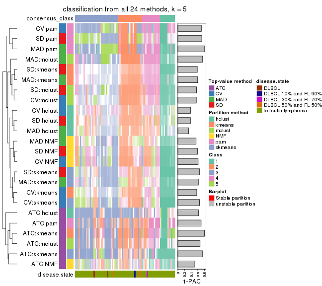
collect_classes(res_list, k = 6)
Overlap of top rows from different top-row methods:
top_rows_overlap(res_list, top_n = 1000, method = "euler")
top_rows_overlap(res_list, top_n = 2000, method = "euler")
top_rows_overlap(res_list, top_n = 3000, method = "euler")
top_rows_overlap(res_list, top_n = 4000, method = "euler")
top_rows_overlap(res_list, top_n = 5000, method = "euler")
Also visualize the correspondance of rankings between different top-row methods:
top_rows_overlap(res_list, top_n = 1000, method = "correspondance")
top_rows_overlap(res_list, top_n = 2000, method = "correspondance")
top_rows_overlap(res_list, top_n = 3000, method = "correspondance")
top_rows_overlap(res_list, top_n = 4000, method = "correspondance")
top_rows_overlap(res_list, top_n = 5000, method = "correspondance")
Heatmaps of the top rows:
top_rows_heatmap(res_list, top_n = 1000)
top_rows_heatmap(res_list, top_n = 2000)
top_rows_heatmap(res_list, top_n = 3000)
top_rows_heatmap(res_list, top_n = 4000)
top_rows_heatmap(res_list, top_n = 5000)
Test correlation between subgroups and known annotations. If the known annotation is numeric, one-way ANOVA test is applied, and if the known annotation is discrete, chi-squared contingency table test is applied.
test_to_known_factors(res_list, k = 2)
#> n disease.state(p) k
#> SD:NMF 79 0.652 2
#> CV:NMF 78 0.692 2
#> MAD:NMF 79 0.797 2
#> ATC:NMF 78 0.663 2
#> SD:skmeans 78 0.398 2
#> CV:skmeans 80 0.399 2
#> MAD:skmeans 77 0.404 2
#> ATC:skmeans 80 0.688 2
#> SD:mclust 78 0.279 2
#> CV:mclust 81 0.872 2
#> MAD:mclust 80 0.205 2
#> ATC:mclust 80 0.732 2
#> SD:kmeans 69 0.814 2
#> CV:kmeans 79 0.865 2
#> MAD:kmeans 70 0.350 2
#> ATC:kmeans 81 0.890 2
#> SD:pam 65 0.329 2
#> CV:pam 73 0.609 2
#> MAD:pam 79 0.328 2
#> ATC:pam 81 0.950 2
#> SD:hclust 79 0.902 2
#> CV:hclust 76 0.943 2
#> MAD:hclust 76 0.968 2
#> ATC:hclust 77 0.944 2
test_to_known_factors(res_list, k = 3)
#> n disease.state(p) k
#> SD:NMF 73 0.753 3
#> CV:NMF 75 0.771 3
#> MAD:NMF 73 0.588 3
#> ATC:NMF 64 0.804 3
#> SD:skmeans 76 0.458 3
#> CV:skmeans 79 0.437 3
#> MAD:skmeans 62 0.787 3
#> ATC:skmeans 78 0.208 3
#> SD:mclust 79 0.639 3
#> CV:mclust 80 0.667 3
#> MAD:mclust 57 0.468 3
#> ATC:mclust 74 0.972 3
#> SD:kmeans 79 0.607 3
#> CV:kmeans 78 0.552 3
#> MAD:kmeans 80 0.603 3
#> ATC:kmeans 81 0.935 3
#> SD:pam 76 0.473 3
#> CV:pam 65 0.499 3
#> MAD:pam 53 0.579 3
#> ATC:pam 76 0.889 3
#> SD:hclust 58 0.964 3
#> CV:hclust 46 0.571 3
#> MAD:hclust 62 0.865 3
#> ATC:hclust 71 0.999 3
test_to_known_factors(res_list, k = 4)
#> n disease.state(p) k
#> SD:NMF 70 0.4836 4
#> CV:NMF 75 0.7917 4
#> MAD:NMF 69 0.6126 4
#> ATC:NMF 55 0.7015 4
#> SD:skmeans 69 0.6058 4
#> CV:skmeans 68 0.5652 4
#> MAD:skmeans 73 0.6224 4
#> ATC:skmeans 70 0.9251 4
#> SD:mclust 80 0.5099 4
#> CV:mclust 69 0.6720 4
#> MAD:mclust 76 0.5594 4
#> ATC:mclust 71 0.5417 4
#> SD:kmeans 73 0.6515 4
#> CV:kmeans 64 0.0852 4
#> MAD:kmeans 75 0.4814 4
#> ATC:kmeans 71 0.8577 4
#> SD:pam 75 0.4759 4
#> CV:pam 78 0.5408 4
#> MAD:pam 56 0.4531 4
#> ATC:pam 75 0.8158 4
#> SD:hclust 47 0.9816 4
#> CV:hclust 32 0.8776 4
#> MAD:hclust 46 0.9614 4
#> ATC:hclust 56 0.9995 4
test_to_known_factors(res_list, k = 5)
#> n disease.state(p) k
#> SD:NMF 59 0.4850 5
#> CV:NMF 71 0.3444 5
#> MAD:NMF 49 0.5950 5
#> ATC:NMF 48 0.4067 5
#> SD:skmeans 47 0.1398 5
#> CV:skmeans 60 0.7732 5
#> MAD:skmeans 44 0.8348 5
#> ATC:skmeans 72 0.4035 5
#> SD:mclust 66 0.8582 5
#> CV:mclust 44 0.0628 5
#> MAD:mclust 71 0.6460 5
#> ATC:mclust 62 0.6629 5
#> SD:kmeans 42 0.4979 5
#> CV:kmeans 41 0.8066 5
#> MAD:kmeans 44 0.5618 5
#> ATC:kmeans 74 0.7630 5
#> SD:pam 62 0.6218 5
#> CV:pam 76 0.6047 5
#> MAD:pam 74 0.6004 5
#> ATC:pam 71 0.8332 5
#> SD:hclust 43 0.9937 5
#> CV:hclust 36 0.9269 5
#> MAD:hclust 35 0.9812 5
#> ATC:hclust 62 0.9229 5
test_to_known_factors(res_list, k = 6)
#> n disease.state(p) k
#> SD:NMF 59 0.0931 6
#> CV:NMF 43 0.1572 6
#> MAD:NMF 56 0.0787 6
#> ATC:NMF 38 0.4138 6
#> SD:skmeans 40 0.5891 6
#> CV:skmeans 50 0.6474 6
#> MAD:skmeans 44 0.7906 6
#> ATC:skmeans 56 0.1805 6
#> SD:mclust 79 0.0277 6
#> CV:mclust 79 0.0589 6
#> MAD:mclust 71 0.2286 6
#> ATC:mclust 64 0.9128 6
#> SD:kmeans 31 0.3464 6
#> CV:kmeans 37 0.8189 6
#> MAD:kmeans 23 0.4921 6
#> ATC:kmeans 67 0.8176 6
#> SD:pam 50 0.6708 6
#> CV:pam 73 0.5482 6
#> MAD:pam 77 0.5926 6
#> ATC:pam 56 0.9586 6
#> SD:hclust 24 NA 6
#> CV:hclust 34 0.9437 6
#> MAD:hclust 15 NA 6
#> ATC:hclust 65 0.9466 6
The object with results only for a single top-value method and a single partition method can be extracted as:
res = res_list["SD", "hclust"]
# you can also extract it by
# res = res_list["SD:hclust"]
A summary of res and all the functions that can be applied to it:
res
#> A 'ConsensusPartition' object with k = 2, 3, 4, 5, 6.
#> On a matrix with 51941 rows and 81 columns.
#> Top rows (1000, 2000, 3000, 4000, 5000) are extracted by 'SD' method.
#> Subgroups are detected by 'hclust' method.
#> Performed in total 1250 partitions by row resampling.
#> Best k for subgroups seems to be 2.
#>
#> Following methods can be applied to this 'ConsensusPartition' object:
#> [1] "cola_report" "collect_classes" "collect_plots"
#> [4] "collect_stats" "colnames" "compare_signatures"
#> [7] "consensus_heatmap" "dimension_reduction" "functional_enrichment"
#> [10] "get_anno_col" "get_anno" "get_classes"
#> [13] "get_consensus" "get_matrix" "get_membership"
#> [16] "get_param" "get_signatures" "get_stats"
#> [19] "is_best_k" "is_stable_k" "membership_heatmap"
#> [22] "ncol" "nrow" "plot_ecdf"
#> [25] "rownames" "select_partition_number" "show"
#> [28] "suggest_best_k" "test_to_known_factors"
collect_plots() function collects all the plots made from res for all k (number of partitions)
into one single page to provide an easy and fast comparison between different k.
collect_plots(res)
The plots are:
k and the heatmap of
predicted classes for each k.k.k.k.All the plots in panels can be made by individual functions and they are plotted later in this section.
select_partition_number() produces several plots showing different
statistics for choosing “optimized” k. There are following statistics:
k;k, the area increased is defined as \(A_k - A_{k-1}\).The detailed explanations of these statistics can be found in the cola vignette.
Generally speaking, lower PAC score, higher mean silhouette score or higher
concordance corresponds to better partition. Rand index and Jaccard index
measure how similar the current partition is compared to partition with k-1.
If they are too similar, we won't accept k is better than k-1.
select_partition_number(res)
The numeric values for all these statistics can be obtained by get_stats().
get_stats(res)
#> k 1-PAC mean_silhouette concordance area_increased Rand Jaccard
#> 2 2 0.926 0.911 0.951 0.2455 0.744 0.744
#> 3 3 0.276 0.548 0.768 1.0540 0.748 0.664
#> 4 4 0.300 0.474 0.724 0.2646 0.750 0.555
#> 5 5 0.380 0.476 0.688 0.0757 0.969 0.915
#> 6 6 0.413 0.367 0.622 0.0591 0.955 0.874
suggest_best_k() suggests the best \(k\) based on these statistics. The rules are as follows:
NA.suggest_best_k(res)
#> [1] 2
Following shows the table of the partitions (You need to click the show/hide
code output link to see it). The membership matrix (columns with name p*)
is inferred by
clue::cl_consensus()
function with the SE method. Basically the value in the membership matrix
represents the probability to belong to a certain group. The finall class
label for an item is determined with the group with highest probability it
belongs to.
In get_classes() function, the entropy is calculated from the membership
matrix and the silhouette score is calculated from the consensus matrix.
cbind(get_classes(res, k = 2), get_membership(res, k = 2))
#> class entropy silhouette p1 p2
#> GSM1301497 2 0.0376 0.968 0.004 0.996
#> GSM1301537 2 0.0000 0.968 0.000 1.000
#> GSM1301521 2 0.1414 0.963 0.020 0.980
#> GSM1301555 2 0.0672 0.967 0.008 0.992
#> GSM1301501 2 0.0376 0.968 0.004 0.996
#> GSM1301508 2 0.0000 0.968 0.000 1.000
#> GSM1301481 2 0.2043 0.957 0.032 0.968
#> GSM1301482 1 0.9427 0.582 0.640 0.360
#> GSM1301483 1 0.9552 0.535 0.624 0.376
#> GSM1301484 2 0.3114 0.945 0.056 0.944
#> GSM1301485 2 0.3879 0.929 0.076 0.924
#> GSM1301486 2 0.3879 0.929 0.076 0.924
#> GSM1301487 2 0.3584 0.936 0.068 0.932
#> GSM1301488 1 0.9552 0.535 0.624 0.376
#> GSM1301489 2 0.0000 0.968 0.000 1.000
#> GSM1301490 2 0.4431 0.913 0.092 0.908
#> GSM1301491 2 0.0376 0.968 0.004 0.996
#> GSM1301492 2 0.4161 0.915 0.084 0.916
#> GSM1301493 2 0.2778 0.949 0.048 0.952
#> GSM1301494 2 0.3274 0.942 0.060 0.940
#> GSM1301495 2 0.2778 0.949 0.048 0.952
#> GSM1301496 2 0.0376 0.968 0.004 0.996
#> GSM1301498 2 0.0000 0.968 0.000 1.000
#> GSM1301499 2 0.3879 0.929 0.076 0.924
#> GSM1301500 1 0.1843 0.819 0.972 0.028
#> GSM1301502 2 0.0938 0.966 0.012 0.988
#> GSM1301503 2 0.0000 0.968 0.000 1.000
#> GSM1301504 2 0.0376 0.968 0.004 0.996
#> GSM1301505 2 0.3274 0.942 0.060 0.940
#> GSM1301506 2 0.0000 0.968 0.000 1.000
#> GSM1301507 2 0.0000 0.968 0.000 1.000
#> GSM1301509 1 0.5629 0.799 0.868 0.132
#> GSM1301510 1 0.0376 0.809 0.996 0.004
#> GSM1301511 2 0.0000 0.968 0.000 1.000
#> GSM1301512 2 0.0672 0.968 0.008 0.992
#> GSM1301513 2 0.3584 0.936 0.068 0.932
#> GSM1301514 2 0.0376 0.968 0.004 0.996
#> GSM1301515 2 0.0376 0.968 0.004 0.996
#> GSM1301516 2 0.3274 0.943 0.060 0.940
#> GSM1301517 2 0.0376 0.968 0.004 0.996
#> GSM1301518 1 0.9996 0.237 0.512 0.488
#> GSM1301519 2 0.0376 0.968 0.004 0.996
#> GSM1301520 2 0.0376 0.968 0.004 0.996
#> GSM1301522 2 0.4431 0.913 0.092 0.908
#> GSM1301523 1 0.1843 0.819 0.972 0.028
#> GSM1301524 2 0.0672 0.966 0.008 0.992
#> GSM1301525 2 0.0000 0.968 0.000 1.000
#> GSM1301526 2 0.0672 0.966 0.008 0.992
#> GSM1301527 2 0.0376 0.968 0.004 0.996
#> GSM1301528 2 0.2948 0.948 0.052 0.948
#> GSM1301529 2 0.9522 0.282 0.372 0.628
#> GSM1301530 2 0.0000 0.968 0.000 1.000
#> GSM1301531 2 0.2043 0.957 0.032 0.968
#> GSM1301532 2 0.0000 0.968 0.000 1.000
#> GSM1301533 2 0.0376 0.968 0.004 0.996
#> GSM1301534 2 0.0376 0.968 0.004 0.996
#> GSM1301535 2 0.2778 0.949 0.048 0.952
#> GSM1301536 2 0.3114 0.945 0.056 0.944
#> GSM1301538 2 0.0672 0.967 0.008 0.992
#> GSM1301539 2 0.2948 0.948 0.052 0.948
#> GSM1301540 2 0.0000 0.968 0.000 1.000
#> GSM1301541 2 0.0000 0.968 0.000 1.000
#> GSM1301542 1 0.1843 0.819 0.972 0.028
#> GSM1301543 2 0.0376 0.968 0.004 0.996
#> GSM1301544 2 0.0000 0.968 0.000 1.000
#> GSM1301545 1 0.3733 0.819 0.928 0.072
#> GSM1301546 2 0.0672 0.968 0.008 0.992
#> GSM1301547 2 0.0000 0.968 0.000 1.000
#> GSM1301548 2 0.0376 0.968 0.004 0.996
#> GSM1301549 2 0.0000 0.968 0.000 1.000
#> GSM1301550 1 0.4161 0.817 0.916 0.084
#> GSM1301551 2 0.1414 0.963 0.020 0.980
#> GSM1301552 2 0.4022 0.920 0.080 0.920
#> GSM1301553 1 0.1843 0.819 0.972 0.028
#> GSM1301554 2 0.0000 0.968 0.000 1.000
#> GSM1301556 2 0.0376 0.968 0.004 0.996
#> GSM1301557 2 0.0938 0.966 0.012 0.988
#> GSM1301558 2 0.0376 0.968 0.004 0.996
#> GSM1301559 2 0.0376 0.968 0.004 0.996
#> GSM1301560 2 0.0000 0.968 0.000 1.000
#> GSM1301561 2 0.3584 0.936 0.068 0.932
cbind(get_classes(res, k = 3), get_membership(res, k = 3))
#> class entropy silhouette p1 p2 p3
#> GSM1301497 3 0.613 0.4062 0.000 0.400 0.600
#> GSM1301537 2 0.615 0.0560 0.000 0.592 0.408
#> GSM1301521 2 0.618 -0.0615 0.000 0.584 0.416
#> GSM1301555 2 0.397 0.6783 0.008 0.860 0.132
#> GSM1301501 2 0.350 0.7123 0.004 0.880 0.116
#> GSM1301508 2 0.245 0.7163 0.000 0.924 0.076
#> GSM1301481 2 0.536 0.5482 0.000 0.724 0.276
#> GSM1301482 1 0.877 0.4603 0.584 0.180 0.236
#> GSM1301483 1 0.630 0.5981 0.528 0.000 0.472
#> GSM1301484 3 0.625 0.4327 0.000 0.444 0.556
#> GSM1301485 3 0.493 0.7101 0.000 0.232 0.768
#> GSM1301486 3 0.493 0.7101 0.000 0.232 0.768
#> GSM1301487 3 0.497 0.7112 0.000 0.236 0.764
#> GSM1301488 1 0.630 0.5981 0.528 0.000 0.472
#> GSM1301489 2 0.175 0.7290 0.000 0.952 0.048
#> GSM1301490 2 0.740 0.0565 0.032 0.492 0.476
#> GSM1301491 2 0.398 0.7096 0.004 0.852 0.144
#> GSM1301492 2 0.729 -0.2492 0.028 0.508 0.464
#> GSM1301493 3 0.630 0.4307 0.000 0.480 0.520
#> GSM1301494 2 0.629 0.0235 0.000 0.536 0.464
#> GSM1301495 3 0.627 0.4744 0.000 0.456 0.544
#> GSM1301496 2 0.610 0.3387 0.004 0.648 0.348
#> GSM1301498 2 0.207 0.7234 0.000 0.940 0.060
#> GSM1301499 3 0.493 0.7101 0.000 0.232 0.768
#> GSM1301500 1 0.000 0.7856 1.000 0.000 0.000
#> GSM1301502 2 0.525 0.5124 0.000 0.736 0.264
#> GSM1301503 2 0.141 0.7240 0.000 0.964 0.036
#> GSM1301504 2 0.343 0.7241 0.004 0.884 0.112
#> GSM1301505 2 0.626 0.0768 0.000 0.552 0.448
#> GSM1301506 2 0.129 0.7232 0.000 0.968 0.032
#> GSM1301507 2 0.216 0.7308 0.000 0.936 0.064
#> GSM1301509 1 0.551 0.7683 0.784 0.028 0.188
#> GSM1301510 1 0.288 0.7907 0.904 0.000 0.096
#> GSM1301511 2 0.355 0.7106 0.000 0.868 0.132
#> GSM1301512 2 0.411 0.7000 0.004 0.844 0.152
#> GSM1301513 3 0.502 0.7119 0.000 0.240 0.760
#> GSM1301514 2 0.382 0.7050 0.000 0.852 0.148
#> GSM1301515 2 0.165 0.7265 0.004 0.960 0.036
#> GSM1301516 2 0.642 0.4227 0.020 0.676 0.304
#> GSM1301517 2 0.382 0.7050 0.000 0.852 0.148
#> GSM1301518 3 0.671 -0.4904 0.416 0.012 0.572
#> GSM1301519 2 0.429 0.7019 0.004 0.832 0.164
#> GSM1301520 2 0.350 0.7123 0.004 0.880 0.116
#> GSM1301522 2 0.740 0.0565 0.032 0.492 0.476
#> GSM1301523 1 0.000 0.7856 1.000 0.000 0.000
#> GSM1301524 2 0.383 0.6906 0.008 0.868 0.124
#> GSM1301525 2 0.334 0.7106 0.000 0.880 0.120
#> GSM1301526 2 0.375 0.6933 0.008 0.872 0.120
#> GSM1301527 2 0.165 0.7265 0.004 0.960 0.036
#> GSM1301528 3 0.640 0.5944 0.004 0.416 0.580
#> GSM1301529 1 0.985 -0.2945 0.400 0.256 0.344
#> GSM1301530 2 0.196 0.7263 0.000 0.944 0.056
#> GSM1301531 2 0.536 0.5482 0.000 0.724 0.276
#> GSM1301532 2 0.129 0.7232 0.000 0.968 0.032
#> GSM1301533 2 0.175 0.7291 0.000 0.952 0.048
#> GSM1301534 2 0.165 0.7265 0.004 0.960 0.036
#> GSM1301535 3 0.627 0.4744 0.000 0.456 0.544
#> GSM1301536 2 0.610 0.2818 0.000 0.608 0.392
#> GSM1301538 2 0.397 0.6783 0.008 0.860 0.132
#> GSM1301539 3 0.640 0.5944 0.004 0.416 0.580
#> GSM1301540 2 0.553 0.5258 0.000 0.704 0.296
#> GSM1301541 2 0.141 0.7240 0.000 0.964 0.036
#> GSM1301542 1 0.000 0.7856 1.000 0.000 0.000
#> GSM1301543 2 0.259 0.7193 0.004 0.924 0.072
#> GSM1301544 2 0.355 0.7106 0.000 0.868 0.132
#> GSM1301545 1 0.406 0.7858 0.836 0.000 0.164
#> GSM1301546 2 0.411 0.7000 0.004 0.844 0.152
#> GSM1301547 2 0.207 0.7234 0.000 0.940 0.060
#> GSM1301548 2 0.165 0.7265 0.004 0.960 0.036
#> GSM1301549 2 0.412 0.7017 0.000 0.832 0.168
#> GSM1301550 1 0.424 0.7844 0.824 0.000 0.176
#> GSM1301551 2 0.618 -0.0615 0.000 0.584 0.416
#> GSM1301552 2 0.715 -0.2114 0.024 0.536 0.440
#> GSM1301553 1 0.000 0.7856 1.000 0.000 0.000
#> GSM1301554 2 0.103 0.7283 0.000 0.976 0.024
#> GSM1301556 2 0.398 0.7096 0.004 0.852 0.144
#> GSM1301557 2 0.608 0.3484 0.000 0.612 0.388
#> GSM1301558 2 0.610 0.3387 0.004 0.648 0.348
#> GSM1301559 2 0.617 0.3106 0.004 0.636 0.360
#> GSM1301560 2 0.129 0.7232 0.000 0.968 0.032
#> GSM1301561 3 0.502 0.7119 0.000 0.240 0.760
cbind(get_classes(res, k = 4), get_membership(res, k = 4))
#> class entropy silhouette p1 p2 p3 p4
#> GSM1301497 3 0.676 -0.04959 0.000 0.116 0.564 0.320
#> GSM1301537 3 0.789 -0.11454 0.000 0.344 0.368 0.288
#> GSM1301521 3 0.566 0.30882 0.000 0.440 0.536 0.024
#> GSM1301555 2 0.482 0.60903 0.008 0.784 0.160 0.048
#> GSM1301501 2 0.579 0.64313 0.000 0.708 0.168 0.124
#> GSM1301508 2 0.442 0.64364 0.000 0.796 0.044 0.160
#> GSM1301481 3 0.773 -0.11825 0.000 0.384 0.388 0.228
#> GSM1301482 1 0.812 0.42270 0.564 0.116 0.232 0.088
#> GSM1301483 1 0.761 0.53928 0.468 0.000 0.228 0.304
#> GSM1301484 3 0.514 0.35082 0.000 0.268 0.700 0.032
#> GSM1301485 3 0.214 0.30809 0.000 0.016 0.928 0.056
#> GSM1301486 3 0.214 0.30809 0.000 0.016 0.928 0.056
#> GSM1301487 3 0.198 0.31263 0.000 0.016 0.936 0.048
#> GSM1301488 1 0.761 0.53928 0.468 0.000 0.228 0.304
#> GSM1301489 2 0.293 0.72736 0.000 0.896 0.056 0.048
#> GSM1301490 4 0.810 0.62226 0.020 0.196 0.332 0.452
#> GSM1301491 2 0.513 0.66424 0.000 0.748 0.184 0.068
#> GSM1301492 3 0.695 0.29509 0.040 0.368 0.548 0.044
#> GSM1301493 3 0.462 0.39013 0.000 0.340 0.660 0.000
#> GSM1301494 3 0.588 -0.06466 0.000 0.084 0.676 0.240
#> GSM1301495 3 0.453 0.40043 0.000 0.292 0.704 0.004
#> GSM1301496 2 0.616 0.18081 0.000 0.532 0.416 0.052
#> GSM1301498 2 0.389 0.69490 0.000 0.844 0.064 0.092
#> GSM1301499 3 0.214 0.30809 0.000 0.016 0.928 0.056
#> GSM1301500 1 0.208 0.71437 0.916 0.000 0.000 0.084
#> GSM1301502 2 0.564 0.27317 0.000 0.604 0.364 0.032
#> GSM1301503 2 0.158 0.72202 0.000 0.948 0.004 0.048
#> GSM1301504 2 0.444 0.69715 0.000 0.804 0.136 0.060
#> GSM1301505 3 0.597 -0.07332 0.000 0.088 0.668 0.244
#> GSM1301506 2 0.140 0.72280 0.000 0.956 0.004 0.040
#> GSM1301507 2 0.267 0.73237 0.000 0.908 0.044 0.048
#> GSM1301509 1 0.562 0.71433 0.752 0.016 0.128 0.104
#> GSM1301510 1 0.284 0.73849 0.896 0.000 0.076 0.028
#> GSM1301511 2 0.606 0.61695 0.000 0.680 0.196 0.124
#> GSM1301512 2 0.614 0.61754 0.000 0.676 0.184 0.140
#> GSM1301513 3 0.189 0.31320 0.000 0.016 0.940 0.044
#> GSM1301514 2 0.610 0.61798 0.000 0.680 0.184 0.136
#> GSM1301515 2 0.241 0.72151 0.000 0.916 0.020 0.064
#> GSM1301516 2 0.653 0.20502 0.012 0.544 0.392 0.052
#> GSM1301517 2 0.610 0.61798 0.000 0.680 0.184 0.136
#> GSM1301518 1 0.786 0.36519 0.368 0.000 0.360 0.272
#> GSM1301519 2 0.535 0.65794 0.000 0.732 0.192 0.076
#> GSM1301520 2 0.579 0.64313 0.000 0.708 0.168 0.124
#> GSM1301522 4 0.810 0.62226 0.020 0.196 0.332 0.452
#> GSM1301523 1 0.208 0.71437 0.916 0.000 0.000 0.084
#> GSM1301524 2 0.408 0.68543 0.008 0.840 0.104 0.048
#> GSM1301525 2 0.494 0.66187 0.000 0.776 0.128 0.096
#> GSM1301526 2 0.509 0.65895 0.008 0.780 0.124 0.088
#> GSM1301527 2 0.241 0.72151 0.000 0.916 0.020 0.064
#> GSM1301528 3 0.458 0.38576 0.004 0.224 0.756 0.016
#> GSM1301529 3 0.788 -0.00372 0.384 0.164 0.436 0.016
#> GSM1301530 2 0.217 0.72784 0.000 0.928 0.020 0.052
#> GSM1301531 3 0.773 -0.11825 0.000 0.384 0.388 0.228
#> GSM1301532 2 0.158 0.72105 0.000 0.948 0.004 0.048
#> GSM1301533 2 0.223 0.72686 0.000 0.928 0.036 0.036
#> GSM1301534 2 0.241 0.72151 0.000 0.916 0.020 0.064
#> GSM1301535 3 0.453 0.40043 0.000 0.292 0.704 0.004
#> GSM1301536 3 0.709 -0.10348 0.000 0.216 0.568 0.216
#> GSM1301538 2 0.482 0.60903 0.008 0.784 0.160 0.048
#> GSM1301539 3 0.458 0.38576 0.004 0.224 0.756 0.016
#> GSM1301540 3 0.724 -0.33561 0.000 0.144 0.460 0.396
#> GSM1301541 2 0.158 0.72202 0.000 0.948 0.004 0.048
#> GSM1301542 1 0.208 0.71437 0.916 0.000 0.000 0.084
#> GSM1301543 2 0.420 0.68398 0.000 0.824 0.068 0.108
#> GSM1301544 2 0.606 0.61695 0.000 0.680 0.196 0.124
#> GSM1301545 1 0.425 0.73594 0.820 0.000 0.116 0.064
#> GSM1301546 2 0.614 0.61754 0.000 0.676 0.184 0.140
#> GSM1301547 2 0.389 0.69490 0.000 0.844 0.064 0.092
#> GSM1301548 2 0.241 0.72151 0.000 0.916 0.020 0.064
#> GSM1301549 2 0.733 0.09916 0.000 0.528 0.212 0.260
#> GSM1301550 1 0.471 0.73164 0.792 0.000 0.120 0.088
#> GSM1301551 3 0.566 0.30882 0.000 0.440 0.536 0.024
#> GSM1301552 3 0.666 0.30546 0.036 0.408 0.528 0.028
#> GSM1301553 1 0.208 0.71437 0.916 0.000 0.000 0.084
#> GSM1301554 2 0.149 0.72874 0.000 0.956 0.012 0.032
#> GSM1301556 2 0.513 0.66424 0.000 0.748 0.184 0.068
#> GSM1301557 4 0.712 0.28591 0.000 0.160 0.300 0.540
#> GSM1301558 2 0.616 0.18081 0.000 0.532 0.416 0.052
#> GSM1301559 2 0.624 0.14531 0.000 0.520 0.424 0.056
#> GSM1301560 2 0.158 0.72105 0.000 0.948 0.004 0.048
#> GSM1301561 3 0.189 0.31320 0.000 0.016 0.940 0.044
cbind(get_classes(res, k = 5), get_membership(res, k = 5))
#> class entropy silhouette p1 p2 p3 p4 p5
#> GSM1301497 4 0.6973 0.2840 0.000 0.060 0.372 0.468 0.100
#> GSM1301537 4 0.7663 0.2903 0.000 0.284 0.196 0.444 0.076
#> GSM1301521 3 0.5508 0.3306 0.000 0.416 0.532 0.036 0.016
#> GSM1301555 2 0.4622 0.5982 0.008 0.772 0.156 0.020 0.044
#> GSM1301501 2 0.5623 0.6191 0.000 0.652 0.080 0.248 0.020
#> GSM1301508 2 0.4228 0.6033 0.000 0.748 0.004 0.216 0.032
#> GSM1301481 3 0.7328 -0.0173 0.000 0.276 0.360 0.340 0.024
#> GSM1301482 1 0.8250 0.0291 0.352 0.104 0.196 0.008 0.340
#> GSM1301483 5 0.4535 0.8227 0.092 0.000 0.160 0.000 0.748
#> GSM1301484 3 0.5528 0.4076 0.000 0.256 0.652 0.076 0.016
#> GSM1301485 3 0.1638 0.3771 0.000 0.000 0.932 0.004 0.064
#> GSM1301486 3 0.1638 0.3771 0.000 0.000 0.932 0.004 0.064
#> GSM1301487 3 0.1331 0.3873 0.000 0.000 0.952 0.008 0.040
#> GSM1301488 5 0.4535 0.8227 0.092 0.000 0.160 0.000 0.748
#> GSM1301489 2 0.3622 0.6973 0.000 0.844 0.032 0.092 0.032
#> GSM1301490 4 0.8490 0.3016 0.008 0.128 0.244 0.352 0.268
#> GSM1301491 2 0.5380 0.6549 0.000 0.708 0.104 0.164 0.024
#> GSM1301492 3 0.7314 0.2880 0.008 0.360 0.464 0.072 0.096
#> GSM1301493 3 0.4366 0.4510 0.000 0.320 0.664 0.016 0.000
#> GSM1301494 3 0.4759 0.0351 0.000 0.008 0.644 0.328 0.020
#> GSM1301495 3 0.4206 0.4639 0.000 0.272 0.708 0.020 0.000
#> GSM1301496 2 0.6311 0.2260 0.000 0.516 0.360 0.108 0.016
#> GSM1301498 2 0.4998 0.6235 0.000 0.712 0.012 0.208 0.068
#> GSM1301499 3 0.1638 0.3771 0.000 0.000 0.932 0.004 0.064
#> GSM1301500 1 0.0000 0.6424 1.000 0.000 0.000 0.000 0.000
#> GSM1301502 2 0.5707 0.2367 0.000 0.580 0.348 0.048 0.024
#> GSM1301503 2 0.1894 0.6950 0.000 0.920 0.000 0.008 0.072
#> GSM1301504 2 0.4922 0.6703 0.000 0.756 0.104 0.112 0.028
#> GSM1301505 3 0.4843 0.0259 0.000 0.008 0.640 0.328 0.024
#> GSM1301506 2 0.1740 0.6958 0.000 0.932 0.000 0.012 0.056
#> GSM1301507 2 0.2722 0.7092 0.000 0.896 0.028 0.056 0.020
#> GSM1301509 1 0.6492 0.3462 0.512 0.016 0.080 0.016 0.376
#> GSM1301510 1 0.4616 0.5292 0.680 0.000 0.028 0.004 0.288
#> GSM1301511 2 0.6000 0.5952 0.000 0.620 0.112 0.248 0.020
#> GSM1301512 2 0.5925 0.5935 0.000 0.624 0.092 0.260 0.024
#> GSM1301513 3 0.1205 0.3881 0.000 0.000 0.956 0.004 0.040
#> GSM1301514 2 0.5817 0.5907 0.000 0.620 0.092 0.272 0.016
#> GSM1301515 2 0.2521 0.7038 0.000 0.900 0.008 0.068 0.024
#> GSM1301516 2 0.6853 0.2645 0.008 0.532 0.324 0.080 0.056
#> GSM1301517 2 0.5817 0.5907 0.000 0.620 0.092 0.272 0.016
#> GSM1301518 5 0.4941 0.6856 0.044 0.000 0.328 0.000 0.628
#> GSM1301519 2 0.5600 0.6498 0.000 0.692 0.116 0.164 0.028
#> GSM1301520 2 0.5623 0.6191 0.000 0.652 0.080 0.248 0.020
#> GSM1301522 4 0.8490 0.3016 0.008 0.128 0.244 0.352 0.268
#> GSM1301523 1 0.0162 0.6416 0.996 0.000 0.000 0.000 0.004
#> GSM1301524 2 0.4081 0.6533 0.000 0.820 0.084 0.032 0.064
#> GSM1301525 2 0.6156 0.5729 0.000 0.648 0.072 0.204 0.076
#> GSM1301526 2 0.5121 0.6303 0.000 0.744 0.084 0.132 0.040
#> GSM1301527 2 0.2521 0.7038 0.000 0.900 0.008 0.068 0.024
#> GSM1301528 3 0.4068 0.4415 0.004 0.208 0.764 0.004 0.020
#> GSM1301529 3 0.6616 0.0302 0.400 0.164 0.428 0.008 0.000
#> GSM1301530 2 0.2576 0.6997 0.000 0.900 0.008 0.036 0.056
#> GSM1301531 3 0.7328 -0.0173 0.000 0.276 0.360 0.340 0.024
#> GSM1301532 2 0.1877 0.6939 0.000 0.924 0.000 0.012 0.064
#> GSM1301533 2 0.2444 0.7012 0.000 0.912 0.028 0.024 0.036
#> GSM1301534 2 0.2521 0.7038 0.000 0.900 0.008 0.068 0.024
#> GSM1301535 3 0.4206 0.4639 0.000 0.272 0.708 0.020 0.000
#> GSM1301536 3 0.6485 0.0481 0.000 0.120 0.552 0.300 0.028
#> GSM1301538 2 0.4622 0.5982 0.008 0.772 0.156 0.020 0.044
#> GSM1301539 3 0.4068 0.4415 0.004 0.208 0.764 0.004 0.020
#> GSM1301540 4 0.5974 0.2688 0.000 0.036 0.392 0.528 0.044
#> GSM1301541 2 0.1894 0.6950 0.000 0.920 0.000 0.008 0.072
#> GSM1301542 1 0.0000 0.6424 1.000 0.000 0.000 0.000 0.000
#> GSM1301543 2 0.5358 0.5945 0.000 0.680 0.012 0.220 0.088
#> GSM1301544 2 0.6000 0.5952 0.000 0.620 0.112 0.248 0.020
#> GSM1301545 1 0.5489 0.4423 0.576 0.000 0.064 0.004 0.356
#> GSM1301546 2 0.5925 0.5935 0.000 0.624 0.092 0.260 0.024
#> GSM1301547 2 0.4998 0.6235 0.000 0.712 0.012 0.208 0.068
#> GSM1301548 2 0.2521 0.7038 0.000 0.900 0.008 0.068 0.024
#> GSM1301549 2 0.7431 -0.0696 0.000 0.408 0.180 0.360 0.052
#> GSM1301550 1 0.5727 0.3946 0.540 0.000 0.068 0.008 0.384
#> GSM1301551 3 0.5508 0.3306 0.000 0.416 0.532 0.036 0.016
#> GSM1301552 3 0.6788 0.2940 0.004 0.396 0.468 0.040 0.092
#> GSM1301553 1 0.0162 0.6416 0.996 0.000 0.000 0.000 0.004
#> GSM1301554 2 0.1710 0.7073 0.000 0.940 0.004 0.040 0.016
#> GSM1301556 2 0.5380 0.6549 0.000 0.708 0.104 0.164 0.024
#> GSM1301557 4 0.5516 0.3732 0.000 0.052 0.092 0.716 0.140
#> GSM1301558 2 0.6311 0.2260 0.000 0.516 0.360 0.108 0.016
#> GSM1301559 2 0.6441 0.1986 0.000 0.504 0.364 0.112 0.020
#> GSM1301560 2 0.1877 0.6939 0.000 0.924 0.000 0.012 0.064
#> GSM1301561 3 0.1205 0.3881 0.000 0.000 0.956 0.004 0.040
cbind(get_classes(res, k = 6), get_membership(res, k = 6))
#> class entropy silhouette p1 p2 p3 p4 p5 p6
#> GSM1301497 4 0.7740 -0.3884 0.024 0.156 0.168 0.412 0.000 0.240
#> GSM1301537 6 0.5867 0.0000 0.016 0.128 0.000 0.384 0.000 0.472
#> GSM1301521 3 0.6186 0.2598 0.000 0.320 0.432 0.008 0.000 0.240
#> GSM1301555 2 0.5671 0.4256 0.004 0.460 0.116 0.004 0.000 0.416
#> GSM1301501 2 0.2701 0.4677 0.000 0.864 0.004 0.104 0.000 0.028
#> GSM1301508 2 0.5894 0.3802 0.004 0.500 0.000 0.216 0.000 0.280
#> GSM1301481 4 0.7110 0.2665 0.000 0.232 0.324 0.364 0.000 0.080
#> GSM1301482 1 0.7821 0.2274 0.388 0.024 0.120 0.004 0.280 0.184
#> GSM1301483 1 0.2788 0.5038 0.876 0.004 0.084 0.020 0.012 0.004
#> GSM1301484 3 0.5979 0.3333 0.004 0.308 0.544 0.032 0.000 0.112
#> GSM1301485 3 0.1219 0.4045 0.048 0.000 0.948 0.000 0.000 0.004
#> GSM1301486 3 0.1219 0.4045 0.048 0.000 0.948 0.000 0.000 0.004
#> GSM1301487 3 0.0837 0.4171 0.020 0.004 0.972 0.000 0.000 0.004
#> GSM1301488 1 0.2788 0.5038 0.876 0.004 0.084 0.020 0.012 0.004
#> GSM1301489 2 0.5266 0.5434 0.000 0.640 0.032 0.080 0.000 0.248
#> GSM1301490 4 0.8138 0.4088 0.248 0.188 0.200 0.332 0.000 0.032
#> GSM1301491 2 0.2342 0.5322 0.000 0.904 0.040 0.024 0.000 0.032
#> GSM1301492 2 0.7398 -0.2192 0.076 0.364 0.348 0.012 0.004 0.196
#> GSM1301493 3 0.5727 0.4203 0.004 0.248 0.560 0.004 0.000 0.184
#> GSM1301494 3 0.5514 -0.0973 0.016 0.076 0.568 0.332 0.000 0.008
#> GSM1301495 3 0.5477 0.4378 0.004 0.236 0.600 0.004 0.000 0.156
#> GSM1301496 2 0.5403 0.2394 0.004 0.604 0.268 0.008 0.000 0.116
#> GSM1301498 2 0.5480 0.3681 0.024 0.628 0.000 0.212 0.000 0.136
#> GSM1301499 3 0.1219 0.4045 0.048 0.000 0.948 0.000 0.000 0.004
#> GSM1301500 5 0.0000 0.8374 0.000 0.000 0.000 0.000 1.000 0.000
#> GSM1301502 2 0.6211 0.2633 0.000 0.460 0.252 0.012 0.000 0.276
#> GSM1301503 2 0.3823 0.5270 0.000 0.564 0.000 0.000 0.000 0.436
#> GSM1301504 2 0.5144 0.5448 0.000 0.704 0.088 0.072 0.000 0.136
#> GSM1301505 3 0.5412 -0.1134 0.016 0.072 0.560 0.348 0.000 0.004
#> GSM1301506 2 0.3804 0.5291 0.000 0.576 0.000 0.000 0.000 0.424
#> GSM1301507 2 0.4842 0.5636 0.000 0.624 0.024 0.036 0.000 0.316
#> GSM1301509 1 0.5640 0.2987 0.508 0.024 0.024 0.004 0.412 0.028
#> GSM1301510 5 0.5057 -0.1250 0.436 0.000 0.000 0.012 0.504 0.048
#> GSM1301511 2 0.4131 0.4407 0.000 0.776 0.028 0.132 0.000 0.064
#> GSM1301512 2 0.3306 0.4325 0.000 0.820 0.008 0.136 0.000 0.036
#> GSM1301513 3 0.0458 0.4182 0.016 0.000 0.984 0.000 0.000 0.000
#> GSM1301514 2 0.3352 0.4376 0.000 0.812 0.008 0.148 0.000 0.032
#> GSM1301515 2 0.3780 0.5641 0.004 0.728 0.000 0.020 0.000 0.248
#> GSM1301516 2 0.6982 0.2969 0.064 0.492 0.216 0.016 0.000 0.212
#> GSM1301517 2 0.3352 0.4376 0.000 0.812 0.008 0.148 0.000 0.032
#> GSM1301518 1 0.3851 0.3798 0.700 0.000 0.284 0.008 0.004 0.004
#> GSM1301519 2 0.2602 0.5299 0.000 0.888 0.052 0.020 0.000 0.040
#> GSM1301520 2 0.2701 0.4677 0.000 0.864 0.004 0.104 0.000 0.028
#> GSM1301522 4 0.8138 0.4088 0.248 0.188 0.200 0.332 0.000 0.032
#> GSM1301523 5 0.0146 0.8372 0.000 0.000 0.000 0.000 0.996 0.004
#> GSM1301524 2 0.4842 0.4781 0.012 0.508 0.024 0.004 0.000 0.452
#> GSM1301525 2 0.6858 0.2626 0.020 0.520 0.060 0.220 0.000 0.180
#> GSM1301526 2 0.6141 0.4466 0.016 0.500 0.024 0.100 0.000 0.360
#> GSM1301527 2 0.3780 0.5641 0.004 0.728 0.000 0.020 0.000 0.248
#> GSM1301528 3 0.4328 0.4483 0.000 0.092 0.716 0.000 0.000 0.192
#> GSM1301529 3 0.6523 0.1033 0.000 0.104 0.416 0.000 0.400 0.080
#> GSM1301530 2 0.4554 0.5342 0.000 0.568 0.008 0.024 0.000 0.400
#> GSM1301531 4 0.7110 0.2665 0.000 0.232 0.324 0.364 0.000 0.080
#> GSM1301532 2 0.3817 0.5253 0.000 0.568 0.000 0.000 0.000 0.432
#> GSM1301533 2 0.4590 0.5455 0.004 0.592 0.028 0.004 0.000 0.372
#> GSM1301534 2 0.3780 0.5641 0.004 0.728 0.000 0.020 0.000 0.248
#> GSM1301535 3 0.5477 0.4378 0.004 0.236 0.600 0.004 0.000 0.156
#> GSM1301536 3 0.6083 -0.1929 0.004 0.100 0.488 0.372 0.000 0.036
#> GSM1301538 2 0.5671 0.4256 0.004 0.460 0.116 0.004 0.000 0.416
#> GSM1301539 3 0.4328 0.4483 0.000 0.092 0.716 0.000 0.000 0.192
#> GSM1301540 4 0.5894 0.3359 0.008 0.120 0.316 0.540 0.000 0.016
#> GSM1301541 2 0.3823 0.5270 0.000 0.564 0.000 0.000 0.000 0.436
#> GSM1301542 5 0.0000 0.8374 0.000 0.000 0.000 0.000 1.000 0.000
#> GSM1301543 2 0.5752 0.2972 0.024 0.592 0.000 0.216 0.000 0.168
#> GSM1301544 2 0.4131 0.4407 0.000 0.776 0.028 0.132 0.000 0.064
#> GSM1301545 1 0.4488 0.2121 0.508 0.000 0.008 0.000 0.468 0.016
#> GSM1301546 2 0.3306 0.4325 0.000 0.820 0.008 0.136 0.000 0.036
#> GSM1301547 2 0.5480 0.3681 0.024 0.628 0.000 0.212 0.000 0.136
#> GSM1301548 2 0.3780 0.5641 0.004 0.728 0.000 0.020 0.000 0.248
#> GSM1301549 2 0.6901 -0.3200 0.000 0.392 0.136 0.372 0.000 0.100
#> GSM1301550 1 0.4693 0.2788 0.532 0.000 0.012 0.000 0.432 0.024
#> GSM1301551 3 0.6186 0.2598 0.000 0.320 0.432 0.008 0.000 0.240
#> GSM1301552 3 0.7201 0.1884 0.076 0.328 0.360 0.004 0.000 0.232
#> GSM1301553 5 0.0146 0.8372 0.000 0.000 0.000 0.000 0.996 0.004
#> GSM1301554 2 0.3684 0.5682 0.000 0.692 0.004 0.004 0.000 0.300
#> GSM1301556 2 0.2342 0.5322 0.000 0.904 0.040 0.024 0.000 0.032
#> GSM1301557 4 0.5180 -0.1412 0.048 0.180 0.000 0.684 0.000 0.088
#> GSM1301558 2 0.5403 0.2394 0.004 0.604 0.268 0.008 0.000 0.116
#> GSM1301559 2 0.5548 0.2211 0.004 0.592 0.272 0.012 0.000 0.120
#> GSM1301560 2 0.3817 0.5253 0.000 0.568 0.000 0.000 0.000 0.432
#> GSM1301561 3 0.0458 0.4182 0.016 0.000 0.984 0.000 0.000 0.000
Heatmaps for the consensus matrix. It visualizes the probability of two samples to be in a same group.
consensus_heatmap(res, k = 2)
consensus_heatmap(res, k = 3)
consensus_heatmap(res, k = 4)
consensus_heatmap(res, k = 5)
consensus_heatmap(res, k = 6)
Heatmaps for the membership of samples in all partitions to see how consistent they are:
membership_heatmap(res, k = 2)
membership_heatmap(res, k = 3)
membership_heatmap(res, k = 4)
membership_heatmap(res, k = 5)
membership_heatmap(res, k = 6)
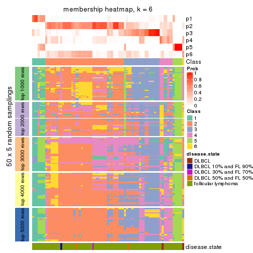
As soon as we have had the classes for columns, we can look for signatures which are significantly different between classes which can be candidate marks for certain classes. Following are the heatmaps for signatures.
Signature heatmaps where rows are scaled:
get_signatures(res, k = 2)
get_signatures(res, k = 3)
get_signatures(res, k = 4)
get_signatures(res, k = 5)
get_signatures(res, k = 6)
Signature heatmaps where rows are not scaled:
get_signatures(res, k = 2, scale_rows = FALSE)
get_signatures(res, k = 3, scale_rows = FALSE)
get_signatures(res, k = 4, scale_rows = FALSE)
get_signatures(res, k = 5, scale_rows = FALSE)
get_signatures(res, k = 6, scale_rows = FALSE)
Compare the overlap of signatures from different k:
compare_signatures(res)
get_signature() returns a data frame invisibly. TO get the list of signatures, the function
call should be assigned to a variable explicitly. In following code, if plot argument is set
to FALSE, no heatmap is plotted while only the differential analysis is performed.
# code only for demonstration
tb = get_signature(res, k = ..., plot = FALSE)
An example of the output of tb is:
#> which_row fdr mean_1 mean_2 scaled_mean_1 scaled_mean_2 km
#> 1 38 0.042760348 8.373488 9.131774 -0.5533452 0.5164555 1
#> 2 40 0.018707592 7.106213 8.469186 -0.6173731 0.5762149 1
#> 3 55 0.019134737 10.221463 11.207825 -0.6159697 0.5749050 1
#> 4 59 0.006059896 5.921854 7.869574 -0.6899429 0.6439467 1
#> 5 60 0.018055526 8.928898 10.211722 -0.6204761 0.5791110 1
#> 6 98 0.009384629 15.714769 14.887706 0.6635654 -0.6193277 2
...
The columns in tb are:
which_row: row indices corresponding to the input matrix.fdr: FDR for the differential test. mean_x: The mean value in group x.scaled_mean_x: The mean value in group x after rows are scaled.km: Row groups if k-means clustering is applied to rows.UMAP plot which shows how samples are separated.
dimension_reduction(res, k = 2, method = "UMAP")
dimension_reduction(res, k = 3, method = "UMAP")
dimension_reduction(res, k = 4, method = "UMAP")
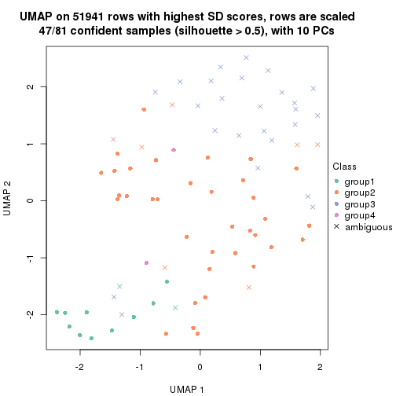
dimension_reduction(res, k = 5, method = "UMAP")
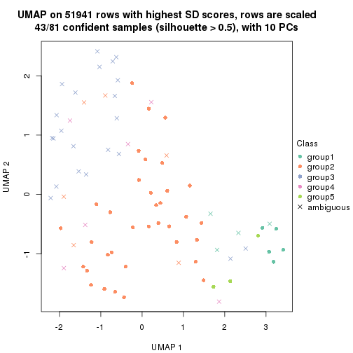
dimension_reduction(res, k = 6, method = "UMAP")
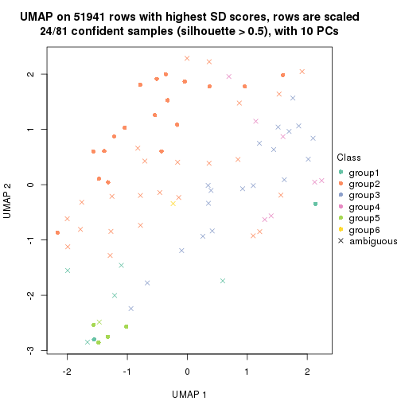
Following heatmap shows how subgroups are split when increasing k:
collect_classes(res)
Test correlation between subgroups and known annotations. If the known annotation is numeric, one-way ANOVA test is applied, and if the known annotation is discrete, chi-squared contingency table test is applied.
test_to_known_factors(res)
#> n disease.state(p) k
#> SD:hclust 79 0.902 2
#> SD:hclust 58 0.964 3
#> SD:hclust 47 0.982 4
#> SD:hclust 43 0.994 5
#> SD:hclust 24 NA 6
If matrix rows can be associated to genes, consider to use GO_Enrichment(res,
...) to perform function enrichment for the signature genes.
The object with results only for a single top-value method and a single partition method can be extracted as:
res = res_list["SD", "kmeans"]
# you can also extract it by
# res = res_list["SD:kmeans"]
A summary of res and all the functions that can be applied to it:
res
#> A 'ConsensusPartition' object with k = 2, 3, 4, 5, 6.
#> On a matrix with 51941 rows and 81 columns.
#> Top rows (1000, 2000, 3000, 4000, 5000) are extracted by 'SD' method.
#> Subgroups are detected by 'kmeans' method.
#> Performed in total 1250 partitions by row resampling.
#> Best k for subgroups seems to be 3.
#>
#> Following methods can be applied to this 'ConsensusPartition' object:
#> [1] "cola_report" "collect_classes" "collect_plots"
#> [4] "collect_stats" "colnames" "compare_signatures"
#> [7] "consensus_heatmap" "dimension_reduction" "functional_enrichment"
#> [10] "get_anno_col" "get_anno" "get_classes"
#> [13] "get_consensus" "get_matrix" "get_membership"
#> [16] "get_param" "get_signatures" "get_stats"
#> [19] "is_best_k" "is_stable_k" "membership_heatmap"
#> [22] "ncol" "nrow" "plot_ecdf"
#> [25] "rownames" "select_partition_number" "show"
#> [28] "suggest_best_k" "test_to_known_factors"
collect_plots() function collects all the plots made from res for all k (number of partitions)
into one single page to provide an easy and fast comparison between different k.
collect_plots(res)
The plots are:
k and the heatmap of
predicted classes for each k.k.k.k.All the plots in panels can be made by individual functions and they are plotted later in this section.
select_partition_number() produces several plots showing different
statistics for choosing “optimized” k. There are following statistics:
k;k, the area increased is defined as \(A_k - A_{k-1}\).The detailed explanations of these statistics can be found in the cola vignette.
Generally speaking, lower PAC score, higher mean silhouette score or higher
concordance corresponds to better partition. Rand index and Jaccard index
measure how similar the current partition is compared to partition with k-1.
If they are too similar, we won't accept k is better than k-1.
select_partition_number(res)
The numeric values for all these statistics can be obtained by get_stats().
get_stats(res)
#> k 1-PAC mean_silhouette concordance area_increased Rand Jaccard
#> 2 2 0.519 0.725 0.882 0.4071 0.588 0.588
#> 3 3 0.816 0.873 0.925 0.5173 0.681 0.507
#> 4 4 0.598 0.702 0.813 0.1800 0.847 0.616
#> 5 5 0.587 0.449 0.724 0.0744 0.956 0.844
#> 6 6 0.613 0.421 0.628 0.0483 0.928 0.736
suggest_best_k() suggests the best \(k\) based on these statistics. The rules are as follows:
NA.suggest_best_k(res)
#> [1] 3
Following shows the table of the partitions (You need to click the show/hide
code output link to see it). The membership matrix (columns with name p*)
is inferred by
clue::cl_consensus()
function with the SE method. Basically the value in the membership matrix
represents the probability to belong to a certain group. The finall class
label for an item is determined with the group with highest probability it
belongs to.
In get_classes() function, the entropy is calculated from the membership
matrix and the silhouette score is calculated from the consensus matrix.
cbind(get_classes(res, k = 2), get_membership(res, k = 2))
#> class entropy silhouette p1 p2
#> GSM1301497 1 0.9922 0.2556 0.552 0.448
#> GSM1301537 2 0.9580 0.2137 0.380 0.620
#> GSM1301521 1 0.9954 0.2441 0.540 0.460
#> GSM1301555 2 0.0938 0.8796 0.012 0.988
#> GSM1301501 2 0.0938 0.8793 0.012 0.988
#> GSM1301508 2 0.1184 0.8741 0.016 0.984
#> GSM1301481 2 0.7056 0.7333 0.192 0.808
#> GSM1301482 1 0.0000 0.7763 1.000 0.000
#> GSM1301483 2 0.4562 0.8426 0.096 0.904
#> GSM1301484 2 0.8207 0.6446 0.256 0.744
#> GSM1301485 1 0.4022 0.7635 0.920 0.080
#> GSM1301486 2 0.9933 0.0965 0.452 0.548
#> GSM1301487 1 0.3431 0.7693 0.936 0.064
#> GSM1301488 1 0.0672 0.7756 0.992 0.008
#> GSM1301489 2 0.0376 0.8799 0.004 0.996
#> GSM1301490 2 0.4815 0.8420 0.104 0.896
#> GSM1301491 2 0.0000 0.8795 0.000 1.000
#> GSM1301492 2 0.8608 0.5993 0.284 0.716
#> GSM1301493 2 0.9608 0.3458 0.384 0.616
#> GSM1301494 1 0.9909 0.2805 0.556 0.444
#> GSM1301495 2 0.8763 0.5715 0.296 0.704
#> GSM1301496 2 0.0938 0.8763 0.012 0.988
#> GSM1301498 2 0.1184 0.8785 0.016 0.984
#> GSM1301499 1 0.9909 0.2805 0.556 0.444
#> GSM1301500 1 0.2043 0.7735 0.968 0.032
#> GSM1301502 2 0.1414 0.8790 0.020 0.980
#> GSM1301503 2 0.0672 0.8798 0.008 0.992
#> GSM1301504 2 0.1184 0.8797 0.016 0.984
#> GSM1301505 2 0.8608 0.5971 0.284 0.716
#> GSM1301506 2 0.0672 0.8798 0.008 0.992
#> GSM1301507 2 0.0000 0.8795 0.000 1.000
#> GSM1301509 1 0.0000 0.7763 1.000 0.000
#> GSM1301510 1 0.0000 0.7763 1.000 0.000
#> GSM1301511 2 0.0000 0.8795 0.000 1.000
#> GSM1301512 2 0.1843 0.8675 0.028 0.972
#> GSM1301513 1 0.5178 0.7417 0.884 0.116
#> GSM1301514 2 0.1633 0.8700 0.024 0.976
#> GSM1301515 2 0.0000 0.8795 0.000 1.000
#> GSM1301516 2 0.2603 0.8693 0.044 0.956
#> GSM1301517 2 0.1633 0.8700 0.024 0.976
#> GSM1301518 1 0.0000 0.7763 1.000 0.000
#> GSM1301519 2 0.0938 0.8793 0.012 0.988
#> GSM1301520 2 0.0000 0.8795 0.000 1.000
#> GSM1301522 2 0.2778 0.8679 0.048 0.952
#> GSM1301523 1 0.6623 0.6767 0.828 0.172
#> GSM1301524 2 0.1843 0.8768 0.028 0.972
#> GSM1301525 2 0.9608 0.2704 0.384 0.616
#> GSM1301526 2 0.1633 0.8700 0.024 0.976
#> GSM1301527 2 0.0000 0.8795 0.000 1.000
#> GSM1301528 1 0.0672 0.7763 0.992 0.008
#> GSM1301529 1 0.2043 0.7735 0.968 0.032
#> GSM1301530 2 0.0938 0.8796 0.012 0.988
#> GSM1301531 2 0.4815 0.8294 0.104 0.896
#> GSM1301532 2 0.0000 0.8795 0.000 1.000
#> GSM1301533 2 0.2603 0.8701 0.044 0.956
#> GSM1301534 2 0.0000 0.8795 0.000 1.000
#> GSM1301535 2 0.8763 0.5715 0.296 0.704
#> GSM1301536 2 0.8144 0.6502 0.252 0.748
#> GSM1301538 2 0.9996 -0.1657 0.488 0.512
#> GSM1301539 1 0.9998 0.1980 0.508 0.492
#> GSM1301540 2 0.3733 0.8529 0.072 0.928
#> GSM1301541 2 0.1184 0.8741 0.016 0.984
#> GSM1301542 1 0.2043 0.7735 0.968 0.032
#> GSM1301543 2 0.0000 0.8795 0.000 1.000
#> GSM1301544 2 0.3431 0.8583 0.064 0.936
#> GSM1301545 1 0.2043 0.7735 0.968 0.032
#> GSM1301546 2 0.1843 0.8675 0.028 0.972
#> GSM1301547 2 0.0000 0.8795 0.000 1.000
#> GSM1301548 2 0.0000 0.8795 0.000 1.000
#> GSM1301549 2 0.2778 0.8679 0.048 0.952
#> GSM1301550 2 0.8016 0.5828 0.244 0.756
#> GSM1301551 1 0.9933 0.2590 0.548 0.452
#> GSM1301552 1 0.9909 0.2805 0.556 0.444
#> GSM1301553 1 0.6712 0.6732 0.824 0.176
#> GSM1301554 2 0.0000 0.8795 0.000 1.000
#> GSM1301556 2 0.1843 0.8675 0.028 0.972
#> GSM1301557 2 0.5059 0.8370 0.112 0.888
#> GSM1301558 2 0.1184 0.8785 0.016 0.984
#> GSM1301559 2 0.7056 0.7337 0.192 0.808
#> GSM1301560 2 0.0938 0.8796 0.012 0.988
#> GSM1301561 1 0.3733 0.7668 0.928 0.072
cbind(get_classes(res, k = 3), get_membership(res, k = 3))
#> class entropy silhouette p1 p2 p3
#> GSM1301497 3 0.2564 0.909 0.028 0.036 0.936
#> GSM1301537 3 0.7124 0.559 0.048 0.296 0.656
#> GSM1301521 3 0.1015 0.936 0.008 0.012 0.980
#> GSM1301555 2 0.2663 0.905 0.044 0.932 0.024
#> GSM1301501 2 0.0475 0.912 0.004 0.992 0.004
#> GSM1301508 2 0.2116 0.907 0.040 0.948 0.012
#> GSM1301481 3 0.1163 0.933 0.000 0.028 0.972
#> GSM1301482 1 0.1964 0.943 0.944 0.000 0.056
#> GSM1301483 2 0.5737 0.677 0.012 0.732 0.256
#> GSM1301484 3 0.1163 0.935 0.000 0.028 0.972
#> GSM1301485 3 0.0829 0.933 0.012 0.004 0.984
#> GSM1301486 3 0.1015 0.936 0.008 0.012 0.980
#> GSM1301487 3 0.0661 0.933 0.008 0.004 0.988
#> GSM1301488 1 0.2152 0.937 0.948 0.016 0.036
#> GSM1301489 2 0.1751 0.909 0.012 0.960 0.028
#> GSM1301490 2 0.6326 0.639 0.020 0.688 0.292
#> GSM1301491 2 0.0000 0.913 0.000 1.000 0.000
#> GSM1301492 3 0.1315 0.935 0.008 0.020 0.972
#> GSM1301493 3 0.1015 0.936 0.008 0.012 0.980
#> GSM1301494 3 0.0661 0.935 0.004 0.008 0.988
#> GSM1301495 3 0.1620 0.930 0.024 0.012 0.964
#> GSM1301496 2 0.0424 0.912 0.008 0.992 0.000
#> GSM1301498 2 0.1711 0.914 0.032 0.960 0.008
#> GSM1301499 3 0.0661 0.935 0.004 0.008 0.988
#> GSM1301500 1 0.1989 0.945 0.948 0.004 0.048
#> GSM1301502 2 0.4629 0.764 0.004 0.808 0.188
#> GSM1301503 2 0.1919 0.909 0.020 0.956 0.024
#> GSM1301504 2 0.1585 0.910 0.008 0.964 0.028
#> GSM1301505 3 0.0475 0.934 0.004 0.004 0.992
#> GSM1301506 2 0.2663 0.905 0.044 0.932 0.024
#> GSM1301507 2 0.1399 0.912 0.028 0.968 0.004
#> GSM1301509 1 0.1878 0.944 0.952 0.004 0.044
#> GSM1301510 1 0.2066 0.943 0.940 0.000 0.060
#> GSM1301511 2 0.0237 0.913 0.004 0.996 0.000
#> GSM1301512 2 0.1267 0.911 0.024 0.972 0.004
#> GSM1301513 3 0.0661 0.933 0.008 0.004 0.988
#> GSM1301514 2 0.1711 0.909 0.032 0.960 0.008
#> GSM1301515 2 0.0424 0.913 0.000 0.992 0.008
#> GSM1301516 2 0.5414 0.751 0.016 0.772 0.212
#> GSM1301517 2 0.0592 0.912 0.012 0.988 0.000
#> GSM1301518 1 0.2066 0.943 0.940 0.000 0.060
#> GSM1301519 2 0.0237 0.913 0.004 0.996 0.000
#> GSM1301520 2 0.1170 0.913 0.016 0.976 0.008
#> GSM1301522 2 0.6129 0.646 0.016 0.700 0.284
#> GSM1301523 1 0.0829 0.916 0.984 0.012 0.004
#> GSM1301524 2 0.3039 0.900 0.044 0.920 0.036
#> GSM1301525 3 0.2200 0.915 0.004 0.056 0.940
#> GSM1301526 2 0.1989 0.907 0.048 0.948 0.004
#> GSM1301527 2 0.0424 0.913 0.000 0.992 0.008
#> GSM1301528 1 0.1964 0.943 0.944 0.000 0.056
#> GSM1301529 1 0.2173 0.944 0.944 0.008 0.048
#> GSM1301530 2 0.2550 0.906 0.040 0.936 0.024
#> GSM1301531 3 0.1643 0.925 0.000 0.044 0.956
#> GSM1301532 2 0.2063 0.907 0.044 0.948 0.008
#> GSM1301533 2 0.6699 0.672 0.044 0.700 0.256
#> GSM1301534 2 0.0424 0.913 0.000 0.992 0.008
#> GSM1301535 3 0.1015 0.936 0.008 0.012 0.980
#> GSM1301536 3 0.1163 0.933 0.000 0.028 0.972
#> GSM1301538 3 0.6423 0.667 0.044 0.228 0.728
#> GSM1301539 3 0.5541 0.659 0.008 0.252 0.740
#> GSM1301540 3 0.2749 0.900 0.012 0.064 0.924
#> GSM1301541 2 0.1529 0.909 0.040 0.960 0.000
#> GSM1301542 1 0.1989 0.945 0.948 0.004 0.048
#> GSM1301543 2 0.0424 0.913 0.000 0.992 0.008
#> GSM1301544 3 0.3805 0.868 0.024 0.092 0.884
#> GSM1301545 1 0.1765 0.944 0.956 0.004 0.040
#> GSM1301546 2 0.1267 0.911 0.024 0.972 0.004
#> GSM1301547 2 0.2229 0.908 0.044 0.944 0.012
#> GSM1301548 2 0.0424 0.913 0.000 0.992 0.008
#> GSM1301549 2 0.5928 0.633 0.008 0.696 0.296
#> GSM1301550 1 0.5948 0.335 0.640 0.360 0.000
#> GSM1301551 3 0.0848 0.935 0.008 0.008 0.984
#> GSM1301552 3 0.1015 0.936 0.008 0.012 0.980
#> GSM1301553 1 0.1163 0.920 0.972 0.028 0.000
#> GSM1301554 2 0.0661 0.914 0.008 0.988 0.004
#> GSM1301556 2 0.0424 0.912 0.008 0.992 0.000
#> GSM1301557 2 0.7278 0.207 0.028 0.516 0.456
#> GSM1301558 2 0.2945 0.858 0.004 0.908 0.088
#> GSM1301559 3 0.1525 0.932 0.004 0.032 0.964
#> GSM1301560 2 0.3267 0.897 0.044 0.912 0.044
#> GSM1301561 3 0.0661 0.933 0.008 0.004 0.988
cbind(get_classes(res, k = 4), get_membership(res, k = 4))
#> class entropy silhouette p1 p2 p3 p4
#> GSM1301497 3 0.4161 0.768 0.012 0.020 0.820 0.148
#> GSM1301537 3 0.7550 0.401 0.016 0.324 0.520 0.140
#> GSM1301521 3 0.1396 0.823 0.004 0.004 0.960 0.032
#> GSM1301555 2 0.1229 0.757 0.004 0.968 0.008 0.020
#> GSM1301501 4 0.4728 0.721 0.000 0.216 0.032 0.752
#> GSM1301508 2 0.3508 0.727 0.012 0.848 0.004 0.136
#> GSM1301481 3 0.2216 0.809 0.000 0.000 0.908 0.092
#> GSM1301482 1 0.1837 0.969 0.944 0.000 0.028 0.028
#> GSM1301483 4 0.3734 0.685 0.004 0.096 0.044 0.856
#> GSM1301484 3 0.2530 0.805 0.000 0.004 0.896 0.100
#> GSM1301485 3 0.1489 0.819 0.004 0.000 0.952 0.044
#> GSM1301486 3 0.0844 0.824 0.004 0.004 0.980 0.012
#> GSM1301487 3 0.1902 0.814 0.004 0.000 0.932 0.064
#> GSM1301488 1 0.2048 0.960 0.928 0.000 0.008 0.064
#> GSM1301489 2 0.1867 0.766 0.000 0.928 0.000 0.072
#> GSM1301490 4 0.4746 0.658 0.004 0.140 0.064 0.792
#> GSM1301491 2 0.5233 0.434 0.000 0.648 0.020 0.332
#> GSM1301492 3 0.5276 0.253 0.004 0.004 0.560 0.432
#> GSM1301493 3 0.1985 0.821 0.004 0.016 0.940 0.040
#> GSM1301494 3 0.1902 0.818 0.004 0.000 0.932 0.064
#> GSM1301495 3 0.2553 0.815 0.008 0.016 0.916 0.060
#> GSM1301496 4 0.5213 0.640 0.000 0.328 0.020 0.652
#> GSM1301498 4 0.4936 0.646 0.000 0.340 0.008 0.652
#> GSM1301499 3 0.1305 0.821 0.004 0.000 0.960 0.036
#> GSM1301500 1 0.0469 0.969 0.988 0.000 0.012 0.000
#> GSM1301502 3 0.6477 0.219 0.000 0.420 0.508 0.072
#> GSM1301503 2 0.0921 0.768 0.000 0.972 0.000 0.028
#> GSM1301504 4 0.4661 0.662 0.000 0.348 0.000 0.652
#> GSM1301505 3 0.3831 0.760 0.004 0.000 0.792 0.204
#> GSM1301506 2 0.1082 0.759 0.004 0.972 0.004 0.020
#> GSM1301507 2 0.1940 0.770 0.000 0.924 0.000 0.076
#> GSM1301509 1 0.2179 0.959 0.924 0.000 0.012 0.064
#> GSM1301510 1 0.1510 0.970 0.956 0.000 0.016 0.028
#> GSM1301511 4 0.5476 0.523 0.000 0.396 0.020 0.584
#> GSM1301512 4 0.4867 0.668 0.000 0.232 0.032 0.736
#> GSM1301513 3 0.2334 0.810 0.004 0.000 0.908 0.088
#> GSM1301514 4 0.5903 0.525 0.012 0.324 0.032 0.632
#> GSM1301515 2 0.3610 0.709 0.000 0.800 0.000 0.200
#> GSM1301516 4 0.7220 0.574 0.000 0.260 0.196 0.544
#> GSM1301517 4 0.4671 0.721 0.000 0.220 0.028 0.752
#> GSM1301518 1 0.2909 0.938 0.888 0.000 0.020 0.092
#> GSM1301519 4 0.4833 0.721 0.000 0.228 0.032 0.740
#> GSM1301520 2 0.5378 0.606 0.004 0.696 0.036 0.264
#> GSM1301522 4 0.4864 0.672 0.000 0.172 0.060 0.768
#> GSM1301523 1 0.0657 0.962 0.984 0.012 0.000 0.004
#> GSM1301524 4 0.5590 0.540 0.000 0.456 0.020 0.524
#> GSM1301525 3 0.2670 0.815 0.000 0.040 0.908 0.052
#> GSM1301526 2 0.5112 -0.305 0.000 0.560 0.004 0.436
#> GSM1301527 2 0.3610 0.709 0.000 0.800 0.000 0.200
#> GSM1301528 1 0.1837 0.969 0.944 0.000 0.028 0.028
#> GSM1301529 1 0.1917 0.960 0.944 0.008 0.036 0.012
#> GSM1301530 2 0.0967 0.759 0.004 0.976 0.004 0.016
#> GSM1301531 3 0.3392 0.793 0.000 0.020 0.856 0.124
#> GSM1301532 2 0.0895 0.760 0.004 0.976 0.000 0.020
#> GSM1301533 2 0.7668 -0.326 0.000 0.432 0.220 0.348
#> GSM1301534 2 0.3219 0.740 0.000 0.836 0.000 0.164
#> GSM1301535 3 0.1892 0.822 0.004 0.016 0.944 0.036
#> GSM1301536 3 0.2647 0.798 0.000 0.000 0.880 0.120
#> GSM1301538 3 0.6586 0.514 0.012 0.316 0.600 0.072
#> GSM1301539 3 0.5037 0.581 0.008 0.300 0.684 0.008
#> GSM1301540 3 0.4508 0.772 0.012 0.032 0.804 0.152
#> GSM1301541 2 0.1474 0.774 0.000 0.948 0.000 0.052
#> GSM1301542 1 0.0469 0.969 0.988 0.000 0.012 0.000
#> GSM1301543 2 0.4304 0.593 0.000 0.716 0.000 0.284
#> GSM1301544 3 0.5564 0.667 0.012 0.044 0.712 0.232
#> GSM1301545 1 0.0804 0.970 0.980 0.000 0.008 0.012
#> GSM1301546 4 0.4522 0.649 0.000 0.320 0.000 0.680
#> GSM1301547 2 0.0817 0.761 0.000 0.976 0.000 0.024
#> GSM1301548 2 0.3610 0.709 0.000 0.800 0.000 0.200
#> GSM1301549 4 0.5911 0.683 0.000 0.196 0.112 0.692
#> GSM1301550 4 0.6990 0.282 0.408 0.116 0.000 0.476
#> GSM1301551 3 0.1296 0.823 0.004 0.004 0.964 0.028
#> GSM1301552 3 0.1396 0.823 0.004 0.004 0.960 0.032
#> GSM1301553 1 0.0672 0.963 0.984 0.008 0.000 0.008
#> GSM1301554 2 0.2760 0.756 0.000 0.872 0.000 0.128
#> GSM1301556 4 0.5085 0.660 0.000 0.304 0.020 0.676
#> GSM1301557 4 0.3622 0.640 0.012 0.052 0.064 0.872
#> GSM1301558 4 0.5694 0.710 0.000 0.224 0.080 0.696
#> GSM1301559 3 0.5285 0.130 0.000 0.008 0.524 0.468
#> GSM1301560 2 0.2218 0.732 0.004 0.932 0.036 0.028
#> GSM1301561 3 0.2125 0.811 0.004 0.000 0.920 0.076
cbind(get_classes(res, k = 5), get_membership(res, k = 5))
#> class entropy silhouette p1 p2 p3 p4 p5
#> GSM1301497 3 0.5311 -0.2082 0.000 0.016 0.660 0.056 0.268
#> GSM1301537 3 0.7382 -0.3309 0.000 0.244 0.388 0.032 0.336
#> GSM1301521 3 0.2339 0.3902 0.000 0.028 0.912 0.008 0.052
#> GSM1301555 2 0.1059 0.6671 0.000 0.968 0.004 0.008 0.020
#> GSM1301501 4 0.3616 0.6174 0.000 0.052 0.004 0.828 0.116
#> GSM1301508 2 0.3993 0.6002 0.000 0.756 0.000 0.028 0.216
#> GSM1301481 3 0.4107 0.3158 0.000 0.016 0.772 0.020 0.192
#> GSM1301482 1 0.1954 0.9133 0.932 0.000 0.032 0.008 0.028
#> GSM1301483 4 0.4025 0.5910 0.008 0.012 0.000 0.748 0.232
#> GSM1301484 3 0.4375 0.3293 0.000 0.020 0.780 0.048 0.152
#> GSM1301485 3 0.3123 0.3922 0.012 0.000 0.828 0.000 0.160
#> GSM1301486 3 0.0880 0.4230 0.000 0.000 0.968 0.000 0.032
#> GSM1301487 3 0.3548 0.3746 0.012 0.000 0.796 0.004 0.188
#> GSM1301488 1 0.3181 0.8735 0.856 0.000 0.000 0.072 0.072
#> GSM1301489 2 0.5068 0.6190 0.000 0.708 0.004 0.180 0.108
#> GSM1301490 4 0.6392 0.4991 0.008 0.116 0.020 0.592 0.264
#> GSM1301491 4 0.5727 0.2916 0.000 0.236 0.008 0.636 0.120
#> GSM1301492 3 0.5647 0.0471 0.000 0.016 0.584 0.344 0.056
#> GSM1301493 3 0.3325 0.3458 0.000 0.056 0.856 0.008 0.080
#> GSM1301494 3 0.3274 0.3690 0.000 0.000 0.780 0.000 0.220
#> GSM1301495 3 0.3831 0.2596 0.000 0.044 0.812 0.008 0.136
#> GSM1301496 4 0.2017 0.6478 0.000 0.080 0.008 0.912 0.000
#> GSM1301498 4 0.6570 0.5124 0.000 0.248 0.004 0.504 0.244
#> GSM1301499 3 0.2929 0.3927 0.000 0.000 0.820 0.000 0.180
#> GSM1301500 1 0.1197 0.9195 0.952 0.000 0.000 0.000 0.048
#> GSM1301502 3 0.7361 -0.1574 0.000 0.296 0.492 0.112 0.100
#> GSM1301503 2 0.1914 0.6843 0.000 0.924 0.000 0.060 0.016
#> GSM1301504 4 0.5255 0.6132 0.000 0.128 0.004 0.692 0.176
#> GSM1301505 3 0.5363 0.0915 0.000 0.008 0.548 0.040 0.404
#> GSM1301506 2 0.1059 0.6671 0.000 0.968 0.004 0.008 0.020
#> GSM1301507 2 0.3953 0.6691 0.000 0.792 0.000 0.148 0.060
#> GSM1301509 1 0.2669 0.8696 0.876 0.000 0.000 0.104 0.020
#> GSM1301510 1 0.1106 0.9192 0.964 0.000 0.000 0.012 0.024
#> GSM1301511 4 0.4720 0.5233 0.000 0.136 0.008 0.752 0.104
#> GSM1301512 4 0.3340 0.6521 0.000 0.044 0.008 0.852 0.096
#> GSM1301513 3 0.4265 0.3204 0.012 0.000 0.712 0.008 0.268
#> GSM1301514 4 0.5984 0.4834 0.000 0.128 0.008 0.596 0.268
#> GSM1301515 2 0.5927 0.5120 0.000 0.540 0.000 0.340 0.120
#> GSM1301516 4 0.8049 -0.0316 0.000 0.180 0.320 0.380 0.120
#> GSM1301517 4 0.2291 0.6598 0.000 0.072 0.008 0.908 0.012
#> GSM1301518 1 0.4640 0.7697 0.740 0.000 0.024 0.032 0.204
#> GSM1301519 4 0.2199 0.6565 0.000 0.060 0.008 0.916 0.016
#> GSM1301520 4 0.8174 0.0398 0.000 0.176 0.148 0.384 0.292
#> GSM1301522 4 0.6192 0.5277 0.000 0.136 0.020 0.604 0.240
#> GSM1301523 1 0.1544 0.9147 0.932 0.000 0.000 0.000 0.068
#> GSM1301524 4 0.5751 0.4412 0.000 0.400 0.012 0.528 0.060
#> GSM1301525 3 0.6050 -0.1389 0.000 0.028 0.592 0.080 0.300
#> GSM1301526 4 0.4559 0.2918 0.000 0.480 0.000 0.512 0.008
#> GSM1301527 2 0.5916 0.5173 0.000 0.544 0.000 0.336 0.120
#> GSM1301528 1 0.2204 0.9098 0.920 0.000 0.036 0.008 0.036
#> GSM1301529 1 0.1843 0.9144 0.940 0.004 0.032 0.012 0.012
#> GSM1301530 2 0.0932 0.6737 0.000 0.972 0.004 0.020 0.004
#> GSM1301531 3 0.5607 -0.0540 0.000 0.036 0.600 0.032 0.332
#> GSM1301532 2 0.0693 0.6701 0.000 0.980 0.000 0.012 0.008
#> GSM1301533 2 0.7463 -0.0934 0.000 0.488 0.252 0.188 0.072
#> GSM1301534 2 0.5864 0.5362 0.000 0.560 0.000 0.320 0.120
#> GSM1301535 3 0.2872 0.3698 0.000 0.048 0.884 0.008 0.060
#> GSM1301536 3 0.4629 0.2448 0.000 0.020 0.720 0.024 0.236
#> GSM1301538 3 0.6565 -0.1649 0.000 0.300 0.492 0.004 0.204
#> GSM1301539 3 0.5449 -0.0303 0.000 0.376 0.556 0.000 0.068
#> GSM1301540 5 0.5408 0.0000 0.000 0.020 0.364 0.032 0.584
#> GSM1301541 2 0.2573 0.6819 0.000 0.880 0.000 0.104 0.016
#> GSM1301542 1 0.1270 0.9201 0.948 0.000 0.000 0.000 0.052
#> GSM1301543 2 0.6416 0.4163 0.000 0.464 0.000 0.356 0.180
#> GSM1301544 3 0.6535 -0.4827 0.000 0.032 0.492 0.096 0.380
#> GSM1301545 1 0.0794 0.9215 0.972 0.000 0.000 0.000 0.028
#> GSM1301546 4 0.2922 0.6598 0.000 0.072 0.000 0.872 0.056
#> GSM1301547 2 0.0912 0.6760 0.000 0.972 0.000 0.012 0.016
#> GSM1301548 2 0.5916 0.5173 0.000 0.544 0.000 0.336 0.120
#> GSM1301549 4 0.6309 0.5402 0.000 0.084 0.064 0.624 0.228
#> GSM1301550 4 0.5690 0.3645 0.336 0.032 0.000 0.592 0.040
#> GSM1301551 3 0.1200 0.4188 0.000 0.016 0.964 0.008 0.012
#> GSM1301552 3 0.0981 0.4211 0.000 0.012 0.972 0.008 0.008
#> GSM1301553 1 0.1544 0.9147 0.932 0.000 0.000 0.000 0.068
#> GSM1301554 2 0.5569 0.5530 0.000 0.588 0.000 0.320 0.092
#> GSM1301556 4 0.2115 0.6490 0.000 0.068 0.008 0.916 0.008
#> GSM1301557 4 0.5075 0.4592 0.004 0.012 0.020 0.620 0.344
#> GSM1301558 4 0.4026 0.6347 0.000 0.056 0.056 0.828 0.060
#> GSM1301559 3 0.6272 -0.0264 0.000 0.020 0.508 0.380 0.092
#> GSM1301560 2 0.3635 0.5023 0.000 0.824 0.132 0.008 0.036
#> GSM1301561 3 0.4082 0.3382 0.012 0.000 0.740 0.008 0.240
cbind(get_classes(res, k = 6), get_membership(res, k = 6))
#> class entropy silhouette p1 p2 p3 p4 p5 p6
#> GSM1301497 3 0.6049 0.3310 0.000 0.012 0.604 0.052 0.228 NA
#> GSM1301537 3 0.7544 0.2111 0.000 0.212 0.400 0.012 0.256 NA
#> GSM1301521 3 0.1993 0.4570 0.000 0.020 0.928 0.012 0.020 NA
#> GSM1301555 2 0.0508 0.6289 0.000 0.984 0.004 0.012 0.000 NA
#> GSM1301501 4 0.4907 0.5126 0.000 0.016 0.008 0.712 0.116 NA
#> GSM1301508 2 0.4209 0.5741 0.000 0.760 0.004 0.008 0.148 NA
#> GSM1301481 3 0.4379 -0.1595 0.000 0.000 0.576 0.020 0.400 NA
#> GSM1301482 1 0.3510 0.8005 0.820 0.000 0.100 0.000 0.012 NA
#> GSM1301483 4 0.5864 0.3783 0.004 0.004 0.004 0.540 0.160 NA
#> GSM1301484 3 0.5542 -0.1922 0.000 0.000 0.536 0.096 0.352 NA
#> GSM1301485 3 0.3897 0.3735 0.000 0.000 0.696 0.000 0.024 NA
#> GSM1301486 3 0.1958 0.4490 0.000 0.000 0.896 0.004 0.000 NA
#> GSM1301487 3 0.4368 0.3677 0.000 0.000 0.656 0.000 0.048 NA
#> GSM1301488 1 0.4971 0.6821 0.684 0.000 0.000 0.092 0.024 NA
#> GSM1301489 2 0.6653 0.5439 0.000 0.528 0.000 0.100 0.200 NA
#> GSM1301490 4 0.6910 0.2404 0.004 0.032 0.008 0.420 0.240 NA
#> GSM1301491 4 0.6308 0.2733 0.000 0.124 0.004 0.592 0.100 NA
#> GSM1301492 4 0.5667 -0.1062 0.000 0.000 0.424 0.456 0.108 NA
#> GSM1301493 3 0.4072 0.4349 0.000 0.052 0.804 0.008 0.084 NA
#> GSM1301494 3 0.5302 0.2235 0.000 0.000 0.600 0.000 0.192 NA
#> GSM1301495 3 0.4224 0.4314 0.000 0.040 0.788 0.008 0.108 NA
#> GSM1301496 4 0.1508 0.5885 0.000 0.012 0.004 0.948 0.016 NA
#> GSM1301498 5 0.6837 0.0509 0.000 0.220 0.000 0.236 0.468 NA
#> GSM1301499 3 0.4866 0.3139 0.000 0.000 0.648 0.000 0.116 NA
#> GSM1301500 1 0.1082 0.8339 0.956 0.000 0.000 0.000 0.004 NA
#> GSM1301502 3 0.6924 0.1944 0.000 0.204 0.544 0.144 0.076 NA
#> GSM1301503 2 0.3113 0.6513 0.000 0.856 0.000 0.028 0.040 NA
#> GSM1301504 4 0.6622 0.1538 0.000 0.084 0.008 0.456 0.364 NA
#> GSM1301505 5 0.5731 0.3150 0.000 0.000 0.324 0.012 0.528 NA
#> GSM1301506 2 0.0508 0.6289 0.000 0.984 0.004 0.012 0.000 NA
#> GSM1301507 2 0.4516 0.6357 0.000 0.756 0.000 0.080 0.048 NA
#> GSM1301509 1 0.4201 0.6607 0.732 0.000 0.000 0.204 0.008 NA
#> GSM1301510 1 0.1411 0.8351 0.936 0.000 0.000 0.000 0.004 NA
#> GSM1301511 4 0.4772 0.4767 0.000 0.072 0.004 0.732 0.040 NA
#> GSM1301512 4 0.3272 0.5765 0.000 0.000 0.008 0.836 0.080 NA
#> GSM1301513 3 0.4948 0.2831 0.000 0.000 0.564 0.000 0.076 NA
#> GSM1301514 4 0.5898 0.4698 0.000 0.060 0.008 0.632 0.188 NA
#> GSM1301515 2 0.7426 0.4608 0.000 0.388 0.000 0.248 0.160 NA
#> GSM1301516 3 0.7873 -0.1729 0.000 0.108 0.356 0.276 0.228 NA
#> GSM1301517 4 0.1995 0.5820 0.000 0.012 0.004 0.924 0.036 NA
#> GSM1301518 1 0.4930 0.5245 0.496 0.000 0.052 0.004 0.000 NA
#> GSM1301519 4 0.2050 0.5853 0.000 0.008 0.004 0.920 0.036 NA
#> GSM1301520 4 0.8361 0.1770 0.000 0.084 0.176 0.380 0.192 NA
#> GSM1301522 4 0.6918 0.2261 0.000 0.048 0.008 0.432 0.292 NA
#> GSM1301523 1 0.1838 0.8257 0.916 0.000 0.000 0.000 0.016 NA
#> GSM1301524 4 0.6505 0.2660 0.000 0.368 0.012 0.460 0.116 NA
#> GSM1301525 5 0.6039 0.2829 0.000 0.008 0.412 0.080 0.464 NA
#> GSM1301526 4 0.4214 0.2441 0.000 0.460 0.000 0.528 0.008 NA
#> GSM1301527 2 0.7405 0.4712 0.000 0.396 0.000 0.240 0.160 NA
#> GSM1301528 1 0.4312 0.7540 0.748 0.000 0.148 0.000 0.012 NA
#> GSM1301529 1 0.3557 0.7908 0.816 0.004 0.124 0.000 0.012 NA
#> GSM1301530 2 0.1275 0.6376 0.000 0.956 0.000 0.016 0.012 NA
#> GSM1301531 5 0.5005 0.3897 0.000 0.016 0.360 0.008 0.584 NA
#> GSM1301532 2 0.0520 0.6313 0.000 0.984 0.000 0.008 0.000 NA
#> GSM1301533 2 0.6662 0.0255 0.000 0.548 0.228 0.120 0.092 NA
#> GSM1301534 2 0.7397 0.4774 0.000 0.400 0.000 0.232 0.160 NA
#> GSM1301535 3 0.4074 0.4299 0.000 0.040 0.800 0.008 0.100 NA
#> GSM1301536 5 0.4532 0.2279 0.000 0.000 0.468 0.032 0.500 NA
#> GSM1301538 3 0.6335 0.2758 0.000 0.304 0.512 0.000 0.120 NA
#> GSM1301539 3 0.5468 0.2957 0.000 0.320 0.584 0.004 0.032 NA
#> GSM1301540 5 0.4994 0.2390 0.000 0.016 0.200 0.004 0.684 NA
#> GSM1301541 2 0.3436 0.6485 0.000 0.836 0.000 0.052 0.032 NA
#> GSM1301542 1 0.1434 0.8365 0.940 0.000 0.000 0.000 0.012 NA
#> GSM1301543 2 0.7613 0.4085 0.000 0.340 0.000 0.244 0.212 NA
#> GSM1301544 3 0.7500 0.2027 0.000 0.040 0.456 0.112 0.268 NA
#> GSM1301545 1 0.0000 0.8363 1.000 0.000 0.000 0.000 0.000 NA
#> GSM1301546 4 0.3541 0.5819 0.000 0.020 0.000 0.824 0.068 NA
#> GSM1301547 2 0.1003 0.6352 0.000 0.964 0.000 0.000 0.020 NA
#> GSM1301548 2 0.7405 0.4712 0.000 0.396 0.000 0.240 0.160 NA
#> GSM1301549 5 0.6667 -0.0420 0.000 0.028 0.056 0.372 0.460 NA
#> GSM1301550 4 0.5731 0.4369 0.232 0.012 0.000 0.628 0.040 NA
#> GSM1301551 3 0.0909 0.4546 0.000 0.000 0.968 0.012 0.000 NA
#> GSM1301552 3 0.1180 0.4472 0.000 0.000 0.960 0.012 0.016 NA
#> GSM1301553 1 0.1779 0.8268 0.920 0.000 0.000 0.000 0.016 NA
#> GSM1301554 2 0.6715 0.5081 0.000 0.492 0.000 0.244 0.076 NA
#> GSM1301556 4 0.2157 0.5815 0.000 0.008 0.004 0.904 0.008 NA
#> GSM1301557 4 0.5936 0.4204 0.004 0.000 0.008 0.532 0.268 NA
#> GSM1301558 4 0.3662 0.5377 0.000 0.008 0.060 0.832 0.064 NA
#> GSM1301559 3 0.6565 -0.2624 0.000 0.000 0.376 0.332 0.268 NA
#> GSM1301560 2 0.2995 0.4975 0.000 0.844 0.128 0.012 0.008 NA
#> GSM1301561 3 0.4482 0.3177 0.000 0.000 0.600 0.000 0.040 NA
Heatmaps for the consensus matrix. It visualizes the probability of two samples to be in a same group.
consensus_heatmap(res, k = 2)

consensus_heatmap(res, k = 3)
consensus_heatmap(res, k = 4)
consensus_heatmap(res, k = 5)
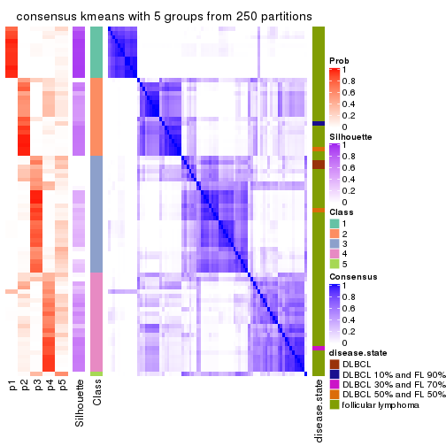
consensus_heatmap(res, k = 6)
Heatmaps for the membership of samples in all partitions to see how consistent they are:
membership_heatmap(res, k = 2)
membership_heatmap(res, k = 3)
membership_heatmap(res, k = 4)
membership_heatmap(res, k = 5)
membership_heatmap(res, k = 6)

As soon as we have had the classes for columns, we can look for signatures which are significantly different between classes which can be candidate marks for certain classes. Following are the heatmaps for signatures.
Signature heatmaps where rows are scaled:
get_signatures(res, k = 2)
get_signatures(res, k = 3)

get_signatures(res, k = 4)
get_signatures(res, k = 5)
get_signatures(res, k = 6)
Signature heatmaps where rows are not scaled:
get_signatures(res, k = 2, scale_rows = FALSE)
get_signatures(res, k = 3, scale_rows = FALSE)
get_signatures(res, k = 4, scale_rows = FALSE)
get_signatures(res, k = 5, scale_rows = FALSE)

get_signatures(res, k = 6, scale_rows = FALSE)
Compare the overlap of signatures from different k:
compare_signatures(res)
get_signature() returns a data frame invisibly. TO get the list of signatures, the function
call should be assigned to a variable explicitly. In following code, if plot argument is set
to FALSE, no heatmap is plotted while only the differential analysis is performed.
# code only for demonstration
tb = get_signature(res, k = ..., plot = FALSE)
An example of the output of tb is:
#> which_row fdr mean_1 mean_2 scaled_mean_1 scaled_mean_2 km
#> 1 38 0.042760348 8.373488 9.131774 -0.5533452 0.5164555 1
#> 2 40 0.018707592 7.106213 8.469186 -0.6173731 0.5762149 1
#> 3 55 0.019134737 10.221463 11.207825 -0.6159697 0.5749050 1
#> 4 59 0.006059896 5.921854 7.869574 -0.6899429 0.6439467 1
#> 5 60 0.018055526 8.928898 10.211722 -0.6204761 0.5791110 1
#> 6 98 0.009384629 15.714769 14.887706 0.6635654 -0.6193277 2
...
The columns in tb are:
which_row: row indices corresponding to the input matrix.fdr: FDR for the differential test. mean_x: The mean value in group x.scaled_mean_x: The mean value in group x after rows are scaled.km: Row groups if k-means clustering is applied to rows.UMAP plot which shows how samples are separated.
dimension_reduction(res, k = 2, method = "UMAP")
dimension_reduction(res, k = 3, method = "UMAP")
dimension_reduction(res, k = 4, method = "UMAP")
dimension_reduction(res, k = 5, method = "UMAP")
dimension_reduction(res, k = 6, method = "UMAP")
Following heatmap shows how subgroups are split when increasing k:
collect_classes(res)

Test correlation between subgroups and known annotations. If the known annotation is numeric, one-way ANOVA test is applied, and if the known annotation is discrete, chi-squared contingency table test is applied.
test_to_known_factors(res)
#> n disease.state(p) k
#> SD:kmeans 69 0.814 2
#> SD:kmeans 79 0.607 3
#> SD:kmeans 73 0.652 4
#> SD:kmeans 42 0.498 5
#> SD:kmeans 31 0.346 6
If matrix rows can be associated to genes, consider to use GO_Enrichment(res,
...) to perform function enrichment for the signature genes.
The object with results only for a single top-value method and a single partition method can be extracted as:
res = res_list["SD", "skmeans"]
# you can also extract it by
# res = res_list["SD:skmeans"]
A summary of res and all the functions that can be applied to it:
res
#> A 'ConsensusPartition' object with k = 2, 3, 4, 5, 6.
#> On a matrix with 51941 rows and 81 columns.
#> Top rows (1000, 2000, 3000, 4000, 5000) are extracted by 'SD' method.
#> Subgroups are detected by 'skmeans' method.
#> Performed in total 1250 partitions by row resampling.
#> Best k for subgroups seems to be 2.
#>
#> Following methods can be applied to this 'ConsensusPartition' object:
#> [1] "cola_report" "collect_classes" "collect_plots"
#> [4] "collect_stats" "colnames" "compare_signatures"
#> [7] "consensus_heatmap" "dimension_reduction" "functional_enrichment"
#> [10] "get_anno_col" "get_anno" "get_classes"
#> [13] "get_consensus" "get_matrix" "get_membership"
#> [16] "get_param" "get_signatures" "get_stats"
#> [19] "is_best_k" "is_stable_k" "membership_heatmap"
#> [22] "ncol" "nrow" "plot_ecdf"
#> [25] "rownames" "select_partition_number" "show"
#> [28] "suggest_best_k" "test_to_known_factors"
collect_plots() function collects all the plots made from res for all k (number of partitions)
into one single page to provide an easy and fast comparison between different k.
collect_plots(res)
The plots are:
k and the heatmap of
predicted classes for each k.k.k.k.All the plots in panels can be made by individual functions and they are plotted later in this section.
select_partition_number() produces several plots showing different
statistics for choosing “optimized” k. There are following statistics:
k;k, the area increased is defined as \(A_k - A_{k-1}\).The detailed explanations of these statistics can be found in the cola vignette.
Generally speaking, lower PAC score, higher mean silhouette score or higher
concordance corresponds to better partition. Rand index and Jaccard index
measure how similar the current partition is compared to partition with k-1.
If they are too similar, we won't accept k is better than k-1.
select_partition_number(res)
The numeric values for all these statistics can be obtained by get_stats().
get_stats(res)
#> k 1-PAC mean_silhouette concordance area_increased Rand Jaccard
#> 2 2 0.899 0.924 0.970 0.5034 0.496 0.496
#> 3 3 0.873 0.882 0.950 0.3211 0.723 0.499
#> 4 4 0.638 0.690 0.843 0.1247 0.824 0.541
#> 5 5 0.656 0.560 0.767 0.0715 0.873 0.569
#> 6 6 0.674 0.485 0.688 0.0443 0.868 0.473
suggest_best_k() suggests the best \(k\) based on these statistics. The rules are as follows:
NA.suggest_best_k(res)
#> [1] 2
Following shows the table of the partitions (You need to click the show/hide
code output link to see it). The membership matrix (columns with name p*)
is inferred by
clue::cl_consensus()
function with the SE method. Basically the value in the membership matrix
represents the probability to belong to a certain group. The finall class
label for an item is determined with the group with highest probability it
belongs to.
In get_classes() function, the entropy is calculated from the membership
matrix and the silhouette score is calculated from the consensus matrix.
cbind(get_classes(res, k = 2), get_membership(res, k = 2))
#> class entropy silhouette p1 p2
#> GSM1301497 1 0.0000 0.95952 1.000 0.000
#> GSM1301537 1 0.0672 0.95401 0.992 0.008
#> GSM1301521 1 0.0000 0.95952 1.000 0.000
#> GSM1301555 2 0.0000 0.97487 0.000 1.000
#> GSM1301501 2 0.0000 0.97487 0.000 1.000
#> GSM1301508 2 0.0000 0.97487 0.000 1.000
#> GSM1301481 1 0.5178 0.85671 0.884 0.116
#> GSM1301482 1 0.0000 0.95952 1.000 0.000
#> GSM1301483 2 0.0000 0.97487 0.000 1.000
#> GSM1301484 1 0.0000 0.95952 1.000 0.000
#> GSM1301485 1 0.0000 0.95952 1.000 0.000
#> GSM1301486 1 0.0000 0.95952 1.000 0.000
#> GSM1301487 1 0.0000 0.95952 1.000 0.000
#> GSM1301488 1 0.0000 0.95952 1.000 0.000
#> GSM1301489 2 0.0000 0.97487 0.000 1.000
#> GSM1301490 2 0.0000 0.97487 0.000 1.000
#> GSM1301491 2 0.0000 0.97487 0.000 1.000
#> GSM1301492 1 0.0000 0.95952 1.000 0.000
#> GSM1301493 1 0.0000 0.95952 1.000 0.000
#> GSM1301494 1 0.0000 0.95952 1.000 0.000
#> GSM1301495 1 0.0000 0.95952 1.000 0.000
#> GSM1301496 2 0.0000 0.97487 0.000 1.000
#> GSM1301498 2 0.0000 0.97487 0.000 1.000
#> GSM1301499 1 0.0000 0.95952 1.000 0.000
#> GSM1301500 1 0.0000 0.95952 1.000 0.000
#> GSM1301502 2 0.2948 0.92798 0.052 0.948
#> GSM1301503 2 0.0000 0.97487 0.000 1.000
#> GSM1301504 2 0.0000 0.97487 0.000 1.000
#> GSM1301505 1 0.0000 0.95952 1.000 0.000
#> GSM1301506 2 0.0000 0.97487 0.000 1.000
#> GSM1301507 2 0.0000 0.97487 0.000 1.000
#> GSM1301509 1 0.0000 0.95952 1.000 0.000
#> GSM1301510 1 0.0000 0.95952 1.000 0.000
#> GSM1301511 2 0.0000 0.97487 0.000 1.000
#> GSM1301512 2 0.0000 0.97487 0.000 1.000
#> GSM1301513 1 0.0000 0.95952 1.000 0.000
#> GSM1301514 2 0.0000 0.97487 0.000 1.000
#> GSM1301515 2 0.0000 0.97487 0.000 1.000
#> GSM1301516 2 0.0672 0.96876 0.008 0.992
#> GSM1301517 2 0.0000 0.97487 0.000 1.000
#> GSM1301518 1 0.0000 0.95952 1.000 0.000
#> GSM1301519 2 0.0000 0.97487 0.000 1.000
#> GSM1301520 2 0.0000 0.97487 0.000 1.000
#> GSM1301522 2 0.0000 0.97487 0.000 1.000
#> GSM1301523 1 0.5842 0.82738 0.860 0.140
#> GSM1301524 2 0.0000 0.97487 0.000 1.000
#> GSM1301525 1 0.1414 0.94458 0.980 0.020
#> GSM1301526 2 0.0000 0.97487 0.000 1.000
#> GSM1301527 2 0.0000 0.97487 0.000 1.000
#> GSM1301528 1 0.0000 0.95952 1.000 0.000
#> GSM1301529 1 0.0000 0.95952 1.000 0.000
#> GSM1301530 2 0.0000 0.97487 0.000 1.000
#> GSM1301531 2 0.9044 0.52120 0.320 0.680
#> GSM1301532 2 0.0000 0.97487 0.000 1.000
#> GSM1301533 2 0.3431 0.91683 0.064 0.936
#> GSM1301534 2 0.0000 0.97487 0.000 1.000
#> GSM1301535 1 0.0000 0.95952 1.000 0.000
#> GSM1301536 1 0.0000 0.95952 1.000 0.000
#> GSM1301538 1 0.0000 0.95952 1.000 0.000
#> GSM1301539 1 0.0000 0.95952 1.000 0.000
#> GSM1301540 1 0.9795 0.29710 0.584 0.416
#> GSM1301541 2 0.0000 0.97487 0.000 1.000
#> GSM1301542 1 0.0000 0.95952 1.000 0.000
#> GSM1301543 2 0.0000 0.97487 0.000 1.000
#> GSM1301544 1 0.9833 0.27322 0.576 0.424
#> GSM1301545 1 0.0000 0.95952 1.000 0.000
#> GSM1301546 2 0.0000 0.97487 0.000 1.000
#> GSM1301547 2 0.0000 0.97487 0.000 1.000
#> GSM1301548 2 0.0000 0.97487 0.000 1.000
#> GSM1301549 2 0.0672 0.96898 0.008 0.992
#> GSM1301550 2 0.0000 0.97487 0.000 1.000
#> GSM1301551 1 0.0000 0.95952 1.000 0.000
#> GSM1301552 1 0.0000 0.95952 1.000 0.000
#> GSM1301553 1 0.6973 0.77106 0.812 0.188
#> GSM1301554 2 0.0000 0.97487 0.000 1.000
#> GSM1301556 2 0.0000 0.97487 0.000 1.000
#> GSM1301557 2 0.9996 -0.00552 0.488 0.512
#> GSM1301558 2 0.1843 0.95129 0.028 0.972
#> GSM1301559 1 0.5408 0.84646 0.876 0.124
#> GSM1301560 2 0.2236 0.94402 0.036 0.964
#> GSM1301561 1 0.0000 0.95952 1.000 0.000
cbind(get_classes(res, k = 3), get_membership(res, k = 3))
#> class entropy silhouette p1 p2 p3
#> GSM1301497 3 0.1289 0.940 0.032 0.000 0.968
#> GSM1301537 3 0.2050 0.933 0.020 0.028 0.952
#> GSM1301521 3 0.0237 0.959 0.004 0.000 0.996
#> GSM1301555 2 0.0661 0.927 0.004 0.988 0.008
#> GSM1301501 2 0.0237 0.930 0.004 0.996 0.000
#> GSM1301508 2 0.0000 0.931 0.000 1.000 0.000
#> GSM1301481 3 0.0237 0.958 0.000 0.004 0.996
#> GSM1301482 1 0.0237 0.946 0.996 0.000 0.004
#> GSM1301483 1 0.0475 0.943 0.992 0.004 0.004
#> GSM1301484 3 0.0237 0.958 0.004 0.000 0.996
#> GSM1301485 3 0.0237 0.959 0.004 0.000 0.996
#> GSM1301486 3 0.0237 0.959 0.004 0.000 0.996
#> GSM1301487 3 0.0237 0.959 0.004 0.000 0.996
#> GSM1301488 1 0.0237 0.946 0.996 0.000 0.004
#> GSM1301489 2 0.0000 0.931 0.000 1.000 0.000
#> GSM1301490 1 0.0237 0.944 0.996 0.000 0.004
#> GSM1301491 2 0.0000 0.931 0.000 1.000 0.000
#> GSM1301492 3 0.3482 0.847 0.128 0.000 0.872
#> GSM1301493 3 0.0237 0.959 0.004 0.000 0.996
#> GSM1301494 3 0.0000 0.959 0.000 0.000 1.000
#> GSM1301495 3 0.0000 0.959 0.000 0.000 1.000
#> GSM1301496 2 0.6305 -0.045 0.484 0.516 0.000
#> GSM1301498 2 0.0475 0.929 0.004 0.992 0.004
#> GSM1301499 3 0.0000 0.959 0.000 0.000 1.000
#> GSM1301500 1 0.0237 0.946 0.996 0.000 0.004
#> GSM1301502 3 0.5650 0.540 0.000 0.312 0.688
#> GSM1301503 2 0.0000 0.931 0.000 1.000 0.000
#> GSM1301504 2 0.0475 0.929 0.004 0.992 0.004
#> GSM1301505 3 0.0237 0.958 0.004 0.000 0.996
#> GSM1301506 2 0.0475 0.928 0.004 0.992 0.004
#> GSM1301507 2 0.0000 0.931 0.000 1.000 0.000
#> GSM1301509 1 0.0237 0.946 0.996 0.000 0.004
#> GSM1301510 1 0.0237 0.946 0.996 0.000 0.004
#> GSM1301511 2 0.0000 0.931 0.000 1.000 0.000
#> GSM1301512 1 0.3619 0.850 0.864 0.136 0.000
#> GSM1301513 3 0.0000 0.959 0.000 0.000 1.000
#> GSM1301514 1 0.5988 0.475 0.632 0.368 0.000
#> GSM1301515 2 0.0000 0.931 0.000 1.000 0.000
#> GSM1301516 3 0.6386 0.260 0.004 0.412 0.584
#> GSM1301517 1 0.3551 0.853 0.868 0.132 0.000
#> GSM1301518 1 0.0237 0.946 0.996 0.000 0.004
#> GSM1301519 2 0.0475 0.929 0.004 0.992 0.004
#> GSM1301520 2 0.0000 0.931 0.000 1.000 0.000
#> GSM1301522 2 0.1647 0.909 0.004 0.960 0.036
#> GSM1301523 1 0.0237 0.946 0.996 0.000 0.004
#> GSM1301524 2 0.1711 0.910 0.008 0.960 0.032
#> GSM1301525 3 0.0475 0.957 0.004 0.004 0.992
#> GSM1301526 2 0.2066 0.887 0.060 0.940 0.000
#> GSM1301527 2 0.0000 0.931 0.000 1.000 0.000
#> GSM1301528 1 0.0592 0.942 0.988 0.000 0.012
#> GSM1301529 1 0.0237 0.946 0.996 0.000 0.004
#> GSM1301530 2 0.0661 0.927 0.004 0.988 0.008
#> GSM1301531 3 0.0237 0.958 0.000 0.004 0.996
#> GSM1301532 2 0.0000 0.931 0.000 1.000 0.000
#> GSM1301533 2 0.6291 0.130 0.000 0.532 0.468
#> GSM1301534 2 0.0000 0.931 0.000 1.000 0.000
#> GSM1301535 3 0.0000 0.959 0.000 0.000 1.000
#> GSM1301536 3 0.0237 0.958 0.004 0.000 0.996
#> GSM1301538 3 0.0424 0.957 0.008 0.000 0.992
#> GSM1301539 3 0.0424 0.957 0.008 0.000 0.992
#> GSM1301540 3 0.1031 0.946 0.000 0.024 0.976
#> GSM1301541 2 0.0000 0.931 0.000 1.000 0.000
#> GSM1301542 1 0.0237 0.946 0.996 0.000 0.004
#> GSM1301543 2 0.0000 0.931 0.000 1.000 0.000
#> GSM1301544 3 0.1989 0.926 0.004 0.048 0.948
#> GSM1301545 1 0.0237 0.946 0.996 0.000 0.004
#> GSM1301546 1 0.4452 0.789 0.808 0.192 0.000
#> GSM1301547 2 0.0000 0.931 0.000 1.000 0.000
#> GSM1301548 2 0.0000 0.931 0.000 1.000 0.000
#> GSM1301549 2 0.4521 0.762 0.004 0.816 0.180
#> GSM1301550 1 0.0000 0.945 1.000 0.000 0.000
#> GSM1301551 3 0.0237 0.959 0.004 0.000 0.996
#> GSM1301552 3 0.0237 0.959 0.004 0.000 0.996
#> GSM1301553 1 0.0237 0.946 0.996 0.000 0.004
#> GSM1301554 2 0.0000 0.931 0.000 1.000 0.000
#> GSM1301556 1 0.4002 0.826 0.840 0.160 0.000
#> GSM1301557 1 0.0475 0.943 0.992 0.004 0.004
#> GSM1301558 2 0.7013 0.179 0.020 0.548 0.432
#> GSM1301559 3 0.0237 0.958 0.004 0.000 0.996
#> GSM1301560 2 0.2356 0.878 0.000 0.928 0.072
#> GSM1301561 3 0.0237 0.959 0.004 0.000 0.996
cbind(get_classes(res, k = 4), get_membership(res, k = 4))
#> class entropy silhouette p1 p2 p3 p4
#> GSM1301497 3 0.2505 0.846 0.004 0.040 0.920 0.036
#> GSM1301537 2 0.6773 0.263 0.032 0.540 0.388 0.040
#> GSM1301521 3 0.0188 0.876 0.000 0.004 0.996 0.000
#> GSM1301555 2 0.0000 0.701 0.000 1.000 0.000 0.000
#> GSM1301501 4 0.0592 0.700 0.000 0.016 0.000 0.984
#> GSM1301508 2 0.2868 0.701 0.000 0.864 0.000 0.136
#> GSM1301481 3 0.1940 0.854 0.000 0.000 0.924 0.076
#> GSM1301482 1 0.0000 0.971 1.000 0.000 0.000 0.000
#> GSM1301483 4 0.4585 0.501 0.332 0.000 0.000 0.668
#> GSM1301484 3 0.2704 0.827 0.000 0.000 0.876 0.124
#> GSM1301485 3 0.0000 0.876 0.000 0.000 1.000 0.000
#> GSM1301486 3 0.0000 0.876 0.000 0.000 1.000 0.000
#> GSM1301487 3 0.1022 0.866 0.032 0.000 0.968 0.000
#> GSM1301488 1 0.0000 0.971 1.000 0.000 0.000 0.000
#> GSM1301489 2 0.2704 0.696 0.000 0.876 0.000 0.124
#> GSM1301490 4 0.4840 0.577 0.240 0.028 0.000 0.732
#> GSM1301491 4 0.4999 -0.323 0.000 0.492 0.000 0.508
#> GSM1301492 3 0.4139 0.768 0.024 0.000 0.800 0.176
#> GSM1301493 3 0.0336 0.875 0.000 0.008 0.992 0.000
#> GSM1301494 3 0.0000 0.876 0.000 0.000 1.000 0.000
#> GSM1301495 3 0.0188 0.876 0.000 0.004 0.996 0.000
#> GSM1301496 4 0.3392 0.698 0.124 0.020 0.000 0.856
#> GSM1301498 4 0.4304 0.604 0.000 0.284 0.000 0.716
#> GSM1301499 3 0.0000 0.876 0.000 0.000 1.000 0.000
#> GSM1301500 1 0.0000 0.971 1.000 0.000 0.000 0.000
#> GSM1301502 2 0.6176 0.254 0.000 0.524 0.424 0.052
#> GSM1301503 2 0.1716 0.704 0.000 0.936 0.000 0.064
#> GSM1301504 4 0.3649 0.637 0.000 0.204 0.000 0.796
#> GSM1301505 3 0.2814 0.822 0.000 0.000 0.868 0.132
#> GSM1301506 2 0.0000 0.701 0.000 1.000 0.000 0.000
#> GSM1301507 2 0.3219 0.705 0.000 0.836 0.000 0.164
#> GSM1301509 1 0.0000 0.971 1.000 0.000 0.000 0.000
#> GSM1301510 1 0.0000 0.971 1.000 0.000 0.000 0.000
#> GSM1301511 4 0.4967 -0.223 0.000 0.452 0.000 0.548
#> GSM1301512 4 0.3962 0.701 0.152 0.028 0.000 0.820
#> GSM1301513 3 0.0000 0.876 0.000 0.000 1.000 0.000
#> GSM1301514 2 0.5894 0.352 0.040 0.568 0.000 0.392
#> GSM1301515 2 0.4522 0.620 0.000 0.680 0.000 0.320
#> GSM1301516 3 0.7472 0.351 0.000 0.232 0.504 0.264
#> GSM1301517 4 0.3937 0.688 0.188 0.012 0.000 0.800
#> GSM1301518 1 0.0000 0.971 1.000 0.000 0.000 0.000
#> GSM1301519 4 0.0188 0.703 0.000 0.004 0.000 0.996
#> GSM1301520 2 0.4277 0.652 0.000 0.720 0.000 0.280
#> GSM1301522 4 0.4348 0.647 0.000 0.196 0.024 0.780
#> GSM1301523 1 0.0000 0.971 1.000 0.000 0.000 0.000
#> GSM1301524 4 0.5028 0.443 0.000 0.400 0.004 0.596
#> GSM1301525 3 0.4799 0.672 0.224 0.000 0.744 0.032
#> GSM1301526 2 0.4222 0.455 0.000 0.728 0.000 0.272
#> GSM1301527 2 0.4500 0.625 0.000 0.684 0.000 0.316
#> GSM1301528 1 0.0000 0.971 1.000 0.000 0.000 0.000
#> GSM1301529 1 0.0000 0.971 1.000 0.000 0.000 0.000
#> GSM1301530 2 0.0469 0.702 0.000 0.988 0.000 0.012
#> GSM1301531 3 0.2480 0.852 0.000 0.008 0.904 0.088
#> GSM1301532 2 0.0000 0.701 0.000 1.000 0.000 0.000
#> GSM1301533 2 0.6835 0.201 0.000 0.560 0.316 0.124
#> GSM1301534 2 0.4431 0.637 0.000 0.696 0.000 0.304
#> GSM1301535 3 0.0188 0.876 0.000 0.004 0.996 0.000
#> GSM1301536 3 0.2469 0.838 0.000 0.000 0.892 0.108
#> GSM1301538 3 0.5372 0.147 0.012 0.444 0.544 0.000
#> GSM1301539 2 0.6720 0.340 0.088 0.552 0.356 0.004
#> GSM1301540 3 0.2915 0.836 0.000 0.028 0.892 0.080
#> GSM1301541 2 0.2868 0.710 0.000 0.864 0.000 0.136
#> GSM1301542 1 0.0000 0.971 1.000 0.000 0.000 0.000
#> GSM1301543 2 0.4996 0.301 0.000 0.516 0.000 0.484
#> GSM1301544 3 0.5346 0.646 0.000 0.076 0.732 0.192
#> GSM1301545 1 0.0000 0.971 1.000 0.000 0.000 0.000
#> GSM1301546 4 0.4188 0.703 0.148 0.040 0.000 0.812
#> GSM1301547 2 0.0000 0.701 0.000 1.000 0.000 0.000
#> GSM1301548 2 0.4500 0.625 0.000 0.684 0.000 0.316
#> GSM1301549 4 0.5382 0.605 0.000 0.132 0.124 0.744
#> GSM1301550 1 0.4304 0.516 0.716 0.000 0.000 0.284
#> GSM1301551 3 0.0000 0.876 0.000 0.000 1.000 0.000
#> GSM1301552 3 0.0000 0.876 0.000 0.000 1.000 0.000
#> GSM1301553 1 0.0000 0.971 1.000 0.000 0.000 0.000
#> GSM1301554 2 0.4193 0.662 0.000 0.732 0.000 0.268
#> GSM1301556 4 0.3390 0.699 0.132 0.016 0.000 0.852
#> GSM1301557 4 0.4576 0.698 0.088 0.068 0.020 0.824
#> GSM1301558 4 0.1690 0.701 0.008 0.008 0.032 0.952
#> GSM1301559 3 0.5847 0.513 0.000 0.052 0.628 0.320
#> GSM1301560 2 0.0672 0.695 0.000 0.984 0.008 0.008
#> GSM1301561 3 0.3123 0.774 0.156 0.000 0.844 0.000
cbind(get_classes(res, k = 5), get_membership(res, k = 5))
#> class entropy silhouette p1 p2 p3 p4 p5
#> GSM1301497 3 0.3690 0.6192 0.000 0.000 0.764 0.012 0.224
#> GSM1301537 2 0.7451 0.3651 0.008 0.456 0.276 0.032 0.228
#> GSM1301521 3 0.1282 0.7540 0.000 0.004 0.952 0.000 0.044
#> GSM1301555 2 0.0162 0.6806 0.000 0.996 0.000 0.000 0.004
#> GSM1301501 4 0.1697 0.5148 0.000 0.008 0.000 0.932 0.060
#> GSM1301508 2 0.4335 0.5642 0.000 0.760 0.000 0.072 0.168
#> GSM1301481 3 0.3366 0.6492 0.000 0.000 0.768 0.000 0.232
#> GSM1301482 1 0.0000 0.9716 1.000 0.000 0.000 0.000 0.000
#> GSM1301483 5 0.5810 0.3207 0.124 0.000 0.000 0.296 0.580
#> GSM1301484 3 0.3766 0.6054 0.000 0.000 0.728 0.004 0.268
#> GSM1301485 3 0.0162 0.7625 0.000 0.000 0.996 0.000 0.004
#> GSM1301486 3 0.0290 0.7626 0.000 0.000 0.992 0.000 0.008
#> GSM1301487 3 0.1485 0.7578 0.032 0.000 0.948 0.000 0.020
#> GSM1301488 1 0.0771 0.9511 0.976 0.000 0.000 0.004 0.020
#> GSM1301489 2 0.5434 0.1940 0.000 0.588 0.000 0.336 0.076
#> GSM1301490 5 0.5828 0.5435 0.056 0.120 0.000 0.132 0.692
#> GSM1301491 4 0.2304 0.5480 0.000 0.100 0.000 0.892 0.008
#> GSM1301492 3 0.5131 0.5995 0.012 0.000 0.720 0.116 0.152
#> GSM1301493 3 0.2612 0.7216 0.000 0.008 0.868 0.000 0.124
#> GSM1301494 3 0.1270 0.7580 0.000 0.000 0.948 0.000 0.052
#> GSM1301495 3 0.2929 0.7022 0.000 0.008 0.840 0.000 0.152
#> GSM1301496 4 0.3563 0.4356 0.012 0.000 0.000 0.780 0.208
#> GSM1301498 5 0.5693 0.5330 0.000 0.236 0.000 0.144 0.620
#> GSM1301499 3 0.1121 0.7601 0.000 0.000 0.956 0.000 0.044
#> GSM1301500 1 0.0000 0.9716 1.000 0.000 0.000 0.000 0.000
#> GSM1301502 2 0.6908 0.4256 0.000 0.524 0.312 0.076 0.088
#> GSM1301503 2 0.2068 0.6358 0.000 0.904 0.000 0.092 0.004
#> GSM1301504 5 0.5644 0.4139 0.000 0.100 0.000 0.316 0.584
#> GSM1301505 3 0.4437 0.3021 0.000 0.000 0.532 0.004 0.464
#> GSM1301506 2 0.0162 0.6806 0.000 0.996 0.000 0.000 0.004
#> GSM1301507 2 0.4193 0.5054 0.000 0.748 0.000 0.212 0.040
#> GSM1301509 1 0.0162 0.9684 0.996 0.000 0.000 0.000 0.004
#> GSM1301510 1 0.0000 0.9716 1.000 0.000 0.000 0.000 0.000
#> GSM1301511 4 0.2927 0.5470 0.000 0.068 0.000 0.872 0.060
#> GSM1301512 4 0.4757 0.2832 0.024 0.000 0.000 0.596 0.380
#> GSM1301513 3 0.0794 0.7625 0.000 0.000 0.972 0.000 0.028
#> GSM1301514 4 0.5723 0.3475 0.008 0.084 0.000 0.592 0.316
#> GSM1301515 4 0.4608 0.4315 0.000 0.336 0.000 0.640 0.024
#> GSM1301516 5 0.6885 0.1730 0.000 0.192 0.280 0.024 0.504
#> GSM1301517 4 0.5202 0.2671 0.048 0.004 0.000 0.608 0.340
#> GSM1301518 1 0.0000 0.9716 1.000 0.000 0.000 0.000 0.000
#> GSM1301519 4 0.3966 0.2613 0.000 0.000 0.000 0.664 0.336
#> GSM1301520 4 0.5514 0.4645 0.000 0.176 0.000 0.652 0.172
#> GSM1301522 5 0.5312 0.5470 0.000 0.188 0.004 0.124 0.684
#> GSM1301523 1 0.0000 0.9716 1.000 0.000 0.000 0.000 0.000
#> GSM1301524 2 0.6002 -0.2681 0.000 0.452 0.000 0.112 0.436
#> GSM1301525 3 0.7387 0.3635 0.148 0.000 0.544 0.140 0.168
#> GSM1301526 2 0.5117 0.4050 0.000 0.672 0.000 0.240 0.088
#> GSM1301527 4 0.4585 0.4134 0.000 0.352 0.000 0.628 0.020
#> GSM1301528 1 0.0000 0.9716 1.000 0.000 0.000 0.000 0.000
#> GSM1301529 1 0.0000 0.9716 1.000 0.000 0.000 0.000 0.000
#> GSM1301530 2 0.0162 0.6798 0.000 0.996 0.000 0.000 0.004
#> GSM1301531 3 0.6835 0.2465 0.000 0.024 0.484 0.160 0.332
#> GSM1301532 2 0.0000 0.6797 0.000 1.000 0.000 0.000 0.000
#> GSM1301533 2 0.4846 0.4222 0.000 0.696 0.056 0.004 0.244
#> GSM1301534 4 0.4585 0.4134 0.000 0.352 0.000 0.628 0.020
#> GSM1301535 3 0.2612 0.7235 0.000 0.008 0.868 0.000 0.124
#> GSM1301536 3 0.3774 0.5911 0.000 0.000 0.704 0.000 0.296
#> GSM1301538 2 0.6526 0.3162 0.008 0.484 0.348 0.000 0.160
#> GSM1301539 2 0.5681 0.4295 0.012 0.576 0.356 0.004 0.052
#> GSM1301540 5 0.6829 -0.0838 0.000 0.004 0.344 0.244 0.408
#> GSM1301541 2 0.2719 0.5957 0.000 0.852 0.000 0.144 0.004
#> GSM1301542 1 0.0000 0.9716 1.000 0.000 0.000 0.000 0.000
#> GSM1301543 4 0.5289 0.4767 0.000 0.252 0.000 0.652 0.096
#> GSM1301544 3 0.6976 0.0306 0.000 0.008 0.380 0.356 0.256
#> GSM1301545 1 0.0000 0.9716 1.000 0.000 0.000 0.000 0.000
#> GSM1301546 4 0.5087 0.2250 0.016 0.016 0.000 0.572 0.396
#> GSM1301547 2 0.0771 0.6769 0.000 0.976 0.000 0.004 0.020
#> GSM1301548 4 0.4585 0.4134 0.000 0.352 0.000 0.628 0.020
#> GSM1301549 5 0.6004 0.4754 0.000 0.028 0.092 0.260 0.620
#> GSM1301550 1 0.4796 0.6037 0.728 0.000 0.000 0.120 0.152
#> GSM1301551 3 0.0794 0.7584 0.000 0.000 0.972 0.000 0.028
#> GSM1301552 3 0.0404 0.7629 0.000 0.000 0.988 0.000 0.012
#> GSM1301553 1 0.0000 0.9716 1.000 0.000 0.000 0.000 0.000
#> GSM1301554 4 0.4528 0.2476 0.000 0.444 0.000 0.548 0.008
#> GSM1301556 4 0.3419 0.4584 0.016 0.000 0.000 0.804 0.180
#> GSM1301557 5 0.3752 0.2815 0.000 0.000 0.000 0.292 0.708
#> GSM1301558 4 0.3819 0.4283 0.000 0.000 0.016 0.756 0.228
#> GSM1301559 3 0.4489 0.3540 0.000 0.000 0.572 0.008 0.420
#> GSM1301560 2 0.1644 0.6688 0.000 0.940 0.008 0.004 0.048
#> GSM1301561 3 0.2124 0.7231 0.096 0.000 0.900 0.000 0.004
cbind(get_classes(res, k = 6), get_membership(res, k = 6))
#> class entropy silhouette p1 p2 p3 p4 p5 p6
#> GSM1301497 3 0.5883 0.4379 0.000 0.008 0.600 0.244 0.112 0.036
#> GSM1301537 3 0.7985 0.2124 0.000 0.044 0.356 0.212 0.108 0.280
#> GSM1301521 3 0.1930 0.6239 0.000 0.000 0.916 0.000 0.036 0.048
#> GSM1301555 6 0.2632 0.7125 0.000 0.164 0.000 0.004 0.000 0.832
#> GSM1301501 2 0.4841 -0.0483 0.000 0.508 0.000 0.436 0.056 0.000
#> GSM1301508 6 0.6495 0.3916 0.000 0.324 0.000 0.164 0.048 0.464
#> GSM1301481 5 0.4211 0.1241 0.000 0.004 0.456 0.000 0.532 0.008
#> GSM1301482 1 0.0000 0.9580 1.000 0.000 0.000 0.000 0.000 0.000
#> GSM1301483 4 0.5831 0.3923 0.068 0.036 0.000 0.620 0.248 0.028
#> GSM1301484 5 0.4839 0.1134 0.000 0.000 0.448 0.012 0.508 0.032
#> GSM1301485 3 0.1285 0.6196 0.000 0.000 0.944 0.004 0.052 0.000
#> GSM1301486 3 0.1493 0.6171 0.000 0.000 0.936 0.004 0.056 0.004
#> GSM1301487 3 0.2437 0.6267 0.008 0.000 0.896 0.020 0.068 0.008
#> GSM1301488 1 0.1838 0.8906 0.916 0.000 0.000 0.068 0.016 0.000
#> GSM1301489 2 0.4810 0.3247 0.000 0.660 0.000 0.000 0.120 0.220
#> GSM1301490 5 0.6203 -0.0888 0.024 0.008 0.004 0.424 0.436 0.104
#> GSM1301491 2 0.3190 0.4680 0.000 0.772 0.000 0.220 0.008 0.000
#> GSM1301492 3 0.6933 -0.1641 0.020 0.012 0.404 0.124 0.404 0.036
#> GSM1301493 3 0.4429 0.5772 0.000 0.000 0.760 0.036 0.108 0.096
#> GSM1301494 3 0.3684 0.3251 0.000 0.000 0.664 0.000 0.332 0.004
#> GSM1301495 3 0.4830 0.5640 0.000 0.000 0.732 0.060 0.120 0.088
#> GSM1301496 4 0.5183 0.3734 0.000 0.360 0.000 0.556 0.076 0.008
#> GSM1301498 5 0.6559 0.2223 0.000 0.048 0.000 0.204 0.480 0.268
#> GSM1301499 3 0.3489 0.3843 0.000 0.000 0.708 0.000 0.288 0.004
#> GSM1301500 1 0.0000 0.9580 1.000 0.000 0.000 0.000 0.000 0.000
#> GSM1301502 6 0.7010 0.0897 0.000 0.140 0.352 0.012 0.076 0.420
#> GSM1301503 6 0.3907 0.4762 0.000 0.408 0.000 0.000 0.004 0.588
#> GSM1301504 5 0.7083 0.1477 0.000 0.212 0.000 0.176 0.468 0.144
#> GSM1301505 5 0.3778 0.3765 0.000 0.000 0.272 0.020 0.708 0.000
#> GSM1301506 6 0.2454 0.7139 0.000 0.160 0.000 0.000 0.000 0.840
#> GSM1301507 2 0.4358 -0.0365 0.000 0.596 0.000 0.016 0.008 0.380
#> GSM1301509 1 0.0291 0.9547 0.992 0.000 0.000 0.004 0.004 0.000
#> GSM1301510 1 0.0146 0.9564 0.996 0.000 0.000 0.000 0.004 0.000
#> GSM1301511 2 0.3586 0.3971 0.000 0.720 0.000 0.268 0.012 0.000
#> GSM1301512 4 0.2872 0.5980 0.000 0.140 0.000 0.836 0.024 0.000
#> GSM1301513 3 0.2902 0.5183 0.000 0.004 0.800 0.000 0.196 0.000
#> GSM1301514 4 0.5104 0.4512 0.004 0.180 0.004 0.704 0.060 0.048
#> GSM1301515 2 0.0632 0.6678 0.000 0.976 0.000 0.000 0.000 0.024
#> GSM1301516 5 0.6280 0.3040 0.000 0.008 0.116 0.044 0.528 0.304
#> GSM1301517 4 0.4607 0.6046 0.036 0.104 0.000 0.768 0.072 0.020
#> GSM1301518 1 0.0551 0.9503 0.984 0.004 0.004 0.000 0.008 0.000
#> GSM1301519 4 0.4729 0.5392 0.000 0.252 0.000 0.676 0.048 0.024
#> GSM1301520 2 0.6559 0.1707 0.000 0.524 0.016 0.296 0.080 0.084
#> GSM1301522 5 0.5739 0.0762 0.000 0.004 0.000 0.348 0.492 0.156
#> GSM1301523 1 0.0000 0.9580 1.000 0.000 0.000 0.000 0.000 0.000
#> GSM1301524 6 0.5384 0.3069 0.000 0.008 0.000 0.148 0.236 0.608
#> GSM1301525 5 0.7348 0.1727 0.080 0.156 0.340 0.008 0.404 0.012
#> GSM1301526 6 0.4804 0.4813 0.008 0.032 0.000 0.268 0.024 0.668
#> GSM1301527 2 0.0937 0.6712 0.000 0.960 0.000 0.000 0.000 0.040
#> GSM1301528 1 0.0363 0.9505 0.988 0.000 0.012 0.000 0.000 0.000
#> GSM1301529 1 0.0000 0.9580 1.000 0.000 0.000 0.000 0.000 0.000
#> GSM1301530 6 0.3486 0.7011 0.000 0.180 0.000 0.008 0.024 0.788
#> GSM1301531 5 0.5849 0.3310 0.000 0.152 0.280 0.008 0.552 0.008
#> GSM1301532 6 0.2442 0.7152 0.000 0.144 0.000 0.000 0.004 0.852
#> GSM1301533 6 0.2567 0.6137 0.000 0.008 0.012 0.004 0.100 0.876
#> GSM1301534 2 0.0937 0.6712 0.000 0.960 0.000 0.000 0.000 0.040
#> GSM1301535 3 0.4561 0.5817 0.000 0.000 0.748 0.040 0.128 0.084
#> GSM1301536 5 0.4337 0.2351 0.000 0.004 0.388 0.008 0.592 0.008
#> GSM1301538 3 0.6631 0.2487 0.000 0.004 0.436 0.076 0.108 0.376
#> GSM1301539 3 0.5329 0.1325 0.008 0.032 0.516 0.004 0.020 0.420
#> GSM1301540 5 0.7720 0.1929 0.000 0.228 0.104 0.196 0.432 0.040
#> GSM1301541 6 0.3923 0.4618 0.000 0.416 0.000 0.000 0.004 0.580
#> GSM1301542 1 0.0000 0.9580 1.000 0.000 0.000 0.000 0.000 0.000
#> GSM1301543 2 0.2555 0.6319 0.000 0.888 0.000 0.032 0.064 0.016
#> GSM1301544 4 0.8279 -0.0882 0.000 0.176 0.308 0.320 0.120 0.076
#> GSM1301545 1 0.0000 0.9580 1.000 0.000 0.000 0.000 0.000 0.000
#> GSM1301546 4 0.4030 0.6063 0.004 0.104 0.000 0.796 0.068 0.028
#> GSM1301547 6 0.3290 0.6781 0.000 0.252 0.000 0.000 0.004 0.744
#> GSM1301548 2 0.0937 0.6712 0.000 0.960 0.000 0.000 0.000 0.040
#> GSM1301549 5 0.6475 0.3292 0.000 0.172 0.040 0.148 0.596 0.044
#> GSM1301550 1 0.4586 0.4619 0.648 0.004 0.000 0.308 0.024 0.016
#> GSM1301551 3 0.0891 0.6277 0.000 0.000 0.968 0.000 0.024 0.008
#> GSM1301552 3 0.3206 0.5348 0.004 0.000 0.808 0.008 0.172 0.008
#> GSM1301553 1 0.0000 0.9580 1.000 0.000 0.000 0.000 0.000 0.000
#> GSM1301554 2 0.2402 0.5913 0.000 0.856 0.000 0.004 0.000 0.140
#> GSM1301556 4 0.4076 0.3523 0.000 0.396 0.000 0.592 0.012 0.000
#> GSM1301557 4 0.3621 0.4286 0.000 0.004 0.000 0.772 0.192 0.032
#> GSM1301558 2 0.6724 -0.0387 0.000 0.444 0.016 0.272 0.248 0.020
#> GSM1301559 5 0.5273 0.3344 0.000 0.004 0.296 0.032 0.616 0.052
#> GSM1301560 6 0.1556 0.7011 0.000 0.080 0.000 0.000 0.000 0.920
#> GSM1301561 3 0.2398 0.6031 0.028 0.004 0.888 0.000 0.080 0.000
Heatmaps for the consensus matrix. It visualizes the probability of two samples to be in a same group.
consensus_heatmap(res, k = 2)
consensus_heatmap(res, k = 3)
consensus_heatmap(res, k = 4)
consensus_heatmap(res, k = 5)
consensus_heatmap(res, k = 6)
Heatmaps for the membership of samples in all partitions to see how consistent they are:
membership_heatmap(res, k = 2)
membership_heatmap(res, k = 3)
membership_heatmap(res, k = 4)
membership_heatmap(res, k = 5)
membership_heatmap(res, k = 6)
As soon as we have had the classes for columns, we can look for signatures which are significantly different between classes which can be candidate marks for certain classes. Following are the heatmaps for signatures.
Signature heatmaps where rows are scaled:
get_signatures(res, k = 2)
get_signatures(res, k = 3)
get_signatures(res, k = 4)
get_signatures(res, k = 5)
get_signatures(res, k = 6)
Signature heatmaps where rows are not scaled:
get_signatures(res, k = 2, scale_rows = FALSE)
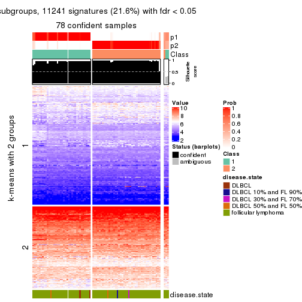
get_signatures(res, k = 3, scale_rows = FALSE)
get_signatures(res, k = 4, scale_rows = FALSE)
get_signatures(res, k = 5, scale_rows = FALSE)
get_signatures(res, k = 6, scale_rows = FALSE)
Compare the overlap of signatures from different k:
compare_signatures(res)
get_signature() returns a data frame invisibly. TO get the list of signatures, the function
call should be assigned to a variable explicitly. In following code, if plot argument is set
to FALSE, no heatmap is plotted while only the differential analysis is performed.
# code only for demonstration
tb = get_signature(res, k = ..., plot = FALSE)
An example of the output of tb is:
#> which_row fdr mean_1 mean_2 scaled_mean_1 scaled_mean_2 km
#> 1 38 0.042760348 8.373488 9.131774 -0.5533452 0.5164555 1
#> 2 40 0.018707592 7.106213 8.469186 -0.6173731 0.5762149 1
#> 3 55 0.019134737 10.221463 11.207825 -0.6159697 0.5749050 1
#> 4 59 0.006059896 5.921854 7.869574 -0.6899429 0.6439467 1
#> 5 60 0.018055526 8.928898 10.211722 -0.6204761 0.5791110 1
#> 6 98 0.009384629 15.714769 14.887706 0.6635654 -0.6193277 2
...
The columns in tb are:
which_row: row indices corresponding to the input matrix.fdr: FDR for the differential test. mean_x: The mean value in group x.scaled_mean_x: The mean value in group x after rows are scaled.km: Row groups if k-means clustering is applied to rows.UMAP plot which shows how samples are separated.
dimension_reduction(res, k = 2, method = "UMAP")
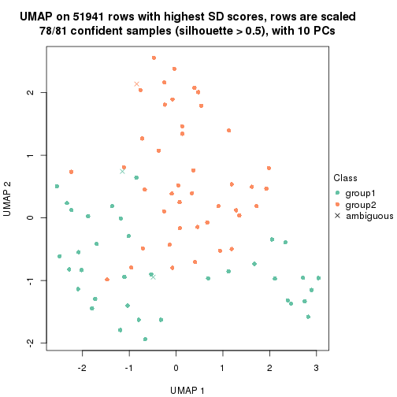
dimension_reduction(res, k = 3, method = "UMAP")

dimension_reduction(res, k = 4, method = "UMAP")
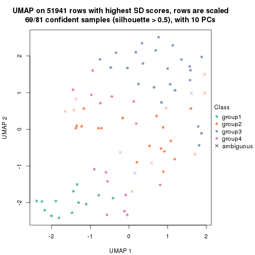
dimension_reduction(res, k = 5, method = "UMAP")
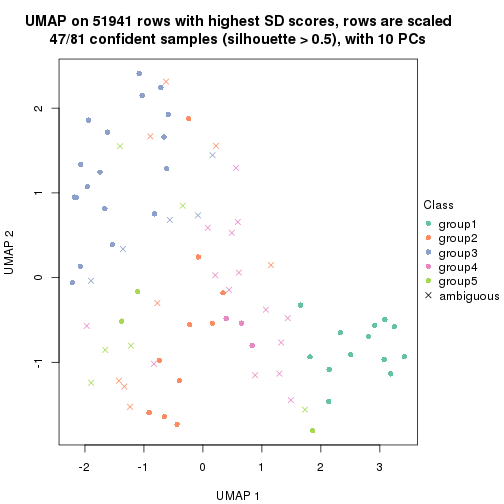
dimension_reduction(res, k = 6, method = "UMAP")
Following heatmap shows how subgroups are split when increasing k:
collect_classes(res)
Test correlation between subgroups and known annotations. If the known annotation is numeric, one-way ANOVA test is applied, and if the known annotation is discrete, chi-squared contingency table test is applied.
test_to_known_factors(res)
#> n disease.state(p) k
#> SD:skmeans 78 0.398 2
#> SD:skmeans 76 0.458 3
#> SD:skmeans 69 0.606 4
#> SD:skmeans 47 0.140 5
#> SD:skmeans 40 0.589 6
If matrix rows can be associated to genes, consider to use GO_Enrichment(res,
...) to perform function enrichment for the signature genes.
The object with results only for a single top-value method and a single partition method can be extracted as:
res = res_list["SD", "pam"]
# you can also extract it by
# res = res_list["SD:pam"]
A summary of res and all the functions that can be applied to it:
res
#> A 'ConsensusPartition' object with k = 2, 3, 4, 5, 6.
#> On a matrix with 51941 rows and 81 columns.
#> Top rows (1000, 2000, 3000, 4000, 5000) are extracted by 'SD' method.
#> Subgroups are detected by 'pam' method.
#> Performed in total 1250 partitions by row resampling.
#> Best k for subgroups seems to be 3.
#>
#> Following methods can be applied to this 'ConsensusPartition' object:
#> [1] "cola_report" "collect_classes" "collect_plots"
#> [4] "collect_stats" "colnames" "compare_signatures"
#> [7] "consensus_heatmap" "dimension_reduction" "functional_enrichment"
#> [10] "get_anno_col" "get_anno" "get_classes"
#> [13] "get_consensus" "get_matrix" "get_membership"
#> [16] "get_param" "get_signatures" "get_stats"
#> [19] "is_best_k" "is_stable_k" "membership_heatmap"
#> [22] "ncol" "nrow" "plot_ecdf"
#> [25] "rownames" "select_partition_number" "show"
#> [28] "suggest_best_k" "test_to_known_factors"
collect_plots() function collects all the plots made from res for all k (number of partitions)
into one single page to provide an easy and fast comparison between different k.
collect_plots(res)
The plots are:
k and the heatmap of
predicted classes for each k.k.k.k.All the plots in panels can be made by individual functions and they are plotted later in this section.
select_partition_number() produces several plots showing different
statistics for choosing “optimized” k. There are following statistics:
k;k, the area increased is defined as \(A_k - A_{k-1}\).The detailed explanations of these statistics can be found in the cola vignette.
Generally speaking, lower PAC score, higher mean silhouette score or higher
concordance corresponds to better partition. Rand index and Jaccard index
measure how similar the current partition is compared to partition with k-1.
If they are too similar, we won't accept k is better than k-1.
select_partition_number(res)
The numeric values for all these statistics can be obtained by get_stats().
get_stats(res)
#> k 1-PAC mean_silhouette concordance area_increased Rand Jaccard
#> 2 2 0.442 0.566 0.784 0.4521 0.500 0.500
#> 3 3 0.726 0.830 0.911 0.3167 0.552 0.337
#> 4 4 0.639 0.756 0.876 0.2118 0.843 0.626
#> 5 5 0.721 0.689 0.863 0.0871 0.797 0.422
#> 6 6 0.715 0.571 0.805 0.0405 0.962 0.835
suggest_best_k() suggests the best \(k\) based on these statistics. The rules are as follows:
NA.suggest_best_k(res)
#> [1] 3
Following shows the table of the partitions (You need to click the show/hide
code output link to see it). The membership matrix (columns with name p*)
is inferred by
clue::cl_consensus()
function with the SE method. Basically the value in the membership matrix
represents the probability to belong to a certain group. The finall class
label for an item is determined with the group with highest probability it
belongs to.
In get_classes() function, the entropy is calculated from the membership
matrix and the silhouette score is calculated from the consensus matrix.
cbind(get_classes(res, k = 2), get_membership(res, k = 2))
#> class entropy silhouette p1 p2
#> GSM1301497 2 0.9922 0.8087 0.448 0.552
#> GSM1301537 2 0.9933 0.8105 0.452 0.548
#> GSM1301521 2 0.3431 0.3317 0.064 0.936
#> GSM1301555 2 0.9944 0.8121 0.456 0.544
#> GSM1301501 1 0.5737 0.3024 0.864 0.136
#> GSM1301508 2 0.9944 0.8106 0.456 0.544
#> GSM1301481 2 0.9933 0.8124 0.452 0.548
#> GSM1301482 2 0.7056 -0.1365 0.192 0.808
#> GSM1301483 1 0.0000 0.5515 1.000 0.000
#> GSM1301484 2 0.9944 0.8111 0.456 0.544
#> GSM1301485 2 0.3274 0.3343 0.060 0.940
#> GSM1301486 2 0.9933 0.8130 0.452 0.548
#> GSM1301487 2 0.9866 0.8021 0.432 0.568
#> GSM1301488 1 0.9954 0.5583 0.540 0.460
#> GSM1301489 1 0.9983 -0.7448 0.524 0.476
#> GSM1301490 1 0.6887 0.1519 0.816 0.184
#> GSM1301491 1 0.1184 0.5534 0.984 0.016
#> GSM1301492 1 0.3114 0.5598 0.944 0.056
#> GSM1301493 2 0.9944 0.8041 0.456 0.544
#> GSM1301494 2 0.9933 0.8124 0.452 0.548
#> GSM1301495 2 0.9970 0.8095 0.468 0.532
#> GSM1301496 1 0.0672 0.5535 0.992 0.008
#> GSM1301498 2 0.9970 0.8095 0.468 0.532
#> GSM1301499 2 0.9909 0.8075 0.444 0.556
#> GSM1301500 1 0.9970 0.5565 0.532 0.468
#> GSM1301502 2 0.9896 0.8033 0.440 0.560
#> GSM1301503 2 0.9970 0.8095 0.468 0.532
#> GSM1301504 1 0.8327 -0.1751 0.736 0.264
#> GSM1301505 2 0.9970 0.8095 0.468 0.532
#> GSM1301506 2 0.9970 0.8095 0.468 0.532
#> GSM1301507 1 0.8955 -0.1998 0.688 0.312
#> GSM1301509 1 0.9922 0.5602 0.552 0.448
#> GSM1301510 2 0.1414 0.2726 0.020 0.980
#> GSM1301511 1 0.1184 0.5534 0.984 0.016
#> GSM1301512 1 0.0376 0.5503 0.996 0.004
#> GSM1301513 2 0.9933 0.8124 0.452 0.548
#> GSM1301514 1 0.7602 0.0113 0.780 0.220
#> GSM1301515 1 0.9248 0.5723 0.660 0.340
#> GSM1301516 2 0.9970 0.8095 0.468 0.532
#> GSM1301517 1 0.2948 0.5673 0.948 0.052
#> GSM1301518 1 0.9933 0.5570 0.548 0.452
#> GSM1301519 1 0.1184 0.5534 0.984 0.016
#> GSM1301520 2 0.9970 0.8095 0.468 0.532
#> GSM1301522 2 0.9970 0.8095 0.468 0.532
#> GSM1301523 2 0.4022 0.1639 0.080 0.920
#> GSM1301524 2 0.9933 0.8124 0.452 0.548
#> GSM1301525 1 0.9983 0.5247 0.524 0.476
#> GSM1301526 1 0.1633 0.5252 0.976 0.024
#> GSM1301527 1 0.2043 0.5363 0.968 0.032
#> GSM1301528 2 0.4161 0.1280 0.084 0.916
#> GSM1301529 1 0.9970 0.5565 0.532 0.468
#> GSM1301530 2 0.9881 0.8048 0.436 0.564
#> GSM1301531 2 0.9970 0.8095 0.468 0.532
#> GSM1301532 2 0.9970 0.8095 0.468 0.532
#> GSM1301533 2 0.9977 0.8103 0.472 0.528
#> GSM1301534 1 0.1184 0.5534 0.984 0.016
#> GSM1301535 2 0.9970 0.8095 0.468 0.532
#> GSM1301536 2 0.9944 0.8131 0.456 0.544
#> GSM1301538 2 0.8386 0.5947 0.268 0.732
#> GSM1301539 2 0.2603 0.3160 0.044 0.956
#> GSM1301540 2 0.9944 0.8111 0.456 0.544
#> GSM1301541 1 0.3274 0.5674 0.940 0.060
#> GSM1301542 1 0.9970 0.5565 0.532 0.468
#> GSM1301543 1 0.9710 0.5679 0.600 0.400
#> GSM1301544 2 0.9944 0.8111 0.456 0.544
#> GSM1301545 1 0.9970 0.5565 0.532 0.468
#> GSM1301546 1 0.0938 0.5506 0.988 0.012
#> GSM1301547 2 0.9944 0.8121 0.456 0.544
#> GSM1301548 1 0.1184 0.5534 0.984 0.016
#> GSM1301549 2 0.9933 0.8106 0.452 0.548
#> GSM1301550 1 0.9944 0.5576 0.544 0.456
#> GSM1301551 2 0.9944 0.8111 0.456 0.544
#> GSM1301552 2 0.1184 0.2819 0.016 0.984
#> GSM1301553 1 0.9963 0.5577 0.536 0.464
#> GSM1301554 1 0.1184 0.5369 0.984 0.016
#> GSM1301556 1 0.9881 0.5619 0.564 0.436
#> GSM1301557 2 0.9983 0.8060 0.476 0.524
#> GSM1301558 1 0.9552 0.5707 0.624 0.376
#> GSM1301559 1 0.9635 -0.5544 0.612 0.388
#> GSM1301560 2 0.9970 0.8095 0.468 0.532
#> GSM1301561 2 0.2603 0.3160 0.044 0.956
cbind(get_classes(res, k = 3), get_membership(res, k = 3))
#> class entropy silhouette p1 p2 p3
#> GSM1301497 3 0.1877 0.924 0.012 0.032 0.956
#> GSM1301537 3 0.1453 0.930 0.008 0.024 0.968
#> GSM1301521 1 0.5921 0.654 0.756 0.032 0.212
#> GSM1301555 3 0.1163 0.929 0.000 0.028 0.972
#> GSM1301501 3 0.2711 0.893 0.000 0.088 0.912
#> GSM1301508 2 0.2564 0.870 0.028 0.936 0.036
#> GSM1301481 3 0.1482 0.922 0.012 0.020 0.968
#> GSM1301482 1 0.0237 0.845 0.996 0.000 0.004
#> GSM1301483 3 0.4121 0.818 0.000 0.168 0.832
#> GSM1301484 3 0.1482 0.922 0.012 0.020 0.968
#> GSM1301485 1 0.6937 0.345 0.576 0.020 0.404
#> GSM1301486 3 0.2663 0.912 0.044 0.024 0.932
#> GSM1301487 3 0.1182 0.923 0.012 0.012 0.976
#> GSM1301488 1 0.1878 0.831 0.952 0.044 0.004
#> GSM1301489 2 0.4654 0.746 0.000 0.792 0.208
#> GSM1301490 3 0.1753 0.921 0.000 0.048 0.952
#> GSM1301491 2 0.0592 0.887 0.000 0.988 0.012
#> GSM1301492 3 0.7552 0.379 0.352 0.052 0.596
#> GSM1301493 3 0.1129 0.930 0.004 0.020 0.976
#> GSM1301494 3 0.1482 0.922 0.012 0.020 0.968
#> GSM1301495 3 0.0983 0.930 0.004 0.016 0.980
#> GSM1301496 3 0.5938 0.696 0.020 0.248 0.732
#> GSM1301498 3 0.0892 0.929 0.000 0.020 0.980
#> GSM1301499 3 0.4692 0.780 0.168 0.012 0.820
#> GSM1301500 1 0.0237 0.846 0.996 0.004 0.000
#> GSM1301502 3 0.2031 0.924 0.016 0.032 0.952
#> GSM1301503 2 0.5138 0.697 0.000 0.748 0.252
#> GSM1301504 3 0.1411 0.927 0.000 0.036 0.964
#> GSM1301505 3 0.0424 0.929 0.000 0.008 0.992
#> GSM1301506 3 0.0892 0.929 0.000 0.020 0.980
#> GSM1301507 2 0.1337 0.878 0.016 0.972 0.012
#> GSM1301509 1 0.1751 0.836 0.960 0.012 0.028
#> GSM1301510 1 0.0592 0.845 0.988 0.000 0.012
#> GSM1301511 2 0.2066 0.859 0.000 0.940 0.060
#> GSM1301512 3 0.6679 0.740 0.100 0.152 0.748
#> GSM1301513 3 0.1482 0.922 0.012 0.020 0.968
#> GSM1301514 3 0.1964 0.917 0.000 0.056 0.944
#> GSM1301515 2 0.0592 0.887 0.000 0.988 0.012
#> GSM1301516 3 0.0892 0.929 0.000 0.020 0.980
#> GSM1301517 3 0.3692 0.883 0.048 0.056 0.896
#> GSM1301518 1 0.0475 0.846 0.992 0.004 0.004
#> GSM1301519 3 0.2625 0.902 0.000 0.084 0.916
#> GSM1301520 3 0.0892 0.929 0.000 0.020 0.980
#> GSM1301522 3 0.0424 0.929 0.000 0.008 0.992
#> GSM1301523 1 0.0592 0.845 0.988 0.000 0.012
#> GSM1301524 3 0.0892 0.929 0.000 0.020 0.980
#> GSM1301525 1 0.8814 0.258 0.480 0.116 0.404
#> GSM1301526 3 0.2165 0.915 0.000 0.064 0.936
#> GSM1301527 2 0.0592 0.887 0.000 0.988 0.012
#> GSM1301528 1 0.0000 0.845 1.000 0.000 0.000
#> GSM1301529 1 0.0000 0.845 1.000 0.000 0.000
#> GSM1301530 3 0.1919 0.927 0.024 0.020 0.956
#> GSM1301531 3 0.4974 0.664 0.000 0.236 0.764
#> GSM1301532 3 0.0892 0.929 0.000 0.020 0.980
#> GSM1301533 3 0.1031 0.929 0.000 0.024 0.976
#> GSM1301534 2 0.0592 0.887 0.000 0.988 0.012
#> GSM1301535 3 0.0892 0.929 0.000 0.020 0.980
#> GSM1301536 3 0.1129 0.924 0.004 0.020 0.976
#> GSM1301538 3 0.5728 0.713 0.196 0.032 0.772
#> GSM1301539 1 0.3134 0.813 0.916 0.032 0.052
#> GSM1301540 2 0.2165 0.865 0.000 0.936 0.064
#> GSM1301541 2 0.4840 0.735 0.168 0.816 0.016
#> GSM1301542 1 0.0237 0.846 0.996 0.004 0.000
#> GSM1301543 2 0.0892 0.883 0.000 0.980 0.020
#> GSM1301544 3 0.4452 0.792 0.000 0.192 0.808
#> GSM1301545 1 0.0424 0.846 0.992 0.008 0.000
#> GSM1301546 3 0.2165 0.914 0.000 0.064 0.936
#> GSM1301547 2 0.6225 0.306 0.000 0.568 0.432
#> GSM1301548 2 0.0592 0.887 0.000 0.988 0.012
#> GSM1301549 3 0.0592 0.929 0.000 0.012 0.988
#> GSM1301550 1 0.1878 0.831 0.952 0.044 0.004
#> GSM1301551 3 0.1620 0.923 0.012 0.024 0.964
#> GSM1301552 1 0.4390 0.747 0.840 0.012 0.148
#> GSM1301553 1 0.0592 0.844 0.988 0.012 0.000
#> GSM1301554 2 0.0892 0.885 0.000 0.980 0.020
#> GSM1301556 1 0.6473 0.525 0.668 0.312 0.020
#> GSM1301557 3 0.0661 0.929 0.004 0.008 0.988
#> GSM1301558 1 0.9787 0.245 0.424 0.248 0.328
#> GSM1301559 3 0.0592 0.929 0.000 0.012 0.988
#> GSM1301560 3 0.0892 0.929 0.000 0.020 0.980
#> GSM1301561 1 0.1905 0.835 0.956 0.028 0.016
cbind(get_classes(res, k = 4), get_membership(res, k = 4))
#> class entropy silhouette p1 p2 p3 p4
#> GSM1301497 3 0.0921 0.8595 0.000 0.000 0.972 0.028
#> GSM1301537 4 0.5295 -0.1678 0.008 0.000 0.488 0.504
#> GSM1301521 3 0.3552 0.7760 0.128 0.000 0.848 0.024
#> GSM1301555 4 0.0188 0.8511 0.004 0.000 0.000 0.996
#> GSM1301501 4 0.2400 0.8383 0.004 0.044 0.028 0.924
#> GSM1301508 2 0.2266 0.8585 0.000 0.912 0.004 0.084
#> GSM1301481 4 0.4679 0.5230 0.000 0.000 0.352 0.648
#> GSM1301482 1 0.3444 0.7574 0.816 0.000 0.184 0.000
#> GSM1301483 4 0.4229 0.7856 0.004 0.124 0.048 0.824
#> GSM1301484 3 0.3074 0.8012 0.000 0.000 0.848 0.152
#> GSM1301485 3 0.1174 0.8583 0.012 0.000 0.968 0.020
#> GSM1301486 3 0.4252 0.7182 0.004 0.000 0.744 0.252
#> GSM1301487 3 0.3764 0.7729 0.000 0.000 0.784 0.216
#> GSM1301488 1 0.1936 0.8414 0.940 0.032 0.028 0.000
#> GSM1301489 2 0.3751 0.7678 0.000 0.800 0.004 0.196
#> GSM1301490 4 0.1082 0.8497 0.004 0.020 0.004 0.972
#> GSM1301491 2 0.0336 0.8815 0.000 0.992 0.008 0.000
#> GSM1301492 3 0.1109 0.8486 0.028 0.000 0.968 0.004
#> GSM1301493 3 0.4008 0.7419 0.000 0.000 0.756 0.244
#> GSM1301494 3 0.0921 0.8595 0.000 0.000 0.972 0.028
#> GSM1301495 4 0.2081 0.8187 0.000 0.000 0.084 0.916
#> GSM1301496 4 0.4912 0.7232 0.020 0.176 0.028 0.776
#> GSM1301498 4 0.0000 0.8513 0.000 0.000 0.000 1.000
#> GSM1301499 3 0.1042 0.8526 0.020 0.000 0.972 0.008
#> GSM1301500 1 0.0000 0.8542 1.000 0.000 0.000 0.000
#> GSM1301502 4 0.3539 0.7310 0.004 0.000 0.176 0.820
#> GSM1301503 2 0.3907 0.7310 0.000 0.768 0.000 0.232
#> GSM1301504 4 0.1191 0.8490 0.004 0.004 0.024 0.968
#> GSM1301505 4 0.2704 0.7952 0.000 0.000 0.124 0.876
#> GSM1301506 4 0.0000 0.8513 0.000 0.000 0.000 1.000
#> GSM1301507 2 0.0188 0.8848 0.000 0.996 0.004 0.000
#> GSM1301509 1 0.3707 0.7785 0.840 0.028 0.000 0.132
#> GSM1301510 1 0.0188 0.8535 0.996 0.000 0.000 0.004
#> GSM1301511 2 0.2669 0.8438 0.004 0.912 0.032 0.052
#> GSM1301512 4 0.5165 0.7525 0.076 0.104 0.028 0.792
#> GSM1301513 3 0.2281 0.8428 0.000 0.000 0.904 0.096
#> GSM1301514 4 0.1109 0.8482 0.000 0.028 0.004 0.968
#> GSM1301515 2 0.0188 0.8848 0.000 0.996 0.004 0.000
#> GSM1301516 4 0.0000 0.8513 0.000 0.000 0.000 1.000
#> GSM1301517 4 0.5374 0.7535 0.048 0.032 0.152 0.768
#> GSM1301518 1 0.2662 0.8340 0.900 0.016 0.084 0.000
#> GSM1301519 4 0.4586 0.7739 0.004 0.048 0.152 0.796
#> GSM1301520 4 0.0000 0.8513 0.000 0.000 0.000 1.000
#> GSM1301522 4 0.0000 0.8513 0.000 0.000 0.000 1.000
#> GSM1301523 1 0.0188 0.8535 0.996 0.000 0.000 0.004
#> GSM1301524 4 0.0707 0.8468 0.000 0.000 0.020 0.980
#> GSM1301525 3 0.3274 0.8111 0.004 0.056 0.884 0.056
#> GSM1301526 4 0.1920 0.8433 0.004 0.028 0.024 0.944
#> GSM1301527 2 0.0188 0.8848 0.000 0.996 0.004 0.000
#> GSM1301528 1 0.2647 0.8119 0.880 0.000 0.120 0.000
#> GSM1301529 1 0.3117 0.8283 0.880 0.028 0.092 0.000
#> GSM1301530 4 0.1557 0.8319 0.056 0.000 0.000 0.944
#> GSM1301531 4 0.4194 0.6277 0.000 0.228 0.008 0.764
#> GSM1301532 4 0.0000 0.8513 0.000 0.000 0.000 1.000
#> GSM1301533 4 0.0000 0.8513 0.000 0.000 0.000 1.000
#> GSM1301534 2 0.0188 0.8848 0.000 0.996 0.004 0.000
#> GSM1301535 4 0.0000 0.8513 0.000 0.000 0.000 1.000
#> GSM1301536 3 0.4790 0.3769 0.000 0.000 0.620 0.380
#> GSM1301538 4 0.6506 -0.1894 0.072 0.000 0.456 0.472
#> GSM1301539 1 0.5929 0.6406 0.688 0.000 0.204 0.108
#> GSM1301540 2 0.1109 0.8740 0.000 0.968 0.004 0.028
#> GSM1301541 2 0.5017 0.7408 0.156 0.780 0.016 0.048
#> GSM1301542 1 0.0000 0.8542 1.000 0.000 0.000 0.000
#> GSM1301543 2 0.0000 0.8834 0.000 1.000 0.000 0.000
#> GSM1301544 4 0.7398 -0.1672 0.000 0.164 0.412 0.424
#> GSM1301545 1 0.0000 0.8542 1.000 0.000 0.000 0.000
#> GSM1301546 4 0.2123 0.8394 0.004 0.032 0.028 0.936
#> GSM1301547 2 0.4948 0.3082 0.000 0.560 0.000 0.440
#> GSM1301548 2 0.0188 0.8848 0.000 0.996 0.004 0.000
#> GSM1301549 4 0.3208 0.7839 0.004 0.000 0.148 0.848
#> GSM1301550 1 0.2958 0.8250 0.896 0.028 0.004 0.072
#> GSM1301551 3 0.0921 0.8595 0.000 0.000 0.972 0.028
#> GSM1301552 3 0.1174 0.8546 0.020 0.000 0.968 0.012
#> GSM1301553 1 0.0000 0.8542 1.000 0.000 0.000 0.000
#> GSM1301554 2 0.1398 0.8748 0.000 0.956 0.004 0.040
#> GSM1301556 1 0.6713 0.5464 0.612 0.300 0.028 0.060
#> GSM1301557 4 0.3172 0.7813 0.000 0.000 0.160 0.840
#> GSM1301558 1 0.9604 0.0727 0.336 0.172 0.164 0.328
#> GSM1301559 4 0.3157 0.7930 0.004 0.000 0.144 0.852
#> GSM1301560 4 0.0000 0.8513 0.000 0.000 0.000 1.000
#> GSM1301561 3 0.3208 0.7541 0.148 0.000 0.848 0.004
cbind(get_classes(res, k = 5), get_membership(res, k = 5))
#> class entropy silhouette p1 p2 p3 p4 p5
#> GSM1301497 3 0.0000 0.800 0.000 0.000 1.000 0.000 0.000
#> GSM1301537 3 0.4680 0.296 0.004 0.000 0.540 0.008 0.448
#> GSM1301521 3 0.0162 0.799 0.004 0.000 0.996 0.000 0.000
#> GSM1301555 5 0.0000 0.870 0.000 0.000 0.000 0.000 1.000
#> GSM1301501 4 0.4114 0.226 0.000 0.000 0.000 0.624 0.376
#> GSM1301508 2 0.0404 0.925 0.000 0.988 0.000 0.012 0.000
#> GSM1301481 5 0.3661 0.598 0.000 0.000 0.276 0.000 0.724
#> GSM1301482 3 0.4114 0.342 0.376 0.000 0.624 0.000 0.000
#> GSM1301483 4 0.0000 0.710 0.000 0.000 0.000 1.000 0.000
#> GSM1301484 3 0.2605 0.742 0.000 0.000 0.852 0.000 0.148
#> GSM1301485 3 0.0000 0.800 0.000 0.000 1.000 0.000 0.000
#> GSM1301486 3 0.2516 0.736 0.000 0.000 0.860 0.000 0.140
#> GSM1301487 3 0.2020 0.766 0.000 0.000 0.900 0.000 0.100
#> GSM1301488 4 0.4015 0.364 0.348 0.000 0.000 0.652 0.000
#> GSM1301489 2 0.1106 0.909 0.000 0.964 0.000 0.012 0.024
#> GSM1301490 4 0.4304 0.116 0.000 0.000 0.000 0.516 0.484
#> GSM1301491 4 0.2891 0.632 0.000 0.176 0.000 0.824 0.000
#> GSM1301492 3 0.0162 0.799 0.004 0.000 0.996 0.000 0.000
#> GSM1301493 3 0.1670 0.783 0.000 0.000 0.936 0.012 0.052
#> GSM1301494 3 0.0000 0.800 0.000 0.000 1.000 0.000 0.000
#> GSM1301495 5 0.2470 0.807 0.000 0.000 0.104 0.012 0.884
#> GSM1301496 4 0.0000 0.710 0.000 0.000 0.000 1.000 0.000
#> GSM1301498 5 0.0000 0.870 0.000 0.000 0.000 0.000 1.000
#> GSM1301499 3 0.0000 0.800 0.000 0.000 1.000 0.000 0.000
#> GSM1301500 1 0.0000 1.000 1.000 0.000 0.000 0.000 0.000
#> GSM1301502 5 0.2966 0.729 0.000 0.000 0.184 0.000 0.816
#> GSM1301503 2 0.2249 0.843 0.000 0.896 0.000 0.008 0.096
#> GSM1301504 5 0.3242 0.701 0.000 0.000 0.000 0.216 0.784
#> GSM1301505 5 0.0566 0.868 0.000 0.000 0.004 0.012 0.984
#> GSM1301506 5 0.0000 0.870 0.000 0.000 0.000 0.000 1.000
#> GSM1301507 2 0.0000 0.931 0.000 1.000 0.000 0.000 0.000
#> GSM1301509 4 0.4273 0.265 0.448 0.000 0.000 0.552 0.000
#> GSM1301510 1 0.0000 1.000 1.000 0.000 0.000 0.000 0.000
#> GSM1301511 4 0.0963 0.703 0.000 0.036 0.000 0.964 0.000
#> GSM1301512 4 0.0000 0.710 0.000 0.000 0.000 1.000 0.000
#> GSM1301513 3 0.0162 0.799 0.000 0.000 0.996 0.000 0.004
#> GSM1301514 4 0.4045 0.435 0.000 0.000 0.000 0.644 0.356
#> GSM1301515 2 0.0000 0.931 0.000 1.000 0.000 0.000 0.000
#> GSM1301516 5 0.0404 0.868 0.000 0.000 0.000 0.012 0.988
#> GSM1301517 4 0.0000 0.710 0.000 0.000 0.000 1.000 0.000
#> GSM1301518 4 0.5604 0.121 0.460 0.000 0.072 0.468 0.000
#> GSM1301519 4 0.0000 0.710 0.000 0.000 0.000 1.000 0.000
#> GSM1301520 5 0.0404 0.868 0.000 0.000 0.000 0.012 0.988
#> GSM1301522 5 0.0000 0.870 0.000 0.000 0.000 0.000 1.000
#> GSM1301523 1 0.0000 1.000 1.000 0.000 0.000 0.000 0.000
#> GSM1301524 5 0.0000 0.870 0.000 0.000 0.000 0.000 1.000
#> GSM1301525 4 0.4878 0.223 0.000 0.000 0.440 0.536 0.024
#> GSM1301526 5 0.4138 0.381 0.000 0.000 0.000 0.384 0.616
#> GSM1301527 2 0.0000 0.931 0.000 1.000 0.000 0.000 0.000
#> GSM1301528 3 0.4287 0.134 0.460 0.000 0.540 0.000 0.000
#> GSM1301529 4 0.5604 0.136 0.460 0.000 0.072 0.468 0.000
#> GSM1301530 5 0.0000 0.870 0.000 0.000 0.000 0.000 1.000
#> GSM1301531 5 0.4096 0.576 0.000 0.260 0.004 0.012 0.724
#> GSM1301532 5 0.0000 0.870 0.000 0.000 0.000 0.000 1.000
#> GSM1301533 5 0.0000 0.870 0.000 0.000 0.000 0.000 1.000
#> GSM1301534 2 0.0000 0.931 0.000 1.000 0.000 0.000 0.000
#> GSM1301535 5 0.0404 0.868 0.000 0.000 0.000 0.012 0.988
#> GSM1301536 3 0.4304 0.218 0.000 0.000 0.516 0.000 0.484
#> GSM1301538 3 0.4655 0.220 0.012 0.000 0.512 0.000 0.476
#> GSM1301539 5 0.6729 -0.115 0.252 0.000 0.372 0.000 0.376
#> GSM1301540 2 0.0000 0.931 0.000 1.000 0.000 0.000 0.000
#> GSM1301541 4 0.5620 0.463 0.116 0.272 0.000 0.612 0.000
#> GSM1301542 1 0.0000 1.000 1.000 0.000 0.000 0.000 0.000
#> GSM1301543 2 0.0000 0.931 0.000 1.000 0.000 0.000 0.000
#> GSM1301544 3 0.5109 0.191 0.000 0.036 0.504 0.000 0.460
#> GSM1301545 1 0.0000 1.000 1.000 0.000 0.000 0.000 0.000
#> GSM1301546 4 0.0000 0.710 0.000 0.000 0.000 1.000 0.000
#> GSM1301547 2 0.4235 0.275 0.000 0.576 0.000 0.000 0.424
#> GSM1301548 2 0.0000 0.931 0.000 1.000 0.000 0.000 0.000
#> GSM1301549 5 0.1243 0.859 0.004 0.000 0.028 0.008 0.960
#> GSM1301550 4 0.4030 0.436 0.352 0.000 0.000 0.648 0.000
#> GSM1301551 3 0.0000 0.800 0.000 0.000 1.000 0.000 0.000
#> GSM1301552 3 0.0000 0.800 0.000 0.000 1.000 0.000 0.000
#> GSM1301553 1 0.0000 1.000 1.000 0.000 0.000 0.000 0.000
#> GSM1301554 2 0.0609 0.921 0.000 0.980 0.000 0.020 0.000
#> GSM1301556 4 0.0404 0.706 0.000 0.012 0.000 0.988 0.000
#> GSM1301557 5 0.4325 0.650 0.000 0.000 0.044 0.220 0.736
#> GSM1301558 4 0.4124 0.651 0.044 0.024 0.008 0.820 0.104
#> GSM1301559 5 0.3048 0.745 0.000 0.000 0.004 0.176 0.820
#> GSM1301560 5 0.0000 0.870 0.000 0.000 0.000 0.000 1.000
#> GSM1301561 3 0.0162 0.799 0.004 0.000 0.996 0.000 0.000
cbind(get_classes(res, k = 6), get_membership(res, k = 6))
#> class entropy silhouette p1 p2 p3 p4 p5 p6
#> GSM1301497 3 0.0865 0.67656 0.000 0.000 0.964 0.000 0.036 0.000
#> GSM1301537 3 0.4687 0.24613 0.004 0.000 0.536 0.000 0.036 0.424
#> GSM1301521 3 0.0146 0.67682 0.000 0.000 0.996 0.000 0.000 0.004
#> GSM1301555 6 0.0000 0.75975 0.000 0.000 0.000 0.000 0.000 1.000
#> GSM1301501 4 0.4466 0.17483 0.000 0.000 0.000 0.620 0.044 0.336
#> GSM1301508 2 0.0790 0.91255 0.000 0.968 0.000 0.000 0.032 0.000
#> GSM1301481 6 0.5386 0.26152 0.000 0.000 0.136 0.000 0.316 0.548
#> GSM1301482 3 0.4774 0.41677 0.332 0.000 0.600 0.000 0.068 0.000
#> GSM1301483 4 0.3869 0.12131 0.000 0.000 0.000 0.500 0.500 0.000
#> GSM1301484 3 0.4972 0.38228 0.000 0.000 0.568 0.000 0.352 0.080
#> GSM1301485 3 0.0000 0.67669 0.000 0.000 1.000 0.000 0.000 0.000
#> GSM1301486 3 0.2135 0.62102 0.000 0.000 0.872 0.000 0.000 0.128
#> GSM1301487 3 0.2999 0.61766 0.000 0.000 0.836 0.000 0.040 0.124
#> GSM1301488 4 0.5915 0.12594 0.264 0.000 0.000 0.468 0.268 0.000
#> GSM1301489 2 0.1477 0.89705 0.000 0.940 0.000 0.004 0.048 0.008
#> GSM1301490 5 0.5609 0.18057 0.000 0.000 0.000 0.160 0.504 0.336
#> GSM1301491 4 0.2300 0.60324 0.000 0.144 0.000 0.856 0.000 0.000
#> GSM1301492 3 0.3620 0.47576 0.000 0.000 0.648 0.000 0.352 0.000
#> GSM1301493 3 0.2404 0.64093 0.000 0.000 0.884 0.000 0.080 0.036
#> GSM1301494 3 0.2996 0.57900 0.000 0.000 0.772 0.000 0.228 0.000
#> GSM1301495 6 0.3175 0.68934 0.000 0.000 0.088 0.000 0.080 0.832
#> GSM1301496 4 0.0458 0.65926 0.000 0.000 0.000 0.984 0.016 0.000
#> GSM1301498 6 0.0405 0.75739 0.000 0.000 0.000 0.004 0.008 0.988
#> GSM1301499 3 0.3620 0.47576 0.000 0.000 0.648 0.000 0.352 0.000
#> GSM1301500 1 0.1075 0.96074 0.952 0.000 0.000 0.000 0.048 0.000
#> GSM1301502 6 0.2697 0.62671 0.000 0.000 0.188 0.000 0.000 0.812
#> GSM1301503 2 0.2147 0.85023 0.000 0.896 0.000 0.000 0.020 0.084
#> GSM1301504 6 0.3974 0.53359 0.000 0.000 0.000 0.224 0.048 0.728
#> GSM1301505 6 0.3747 0.40194 0.000 0.000 0.000 0.000 0.396 0.604
#> GSM1301506 6 0.0000 0.75975 0.000 0.000 0.000 0.000 0.000 1.000
#> GSM1301507 2 0.0000 0.92383 0.000 1.000 0.000 0.000 0.000 0.000
#> GSM1301509 4 0.5210 0.31022 0.380 0.000 0.000 0.532 0.084 0.004
#> GSM1301510 1 0.0405 0.95371 0.988 0.000 0.000 0.004 0.008 0.000
#> GSM1301511 4 0.1075 0.65342 0.000 0.048 0.000 0.952 0.000 0.000
#> GSM1301512 4 0.0146 0.65905 0.000 0.000 0.000 0.996 0.004 0.000
#> GSM1301513 3 0.0790 0.67670 0.000 0.000 0.968 0.000 0.032 0.000
#> GSM1301514 4 0.4278 0.31866 0.000 0.000 0.000 0.632 0.032 0.336
#> GSM1301515 2 0.0000 0.92383 0.000 1.000 0.000 0.000 0.000 0.000
#> GSM1301516 6 0.1556 0.74075 0.000 0.000 0.000 0.000 0.080 0.920
#> GSM1301517 4 0.0000 0.65947 0.000 0.000 0.000 1.000 0.000 0.000
#> GSM1301518 5 0.5310 -0.31437 0.428 0.000 0.004 0.088 0.480 0.000
#> GSM1301519 4 0.0146 0.65960 0.000 0.000 0.000 0.996 0.004 0.000
#> GSM1301520 6 0.1075 0.74878 0.000 0.000 0.000 0.000 0.048 0.952
#> GSM1301522 6 0.3023 0.49436 0.000 0.000 0.000 0.000 0.232 0.768
#> GSM1301523 1 0.1204 0.95776 0.944 0.000 0.000 0.000 0.056 0.000
#> GSM1301524 6 0.0000 0.75975 0.000 0.000 0.000 0.000 0.000 1.000
#> GSM1301525 4 0.5762 0.17240 0.000 0.000 0.152 0.464 0.380 0.004
#> GSM1301526 6 0.4343 0.25994 0.000 0.000 0.000 0.380 0.028 0.592
#> GSM1301527 2 0.0000 0.92383 0.000 1.000 0.000 0.000 0.000 0.000
#> GSM1301528 3 0.3944 0.26753 0.428 0.000 0.568 0.000 0.004 0.000
#> GSM1301529 4 0.5489 0.09913 0.440 0.000 0.108 0.448 0.004 0.000
#> GSM1301530 6 0.0000 0.75975 0.000 0.000 0.000 0.000 0.000 1.000
#> GSM1301531 6 0.5621 0.39193 0.000 0.224 0.028 0.000 0.136 0.612
#> GSM1301532 6 0.0000 0.75975 0.000 0.000 0.000 0.000 0.000 1.000
#> GSM1301533 6 0.0000 0.75975 0.000 0.000 0.000 0.000 0.000 1.000
#> GSM1301534 2 0.0000 0.92383 0.000 1.000 0.000 0.000 0.000 0.000
#> GSM1301535 6 0.1556 0.73927 0.000 0.000 0.000 0.000 0.080 0.920
#> GSM1301536 5 0.6051 -0.23279 0.000 0.000 0.360 0.000 0.384 0.256
#> GSM1301538 3 0.4848 0.16386 0.012 0.000 0.488 0.000 0.032 0.468
#> GSM1301539 3 0.6085 0.00677 0.224 0.000 0.412 0.000 0.004 0.360
#> GSM1301540 2 0.0260 0.92150 0.000 0.992 0.000 0.000 0.008 0.000
#> GSM1301541 4 0.4814 0.45150 0.100 0.256 0.000 0.644 0.000 0.000
#> GSM1301542 1 0.0146 0.95527 0.996 0.000 0.000 0.000 0.004 0.000
#> GSM1301543 2 0.0405 0.92079 0.000 0.988 0.000 0.004 0.008 0.000
#> GSM1301544 3 0.4739 0.20114 0.000 0.048 0.516 0.000 0.000 0.436
#> GSM1301545 1 0.0000 0.95756 1.000 0.000 0.000 0.000 0.000 0.000
#> GSM1301546 4 0.0632 0.65645 0.000 0.000 0.000 0.976 0.024 0.000
#> GSM1301547 2 0.3804 0.29375 0.000 0.576 0.000 0.000 0.000 0.424
#> GSM1301548 2 0.0000 0.92383 0.000 1.000 0.000 0.000 0.000 0.000
#> GSM1301549 6 0.4234 0.36819 0.000 0.000 0.016 0.004 0.372 0.608
#> GSM1301550 4 0.3482 0.46594 0.316 0.000 0.000 0.684 0.000 0.000
#> GSM1301551 3 0.0146 0.67726 0.000 0.000 0.996 0.000 0.004 0.000
#> GSM1301552 3 0.0865 0.67656 0.000 0.000 0.964 0.000 0.036 0.000
#> GSM1301553 1 0.1204 0.95776 0.944 0.000 0.000 0.000 0.056 0.000
#> GSM1301554 2 0.1074 0.91067 0.000 0.960 0.000 0.012 0.028 0.000
#> GSM1301556 4 0.0146 0.65945 0.000 0.004 0.000 0.996 0.000 0.000
#> GSM1301557 5 0.4791 0.19882 0.000 0.000 0.000 0.104 0.652 0.244
#> GSM1301558 4 0.4850 0.42783 0.048 0.008 0.000 0.640 0.296 0.008
#> GSM1301559 6 0.4453 0.34014 0.000 0.000 0.000 0.032 0.400 0.568
#> GSM1301560 6 0.0000 0.75975 0.000 0.000 0.000 0.000 0.000 1.000
#> GSM1301561 3 0.0000 0.67669 0.000 0.000 1.000 0.000 0.000 0.000
Heatmaps for the consensus matrix. It visualizes the probability of two samples to be in a same group.
consensus_heatmap(res, k = 2)
consensus_heatmap(res, k = 3)
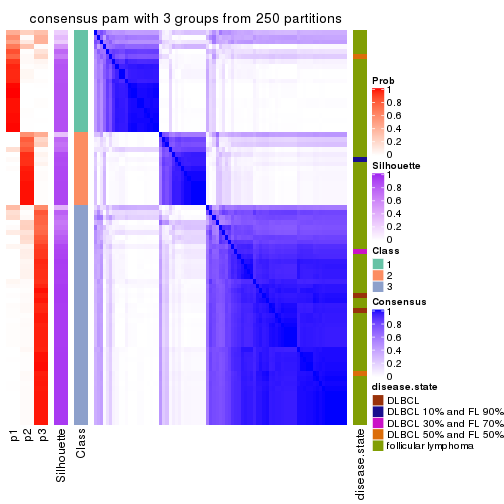
consensus_heatmap(res, k = 4)
consensus_heatmap(res, k = 5)
consensus_heatmap(res, k = 6)
Heatmaps for the membership of samples in all partitions to see how consistent they are:
membership_heatmap(res, k = 2)
membership_heatmap(res, k = 3)
membership_heatmap(res, k = 4)
membership_heatmap(res, k = 5)
membership_heatmap(res, k = 6)
As soon as we have had the classes for columns, we can look for signatures which are significantly different between classes which can be candidate marks for certain classes. Following are the heatmaps for signatures.
Signature heatmaps where rows are scaled:
get_signatures(res, k = 2)
get_signatures(res, k = 3)
get_signatures(res, k = 4)
get_signatures(res, k = 5)
get_signatures(res, k = 6)
Signature heatmaps where rows are not scaled:
get_signatures(res, k = 2, scale_rows = FALSE)
get_signatures(res, k = 3, scale_rows = FALSE)
get_signatures(res, k = 4, scale_rows = FALSE)
get_signatures(res, k = 5, scale_rows = FALSE)
get_signatures(res, k = 6, scale_rows = FALSE)

Compare the overlap of signatures from different k:
compare_signatures(res)
get_signature() returns a data frame invisibly. TO get the list of signatures, the function
call should be assigned to a variable explicitly. In following code, if plot argument is set
to FALSE, no heatmap is plotted while only the differential analysis is performed.
# code only for demonstration
tb = get_signature(res, k = ..., plot = FALSE)
An example of the output of tb is:
#> which_row fdr mean_1 mean_2 scaled_mean_1 scaled_mean_2 km
#> 1 38 0.042760348 8.373488 9.131774 -0.5533452 0.5164555 1
#> 2 40 0.018707592 7.106213 8.469186 -0.6173731 0.5762149 1
#> 3 55 0.019134737 10.221463 11.207825 -0.6159697 0.5749050 1
#> 4 59 0.006059896 5.921854 7.869574 -0.6899429 0.6439467 1
#> 5 60 0.018055526 8.928898 10.211722 -0.6204761 0.5791110 1
#> 6 98 0.009384629 15.714769 14.887706 0.6635654 -0.6193277 2
...
The columns in tb are:
which_row: row indices corresponding to the input matrix.fdr: FDR for the differential test. mean_x: The mean value in group x.scaled_mean_x: The mean value in group x after rows are scaled.km: Row groups if k-means clustering is applied to rows.UMAP plot which shows how samples are separated.
dimension_reduction(res, k = 2, method = "UMAP")
dimension_reduction(res, k = 3, method = "UMAP")
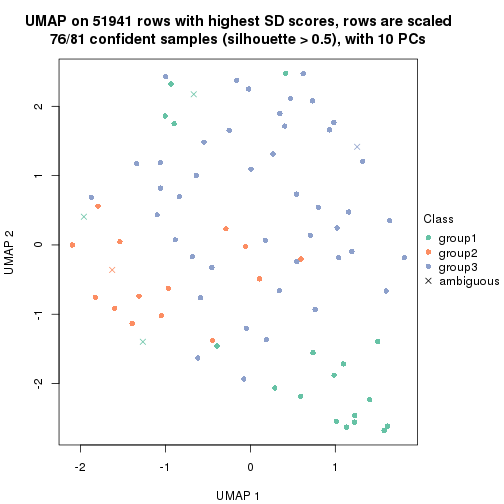
dimension_reduction(res, k = 4, method = "UMAP")
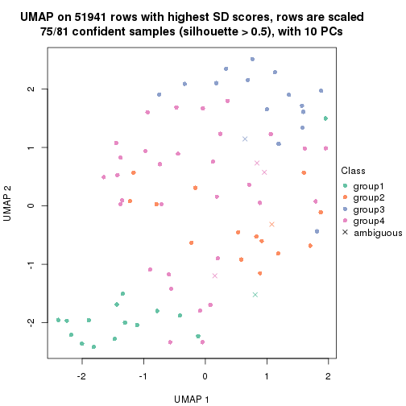
dimension_reduction(res, k = 5, method = "UMAP")
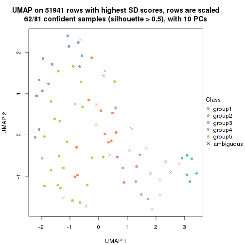
dimension_reduction(res, k = 6, method = "UMAP")
Following heatmap shows how subgroups are split when increasing k:
collect_classes(res)
Test correlation between subgroups and known annotations. If the known annotation is numeric, one-way ANOVA test is applied, and if the known annotation is discrete, chi-squared contingency table test is applied.
test_to_known_factors(res)
#> n disease.state(p) k
#> SD:pam 65 0.329 2
#> SD:pam 76 0.473 3
#> SD:pam 75 0.476 4
#> SD:pam 62 0.622 5
#> SD:pam 50 0.671 6
If matrix rows can be associated to genes, consider to use GO_Enrichment(res,
...) to perform function enrichment for the signature genes.
The object with results only for a single top-value method and a single partition method can be extracted as:
res = res_list["SD", "mclust"]
# you can also extract it by
# res = res_list["SD:mclust"]
A summary of res and all the functions that can be applied to it:
res
#> A 'ConsensusPartition' object with k = 2, 3, 4, 5, 6.
#> On a matrix with 51941 rows and 81 columns.
#> Top rows (1000, 2000, 3000, 4000, 5000) are extracted by 'SD' method.
#> Subgroups are detected by 'mclust' method.
#> Performed in total 1250 partitions by row resampling.
#> Best k for subgroups seems to be 4.
#>
#> Following methods can be applied to this 'ConsensusPartition' object:
#> [1] "cola_report" "collect_classes" "collect_plots"
#> [4] "collect_stats" "colnames" "compare_signatures"
#> [7] "consensus_heatmap" "dimension_reduction" "functional_enrichment"
#> [10] "get_anno_col" "get_anno" "get_classes"
#> [13] "get_consensus" "get_matrix" "get_membership"
#> [16] "get_param" "get_signatures" "get_stats"
#> [19] "is_best_k" "is_stable_k" "membership_heatmap"
#> [22] "ncol" "nrow" "plot_ecdf"
#> [25] "rownames" "select_partition_number" "show"
#> [28] "suggest_best_k" "test_to_known_factors"
collect_plots() function collects all the plots made from res for all k (number of partitions)
into one single page to provide an easy and fast comparison between different k.
collect_plots(res)

The plots are:
k and the heatmap of
predicted classes for each k.k.k.k.All the plots in panels can be made by individual functions and they are plotted later in this section.
select_partition_number() produces several plots showing different
statistics for choosing “optimized” k. There are following statistics:
k;k, the area increased is defined as \(A_k - A_{k-1}\).The detailed explanations of these statistics can be found in the cola vignette.
Generally speaking, lower PAC score, higher mean silhouette score or higher
concordance corresponds to better partition. Rand index and Jaccard index
measure how similar the current partition is compared to partition with k-1.
If they are too similar, we won't accept k is better than k-1.
select_partition_number(res)
The numeric values for all these statistics can be obtained by get_stats().
get_stats(res)
#> k 1-PAC mean_silhouette concordance area_increased Rand Jaccard
#> 2 2 0.452 0.829 0.864 0.3008 0.650 0.650
#> 3 3 0.368 0.798 0.812 0.6787 0.879 0.814
#> 4 4 0.707 0.852 0.903 0.4339 0.673 0.418
#> 5 5 0.563 0.640 0.804 0.0479 0.968 0.880
#> 6 6 0.789 0.868 0.886 0.0506 0.945 0.777
suggest_best_k() suggests the best \(k\) based on these statistics. The rules are as follows:
NA.suggest_best_k(res)
#> [1] 4
Following shows the table of the partitions (You need to click the show/hide
code output link to see it). The membership matrix (columns with name p*)
is inferred by
clue::cl_consensus()
function with the SE method. Basically the value in the membership matrix
represents the probability to belong to a certain group. The finall class
label for an item is determined with the group with highest probability it
belongs to.
In get_classes() function, the entropy is calculated from the membership
matrix and the silhouette score is calculated from the consensus matrix.
cbind(get_classes(res, k = 2), get_membership(res, k = 2))
#> class entropy silhouette p1 p2
#> GSM1301497 2 0.0000 0.891 0.000 1.000
#> GSM1301537 2 0.0376 0.891 0.004 0.996
#> GSM1301521 2 0.0376 0.891 0.004 0.996
#> GSM1301555 1 0.9833 0.896 0.576 0.424
#> GSM1301501 2 0.2778 0.867 0.048 0.952
#> GSM1301508 1 0.9580 0.941 0.620 0.380
#> GSM1301481 2 0.0000 0.891 0.000 1.000
#> GSM1301482 2 0.5059 0.792 0.112 0.888
#> GSM1301483 2 0.0000 0.891 0.000 1.000
#> GSM1301484 2 0.0000 0.891 0.000 1.000
#> GSM1301485 2 0.4562 0.810 0.096 0.904
#> GSM1301486 2 0.0376 0.891 0.004 0.996
#> GSM1301487 2 0.1184 0.886 0.016 0.984
#> GSM1301488 2 0.7950 0.631 0.240 0.760
#> GSM1301489 1 0.9393 0.940 0.644 0.356
#> GSM1301490 2 0.0000 0.891 0.000 1.000
#> GSM1301491 1 0.9522 0.925 0.628 0.372
#> GSM1301492 2 0.0000 0.891 0.000 1.000
#> GSM1301493 2 0.0376 0.891 0.004 0.996
#> GSM1301494 2 0.4562 0.810 0.096 0.904
#> GSM1301495 2 0.0376 0.891 0.004 0.996
#> GSM1301496 2 0.1843 0.882 0.028 0.972
#> GSM1301498 2 0.2423 0.874 0.040 0.960
#> GSM1301499 2 0.4562 0.810 0.096 0.904
#> GSM1301500 2 0.7950 0.631 0.240 0.760
#> GSM1301502 2 0.1633 0.885 0.024 0.976
#> GSM1301503 1 0.9552 0.942 0.624 0.376
#> GSM1301504 2 0.2423 0.874 0.040 0.960
#> GSM1301505 2 0.2043 0.876 0.032 0.968
#> GSM1301506 1 0.9608 0.939 0.616 0.384
#> GSM1301507 1 0.9393 0.940 0.644 0.356
#> GSM1301509 2 0.2948 0.857 0.052 0.948
#> GSM1301510 2 0.7950 0.631 0.240 0.760
#> GSM1301511 2 1.0000 -0.714 0.496 0.504
#> GSM1301512 2 0.1633 0.884 0.024 0.976
#> GSM1301513 2 0.4562 0.810 0.096 0.904
#> GSM1301514 2 0.1633 0.884 0.024 0.976
#> GSM1301515 1 0.9209 0.931 0.664 0.336
#> GSM1301516 2 0.1843 0.883 0.028 0.972
#> GSM1301517 2 0.1843 0.882 0.028 0.972
#> GSM1301518 2 0.7299 0.678 0.204 0.796
#> GSM1301519 2 0.2778 0.867 0.048 0.952
#> GSM1301520 2 0.8016 0.441 0.244 0.756
#> GSM1301522 2 0.1843 0.882 0.028 0.972
#> GSM1301523 2 0.7950 0.631 0.240 0.760
#> GSM1301524 2 0.0672 0.890 0.008 0.992
#> GSM1301525 2 0.1414 0.887 0.020 0.980
#> GSM1301526 1 0.9977 0.816 0.528 0.472
#> GSM1301527 1 0.9209 0.931 0.664 0.336
#> GSM1301528 2 0.0938 0.888 0.012 0.988
#> GSM1301529 2 0.0000 0.891 0.000 1.000
#> GSM1301530 1 0.9608 0.939 0.616 0.384
#> GSM1301531 2 0.0000 0.891 0.000 1.000
#> GSM1301532 1 0.9580 0.937 0.620 0.380
#> GSM1301533 2 0.0376 0.891 0.004 0.996
#> GSM1301534 1 0.9209 0.931 0.664 0.336
#> GSM1301535 2 0.0376 0.891 0.004 0.996
#> GSM1301536 2 0.0000 0.891 0.000 1.000
#> GSM1301538 2 0.0376 0.891 0.004 0.996
#> GSM1301539 2 0.0376 0.891 0.004 0.996
#> GSM1301540 2 0.0000 0.891 0.000 1.000
#> GSM1301541 1 0.9866 0.883 0.568 0.432
#> GSM1301542 2 0.7950 0.631 0.240 0.760
#> GSM1301543 1 0.9922 0.816 0.552 0.448
#> GSM1301544 2 0.2043 0.880 0.032 0.968
#> GSM1301545 2 0.7950 0.631 0.240 0.760
#> GSM1301546 2 0.1414 0.886 0.020 0.980
#> GSM1301547 1 0.9580 0.941 0.620 0.380
#> GSM1301548 1 0.9209 0.931 0.664 0.336
#> GSM1301549 2 0.0938 0.888 0.012 0.988
#> GSM1301550 2 0.0000 0.891 0.000 1.000
#> GSM1301551 2 0.0376 0.891 0.004 0.996
#> GSM1301552 2 0.0000 0.891 0.000 1.000
#> GSM1301553 2 0.7950 0.631 0.240 0.760
#> GSM1301554 1 0.9209 0.931 0.664 0.336
#> GSM1301556 2 0.1843 0.882 0.028 0.972
#> GSM1301557 2 0.0376 0.890 0.004 0.996
#> GSM1301558 2 0.2603 0.870 0.044 0.956
#> GSM1301559 2 0.0000 0.891 0.000 1.000
#> GSM1301560 2 0.8327 0.258 0.264 0.736
#> GSM1301561 2 0.4431 0.814 0.092 0.908
cbind(get_classes(res, k = 3), get_membership(res, k = 3))
#> class entropy silhouette p1 p2 p3
#> GSM1301497 3 0.6854 0.816 0.136 0.124 0.740
#> GSM1301537 3 0.7815 0.806 0.148 0.180 0.672
#> GSM1301521 3 0.3816 0.780 0.148 0.000 0.852
#> GSM1301555 2 0.3412 0.851 0.000 0.876 0.124
#> GSM1301501 3 0.7909 0.804 0.148 0.188 0.664
#> GSM1301508 2 0.1753 0.934 0.000 0.952 0.048
#> GSM1301481 3 0.0424 0.752 0.000 0.008 0.992
#> GSM1301482 3 0.6168 0.608 0.412 0.000 0.588
#> GSM1301483 3 0.7909 0.804 0.148 0.188 0.664
#> GSM1301484 3 0.0237 0.750 0.000 0.004 0.996
#> GSM1301485 3 0.5734 0.738 0.164 0.048 0.788
#> GSM1301486 3 0.0892 0.732 0.000 0.020 0.980
#> GSM1301487 3 0.5847 0.731 0.172 0.048 0.780
#> GSM1301488 1 0.0000 1.000 1.000 0.000 0.000
#> GSM1301489 2 0.1753 0.934 0.000 0.952 0.048
#> GSM1301490 3 0.7909 0.804 0.148 0.188 0.664
#> GSM1301491 2 0.6008 0.264 0.000 0.628 0.372
#> GSM1301492 3 0.1753 0.770 0.000 0.048 0.952
#> GSM1301493 3 0.1753 0.770 0.000 0.048 0.952
#> GSM1301494 3 0.5497 0.749 0.148 0.048 0.804
#> GSM1301495 3 0.0592 0.756 0.000 0.012 0.988
#> GSM1301496 3 0.7909 0.804 0.148 0.188 0.664
#> GSM1301498 3 0.7909 0.804 0.148 0.188 0.664
#> GSM1301499 3 0.5497 0.749 0.148 0.048 0.804
#> GSM1301500 1 0.0000 1.000 1.000 0.000 0.000
#> GSM1301502 3 0.4399 0.759 0.000 0.188 0.812
#> GSM1301503 2 0.1753 0.934 0.000 0.952 0.048
#> GSM1301504 3 0.7909 0.804 0.148 0.188 0.664
#> GSM1301505 3 0.5598 0.752 0.148 0.052 0.800
#> GSM1301506 2 0.1753 0.934 0.000 0.952 0.048
#> GSM1301507 2 0.1753 0.934 0.000 0.952 0.048
#> GSM1301509 3 0.6168 0.615 0.412 0.000 0.588
#> GSM1301510 1 0.0000 1.000 1.000 0.000 0.000
#> GSM1301511 3 0.6309 0.275 0.000 0.496 0.504
#> GSM1301512 3 0.7909 0.804 0.148 0.188 0.664
#> GSM1301513 3 0.5497 0.749 0.148 0.048 0.804
#> GSM1301514 3 0.7065 0.730 0.048 0.288 0.664
#> GSM1301515 2 0.1753 0.934 0.000 0.952 0.048
#> GSM1301516 3 0.4399 0.759 0.000 0.188 0.812
#> GSM1301517 3 0.7909 0.804 0.148 0.188 0.664
#> GSM1301518 3 0.6168 0.607 0.412 0.000 0.588
#> GSM1301519 3 0.7909 0.804 0.148 0.188 0.664
#> GSM1301520 3 0.5968 0.590 0.000 0.364 0.636
#> GSM1301522 3 0.7909 0.804 0.148 0.188 0.664
#> GSM1301523 1 0.0000 1.000 1.000 0.000 0.000
#> GSM1301524 3 0.7909 0.804 0.148 0.188 0.664
#> GSM1301525 3 0.7759 0.807 0.144 0.180 0.676
#> GSM1301526 2 0.5291 0.603 0.000 0.732 0.268
#> GSM1301527 2 0.1753 0.934 0.000 0.952 0.048
#> GSM1301528 3 0.6062 0.626 0.384 0.000 0.616
#> GSM1301529 3 0.6823 0.755 0.296 0.036 0.668
#> GSM1301530 2 0.1753 0.934 0.000 0.952 0.048
#> GSM1301531 3 0.2066 0.771 0.000 0.060 0.940
#> GSM1301532 2 0.1753 0.934 0.000 0.952 0.048
#> GSM1301533 3 0.4346 0.760 0.000 0.184 0.816
#> GSM1301534 2 0.1753 0.934 0.000 0.952 0.048
#> GSM1301535 3 0.0892 0.760 0.000 0.020 0.980
#> GSM1301536 3 0.0237 0.750 0.000 0.004 0.996
#> GSM1301538 3 0.6393 0.813 0.148 0.088 0.764
#> GSM1301539 3 0.4679 0.790 0.148 0.020 0.832
#> GSM1301540 3 0.4002 0.768 0.000 0.160 0.840
#> GSM1301541 2 0.1753 0.934 0.000 0.952 0.048
#> GSM1301542 1 0.0000 1.000 1.000 0.000 0.000
#> GSM1301543 2 0.3272 0.872 0.004 0.892 0.104
#> GSM1301544 3 0.4399 0.759 0.000 0.188 0.812
#> GSM1301545 1 0.0000 1.000 1.000 0.000 0.000
#> GSM1301546 3 0.7909 0.804 0.148 0.188 0.664
#> GSM1301547 2 0.1753 0.934 0.000 0.952 0.048
#> GSM1301548 2 0.1753 0.934 0.000 0.952 0.048
#> GSM1301549 3 0.7909 0.804 0.148 0.188 0.664
#> GSM1301550 3 0.8017 0.801 0.208 0.140 0.652
#> GSM1301551 3 0.3148 0.743 0.048 0.036 0.916
#> GSM1301552 3 0.0000 0.747 0.000 0.000 1.000
#> GSM1301553 1 0.0000 1.000 1.000 0.000 0.000
#> GSM1301554 2 0.1753 0.934 0.000 0.952 0.048
#> GSM1301556 3 0.7909 0.804 0.148 0.188 0.664
#> GSM1301557 3 0.7909 0.804 0.148 0.188 0.664
#> GSM1301558 3 0.6613 0.791 0.072 0.188 0.740
#> GSM1301559 3 0.1031 0.761 0.000 0.024 0.976
#> GSM1301560 3 0.5905 0.646 0.000 0.352 0.648
#> GSM1301561 3 0.5847 0.731 0.172 0.048 0.780
cbind(get_classes(res, k = 4), get_membership(res, k = 4))
#> class entropy silhouette p1 p2 p3 p4
#> GSM1301497 3 0.1970 0.874 0.008 0.000 0.932 0.060
#> GSM1301537 3 0.6033 0.727 0.116 0.204 0.680 0.000
#> GSM1301521 3 0.0000 0.891 0.000 0.000 1.000 0.000
#> GSM1301555 2 0.0000 0.804 0.000 1.000 0.000 0.000
#> GSM1301501 4 0.1118 0.929 0.000 0.036 0.000 0.964
#> GSM1301508 2 0.2011 0.839 0.000 0.920 0.000 0.080
#> GSM1301481 3 0.0000 0.891 0.000 0.000 1.000 0.000
#> GSM1301482 1 0.0469 0.956 0.988 0.000 0.012 0.000
#> GSM1301483 4 0.0000 0.916 0.000 0.000 0.000 1.000
#> GSM1301484 3 0.0000 0.891 0.000 0.000 1.000 0.000
#> GSM1301485 3 0.2704 0.842 0.124 0.000 0.876 0.000
#> GSM1301486 3 0.0000 0.891 0.000 0.000 1.000 0.000
#> GSM1301487 3 0.2704 0.842 0.124 0.000 0.876 0.000
#> GSM1301488 1 0.0000 0.966 1.000 0.000 0.000 0.000
#> GSM1301489 2 0.3610 0.859 0.000 0.800 0.000 0.200
#> GSM1301490 4 0.0000 0.916 0.000 0.000 0.000 1.000
#> GSM1301491 2 0.3649 0.857 0.000 0.796 0.000 0.204
#> GSM1301492 3 0.0188 0.891 0.000 0.000 0.996 0.004
#> GSM1301493 3 0.1792 0.876 0.000 0.068 0.932 0.000
#> GSM1301494 3 0.2704 0.842 0.124 0.000 0.876 0.000
#> GSM1301495 3 0.0921 0.888 0.000 0.028 0.972 0.000
#> GSM1301496 4 0.1211 0.925 0.000 0.040 0.000 0.960
#> GSM1301498 4 0.0921 0.931 0.000 0.028 0.000 0.972
#> GSM1301499 3 0.1022 0.886 0.032 0.000 0.968 0.000
#> GSM1301500 1 0.0000 0.966 1.000 0.000 0.000 0.000
#> GSM1301502 3 0.4755 0.692 0.000 0.040 0.760 0.200
#> GSM1301503 2 0.1716 0.833 0.000 0.936 0.000 0.064
#> GSM1301504 4 0.1118 0.929 0.000 0.036 0.000 0.964
#> GSM1301505 3 0.3778 0.839 0.052 0.000 0.848 0.100
#> GSM1301506 2 0.0000 0.804 0.000 1.000 0.000 0.000
#> GSM1301507 2 0.3123 0.857 0.000 0.844 0.000 0.156
#> GSM1301509 1 0.0000 0.966 1.000 0.000 0.000 0.000
#> GSM1301510 1 0.0000 0.966 1.000 0.000 0.000 0.000
#> GSM1301511 2 0.4103 0.818 0.000 0.744 0.000 0.256
#> GSM1301512 4 0.1022 0.931 0.000 0.032 0.000 0.968
#> GSM1301513 3 0.2704 0.842 0.124 0.000 0.876 0.000
#> GSM1301514 2 0.4477 0.750 0.000 0.688 0.000 0.312
#> GSM1301515 2 0.3610 0.859 0.000 0.800 0.000 0.200
#> GSM1301516 3 0.4755 0.692 0.000 0.040 0.760 0.200
#> GSM1301517 4 0.1022 0.931 0.000 0.032 0.000 0.968
#> GSM1301518 1 0.0000 0.966 1.000 0.000 0.000 0.000
#> GSM1301519 4 0.1022 0.931 0.000 0.032 0.000 0.968
#> GSM1301520 2 0.6886 0.620 0.000 0.596 0.204 0.200
#> GSM1301522 4 0.0000 0.916 0.000 0.000 0.000 1.000
#> GSM1301523 1 0.0000 0.966 1.000 0.000 0.000 0.000
#> GSM1301524 4 0.1302 0.924 0.000 0.044 0.000 0.956
#> GSM1301525 3 0.3933 0.740 0.008 0.000 0.792 0.200
#> GSM1301526 2 0.4193 0.806 0.000 0.732 0.000 0.268
#> GSM1301527 2 0.3610 0.859 0.000 0.800 0.000 0.200
#> GSM1301528 1 0.0188 0.963 0.996 0.000 0.004 0.000
#> GSM1301529 1 0.5022 0.536 0.708 0.028 0.264 0.000
#> GSM1301530 2 0.0000 0.804 0.000 1.000 0.000 0.000
#> GSM1301531 3 0.1022 0.884 0.000 0.032 0.968 0.000
#> GSM1301532 2 0.0000 0.804 0.000 1.000 0.000 0.000
#> GSM1301533 3 0.3688 0.794 0.000 0.208 0.792 0.000
#> GSM1301534 2 0.3610 0.859 0.000 0.800 0.000 0.200
#> GSM1301535 3 0.0000 0.891 0.000 0.000 1.000 0.000
#> GSM1301536 3 0.0000 0.891 0.000 0.000 1.000 0.000
#> GSM1301538 3 0.5727 0.749 0.096 0.200 0.704 0.000
#> GSM1301539 3 0.4827 0.811 0.124 0.092 0.784 0.000
#> GSM1301540 3 0.1970 0.872 0.000 0.008 0.932 0.060
#> GSM1301541 2 0.3610 0.859 0.000 0.800 0.000 0.200
#> GSM1301542 1 0.0000 0.966 1.000 0.000 0.000 0.000
#> GSM1301543 2 0.4643 0.693 0.000 0.656 0.000 0.344
#> GSM1301544 3 0.3893 0.739 0.000 0.008 0.796 0.196
#> GSM1301545 1 0.0000 0.966 1.000 0.000 0.000 0.000
#> GSM1301546 4 0.0921 0.931 0.000 0.028 0.000 0.972
#> GSM1301547 2 0.0000 0.804 0.000 1.000 0.000 0.000
#> GSM1301548 2 0.3610 0.859 0.000 0.800 0.000 0.200
#> GSM1301549 4 0.0921 0.931 0.000 0.028 0.000 0.972
#> GSM1301550 4 0.4857 0.417 0.324 0.008 0.000 0.668
#> GSM1301551 3 0.0000 0.891 0.000 0.000 1.000 0.000
#> GSM1301552 3 0.0000 0.891 0.000 0.000 1.000 0.000
#> GSM1301553 1 0.0000 0.966 1.000 0.000 0.000 0.000
#> GSM1301554 2 0.3610 0.859 0.000 0.800 0.000 0.200
#> GSM1301556 4 0.1022 0.931 0.000 0.032 0.000 0.968
#> GSM1301557 4 0.0000 0.916 0.000 0.000 0.000 1.000
#> GSM1301558 4 0.5512 0.504 0.000 0.040 0.300 0.660
#> GSM1301559 3 0.0000 0.891 0.000 0.000 1.000 0.000
#> GSM1301560 2 0.0469 0.799 0.000 0.988 0.012 0.000
#> GSM1301561 3 0.2704 0.842 0.124 0.000 0.876 0.000
cbind(get_classes(res, k = 5), get_membership(res, k = 5))
#> class entropy silhouette p1 p2 p3 p4 p5
#> GSM1301497 3 0.4818 0.0471 0.000 0.012 0.676 0.028 0.284
#> GSM1301537 3 0.6247 0.0800 0.000 0.144 0.436 0.000 0.420
#> GSM1301521 3 0.3203 0.4195 0.000 0.012 0.820 0.000 0.168
#> GSM1301555 2 0.2036 0.7987 0.000 0.920 0.024 0.000 0.056
#> GSM1301501 4 0.3662 0.6763 0.000 0.252 0.004 0.744 0.000
#> GSM1301508 2 0.1686 0.8368 0.004 0.944 0.004 0.036 0.012
#> GSM1301481 3 0.2732 0.5099 0.000 0.160 0.840 0.000 0.000
#> GSM1301482 1 0.4088 0.7312 0.632 0.000 0.000 0.000 0.368
#> GSM1301483 4 0.0290 0.7969 0.000 0.000 0.000 0.992 0.008
#> GSM1301484 3 0.1893 0.5614 0.000 0.048 0.928 0.000 0.024
#> GSM1301485 5 0.4262 0.9096 0.000 0.000 0.440 0.000 0.560
#> GSM1301486 3 0.0000 0.5461 0.000 0.000 1.000 0.000 0.000
#> GSM1301487 5 0.4126 0.9144 0.000 0.000 0.380 0.000 0.620
#> GSM1301488 1 0.0162 0.8604 0.996 0.000 0.000 0.000 0.004
#> GSM1301489 2 0.2445 0.8414 0.000 0.884 0.004 0.108 0.004
#> GSM1301490 4 0.0162 0.7979 0.000 0.000 0.000 0.996 0.004
#> GSM1301491 2 0.3521 0.7828 0.000 0.764 0.004 0.232 0.000
#> GSM1301492 3 0.3115 0.5306 0.000 0.020 0.876 0.056 0.048
#> GSM1301493 3 0.1818 0.5619 0.000 0.024 0.932 0.000 0.044
#> GSM1301494 3 0.4273 -0.6123 0.000 0.000 0.552 0.000 0.448
#> GSM1301495 3 0.1012 0.5627 0.000 0.020 0.968 0.000 0.012
#> GSM1301496 4 0.1638 0.7792 0.000 0.000 0.064 0.932 0.004
#> GSM1301498 4 0.4142 0.6294 0.000 0.308 0.004 0.684 0.004
#> GSM1301499 3 0.4273 -0.6123 0.000 0.000 0.552 0.000 0.448
#> GSM1301500 1 0.0000 0.8608 1.000 0.000 0.000 0.000 0.000
#> GSM1301502 3 0.3937 0.5334 0.000 0.132 0.804 0.060 0.004
#> GSM1301503 2 0.2578 0.8238 0.000 0.904 0.040 0.016 0.040
#> GSM1301504 4 0.3607 0.6815 0.000 0.244 0.004 0.752 0.000
#> GSM1301505 3 0.6385 0.1480 0.000 0.056 0.608 0.244 0.092
#> GSM1301506 2 0.1502 0.8114 0.000 0.940 0.004 0.000 0.056
#> GSM1301507 2 0.1991 0.8445 0.000 0.916 0.004 0.076 0.004
#> GSM1301509 1 0.3336 0.8253 0.772 0.000 0.000 0.000 0.228
#> GSM1301510 1 0.1341 0.8607 0.944 0.000 0.000 0.000 0.056
#> GSM1301511 2 0.3790 0.7365 0.000 0.724 0.004 0.272 0.000
#> GSM1301512 4 0.0162 0.7975 0.004 0.000 0.000 0.996 0.000
#> GSM1301513 5 0.4262 0.9096 0.000 0.000 0.440 0.000 0.560
#> GSM1301514 2 0.5849 0.5622 0.004 0.596 0.120 0.280 0.000
#> GSM1301515 2 0.3086 0.8177 0.000 0.816 0.004 0.180 0.000
#> GSM1301516 3 0.5264 0.3802 0.000 0.256 0.652 0.092 0.000
#> GSM1301517 4 0.0162 0.7976 0.000 0.000 0.000 0.996 0.004
#> GSM1301518 1 0.3730 0.7986 0.712 0.000 0.000 0.000 0.288
#> GSM1301519 4 0.3550 0.6851 0.000 0.236 0.004 0.760 0.000
#> GSM1301520 2 0.4761 0.7371 0.000 0.732 0.144 0.124 0.000
#> GSM1301522 4 0.4906 0.6856 0.000 0.232 0.076 0.692 0.000
#> GSM1301523 1 0.0000 0.8608 1.000 0.000 0.000 0.000 0.000
#> GSM1301524 4 0.5844 0.6190 0.000 0.272 0.112 0.608 0.008
#> GSM1301525 3 0.5476 0.4289 0.000 0.056 0.720 0.084 0.140
#> GSM1301526 2 0.3741 0.7482 0.004 0.732 0.000 0.264 0.000
#> GSM1301527 2 0.2951 0.8384 0.000 0.860 0.000 0.112 0.028
#> GSM1301528 1 0.4045 0.7411 0.644 0.000 0.000 0.000 0.356
#> GSM1301529 1 0.4430 0.7201 0.628 0.000 0.012 0.000 0.360
#> GSM1301530 2 0.1502 0.8114 0.000 0.940 0.004 0.000 0.056
#> GSM1301531 3 0.3003 0.4991 0.000 0.188 0.812 0.000 0.000
#> GSM1301532 2 0.1502 0.8114 0.000 0.940 0.004 0.000 0.056
#> GSM1301533 3 0.4305 0.4818 0.000 0.200 0.748 0.000 0.052
#> GSM1301534 2 0.2951 0.8384 0.000 0.860 0.000 0.112 0.028
#> GSM1301535 3 0.0404 0.5555 0.000 0.012 0.988 0.000 0.000
#> GSM1301536 3 0.1430 0.5712 0.000 0.052 0.944 0.000 0.004
#> GSM1301538 3 0.6219 0.0815 0.000 0.140 0.440 0.000 0.420
#> GSM1301539 3 0.5142 0.2045 0.000 0.044 0.564 0.000 0.392
#> GSM1301540 3 0.3399 0.5138 0.000 0.172 0.812 0.012 0.004
#> GSM1301541 2 0.3047 0.8247 0.004 0.832 0.004 0.160 0.000
#> GSM1301542 1 0.2179 0.8556 0.888 0.000 0.000 0.000 0.112
#> GSM1301543 2 0.3861 0.6903 0.000 0.712 0.004 0.284 0.000
#> GSM1301544 3 0.4626 0.4764 0.000 0.084 0.756 0.152 0.008
#> GSM1301545 1 0.0000 0.8608 1.000 0.000 0.000 0.000 0.000
#> GSM1301546 4 0.0771 0.7924 0.004 0.020 0.000 0.976 0.000
#> GSM1301547 2 0.1443 0.8173 0.000 0.948 0.004 0.004 0.044
#> GSM1301548 2 0.2951 0.8384 0.000 0.860 0.000 0.112 0.028
#> GSM1301549 4 0.5423 0.6558 0.000 0.244 0.112 0.644 0.000
#> GSM1301550 4 0.3177 0.5515 0.208 0.000 0.000 0.792 0.000
#> GSM1301551 3 0.2516 0.4160 0.000 0.000 0.860 0.000 0.140
#> GSM1301552 3 0.2561 0.4078 0.000 0.000 0.856 0.000 0.144
#> GSM1301553 1 0.0000 0.8608 1.000 0.000 0.000 0.000 0.000
#> GSM1301554 2 0.2929 0.8356 0.000 0.856 0.004 0.128 0.012
#> GSM1301556 4 0.0162 0.7976 0.000 0.000 0.000 0.996 0.004
#> GSM1301557 4 0.0693 0.7972 0.000 0.012 0.000 0.980 0.008
#> GSM1301558 4 0.4946 0.6711 0.000 0.120 0.168 0.712 0.000
#> GSM1301559 3 0.1597 0.5711 0.000 0.048 0.940 0.012 0.000
#> GSM1301560 2 0.4337 0.6096 0.000 0.748 0.196 0.000 0.056
#> GSM1301561 5 0.4126 0.9144 0.000 0.000 0.380 0.000 0.620
cbind(get_classes(res, k = 6), get_membership(res, k = 6))
#> class entropy silhouette p1 p2 p3 p4 p5 p6
#> GSM1301497 5 0.4614 0.481 0.008 0.008 0.368 0.004 0.600 0.012
#> GSM1301537 6 0.2975 0.875 0.000 0.040 0.088 0.004 0.008 0.860
#> GSM1301521 3 0.3198 0.729 0.000 0.000 0.796 0.008 0.008 0.188
#> GSM1301555 2 0.2945 0.830 0.000 0.824 0.020 0.000 0.000 0.156
#> GSM1301501 4 0.3834 0.805 0.000 0.124 0.016 0.800 0.056 0.004
#> GSM1301508 2 0.2006 0.886 0.016 0.916 0.004 0.004 0.000 0.060
#> GSM1301481 3 0.0260 0.953 0.000 0.000 0.992 0.000 0.008 0.000
#> GSM1301482 1 0.0717 0.938 0.976 0.000 0.000 0.000 0.016 0.008
#> GSM1301483 4 0.0260 0.842 0.000 0.008 0.000 0.992 0.000 0.000
#> GSM1301484 3 0.0363 0.952 0.000 0.000 0.988 0.000 0.012 0.000
#> GSM1301485 5 0.2092 0.909 0.000 0.000 0.124 0.000 0.876 0.000
#> GSM1301486 3 0.0725 0.952 0.000 0.000 0.976 0.000 0.012 0.012
#> GSM1301487 5 0.2680 0.897 0.016 0.004 0.124 0.000 0.856 0.000
#> GSM1301488 1 0.1410 0.938 0.944 0.000 0.000 0.004 0.008 0.044
#> GSM1301489 2 0.0725 0.889 0.000 0.976 0.012 0.012 0.000 0.000
#> GSM1301490 4 0.0665 0.844 0.000 0.008 0.008 0.980 0.004 0.000
#> GSM1301491 2 0.2865 0.854 0.000 0.848 0.016 0.128 0.004 0.004
#> GSM1301492 3 0.1026 0.953 0.000 0.008 0.968 0.008 0.004 0.012
#> GSM1301493 3 0.1699 0.928 0.000 0.012 0.936 0.008 0.004 0.040
#> GSM1301494 5 0.2257 0.908 0.000 0.000 0.116 0.000 0.876 0.008
#> GSM1301495 3 0.1210 0.946 0.000 0.008 0.960 0.008 0.004 0.020
#> GSM1301496 4 0.0748 0.843 0.000 0.016 0.004 0.976 0.000 0.004
#> GSM1301498 4 0.4459 0.765 0.000 0.192 0.024 0.728 0.056 0.000
#> GSM1301499 5 0.2357 0.906 0.000 0.000 0.116 0.000 0.872 0.012
#> GSM1301500 1 0.2277 0.929 0.892 0.000 0.000 0.000 0.032 0.076
#> GSM1301502 3 0.1738 0.895 0.000 0.052 0.928 0.004 0.016 0.000
#> GSM1301503 2 0.2067 0.881 0.000 0.916 0.048 0.004 0.004 0.028
#> GSM1301504 4 0.4426 0.805 0.000 0.092 0.080 0.768 0.060 0.000
#> GSM1301505 4 0.4797 0.448 0.000 0.000 0.356 0.580 0.064 0.000
#> GSM1301506 2 0.2445 0.863 0.000 0.868 0.008 0.004 0.000 0.120
#> GSM1301507 2 0.1053 0.890 0.000 0.964 0.012 0.004 0.000 0.020
#> GSM1301509 1 0.1092 0.937 0.960 0.000 0.000 0.000 0.020 0.020
#> GSM1301510 1 0.0717 0.939 0.976 0.000 0.000 0.000 0.008 0.016
#> GSM1301511 2 0.3178 0.829 0.000 0.816 0.016 0.160 0.004 0.004
#> GSM1301512 4 0.0870 0.841 0.012 0.012 0.000 0.972 0.000 0.004
#> GSM1301513 5 0.2003 0.908 0.000 0.000 0.116 0.000 0.884 0.000
#> GSM1301514 2 0.3037 0.857 0.016 0.848 0.016 0.116 0.000 0.004
#> GSM1301515 2 0.1759 0.880 0.000 0.924 0.004 0.064 0.004 0.004
#> GSM1301516 3 0.1065 0.938 0.000 0.020 0.964 0.008 0.008 0.000
#> GSM1301517 4 0.0405 0.841 0.000 0.008 0.000 0.988 0.000 0.004
#> GSM1301518 1 0.1092 0.937 0.960 0.000 0.000 0.000 0.020 0.020
#> GSM1301519 4 0.3372 0.820 0.000 0.084 0.016 0.840 0.056 0.004
#> GSM1301520 2 0.3541 0.662 0.000 0.772 0.204 0.016 0.004 0.004
#> GSM1301522 4 0.4578 0.762 0.004 0.032 0.164 0.740 0.060 0.000
#> GSM1301523 1 0.2331 0.929 0.888 0.000 0.000 0.000 0.032 0.080
#> GSM1301524 4 0.4573 0.725 0.000 0.048 0.204 0.716 0.032 0.000
#> GSM1301525 3 0.1540 0.944 0.000 0.016 0.948 0.012 0.012 0.012
#> GSM1301526 2 0.3016 0.846 0.016 0.836 0.012 0.136 0.000 0.000
#> GSM1301527 2 0.1196 0.884 0.000 0.952 0.000 0.000 0.008 0.040
#> GSM1301528 1 0.0820 0.938 0.972 0.000 0.000 0.000 0.016 0.012
#> GSM1301529 1 0.1844 0.922 0.928 0.000 0.016 0.000 0.016 0.040
#> GSM1301530 2 0.2446 0.863 0.000 0.864 0.012 0.000 0.000 0.124
#> GSM1301531 3 0.0622 0.952 0.000 0.012 0.980 0.000 0.008 0.000
#> GSM1301532 2 0.2389 0.858 0.000 0.864 0.008 0.000 0.000 0.128
#> GSM1301533 3 0.0924 0.947 0.000 0.008 0.972 0.008 0.008 0.004
#> GSM1301534 2 0.1196 0.884 0.000 0.952 0.000 0.000 0.008 0.040
#> GSM1301535 3 0.0622 0.953 0.000 0.000 0.980 0.008 0.000 0.012
#> GSM1301536 3 0.0291 0.953 0.004 0.000 0.992 0.000 0.004 0.000
#> GSM1301538 6 0.2933 0.879 0.000 0.040 0.096 0.000 0.008 0.856
#> GSM1301539 6 0.3844 0.759 0.000 0.016 0.216 0.008 0.008 0.752
#> GSM1301540 3 0.0436 0.953 0.004 0.000 0.988 0.004 0.004 0.000
#> GSM1301541 2 0.1608 0.889 0.016 0.940 0.004 0.036 0.000 0.004
#> GSM1301542 1 0.1921 0.934 0.916 0.000 0.000 0.000 0.032 0.052
#> GSM1301543 2 0.2726 0.817 0.000 0.844 0.004 0.144 0.004 0.004
#> GSM1301544 3 0.1605 0.918 0.000 0.032 0.940 0.012 0.016 0.000
#> GSM1301545 1 0.2164 0.933 0.900 0.000 0.000 0.000 0.032 0.068
#> GSM1301546 4 0.1838 0.832 0.016 0.068 0.000 0.916 0.000 0.000
#> GSM1301547 2 0.1970 0.876 0.000 0.900 0.008 0.000 0.000 0.092
#> GSM1301548 2 0.1196 0.884 0.000 0.952 0.000 0.000 0.008 0.040
#> GSM1301549 4 0.4611 0.746 0.004 0.028 0.184 0.728 0.056 0.000
#> GSM1301550 4 0.2664 0.720 0.184 0.000 0.000 0.816 0.000 0.000
#> GSM1301551 3 0.0820 0.948 0.000 0.000 0.972 0.000 0.016 0.012
#> GSM1301552 3 0.0964 0.949 0.000 0.004 0.968 0.000 0.016 0.012
#> GSM1301553 1 0.2331 0.929 0.888 0.000 0.000 0.000 0.032 0.080
#> GSM1301554 2 0.1457 0.886 0.000 0.948 0.004 0.016 0.004 0.028
#> GSM1301556 4 0.0551 0.841 0.004 0.008 0.000 0.984 0.000 0.004
#> GSM1301557 4 0.0653 0.845 0.004 0.012 0.004 0.980 0.000 0.000
#> GSM1301558 4 0.3651 0.791 0.000 0.048 0.116 0.812 0.024 0.000
#> GSM1301559 3 0.0146 0.954 0.000 0.000 0.996 0.000 0.004 0.000
#> GSM1301560 2 0.3445 0.801 0.000 0.796 0.048 0.000 0.000 0.156
#> GSM1301561 5 0.2048 0.910 0.000 0.000 0.120 0.000 0.880 0.000
Heatmaps for the consensus matrix. It visualizes the probability of two samples to be in a same group.
consensus_heatmap(res, k = 2)
consensus_heatmap(res, k = 3)

consensus_heatmap(res, k = 4)
consensus_heatmap(res, k = 5)
consensus_heatmap(res, k = 6)

Heatmaps for the membership of samples in all partitions to see how consistent they are:
membership_heatmap(res, k = 2)
membership_heatmap(res, k = 3)
membership_heatmap(res, k = 4)

membership_heatmap(res, k = 5)

membership_heatmap(res, k = 6)
As soon as we have had the classes for columns, we can look for signatures which are significantly different between classes which can be candidate marks for certain classes. Following are the heatmaps for signatures.
Signature heatmaps where rows are scaled:
get_signatures(res, k = 2)

get_signatures(res, k = 3)
get_signatures(res, k = 4)
get_signatures(res, k = 5)
get_signatures(res, k = 6)
Signature heatmaps where rows are not scaled:
get_signatures(res, k = 2, scale_rows = FALSE)
get_signatures(res, k = 3, scale_rows = FALSE)
get_signatures(res, k = 4, scale_rows = FALSE)
get_signatures(res, k = 5, scale_rows = FALSE)
get_signatures(res, k = 6, scale_rows = FALSE)

Compare the overlap of signatures from different k:
compare_signatures(res)
get_signature() returns a data frame invisibly. TO get the list of signatures, the function
call should be assigned to a variable explicitly. In following code, if plot argument is set
to FALSE, no heatmap is plotted while only the differential analysis is performed.
# code only for demonstration
tb = get_signature(res, k = ..., plot = FALSE)
An example of the output of tb is:
#> which_row fdr mean_1 mean_2 scaled_mean_1 scaled_mean_2 km
#> 1 38 0.042760348 8.373488 9.131774 -0.5533452 0.5164555 1
#> 2 40 0.018707592 7.106213 8.469186 -0.6173731 0.5762149 1
#> 3 55 0.019134737 10.221463 11.207825 -0.6159697 0.5749050 1
#> 4 59 0.006059896 5.921854 7.869574 -0.6899429 0.6439467 1
#> 5 60 0.018055526 8.928898 10.211722 -0.6204761 0.5791110 1
#> 6 98 0.009384629 15.714769 14.887706 0.6635654 -0.6193277 2
...
The columns in tb are:
which_row: row indices corresponding to the input matrix.fdr: FDR for the differential test. mean_x: The mean value in group x.scaled_mean_x: The mean value in group x after rows are scaled.km: Row groups if k-means clustering is applied to rows.UMAP plot which shows how samples are separated.
dimension_reduction(res, k = 2, method = "UMAP")
dimension_reduction(res, k = 3, method = "UMAP")
dimension_reduction(res, k = 4, method = "UMAP")
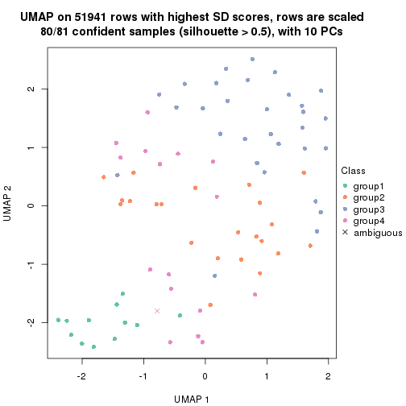
dimension_reduction(res, k = 5, method = "UMAP")
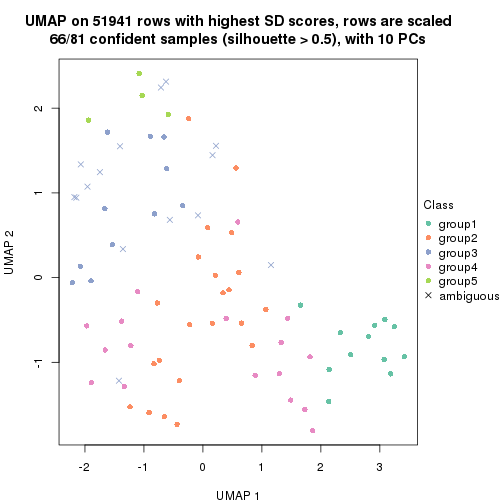
dimension_reduction(res, k = 6, method = "UMAP")
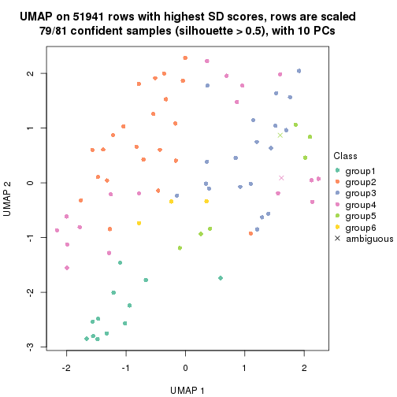
Following heatmap shows how subgroups are split when increasing k:
collect_classes(res)

Test correlation between subgroups and known annotations. If the known annotation is numeric, one-way ANOVA test is applied, and if the known annotation is discrete, chi-squared contingency table test is applied.
test_to_known_factors(res)
#> n disease.state(p) k
#> SD:mclust 78 0.2792 2
#> SD:mclust 79 0.6389 3
#> SD:mclust 80 0.5099 4
#> SD:mclust 66 0.8582 5
#> SD:mclust 79 0.0277 6
If matrix rows can be associated to genes, consider to use GO_Enrichment(res,
...) to perform function enrichment for the signature genes.
The object with results only for a single top-value method and a single partition method can be extracted as:
res = res_list["SD", "NMF"]
# you can also extract it by
# res = res_list["SD:NMF"]
A summary of res and all the functions that can be applied to it:
res
#> A 'ConsensusPartition' object with k = 2, 3, 4, 5, 6.
#> On a matrix with 51941 rows and 81 columns.
#> Top rows (1000, 2000, 3000, 4000, 5000) are extracted by 'SD' method.
#> Subgroups are detected by 'NMF' method.
#> Performed in total 1250 partitions by row resampling.
#> Best k for subgroups seems to be 2.
#>
#> Following methods can be applied to this 'ConsensusPartition' object:
#> [1] "cola_report" "collect_classes" "collect_plots"
#> [4] "collect_stats" "colnames" "compare_signatures"
#> [7] "consensus_heatmap" "dimension_reduction" "functional_enrichment"
#> [10] "get_anno_col" "get_anno" "get_classes"
#> [13] "get_consensus" "get_matrix" "get_membership"
#> [16] "get_param" "get_signatures" "get_stats"
#> [19] "is_best_k" "is_stable_k" "membership_heatmap"
#> [22] "ncol" "nrow" "plot_ecdf"
#> [25] "rownames" "select_partition_number" "show"
#> [28] "suggest_best_k" "test_to_known_factors"
collect_plots() function collects all the plots made from res for all k (number of partitions)
into one single page to provide an easy and fast comparison between different k.
collect_plots(res)
The plots are:
k and the heatmap of
predicted classes for each k.k.k.k.All the plots in panels can be made by individual functions and they are plotted later in this section.
select_partition_number() produces several plots showing different
statistics for choosing “optimized” k. There are following statistics:
k;k, the area increased is defined as \(A_k - A_{k-1}\).The detailed explanations of these statistics can be found in the cola vignette.
Generally speaking, lower PAC score, higher mean silhouette score or higher
concordance corresponds to better partition. Rand index and Jaccard index
measure how similar the current partition is compared to partition with k-1.
If they are too similar, we won't accept k is better than k-1.
select_partition_number(res)

The numeric values for all these statistics can be obtained by get_stats().
get_stats(res)
#> k 1-PAC mean_silhouette concordance area_increased Rand Jaccard
#> 2 2 0.805 0.918 0.962 0.4661 0.542 0.542
#> 3 3 0.822 0.832 0.933 0.3805 0.664 0.453
#> 4 4 0.631 0.719 0.831 0.1134 0.843 0.604
#> 5 5 0.592 0.586 0.777 0.1040 0.824 0.475
#> 6 6 0.640 0.593 0.770 0.0514 0.906 0.595
suggest_best_k() suggests the best \(k\) based on these statistics. The rules are as follows:
NA.suggest_best_k(res)
#> [1] 2
Following shows the table of the partitions (You need to click the show/hide
code output link to see it). The membership matrix (columns with name p*)
is inferred by
clue::cl_consensus()
function with the SE method. Basically the value in the membership matrix
represents the probability to belong to a certain group. The finall class
label for an item is determined with the group with highest probability it
belongs to.
In get_classes() function, the entropy is calculated from the membership
matrix and the silhouette score is calculated from the consensus matrix.
cbind(get_classes(res, k = 2), get_membership(res, k = 2))
#> class entropy silhouette p1 p2
#> GSM1301497 1 0.2236 0.945 0.964 0.036
#> GSM1301537 2 0.0000 0.955 0.000 1.000
#> GSM1301521 2 0.6887 0.793 0.184 0.816
#> GSM1301555 2 0.0000 0.955 0.000 1.000
#> GSM1301501 2 0.0000 0.955 0.000 1.000
#> GSM1301508 2 0.0000 0.955 0.000 1.000
#> GSM1301481 2 0.6247 0.823 0.156 0.844
#> GSM1301482 1 0.0000 0.967 1.000 0.000
#> GSM1301483 1 0.6247 0.821 0.844 0.156
#> GSM1301484 1 0.8443 0.605 0.728 0.272
#> GSM1301485 1 0.0000 0.967 1.000 0.000
#> GSM1301486 2 0.9552 0.458 0.376 0.624
#> GSM1301487 1 0.0000 0.967 1.000 0.000
#> GSM1301488 1 0.0000 0.967 1.000 0.000
#> GSM1301489 2 0.0000 0.955 0.000 1.000
#> GSM1301490 1 0.0000 0.967 1.000 0.000
#> GSM1301491 2 0.0000 0.955 0.000 1.000
#> GSM1301492 1 0.0000 0.967 1.000 0.000
#> GSM1301493 2 0.7139 0.779 0.196 0.804
#> GSM1301494 1 0.0000 0.967 1.000 0.000
#> GSM1301495 2 0.7376 0.763 0.208 0.792
#> GSM1301496 2 0.0000 0.955 0.000 1.000
#> GSM1301498 2 0.0000 0.955 0.000 1.000
#> GSM1301499 1 0.0000 0.967 1.000 0.000
#> GSM1301500 1 0.0000 0.967 1.000 0.000
#> GSM1301502 2 0.0000 0.955 0.000 1.000
#> GSM1301503 2 0.0000 0.955 0.000 1.000
#> GSM1301504 2 0.0000 0.955 0.000 1.000
#> GSM1301505 1 0.0376 0.965 0.996 0.004
#> GSM1301506 2 0.0000 0.955 0.000 1.000
#> GSM1301507 2 0.0000 0.955 0.000 1.000
#> GSM1301509 1 0.0000 0.967 1.000 0.000
#> GSM1301510 1 0.0000 0.967 1.000 0.000
#> GSM1301511 2 0.0000 0.955 0.000 1.000
#> GSM1301512 2 0.2236 0.930 0.036 0.964
#> GSM1301513 1 0.0000 0.967 1.000 0.000
#> GSM1301514 2 0.0000 0.955 0.000 1.000
#> GSM1301515 2 0.0000 0.955 0.000 1.000
#> GSM1301516 2 0.2778 0.921 0.048 0.952
#> GSM1301517 2 0.2043 0.933 0.032 0.968
#> GSM1301518 1 0.0000 0.967 1.000 0.000
#> GSM1301519 2 0.0000 0.955 0.000 1.000
#> GSM1301520 2 0.0000 0.955 0.000 1.000
#> GSM1301522 2 0.0000 0.955 0.000 1.000
#> GSM1301523 1 0.0376 0.965 0.996 0.004
#> GSM1301524 2 0.0000 0.955 0.000 1.000
#> GSM1301525 2 0.1843 0.936 0.028 0.972
#> GSM1301526 2 0.0000 0.955 0.000 1.000
#> GSM1301527 2 0.0000 0.955 0.000 1.000
#> GSM1301528 1 0.0000 0.967 1.000 0.000
#> GSM1301529 1 0.0000 0.967 1.000 0.000
#> GSM1301530 2 0.0000 0.955 0.000 1.000
#> GSM1301531 2 0.0000 0.955 0.000 1.000
#> GSM1301532 2 0.0000 0.955 0.000 1.000
#> GSM1301533 2 0.0000 0.955 0.000 1.000
#> GSM1301534 2 0.0000 0.955 0.000 1.000
#> GSM1301535 2 0.7528 0.753 0.216 0.784
#> GSM1301536 2 0.5842 0.841 0.140 0.860
#> GSM1301538 2 0.0376 0.952 0.004 0.996
#> GSM1301539 2 0.7139 0.779 0.196 0.804
#> GSM1301540 2 0.0000 0.955 0.000 1.000
#> GSM1301541 2 0.0000 0.955 0.000 1.000
#> GSM1301542 1 0.0000 0.967 1.000 0.000
#> GSM1301543 2 0.0000 0.955 0.000 1.000
#> GSM1301544 2 0.0000 0.955 0.000 1.000
#> GSM1301545 1 0.0000 0.967 1.000 0.000
#> GSM1301546 2 0.0000 0.955 0.000 1.000
#> GSM1301547 2 0.0000 0.955 0.000 1.000
#> GSM1301548 2 0.0000 0.955 0.000 1.000
#> GSM1301549 2 0.0000 0.955 0.000 1.000
#> GSM1301550 1 0.5519 0.850 0.872 0.128
#> GSM1301551 1 0.1414 0.955 0.980 0.020
#> GSM1301552 1 0.1633 0.953 0.976 0.024
#> GSM1301553 1 0.4298 0.899 0.912 0.088
#> GSM1301554 2 0.0000 0.955 0.000 1.000
#> GSM1301556 2 0.0000 0.955 0.000 1.000
#> GSM1301557 1 0.4562 0.892 0.904 0.096
#> GSM1301558 2 0.0000 0.955 0.000 1.000
#> GSM1301559 2 0.9944 0.233 0.456 0.544
#> GSM1301560 2 0.0000 0.955 0.000 1.000
#> GSM1301561 1 0.0000 0.967 1.000 0.000
cbind(get_classes(res, k = 3), get_membership(res, k = 3))
#> class entropy silhouette p1 p2 p3
#> GSM1301497 3 0.1163 0.8976 0.000 0.028 0.972
#> GSM1301537 2 0.5835 0.4374 0.000 0.660 0.340
#> GSM1301521 3 0.0000 0.9111 0.000 0.000 1.000
#> GSM1301555 2 0.0237 0.9279 0.000 0.996 0.004
#> GSM1301501 2 0.0000 0.9307 0.000 1.000 0.000
#> GSM1301508 2 0.0000 0.9307 0.000 1.000 0.000
#> GSM1301481 3 0.0000 0.9111 0.000 0.000 1.000
#> GSM1301482 1 0.2066 0.8799 0.940 0.000 0.060
#> GSM1301483 1 0.1399 0.8969 0.968 0.028 0.004
#> GSM1301484 3 0.0000 0.9111 0.000 0.000 1.000
#> GSM1301485 3 0.0000 0.9111 0.000 0.000 1.000
#> GSM1301486 3 0.0000 0.9111 0.000 0.000 1.000
#> GSM1301487 3 0.0000 0.9111 0.000 0.000 1.000
#> GSM1301488 1 0.0000 0.9148 1.000 0.000 0.000
#> GSM1301489 2 0.0000 0.9307 0.000 1.000 0.000
#> GSM1301490 1 0.5953 0.6098 0.708 0.012 0.280
#> GSM1301491 2 0.0000 0.9307 0.000 1.000 0.000
#> GSM1301492 3 0.0000 0.9111 0.000 0.000 1.000
#> GSM1301493 3 0.0000 0.9111 0.000 0.000 1.000
#> GSM1301494 3 0.0000 0.9111 0.000 0.000 1.000
#> GSM1301495 3 0.0000 0.9111 0.000 0.000 1.000
#> GSM1301496 2 0.2356 0.8702 0.072 0.928 0.000
#> GSM1301498 2 0.0000 0.9307 0.000 1.000 0.000
#> GSM1301499 3 0.0000 0.9111 0.000 0.000 1.000
#> GSM1301500 1 0.0000 0.9148 1.000 0.000 0.000
#> GSM1301502 3 0.6260 0.2296 0.000 0.448 0.552
#> GSM1301503 2 0.0000 0.9307 0.000 1.000 0.000
#> GSM1301504 2 0.0000 0.9307 0.000 1.000 0.000
#> GSM1301505 3 0.0000 0.9111 0.000 0.000 1.000
#> GSM1301506 2 0.0000 0.9307 0.000 1.000 0.000
#> GSM1301507 2 0.0000 0.9307 0.000 1.000 0.000
#> GSM1301509 1 0.0000 0.9148 1.000 0.000 0.000
#> GSM1301510 1 0.0000 0.9148 1.000 0.000 0.000
#> GSM1301511 2 0.0000 0.9307 0.000 1.000 0.000
#> GSM1301512 1 0.6095 0.3155 0.608 0.392 0.000
#> GSM1301513 3 0.0000 0.9111 0.000 0.000 1.000
#> GSM1301514 2 0.0000 0.9307 0.000 1.000 0.000
#> GSM1301515 2 0.0000 0.9307 0.000 1.000 0.000
#> GSM1301516 3 0.5968 0.4706 0.000 0.364 0.636
#> GSM1301517 2 0.5706 0.5031 0.320 0.680 0.000
#> GSM1301518 1 0.0000 0.9148 1.000 0.000 0.000
#> GSM1301519 2 0.0000 0.9307 0.000 1.000 0.000
#> GSM1301520 2 0.0000 0.9307 0.000 1.000 0.000
#> GSM1301522 2 0.6308 -0.0763 0.000 0.508 0.492
#> GSM1301523 1 0.0000 0.9148 1.000 0.000 0.000
#> GSM1301524 2 0.1289 0.9059 0.000 0.968 0.032
#> GSM1301525 3 0.2066 0.8776 0.000 0.060 0.940
#> GSM1301526 2 0.0000 0.9307 0.000 1.000 0.000
#> GSM1301527 2 0.0000 0.9307 0.000 1.000 0.000
#> GSM1301528 1 0.3412 0.8234 0.876 0.000 0.124
#> GSM1301529 1 0.0000 0.9148 1.000 0.000 0.000
#> GSM1301530 2 0.0000 0.9307 0.000 1.000 0.000
#> GSM1301531 3 0.1643 0.8889 0.000 0.044 0.956
#> GSM1301532 2 0.0000 0.9307 0.000 1.000 0.000
#> GSM1301533 3 0.4346 0.7621 0.000 0.184 0.816
#> GSM1301534 2 0.0000 0.9307 0.000 1.000 0.000
#> GSM1301535 3 0.0000 0.9111 0.000 0.000 1.000
#> GSM1301536 3 0.0000 0.9111 0.000 0.000 1.000
#> GSM1301538 3 0.1643 0.8893 0.000 0.044 0.956
#> GSM1301539 3 0.2878 0.8486 0.000 0.096 0.904
#> GSM1301540 3 0.2711 0.8562 0.000 0.088 0.912
#> GSM1301541 2 0.0000 0.9307 0.000 1.000 0.000
#> GSM1301542 1 0.0000 0.9148 1.000 0.000 0.000
#> GSM1301543 2 0.0000 0.9307 0.000 1.000 0.000
#> GSM1301544 3 0.6079 0.4030 0.000 0.388 0.612
#> GSM1301545 1 0.0000 0.9148 1.000 0.000 0.000
#> GSM1301546 2 0.2261 0.8763 0.068 0.932 0.000
#> GSM1301547 2 0.0000 0.9307 0.000 1.000 0.000
#> GSM1301548 2 0.0000 0.9307 0.000 1.000 0.000
#> GSM1301549 3 0.5859 0.5132 0.000 0.344 0.656
#> GSM1301550 1 0.0000 0.9148 1.000 0.000 0.000
#> GSM1301551 3 0.0000 0.9111 0.000 0.000 1.000
#> GSM1301552 3 0.0000 0.9111 0.000 0.000 1.000
#> GSM1301553 1 0.0000 0.9148 1.000 0.000 0.000
#> GSM1301554 2 0.0000 0.9307 0.000 1.000 0.000
#> GSM1301556 2 0.4399 0.7365 0.188 0.812 0.000
#> GSM1301557 1 0.7475 0.3801 0.580 0.044 0.376
#> GSM1301558 2 0.6280 0.0609 0.000 0.540 0.460
#> GSM1301559 3 0.0000 0.9111 0.000 0.000 1.000
#> GSM1301560 2 0.0892 0.9159 0.000 0.980 0.020
#> GSM1301561 3 0.0000 0.9111 0.000 0.000 1.000
cbind(get_classes(res, k = 4), get_membership(res, k = 4))
#> class entropy silhouette p1 p2 p3 p4
#> GSM1301497 3 0.4701 0.619 0.000 0.056 0.780 0.164
#> GSM1301537 3 0.5208 0.587 0.000 0.080 0.748 0.172
#> GSM1301521 3 0.0336 0.724 0.000 0.000 0.992 0.008
#> GSM1301555 2 0.4805 0.798 0.000 0.784 0.084 0.132
#> GSM1301501 2 0.2281 0.846 0.000 0.904 0.000 0.096
#> GSM1301508 2 0.3711 0.852 0.000 0.836 0.024 0.140
#> GSM1301481 3 0.1118 0.719 0.000 0.000 0.964 0.036
#> GSM1301482 1 0.2973 0.803 0.856 0.000 0.144 0.000
#> GSM1301483 4 0.3806 0.675 0.020 0.156 0.000 0.824
#> GSM1301484 4 0.4955 0.375 0.000 0.000 0.444 0.556
#> GSM1301485 3 0.1792 0.700 0.000 0.000 0.932 0.068
#> GSM1301486 3 0.0817 0.723 0.000 0.000 0.976 0.024
#> GSM1301487 3 0.5000 -0.272 0.000 0.000 0.504 0.496
#> GSM1301488 1 0.0469 0.933 0.988 0.000 0.000 0.012
#> GSM1301489 2 0.1389 0.869 0.000 0.952 0.000 0.048
#> GSM1301490 4 0.4287 0.684 0.032 0.156 0.004 0.808
#> GSM1301491 2 0.0921 0.867 0.000 0.972 0.000 0.028
#> GSM1301492 3 0.5174 0.250 0.000 0.012 0.620 0.368
#> GSM1301493 3 0.0817 0.722 0.000 0.000 0.976 0.024
#> GSM1301494 4 0.4277 0.650 0.000 0.000 0.280 0.720
#> GSM1301495 3 0.0336 0.725 0.000 0.000 0.992 0.008
#> GSM1301496 2 0.2198 0.852 0.008 0.920 0.000 0.072
#> GSM1301498 2 0.3074 0.799 0.000 0.848 0.000 0.152
#> GSM1301499 3 0.2408 0.673 0.000 0.000 0.896 0.104
#> GSM1301500 1 0.0000 0.940 1.000 0.000 0.000 0.000
#> GSM1301502 3 0.5062 0.480 0.000 0.300 0.680 0.020
#> GSM1301503 2 0.3606 0.836 0.000 0.844 0.024 0.132
#> GSM1301504 2 0.1940 0.853 0.000 0.924 0.000 0.076
#> GSM1301505 4 0.3801 0.682 0.000 0.000 0.220 0.780
#> GSM1301506 2 0.3606 0.836 0.000 0.844 0.024 0.132
#> GSM1301507 2 0.3732 0.845 0.000 0.852 0.056 0.092
#> GSM1301509 1 0.0000 0.940 1.000 0.000 0.000 0.000
#> GSM1301510 1 0.0000 0.940 1.000 0.000 0.000 0.000
#> GSM1301511 2 0.1474 0.864 0.000 0.948 0.000 0.052
#> GSM1301512 2 0.3674 0.823 0.044 0.852 0.000 0.104
#> GSM1301513 4 0.4431 0.631 0.000 0.000 0.304 0.696
#> GSM1301514 2 0.2282 0.864 0.000 0.924 0.024 0.052
#> GSM1301515 2 0.1302 0.865 0.000 0.956 0.000 0.044
#> GSM1301516 2 0.5820 0.634 0.000 0.680 0.240 0.080
#> GSM1301517 2 0.3978 0.812 0.056 0.836 0.000 0.108
#> GSM1301518 1 0.3539 0.757 0.820 0.000 0.004 0.176
#> GSM1301519 2 0.2760 0.829 0.000 0.872 0.000 0.128
#> GSM1301520 2 0.3547 0.847 0.000 0.864 0.072 0.064
#> GSM1301522 4 0.4123 0.688 0.000 0.136 0.044 0.820
#> GSM1301523 1 0.0592 0.930 0.984 0.000 0.000 0.016
#> GSM1301524 2 0.3074 0.850 0.000 0.848 0.000 0.152
#> GSM1301525 3 0.6745 0.401 0.000 0.176 0.612 0.212
#> GSM1301526 2 0.3441 0.845 0.000 0.856 0.024 0.120
#> GSM1301527 2 0.0817 0.868 0.000 0.976 0.000 0.024
#> GSM1301528 1 0.4072 0.641 0.748 0.000 0.252 0.000
#> GSM1301529 1 0.0000 0.940 1.000 0.000 0.000 0.000
#> GSM1301530 2 0.2944 0.846 0.000 0.868 0.004 0.128
#> GSM1301531 3 0.5682 0.119 0.000 0.456 0.520 0.024
#> GSM1301532 2 0.3501 0.838 0.000 0.848 0.020 0.132
#> GSM1301533 3 0.6640 0.407 0.000 0.268 0.604 0.128
#> GSM1301534 2 0.0895 0.870 0.000 0.976 0.004 0.020
#> GSM1301535 3 0.1022 0.721 0.000 0.000 0.968 0.032
#> GSM1301536 4 0.4072 0.669 0.000 0.000 0.252 0.748
#> GSM1301538 3 0.3856 0.644 0.000 0.032 0.832 0.136
#> GSM1301539 3 0.1733 0.712 0.000 0.028 0.948 0.024
#> GSM1301540 4 0.5990 0.612 0.000 0.188 0.124 0.688
#> GSM1301541 2 0.3335 0.842 0.000 0.856 0.016 0.128
#> GSM1301542 1 0.0000 0.940 1.000 0.000 0.000 0.000
#> GSM1301543 2 0.1022 0.864 0.000 0.968 0.000 0.032
#> GSM1301544 3 0.6242 0.219 0.000 0.424 0.520 0.056
#> GSM1301545 1 0.0000 0.940 1.000 0.000 0.000 0.000
#> GSM1301546 2 0.2179 0.858 0.012 0.924 0.000 0.064
#> GSM1301547 2 0.2760 0.849 0.000 0.872 0.000 0.128
#> GSM1301548 2 0.0336 0.869 0.000 0.992 0.000 0.008
#> GSM1301549 2 0.6543 0.148 0.000 0.544 0.084 0.372
#> GSM1301550 1 0.0000 0.940 1.000 0.000 0.000 0.000
#> GSM1301551 3 0.0817 0.723 0.000 0.000 0.976 0.024
#> GSM1301552 3 0.0817 0.723 0.000 0.000 0.976 0.024
#> GSM1301553 1 0.0000 0.940 1.000 0.000 0.000 0.000
#> GSM1301554 2 0.0895 0.871 0.000 0.976 0.004 0.020
#> GSM1301556 2 0.2908 0.845 0.040 0.896 0.000 0.064
#> GSM1301557 4 0.3477 0.690 0.032 0.088 0.008 0.872
#> GSM1301558 4 0.4961 0.196 0.000 0.448 0.000 0.552
#> GSM1301559 4 0.4661 0.571 0.000 0.000 0.348 0.652
#> GSM1301560 2 0.6752 0.492 0.000 0.588 0.280 0.132
#> GSM1301561 3 0.2530 0.666 0.000 0.000 0.888 0.112
cbind(get_classes(res, k = 5), get_membership(res, k = 5))
#> class entropy silhouette p1 p2 p3 p4 p5
#> GSM1301497 4 0.5902 0.3094 0.000 0.000 0.124 0.556 0.320
#> GSM1301537 4 0.5800 0.5204 0.000 0.036 0.180 0.676 0.108
#> GSM1301521 3 0.1026 0.7306 0.000 0.004 0.968 0.024 0.004
#> GSM1301555 4 0.4102 0.3962 0.000 0.300 0.004 0.692 0.004
#> GSM1301501 2 0.4884 0.6265 0.000 0.720 0.000 0.152 0.128
#> GSM1301508 4 0.5901 0.2549 0.000 0.400 0.000 0.496 0.104
#> GSM1301481 3 0.0162 0.7314 0.000 0.000 0.996 0.000 0.004
#> GSM1301482 1 0.2625 0.8408 0.876 0.000 0.108 0.016 0.000
#> GSM1301483 5 0.2305 0.6251 0.012 0.092 0.000 0.000 0.896
#> GSM1301484 5 0.4350 0.3727 0.000 0.000 0.408 0.004 0.588
#> GSM1301485 3 0.0404 0.7297 0.000 0.000 0.988 0.000 0.012
#> GSM1301486 3 0.0000 0.7317 0.000 0.000 1.000 0.000 0.000
#> GSM1301487 3 0.4410 -0.0159 0.000 0.000 0.556 0.004 0.440
#> GSM1301488 1 0.1544 0.8951 0.932 0.000 0.000 0.000 0.068
#> GSM1301489 2 0.0865 0.7543 0.000 0.972 0.004 0.024 0.000
#> GSM1301490 5 0.3585 0.6302 0.032 0.112 0.012 0.004 0.840
#> GSM1301491 2 0.1197 0.7446 0.000 0.952 0.000 0.048 0.000
#> GSM1301492 5 0.6324 0.3299 0.000 0.004 0.164 0.304 0.528
#> GSM1301493 3 0.2367 0.7019 0.000 0.004 0.904 0.072 0.020
#> GSM1301494 5 0.4015 0.5042 0.000 0.000 0.348 0.000 0.652
#> GSM1301495 4 0.5019 0.3891 0.000 0.000 0.316 0.632 0.052
#> GSM1301496 2 0.4462 0.6432 0.000 0.740 0.000 0.196 0.064
#> GSM1301498 2 0.4701 0.6729 0.000 0.720 0.000 0.076 0.204
#> GSM1301499 3 0.0703 0.7260 0.000 0.000 0.976 0.000 0.024
#> GSM1301500 1 0.0000 0.9270 1.000 0.000 0.000 0.000 0.000
#> GSM1301502 3 0.5784 0.4997 0.000 0.132 0.696 0.116 0.056
#> GSM1301503 2 0.4059 0.5887 0.000 0.700 0.004 0.292 0.004
#> GSM1301504 2 0.2227 0.7511 0.000 0.916 0.004 0.032 0.048
#> GSM1301505 5 0.3796 0.5548 0.000 0.000 0.300 0.000 0.700
#> GSM1301506 2 0.4294 0.2262 0.000 0.532 0.000 0.468 0.000
#> GSM1301507 4 0.5166 0.2641 0.000 0.436 0.004 0.528 0.032
#> GSM1301509 1 0.0451 0.9259 0.988 0.000 0.000 0.004 0.008
#> GSM1301510 1 0.0566 0.9253 0.984 0.000 0.004 0.000 0.012
#> GSM1301511 2 0.4113 0.6314 0.000 0.740 0.000 0.232 0.028
#> GSM1301512 4 0.5532 0.5359 0.012 0.100 0.000 0.664 0.224
#> GSM1301513 3 0.3816 0.3747 0.000 0.000 0.696 0.000 0.304
#> GSM1301514 4 0.3551 0.5934 0.000 0.044 0.000 0.820 0.136
#> GSM1301515 2 0.1124 0.7491 0.000 0.960 0.000 0.036 0.004
#> GSM1301516 4 0.6095 0.5756 0.000 0.168 0.132 0.656 0.044
#> GSM1301517 4 0.6258 0.4895 0.016 0.156 0.000 0.592 0.236
#> GSM1301518 1 0.1522 0.9033 0.944 0.000 0.044 0.000 0.012
#> GSM1301519 4 0.6718 0.2820 0.000 0.252 0.000 0.400 0.348
#> GSM1301520 4 0.4588 0.5996 0.000 0.128 0.012 0.768 0.092
#> GSM1301522 5 0.5360 0.4925 0.000 0.232 0.032 0.052 0.684
#> GSM1301523 1 0.0963 0.9127 0.964 0.000 0.000 0.036 0.000
#> GSM1301524 4 0.5517 0.2086 0.000 0.332 0.004 0.592 0.072
#> GSM1301525 3 0.5757 0.1896 0.000 0.416 0.496 0.000 0.088
#> GSM1301526 4 0.2395 0.6141 0.008 0.072 0.000 0.904 0.016
#> GSM1301527 2 0.1300 0.7508 0.000 0.956 0.000 0.028 0.016
#> GSM1301528 1 0.3790 0.6026 0.724 0.000 0.272 0.000 0.004
#> GSM1301529 1 0.0609 0.9243 0.980 0.000 0.020 0.000 0.000
#> GSM1301530 2 0.4309 0.5657 0.000 0.676 0.000 0.308 0.016
#> GSM1301531 3 0.3521 0.5502 0.000 0.232 0.764 0.000 0.004
#> GSM1301532 4 0.4434 -0.0871 0.000 0.460 0.000 0.536 0.004
#> GSM1301533 4 0.3857 0.5882 0.000 0.084 0.108 0.808 0.000
#> GSM1301534 2 0.1168 0.7506 0.000 0.960 0.000 0.032 0.008
#> GSM1301535 3 0.1981 0.7119 0.000 0.000 0.920 0.016 0.064
#> GSM1301536 5 0.4101 0.4654 0.000 0.000 0.372 0.000 0.628
#> GSM1301538 4 0.4108 0.4296 0.000 0.000 0.308 0.684 0.008
#> GSM1301539 3 0.1967 0.7211 0.000 0.020 0.932 0.036 0.012
#> GSM1301540 3 0.8096 0.0412 0.000 0.312 0.372 0.116 0.200
#> GSM1301541 2 0.4446 0.2078 0.000 0.520 0.000 0.476 0.004
#> GSM1301542 1 0.0000 0.9270 1.000 0.000 0.000 0.000 0.000
#> GSM1301543 2 0.0162 0.7536 0.000 0.996 0.000 0.004 0.000
#> GSM1301544 4 0.6126 0.5212 0.000 0.060 0.124 0.664 0.152
#> GSM1301545 1 0.0000 0.9270 1.000 0.000 0.000 0.000 0.000
#> GSM1301546 2 0.6171 0.6374 0.108 0.668 0.000 0.140 0.084
#> GSM1301547 2 0.3480 0.6168 0.000 0.752 0.000 0.248 0.000
#> GSM1301548 2 0.0451 0.7538 0.000 0.988 0.000 0.008 0.004
#> GSM1301549 2 0.4059 0.6947 0.000 0.800 0.060 0.008 0.132
#> GSM1301550 1 0.3355 0.8110 0.856 0.012 0.000 0.084 0.048
#> GSM1301551 3 0.0771 0.7314 0.000 0.000 0.976 0.020 0.004
#> GSM1301552 3 0.1851 0.6959 0.000 0.000 0.912 0.088 0.000
#> GSM1301553 1 0.0000 0.9270 1.000 0.000 0.000 0.000 0.000
#> GSM1301554 2 0.2848 0.6984 0.000 0.840 0.000 0.156 0.004
#> GSM1301556 2 0.5237 0.6223 0.172 0.724 0.000 0.044 0.060
#> GSM1301557 5 0.2179 0.5533 0.000 0.004 0.000 0.100 0.896
#> GSM1301558 2 0.3461 0.6485 0.000 0.772 0.000 0.004 0.224
#> GSM1301559 3 0.5547 -0.2453 0.000 0.004 0.484 0.056 0.456
#> GSM1301560 4 0.2964 0.5862 0.000 0.120 0.024 0.856 0.000
#> GSM1301561 3 0.0880 0.7272 0.000 0.000 0.968 0.000 0.032
cbind(get_classes(res, k = 6), get_membership(res, k = 6))
#> class entropy silhouette p1 p2 p3 p4 p5 p6
#> GSM1301497 4 0.2114 0.6047 0.000 0.008 0.012 0.904 0.076 0.000
#> GSM1301537 4 0.4470 0.6303 0.000 0.072 0.060 0.780 0.012 0.076
#> GSM1301521 3 0.1555 0.7652 0.000 0.000 0.940 0.012 0.008 0.040
#> GSM1301555 6 0.0717 0.7947 0.000 0.008 0.000 0.016 0.000 0.976
#> GSM1301501 2 0.4707 0.2123 0.000 0.588 0.000 0.368 0.032 0.012
#> GSM1301508 4 0.5277 0.5365 0.000 0.224 0.000 0.632 0.012 0.132
#> GSM1301481 3 0.0508 0.7685 0.000 0.004 0.984 0.000 0.012 0.000
#> GSM1301482 1 0.4475 0.6950 0.764 0.000 0.052 0.056 0.004 0.124
#> GSM1301483 5 0.3885 0.5088 0.000 0.192 0.000 0.048 0.756 0.004
#> GSM1301484 5 0.6519 0.3061 0.000 0.000 0.300 0.076 0.496 0.128
#> GSM1301485 3 0.0547 0.7682 0.000 0.000 0.980 0.000 0.020 0.000
#> GSM1301486 3 0.0767 0.7704 0.000 0.000 0.976 0.004 0.012 0.008
#> GSM1301487 3 0.4765 0.3173 0.000 0.000 0.592 0.052 0.352 0.004
#> GSM1301488 1 0.2706 0.7795 0.860 0.000 0.000 0.036 0.104 0.000
#> GSM1301489 2 0.3969 0.3455 0.000 0.644 0.008 0.000 0.004 0.344
#> GSM1301490 5 0.3324 0.5911 0.012 0.072 0.004 0.020 0.856 0.036
#> GSM1301491 2 0.1444 0.6587 0.000 0.928 0.000 0.072 0.000 0.000
#> GSM1301492 4 0.6442 -0.0133 0.004 0.004 0.020 0.416 0.388 0.168
#> GSM1301493 3 0.3812 0.6837 0.000 0.000 0.804 0.104 0.024 0.068
#> GSM1301494 5 0.3370 0.5914 0.000 0.000 0.212 0.012 0.772 0.004
#> GSM1301495 4 0.4636 0.5335 0.000 0.000 0.160 0.732 0.036 0.072
#> GSM1301496 2 0.6151 0.4894 0.000 0.564 0.000 0.140 0.056 0.240
#> GSM1301498 6 0.5737 0.5063 0.000 0.256 0.004 0.004 0.180 0.556
#> GSM1301499 3 0.0547 0.7680 0.000 0.000 0.980 0.000 0.020 0.000
#> GSM1301500 1 0.0000 0.8637 1.000 0.000 0.000 0.000 0.000 0.000
#> GSM1301502 3 0.5194 0.6489 0.000 0.036 0.732 0.056 0.064 0.112
#> GSM1301503 6 0.2989 0.7957 0.000 0.176 0.004 0.000 0.008 0.812
#> GSM1301504 2 0.4819 0.2809 0.000 0.596 0.008 0.008 0.032 0.356
#> GSM1301505 5 0.3977 0.5501 0.000 0.008 0.240 0.020 0.728 0.004
#> GSM1301506 6 0.2624 0.8230 0.000 0.124 0.000 0.020 0.000 0.856
#> GSM1301507 4 0.6058 0.4235 0.000 0.140 0.012 0.520 0.012 0.316
#> GSM1301509 1 0.1003 0.8587 0.964 0.000 0.000 0.020 0.016 0.000
#> GSM1301510 1 0.0862 0.8593 0.972 0.000 0.004 0.016 0.008 0.000
#> GSM1301511 2 0.5370 0.4974 0.000 0.632 0.000 0.224 0.020 0.124
#> GSM1301512 4 0.4169 0.5854 0.008 0.168 0.000 0.760 0.056 0.008
#> GSM1301513 3 0.3481 0.6018 0.000 0.004 0.756 0.012 0.228 0.000
#> GSM1301514 4 0.2445 0.6412 0.000 0.056 0.000 0.896 0.020 0.028
#> GSM1301515 2 0.0713 0.6801 0.000 0.972 0.000 0.028 0.000 0.000
#> GSM1301516 6 0.5612 0.7032 0.000 0.072 0.068 0.108 0.048 0.704
#> GSM1301517 4 0.6874 0.3570 0.004 0.112 0.000 0.516 0.184 0.184
#> GSM1301518 1 0.1578 0.8382 0.936 0.000 0.048 0.004 0.012 0.000
#> GSM1301519 4 0.7216 0.2454 0.000 0.160 0.000 0.428 0.260 0.152
#> GSM1301520 4 0.4044 0.6375 0.000 0.140 0.016 0.784 0.008 0.052
#> GSM1301522 5 0.5515 0.3645 0.000 0.112 0.012 0.012 0.624 0.240
#> GSM1301523 1 0.1204 0.8396 0.944 0.000 0.000 0.000 0.000 0.056
#> GSM1301524 6 0.3024 0.8120 0.000 0.088 0.000 0.016 0.040 0.856
#> GSM1301525 2 0.4209 0.5057 0.000 0.740 0.192 0.012 0.056 0.000
#> GSM1301526 6 0.3282 0.6705 0.000 0.016 0.000 0.164 0.012 0.808
#> GSM1301527 2 0.2145 0.6750 0.000 0.900 0.000 0.072 0.000 0.028
#> GSM1301528 1 0.4307 0.4594 0.652 0.000 0.320 0.012 0.012 0.004
#> GSM1301529 1 0.0508 0.8630 0.984 0.000 0.004 0.000 0.000 0.012
#> GSM1301530 6 0.2909 0.8062 0.000 0.156 0.004 0.000 0.012 0.828
#> GSM1301531 3 0.4362 0.2903 0.000 0.388 0.584 0.000 0.028 0.000
#> GSM1301532 6 0.2972 0.8198 0.000 0.128 0.000 0.036 0.000 0.836
#> GSM1301533 6 0.0935 0.7821 0.000 0.000 0.004 0.032 0.000 0.964
#> GSM1301534 2 0.0937 0.6776 0.000 0.960 0.000 0.040 0.000 0.000
#> GSM1301535 3 0.3850 0.6891 0.000 0.000 0.800 0.084 0.096 0.020
#> GSM1301536 5 0.3321 0.6133 0.000 0.000 0.180 0.016 0.796 0.008
#> GSM1301538 4 0.5770 0.3792 0.000 0.000 0.252 0.508 0.000 0.240
#> GSM1301539 3 0.2186 0.7601 0.000 0.000 0.908 0.024 0.012 0.056
#> GSM1301540 2 0.5934 0.0735 0.000 0.520 0.088 0.352 0.036 0.004
#> GSM1301541 6 0.2692 0.8166 0.000 0.148 0.000 0.012 0.000 0.840
#> GSM1301542 1 0.0000 0.8637 1.000 0.000 0.000 0.000 0.000 0.000
#> GSM1301543 2 0.0547 0.6868 0.000 0.980 0.000 0.000 0.000 0.020
#> GSM1301544 4 0.3936 0.6344 0.000 0.120 0.036 0.804 0.016 0.024
#> GSM1301545 1 0.0000 0.8637 1.000 0.000 0.000 0.000 0.000 0.000
#> GSM1301546 2 0.7864 0.1993 0.232 0.384 0.000 0.108 0.036 0.240
#> GSM1301547 6 0.4462 0.6345 0.000 0.280 0.000 0.060 0.000 0.660
#> GSM1301548 2 0.0806 0.6867 0.000 0.972 0.000 0.008 0.000 0.020
#> GSM1301549 2 0.5279 0.4830 0.000 0.656 0.032 0.000 0.212 0.100
#> GSM1301550 1 0.6405 0.0972 0.484 0.044 0.000 0.044 0.052 0.376
#> GSM1301551 3 0.2063 0.7578 0.000 0.000 0.912 0.020 0.008 0.060
#> GSM1301552 3 0.4043 0.6383 0.000 0.000 0.756 0.128 0.000 0.116
#> GSM1301553 1 0.0146 0.8636 0.996 0.004 0.000 0.000 0.000 0.000
#> GSM1301554 2 0.3986 0.4609 0.000 0.664 0.000 0.020 0.000 0.316
#> GSM1301556 2 0.4467 0.6050 0.128 0.764 0.000 0.068 0.032 0.008
#> GSM1301557 5 0.3955 0.0509 0.000 0.004 0.000 0.436 0.560 0.000
#> GSM1301558 2 0.2617 0.6635 0.000 0.872 0.000 0.012 0.100 0.016
#> GSM1301559 3 0.7032 -0.0749 0.000 0.004 0.388 0.056 0.296 0.256
#> GSM1301560 6 0.1555 0.7809 0.000 0.004 0.004 0.060 0.000 0.932
#> GSM1301561 3 0.1769 0.7547 0.000 0.000 0.924 0.012 0.060 0.004
Heatmaps for the consensus matrix. It visualizes the probability of two samples to be in a same group.
consensus_heatmap(res, k = 2)
consensus_heatmap(res, k = 3)
consensus_heatmap(res, k = 4)
consensus_heatmap(res, k = 5)
consensus_heatmap(res, k = 6)
Heatmaps for the membership of samples in all partitions to see how consistent they are:
membership_heatmap(res, k = 2)
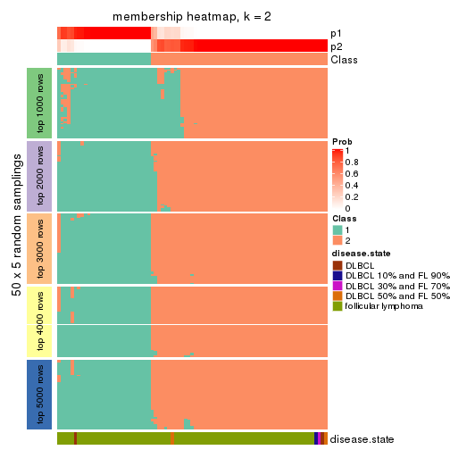
membership_heatmap(res, k = 3)
membership_heatmap(res, k = 4)
membership_heatmap(res, k = 5)
membership_heatmap(res, k = 6)
As soon as we have had the classes for columns, we can look for signatures which are significantly different between classes which can be candidate marks for certain classes. Following are the heatmaps for signatures.
Signature heatmaps where rows are scaled:
get_signatures(res, k = 2)
get_signatures(res, k = 3)
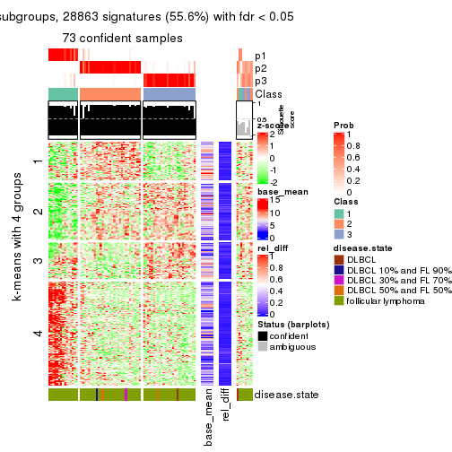
get_signatures(res, k = 4)
get_signatures(res, k = 5)
get_signatures(res, k = 6)
Signature heatmaps where rows are not scaled:
get_signatures(res, k = 2, scale_rows = FALSE)
get_signatures(res, k = 3, scale_rows = FALSE)

get_signatures(res, k = 4, scale_rows = FALSE)
get_signatures(res, k = 5, scale_rows = FALSE)
get_signatures(res, k = 6, scale_rows = FALSE)
Compare the overlap of signatures from different k:
compare_signatures(res)
get_signature() returns a data frame invisibly. TO get the list of signatures, the function
call should be assigned to a variable explicitly. In following code, if plot argument is set
to FALSE, no heatmap is plotted while only the differential analysis is performed.
# code only for demonstration
tb = get_signature(res, k = ..., plot = FALSE)
An example of the output of tb is:
#> which_row fdr mean_1 mean_2 scaled_mean_1 scaled_mean_2 km
#> 1 38 0.042760348 8.373488 9.131774 -0.5533452 0.5164555 1
#> 2 40 0.018707592 7.106213 8.469186 -0.6173731 0.5762149 1
#> 3 55 0.019134737 10.221463 11.207825 -0.6159697 0.5749050 1
#> 4 59 0.006059896 5.921854 7.869574 -0.6899429 0.6439467 1
#> 5 60 0.018055526 8.928898 10.211722 -0.6204761 0.5791110 1
#> 6 98 0.009384629 15.714769 14.887706 0.6635654 -0.6193277 2
...
The columns in tb are:
which_row: row indices corresponding to the input matrix.fdr: FDR for the differential test. mean_x: The mean value in group x.scaled_mean_x: The mean value in group x after rows are scaled.km: Row groups if k-means clustering is applied to rows.UMAP plot which shows how samples are separated.
dimension_reduction(res, k = 2, method = "UMAP")
dimension_reduction(res, k = 3, method = "UMAP")
dimension_reduction(res, k = 4, method = "UMAP")
dimension_reduction(res, k = 5, method = "UMAP")
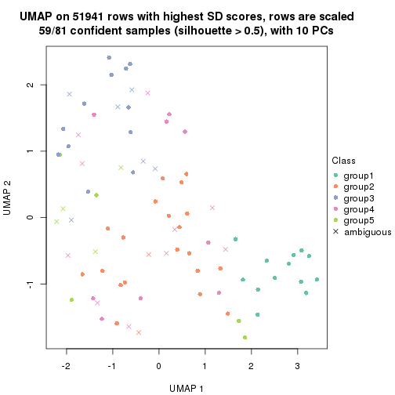
dimension_reduction(res, k = 6, method = "UMAP")
Following heatmap shows how subgroups are split when increasing k:
collect_classes(res)
Test correlation between subgroups and known annotations. If the known annotation is numeric, one-way ANOVA test is applied, and if the known annotation is discrete, chi-squared contingency table test is applied.
test_to_known_factors(res)
#> n disease.state(p) k
#> SD:NMF 79 0.6523 2
#> SD:NMF 73 0.7527 3
#> SD:NMF 70 0.4836 4
#> SD:NMF 59 0.4850 5
#> SD:NMF 59 0.0931 6
If matrix rows can be associated to genes, consider to use GO_Enrichment(res,
...) to perform function enrichment for the signature genes.
The object with results only for a single top-value method and a single partition method can be extracted as:
res = res_list["CV", "hclust"]
# you can also extract it by
# res = res_list["CV:hclust"]
A summary of res and all the functions that can be applied to it:
res
#> A 'ConsensusPartition' object with k = 2, 3, 4, 5, 6.
#> On a matrix with 51941 rows and 81 columns.
#> Top rows (1000, 2000, 3000, 4000, 5000) are extracted by 'CV' method.
#> Subgroups are detected by 'hclust' method.
#> Performed in total 1250 partitions by row resampling.
#> Best k for subgroups seems to be 2.
#>
#> Following methods can be applied to this 'ConsensusPartition' object:
#> [1] "cola_report" "collect_classes" "collect_plots"
#> [4] "collect_stats" "colnames" "compare_signatures"
#> [7] "consensus_heatmap" "dimension_reduction" "functional_enrichment"
#> [10] "get_anno_col" "get_anno" "get_classes"
#> [13] "get_consensus" "get_matrix" "get_membership"
#> [16] "get_param" "get_signatures" "get_stats"
#> [19] "is_best_k" "is_stable_k" "membership_heatmap"
#> [22] "ncol" "nrow" "plot_ecdf"
#> [25] "rownames" "select_partition_number" "show"
#> [28] "suggest_best_k" "test_to_known_factors"
collect_plots() function collects all the plots made from res for all k (number of partitions)
into one single page to provide an easy and fast comparison between different k.
collect_plots(res)

The plots are:
k and the heatmap of
predicted classes for each k.k.k.k.All the plots in panels can be made by individual functions and they are plotted later in this section.
select_partition_number() produces several plots showing different
statistics for choosing “optimized” k. There are following statistics:
k;k, the area increased is defined as \(A_k - A_{k-1}\).The detailed explanations of these statistics can be found in the cola vignette.
Generally speaking, lower PAC score, higher mean silhouette score or higher
concordance corresponds to better partition. Rand index and Jaccard index
measure how similar the current partition is compared to partition with k-1.
If they are too similar, we won't accept k is better than k-1.
select_partition_number(res)
The numeric values for all these statistics can be obtained by get_stats().
get_stats(res)
#> k 1-PAC mean_silhouette concordance area_increased Rand Jaccard
#> 2 2 0.923 0.932 0.968 0.2254 0.744 0.744
#> 3 3 0.279 0.504 0.720 1.2993 0.689 0.582
#> 4 4 0.328 0.429 0.629 0.2414 0.740 0.481
#> 5 5 0.382 0.461 0.656 0.0924 0.833 0.546
#> 6 6 0.417 0.356 0.626 0.0664 0.791 0.374
suggest_best_k() suggests the best \(k\) based on these statistics. The rules are as follows:
NA.suggest_best_k(res)
#> [1] 2
Following shows the table of the partitions (You need to click the show/hide
code output link to see it). The membership matrix (columns with name p*)
is inferred by
clue::cl_consensus()
function with the SE method. Basically the value in the membership matrix
represents the probability to belong to a certain group. The finall class
label for an item is determined with the group with highest probability it
belongs to.
In get_classes() function, the entropy is calculated from the membership
matrix and the silhouette score is calculated from the consensus matrix.
cbind(get_classes(res, k = 2), get_membership(res, k = 2))
#> class entropy silhouette p1 p2
#> GSM1301497 2 0.0376 0.988 0.004 0.996
#> GSM1301537 2 0.0376 0.988 0.004 0.996
#> GSM1301521 2 0.0000 0.991 0.000 1.000
#> GSM1301555 2 0.0000 0.991 0.000 1.000
#> GSM1301501 2 0.0000 0.991 0.000 1.000
#> GSM1301508 2 0.0000 0.991 0.000 1.000
#> GSM1301481 2 0.0000 0.991 0.000 1.000
#> GSM1301482 1 0.9795 0.471 0.584 0.416
#> GSM1301483 1 0.9988 0.336 0.520 0.480
#> GSM1301484 2 0.0376 0.988 0.004 0.996
#> GSM1301485 2 0.0000 0.991 0.000 1.000
#> GSM1301486 2 0.0000 0.991 0.000 1.000
#> GSM1301487 2 0.0000 0.991 0.000 1.000
#> GSM1301488 1 0.9988 0.336 0.520 0.480
#> GSM1301489 2 0.0000 0.991 0.000 1.000
#> GSM1301490 2 0.0376 0.988 0.004 0.996
#> GSM1301491 2 0.0000 0.991 0.000 1.000
#> GSM1301492 2 0.2236 0.950 0.036 0.964
#> GSM1301493 2 0.0000 0.991 0.000 1.000
#> GSM1301494 2 0.0000 0.991 0.000 1.000
#> GSM1301495 2 0.0000 0.991 0.000 1.000
#> GSM1301496 2 0.0000 0.991 0.000 1.000
#> GSM1301498 2 0.0000 0.991 0.000 1.000
#> GSM1301499 2 0.0000 0.991 0.000 1.000
#> GSM1301500 1 0.0000 0.805 1.000 0.000
#> GSM1301502 2 0.0000 0.991 0.000 1.000
#> GSM1301503 2 0.0000 0.991 0.000 1.000
#> GSM1301504 2 0.0000 0.991 0.000 1.000
#> GSM1301505 2 0.0000 0.991 0.000 1.000
#> GSM1301506 2 0.0000 0.991 0.000 1.000
#> GSM1301507 2 0.0000 0.991 0.000 1.000
#> GSM1301509 1 0.6623 0.752 0.828 0.172
#> GSM1301510 1 0.1414 0.806 0.980 0.020
#> GSM1301511 2 0.0000 0.991 0.000 1.000
#> GSM1301512 2 0.0000 0.991 0.000 1.000
#> GSM1301513 2 0.0000 0.991 0.000 1.000
#> GSM1301514 2 0.0000 0.991 0.000 1.000
#> GSM1301515 2 0.0000 0.991 0.000 1.000
#> GSM1301516 2 0.0000 0.991 0.000 1.000
#> GSM1301517 2 0.0000 0.991 0.000 1.000
#> GSM1301518 2 0.9491 0.190 0.368 0.632
#> GSM1301519 2 0.0376 0.988 0.004 0.996
#> GSM1301520 2 0.0000 0.991 0.000 1.000
#> GSM1301522 2 0.0376 0.988 0.004 0.996
#> GSM1301523 1 0.0000 0.805 1.000 0.000
#> GSM1301524 2 0.0376 0.988 0.004 0.996
#> GSM1301525 2 0.0000 0.991 0.000 1.000
#> GSM1301526 2 0.0672 0.983 0.008 0.992
#> GSM1301527 2 0.0000 0.991 0.000 1.000
#> GSM1301528 2 0.0376 0.988 0.004 0.996
#> GSM1301529 1 0.5059 0.781 0.888 0.112
#> GSM1301530 2 0.0376 0.988 0.004 0.996
#> GSM1301531 2 0.0000 0.991 0.000 1.000
#> GSM1301532 2 0.0000 0.991 0.000 1.000
#> GSM1301533 2 0.0000 0.991 0.000 1.000
#> GSM1301534 2 0.0000 0.991 0.000 1.000
#> GSM1301535 2 0.0000 0.991 0.000 1.000
#> GSM1301536 2 0.0000 0.991 0.000 1.000
#> GSM1301538 2 0.0000 0.991 0.000 1.000
#> GSM1301539 2 0.0376 0.988 0.004 0.996
#> GSM1301540 2 0.0000 0.991 0.000 1.000
#> GSM1301541 2 0.0000 0.991 0.000 1.000
#> GSM1301542 1 0.0000 0.805 1.000 0.000
#> GSM1301543 2 0.0000 0.991 0.000 1.000
#> GSM1301544 2 0.0000 0.991 0.000 1.000
#> GSM1301545 1 0.0672 0.806 0.992 0.008
#> GSM1301546 2 0.0000 0.991 0.000 1.000
#> GSM1301547 2 0.0000 0.991 0.000 1.000
#> GSM1301548 2 0.0000 0.991 0.000 1.000
#> GSM1301549 2 0.0000 0.991 0.000 1.000
#> GSM1301550 1 0.9754 0.499 0.592 0.408
#> GSM1301551 2 0.0000 0.991 0.000 1.000
#> GSM1301552 2 0.2236 0.950 0.036 0.964
#> GSM1301553 1 0.0000 0.805 1.000 0.000
#> GSM1301554 2 0.0000 0.991 0.000 1.000
#> GSM1301556 2 0.0000 0.991 0.000 1.000
#> GSM1301557 2 0.0376 0.988 0.004 0.996
#> GSM1301558 2 0.0000 0.991 0.000 1.000
#> GSM1301559 2 0.0376 0.988 0.004 0.996
#> GSM1301560 2 0.0000 0.991 0.000 1.000
#> GSM1301561 2 0.0000 0.991 0.000 1.000
cbind(get_classes(res, k = 3), get_membership(res, k = 3))
#> class entropy silhouette p1 p2 p3
#> GSM1301497 3 0.3038 0.520504 0.000 0.104 0.896
#> GSM1301537 2 0.5845 0.427988 0.004 0.688 0.308
#> GSM1301521 2 0.6180 0.193068 0.000 0.584 0.416
#> GSM1301555 2 0.1529 0.626836 0.000 0.960 0.040
#> GSM1301501 2 0.5835 0.470771 0.000 0.660 0.340
#> GSM1301508 2 0.1411 0.623748 0.000 0.964 0.036
#> GSM1301481 2 0.5650 0.318861 0.000 0.688 0.312
#> GSM1301482 1 0.8666 0.342999 0.584 0.264 0.152
#> GSM1301483 1 0.7278 0.560467 0.516 0.028 0.456
#> GSM1301484 3 0.5621 0.620420 0.000 0.308 0.692
#> GSM1301485 3 0.5465 0.675258 0.000 0.288 0.712
#> GSM1301486 3 0.5465 0.675258 0.000 0.288 0.712
#> GSM1301487 3 0.5327 0.672013 0.000 0.272 0.728
#> GSM1301488 1 0.7278 0.560467 0.516 0.028 0.456
#> GSM1301489 2 0.0892 0.630477 0.000 0.980 0.020
#> GSM1301490 3 0.5560 0.646506 0.000 0.300 0.700
#> GSM1301491 2 0.5650 0.485563 0.000 0.688 0.312
#> GSM1301492 3 0.7360 0.243949 0.032 0.440 0.528
#> GSM1301493 3 0.6305 0.220784 0.000 0.484 0.516
#> GSM1301494 3 0.5706 0.606227 0.000 0.320 0.680
#> GSM1301495 3 0.6225 0.390866 0.000 0.432 0.568
#> GSM1301496 2 0.5988 0.396459 0.000 0.632 0.368
#> GSM1301498 2 0.4235 0.577090 0.000 0.824 0.176
#> GSM1301499 3 0.5465 0.675258 0.000 0.288 0.712
#> GSM1301500 1 0.0000 0.824180 1.000 0.000 0.000
#> GSM1301502 2 0.6008 0.334444 0.000 0.628 0.372
#> GSM1301503 2 0.0892 0.623317 0.000 0.980 0.020
#> GSM1301504 2 0.2537 0.615147 0.000 0.920 0.080
#> GSM1301505 3 0.5706 0.606227 0.000 0.320 0.680
#> GSM1301506 2 0.0892 0.623317 0.000 0.980 0.020
#> GSM1301507 2 0.1289 0.625866 0.000 0.968 0.032
#> GSM1301509 1 0.4663 0.780338 0.828 0.016 0.156
#> GSM1301510 1 0.1031 0.824055 0.976 0.000 0.024
#> GSM1301511 2 0.5835 0.459679 0.000 0.660 0.340
#> GSM1301512 2 0.5882 0.462018 0.000 0.652 0.348
#> GSM1301513 3 0.5431 0.675736 0.000 0.284 0.716
#> GSM1301514 2 0.5905 0.442724 0.000 0.648 0.352
#> GSM1301515 2 0.0747 0.621863 0.000 0.984 0.016
#> GSM1301516 2 0.6192 0.220000 0.000 0.580 0.420
#> GSM1301517 2 0.5905 0.442724 0.000 0.648 0.352
#> GSM1301518 3 0.8547 -0.193418 0.364 0.104 0.532
#> GSM1301519 2 0.6244 0.179974 0.000 0.560 0.440
#> GSM1301520 2 0.5835 0.470771 0.000 0.660 0.340
#> GSM1301522 3 0.5560 0.646506 0.000 0.300 0.700
#> GSM1301523 1 0.0000 0.824180 1.000 0.000 0.000
#> GSM1301524 2 0.6140 0.300729 0.000 0.596 0.404
#> GSM1301525 2 0.2356 0.617518 0.000 0.928 0.072
#> GSM1301526 2 0.6275 0.408037 0.008 0.644 0.348
#> GSM1301527 2 0.0747 0.621863 0.000 0.984 0.016
#> GSM1301528 2 0.6489 -0.007005 0.004 0.540 0.456
#> GSM1301529 1 0.3802 0.791968 0.888 0.032 0.080
#> GSM1301530 2 0.4702 0.521386 0.000 0.788 0.212
#> GSM1301531 2 0.5650 0.318861 0.000 0.688 0.312
#> GSM1301532 2 0.0892 0.623317 0.000 0.980 0.020
#> GSM1301533 2 0.4605 0.571350 0.000 0.796 0.204
#> GSM1301534 2 0.0747 0.621863 0.000 0.984 0.016
#> GSM1301535 3 0.6225 0.390866 0.000 0.432 0.568
#> GSM1301536 3 0.5760 0.601385 0.000 0.328 0.672
#> GSM1301538 2 0.1529 0.626836 0.000 0.960 0.040
#> GSM1301539 2 0.6489 -0.007005 0.004 0.540 0.456
#> GSM1301540 3 0.6215 0.329085 0.000 0.428 0.572
#> GSM1301541 2 0.0892 0.623317 0.000 0.980 0.020
#> GSM1301542 1 0.0000 0.824180 1.000 0.000 0.000
#> GSM1301543 2 0.1289 0.624699 0.000 0.968 0.032
#> GSM1301544 2 0.5835 0.459679 0.000 0.660 0.340
#> GSM1301545 1 0.0475 0.824852 0.992 0.004 0.004
#> GSM1301546 2 0.5882 0.462018 0.000 0.652 0.348
#> GSM1301547 2 0.1163 0.623495 0.000 0.972 0.028
#> GSM1301548 2 0.0747 0.621863 0.000 0.984 0.016
#> GSM1301549 2 0.6111 0.035441 0.000 0.604 0.396
#> GSM1301550 1 0.8325 0.529386 0.588 0.108 0.304
#> GSM1301551 2 0.6180 0.193068 0.000 0.584 0.416
#> GSM1301552 3 0.7372 0.243187 0.032 0.448 0.520
#> GSM1301553 1 0.0000 0.824180 1.000 0.000 0.000
#> GSM1301554 2 0.0424 0.627092 0.000 0.992 0.008
#> GSM1301556 2 0.5650 0.485563 0.000 0.688 0.312
#> GSM1301557 3 0.4121 0.495096 0.000 0.168 0.832
#> GSM1301558 2 0.5988 0.396459 0.000 0.632 0.368
#> GSM1301559 2 0.6305 0.000515 0.000 0.516 0.484
#> GSM1301560 2 0.0892 0.623317 0.000 0.980 0.020
#> GSM1301561 3 0.5431 0.675736 0.000 0.284 0.716
cbind(get_classes(res, k = 4), get_membership(res, k = 4))
#> class entropy silhouette p1 p2 p3 p4
#> GSM1301497 3 0.7748 0.4299 0.000 0.260 0.436 0.304
#> GSM1301537 2 0.6380 0.2886 0.004 0.476 0.052 0.468
#> GSM1301521 4 0.5620 0.4883 0.000 0.084 0.208 0.708
#> GSM1301555 2 0.5497 0.8393 0.000 0.524 0.016 0.460
#> GSM1301501 4 0.1890 0.4794 0.000 0.056 0.008 0.936
#> GSM1301508 2 0.5406 0.8307 0.000 0.508 0.012 0.480
#> GSM1301481 4 0.7830 0.1225 0.000 0.324 0.272 0.404
#> GSM1301482 1 0.8918 0.3303 0.500 0.144 0.152 0.204
#> GSM1301483 3 0.8462 -0.3400 0.360 0.140 0.440 0.060
#> GSM1301484 4 0.6491 -0.2738 0.000 0.076 0.396 0.528
#> GSM1301485 3 0.5716 0.4503 0.000 0.028 0.552 0.420
#> GSM1301486 3 0.5716 0.4503 0.000 0.028 0.552 0.420
#> GSM1301487 3 0.6465 0.4273 0.000 0.072 0.516 0.412
#> GSM1301488 3 0.8462 -0.3400 0.360 0.140 0.440 0.060
#> GSM1301489 4 0.5353 -0.6307 0.000 0.432 0.012 0.556
#> GSM1301490 3 0.6919 0.4760 0.000 0.112 0.500 0.388
#> GSM1301491 4 0.1022 0.4943 0.000 0.032 0.000 0.968
#> GSM1301492 4 0.6879 0.3044 0.012 0.140 0.220 0.628
#> GSM1301493 4 0.6457 0.2127 0.000 0.100 0.296 0.604
#> GSM1301494 3 0.6428 0.5323 0.000 0.112 0.624 0.264
#> GSM1301495 4 0.6792 0.0700 0.000 0.112 0.340 0.548
#> GSM1301496 4 0.3885 0.5371 0.000 0.092 0.064 0.844
#> GSM1301498 4 0.6824 -0.1531 0.000 0.336 0.116 0.548
#> GSM1301499 3 0.5708 0.4546 0.000 0.028 0.556 0.416
#> GSM1301500 1 0.0000 0.8379 1.000 0.000 0.000 0.000
#> GSM1301502 4 0.6284 0.5012 0.000 0.172 0.164 0.664
#> GSM1301503 2 0.4972 0.8612 0.000 0.544 0.000 0.456
#> GSM1301504 4 0.6235 -0.4787 0.000 0.420 0.056 0.524
#> GSM1301505 3 0.6428 0.5323 0.000 0.112 0.624 0.264
#> GSM1301506 2 0.4977 0.8604 0.000 0.540 0.000 0.460
#> GSM1301507 2 0.5774 0.8282 0.000 0.508 0.028 0.464
#> GSM1301509 1 0.5763 0.7277 0.736 0.088 0.160 0.016
#> GSM1301510 1 0.3164 0.8105 0.884 0.052 0.064 0.000
#> GSM1301511 4 0.1807 0.4970 0.000 0.052 0.008 0.940
#> GSM1301512 4 0.2048 0.4810 0.000 0.064 0.008 0.928
#> GSM1301513 3 0.5628 0.4498 0.000 0.024 0.556 0.420
#> GSM1301514 4 0.2198 0.4895 0.000 0.072 0.008 0.920
#> GSM1301515 2 0.4977 0.8279 0.000 0.540 0.000 0.460
#> GSM1301516 4 0.6231 0.5159 0.000 0.184 0.148 0.668
#> GSM1301517 4 0.2198 0.4895 0.000 0.072 0.008 0.920
#> GSM1301518 3 0.7984 0.1274 0.228 0.080 0.576 0.116
#> GSM1301519 4 0.3732 0.5175 0.000 0.056 0.092 0.852
#> GSM1301520 4 0.1890 0.4794 0.000 0.056 0.008 0.936
#> GSM1301522 3 0.6919 0.4760 0.000 0.112 0.500 0.388
#> GSM1301523 1 0.0000 0.8379 1.000 0.000 0.000 0.000
#> GSM1301524 4 0.5913 0.5124 0.000 0.180 0.124 0.696
#> GSM1301525 4 0.6393 -0.5430 0.000 0.456 0.064 0.480
#> GSM1301526 4 0.5953 0.4398 0.004 0.212 0.092 0.692
#> GSM1301527 2 0.4977 0.8279 0.000 0.540 0.000 0.460
#> GSM1301528 4 0.6945 0.3667 0.004 0.136 0.276 0.584
#> GSM1301529 1 0.3424 0.7706 0.884 0.016 0.048 0.052
#> GSM1301530 4 0.6813 -0.0442 0.000 0.380 0.104 0.516
#> GSM1301531 4 0.7830 0.1225 0.000 0.324 0.272 0.404
#> GSM1301532 2 0.4981 0.8606 0.000 0.536 0.000 0.464
#> GSM1301533 4 0.6153 -0.2246 0.000 0.328 0.068 0.604
#> GSM1301534 2 0.4977 0.8279 0.000 0.540 0.000 0.460
#> GSM1301535 4 0.6792 0.0700 0.000 0.112 0.340 0.548
#> GSM1301536 3 0.6499 0.5250 0.000 0.112 0.612 0.276
#> GSM1301538 2 0.5497 0.8393 0.000 0.524 0.016 0.460
#> GSM1301539 4 0.6945 0.3667 0.004 0.136 0.276 0.584
#> GSM1301540 3 0.7827 0.3433 0.000 0.316 0.408 0.276
#> GSM1301541 2 0.4972 0.8612 0.000 0.544 0.000 0.456
#> GSM1301542 1 0.0000 0.8379 1.000 0.000 0.000 0.000
#> GSM1301543 4 0.5399 -0.6277 0.000 0.468 0.012 0.520
#> GSM1301544 4 0.1807 0.4970 0.000 0.052 0.008 0.940
#> GSM1301545 1 0.0657 0.8366 0.984 0.004 0.012 0.000
#> GSM1301546 4 0.2048 0.4810 0.000 0.064 0.008 0.928
#> GSM1301547 2 0.5165 0.7237 0.000 0.512 0.004 0.484
#> GSM1301548 2 0.4977 0.8279 0.000 0.540 0.000 0.460
#> GSM1301549 4 0.7806 0.1113 0.000 0.264 0.324 0.412
#> GSM1301550 1 0.8759 0.3710 0.512 0.112 0.208 0.168
#> GSM1301551 4 0.5620 0.4883 0.000 0.084 0.208 0.708
#> GSM1301552 4 0.6890 0.2934 0.012 0.128 0.240 0.620
#> GSM1301553 1 0.0000 0.8379 1.000 0.000 0.000 0.000
#> GSM1301554 2 0.5165 0.8521 0.000 0.512 0.004 0.484
#> GSM1301556 4 0.1022 0.4943 0.000 0.032 0.000 0.968
#> GSM1301557 3 0.7155 0.3746 0.000 0.300 0.536 0.164
#> GSM1301558 4 0.3885 0.5371 0.000 0.092 0.064 0.844
#> GSM1301559 4 0.5719 0.4570 0.000 0.112 0.176 0.712
#> GSM1301560 2 0.4981 0.8606 0.000 0.536 0.000 0.464
#> GSM1301561 3 0.5628 0.4498 0.000 0.024 0.556 0.420
cbind(get_classes(res, k = 5), get_membership(res, k = 5))
#> class entropy silhouette p1 p2 p3 p4 p5
#> GSM1301497 4 0.6637 -0.27511 0.000 0.000 0.252 0.448 0.300
#> GSM1301537 2 0.6514 0.34267 0.000 0.552 0.044 0.312 0.092
#> GSM1301521 4 0.5500 0.53412 0.000 0.172 0.144 0.676 0.008
#> GSM1301555 2 0.3807 0.68345 0.000 0.776 0.012 0.204 0.008
#> GSM1301501 4 0.4288 0.45648 0.000 0.384 0.004 0.612 0.000
#> GSM1301508 2 0.3381 0.68356 0.000 0.808 0.000 0.176 0.016
#> GSM1301481 2 0.6595 0.02864 0.000 0.424 0.408 0.160 0.008
#> GSM1301482 1 0.8469 -0.08314 0.372 0.076 0.028 0.236 0.288
#> GSM1301483 5 0.2474 0.60759 0.084 0.000 0.012 0.008 0.896
#> GSM1301484 4 0.5622 -0.15538 0.000 0.044 0.368 0.568 0.020
#> GSM1301485 3 0.5267 0.47670 0.000 0.000 0.524 0.428 0.048
#> GSM1301486 3 0.5267 0.47670 0.000 0.000 0.524 0.428 0.048
#> GSM1301487 3 0.5816 0.43293 0.000 0.000 0.468 0.440 0.092
#> GSM1301488 5 0.2474 0.60759 0.084 0.000 0.012 0.008 0.896
#> GSM1301489 2 0.3916 0.61225 0.000 0.732 0.012 0.256 0.000
#> GSM1301490 3 0.4975 0.45725 0.000 0.012 0.584 0.388 0.016
#> GSM1301491 4 0.4166 0.48286 0.000 0.348 0.004 0.648 0.000
#> GSM1301492 4 0.5368 0.45689 0.000 0.076 0.080 0.736 0.108
#> GSM1301493 4 0.6627 0.28901 0.000 0.112 0.248 0.584 0.056
#> GSM1301494 3 0.2561 0.43361 0.000 0.000 0.856 0.144 0.000
#> GSM1301495 4 0.6196 0.18343 0.000 0.064 0.276 0.604 0.056
#> GSM1301496 4 0.4466 0.54502 0.000 0.256 0.024 0.712 0.008
#> GSM1301498 2 0.5725 0.36976 0.000 0.620 0.156 0.224 0.000
#> GSM1301499 3 0.5271 0.47060 0.000 0.000 0.520 0.432 0.048
#> GSM1301500 1 0.0000 0.74061 1.000 0.000 0.000 0.000 0.000
#> GSM1301502 4 0.5361 0.50303 0.000 0.264 0.084 0.648 0.004
#> GSM1301503 2 0.3282 0.69865 0.000 0.804 0.000 0.188 0.008
#> GSM1301504 2 0.4564 0.52868 0.000 0.600 0.008 0.388 0.004
#> GSM1301505 3 0.2561 0.43361 0.000 0.000 0.856 0.144 0.000
#> GSM1301506 2 0.3318 0.69704 0.000 0.800 0.000 0.192 0.008
#> GSM1301507 2 0.3582 0.68400 0.000 0.768 0.000 0.224 0.008
#> GSM1301509 1 0.4912 0.17875 0.552 0.004 0.008 0.008 0.428
#> GSM1301510 1 0.3983 0.41352 0.660 0.000 0.000 0.000 0.340
#> GSM1301511 4 0.4434 0.48269 0.000 0.348 0.004 0.640 0.008
#> GSM1301512 4 0.4553 0.45643 0.000 0.384 0.004 0.604 0.008
#> GSM1301513 3 0.5201 0.47972 0.000 0.000 0.532 0.424 0.044
#> GSM1301514 4 0.4618 0.47420 0.000 0.344 0.004 0.636 0.016
#> GSM1301515 2 0.1671 0.68901 0.000 0.924 0.000 0.076 0.000
#> GSM1301516 4 0.5299 0.54016 0.000 0.232 0.064 0.684 0.020
#> GSM1301517 4 0.4618 0.47420 0.000 0.344 0.004 0.636 0.016
#> GSM1301518 5 0.4977 0.43651 0.008 0.000 0.256 0.052 0.684
#> GSM1301519 4 0.4263 0.58252 0.000 0.200 0.024 0.760 0.016
#> GSM1301520 4 0.4288 0.45648 0.000 0.384 0.004 0.612 0.000
#> GSM1301522 3 0.4975 0.45725 0.000 0.012 0.584 0.388 0.016
#> GSM1301523 1 0.0000 0.74061 1.000 0.000 0.000 0.000 0.000
#> GSM1301524 4 0.4727 0.50099 0.000 0.252 0.028 0.704 0.016
#> GSM1301525 2 0.4906 0.57937 0.000 0.664 0.036 0.292 0.008
#> GSM1301526 4 0.5129 0.42614 0.000 0.328 0.024 0.628 0.020
#> GSM1301527 2 0.1671 0.68901 0.000 0.924 0.000 0.076 0.000
#> GSM1301528 4 0.6431 0.31673 0.000 0.164 0.240 0.576 0.020
#> GSM1301529 1 0.3453 0.62904 0.868 0.016 0.036 0.060 0.020
#> GSM1301530 2 0.5869 0.19293 0.000 0.468 0.052 0.460 0.020
#> GSM1301531 2 0.6595 0.02864 0.000 0.424 0.408 0.160 0.008
#> GSM1301532 2 0.3353 0.69783 0.000 0.796 0.000 0.196 0.008
#> GSM1301533 2 0.4641 0.22857 0.000 0.532 0.012 0.456 0.000
#> GSM1301534 2 0.1671 0.68901 0.000 0.924 0.000 0.076 0.000
#> GSM1301535 4 0.6196 0.18343 0.000 0.064 0.276 0.604 0.056
#> GSM1301536 3 0.2886 0.43497 0.000 0.008 0.844 0.148 0.000
#> GSM1301538 2 0.3807 0.68345 0.000 0.776 0.012 0.204 0.008
#> GSM1301539 4 0.6431 0.31673 0.000 0.164 0.240 0.576 0.020
#> GSM1301540 3 0.6745 0.20989 0.000 0.140 0.608 0.168 0.084
#> GSM1301541 2 0.3282 0.69865 0.000 0.804 0.000 0.188 0.008
#> GSM1301542 1 0.0162 0.73980 0.996 0.000 0.004 0.000 0.000
#> GSM1301543 2 0.3328 0.58215 0.000 0.812 0.008 0.176 0.004
#> GSM1301544 4 0.4434 0.48269 0.000 0.348 0.004 0.640 0.008
#> GSM1301545 1 0.0794 0.73161 0.972 0.000 0.000 0.000 0.028
#> GSM1301546 4 0.4553 0.45643 0.000 0.384 0.004 0.604 0.008
#> GSM1301547 2 0.2074 0.64181 0.000 0.896 0.000 0.104 0.000
#> GSM1301548 2 0.1671 0.68901 0.000 0.924 0.000 0.076 0.000
#> GSM1301549 3 0.6700 0.00719 0.000 0.332 0.416 0.252 0.000
#> GSM1301550 5 0.7395 0.09284 0.356 0.004 0.028 0.220 0.392
#> GSM1301551 4 0.5500 0.53412 0.000 0.172 0.144 0.676 0.008
#> GSM1301552 4 0.5523 0.44213 0.000 0.072 0.100 0.724 0.104
#> GSM1301553 1 0.0000 0.74061 1.000 0.000 0.000 0.000 0.000
#> GSM1301554 2 0.2997 0.70386 0.000 0.840 0.012 0.148 0.000
#> GSM1301556 4 0.4166 0.48286 0.000 0.348 0.004 0.648 0.000
#> GSM1301557 3 0.6398 -0.05012 0.000 0.000 0.500 0.200 0.300
#> GSM1301558 4 0.4466 0.54502 0.000 0.256 0.024 0.712 0.008
#> GSM1301559 4 0.4547 0.55369 0.000 0.132 0.072 0.776 0.020
#> GSM1301560 2 0.3353 0.69783 0.000 0.796 0.000 0.196 0.008
#> GSM1301561 3 0.5201 0.47972 0.000 0.000 0.532 0.424 0.044
cbind(get_classes(res, k = 6), get_membership(res, k = 6))
#> class entropy silhouette p1 p2 p3 p4 p5 p6
#> GSM1301497 5 0.7510 0.0134 0.000 0.000 0.148 0.284 0.336 0.232
#> GSM1301537 2 0.5283 0.3414 0.000 0.620 0.004 0.196 0.180 0.000
#> GSM1301521 3 0.6170 0.1704 0.000 0.328 0.460 0.200 0.008 0.004
#> GSM1301555 2 0.1149 0.6065 0.000 0.960 0.008 0.024 0.008 0.000
#> GSM1301501 4 0.5027 0.5565 0.000 0.272 0.100 0.624 0.004 0.000
#> GSM1301508 2 0.2872 0.5660 0.000 0.836 0.000 0.140 0.024 0.000
#> GSM1301481 5 0.7250 0.3967 0.000 0.112 0.196 0.344 0.348 0.000
#> GSM1301482 1 0.7894 -0.0488 0.372 0.240 0.064 0.036 0.012 0.276
#> GSM1301483 6 0.0858 0.6142 0.000 0.000 0.028 0.004 0.000 0.968
#> GSM1301484 3 0.6476 0.2959 0.000 0.068 0.532 0.288 0.100 0.012
#> GSM1301485 3 0.0291 0.4371 0.000 0.000 0.992 0.004 0.004 0.000
#> GSM1301486 3 0.0291 0.4371 0.000 0.000 0.992 0.004 0.004 0.000
#> GSM1301487 3 0.1588 0.4214 0.000 0.000 0.924 0.004 0.072 0.000
#> GSM1301488 6 0.0858 0.6142 0.000 0.000 0.028 0.004 0.000 0.968
#> GSM1301489 4 0.5206 -0.0822 0.000 0.436 0.012 0.492 0.060 0.000
#> GSM1301490 3 0.6584 -0.2380 0.000 0.008 0.416 0.252 0.308 0.016
#> GSM1301491 4 0.5279 0.5342 0.000 0.336 0.116 0.548 0.000 0.000
#> GSM1301492 4 0.7865 0.0147 0.000 0.256 0.300 0.316 0.032 0.096
#> GSM1301493 3 0.6410 0.4134 0.000 0.184 0.556 0.180 0.080 0.000
#> GSM1301494 5 0.4872 0.4981 0.000 0.000 0.388 0.064 0.548 0.000
#> GSM1301495 3 0.6140 0.4756 0.000 0.152 0.604 0.144 0.100 0.000
#> GSM1301496 4 0.6129 0.3758 0.000 0.396 0.176 0.416 0.004 0.008
#> GSM1301498 4 0.4941 -0.0527 0.000 0.124 0.000 0.640 0.236 0.000
#> GSM1301499 3 0.0653 0.4346 0.000 0.000 0.980 0.004 0.012 0.004
#> GSM1301500 1 0.0000 0.7319 1.000 0.000 0.000 0.000 0.000 0.000
#> GSM1301502 2 0.6713 -0.1712 0.000 0.436 0.280 0.248 0.028 0.008
#> GSM1301503 2 0.0146 0.6162 0.000 0.996 0.000 0.004 0.000 0.000
#> GSM1301504 2 0.5796 0.0252 0.000 0.480 0.048 0.420 0.044 0.008
#> GSM1301505 5 0.4864 0.5011 0.000 0.000 0.384 0.064 0.552 0.000
#> GSM1301506 2 0.0363 0.6153 0.000 0.988 0.000 0.012 0.000 0.000
#> GSM1301507 2 0.1950 0.6035 0.000 0.924 0.020 0.044 0.008 0.004
#> GSM1301509 1 0.4973 0.2036 0.540 0.004 0.032 0.008 0.004 0.412
#> GSM1301510 1 0.4811 0.2119 0.508 0.000 0.000 0.008 0.036 0.448
#> GSM1301511 4 0.5393 0.5594 0.000 0.292 0.100 0.592 0.016 0.000
#> GSM1301512 4 0.5229 0.5550 0.000 0.264 0.100 0.624 0.004 0.008
#> GSM1301513 3 0.0146 0.4291 0.000 0.000 0.996 0.000 0.004 0.000
#> GSM1301514 4 0.5613 0.5576 0.000 0.288 0.100 0.588 0.016 0.008
#> GSM1301515 2 0.3445 0.5227 0.000 0.744 0.000 0.244 0.012 0.000
#> GSM1301516 2 0.7115 -0.2436 0.000 0.384 0.248 0.308 0.048 0.012
#> GSM1301517 4 0.5613 0.5576 0.000 0.288 0.100 0.588 0.016 0.008
#> GSM1301518 6 0.3789 0.3843 0.000 0.000 0.332 0.000 0.008 0.660
#> GSM1301519 4 0.6507 0.4532 0.000 0.236 0.200 0.520 0.032 0.012
#> GSM1301520 4 0.5027 0.5565 0.000 0.272 0.100 0.624 0.004 0.000
#> GSM1301522 3 0.6584 -0.2380 0.000 0.008 0.416 0.252 0.308 0.016
#> GSM1301523 1 0.0000 0.7319 1.000 0.000 0.000 0.000 0.000 0.000
#> GSM1301524 2 0.6598 -0.2303 0.000 0.436 0.200 0.332 0.016 0.016
#> GSM1301525 4 0.6139 -0.0131 0.000 0.360 0.032 0.488 0.116 0.004
#> GSM1301526 2 0.6667 -0.1656 0.000 0.468 0.180 0.308 0.024 0.020
#> GSM1301527 2 0.3445 0.5227 0.000 0.744 0.000 0.244 0.012 0.000
#> GSM1301528 3 0.4799 0.4328 0.000 0.320 0.620 0.048 0.012 0.000
#> GSM1301529 1 0.3064 0.6346 0.860 0.016 0.092 0.004 0.004 0.024
#> GSM1301530 2 0.6472 0.0642 0.000 0.532 0.160 0.256 0.040 0.012
#> GSM1301531 5 0.7250 0.3967 0.000 0.112 0.196 0.344 0.348 0.000
#> GSM1301532 2 0.0146 0.6162 0.000 0.996 0.000 0.004 0.000 0.000
#> GSM1301533 2 0.4545 0.3206 0.000 0.716 0.092 0.184 0.004 0.004
#> GSM1301534 2 0.3445 0.5227 0.000 0.744 0.000 0.244 0.012 0.000
#> GSM1301535 3 0.6140 0.4756 0.000 0.152 0.604 0.144 0.100 0.000
#> GSM1301536 5 0.5119 0.5037 0.000 0.008 0.372 0.068 0.552 0.000
#> GSM1301538 2 0.1149 0.6065 0.000 0.960 0.008 0.024 0.008 0.000
#> GSM1301539 3 0.4799 0.4328 0.000 0.320 0.620 0.048 0.012 0.000
#> GSM1301540 5 0.4756 0.4065 0.000 0.004 0.096 0.192 0.700 0.008
#> GSM1301541 2 0.0146 0.6162 0.000 0.996 0.000 0.004 0.000 0.000
#> GSM1301542 1 0.0146 0.7311 0.996 0.000 0.000 0.000 0.004 0.000
#> GSM1301543 4 0.4834 0.0396 0.000 0.260 0.000 0.640 0.100 0.000
#> GSM1301544 4 0.5393 0.5594 0.000 0.292 0.100 0.592 0.016 0.000
#> GSM1301545 1 0.0865 0.7206 0.964 0.000 0.000 0.000 0.000 0.036
#> GSM1301546 4 0.5229 0.5550 0.000 0.264 0.100 0.624 0.004 0.008
#> GSM1301547 2 0.4879 0.2933 0.000 0.544 0.000 0.392 0.064 0.000
#> GSM1301548 2 0.3445 0.5227 0.000 0.744 0.000 0.244 0.012 0.000
#> GSM1301549 4 0.7236 -0.4581 0.000 0.104 0.220 0.380 0.296 0.000
#> GSM1301550 6 0.7546 0.0269 0.344 0.004 0.144 0.116 0.016 0.376
#> GSM1301551 3 0.6170 0.1704 0.000 0.328 0.460 0.200 0.008 0.004
#> GSM1301552 3 0.7804 0.0215 0.000 0.248 0.352 0.276 0.032 0.092
#> GSM1301553 1 0.0000 0.7319 1.000 0.000 0.000 0.000 0.000 0.000
#> GSM1301554 2 0.2711 0.5791 0.000 0.860 0.012 0.116 0.012 0.000
#> GSM1301556 4 0.5279 0.5342 0.000 0.336 0.116 0.548 0.000 0.000
#> GSM1301557 5 0.5113 0.1705 0.000 0.000 0.000 0.144 0.620 0.236
#> GSM1301558 4 0.6129 0.3758 0.000 0.396 0.176 0.416 0.004 0.008
#> GSM1301559 4 0.7166 0.1442 0.000 0.312 0.288 0.344 0.040 0.016
#> GSM1301560 2 0.0146 0.6162 0.000 0.996 0.000 0.004 0.000 0.000
#> GSM1301561 3 0.0146 0.4291 0.000 0.000 0.996 0.000 0.004 0.000
Heatmaps for the consensus matrix. It visualizes the probability of two samples to be in a same group.
consensus_heatmap(res, k = 2)
consensus_heatmap(res, k = 3)
consensus_heatmap(res, k = 4)

consensus_heatmap(res, k = 5)
consensus_heatmap(res, k = 6)
Heatmaps for the membership of samples in all partitions to see how consistent they are:
membership_heatmap(res, k = 2)
membership_heatmap(res, k = 3)
membership_heatmap(res, k = 4)
membership_heatmap(res, k = 5)

membership_heatmap(res, k = 6)
As soon as we have had the classes for columns, we can look for signatures which are significantly different between classes which can be candidate marks for certain classes. Following are the heatmaps for signatures.
Signature heatmaps where rows are scaled:
get_signatures(res, k = 2)
get_signatures(res, k = 3)
get_signatures(res, k = 4)
get_signatures(res, k = 5)
get_signatures(res, k = 6)
Signature heatmaps where rows are not scaled:
get_signatures(res, k = 2, scale_rows = FALSE)
get_signatures(res, k = 3, scale_rows = FALSE)

get_signatures(res, k = 4, scale_rows = FALSE)
get_signatures(res, k = 5, scale_rows = FALSE)
get_signatures(res, k = 6, scale_rows = FALSE)
Compare the overlap of signatures from different k:
compare_signatures(res)
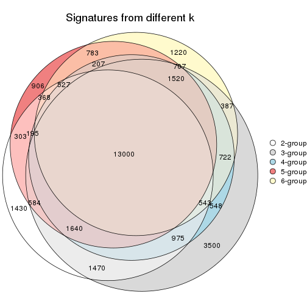
get_signature() returns a data frame invisibly. TO get the list of signatures, the function
call should be assigned to a variable explicitly. In following code, if plot argument is set
to FALSE, no heatmap is plotted while only the differential analysis is performed.
# code only for demonstration
tb = get_signature(res, k = ..., plot = FALSE)
An example of the output of tb is:
#> which_row fdr mean_1 mean_2 scaled_mean_1 scaled_mean_2 km
#> 1 38 0.042760348 8.373488 9.131774 -0.5533452 0.5164555 1
#> 2 40 0.018707592 7.106213 8.469186 -0.6173731 0.5762149 1
#> 3 55 0.019134737 10.221463 11.207825 -0.6159697 0.5749050 1
#> 4 59 0.006059896 5.921854 7.869574 -0.6899429 0.6439467 1
#> 5 60 0.018055526 8.928898 10.211722 -0.6204761 0.5791110 1
#> 6 98 0.009384629 15.714769 14.887706 0.6635654 -0.6193277 2
...
The columns in tb are:
which_row: row indices corresponding to the input matrix.fdr: FDR for the differential test. mean_x: The mean value in group x.scaled_mean_x: The mean value in group x after rows are scaled.km: Row groups if k-means clustering is applied to rows.UMAP plot which shows how samples are separated.
dimension_reduction(res, k = 2, method = "UMAP")
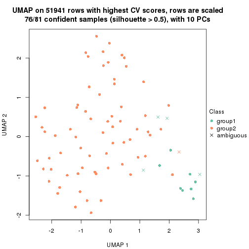
dimension_reduction(res, k = 3, method = "UMAP")
dimension_reduction(res, k = 4, method = "UMAP")
dimension_reduction(res, k = 5, method = "UMAP")
dimension_reduction(res, k = 6, method = "UMAP")
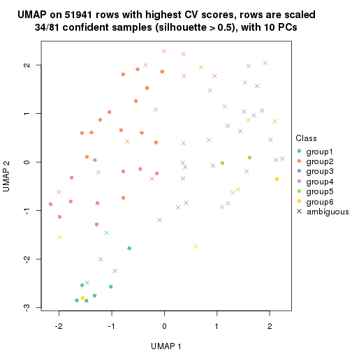
Following heatmap shows how subgroups are split when increasing k:
collect_classes(res)
Test correlation between subgroups and known annotations. If the known annotation is numeric, one-way ANOVA test is applied, and if the known annotation is discrete, chi-squared contingency table test is applied.
test_to_known_factors(res)
#> n disease.state(p) k
#> CV:hclust 76 0.943 2
#> CV:hclust 46 0.571 3
#> CV:hclust 32 0.878 4
#> CV:hclust 36 0.927 5
#> CV:hclust 34 0.944 6
If matrix rows can be associated to genes, consider to use GO_Enrichment(res,
...) to perform function enrichment for the signature genes.
The object with results only for a single top-value method and a single partition method can be extracted as:
res = res_list["CV", "kmeans"]
# you can also extract it by
# res = res_list["CV:kmeans"]
A summary of res and all the functions that can be applied to it:
res
#> A 'ConsensusPartition' object with k = 2, 3, 4, 5, 6.
#> On a matrix with 51941 rows and 81 columns.
#> Top rows (1000, 2000, 3000, 4000, 5000) are extracted by 'CV' method.
#> Subgroups are detected by 'kmeans' method.
#> Performed in total 1250 partitions by row resampling.
#> Best k for subgroups seems to be 3.
#>
#> Following methods can be applied to this 'ConsensusPartition' object:
#> [1] "cola_report" "collect_classes" "collect_plots"
#> [4] "collect_stats" "colnames" "compare_signatures"
#> [7] "consensus_heatmap" "dimension_reduction" "functional_enrichment"
#> [10] "get_anno_col" "get_anno" "get_classes"
#> [13] "get_consensus" "get_matrix" "get_membership"
#> [16] "get_param" "get_signatures" "get_stats"
#> [19] "is_best_k" "is_stable_k" "membership_heatmap"
#> [22] "ncol" "nrow" "plot_ecdf"
#> [25] "rownames" "select_partition_number" "show"
#> [28] "suggest_best_k" "test_to_known_factors"
collect_plots() function collects all the plots made from res for all k (number of partitions)
into one single page to provide an easy and fast comparison between different k.
collect_plots(res)
The plots are:
k and the heatmap of
predicted classes for each k.k.k.k.All the plots in panels can be made by individual functions and they are plotted later in this section.
select_partition_number() produces several plots showing different
statistics for choosing “optimized” k. There are following statistics:
k;k, the area increased is defined as \(A_k - A_{k-1}\).The detailed explanations of these statistics can be found in the cola vignette.
Generally speaking, lower PAC score, higher mean silhouette score or higher
concordance corresponds to better partition. Rand index and Jaccard index
measure how similar the current partition is compared to partition with k-1.
If they are too similar, we won't accept k is better than k-1.
select_partition_number(res)
The numeric values for all these statistics can be obtained by get_stats().
get_stats(res)
#> k 1-PAC mean_silhouette concordance area_increased Rand Jaccard
#> 2 2 0.419 0.589 0.761 0.3897 0.694 0.694
#> 3 3 0.848 0.896 0.951 0.6123 0.636 0.491
#> 4 4 0.591 0.639 0.801 0.1613 0.825 0.566
#> 5 5 0.570 0.490 0.694 0.0765 0.898 0.643
#> 6 6 0.590 0.434 0.675 0.0449 0.941 0.742
suggest_best_k() suggests the best \(k\) based on these statistics. The rules are as follows:
NA.suggest_best_k(res)
#> [1] 3
Following shows the table of the partitions (You need to click the show/hide
code output link to see it). The membership matrix (columns with name p*)
is inferred by
clue::cl_consensus()
function with the SE method. Basically the value in the membership matrix
represents the probability to belong to a certain group. The finall class
label for an item is determined with the group with highest probability it
belongs to.
In get_classes() function, the entropy is calculated from the membership
matrix and the silhouette score is calculated from the consensus matrix.
cbind(get_classes(res, k = 2), get_membership(res, k = 2))
#> class entropy silhouette p1 p2
#> GSM1301497 2 0.9983 0.645 0.476 0.524
#> GSM1301537 2 0.1184 0.546 0.016 0.984
#> GSM1301521 2 0.6712 0.589 0.176 0.824
#> GSM1301555 2 0.0938 0.560 0.012 0.988
#> GSM1301501 2 0.9710 0.655 0.400 0.600
#> GSM1301508 2 0.1184 0.541 0.016 0.984
#> GSM1301481 2 0.9954 0.653 0.460 0.540
#> GSM1301482 1 0.9833 0.724 0.576 0.424
#> GSM1301483 2 0.9686 0.644 0.396 0.604
#> GSM1301484 2 0.9970 0.650 0.468 0.532
#> GSM1301485 2 0.9988 0.644 0.480 0.520
#> GSM1301486 2 0.9988 0.644 0.480 0.520
#> GSM1301487 1 0.9815 -0.536 0.580 0.420
#> GSM1301488 1 0.8081 0.623 0.752 0.248
#> GSM1301489 2 0.5842 0.601 0.140 0.860
#> GSM1301490 2 0.9954 0.653 0.460 0.540
#> GSM1301491 2 0.0000 0.559 0.000 1.000
#> GSM1301492 2 0.9977 0.648 0.472 0.528
#> GSM1301493 2 0.9983 0.646 0.476 0.524
#> GSM1301494 2 0.9988 0.644 0.480 0.520
#> GSM1301495 2 0.9988 0.644 0.480 0.520
#> GSM1301496 2 0.0376 0.555 0.004 0.996
#> GSM1301498 2 0.9896 0.656 0.440 0.560
#> GSM1301499 2 0.9988 0.644 0.480 0.520
#> GSM1301500 1 0.9922 0.728 0.552 0.448
#> GSM1301502 2 0.8861 0.637 0.304 0.696
#> GSM1301503 2 0.0672 0.563 0.008 0.992
#> GSM1301504 2 0.9896 0.656 0.440 0.560
#> GSM1301505 2 0.9977 0.648 0.472 0.528
#> GSM1301506 2 0.0376 0.555 0.004 0.996
#> GSM1301507 2 0.0376 0.555 0.004 0.996
#> GSM1301509 1 0.7674 0.604 0.776 0.224
#> GSM1301510 1 0.6438 0.555 0.836 0.164
#> GSM1301511 2 0.0000 0.559 0.000 1.000
#> GSM1301512 2 0.1184 0.541 0.016 0.984
#> GSM1301513 2 0.9988 0.644 0.480 0.520
#> GSM1301514 2 0.1184 0.541 0.016 0.984
#> GSM1301515 2 0.0000 0.559 0.000 1.000
#> GSM1301516 2 0.9944 0.654 0.456 0.544
#> GSM1301517 2 0.1184 0.541 0.016 0.984
#> GSM1301518 1 0.5408 0.509 0.876 0.124
#> GSM1301519 2 0.9710 0.655 0.400 0.600
#> GSM1301520 2 0.4431 0.589 0.092 0.908
#> GSM1301522 2 0.9954 0.653 0.460 0.540
#> GSM1301523 1 0.9954 0.721 0.540 0.460
#> GSM1301524 2 0.9944 0.654 0.456 0.544
#> GSM1301525 2 0.9635 0.656 0.388 0.612
#> GSM1301526 2 0.1184 0.541 0.016 0.984
#> GSM1301527 2 0.0000 0.559 0.000 1.000
#> GSM1301528 1 0.9815 0.722 0.580 0.420
#> GSM1301529 1 0.9933 0.727 0.548 0.452
#> GSM1301530 2 0.0938 0.560 0.012 0.988
#> GSM1301531 2 0.9944 0.654 0.456 0.544
#> GSM1301532 2 0.0376 0.555 0.004 0.996
#> GSM1301533 2 0.9944 0.654 0.456 0.544
#> GSM1301534 2 0.0000 0.559 0.000 1.000
#> GSM1301535 2 0.9988 0.644 0.480 0.520
#> GSM1301536 2 0.9963 0.651 0.464 0.536
#> GSM1301538 2 0.2948 0.549 0.052 0.948
#> GSM1301539 2 0.3584 0.550 0.068 0.932
#> GSM1301540 2 0.9922 0.655 0.448 0.552
#> GSM1301541 2 0.1184 0.541 0.016 0.984
#> GSM1301542 1 0.9922 0.728 0.552 0.448
#> GSM1301543 2 0.0000 0.559 0.000 1.000
#> GSM1301544 2 0.9580 0.652 0.380 0.620
#> GSM1301545 1 0.9922 0.728 0.552 0.448
#> GSM1301546 2 0.1184 0.541 0.016 0.984
#> GSM1301547 2 0.0376 0.555 0.004 0.996
#> GSM1301548 2 0.0000 0.559 0.000 1.000
#> GSM1301549 2 0.9944 0.654 0.456 0.544
#> GSM1301550 1 0.9954 0.722 0.540 0.460
#> GSM1301551 2 0.9988 0.644 0.480 0.520
#> GSM1301552 2 0.9988 0.644 0.480 0.520
#> GSM1301553 1 0.9963 0.717 0.536 0.464
#> GSM1301554 2 0.0000 0.559 0.000 1.000
#> GSM1301556 2 0.1184 0.541 0.016 0.984
#> GSM1301557 2 0.9988 0.643 0.480 0.520
#> GSM1301558 2 0.9427 0.650 0.360 0.640
#> GSM1301559 2 0.9970 0.650 0.468 0.532
#> GSM1301560 2 0.0672 0.563 0.008 0.992
#> GSM1301561 1 0.9815 -0.536 0.580 0.420
cbind(get_classes(res, k = 3), get_membership(res, k = 3))
#> class entropy silhouette p1 p2 p3
#> GSM1301497 3 0.1832 0.91499 0.008 0.036 0.956
#> GSM1301537 2 0.1267 0.92464 0.004 0.972 0.024
#> GSM1301521 2 0.5070 0.73393 0.004 0.772 0.224
#> GSM1301555 2 0.1163 0.92762 0.000 0.972 0.028
#> GSM1301501 3 0.6126 0.41538 0.000 0.400 0.600
#> GSM1301508 2 0.0000 0.93801 0.000 1.000 0.000
#> GSM1301481 3 0.0000 0.92868 0.000 0.000 1.000
#> GSM1301482 1 0.0424 0.99418 0.992 0.008 0.000
#> GSM1301483 3 0.5109 0.76640 0.008 0.212 0.780
#> GSM1301484 3 0.0000 0.92868 0.000 0.000 1.000
#> GSM1301485 3 0.0237 0.92819 0.004 0.000 0.996
#> GSM1301486 3 0.0237 0.92819 0.004 0.000 0.996
#> GSM1301487 3 0.0592 0.92593 0.012 0.000 0.988
#> GSM1301488 1 0.0237 0.99240 0.996 0.000 0.004
#> GSM1301489 2 0.1411 0.92596 0.000 0.964 0.036
#> GSM1301490 3 0.2584 0.90075 0.008 0.064 0.928
#> GSM1301491 2 0.0237 0.93919 0.000 0.996 0.004
#> GSM1301492 3 0.0000 0.92868 0.000 0.000 1.000
#> GSM1301493 3 0.5443 0.61939 0.004 0.260 0.736
#> GSM1301494 3 0.0237 0.92790 0.004 0.000 0.996
#> GSM1301495 3 0.0237 0.92819 0.004 0.000 0.996
#> GSM1301496 2 0.0237 0.93807 0.004 0.996 0.000
#> GSM1301498 3 0.4605 0.77787 0.000 0.204 0.796
#> GSM1301499 3 0.0000 0.92868 0.000 0.000 1.000
#> GSM1301500 1 0.0592 0.99540 0.988 0.012 0.000
#> GSM1301502 2 0.3983 0.82343 0.004 0.852 0.144
#> GSM1301503 2 0.1289 0.92741 0.000 0.968 0.032
#> GSM1301504 3 0.5465 0.63968 0.000 0.288 0.712
#> GSM1301505 3 0.0237 0.92790 0.004 0.000 0.996
#> GSM1301506 2 0.1163 0.92762 0.000 0.972 0.028
#> GSM1301507 2 0.0000 0.93801 0.000 1.000 0.000
#> GSM1301509 1 0.0237 0.99240 0.996 0.000 0.004
#> GSM1301510 1 0.0237 0.99240 0.996 0.000 0.004
#> GSM1301511 2 0.0237 0.93919 0.000 0.996 0.004
#> GSM1301512 2 0.0237 0.93807 0.004 0.996 0.000
#> GSM1301513 3 0.0237 0.92790 0.004 0.000 0.996
#> GSM1301514 2 0.0000 0.93801 0.000 1.000 0.000
#> GSM1301515 2 0.0237 0.93919 0.000 0.996 0.004
#> GSM1301516 3 0.1860 0.90934 0.000 0.052 0.948
#> GSM1301517 2 0.0237 0.93807 0.004 0.996 0.000
#> GSM1301518 1 0.0237 0.99240 0.996 0.000 0.004
#> GSM1301519 3 0.4750 0.76312 0.000 0.216 0.784
#> GSM1301520 2 0.0661 0.93663 0.004 0.988 0.008
#> GSM1301522 3 0.2400 0.90126 0.004 0.064 0.932
#> GSM1301523 1 0.0592 0.99540 0.988 0.012 0.000
#> GSM1301524 3 0.2165 0.90157 0.000 0.064 0.936
#> GSM1301525 3 0.1525 0.91989 0.004 0.032 0.964
#> GSM1301526 2 0.0000 0.93801 0.000 1.000 0.000
#> GSM1301527 2 0.0237 0.93919 0.000 0.996 0.004
#> GSM1301528 1 0.0424 0.99418 0.992 0.008 0.000
#> GSM1301529 1 0.0592 0.99540 0.988 0.012 0.000
#> GSM1301530 2 0.1289 0.92741 0.000 0.968 0.032
#> GSM1301531 3 0.0000 0.92868 0.000 0.000 1.000
#> GSM1301532 2 0.0237 0.93919 0.000 0.996 0.004
#> GSM1301533 3 0.1129 0.92360 0.004 0.020 0.976
#> GSM1301534 2 0.0237 0.93919 0.000 0.996 0.004
#> GSM1301535 3 0.0237 0.92819 0.004 0.000 0.996
#> GSM1301536 3 0.0000 0.92868 0.000 0.000 1.000
#> GSM1301538 2 0.3193 0.86895 0.004 0.896 0.100
#> GSM1301539 2 0.4733 0.76280 0.004 0.800 0.196
#> GSM1301540 3 0.1529 0.91498 0.000 0.040 0.960
#> GSM1301541 2 0.0000 0.93801 0.000 1.000 0.000
#> GSM1301542 1 0.0592 0.99540 0.988 0.012 0.000
#> GSM1301543 2 0.0237 0.93919 0.000 0.996 0.004
#> GSM1301544 2 0.5956 0.47841 0.004 0.672 0.324
#> GSM1301545 1 0.0592 0.99540 0.988 0.012 0.000
#> GSM1301546 2 0.0237 0.93807 0.004 0.996 0.000
#> GSM1301547 2 0.0237 0.93919 0.000 0.996 0.004
#> GSM1301548 2 0.0237 0.93919 0.000 0.996 0.004
#> GSM1301549 3 0.0000 0.92868 0.000 0.000 1.000
#> GSM1301550 1 0.0424 0.99443 0.992 0.008 0.000
#> GSM1301551 3 0.0237 0.92819 0.004 0.000 0.996
#> GSM1301552 3 0.0237 0.92819 0.004 0.000 0.996
#> GSM1301553 1 0.0592 0.99540 0.988 0.012 0.000
#> GSM1301554 2 0.0237 0.93919 0.000 0.996 0.004
#> GSM1301556 2 0.0237 0.93807 0.004 0.996 0.000
#> GSM1301557 3 0.1832 0.91414 0.008 0.036 0.956
#> GSM1301558 2 0.6291 -0.00731 0.000 0.532 0.468
#> GSM1301559 3 0.0000 0.92868 0.000 0.000 1.000
#> GSM1301560 2 0.1525 0.92619 0.004 0.964 0.032
#> GSM1301561 3 0.0424 0.92769 0.008 0.000 0.992
cbind(get_classes(res, k = 4), get_membership(res, k = 4))
#> class entropy silhouette p1 p2 p3 p4
#> GSM1301497 3 0.4361 0.6483 0.000 0.020 0.772 0.208
#> GSM1301537 2 0.4244 0.6867 0.000 0.804 0.160 0.036
#> GSM1301521 3 0.5466 0.4020 0.000 0.292 0.668 0.040
#> GSM1301555 2 0.1297 0.8051 0.000 0.964 0.020 0.016
#> GSM1301501 4 0.5395 0.5592 0.000 0.172 0.092 0.736
#> GSM1301508 2 0.1211 0.8069 0.000 0.960 0.000 0.040
#> GSM1301481 3 0.3356 0.6942 0.000 0.000 0.824 0.176
#> GSM1301482 1 0.0921 0.9572 0.972 0.000 0.000 0.028
#> GSM1301483 4 0.3194 0.5095 0.004 0.056 0.052 0.888
#> GSM1301484 3 0.3764 0.6804 0.000 0.000 0.784 0.216
#> GSM1301485 3 0.1305 0.7212 0.004 0.000 0.960 0.036
#> GSM1301486 3 0.1211 0.7242 0.000 0.000 0.960 0.040
#> GSM1301487 3 0.2197 0.7120 0.004 0.000 0.916 0.080
#> GSM1301488 1 0.1302 0.9532 0.956 0.000 0.000 0.044
#> GSM1301489 2 0.1706 0.8090 0.000 0.948 0.016 0.036
#> GSM1301490 4 0.4535 0.3087 0.000 0.016 0.240 0.744
#> GSM1301491 2 0.4675 0.6657 0.000 0.736 0.020 0.244
#> GSM1301492 3 0.4522 0.5681 0.000 0.000 0.680 0.320
#> GSM1301493 3 0.4114 0.6454 0.000 0.112 0.828 0.060
#> GSM1301494 3 0.4008 0.6558 0.000 0.000 0.756 0.244
#> GSM1301495 3 0.2255 0.7192 0.000 0.012 0.920 0.068
#> GSM1301496 4 0.5827 0.2752 0.000 0.396 0.036 0.568
#> GSM1301498 4 0.5083 0.3515 0.000 0.036 0.248 0.716
#> GSM1301499 3 0.1637 0.7250 0.000 0.000 0.940 0.060
#> GSM1301500 1 0.0336 0.9558 0.992 0.000 0.000 0.008
#> GSM1301502 2 0.6362 0.4201 0.000 0.616 0.288 0.096
#> GSM1301503 2 0.1411 0.8082 0.000 0.960 0.020 0.020
#> GSM1301504 4 0.5560 0.5063 0.000 0.116 0.156 0.728
#> GSM1301505 3 0.4585 0.5775 0.000 0.000 0.668 0.332
#> GSM1301506 2 0.1411 0.8053 0.000 0.960 0.020 0.020
#> GSM1301507 2 0.0469 0.8106 0.000 0.988 0.000 0.012
#> GSM1301509 1 0.1118 0.9554 0.964 0.000 0.000 0.036
#> GSM1301510 1 0.0817 0.9577 0.976 0.000 0.000 0.024
#> GSM1301511 2 0.4776 0.6226 0.000 0.712 0.016 0.272
#> GSM1301512 4 0.5989 0.2462 0.000 0.400 0.044 0.556
#> GSM1301513 3 0.3837 0.6621 0.000 0.000 0.776 0.224
#> GSM1301514 2 0.5062 0.6204 0.000 0.692 0.024 0.284
#> GSM1301515 2 0.3444 0.7367 0.000 0.816 0.000 0.184
#> GSM1301516 3 0.5695 0.4696 0.000 0.040 0.624 0.336
#> GSM1301517 4 0.6020 0.2960 0.000 0.384 0.048 0.568
#> GSM1301518 1 0.1902 0.9413 0.932 0.000 0.004 0.064
#> GSM1301519 4 0.5167 0.5337 0.000 0.108 0.132 0.760
#> GSM1301520 2 0.4744 0.6703 0.000 0.736 0.024 0.240
#> GSM1301522 4 0.4933 0.2587 0.000 0.016 0.296 0.688
#> GSM1301523 1 0.0336 0.9558 0.992 0.000 0.000 0.008
#> GSM1301524 4 0.6350 0.1750 0.000 0.072 0.364 0.564
#> GSM1301525 3 0.4781 0.6040 0.000 0.036 0.752 0.212
#> GSM1301526 2 0.4807 0.5439 0.000 0.728 0.024 0.248
#> GSM1301527 2 0.3311 0.7455 0.000 0.828 0.000 0.172
#> GSM1301528 1 0.1022 0.9573 0.968 0.000 0.000 0.032
#> GSM1301529 1 0.1059 0.9528 0.972 0.012 0.000 0.016
#> GSM1301530 2 0.1724 0.8066 0.000 0.948 0.020 0.032
#> GSM1301531 3 0.4454 0.5976 0.000 0.000 0.692 0.308
#> GSM1301532 2 0.1411 0.8053 0.000 0.960 0.020 0.020
#> GSM1301533 3 0.5599 0.5708 0.000 0.052 0.672 0.276
#> GSM1301534 2 0.2647 0.7782 0.000 0.880 0.000 0.120
#> GSM1301535 3 0.2048 0.7215 0.000 0.008 0.928 0.064
#> GSM1301536 3 0.4605 0.5753 0.000 0.000 0.664 0.336
#> GSM1301538 2 0.4630 0.6478 0.000 0.768 0.196 0.036
#> GSM1301539 2 0.4485 0.5967 0.000 0.740 0.248 0.012
#> GSM1301540 3 0.5708 0.4529 0.000 0.028 0.556 0.416
#> GSM1301541 2 0.0592 0.8107 0.000 0.984 0.000 0.016
#> GSM1301542 1 0.0336 0.9558 0.992 0.000 0.000 0.008
#> GSM1301543 2 0.3569 0.7285 0.000 0.804 0.000 0.196
#> GSM1301544 3 0.7796 -0.1185 0.000 0.284 0.424 0.292
#> GSM1301545 1 0.0188 0.9561 0.996 0.000 0.000 0.004
#> GSM1301546 4 0.5466 0.1726 0.000 0.436 0.016 0.548
#> GSM1301547 2 0.0469 0.8106 0.000 0.988 0.000 0.012
#> GSM1301548 2 0.3311 0.7455 0.000 0.828 0.000 0.172
#> GSM1301549 4 0.4866 0.0106 0.000 0.000 0.404 0.596
#> GSM1301550 1 0.4382 0.6156 0.704 0.000 0.000 0.296
#> GSM1301551 3 0.1302 0.7250 0.000 0.000 0.956 0.044
#> GSM1301552 3 0.1792 0.7241 0.000 0.000 0.932 0.068
#> GSM1301553 1 0.0336 0.9558 0.992 0.000 0.000 0.008
#> GSM1301554 2 0.1022 0.8095 0.000 0.968 0.000 0.032
#> GSM1301556 4 0.5550 0.1965 0.000 0.428 0.020 0.552
#> GSM1301557 4 0.4767 0.3063 0.000 0.020 0.256 0.724
#> GSM1301558 4 0.6939 0.3830 0.000 0.332 0.128 0.540
#> GSM1301559 3 0.4522 0.5908 0.000 0.000 0.680 0.320
#> GSM1301560 2 0.2882 0.7688 0.000 0.892 0.084 0.024
#> GSM1301561 3 0.2334 0.7064 0.004 0.000 0.908 0.088
cbind(get_classes(res, k = 5), get_membership(res, k = 5))
#> class entropy silhouette p1 p2 p3 p4 p5
#> GSM1301497 3 0.5664 0.44194 0.000 0.000 0.628 0.220 0.152
#> GSM1301537 2 0.6275 0.45889 0.000 0.628 0.224 0.060 0.088
#> GSM1301521 3 0.5622 0.40832 0.000 0.288 0.628 0.064 0.020
#> GSM1301555 2 0.0671 0.70225 0.000 0.980 0.016 0.004 0.000
#> GSM1301501 4 0.5326 0.49276 0.000 0.064 0.028 0.696 0.212
#> GSM1301508 2 0.2426 0.68588 0.000 0.900 0.000 0.036 0.064
#> GSM1301481 3 0.4504 -0.03700 0.000 0.000 0.564 0.008 0.428
#> GSM1301482 1 0.2077 0.88339 0.920 0.000 0.040 0.040 0.000
#> GSM1301483 4 0.5263 -0.00899 0.008 0.004 0.032 0.596 0.360
#> GSM1301484 3 0.5394 0.00312 0.000 0.000 0.540 0.060 0.400
#> GSM1301485 3 0.2922 0.51235 0.024 0.000 0.880 0.016 0.080
#> GSM1301486 3 0.1981 0.55824 0.000 0.000 0.924 0.048 0.028
#> GSM1301487 3 0.3948 0.48681 0.056 0.000 0.824 0.024 0.096
#> GSM1301488 1 0.2395 0.87819 0.904 0.000 0.016 0.072 0.008
#> GSM1301489 2 0.4390 0.64424 0.000 0.776 0.008 0.076 0.140
#> GSM1301490 5 0.6124 0.46187 0.008 0.008 0.080 0.380 0.524
#> GSM1301491 4 0.6031 0.20123 0.000 0.352 0.000 0.520 0.128
#> GSM1301492 3 0.6299 0.21822 0.000 0.000 0.508 0.316 0.176
#> GSM1301493 3 0.5540 0.49633 0.000 0.164 0.700 0.104 0.032
#> GSM1301494 3 0.4610 -0.04183 0.000 0.000 0.556 0.012 0.432
#> GSM1301495 3 0.4103 0.56197 0.000 0.024 0.812 0.108 0.056
#> GSM1301496 4 0.3648 0.62127 0.000 0.128 0.020 0.828 0.024
#> GSM1301498 5 0.5943 0.58346 0.000 0.032 0.076 0.272 0.620
#> GSM1301499 3 0.2930 0.47269 0.000 0.000 0.832 0.004 0.164
#> GSM1301500 1 0.2260 0.88059 0.908 0.000 0.000 0.028 0.064
#> GSM1301502 2 0.7445 -0.10030 0.000 0.416 0.368 0.148 0.068
#> GSM1301503 2 0.2141 0.70189 0.000 0.916 0.004 0.016 0.064
#> GSM1301504 4 0.6569 -0.01091 0.000 0.052 0.076 0.520 0.352
#> GSM1301505 5 0.4505 0.36680 0.000 0.000 0.384 0.012 0.604
#> GSM1301506 2 0.0566 0.70323 0.000 0.984 0.012 0.004 0.000
#> GSM1301507 2 0.2079 0.70310 0.000 0.916 0.000 0.020 0.064
#> GSM1301509 1 0.1981 0.88282 0.920 0.000 0.016 0.064 0.000
#> GSM1301510 1 0.1179 0.88730 0.964 0.000 0.016 0.016 0.004
#> GSM1301511 4 0.5715 0.28997 0.000 0.336 0.000 0.564 0.100
#> GSM1301512 4 0.3880 0.61628 0.000 0.116 0.016 0.820 0.048
#> GSM1301513 3 0.5220 0.20187 0.012 0.000 0.612 0.036 0.340
#> GSM1301514 4 0.6424 0.35986 0.000 0.332 0.032 0.540 0.096
#> GSM1301515 2 0.5831 0.39694 0.000 0.580 0.000 0.292 0.128
#> GSM1301516 3 0.7694 0.13970 0.000 0.072 0.432 0.284 0.212
#> GSM1301517 4 0.4300 0.60015 0.004 0.108 0.020 0.804 0.064
#> GSM1301518 1 0.4304 0.81479 0.808 0.000 0.076 0.076 0.040
#> GSM1301519 4 0.5557 0.28004 0.000 0.028 0.060 0.656 0.256
#> GSM1301520 4 0.6601 0.20313 0.000 0.380 0.036 0.488 0.096
#> GSM1301522 5 0.5876 0.57350 0.000 0.008 0.100 0.308 0.584
#> GSM1301523 1 0.2260 0.88059 0.908 0.000 0.000 0.028 0.064
#> GSM1301524 4 0.7704 -0.09532 0.000 0.092 0.192 0.464 0.252
#> GSM1301525 3 0.6415 0.39082 0.000 0.012 0.556 0.260 0.172
#> GSM1301526 2 0.5576 -0.04174 0.000 0.544 0.032 0.400 0.024
#> GSM1301527 2 0.5639 0.45879 0.000 0.616 0.000 0.260 0.124
#> GSM1301528 1 0.2313 0.88137 0.912 0.000 0.044 0.040 0.004
#> GSM1301529 1 0.2362 0.88358 0.912 0.008 0.040 0.040 0.000
#> GSM1301530 2 0.1596 0.70652 0.000 0.948 0.012 0.012 0.028
#> GSM1301531 5 0.4640 0.35706 0.000 0.000 0.400 0.016 0.584
#> GSM1301532 2 0.0579 0.70344 0.000 0.984 0.008 0.008 0.000
#> GSM1301533 3 0.8192 0.21508 0.000 0.216 0.416 0.192 0.176
#> GSM1301534 2 0.5025 0.57131 0.000 0.704 0.000 0.172 0.124
#> GSM1301535 3 0.4036 0.56265 0.000 0.024 0.816 0.108 0.052
#> GSM1301536 5 0.4640 0.37980 0.000 0.000 0.400 0.016 0.584
#> GSM1301538 2 0.5383 0.48703 0.000 0.676 0.244 0.040 0.040
#> GSM1301539 2 0.4816 0.48903 0.000 0.680 0.280 0.020 0.020
#> GSM1301540 5 0.5282 0.44328 0.000 0.004 0.220 0.100 0.676
#> GSM1301541 2 0.2079 0.70049 0.000 0.916 0.000 0.020 0.064
#> GSM1301542 1 0.2260 0.88059 0.908 0.000 0.000 0.028 0.064
#> GSM1301543 2 0.6109 0.32373 0.000 0.532 0.000 0.320 0.148
#> GSM1301544 4 0.7772 0.22359 0.000 0.116 0.288 0.448 0.148
#> GSM1301545 1 0.2124 0.88178 0.916 0.000 0.000 0.028 0.056
#> GSM1301546 4 0.3595 0.62183 0.000 0.140 0.000 0.816 0.044
#> GSM1301547 2 0.0451 0.70613 0.000 0.988 0.000 0.008 0.004
#> GSM1301548 2 0.5639 0.45879 0.000 0.616 0.000 0.260 0.124
#> GSM1301549 5 0.6080 0.57780 0.000 0.000 0.248 0.184 0.568
#> GSM1301550 1 0.5050 0.28871 0.528 0.008 0.008 0.448 0.008
#> GSM1301551 3 0.2193 0.56693 0.000 0.000 0.912 0.060 0.028
#> GSM1301552 3 0.3477 0.55683 0.000 0.000 0.832 0.112 0.056
#> GSM1301553 1 0.2260 0.88059 0.908 0.000 0.000 0.028 0.064
#> GSM1301554 2 0.3471 0.66906 0.000 0.836 0.000 0.072 0.092
#> GSM1301556 4 0.3495 0.61611 0.000 0.160 0.000 0.812 0.028
#> GSM1301557 5 0.5538 0.52194 0.000 0.000 0.088 0.324 0.588
#> GSM1301558 4 0.4603 0.60551 0.000 0.100 0.056 0.788 0.056
#> GSM1301559 3 0.6333 0.05458 0.000 0.000 0.516 0.196 0.288
#> GSM1301560 2 0.2729 0.65005 0.000 0.884 0.084 0.028 0.004
#> GSM1301561 3 0.4605 0.45434 0.060 0.000 0.780 0.036 0.124
cbind(get_classes(res, k = 6), get_membership(res, k = 6))
#> class entropy silhouette p1 p2 p3 p4 p5 p6
#> GSM1301497 3 0.5621 0.3255 0.000 0.000 0.644 0.132 0.172 0.052
#> GSM1301537 2 0.7405 0.2152 0.000 0.448 0.296 0.044 0.080 0.132
#> GSM1301521 3 0.4536 0.3606 0.000 0.136 0.748 0.016 0.008 0.092
#> GSM1301555 2 0.2469 0.6501 0.000 0.896 0.028 0.012 0.004 0.060
#> GSM1301501 4 0.5876 0.3963 0.000 0.032 0.032 0.640 0.200 0.096
#> GSM1301508 2 0.3983 0.6236 0.000 0.808 0.004 0.052 0.068 0.068
#> GSM1301481 3 0.5353 -0.0363 0.000 0.004 0.512 0.008 0.404 0.072
#> GSM1301482 1 0.4192 0.8240 0.748 0.000 0.028 0.036 0.000 0.188
#> GSM1301483 4 0.6128 0.0756 0.000 0.004 0.012 0.488 0.316 0.180
#> GSM1301484 3 0.5058 -0.0162 0.000 0.004 0.504 0.028 0.444 0.020
#> GSM1301485 3 0.4433 -0.4955 0.000 0.000 0.616 0.000 0.040 0.344
#> GSM1301486 3 0.3168 0.1508 0.000 0.000 0.820 0.004 0.028 0.148
#> GSM1301487 3 0.4829 -0.6991 0.000 0.000 0.520 0.000 0.056 0.424
#> GSM1301488 1 0.5118 0.7635 0.644 0.000 0.000 0.084 0.020 0.252
#> GSM1301489 2 0.5663 0.5643 0.000 0.680 0.016 0.128 0.068 0.108
#> GSM1301490 5 0.6454 0.4116 0.000 0.020 0.028 0.240 0.540 0.172
#> GSM1301491 4 0.4999 0.3490 0.000 0.244 0.004 0.660 0.012 0.080
#> GSM1301492 3 0.6074 0.2411 0.000 0.004 0.528 0.272 0.180 0.016
#> GSM1301493 3 0.4246 0.3962 0.000 0.104 0.784 0.028 0.008 0.076
#> GSM1301494 5 0.5727 -0.1574 0.000 0.000 0.308 0.000 0.500 0.192
#> GSM1301495 3 0.2694 0.4313 0.000 0.016 0.892 0.036 0.040 0.016
#> GSM1301496 4 0.3287 0.5911 0.000 0.036 0.036 0.860 0.052 0.016
#> GSM1301498 5 0.4448 0.6002 0.000 0.036 0.056 0.096 0.784 0.028
#> GSM1301499 3 0.5150 -0.2899 0.000 0.000 0.620 0.000 0.160 0.220
#> GSM1301500 1 0.0692 0.8331 0.976 0.000 0.000 0.000 0.004 0.020
#> GSM1301502 3 0.6774 0.3791 0.000 0.216 0.568 0.096 0.068 0.052
#> GSM1301503 2 0.2282 0.6607 0.000 0.904 0.004 0.036 0.004 0.052
#> GSM1301504 5 0.6727 0.1616 0.000 0.048 0.100 0.388 0.436 0.028
#> GSM1301505 5 0.4474 0.4429 0.000 0.000 0.160 0.004 0.720 0.116
#> GSM1301506 2 0.2526 0.6488 0.000 0.896 0.028 0.020 0.004 0.052
#> GSM1301507 2 0.1720 0.6654 0.000 0.928 0.000 0.032 0.000 0.040
#> GSM1301509 1 0.4596 0.8042 0.716 0.000 0.004 0.108 0.004 0.168
#> GSM1301510 1 0.3394 0.8340 0.800 0.000 0.004 0.016 0.008 0.172
#> GSM1301511 4 0.4769 0.4056 0.000 0.228 0.008 0.688 0.008 0.068
#> GSM1301512 4 0.3617 0.5859 0.000 0.024 0.024 0.840 0.052 0.060
#> GSM1301513 6 0.6200 0.6406 0.000 0.000 0.352 0.008 0.232 0.408
#> GSM1301514 4 0.6620 0.5002 0.000 0.160 0.064 0.608 0.072 0.096
#> GSM1301515 2 0.5712 0.4266 0.000 0.552 0.000 0.308 0.020 0.120
#> GSM1301516 3 0.6679 0.4148 0.000 0.060 0.592 0.132 0.164 0.052
#> GSM1301517 4 0.4503 0.5724 0.000 0.036 0.052 0.784 0.088 0.040
#> GSM1301518 1 0.4913 0.6381 0.540 0.000 0.000 0.040 0.012 0.408
#> GSM1301519 4 0.5665 0.3671 0.000 0.012 0.096 0.624 0.240 0.028
#> GSM1301520 4 0.7944 0.2855 0.000 0.168 0.188 0.432 0.052 0.160
#> GSM1301522 5 0.5757 0.5660 0.000 0.020 0.068 0.172 0.664 0.076
#> GSM1301523 1 0.0692 0.8331 0.976 0.000 0.000 0.000 0.004 0.020
#> GSM1301524 4 0.7660 -0.1065 0.000 0.100 0.224 0.356 0.300 0.020
#> GSM1301525 3 0.6890 0.2939 0.000 0.028 0.536 0.216 0.152 0.068
#> GSM1301526 4 0.6407 0.2628 0.000 0.388 0.060 0.472 0.040 0.040
#> GSM1301527 2 0.5656 0.4519 0.000 0.568 0.000 0.292 0.020 0.120
#> GSM1301528 1 0.4087 0.8077 0.720 0.000 0.028 0.012 0.000 0.240
#> GSM1301529 1 0.4351 0.8228 0.756 0.008 0.032 0.036 0.000 0.168
#> GSM1301530 2 0.1802 0.6615 0.000 0.932 0.020 0.024 0.000 0.024
#> GSM1301531 5 0.6102 0.4190 0.000 0.012 0.272 0.036 0.568 0.112
#> GSM1301532 2 0.2620 0.6476 0.000 0.892 0.032 0.024 0.004 0.048
#> GSM1301533 3 0.6947 0.4145 0.000 0.148 0.576 0.084 0.132 0.060
#> GSM1301534 2 0.5443 0.5070 0.000 0.616 0.000 0.244 0.020 0.120
#> GSM1301535 3 0.2550 0.4346 0.000 0.016 0.900 0.032 0.036 0.016
#> GSM1301536 5 0.4089 0.4888 0.000 0.000 0.264 0.000 0.696 0.040
#> GSM1301538 2 0.6048 0.2849 0.000 0.536 0.320 0.020 0.016 0.108
#> GSM1301539 2 0.5541 0.2709 0.000 0.536 0.324 0.000 0.004 0.136
#> GSM1301540 5 0.5042 0.4231 0.000 0.004 0.052 0.076 0.712 0.156
#> GSM1301541 2 0.2408 0.6587 0.000 0.892 0.000 0.052 0.004 0.052
#> GSM1301542 1 0.0692 0.8331 0.976 0.000 0.000 0.000 0.004 0.020
#> GSM1301543 2 0.6410 0.3303 0.000 0.476 0.000 0.336 0.056 0.132
#> GSM1301544 4 0.7823 0.1602 0.000 0.052 0.320 0.380 0.108 0.140
#> GSM1301545 1 0.0000 0.8369 1.000 0.000 0.000 0.000 0.000 0.000
#> GSM1301546 4 0.3378 0.5884 0.000 0.040 0.004 0.848 0.048 0.060
#> GSM1301547 2 0.1852 0.6592 0.000 0.928 0.004 0.024 0.004 0.040
#> GSM1301548 2 0.5656 0.4519 0.000 0.568 0.000 0.292 0.020 0.120
#> GSM1301549 5 0.4883 0.5582 0.000 0.004 0.188 0.080 0.704 0.024
#> GSM1301550 4 0.6400 0.0251 0.344 0.000 0.012 0.496 0.052 0.096
#> GSM1301551 3 0.1890 0.3703 0.000 0.000 0.924 0.008 0.024 0.044
#> GSM1301552 3 0.2811 0.4224 0.000 0.004 0.880 0.028 0.060 0.028
#> GSM1301553 1 0.0692 0.8331 0.976 0.000 0.000 0.000 0.004 0.020
#> GSM1301554 2 0.4293 0.5902 0.000 0.736 0.000 0.164 0.004 0.096
#> GSM1301556 4 0.2680 0.5854 0.000 0.068 0.004 0.884 0.016 0.028
#> GSM1301557 5 0.4804 0.5007 0.000 0.000 0.052 0.192 0.708 0.048
#> GSM1301558 4 0.3020 0.5893 0.000 0.032 0.064 0.864 0.040 0.000
#> GSM1301559 3 0.5924 0.0520 0.000 0.004 0.500 0.104 0.368 0.024
#> GSM1301560 2 0.4838 0.4863 0.000 0.696 0.216 0.028 0.004 0.056
#> GSM1301561 6 0.5128 0.6092 0.000 0.000 0.456 0.008 0.060 0.476
Heatmaps for the consensus matrix. It visualizes the probability of two samples to be in a same group.
consensus_heatmap(res, k = 2)
consensus_heatmap(res, k = 3)
consensus_heatmap(res, k = 4)
consensus_heatmap(res, k = 5)
consensus_heatmap(res, k = 6)
Heatmaps for the membership of samples in all partitions to see how consistent they are:
membership_heatmap(res, k = 2)
membership_heatmap(res, k = 3)
membership_heatmap(res, k = 4)
membership_heatmap(res, k = 5)
membership_heatmap(res, k = 6)
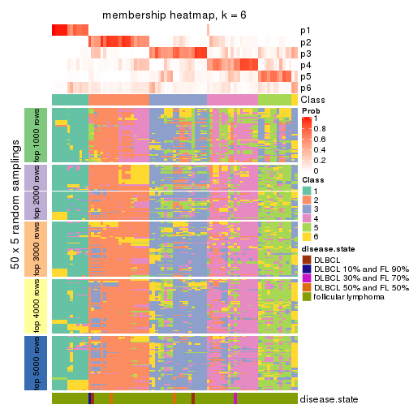
As soon as we have had the classes for columns, we can look for signatures which are significantly different between classes which can be candidate marks for certain classes. Following are the heatmaps for signatures.
Signature heatmaps where rows are scaled:
get_signatures(res, k = 2)
get_signatures(res, k = 3)
get_signatures(res, k = 4)
get_signatures(res, k = 5)
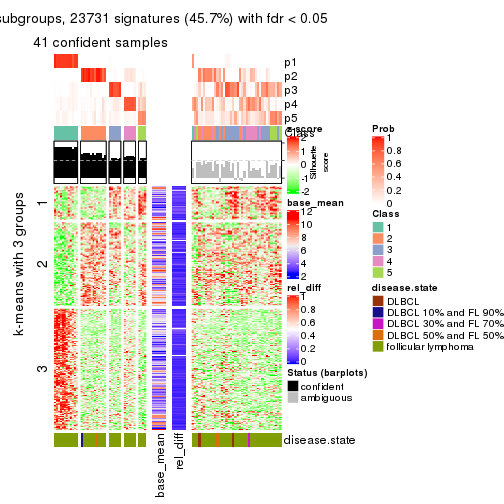
get_signatures(res, k = 6)
Signature heatmaps where rows are not scaled:
get_signatures(res, k = 2, scale_rows = FALSE)
get_signatures(res, k = 3, scale_rows = FALSE)
get_signatures(res, k = 4, scale_rows = FALSE)
get_signatures(res, k = 5, scale_rows = FALSE)
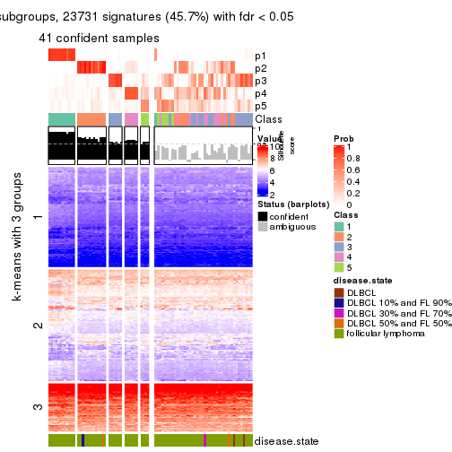
get_signatures(res, k = 6, scale_rows = FALSE)
Compare the overlap of signatures from different k:
compare_signatures(res)
get_signature() returns a data frame invisibly. TO get the list of signatures, the function
call should be assigned to a variable explicitly. In following code, if plot argument is set
to FALSE, no heatmap is plotted while only the differential analysis is performed.
# code only for demonstration
tb = get_signature(res, k = ..., plot = FALSE)
An example of the output of tb is:
#> which_row fdr mean_1 mean_2 scaled_mean_1 scaled_mean_2 km
#> 1 38 0.042760348 8.373488 9.131774 -0.5533452 0.5164555 1
#> 2 40 0.018707592 7.106213 8.469186 -0.6173731 0.5762149 1
#> 3 55 0.019134737 10.221463 11.207825 -0.6159697 0.5749050 1
#> 4 59 0.006059896 5.921854 7.869574 -0.6899429 0.6439467 1
#> 5 60 0.018055526 8.928898 10.211722 -0.6204761 0.5791110 1
#> 6 98 0.009384629 15.714769 14.887706 0.6635654 -0.6193277 2
...
The columns in tb are:
which_row: row indices corresponding to the input matrix.fdr: FDR for the differential test. mean_x: The mean value in group x.scaled_mean_x: The mean value in group x after rows are scaled.km: Row groups if k-means clustering is applied to rows.UMAP plot which shows how samples are separated.
dimension_reduction(res, k = 2, method = "UMAP")
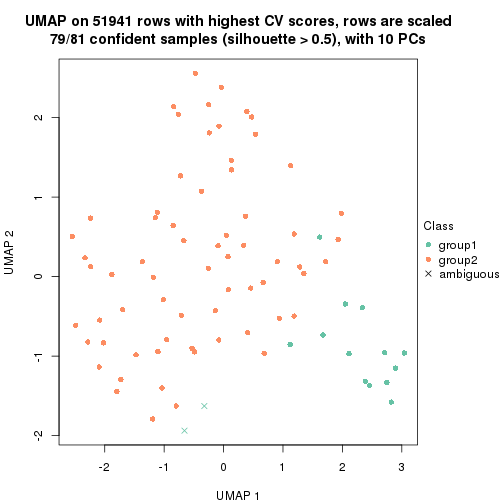
dimension_reduction(res, k = 3, method = "UMAP")
dimension_reduction(res, k = 4, method = "UMAP")
dimension_reduction(res, k = 5, method = "UMAP")
dimension_reduction(res, k = 6, method = "UMAP")
Following heatmap shows how subgroups are split when increasing k:
collect_classes(res)
Test correlation between subgroups and known annotations. If the known annotation is numeric, one-way ANOVA test is applied, and if the known annotation is discrete, chi-squared contingency table test is applied.
test_to_known_factors(res)
#> n disease.state(p) k
#> CV:kmeans 79 0.8649 2
#> CV:kmeans 78 0.5519 3
#> CV:kmeans 64 0.0852 4
#> CV:kmeans 41 0.8066 5
#> CV:kmeans 37 0.8189 6
If matrix rows can be associated to genes, consider to use GO_Enrichment(res,
...) to perform function enrichment for the signature genes.
The object with results only for a single top-value method and a single partition method can be extracted as:
res = res_list["CV", "skmeans"]
# you can also extract it by
# res = res_list["CV:skmeans"]
A summary of res and all the functions that can be applied to it:
res
#> A 'ConsensusPartition' object with k = 2, 3, 4, 5, 6.
#> On a matrix with 51941 rows and 81 columns.
#> Top rows (1000, 2000, 3000, 4000, 5000) are extracted by 'CV' method.
#> Subgroups are detected by 'skmeans' method.
#> Performed in total 1250 partitions by row resampling.
#> Best k for subgroups seems to be 3.
#>
#> Following methods can be applied to this 'ConsensusPartition' object:
#> [1] "cola_report" "collect_classes" "collect_plots"
#> [4] "collect_stats" "colnames" "compare_signatures"
#> [7] "consensus_heatmap" "dimension_reduction" "functional_enrichment"
#> [10] "get_anno_col" "get_anno" "get_classes"
#> [13] "get_consensus" "get_matrix" "get_membership"
#> [16] "get_param" "get_signatures" "get_stats"
#> [19] "is_best_k" "is_stable_k" "membership_heatmap"
#> [22] "ncol" "nrow" "plot_ecdf"
#> [25] "rownames" "select_partition_number" "show"
#> [28] "suggest_best_k" "test_to_known_factors"
collect_plots() function collects all the plots made from res for all k (number of partitions)
into one single page to provide an easy and fast comparison between different k.
collect_plots(res)
The plots are:
k and the heatmap of
predicted classes for each k.k.k.k.All the plots in panels can be made by individual functions and they are plotted later in this section.
select_partition_number() produces several plots showing different
statistics for choosing “optimized” k. There are following statistics:
k;k, the area increased is defined as \(A_k - A_{k-1}\).The detailed explanations of these statistics can be found in the cola vignette.
Generally speaking, lower PAC score, higher mean silhouette score or higher
concordance corresponds to better partition. Rand index and Jaccard index
measure how similar the current partition is compared to partition with k-1.
If they are too similar, we won't accept k is better than k-1.
select_partition_number(res)
The numeric values for all these statistics can be obtained by get_stats().
get_stats(res)
#> k 1-PAC mean_silhouette concordance area_increased Rand Jaccard
#> 2 2 0.566 0.876 0.913 0.5046 0.494 0.494
#> 3 3 0.828 0.898 0.952 0.3211 0.736 0.516
#> 4 4 0.636 0.646 0.818 0.1253 0.857 0.603
#> 5 5 0.654 0.630 0.792 0.0702 0.870 0.544
#> 6 6 0.674 0.569 0.734 0.0415 0.939 0.708
suggest_best_k() suggests the best \(k\) based on these statistics. The rules are as follows:
NA.suggest_best_k(res)
#> [1] 3
Following shows the table of the partitions (You need to click the show/hide
code output link to see it). The membership matrix (columns with name p*)
is inferred by
clue::cl_consensus()
function with the SE method. Basically the value in the membership matrix
represents the probability to belong to a certain group. The finall class
label for an item is determined with the group with highest probability it
belongs to.
In get_classes() function, the entropy is calculated from the membership
matrix and the silhouette score is calculated from the consensus matrix.
cbind(get_classes(res, k = 2), get_membership(res, k = 2))
#> class entropy silhouette p1 p2
#> GSM1301497 2 0.2948 0.874 0.052 0.948
#> GSM1301537 1 0.2043 0.919 0.968 0.032
#> GSM1301521 1 0.8499 0.652 0.724 0.276
#> GSM1301555 1 0.3114 0.902 0.944 0.056
#> GSM1301501 2 0.8081 0.810 0.248 0.752
#> GSM1301508 1 0.0000 0.926 1.000 0.000
#> GSM1301481 2 0.3879 0.908 0.076 0.924
#> GSM1301482 1 0.8443 0.769 0.728 0.272
#> GSM1301483 2 0.6801 0.798 0.180 0.820
#> GSM1301484 2 0.3431 0.909 0.064 0.936
#> GSM1301485 2 0.0000 0.891 0.000 1.000
#> GSM1301486 2 0.3879 0.908 0.076 0.924
#> GSM1301487 2 0.0000 0.891 0.000 1.000
#> GSM1301488 2 0.9129 0.504 0.328 0.672
#> GSM1301489 1 0.4431 0.875 0.908 0.092
#> GSM1301490 2 0.2603 0.894 0.044 0.956
#> GSM1301491 1 0.0000 0.926 1.000 0.000
#> GSM1301492 2 0.0000 0.891 0.000 1.000
#> GSM1301493 2 0.3879 0.908 0.076 0.924
#> GSM1301494 2 0.0000 0.891 0.000 1.000
#> GSM1301495 2 0.3879 0.908 0.076 0.924
#> GSM1301496 1 0.3879 0.907 0.924 0.076
#> GSM1301498 2 0.5629 0.892 0.132 0.868
#> GSM1301499 2 0.3431 0.909 0.064 0.936
#> GSM1301500 1 0.5408 0.891 0.876 0.124
#> GSM1301502 2 0.9833 0.395 0.424 0.576
#> GSM1301503 1 0.3114 0.902 0.944 0.056
#> GSM1301504 2 0.5519 0.893 0.128 0.872
#> GSM1301505 2 0.3431 0.909 0.064 0.936
#> GSM1301506 1 0.2236 0.913 0.964 0.036
#> GSM1301507 1 0.0000 0.926 1.000 0.000
#> GSM1301509 2 0.7602 0.710 0.220 0.780
#> GSM1301510 2 0.2236 0.883 0.036 0.964
#> GSM1301511 1 0.0000 0.926 1.000 0.000
#> GSM1301512 1 0.3879 0.907 0.924 0.076
#> GSM1301513 2 0.0000 0.891 0.000 1.000
#> GSM1301514 1 0.3431 0.910 0.936 0.064
#> GSM1301515 1 0.0000 0.926 1.000 0.000
#> GSM1301516 2 0.5059 0.900 0.112 0.888
#> GSM1301517 1 0.3879 0.907 0.924 0.076
#> GSM1301518 2 0.0672 0.890 0.008 0.992
#> GSM1301519 2 0.7950 0.817 0.240 0.760
#> GSM1301520 1 0.0672 0.924 0.992 0.008
#> GSM1301522 2 0.5294 0.896 0.120 0.880
#> GSM1301523 1 0.5178 0.894 0.884 0.116
#> GSM1301524 2 0.5294 0.896 0.120 0.880
#> GSM1301525 2 0.3584 0.885 0.068 0.932
#> GSM1301526 1 0.0000 0.926 1.000 0.000
#> GSM1301527 1 0.0000 0.926 1.000 0.000
#> GSM1301528 1 0.7815 0.817 0.768 0.232
#> GSM1301529 1 0.5408 0.891 0.876 0.124
#> GSM1301530 1 0.3114 0.902 0.944 0.056
#> GSM1301531 2 0.4298 0.906 0.088 0.912
#> GSM1301532 1 0.0376 0.925 0.996 0.004
#> GSM1301533 2 0.4431 0.905 0.092 0.908
#> GSM1301534 1 0.0000 0.926 1.000 0.000
#> GSM1301535 2 0.3879 0.908 0.076 0.924
#> GSM1301536 2 0.3879 0.908 0.076 0.924
#> GSM1301538 1 0.6343 0.826 0.840 0.160
#> GSM1301539 1 0.6531 0.816 0.832 0.168
#> GSM1301540 2 0.5408 0.895 0.124 0.876
#> GSM1301541 1 0.0000 0.926 1.000 0.000
#> GSM1301542 1 0.5408 0.891 0.876 0.124
#> GSM1301543 1 0.0000 0.926 1.000 0.000
#> GSM1301544 2 0.9044 0.722 0.320 0.680
#> GSM1301545 1 0.5294 0.892 0.880 0.120
#> GSM1301546 1 0.3879 0.907 0.924 0.076
#> GSM1301547 1 0.0000 0.926 1.000 0.000
#> GSM1301548 1 0.0000 0.926 1.000 0.000
#> GSM1301549 2 0.4939 0.901 0.108 0.892
#> GSM1301550 1 0.4298 0.904 0.912 0.088
#> GSM1301551 2 0.3431 0.909 0.064 0.936
#> GSM1301552 2 0.3274 0.909 0.060 0.940
#> GSM1301553 1 0.4298 0.904 0.912 0.088
#> GSM1301554 1 0.0000 0.926 1.000 0.000
#> GSM1301556 1 0.3879 0.907 0.924 0.076
#> GSM1301557 2 0.3114 0.872 0.056 0.944
#> GSM1301558 2 0.6438 0.813 0.164 0.836
#> GSM1301559 2 0.3431 0.909 0.064 0.936
#> GSM1301560 1 0.3584 0.895 0.932 0.068
#> GSM1301561 2 0.0000 0.891 0.000 1.000
cbind(get_classes(res, k = 3), get_membership(res, k = 3))
#> class entropy silhouette p1 p2 p3
#> GSM1301497 3 0.2173 0.915 0.048 0.008 0.944
#> GSM1301537 2 0.1031 0.945 0.024 0.976 0.000
#> GSM1301521 2 0.4555 0.769 0.000 0.800 0.200
#> GSM1301555 2 0.0829 0.951 0.012 0.984 0.004
#> GSM1301501 3 0.4555 0.776 0.000 0.200 0.800
#> GSM1301508 2 0.0237 0.953 0.004 0.996 0.000
#> GSM1301481 3 0.0000 0.949 0.000 0.000 1.000
#> GSM1301482 1 0.0000 0.936 1.000 0.000 0.000
#> GSM1301483 1 0.1031 0.929 0.976 0.024 0.000
#> GSM1301484 3 0.0000 0.949 0.000 0.000 1.000
#> GSM1301485 3 0.0000 0.949 0.000 0.000 1.000
#> GSM1301486 3 0.0000 0.949 0.000 0.000 1.000
#> GSM1301487 3 0.5058 0.643 0.244 0.000 0.756
#> GSM1301488 1 0.0000 0.936 1.000 0.000 0.000
#> GSM1301489 2 0.0424 0.952 0.000 0.992 0.008
#> GSM1301490 3 0.1860 0.917 0.052 0.000 0.948
#> GSM1301491 2 0.0000 0.954 0.000 1.000 0.000
#> GSM1301492 3 0.0237 0.947 0.004 0.000 0.996
#> GSM1301493 3 0.4974 0.672 0.000 0.236 0.764
#> GSM1301494 3 0.0000 0.949 0.000 0.000 1.000
#> GSM1301495 3 0.0000 0.949 0.000 0.000 1.000
#> GSM1301496 1 0.1411 0.924 0.964 0.036 0.000
#> GSM1301498 3 0.3816 0.837 0.000 0.148 0.852
#> GSM1301499 3 0.0000 0.949 0.000 0.000 1.000
#> GSM1301500 1 0.0000 0.936 1.000 0.000 0.000
#> GSM1301502 2 0.4002 0.820 0.000 0.840 0.160
#> GSM1301503 2 0.0424 0.952 0.000 0.992 0.008
#> GSM1301504 3 0.1529 0.926 0.000 0.040 0.960
#> GSM1301505 3 0.0000 0.949 0.000 0.000 1.000
#> GSM1301506 2 0.0829 0.951 0.012 0.984 0.004
#> GSM1301507 2 0.0000 0.954 0.000 1.000 0.000
#> GSM1301509 1 0.0000 0.936 1.000 0.000 0.000
#> GSM1301510 1 0.0000 0.936 1.000 0.000 0.000
#> GSM1301511 2 0.0000 0.954 0.000 1.000 0.000
#> GSM1301512 1 0.1411 0.924 0.964 0.036 0.000
#> GSM1301513 3 0.0000 0.949 0.000 0.000 1.000
#> GSM1301514 2 0.1289 0.936 0.032 0.968 0.000
#> GSM1301515 2 0.0000 0.954 0.000 1.000 0.000
#> GSM1301516 3 0.0000 0.949 0.000 0.000 1.000
#> GSM1301517 1 0.1411 0.923 0.964 0.036 0.000
#> GSM1301518 1 0.0000 0.936 1.000 0.000 0.000
#> GSM1301519 3 0.4062 0.821 0.000 0.164 0.836
#> GSM1301520 2 0.0000 0.954 0.000 1.000 0.000
#> GSM1301522 3 0.0000 0.949 0.000 0.000 1.000
#> GSM1301523 1 0.0000 0.936 1.000 0.000 0.000
#> GSM1301524 3 0.0000 0.949 0.000 0.000 1.000
#> GSM1301525 1 0.6859 0.306 0.564 0.016 0.420
#> GSM1301526 2 0.4346 0.776 0.184 0.816 0.000
#> GSM1301527 2 0.0000 0.954 0.000 1.000 0.000
#> GSM1301528 1 0.0000 0.936 1.000 0.000 0.000
#> GSM1301529 1 0.0000 0.936 1.000 0.000 0.000
#> GSM1301530 2 0.0829 0.951 0.012 0.984 0.004
#> GSM1301531 3 0.0000 0.949 0.000 0.000 1.000
#> GSM1301532 2 0.0424 0.952 0.008 0.992 0.000
#> GSM1301533 3 0.0000 0.949 0.000 0.000 1.000
#> GSM1301534 2 0.0000 0.954 0.000 1.000 0.000
#> GSM1301535 3 0.0000 0.949 0.000 0.000 1.000
#> GSM1301536 3 0.0000 0.949 0.000 0.000 1.000
#> GSM1301538 2 0.1585 0.940 0.028 0.964 0.008
#> GSM1301539 2 0.3995 0.858 0.016 0.868 0.116
#> GSM1301540 3 0.3267 0.867 0.000 0.116 0.884
#> GSM1301541 2 0.0237 0.953 0.004 0.996 0.000
#> GSM1301542 1 0.0000 0.936 1.000 0.000 0.000
#> GSM1301543 2 0.0000 0.954 0.000 1.000 0.000
#> GSM1301544 2 0.5591 0.532 0.000 0.696 0.304
#> GSM1301545 1 0.0000 0.936 1.000 0.000 0.000
#> GSM1301546 1 0.1411 0.924 0.964 0.036 0.000
#> GSM1301547 2 0.0000 0.954 0.000 1.000 0.000
#> GSM1301548 2 0.0000 0.954 0.000 1.000 0.000
#> GSM1301549 3 0.0000 0.949 0.000 0.000 1.000
#> GSM1301550 1 0.0000 0.936 1.000 0.000 0.000
#> GSM1301551 3 0.0000 0.949 0.000 0.000 1.000
#> GSM1301552 3 0.0000 0.949 0.000 0.000 1.000
#> GSM1301553 1 0.0000 0.936 1.000 0.000 0.000
#> GSM1301554 2 0.0000 0.954 0.000 1.000 0.000
#> GSM1301556 1 0.1411 0.924 0.964 0.036 0.000
#> GSM1301557 3 0.3112 0.874 0.096 0.004 0.900
#> GSM1301558 1 0.5875 0.761 0.784 0.056 0.160
#> GSM1301559 3 0.0000 0.949 0.000 0.000 1.000
#> GSM1301560 2 0.0829 0.951 0.012 0.984 0.004
#> GSM1301561 1 0.6302 0.140 0.520 0.000 0.480
cbind(get_classes(res, k = 4), get_membership(res, k = 4))
#> class entropy silhouette p1 p2 p3 p4
#> GSM1301497 3 0.2860 0.6506 0.004 0.008 0.888 0.100
#> GSM1301537 2 0.4911 0.5769 0.008 0.704 0.280 0.008
#> GSM1301521 3 0.3311 0.5959 0.000 0.172 0.828 0.000
#> GSM1301555 2 0.0000 0.8332 0.000 1.000 0.000 0.000
#> GSM1301501 4 0.0336 0.5549 0.000 0.008 0.000 0.992
#> GSM1301508 2 0.1211 0.8386 0.000 0.960 0.000 0.040
#> GSM1301481 3 0.4977 -0.3421 0.000 0.000 0.540 0.460
#> GSM1301482 1 0.0000 0.8840 1.000 0.000 0.000 0.000
#> GSM1301483 4 0.4950 -0.1337 0.376 0.000 0.004 0.620
#> GSM1301484 3 0.5000 -0.4270 0.000 0.000 0.504 0.496
#> GSM1301485 3 0.0000 0.7263 0.000 0.000 1.000 0.000
#> GSM1301486 3 0.0000 0.7263 0.000 0.000 1.000 0.000
#> GSM1301487 3 0.1004 0.7197 0.024 0.004 0.972 0.000
#> GSM1301488 1 0.0000 0.8840 1.000 0.000 0.000 0.000
#> GSM1301489 2 0.1389 0.8368 0.000 0.952 0.000 0.048
#> GSM1301490 4 0.4700 0.6608 0.016 0.012 0.208 0.764
#> GSM1301491 2 0.4431 0.7415 0.000 0.696 0.000 0.304
#> GSM1301492 3 0.4933 -0.2309 0.000 0.000 0.568 0.432
#> GSM1301493 3 0.2530 0.6590 0.000 0.112 0.888 0.000
#> GSM1301494 3 0.4605 0.0539 0.000 0.000 0.664 0.336
#> GSM1301495 3 0.0469 0.7255 0.000 0.012 0.988 0.000
#> GSM1301496 1 0.4855 0.6115 0.600 0.000 0.000 0.400
#> GSM1301498 4 0.3427 0.6377 0.000 0.028 0.112 0.860
#> GSM1301499 3 0.0817 0.7131 0.000 0.000 0.976 0.024
#> GSM1301500 1 0.0000 0.8840 1.000 0.000 0.000 0.000
#> GSM1301502 2 0.4855 0.3521 0.000 0.600 0.400 0.000
#> GSM1301503 2 0.0469 0.8351 0.000 0.988 0.000 0.012
#> GSM1301504 4 0.3910 0.6514 0.000 0.024 0.156 0.820
#> GSM1301505 4 0.4888 0.5310 0.000 0.000 0.412 0.588
#> GSM1301506 2 0.0000 0.8332 0.000 1.000 0.000 0.000
#> GSM1301507 2 0.1022 0.8383 0.000 0.968 0.000 0.032
#> GSM1301509 1 0.0000 0.8840 1.000 0.000 0.000 0.000
#> GSM1301510 1 0.0000 0.8840 1.000 0.000 0.000 0.000
#> GSM1301511 2 0.4454 0.7394 0.000 0.692 0.000 0.308
#> GSM1301512 1 0.4843 0.6150 0.604 0.000 0.000 0.396
#> GSM1301513 3 0.1211 0.6995 0.000 0.000 0.960 0.040
#> GSM1301514 2 0.6326 0.6700 0.108 0.636 0.000 0.256
#> GSM1301515 2 0.3942 0.7871 0.000 0.764 0.000 0.236
#> GSM1301516 4 0.5597 0.4301 0.000 0.020 0.464 0.516
#> GSM1301517 1 0.4661 0.6562 0.652 0.000 0.000 0.348
#> GSM1301518 1 0.0000 0.8840 1.000 0.000 0.000 0.000
#> GSM1301519 4 0.1118 0.5823 0.000 0.000 0.036 0.964
#> GSM1301520 2 0.4072 0.7767 0.000 0.748 0.000 0.252
#> GSM1301522 4 0.4468 0.6579 0.000 0.016 0.232 0.752
#> GSM1301523 1 0.0000 0.8840 1.000 0.000 0.000 0.000
#> GSM1301524 4 0.5823 0.6211 0.000 0.120 0.176 0.704
#> GSM1301525 3 0.6086 0.4938 0.148 0.008 0.704 0.140
#> GSM1301526 2 0.3128 0.8161 0.040 0.884 0.000 0.076
#> GSM1301527 2 0.3801 0.7955 0.000 0.780 0.000 0.220
#> GSM1301528 1 0.0000 0.8840 1.000 0.000 0.000 0.000
#> GSM1301529 1 0.0000 0.8840 1.000 0.000 0.000 0.000
#> GSM1301530 2 0.0376 0.8334 0.000 0.992 0.004 0.004
#> GSM1301531 4 0.4961 0.4795 0.000 0.000 0.448 0.552
#> GSM1301532 2 0.0000 0.8332 0.000 1.000 0.000 0.000
#> GSM1301533 4 0.6586 0.4426 0.000 0.080 0.420 0.500
#> GSM1301534 2 0.3764 0.7973 0.000 0.784 0.000 0.216
#> GSM1301535 3 0.0469 0.7255 0.000 0.012 0.988 0.000
#> GSM1301536 4 0.4941 0.5006 0.000 0.000 0.436 0.564
#> GSM1301538 2 0.4673 0.5595 0.008 0.700 0.292 0.000
#> GSM1301539 2 0.4741 0.5053 0.004 0.668 0.328 0.000
#> GSM1301540 4 0.5018 0.5545 0.000 0.012 0.332 0.656
#> GSM1301541 2 0.0921 0.8378 0.000 0.972 0.000 0.028
#> GSM1301542 1 0.0000 0.8840 1.000 0.000 0.000 0.000
#> GSM1301543 2 0.4454 0.7380 0.000 0.692 0.000 0.308
#> GSM1301544 3 0.6990 0.2799 0.000 0.144 0.552 0.304
#> GSM1301545 1 0.0000 0.8840 1.000 0.000 0.000 0.000
#> GSM1301546 1 0.4843 0.6150 0.604 0.000 0.000 0.396
#> GSM1301547 2 0.0336 0.8350 0.000 0.992 0.000 0.008
#> GSM1301548 2 0.3801 0.7955 0.000 0.780 0.000 0.220
#> GSM1301549 4 0.4585 0.6073 0.000 0.000 0.332 0.668
#> GSM1301550 1 0.0188 0.8818 0.996 0.000 0.000 0.004
#> GSM1301551 3 0.0000 0.7263 0.000 0.000 1.000 0.000
#> GSM1301552 3 0.0000 0.7263 0.000 0.000 1.000 0.000
#> GSM1301553 1 0.0000 0.8840 1.000 0.000 0.000 0.000
#> GSM1301554 2 0.2345 0.8321 0.000 0.900 0.000 0.100
#> GSM1301556 1 0.4790 0.6314 0.620 0.000 0.000 0.380
#> GSM1301557 4 0.4114 0.6576 0.008 0.004 0.200 0.788
#> GSM1301558 4 0.5900 0.3366 0.152 0.020 0.096 0.732
#> GSM1301559 4 0.5000 0.3808 0.000 0.000 0.496 0.504
#> GSM1301560 2 0.0188 0.8325 0.000 0.996 0.004 0.000
#> GSM1301561 3 0.2704 0.6449 0.124 0.000 0.876 0.000
cbind(get_classes(res, k = 5), get_membership(res, k = 5))
#> class entropy silhouette p1 p2 p3 p4 p5
#> GSM1301497 3 0.4126 0.6587 0.000 0.004 0.784 0.056 0.156
#> GSM1301537 2 0.5295 0.6071 0.000 0.696 0.216 0.060 0.028
#> GSM1301521 3 0.2756 0.7580 0.000 0.092 0.880 0.004 0.024
#> GSM1301555 2 0.0162 0.7756 0.000 0.996 0.000 0.000 0.004
#> GSM1301501 4 0.4695 0.0108 0.000 0.004 0.008 0.524 0.464
#> GSM1301508 2 0.2710 0.7465 0.000 0.896 0.016 0.056 0.032
#> GSM1301481 5 0.4552 0.2619 0.000 0.000 0.468 0.008 0.524
#> GSM1301482 1 0.0000 0.9940 1.000 0.000 0.000 0.000 0.000
#> GSM1301483 5 0.5606 0.2599 0.104 0.000 0.000 0.296 0.600
#> GSM1301484 5 0.4570 0.5105 0.000 0.000 0.348 0.020 0.632
#> GSM1301485 3 0.1082 0.8068 0.000 0.000 0.964 0.008 0.028
#> GSM1301486 3 0.1041 0.8069 0.000 0.000 0.964 0.004 0.032
#> GSM1301487 3 0.1706 0.8013 0.016 0.008 0.948 0.012 0.016
#> GSM1301488 1 0.0162 0.9906 0.996 0.000 0.000 0.000 0.004
#> GSM1301489 2 0.4920 0.4093 0.000 0.644 0.000 0.308 0.048
#> GSM1301490 5 0.2072 0.7131 0.000 0.020 0.016 0.036 0.928
#> GSM1301491 4 0.2193 0.5681 0.000 0.092 0.000 0.900 0.008
#> GSM1301492 3 0.5350 -0.1142 0.000 0.000 0.488 0.052 0.460
#> GSM1301493 3 0.1845 0.7772 0.000 0.056 0.928 0.016 0.000
#> GSM1301494 3 0.4331 0.1964 0.000 0.000 0.596 0.004 0.400
#> GSM1301495 3 0.1413 0.7986 0.000 0.012 0.956 0.020 0.012
#> GSM1301496 4 0.4212 0.5636 0.144 0.000 0.000 0.776 0.080
#> GSM1301498 5 0.1862 0.7080 0.000 0.048 0.004 0.016 0.932
#> GSM1301499 3 0.2411 0.7599 0.000 0.000 0.884 0.008 0.108
#> GSM1301500 1 0.0000 0.9940 1.000 0.000 0.000 0.000 0.000
#> GSM1301502 2 0.5468 0.5542 0.000 0.676 0.236 0.040 0.048
#> GSM1301503 2 0.2020 0.7463 0.000 0.900 0.000 0.100 0.000
#> GSM1301504 5 0.2773 0.6773 0.000 0.020 0.000 0.112 0.868
#> GSM1301505 5 0.3487 0.6590 0.000 0.000 0.212 0.008 0.780
#> GSM1301506 2 0.0324 0.7757 0.000 0.992 0.004 0.000 0.004
#> GSM1301507 2 0.2886 0.7141 0.000 0.844 0.000 0.148 0.008
#> GSM1301509 1 0.0000 0.9940 1.000 0.000 0.000 0.000 0.000
#> GSM1301510 1 0.0000 0.9940 1.000 0.000 0.000 0.000 0.000
#> GSM1301511 4 0.2439 0.5582 0.000 0.120 0.000 0.876 0.004
#> GSM1301512 4 0.6126 0.4442 0.252 0.004 0.008 0.600 0.136
#> GSM1301513 3 0.3282 0.6869 0.000 0.000 0.804 0.008 0.188
#> GSM1301514 4 0.6745 0.3592 0.032 0.308 0.020 0.556 0.084
#> GSM1301515 4 0.4276 0.3024 0.000 0.380 0.000 0.616 0.004
#> GSM1301516 5 0.5616 0.5655 0.000 0.040 0.300 0.036 0.624
#> GSM1301517 4 0.6178 0.2133 0.376 0.000 0.000 0.484 0.140
#> GSM1301518 1 0.0162 0.9909 0.996 0.000 0.000 0.004 0.000
#> GSM1301519 5 0.3730 0.4955 0.000 0.000 0.000 0.288 0.712
#> GSM1301520 4 0.5837 0.2696 0.000 0.388 0.036 0.540 0.036
#> GSM1301522 5 0.1815 0.7141 0.000 0.024 0.020 0.016 0.940
#> GSM1301523 1 0.0000 0.9940 1.000 0.000 0.000 0.000 0.000
#> GSM1301524 5 0.3685 0.6896 0.000 0.112 0.016 0.040 0.832
#> GSM1301525 3 0.8125 0.2987 0.144 0.008 0.464 0.188 0.196
#> GSM1301526 2 0.5202 0.5274 0.028 0.712 0.000 0.196 0.064
#> GSM1301527 4 0.4367 0.2371 0.000 0.416 0.000 0.580 0.004
#> GSM1301528 1 0.0162 0.9909 0.996 0.000 0.000 0.004 0.000
#> GSM1301529 1 0.0000 0.9940 1.000 0.000 0.000 0.000 0.000
#> GSM1301530 2 0.1430 0.7655 0.000 0.944 0.000 0.052 0.004
#> GSM1301531 5 0.5355 0.5310 0.000 0.000 0.292 0.084 0.624
#> GSM1301532 2 0.0324 0.7757 0.000 0.992 0.004 0.000 0.004
#> GSM1301533 5 0.7121 0.4242 0.000 0.264 0.220 0.032 0.484
#> GSM1301534 4 0.4420 0.1532 0.000 0.448 0.000 0.548 0.004
#> GSM1301535 3 0.1507 0.7998 0.000 0.012 0.952 0.024 0.012
#> GSM1301536 5 0.3835 0.6201 0.000 0.000 0.260 0.008 0.732
#> GSM1301538 2 0.4265 0.6204 0.000 0.744 0.224 0.020 0.012
#> GSM1301539 2 0.3579 0.6266 0.000 0.756 0.240 0.004 0.000
#> GSM1301540 5 0.5684 0.5516 0.000 0.004 0.156 0.196 0.644
#> GSM1301541 2 0.2179 0.7395 0.000 0.888 0.000 0.112 0.000
#> GSM1301542 1 0.0000 0.9940 1.000 0.000 0.000 0.000 0.000
#> GSM1301543 4 0.4572 0.4281 0.000 0.280 0.000 0.684 0.036
#> GSM1301544 4 0.6877 0.3284 0.000 0.068 0.284 0.544 0.104
#> GSM1301545 1 0.0000 0.9940 1.000 0.000 0.000 0.000 0.000
#> GSM1301546 4 0.6147 0.4387 0.256 0.004 0.008 0.596 0.136
#> GSM1301547 2 0.0693 0.7757 0.000 0.980 0.000 0.012 0.008
#> GSM1301548 4 0.4367 0.2371 0.000 0.416 0.000 0.580 0.004
#> GSM1301549 5 0.2522 0.7043 0.000 0.000 0.108 0.012 0.880
#> GSM1301550 1 0.1408 0.9401 0.948 0.000 0.000 0.044 0.008
#> GSM1301551 3 0.0794 0.8073 0.000 0.000 0.972 0.000 0.028
#> GSM1301552 3 0.1124 0.8065 0.000 0.000 0.960 0.004 0.036
#> GSM1301553 1 0.0000 0.9940 1.000 0.000 0.000 0.000 0.000
#> GSM1301554 2 0.4182 0.2503 0.000 0.600 0.000 0.400 0.000
#> GSM1301556 4 0.3848 0.5731 0.172 0.000 0.000 0.788 0.040
#> GSM1301557 5 0.2549 0.6957 0.004 0.004 0.044 0.044 0.904
#> GSM1301558 4 0.2805 0.5601 0.008 0.000 0.012 0.872 0.108
#> GSM1301559 5 0.4508 0.5400 0.000 0.000 0.332 0.020 0.648
#> GSM1301560 2 0.1356 0.7648 0.000 0.956 0.012 0.028 0.004
#> GSM1301561 3 0.2456 0.7825 0.064 0.000 0.904 0.008 0.024
cbind(get_classes(res, k = 6), get_membership(res, k = 6))
#> class entropy silhouette p1 p2 p3 p4 p5 p6
#> GSM1301497 3 0.6338 0.4463 0.000 0.092 0.536 0.304 0.052 0.016
#> GSM1301537 6 0.6628 0.4267 0.000 0.144 0.124 0.192 0.000 0.540
#> GSM1301521 3 0.4218 0.6539 0.000 0.016 0.784 0.068 0.016 0.116
#> GSM1301555 6 0.1958 0.6489 0.000 0.100 0.000 0.004 0.000 0.896
#> GSM1301501 5 0.6215 -0.0284 0.000 0.356 0.008 0.236 0.400 0.000
#> GSM1301508 6 0.5254 0.4573 0.000 0.264 0.004 0.128 0.000 0.604
#> GSM1301481 5 0.5277 0.2640 0.000 0.040 0.392 0.020 0.540 0.008
#> GSM1301482 1 0.0000 0.9831 1.000 0.000 0.000 0.000 0.000 0.000
#> GSM1301483 4 0.5043 -0.0415 0.016 0.040 0.000 0.476 0.468 0.000
#> GSM1301484 5 0.5573 0.3893 0.000 0.036 0.324 0.032 0.584 0.024
#> GSM1301485 3 0.1596 0.7178 0.000 0.020 0.944 0.012 0.020 0.004
#> GSM1301486 3 0.1823 0.7188 0.000 0.016 0.936 0.016 0.016 0.016
#> GSM1301487 3 0.4196 0.7009 0.044 0.056 0.816 0.036 0.040 0.008
#> GSM1301488 1 0.1285 0.9363 0.944 0.000 0.000 0.052 0.004 0.000
#> GSM1301489 2 0.5579 0.3669 0.000 0.552 0.000 0.012 0.120 0.316
#> GSM1301490 5 0.2806 0.5952 0.000 0.016 0.004 0.136 0.844 0.000
#> GSM1301491 2 0.3714 0.2608 0.000 0.656 0.000 0.340 0.000 0.004
#> GSM1301492 3 0.6931 -0.1022 0.000 0.044 0.412 0.136 0.380 0.028
#> GSM1301493 3 0.4882 0.6454 0.000 0.040 0.740 0.096 0.012 0.112
#> GSM1301494 3 0.5170 0.1886 0.000 0.048 0.532 0.020 0.400 0.000
#> GSM1301495 3 0.4819 0.6704 0.000 0.064 0.764 0.076 0.032 0.064
#> GSM1301496 4 0.4991 0.5663 0.060 0.256 0.000 0.656 0.028 0.000
#> GSM1301498 5 0.2239 0.6333 0.000 0.024 0.000 0.048 0.908 0.020
#> GSM1301499 3 0.2728 0.6735 0.000 0.032 0.864 0.000 0.100 0.004
#> GSM1301500 1 0.0000 0.9831 1.000 0.000 0.000 0.000 0.000 0.000
#> GSM1301502 6 0.6806 0.4450 0.000 0.124 0.224 0.060 0.040 0.552
#> GSM1301503 6 0.3499 0.4713 0.000 0.320 0.000 0.000 0.000 0.680
#> GSM1301504 5 0.3377 0.6041 0.000 0.104 0.004 0.036 0.836 0.020
#> GSM1301505 5 0.3844 0.5918 0.000 0.040 0.148 0.024 0.788 0.000
#> GSM1301506 6 0.1714 0.6496 0.000 0.092 0.000 0.000 0.000 0.908
#> GSM1301507 6 0.4269 0.2700 0.000 0.412 0.000 0.020 0.000 0.568
#> GSM1301509 1 0.0000 0.9831 1.000 0.000 0.000 0.000 0.000 0.000
#> GSM1301510 1 0.0146 0.9807 0.996 0.000 0.000 0.004 0.000 0.000
#> GSM1301511 2 0.4141 0.3414 0.000 0.676 0.000 0.296 0.008 0.020
#> GSM1301512 4 0.3732 0.6372 0.080 0.084 0.000 0.812 0.024 0.000
#> GSM1301513 3 0.4137 0.5780 0.000 0.040 0.732 0.012 0.216 0.000
#> GSM1301514 4 0.5213 0.4053 0.020 0.148 0.004 0.676 0.000 0.152
#> GSM1301515 2 0.2513 0.7320 0.000 0.852 0.000 0.008 0.000 0.140
#> GSM1301516 5 0.6900 0.4015 0.000 0.036 0.236 0.060 0.532 0.136
#> GSM1301517 4 0.4367 0.6078 0.160 0.044 0.000 0.752 0.044 0.000
#> GSM1301518 1 0.0436 0.9753 0.988 0.004 0.004 0.004 0.000 0.000
#> GSM1301519 5 0.5663 0.2304 0.000 0.080 0.008 0.376 0.520 0.016
#> GSM1301520 2 0.5859 0.2563 0.000 0.536 0.016 0.292 0.000 0.156
#> GSM1301522 5 0.1606 0.6334 0.000 0.008 0.004 0.056 0.932 0.000
#> GSM1301523 1 0.0000 0.9831 1.000 0.000 0.000 0.000 0.000 0.000
#> GSM1301524 5 0.5879 0.4924 0.000 0.024 0.028 0.100 0.620 0.228
#> GSM1301525 3 0.8792 0.0559 0.132 0.208 0.312 0.108 0.232 0.008
#> GSM1301526 6 0.4890 0.3915 0.012 0.032 0.000 0.300 0.016 0.640
#> GSM1301527 2 0.2454 0.7295 0.000 0.840 0.000 0.000 0.000 0.160
#> GSM1301528 1 0.0146 0.9807 0.996 0.000 0.000 0.004 0.000 0.000
#> GSM1301529 1 0.0000 0.9831 1.000 0.000 0.000 0.000 0.000 0.000
#> GSM1301530 6 0.2912 0.6152 0.000 0.172 0.000 0.000 0.012 0.816
#> GSM1301531 5 0.5996 0.4418 0.000 0.176 0.236 0.016 0.564 0.008
#> GSM1301532 6 0.1501 0.6495 0.000 0.076 0.000 0.000 0.000 0.924
#> GSM1301533 6 0.6565 -0.0323 0.000 0.024 0.128 0.036 0.300 0.512
#> GSM1301534 2 0.2491 0.7265 0.000 0.836 0.000 0.000 0.000 0.164
#> GSM1301535 3 0.4657 0.6779 0.000 0.064 0.776 0.068 0.032 0.060
#> GSM1301536 5 0.4136 0.5638 0.000 0.040 0.192 0.020 0.748 0.000
#> GSM1301538 6 0.5056 0.5531 0.000 0.068 0.148 0.076 0.000 0.708
#> GSM1301539 6 0.5452 0.5226 0.004 0.052 0.264 0.044 0.004 0.632
#> GSM1301540 5 0.6403 0.3178 0.000 0.356 0.060 0.120 0.464 0.000
#> GSM1301541 6 0.3636 0.4698 0.000 0.320 0.000 0.004 0.000 0.676
#> GSM1301542 1 0.0000 0.9831 1.000 0.000 0.000 0.000 0.000 0.000
#> GSM1301543 2 0.3668 0.6974 0.000 0.816 0.000 0.048 0.032 0.104
#> GSM1301544 4 0.7300 0.1004 0.000 0.352 0.148 0.404 0.048 0.048
#> GSM1301545 1 0.0000 0.9831 1.000 0.000 0.000 0.000 0.000 0.000
#> GSM1301546 4 0.4239 0.6361 0.104 0.084 0.000 0.780 0.028 0.004
#> GSM1301547 6 0.2933 0.6082 0.000 0.200 0.000 0.004 0.000 0.796
#> GSM1301548 2 0.2416 0.7311 0.000 0.844 0.000 0.000 0.000 0.156
#> GSM1301549 5 0.2401 0.6524 0.000 0.024 0.048 0.028 0.900 0.000
#> GSM1301550 1 0.1910 0.8715 0.892 0.000 0.000 0.108 0.000 0.000
#> GSM1301551 3 0.1680 0.7188 0.000 0.004 0.940 0.020 0.024 0.012
#> GSM1301552 3 0.2238 0.7167 0.000 0.016 0.916 0.020 0.032 0.016
#> GSM1301553 1 0.0000 0.9831 1.000 0.000 0.000 0.000 0.000 0.000
#> GSM1301554 2 0.3390 0.5521 0.000 0.704 0.000 0.000 0.000 0.296
#> GSM1301556 4 0.4845 0.4969 0.064 0.328 0.000 0.604 0.004 0.000
#> GSM1301557 5 0.4719 0.4666 0.000 0.040 0.016 0.308 0.636 0.000
#> GSM1301558 4 0.5264 0.4562 0.008 0.340 0.012 0.580 0.060 0.000
#> GSM1301559 5 0.5405 0.4712 0.000 0.028 0.280 0.036 0.628 0.028
#> GSM1301560 6 0.1026 0.6336 0.000 0.008 0.012 0.004 0.008 0.968
#> GSM1301561 3 0.3620 0.6956 0.060 0.036 0.844 0.016 0.040 0.004
Heatmaps for the consensus matrix. It visualizes the probability of two samples to be in a same group.
consensus_heatmap(res, k = 2)
consensus_heatmap(res, k = 3)
consensus_heatmap(res, k = 4)
consensus_heatmap(res, k = 5)
consensus_heatmap(res, k = 6)

Heatmaps for the membership of samples in all partitions to see how consistent they are:
membership_heatmap(res, k = 2)
membership_heatmap(res, k = 3)
membership_heatmap(res, k = 4)
membership_heatmap(res, k = 5)

membership_heatmap(res, k = 6)
As soon as we have had the classes for columns, we can look for signatures which are significantly different between classes which can be candidate marks for certain classes. Following are the heatmaps for signatures.
Signature heatmaps where rows are scaled:
get_signatures(res, k = 2)
get_signatures(res, k = 3)
get_signatures(res, k = 4)
get_signatures(res, k = 5)
get_signatures(res, k = 6)
Signature heatmaps where rows are not scaled:
get_signatures(res, k = 2, scale_rows = FALSE)
get_signatures(res, k = 3, scale_rows = FALSE)
get_signatures(res, k = 4, scale_rows = FALSE)
get_signatures(res, k = 5, scale_rows = FALSE)
get_signatures(res, k = 6, scale_rows = FALSE)
Compare the overlap of signatures from different k:
compare_signatures(res)
get_signature() returns a data frame invisibly. TO get the list of signatures, the function
call should be assigned to a variable explicitly. In following code, if plot argument is set
to FALSE, no heatmap is plotted while only the differential analysis is performed.
# code only for demonstration
tb = get_signature(res, k = ..., plot = FALSE)
An example of the output of tb is:
#> which_row fdr mean_1 mean_2 scaled_mean_1 scaled_mean_2 km
#> 1 38 0.042760348 8.373488 9.131774 -0.5533452 0.5164555 1
#> 2 40 0.018707592 7.106213 8.469186 -0.6173731 0.5762149 1
#> 3 55 0.019134737 10.221463 11.207825 -0.6159697 0.5749050 1
#> 4 59 0.006059896 5.921854 7.869574 -0.6899429 0.6439467 1
#> 5 60 0.018055526 8.928898 10.211722 -0.6204761 0.5791110 1
#> 6 98 0.009384629 15.714769 14.887706 0.6635654 -0.6193277 2
...
The columns in tb are:
which_row: row indices corresponding to the input matrix.fdr: FDR for the differential test. mean_x: The mean value in group x.scaled_mean_x: The mean value in group x after rows are scaled.km: Row groups if k-means clustering is applied to rows.UMAP plot which shows how samples are separated.
dimension_reduction(res, k = 2, method = "UMAP")
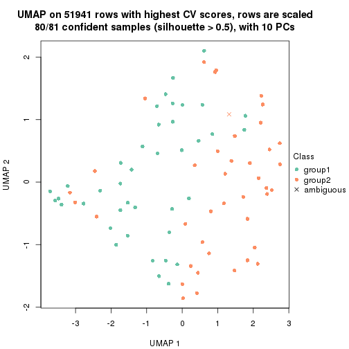
dimension_reduction(res, k = 3, method = "UMAP")
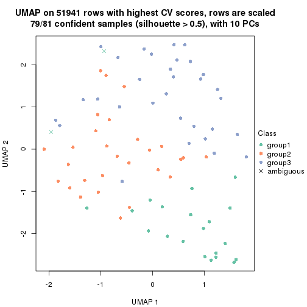
dimension_reduction(res, k = 4, method = "UMAP")
dimension_reduction(res, k = 5, method = "UMAP")
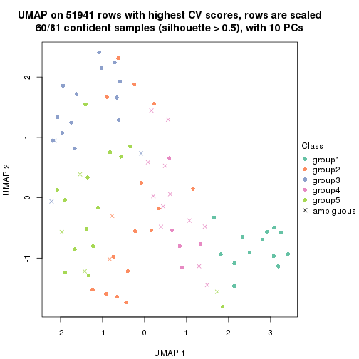
dimension_reduction(res, k = 6, method = "UMAP")
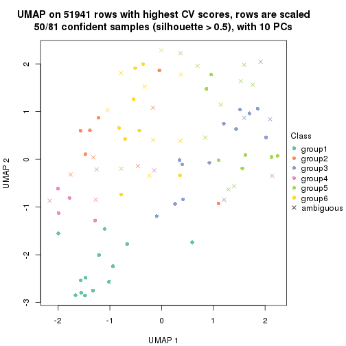
Following heatmap shows how subgroups are split when increasing k:
collect_classes(res)
Test correlation between subgroups and known annotations. If the known annotation is numeric, one-way ANOVA test is applied, and if the known annotation is discrete, chi-squared contingency table test is applied.
test_to_known_factors(res)
#> n disease.state(p) k
#> CV:skmeans 80 0.399 2
#> CV:skmeans 79 0.437 3
#> CV:skmeans 68 0.565 4
#> CV:skmeans 60 0.773 5
#> CV:skmeans 50 0.647 6
If matrix rows can be associated to genes, consider to use GO_Enrichment(res,
...) to perform function enrichment for the signature genes.
The object with results only for a single top-value method and a single partition method can be extracted as:
res = res_list["CV", "pam"]
# you can also extract it by
# res = res_list["CV:pam"]
A summary of res and all the functions that can be applied to it:
res
#> A 'ConsensusPartition' object with k = 2, 3, 4, 5, 6.
#> On a matrix with 51941 rows and 81 columns.
#> Top rows (1000, 2000, 3000, 4000, 5000) are extracted by 'CV' method.
#> Subgroups are detected by 'pam' method.
#> Performed in total 1250 partitions by row resampling.
#> Best k for subgroups seems to be 5.
#>
#> Following methods can be applied to this 'ConsensusPartition' object:
#> [1] "cola_report" "collect_classes" "collect_plots"
#> [4] "collect_stats" "colnames" "compare_signatures"
#> [7] "consensus_heatmap" "dimension_reduction" "functional_enrichment"
#> [10] "get_anno_col" "get_anno" "get_classes"
#> [13] "get_consensus" "get_matrix" "get_membership"
#> [16] "get_param" "get_signatures" "get_stats"
#> [19] "is_best_k" "is_stable_k" "membership_heatmap"
#> [22] "ncol" "nrow" "plot_ecdf"
#> [25] "rownames" "select_partition_number" "show"
#> [28] "suggest_best_k" "test_to_known_factors"
collect_plots() function collects all the plots made from res for all k (number of partitions)
into one single page to provide an easy and fast comparison between different k.
collect_plots(res)
The plots are:
k and the heatmap of
predicted classes for each k.k.k.k.All the plots in panels can be made by individual functions and they are plotted later in this section.
select_partition_number() produces several plots showing different
statistics for choosing “optimized” k. There are following statistics:
k;k, the area increased is defined as \(A_k - A_{k-1}\).The detailed explanations of these statistics can be found in the cola vignette.
Generally speaking, lower PAC score, higher mean silhouette score or higher
concordance corresponds to better partition. Rand index and Jaccard index
measure how similar the current partition is compared to partition with k-1.
If they are too similar, we won't accept k is better than k-1.
select_partition_number(res)
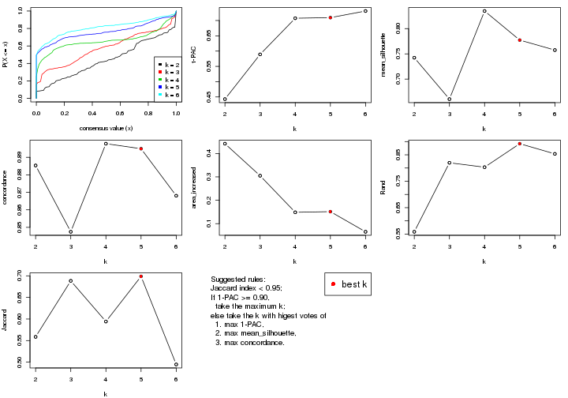
The numeric values for all these statistics can be obtained by get_stats().
get_stats(res)
#> k 1-PAC mean_silhouette concordance area_increased Rand Jaccard
#> 2 2 0.443 0.742 0.885 0.4418 0.559 0.559
#> 3 3 0.589 0.660 0.847 0.3048 0.820 0.688
#> 4 4 0.707 0.835 0.898 0.1485 0.803 0.594
#> 5 5 0.710 0.777 0.895 0.1513 0.892 0.699
#> 6 6 0.731 0.758 0.868 0.0652 0.853 0.495
suggest_best_k() suggests the best \(k\) based on these statistics. The rules are as follows:
NA.suggest_best_k(res)
#> [1] 5
Following shows the table of the partitions (You need to click the show/hide
code output link to see it). The membership matrix (columns with name p*)
is inferred by
clue::cl_consensus()
function with the SE method. Basically the value in the membership matrix
represents the probability to belong to a certain group. The finall class
label for an item is determined with the group with highest probability it
belongs to.
In get_classes() function, the entropy is calculated from the membership
matrix and the silhouette score is calculated from the consensus matrix.
cbind(get_classes(res, k = 2), get_membership(res, k = 2))
#> class entropy silhouette p1 p2
#> GSM1301497 2 0.0000 0.8754 0.000 1.000
#> GSM1301537 2 0.3274 0.8270 0.060 0.940
#> GSM1301521 2 0.9661 0.0854 0.392 0.608
#> GSM1301555 2 0.0000 0.8754 0.000 1.000
#> GSM1301501 2 0.4562 0.8083 0.096 0.904
#> GSM1301508 1 0.9909 0.4180 0.556 0.444
#> GSM1301481 2 0.0000 0.8754 0.000 1.000
#> GSM1301482 1 0.4690 0.7970 0.900 0.100
#> GSM1301483 2 0.8661 0.6001 0.288 0.712
#> GSM1301484 2 0.0000 0.8754 0.000 1.000
#> GSM1301485 2 0.1633 0.8594 0.024 0.976
#> GSM1301486 2 0.0376 0.8727 0.004 0.996
#> GSM1301487 2 0.0000 0.8754 0.000 1.000
#> GSM1301488 1 0.0000 0.8124 1.000 0.000
#> GSM1301489 2 0.0376 0.8733 0.004 0.996
#> GSM1301490 2 0.2236 0.8539 0.036 0.964
#> GSM1301491 2 0.9896 0.2583 0.440 0.560
#> GSM1301492 2 0.8813 0.5868 0.300 0.700
#> GSM1301493 2 0.0000 0.8754 0.000 1.000
#> GSM1301494 2 0.0000 0.8754 0.000 1.000
#> GSM1301495 2 0.0000 0.8754 0.000 1.000
#> GSM1301496 1 0.9661 0.3241 0.608 0.392
#> GSM1301498 2 0.0000 0.8754 0.000 1.000
#> GSM1301499 2 0.0000 0.8754 0.000 1.000
#> GSM1301500 1 0.0000 0.8124 1.000 0.000
#> GSM1301502 2 0.0000 0.8754 0.000 1.000
#> GSM1301503 2 0.0000 0.8754 0.000 1.000
#> GSM1301504 2 0.5946 0.7685 0.144 0.856
#> GSM1301505 2 0.0000 0.8754 0.000 1.000
#> GSM1301506 2 0.0000 0.8754 0.000 1.000
#> GSM1301507 1 0.6801 0.7765 0.820 0.180
#> GSM1301509 1 0.0000 0.8124 1.000 0.000
#> GSM1301510 1 0.7602 0.7025 0.780 0.220
#> GSM1301511 2 0.8763 0.5894 0.296 0.704
#> GSM1301512 2 0.9286 0.5126 0.344 0.656
#> GSM1301513 2 0.0000 0.8754 0.000 1.000
#> GSM1301514 1 0.9044 0.6130 0.680 0.320
#> GSM1301515 1 0.5842 0.7770 0.860 0.140
#> GSM1301516 2 0.0000 0.8754 0.000 1.000
#> GSM1301517 2 0.9998 0.0471 0.492 0.508
#> GSM1301518 1 0.0000 0.8124 1.000 0.000
#> GSM1301519 2 0.8661 0.6001 0.288 0.712
#> GSM1301520 2 0.0000 0.8754 0.000 1.000
#> GSM1301522 2 0.0000 0.8754 0.000 1.000
#> GSM1301523 1 0.4939 0.7937 0.892 0.108
#> GSM1301524 2 0.0000 0.8754 0.000 1.000
#> GSM1301525 1 0.9833 0.3477 0.576 0.424
#> GSM1301526 2 0.8443 0.6221 0.272 0.728
#> GSM1301527 2 0.8608 0.6054 0.284 0.716
#> GSM1301528 1 0.5629 0.7808 0.868 0.132
#> GSM1301529 1 0.2948 0.8142 0.948 0.052
#> GSM1301530 2 0.0000 0.8754 0.000 1.000
#> GSM1301531 2 0.0000 0.8754 0.000 1.000
#> GSM1301532 2 0.0000 0.8754 0.000 1.000
#> GSM1301533 2 0.0000 0.8754 0.000 1.000
#> GSM1301534 2 0.8763 0.5889 0.296 0.704
#> GSM1301535 2 0.0000 0.8754 0.000 1.000
#> GSM1301536 2 0.0000 0.8754 0.000 1.000
#> GSM1301538 2 0.9710 0.0536 0.400 0.600
#> GSM1301539 1 0.9393 0.5656 0.644 0.356
#> GSM1301540 2 0.0000 0.8754 0.000 1.000
#> GSM1301541 1 0.3431 0.8121 0.936 0.064
#> GSM1301542 1 0.0000 0.8124 1.000 0.000
#> GSM1301543 1 0.4690 0.7995 0.900 0.100
#> GSM1301544 2 0.0000 0.8754 0.000 1.000
#> GSM1301545 1 0.0000 0.8124 1.000 0.000
#> GSM1301546 2 0.9286 0.5095 0.344 0.656
#> GSM1301547 2 0.0000 0.8754 0.000 1.000
#> GSM1301548 1 0.8016 0.6704 0.756 0.244
#> GSM1301549 2 0.0000 0.8754 0.000 1.000
#> GSM1301550 1 0.0000 0.8124 1.000 0.000
#> GSM1301551 2 0.0000 0.8754 0.000 1.000
#> GSM1301552 2 0.5519 0.7413 0.128 0.872
#> GSM1301553 1 0.0000 0.8124 1.000 0.000
#> GSM1301554 2 0.8207 0.6392 0.256 0.744
#> GSM1301556 1 0.3274 0.8131 0.940 0.060
#> GSM1301557 2 0.0000 0.8754 0.000 1.000
#> GSM1301558 1 0.8763 0.5880 0.704 0.296
#> GSM1301559 2 0.3274 0.8371 0.060 0.940
#> GSM1301560 2 0.0000 0.8754 0.000 1.000
#> GSM1301561 1 0.9754 0.4897 0.592 0.408
cbind(get_classes(res, k = 3), get_membership(res, k = 3))
#> class entropy silhouette p1 p2 p3
#> GSM1301497 3 0.0000 0.8608 0.000 0.000 1.000
#> GSM1301537 3 0.3356 0.8329 0.056 0.036 0.908
#> GSM1301521 3 0.7366 0.2011 0.400 0.036 0.564
#> GSM1301555 3 0.1411 0.8658 0.000 0.036 0.964
#> GSM1301501 3 0.2261 0.8232 0.000 0.068 0.932
#> GSM1301508 2 0.6798 0.5126 0.048 0.696 0.256
#> GSM1301481 3 0.0000 0.8608 0.000 0.000 1.000
#> GSM1301482 1 0.4755 0.7037 0.808 0.184 0.008
#> GSM1301483 3 0.5810 0.5076 0.000 0.336 0.664
#> GSM1301484 3 0.0000 0.8608 0.000 0.000 1.000
#> GSM1301485 3 0.2689 0.8530 0.032 0.036 0.932
#> GSM1301486 3 0.1832 0.8641 0.008 0.036 0.956
#> GSM1301487 3 0.0000 0.8608 0.000 0.000 1.000
#> GSM1301488 1 0.5363 0.6517 0.724 0.276 0.000
#> GSM1301489 2 0.6026 0.4149 0.000 0.624 0.376
#> GSM1301490 3 0.1964 0.8457 0.000 0.056 0.944
#> GSM1301491 2 0.0000 0.6781 0.000 1.000 0.000
#> GSM1301492 3 0.6665 0.5027 0.036 0.276 0.688
#> GSM1301493 3 0.1411 0.8658 0.000 0.036 0.964
#> GSM1301494 3 0.0000 0.8608 0.000 0.000 1.000
#> GSM1301495 3 0.0892 0.8649 0.000 0.020 0.980
#> GSM1301496 2 0.9857 -0.0305 0.260 0.404 0.336
#> GSM1301498 3 0.1411 0.8658 0.000 0.036 0.964
#> GSM1301499 3 0.0000 0.8608 0.000 0.000 1.000
#> GSM1301500 1 0.0000 0.7001 1.000 0.000 0.000
#> GSM1301502 3 0.1411 0.8658 0.000 0.036 0.964
#> GSM1301503 2 0.6235 0.2760 0.000 0.564 0.436
#> GSM1301504 3 0.4002 0.7678 0.000 0.160 0.840
#> GSM1301505 3 0.0000 0.8608 0.000 0.000 1.000
#> GSM1301506 3 0.1411 0.8658 0.000 0.036 0.964
#> GSM1301507 2 0.3856 0.6273 0.072 0.888 0.040
#> GSM1301509 1 0.5138 0.6741 0.748 0.252 0.000
#> GSM1301510 1 0.0000 0.7001 1.000 0.000 0.000
#> GSM1301511 2 0.1031 0.6705 0.000 0.976 0.024
#> GSM1301512 3 0.7787 0.3801 0.064 0.348 0.588
#> GSM1301513 3 0.0000 0.8608 0.000 0.000 1.000
#> GSM1301514 1 0.9724 0.2984 0.452 0.280 0.268
#> GSM1301515 2 0.0000 0.6781 0.000 1.000 0.000
#> GSM1301516 3 0.1411 0.8658 0.000 0.036 0.964
#> GSM1301517 3 0.9596 0.0856 0.212 0.336 0.452
#> GSM1301518 1 0.4750 0.6928 0.784 0.216 0.000
#> GSM1301519 3 0.5560 0.5125 0.000 0.300 0.700
#> GSM1301520 3 0.1411 0.8658 0.000 0.036 0.964
#> GSM1301522 3 0.0000 0.8608 0.000 0.000 1.000
#> GSM1301523 1 0.0000 0.7001 1.000 0.000 0.000
#> GSM1301524 3 0.1411 0.8658 0.000 0.036 0.964
#> GSM1301525 1 0.9987 0.1459 0.356 0.312 0.332
#> GSM1301526 3 0.5678 0.5415 0.000 0.316 0.684
#> GSM1301527 2 0.0237 0.6787 0.000 0.996 0.004
#> GSM1301528 1 0.5466 0.7050 0.800 0.160 0.040
#> GSM1301529 1 0.4796 0.6891 0.780 0.220 0.000
#> GSM1301530 3 0.1411 0.8658 0.000 0.036 0.964
#> GSM1301531 3 0.1411 0.8658 0.000 0.036 0.964
#> GSM1301532 3 0.1411 0.8658 0.000 0.036 0.964
#> GSM1301533 3 0.1411 0.8658 0.000 0.036 0.964
#> GSM1301534 2 0.0000 0.6781 0.000 1.000 0.000
#> GSM1301535 3 0.1411 0.8658 0.000 0.036 0.964
#> GSM1301536 3 0.0000 0.8608 0.000 0.000 1.000
#> GSM1301538 3 0.7378 0.1881 0.404 0.036 0.560
#> GSM1301539 1 0.6632 0.4628 0.692 0.036 0.272
#> GSM1301540 2 0.5560 0.5054 0.000 0.700 0.300
#> GSM1301541 2 0.5988 0.2932 0.304 0.688 0.008
#> GSM1301542 1 0.0000 0.7001 1.000 0.000 0.000
#> GSM1301543 2 0.0000 0.6781 0.000 1.000 0.000
#> GSM1301544 3 0.1964 0.8574 0.000 0.056 0.944
#> GSM1301545 1 0.0000 0.7001 1.000 0.000 0.000
#> GSM1301546 3 0.7807 0.3981 0.068 0.336 0.596
#> GSM1301547 3 0.6204 0.1549 0.000 0.424 0.576
#> GSM1301548 2 0.0000 0.6781 0.000 1.000 0.000
#> GSM1301549 3 0.0000 0.8608 0.000 0.000 1.000
#> GSM1301550 1 0.5138 0.6740 0.748 0.252 0.000
#> GSM1301551 3 0.1289 0.8659 0.000 0.032 0.968
#> GSM1301552 3 0.3482 0.7514 0.128 0.000 0.872
#> GSM1301553 1 0.0000 0.7001 1.000 0.000 0.000
#> GSM1301554 2 0.1163 0.6754 0.000 0.972 0.028
#> GSM1301556 1 0.6299 0.3969 0.524 0.476 0.000
#> GSM1301557 3 0.0000 0.8608 0.000 0.000 1.000
#> GSM1301558 2 0.9626 -0.2829 0.392 0.404 0.204
#> GSM1301559 3 0.1411 0.8462 0.000 0.036 0.964
#> GSM1301560 3 0.1411 0.8658 0.000 0.036 0.964
#> GSM1301561 1 0.7128 0.3653 0.620 0.036 0.344
cbind(get_classes(res, k = 4), get_membership(res, k = 4))
#> class entropy silhouette p1 p2 p3 p4
#> GSM1301497 3 0.3047 0.8942 0.000 0.012 0.872 0.116
#> GSM1301537 3 0.0895 0.9234 0.020 0.004 0.976 0.000
#> GSM1301521 3 0.2870 0.9088 0.036 0.012 0.908 0.044
#> GSM1301555 3 0.0188 0.9246 0.000 0.004 0.996 0.000
#> GSM1301501 3 0.3486 0.7600 0.000 0.000 0.812 0.188
#> GSM1301508 2 0.0469 0.8933 0.000 0.988 0.012 0.000
#> GSM1301481 3 0.2610 0.9073 0.000 0.012 0.900 0.088
#> GSM1301482 4 0.5061 0.7020 0.272 0.004 0.020 0.704
#> GSM1301483 4 0.2589 0.7993 0.000 0.000 0.116 0.884
#> GSM1301484 3 0.2198 0.9107 0.000 0.008 0.920 0.072
#> GSM1301485 3 0.2271 0.9175 0.008 0.012 0.928 0.052
#> GSM1301486 3 0.1174 0.9241 0.000 0.012 0.968 0.020
#> GSM1301487 3 0.1452 0.9224 0.000 0.008 0.956 0.036
#> GSM1301488 4 0.4999 0.1923 0.492 0.000 0.000 0.508
#> GSM1301489 2 0.2216 0.8178 0.000 0.908 0.092 0.000
#> GSM1301490 3 0.2469 0.8461 0.000 0.000 0.892 0.108
#> GSM1301491 4 0.4277 0.6519 0.000 0.280 0.000 0.720
#> GSM1301492 4 0.1488 0.7753 0.000 0.012 0.032 0.956
#> GSM1301493 3 0.1398 0.9213 0.000 0.004 0.956 0.040
#> GSM1301494 3 0.3047 0.8942 0.000 0.012 0.872 0.116
#> GSM1301495 3 0.0000 0.9247 0.000 0.000 1.000 0.000
#> GSM1301496 4 0.3451 0.8093 0.020 0.052 0.044 0.884
#> GSM1301498 3 0.0188 0.9246 0.000 0.004 0.996 0.000
#> GSM1301499 3 0.3047 0.8942 0.000 0.012 0.872 0.116
#> GSM1301500 1 0.0000 1.0000 1.000 0.000 0.000 0.000
#> GSM1301502 3 0.1059 0.9245 0.000 0.012 0.972 0.016
#> GSM1301503 2 0.3831 0.6625 0.000 0.792 0.204 0.004
#> GSM1301504 3 0.4313 0.6326 0.000 0.004 0.736 0.260
#> GSM1301505 3 0.2053 0.9112 0.000 0.004 0.924 0.072
#> GSM1301506 3 0.0188 0.9246 0.000 0.004 0.996 0.000
#> GSM1301507 2 0.0712 0.8943 0.004 0.984 0.008 0.004
#> GSM1301509 4 0.3801 0.7538 0.220 0.000 0.000 0.780
#> GSM1301510 1 0.0000 1.0000 1.000 0.000 0.000 0.000
#> GSM1301511 4 0.2589 0.7819 0.000 0.116 0.000 0.884
#> GSM1301512 4 0.2589 0.7993 0.000 0.000 0.116 0.884
#> GSM1301513 3 0.2610 0.9087 0.000 0.012 0.900 0.088
#> GSM1301514 4 0.4989 0.7484 0.072 0.000 0.164 0.764
#> GSM1301515 2 0.0592 0.8891 0.000 0.984 0.000 0.016
#> GSM1301516 3 0.0188 0.9246 0.000 0.004 0.996 0.000
#> GSM1301517 4 0.2775 0.8098 0.020 0.000 0.084 0.896
#> GSM1301518 4 0.4103 0.7284 0.256 0.000 0.000 0.744
#> GSM1301519 4 0.1824 0.7948 0.000 0.004 0.060 0.936
#> GSM1301520 3 0.0188 0.9246 0.000 0.004 0.996 0.000
#> GSM1301522 3 0.0188 0.9245 0.000 0.004 0.996 0.000
#> GSM1301523 1 0.0000 1.0000 1.000 0.000 0.000 0.000
#> GSM1301524 3 0.0188 0.9246 0.000 0.004 0.996 0.000
#> GSM1301525 4 0.3375 0.7336 0.012 0.008 0.116 0.864
#> GSM1301526 4 0.3528 0.7332 0.000 0.000 0.192 0.808
#> GSM1301527 2 0.0524 0.8959 0.000 0.988 0.004 0.008
#> GSM1301528 4 0.6450 0.6305 0.256 0.004 0.104 0.636
#> GSM1301529 4 0.4454 0.6803 0.308 0.000 0.000 0.692
#> GSM1301530 3 0.0336 0.9233 0.000 0.000 0.992 0.008
#> GSM1301531 3 0.0188 0.9246 0.000 0.004 0.996 0.000
#> GSM1301532 3 0.0188 0.9246 0.000 0.004 0.996 0.000
#> GSM1301533 3 0.0188 0.9246 0.000 0.004 0.996 0.000
#> GSM1301534 2 0.0524 0.8959 0.000 0.988 0.004 0.008
#> GSM1301535 3 0.0188 0.9246 0.000 0.004 0.996 0.000
#> GSM1301536 3 0.2266 0.9099 0.000 0.004 0.912 0.084
#> GSM1301538 3 0.1661 0.9134 0.052 0.004 0.944 0.000
#> GSM1301539 3 0.4485 0.7917 0.176 0.012 0.792 0.020
#> GSM1301540 2 0.0469 0.8933 0.000 0.988 0.012 0.000
#> GSM1301541 2 0.7555 -0.0588 0.148 0.452 0.008 0.392
#> GSM1301542 1 0.0000 1.0000 1.000 0.000 0.000 0.000
#> GSM1301543 2 0.1211 0.8764 0.000 0.960 0.000 0.040
#> GSM1301544 3 0.0927 0.9248 0.000 0.016 0.976 0.008
#> GSM1301545 1 0.0000 1.0000 1.000 0.000 0.000 0.000
#> GSM1301546 4 0.2714 0.8014 0.004 0.000 0.112 0.884
#> GSM1301547 3 0.4989 0.1010 0.000 0.472 0.528 0.000
#> GSM1301548 2 0.0524 0.8959 0.000 0.988 0.004 0.008
#> GSM1301549 3 0.2610 0.9066 0.000 0.012 0.900 0.088
#> GSM1301550 4 0.3975 0.7404 0.240 0.000 0.000 0.760
#> GSM1301551 3 0.2255 0.9163 0.000 0.012 0.920 0.068
#> GSM1301552 3 0.2867 0.9012 0.000 0.012 0.884 0.104
#> GSM1301553 1 0.0000 1.0000 1.000 0.000 0.000 0.000
#> GSM1301554 2 0.0524 0.8959 0.000 0.988 0.004 0.008
#> GSM1301556 4 0.3222 0.7982 0.036 0.076 0.004 0.884
#> GSM1301557 3 0.2473 0.9089 0.000 0.012 0.908 0.080
#> GSM1301558 4 0.3268 0.8069 0.028 0.056 0.024 0.892
#> GSM1301559 3 0.3402 0.8488 0.000 0.004 0.832 0.164
#> GSM1301560 3 0.0188 0.9246 0.000 0.004 0.996 0.000
#> GSM1301561 3 0.4415 0.8390 0.124 0.012 0.820 0.044
cbind(get_classes(res, k = 5), get_membership(res, k = 5))
#> class entropy silhouette p1 p2 p3 p4 p5
#> GSM1301497 5 0.0000 0.8052 0.000 0.000 0.000 0.000 1.000
#> GSM1301537 3 0.0324 0.8386 0.004 0.000 0.992 0.000 0.004
#> GSM1301521 5 0.2966 0.8008 0.000 0.000 0.184 0.000 0.816
#> GSM1301555 3 0.0000 0.8402 0.000 0.000 1.000 0.000 0.000
#> GSM1301501 3 0.3210 0.6926 0.000 0.000 0.788 0.212 0.000
#> GSM1301508 2 0.0000 0.9163 0.000 1.000 0.000 0.000 0.000
#> GSM1301481 3 0.3999 0.5831 0.000 0.000 0.656 0.000 0.344
#> GSM1301482 4 0.5582 0.6832 0.136 0.000 0.024 0.692 0.148
#> GSM1301483 4 0.0000 0.8677 0.000 0.000 0.000 1.000 0.000
#> GSM1301484 3 0.3274 0.7253 0.000 0.000 0.780 0.000 0.220
#> GSM1301485 5 0.2891 0.8083 0.000 0.000 0.176 0.000 0.824
#> GSM1301486 3 0.2813 0.7346 0.000 0.000 0.832 0.000 0.168
#> GSM1301487 5 0.4297 0.2638 0.000 0.000 0.472 0.000 0.528
#> GSM1301488 4 0.4182 0.3343 0.400 0.000 0.000 0.600 0.000
#> GSM1301489 2 0.0880 0.8880 0.000 0.968 0.032 0.000 0.000
#> GSM1301490 3 0.2127 0.7817 0.000 0.000 0.892 0.108 0.000
#> GSM1301491 4 0.3109 0.7410 0.000 0.200 0.000 0.800 0.000
#> GSM1301492 5 0.0000 0.8052 0.000 0.000 0.000 0.000 1.000
#> GSM1301493 3 0.4304 -0.2005 0.000 0.000 0.516 0.000 0.484
#> GSM1301494 5 0.0000 0.8052 0.000 0.000 0.000 0.000 1.000
#> GSM1301495 3 0.0162 0.8391 0.000 0.000 0.996 0.000 0.004
#> GSM1301496 4 0.0000 0.8677 0.000 0.000 0.000 1.000 0.000
#> GSM1301498 3 0.0000 0.8402 0.000 0.000 1.000 0.000 0.000
#> GSM1301499 5 0.0000 0.8052 0.000 0.000 0.000 0.000 1.000
#> GSM1301500 1 0.0000 1.0000 1.000 0.000 0.000 0.000 0.000
#> GSM1301502 3 0.2377 0.7710 0.000 0.000 0.872 0.000 0.128
#> GSM1301503 2 0.2561 0.7481 0.000 0.856 0.144 0.000 0.000
#> GSM1301504 3 0.3774 0.5898 0.000 0.000 0.704 0.296 0.000
#> GSM1301505 3 0.2929 0.7450 0.000 0.000 0.820 0.000 0.180
#> GSM1301506 3 0.0000 0.8402 0.000 0.000 1.000 0.000 0.000
#> GSM1301507 2 0.0000 0.9163 0.000 1.000 0.000 0.000 0.000
#> GSM1301509 4 0.1197 0.8585 0.048 0.000 0.000 0.952 0.000
#> GSM1301510 1 0.0000 1.0000 1.000 0.000 0.000 0.000 0.000
#> GSM1301511 4 0.0000 0.8677 0.000 0.000 0.000 1.000 0.000
#> GSM1301512 4 0.0000 0.8677 0.000 0.000 0.000 1.000 0.000
#> GSM1301513 5 0.2020 0.8280 0.000 0.000 0.100 0.000 0.900
#> GSM1301514 4 0.2719 0.7688 0.004 0.000 0.144 0.852 0.000
#> GSM1301515 2 0.0000 0.9163 0.000 1.000 0.000 0.000 0.000
#> GSM1301516 3 0.0000 0.8402 0.000 0.000 1.000 0.000 0.000
#> GSM1301517 4 0.0000 0.8677 0.000 0.000 0.000 1.000 0.000
#> GSM1301518 4 0.1732 0.8455 0.080 0.000 0.000 0.920 0.000
#> GSM1301519 4 0.3304 0.7410 0.000 0.000 0.016 0.816 0.168
#> GSM1301520 3 0.0000 0.8402 0.000 0.000 1.000 0.000 0.000
#> GSM1301522 3 0.0000 0.8402 0.000 0.000 1.000 0.000 0.000
#> GSM1301523 1 0.0000 1.0000 1.000 0.000 0.000 0.000 0.000
#> GSM1301524 3 0.0000 0.8402 0.000 0.000 1.000 0.000 0.000
#> GSM1301525 4 0.3647 0.7817 0.000 0.000 0.052 0.816 0.132
#> GSM1301526 4 0.1965 0.7992 0.000 0.000 0.096 0.904 0.000
#> GSM1301527 2 0.0000 0.9163 0.000 1.000 0.000 0.000 0.000
#> GSM1301528 4 0.5734 0.5355 0.076 0.000 0.016 0.612 0.296
#> GSM1301529 4 0.3305 0.7368 0.224 0.000 0.000 0.776 0.000
#> GSM1301530 3 0.0000 0.8402 0.000 0.000 1.000 0.000 0.000
#> GSM1301531 3 0.0000 0.8402 0.000 0.000 1.000 0.000 0.000
#> GSM1301532 3 0.0000 0.8402 0.000 0.000 1.000 0.000 0.000
#> GSM1301533 3 0.0000 0.8402 0.000 0.000 1.000 0.000 0.000
#> GSM1301534 2 0.0000 0.9163 0.000 1.000 0.000 0.000 0.000
#> GSM1301535 3 0.0000 0.8402 0.000 0.000 1.000 0.000 0.000
#> GSM1301536 3 0.3336 0.7186 0.000 0.000 0.772 0.000 0.228
#> GSM1301538 3 0.2439 0.7627 0.004 0.000 0.876 0.000 0.120
#> GSM1301539 3 0.4100 0.6736 0.044 0.000 0.764 0.000 0.192
#> GSM1301540 2 0.0000 0.9163 0.000 1.000 0.000 0.000 0.000
#> GSM1301541 2 0.5406 -0.0586 0.056 0.476 0.000 0.468 0.000
#> GSM1301542 1 0.0000 1.0000 1.000 0.000 0.000 0.000 0.000
#> GSM1301543 2 0.0703 0.8986 0.000 0.976 0.000 0.024 0.000
#> GSM1301544 3 0.2605 0.7327 0.000 0.000 0.852 0.000 0.148
#> GSM1301545 1 0.0000 1.0000 1.000 0.000 0.000 0.000 0.000
#> GSM1301546 4 0.0000 0.8677 0.000 0.000 0.000 1.000 0.000
#> GSM1301547 3 0.4249 0.2163 0.000 0.432 0.568 0.000 0.000
#> GSM1301548 2 0.0000 0.9163 0.000 1.000 0.000 0.000 0.000
#> GSM1301549 3 0.3707 0.6712 0.000 0.000 0.716 0.000 0.284
#> GSM1301550 4 0.1410 0.8539 0.060 0.000 0.000 0.940 0.000
#> GSM1301551 5 0.2813 0.8134 0.000 0.000 0.168 0.000 0.832
#> GSM1301552 5 0.1043 0.8215 0.000 0.000 0.040 0.000 0.960
#> GSM1301553 1 0.0000 1.0000 1.000 0.000 0.000 0.000 0.000
#> GSM1301554 2 0.0000 0.9163 0.000 1.000 0.000 0.000 0.000
#> GSM1301556 4 0.0000 0.8677 0.000 0.000 0.000 1.000 0.000
#> GSM1301557 3 0.3452 0.7095 0.000 0.000 0.756 0.000 0.244
#> GSM1301558 4 0.0000 0.8677 0.000 0.000 0.000 1.000 0.000
#> GSM1301559 3 0.4994 0.6654 0.000 0.000 0.704 0.112 0.184
#> GSM1301560 3 0.0000 0.8402 0.000 0.000 1.000 0.000 0.000
#> GSM1301561 5 0.3409 0.8036 0.024 0.000 0.160 0.000 0.816
cbind(get_classes(res, k = 6), get_membership(res, k = 6))
#> class entropy silhouette p1 p2 p3 p4 p5 p6
#> GSM1301497 5 0.3409 0.6858 0.000 0.000 0.300 0.000 0.700 0.000
#> GSM1301537 3 0.3817 0.4467 0.000 0.000 0.568 0.000 0.000 0.432
#> GSM1301521 3 0.2178 0.6609 0.000 0.000 0.868 0.000 0.000 0.132
#> GSM1301555 6 0.1610 0.8045 0.000 0.000 0.084 0.000 0.000 0.916
#> GSM1301501 6 0.3043 0.6529 0.000 0.000 0.000 0.200 0.008 0.792
#> GSM1301508 2 0.0000 0.9697 0.000 1.000 0.000 0.000 0.000 0.000
#> GSM1301481 5 0.4765 0.7181 0.000 0.000 0.172 0.000 0.676 0.152
#> GSM1301482 4 0.4167 0.7530 0.104 0.000 0.096 0.776 0.000 0.024
#> GSM1301483 4 0.1267 0.8356 0.000 0.000 0.000 0.940 0.060 0.000
#> GSM1301484 5 0.3073 0.7714 0.000 0.000 0.008 0.000 0.788 0.204
#> GSM1301485 3 0.2593 0.5744 0.000 0.000 0.844 0.000 0.148 0.008
#> GSM1301486 3 0.5582 0.4582 0.000 0.000 0.476 0.000 0.144 0.380
#> GSM1301487 6 0.3076 0.6248 0.000 0.000 0.240 0.000 0.000 0.760
#> GSM1301488 4 0.4131 0.3574 0.384 0.000 0.000 0.600 0.016 0.000
#> GSM1301489 2 0.1049 0.9389 0.000 0.960 0.000 0.000 0.008 0.032
#> GSM1301490 6 0.3138 0.7333 0.000 0.000 0.000 0.108 0.060 0.832
#> GSM1301491 4 0.2697 0.7509 0.000 0.188 0.000 0.812 0.000 0.000
#> GSM1301492 5 0.2883 0.7542 0.000 0.000 0.212 0.000 0.788 0.000
#> GSM1301493 3 0.3515 0.5907 0.000 0.000 0.676 0.000 0.000 0.324
#> GSM1301494 5 0.2883 0.7542 0.000 0.000 0.212 0.000 0.788 0.000
#> GSM1301495 6 0.0146 0.8737 0.000 0.000 0.004 0.000 0.000 0.996
#> GSM1301496 4 0.0260 0.8496 0.000 0.000 0.000 0.992 0.008 0.000
#> GSM1301498 6 0.0260 0.8719 0.000 0.000 0.000 0.000 0.008 0.992
#> GSM1301499 5 0.1387 0.7472 0.000 0.000 0.068 0.000 0.932 0.000
#> GSM1301500 1 0.0000 1.0000 1.000 0.000 0.000 0.000 0.000 0.000
#> GSM1301502 6 0.2378 0.7254 0.000 0.000 0.152 0.000 0.000 0.848
#> GSM1301503 2 0.2442 0.7855 0.000 0.852 0.004 0.000 0.000 0.144
#> GSM1301504 6 0.3575 0.5302 0.000 0.000 0.000 0.284 0.008 0.708
#> GSM1301505 5 0.2912 0.7585 0.000 0.000 0.000 0.000 0.784 0.216
#> GSM1301506 6 0.0000 0.8752 0.000 0.000 0.000 0.000 0.000 1.000
#> GSM1301507 2 0.0146 0.9676 0.000 0.996 0.004 0.000 0.000 0.000
#> GSM1301509 4 0.1141 0.8409 0.052 0.000 0.000 0.948 0.000 0.000
#> GSM1301510 1 0.0000 1.0000 1.000 0.000 0.000 0.000 0.000 0.000
#> GSM1301511 4 0.0000 0.8502 0.000 0.000 0.000 1.000 0.000 0.000
#> GSM1301512 4 0.0000 0.8502 0.000 0.000 0.000 1.000 0.000 0.000
#> GSM1301513 3 0.5989 -0.2137 0.000 0.000 0.432 0.000 0.320 0.248
#> GSM1301514 4 0.2300 0.7499 0.000 0.000 0.000 0.856 0.000 0.144
#> GSM1301515 2 0.0000 0.9697 0.000 1.000 0.000 0.000 0.000 0.000
#> GSM1301516 6 0.0000 0.8752 0.000 0.000 0.000 0.000 0.000 1.000
#> GSM1301517 4 0.0000 0.8502 0.000 0.000 0.000 1.000 0.000 0.000
#> GSM1301518 4 0.5721 0.6284 0.048 0.000 0.128 0.624 0.200 0.000
#> GSM1301519 5 0.3684 0.5524 0.000 0.000 0.000 0.332 0.664 0.004
#> GSM1301520 6 0.0000 0.8752 0.000 0.000 0.000 0.000 0.000 1.000
#> GSM1301522 6 0.1007 0.8495 0.000 0.000 0.000 0.000 0.044 0.956
#> GSM1301523 1 0.0000 1.0000 1.000 0.000 0.000 0.000 0.000 0.000
#> GSM1301524 6 0.0000 0.8752 0.000 0.000 0.000 0.000 0.000 1.000
#> GSM1301525 4 0.3768 0.7614 0.000 0.000 0.096 0.812 0.056 0.036
#> GSM1301526 4 0.1910 0.7815 0.000 0.000 0.000 0.892 0.000 0.108
#> GSM1301527 2 0.0000 0.9697 0.000 1.000 0.000 0.000 0.000 0.000
#> GSM1301528 3 0.4628 0.2102 0.044 0.000 0.608 0.344 0.004 0.000
#> GSM1301529 4 0.4011 0.6963 0.204 0.000 0.060 0.736 0.000 0.000
#> GSM1301530 6 0.0000 0.8752 0.000 0.000 0.000 0.000 0.000 1.000
#> GSM1301531 6 0.0632 0.8626 0.000 0.000 0.024 0.000 0.000 0.976
#> GSM1301532 6 0.0000 0.8752 0.000 0.000 0.000 0.000 0.000 1.000
#> GSM1301533 6 0.0000 0.8752 0.000 0.000 0.000 0.000 0.000 1.000
#> GSM1301534 2 0.0000 0.9697 0.000 1.000 0.000 0.000 0.000 0.000
#> GSM1301535 6 0.0000 0.8752 0.000 0.000 0.000 0.000 0.000 1.000
#> GSM1301536 5 0.2994 0.7676 0.000 0.000 0.004 0.000 0.788 0.208
#> GSM1301538 3 0.3797 0.4675 0.000 0.000 0.580 0.000 0.000 0.420
#> GSM1301539 3 0.3431 0.6539 0.016 0.000 0.756 0.000 0.000 0.228
#> GSM1301540 2 0.0146 0.9677 0.000 0.996 0.000 0.000 0.000 0.004
#> GSM1301541 4 0.4473 0.0565 0.028 0.484 0.000 0.488 0.000 0.000
#> GSM1301542 1 0.0000 1.0000 1.000 0.000 0.000 0.000 0.000 0.000
#> GSM1301543 2 0.0972 0.9443 0.000 0.964 0.000 0.028 0.008 0.000
#> GSM1301544 6 0.2003 0.7823 0.000 0.000 0.116 0.000 0.000 0.884
#> GSM1301545 1 0.0000 1.0000 1.000 0.000 0.000 0.000 0.000 0.000
#> GSM1301546 4 0.0000 0.8502 0.000 0.000 0.000 1.000 0.000 0.000
#> GSM1301547 6 0.3823 0.2077 0.000 0.436 0.000 0.000 0.000 0.564
#> GSM1301548 2 0.0000 0.9697 0.000 1.000 0.000 0.000 0.000 0.000
#> GSM1301549 5 0.2956 0.8045 0.000 0.000 0.040 0.000 0.840 0.120
#> GSM1301550 4 0.1075 0.8415 0.048 0.000 0.000 0.952 0.000 0.000
#> GSM1301551 3 0.2586 0.6466 0.000 0.000 0.868 0.000 0.032 0.100
#> GSM1301552 3 0.2450 0.5540 0.000 0.000 0.868 0.000 0.116 0.016
#> GSM1301553 1 0.0000 1.0000 1.000 0.000 0.000 0.000 0.000 0.000
#> GSM1301554 2 0.0000 0.9697 0.000 1.000 0.000 0.000 0.000 0.000
#> GSM1301556 4 0.0000 0.8502 0.000 0.000 0.000 1.000 0.000 0.000
#> GSM1301557 5 0.3394 0.8009 0.000 0.000 0.052 0.000 0.804 0.144
#> GSM1301558 4 0.0405 0.8494 0.000 0.000 0.000 0.988 0.008 0.004
#> GSM1301559 5 0.2897 0.7840 0.000 0.000 0.000 0.060 0.852 0.088
#> GSM1301560 6 0.0000 0.8752 0.000 0.000 0.000 0.000 0.000 1.000
#> GSM1301561 3 0.0000 0.5897 0.000 0.000 1.000 0.000 0.000 0.000
Heatmaps for the consensus matrix. It visualizes the probability of two samples to be in a same group.
consensus_heatmap(res, k = 2)
consensus_heatmap(res, k = 3)
consensus_heatmap(res, k = 4)
consensus_heatmap(res, k = 5)
consensus_heatmap(res, k = 6)
Heatmaps for the membership of samples in all partitions to see how consistent they are:
membership_heatmap(res, k = 2)
membership_heatmap(res, k = 3)
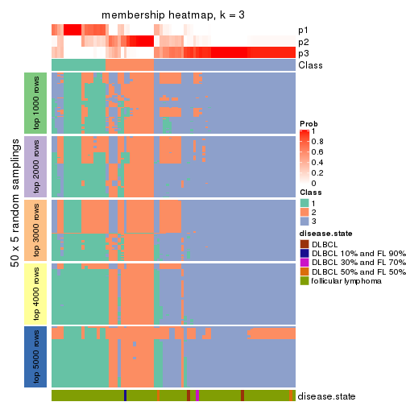
membership_heatmap(res, k = 4)
membership_heatmap(res, k = 5)
membership_heatmap(res, k = 6)
As soon as we have had the classes for columns, we can look for signatures which are significantly different between classes which can be candidate marks for certain classes. Following are the heatmaps for signatures.
Signature heatmaps where rows are scaled:
get_signatures(res, k = 2)
get_signatures(res, k = 3)
get_signatures(res, k = 4)
get_signatures(res, k = 5)
get_signatures(res, k = 6)
Signature heatmaps where rows are not scaled:
get_signatures(res, k = 2, scale_rows = FALSE)
get_signatures(res, k = 3, scale_rows = FALSE)
get_signatures(res, k = 4, scale_rows = FALSE)
get_signatures(res, k = 5, scale_rows = FALSE)
get_signatures(res, k = 6, scale_rows = FALSE)
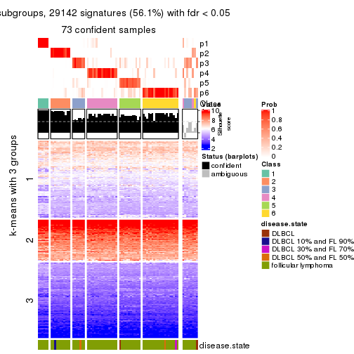
Compare the overlap of signatures from different k:
compare_signatures(res)
get_signature() returns a data frame invisibly. TO get the list of signatures, the function
call should be assigned to a variable explicitly. In following code, if plot argument is set
to FALSE, no heatmap is plotted while only the differential analysis is performed.
# code only for demonstration
tb = get_signature(res, k = ..., plot = FALSE)
An example of the output of tb is:
#> which_row fdr mean_1 mean_2 scaled_mean_1 scaled_mean_2 km
#> 1 38 0.042760348 8.373488 9.131774 -0.5533452 0.5164555 1
#> 2 40 0.018707592 7.106213 8.469186 -0.6173731 0.5762149 1
#> 3 55 0.019134737 10.221463 11.207825 -0.6159697 0.5749050 1
#> 4 59 0.006059896 5.921854 7.869574 -0.6899429 0.6439467 1
#> 5 60 0.018055526 8.928898 10.211722 -0.6204761 0.5791110 1
#> 6 98 0.009384629 15.714769 14.887706 0.6635654 -0.6193277 2
...
The columns in tb are:
which_row: row indices corresponding to the input matrix.fdr: FDR for the differential test. mean_x: The mean value in group x.scaled_mean_x: The mean value in group x after rows are scaled.km: Row groups if k-means clustering is applied to rows.UMAP plot which shows how samples are separated.
dimension_reduction(res, k = 2, method = "UMAP")
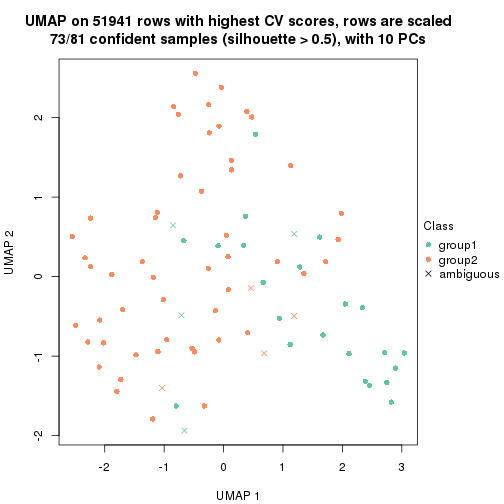
dimension_reduction(res, k = 3, method = "UMAP")
dimension_reduction(res, k = 4, method = "UMAP")
dimension_reduction(res, k = 5, method = "UMAP")
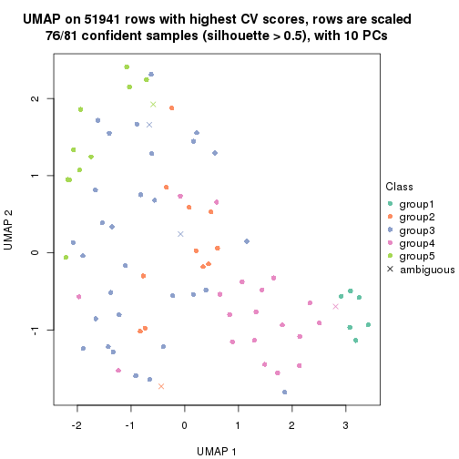
dimension_reduction(res, k = 6, method = "UMAP")
Following heatmap shows how subgroups are split when increasing k:
collect_classes(res)
Test correlation between subgroups and known annotations. If the known annotation is numeric, one-way ANOVA test is applied, and if the known annotation is discrete, chi-squared contingency table test is applied.
test_to_known_factors(res)
#> n disease.state(p) k
#> CV:pam 73 0.609 2
#> CV:pam 65 0.499 3
#> CV:pam 78 0.541 4
#> CV:pam 76 0.605 5
#> CV:pam 73 0.548 6
If matrix rows can be associated to genes, consider to use GO_Enrichment(res,
...) to perform function enrichment for the signature genes.
The object with results only for a single top-value method and a single partition method can be extracted as:
res = res_list["CV", "mclust"]
# you can also extract it by
# res = res_list["CV:mclust"]
A summary of res and all the functions that can be applied to it:
res
#> A 'ConsensusPartition' object with k = 2, 3, 4, 5, 6.
#> On a matrix with 51941 rows and 81 columns.
#> Top rows (1000, 2000, 3000, 4000, 5000) are extracted by 'CV' method.
#> Subgroups are detected by 'mclust' method.
#> Performed in total 1250 partitions by row resampling.
#> Best k for subgroups seems to be 3.
#>
#> Following methods can be applied to this 'ConsensusPartition' object:
#> [1] "cola_report" "collect_classes" "collect_plots"
#> [4] "collect_stats" "colnames" "compare_signatures"
#> [7] "consensus_heatmap" "dimension_reduction" "functional_enrichment"
#> [10] "get_anno_col" "get_anno" "get_classes"
#> [13] "get_consensus" "get_matrix" "get_membership"
#> [16] "get_param" "get_signatures" "get_stats"
#> [19] "is_best_k" "is_stable_k" "membership_heatmap"
#> [22] "ncol" "nrow" "plot_ecdf"
#> [25] "rownames" "select_partition_number" "show"
#> [28] "suggest_best_k" "test_to_known_factors"
collect_plots() function collects all the plots made from res for all k (number of partitions)
into one single page to provide an easy and fast comparison between different k.
collect_plots(res)
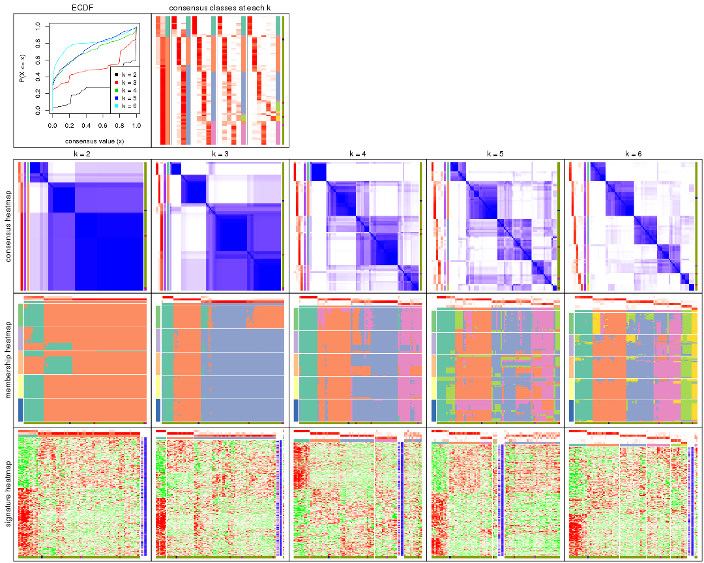
The plots are:
k and the heatmap of
predicted classes for each k.k.k.k.All the plots in panels can be made by individual functions and they are plotted later in this section.
select_partition_number() produces several plots showing different
statistics for choosing “optimized” k. There are following statistics:
k;k, the area increased is defined as \(A_k - A_{k-1}\).The detailed explanations of these statistics can be found in the cola vignette.
Generally speaking, lower PAC score, higher mean silhouette score or higher
concordance corresponds to better partition. Rand index and Jaccard index
measure how similar the current partition is compared to partition with k-1.
If they are too similar, we won't accept k is better than k-1.
select_partition_number(res)
The numeric values for all these statistics can be obtained by get_stats().
get_stats(res)
#> k 1-PAC mean_silhouette concordance area_increased Rand Jaccard
#> 2 2 0.474 0.880 0.906 0.2774 0.727 0.727
#> 3 3 0.559 0.858 0.908 0.8357 0.633 0.543
#> 4 4 0.599 0.733 0.869 0.3924 0.694 0.440
#> 5 5 0.558 0.518 0.726 0.0479 0.932 0.766
#> 6 6 0.728 0.808 0.854 0.0856 0.920 0.688
suggest_best_k() suggests the best \(k\) based on these statistics. The rules are as follows:
NA.suggest_best_k(res)
#> [1] 3
Following shows the table of the partitions (You need to click the show/hide
code output link to see it). The membership matrix (columns with name p*)
is inferred by
clue::cl_consensus()
function with the SE method. Basically the value in the membership matrix
represents the probability to belong to a certain group. The finall class
label for an item is determined with the group with highest probability it
belongs to.
In get_classes() function, the entropy is calculated from the membership
matrix and the silhouette score is calculated from the consensus matrix.
cbind(get_classes(res, k = 2), get_membership(res, k = 2))
#> class entropy silhouette p1 p2
#> GSM1301497 2 0.0376 0.917 0.004 0.996
#> GSM1301537 2 0.0000 0.916 0.000 1.000
#> GSM1301521 2 0.0000 0.916 0.000 1.000
#> GSM1301555 2 0.6148 0.817 0.152 0.848
#> GSM1301501 2 0.0376 0.917 0.004 0.996
#> GSM1301508 2 0.7528 0.770 0.216 0.784
#> GSM1301481 2 0.0376 0.917 0.004 0.996
#> GSM1301482 1 0.9170 0.876 0.668 0.332
#> GSM1301483 2 0.0376 0.917 0.004 0.996
#> GSM1301484 2 0.0376 0.917 0.004 0.996
#> GSM1301485 2 0.0376 0.917 0.004 0.996
#> GSM1301486 2 0.0376 0.917 0.004 0.996
#> GSM1301487 2 0.0376 0.917 0.004 0.996
#> GSM1301488 1 0.7528 0.919 0.784 0.216
#> GSM1301489 2 0.7528 0.770 0.216 0.784
#> GSM1301490 2 0.0376 0.917 0.004 0.996
#> GSM1301491 2 0.7528 0.770 0.216 0.784
#> GSM1301492 2 0.0376 0.917 0.004 0.996
#> GSM1301493 2 0.0000 0.916 0.000 1.000
#> GSM1301494 2 0.0376 0.917 0.004 0.996
#> GSM1301495 2 0.0376 0.917 0.004 0.996
#> GSM1301496 2 0.0000 0.916 0.000 1.000
#> GSM1301498 2 0.0376 0.917 0.004 0.996
#> GSM1301499 2 0.0376 0.917 0.004 0.996
#> GSM1301500 1 0.7528 0.919 0.784 0.216
#> GSM1301502 2 0.0000 0.916 0.000 1.000
#> GSM1301503 2 0.7528 0.770 0.216 0.784
#> GSM1301504 2 0.0000 0.916 0.000 1.000
#> GSM1301505 2 0.0376 0.917 0.004 0.996
#> GSM1301506 2 0.7528 0.770 0.216 0.784
#> GSM1301507 2 0.7528 0.770 0.216 0.784
#> GSM1301509 1 0.9248 0.867 0.660 0.340
#> GSM1301510 1 0.7528 0.919 0.784 0.216
#> GSM1301511 2 0.7528 0.770 0.216 0.784
#> GSM1301512 2 0.0376 0.917 0.004 0.996
#> GSM1301513 2 0.0376 0.917 0.004 0.996
#> GSM1301514 2 0.0000 0.916 0.000 1.000
#> GSM1301515 2 0.7528 0.770 0.216 0.784
#> GSM1301516 2 0.0376 0.917 0.004 0.996
#> GSM1301517 2 0.0376 0.917 0.004 0.996
#> GSM1301518 1 0.8608 0.903 0.716 0.284
#> GSM1301519 2 0.0376 0.917 0.004 0.996
#> GSM1301520 2 0.6048 0.820 0.148 0.852
#> GSM1301522 2 0.0376 0.917 0.004 0.996
#> GSM1301523 1 0.7528 0.919 0.784 0.216
#> GSM1301524 2 0.0376 0.917 0.004 0.996
#> GSM1301525 2 0.0000 0.916 0.000 1.000
#> GSM1301526 2 0.0672 0.912 0.008 0.992
#> GSM1301527 2 0.7528 0.770 0.216 0.784
#> GSM1301528 1 0.9044 0.885 0.680 0.320
#> GSM1301529 1 0.9580 0.813 0.620 0.380
#> GSM1301530 2 0.7528 0.770 0.216 0.784
#> GSM1301531 2 0.0376 0.917 0.004 0.996
#> GSM1301532 2 0.7528 0.770 0.216 0.784
#> GSM1301533 2 0.0376 0.917 0.004 0.996
#> GSM1301534 2 0.7528 0.770 0.216 0.784
#> GSM1301535 2 0.0376 0.917 0.004 0.996
#> GSM1301536 2 0.0376 0.917 0.004 0.996
#> GSM1301538 2 0.0000 0.916 0.000 1.000
#> GSM1301539 2 0.0000 0.916 0.000 1.000
#> GSM1301540 2 0.0376 0.917 0.004 0.996
#> GSM1301541 2 0.7528 0.770 0.216 0.784
#> GSM1301542 1 0.7528 0.919 0.784 0.216
#> GSM1301543 2 0.6247 0.814 0.156 0.844
#> GSM1301544 2 0.0000 0.916 0.000 1.000
#> GSM1301545 1 0.7528 0.919 0.784 0.216
#> GSM1301546 2 0.0000 0.916 0.000 1.000
#> GSM1301547 2 0.7528 0.770 0.216 0.784
#> GSM1301548 2 0.7528 0.770 0.216 0.784
#> GSM1301549 2 0.0376 0.917 0.004 0.996
#> GSM1301550 1 0.9661 0.792 0.608 0.392
#> GSM1301551 2 0.0376 0.917 0.004 0.996
#> GSM1301552 2 0.0376 0.917 0.004 0.996
#> GSM1301553 1 0.7528 0.919 0.784 0.216
#> GSM1301554 2 0.7528 0.770 0.216 0.784
#> GSM1301556 2 0.0000 0.916 0.000 1.000
#> GSM1301557 2 0.0376 0.917 0.004 0.996
#> GSM1301558 2 0.0000 0.916 0.000 1.000
#> GSM1301559 2 0.0376 0.917 0.004 0.996
#> GSM1301560 2 0.0000 0.916 0.000 1.000
#> GSM1301561 2 0.0376 0.917 0.004 0.996
cbind(get_classes(res, k = 3), get_membership(res, k = 3))
#> class entropy silhouette p1 p2 p3
#> GSM1301497 3 0.2959 0.870 0.000 0.100 0.900
#> GSM1301537 3 0.4555 0.854 0.000 0.200 0.800
#> GSM1301521 3 0.0237 0.862 0.000 0.004 0.996
#> GSM1301555 2 0.2537 0.883 0.000 0.920 0.080
#> GSM1301501 3 0.4555 0.854 0.000 0.200 0.800
#> GSM1301508 2 0.0000 0.969 0.000 1.000 0.000
#> GSM1301481 3 0.0000 0.861 0.000 0.000 1.000
#> GSM1301482 3 0.5859 0.559 0.344 0.000 0.656
#> GSM1301483 3 0.4555 0.854 0.000 0.200 0.800
#> GSM1301484 3 0.0000 0.861 0.000 0.000 1.000
#> GSM1301485 3 0.0000 0.861 0.000 0.000 1.000
#> GSM1301486 3 0.0000 0.861 0.000 0.000 1.000
#> GSM1301487 3 0.0000 0.861 0.000 0.000 1.000
#> GSM1301488 1 0.0000 0.914 1.000 0.000 0.000
#> GSM1301489 2 0.2356 0.895 0.000 0.928 0.072
#> GSM1301490 3 0.2537 0.871 0.000 0.080 0.920
#> GSM1301491 2 0.1860 0.916 0.000 0.948 0.052
#> GSM1301492 3 0.0000 0.861 0.000 0.000 1.000
#> GSM1301493 3 0.0747 0.865 0.000 0.016 0.984
#> GSM1301494 3 0.0000 0.861 0.000 0.000 1.000
#> GSM1301495 3 0.0000 0.861 0.000 0.000 1.000
#> GSM1301496 3 0.4555 0.854 0.000 0.200 0.800
#> GSM1301498 3 0.4555 0.854 0.000 0.200 0.800
#> GSM1301499 3 0.0000 0.861 0.000 0.000 1.000
#> GSM1301500 1 0.0000 0.914 1.000 0.000 0.000
#> GSM1301502 3 0.4555 0.854 0.000 0.200 0.800
#> GSM1301503 2 0.0000 0.969 0.000 1.000 0.000
#> GSM1301504 3 0.4555 0.854 0.000 0.200 0.800
#> GSM1301505 3 0.0000 0.861 0.000 0.000 1.000
#> GSM1301506 2 0.0000 0.969 0.000 1.000 0.000
#> GSM1301507 2 0.0000 0.969 0.000 1.000 0.000
#> GSM1301509 3 0.5835 0.569 0.340 0.000 0.660
#> GSM1301510 1 0.0000 0.914 1.000 0.000 0.000
#> GSM1301511 2 0.0747 0.956 0.000 0.984 0.016
#> GSM1301512 3 0.4555 0.854 0.000 0.200 0.800
#> GSM1301513 3 0.0000 0.861 0.000 0.000 1.000
#> GSM1301514 3 0.4654 0.848 0.000 0.208 0.792
#> GSM1301515 2 0.0000 0.969 0.000 1.000 0.000
#> GSM1301516 3 0.4452 0.856 0.000 0.192 0.808
#> GSM1301517 3 0.4555 0.854 0.000 0.200 0.800
#> GSM1301518 3 0.5591 0.635 0.304 0.000 0.696
#> GSM1301519 3 0.4555 0.854 0.000 0.200 0.800
#> GSM1301520 3 0.6192 0.524 0.000 0.420 0.580
#> GSM1301522 3 0.1529 0.868 0.000 0.040 0.960
#> GSM1301523 1 0.0000 0.914 1.000 0.000 0.000
#> GSM1301524 3 0.4452 0.856 0.000 0.192 0.808
#> GSM1301525 3 0.4555 0.854 0.000 0.200 0.800
#> GSM1301526 3 0.5835 0.681 0.000 0.340 0.660
#> GSM1301527 2 0.0000 0.969 0.000 1.000 0.000
#> GSM1301528 1 0.6095 0.212 0.608 0.000 0.392
#> GSM1301529 3 0.4605 0.773 0.204 0.000 0.796
#> GSM1301530 2 0.0000 0.969 0.000 1.000 0.000
#> GSM1301531 3 0.0000 0.861 0.000 0.000 1.000
#> GSM1301532 2 0.0000 0.969 0.000 1.000 0.000
#> GSM1301533 3 0.2537 0.871 0.000 0.080 0.920
#> GSM1301534 2 0.0000 0.969 0.000 1.000 0.000
#> GSM1301535 3 0.0000 0.861 0.000 0.000 1.000
#> GSM1301536 3 0.0000 0.861 0.000 0.000 1.000
#> GSM1301538 3 0.4504 0.855 0.000 0.196 0.804
#> GSM1301539 3 0.0747 0.864 0.000 0.016 0.984
#> GSM1301540 3 0.3752 0.867 0.000 0.144 0.856
#> GSM1301541 2 0.0000 0.969 0.000 1.000 0.000
#> GSM1301542 1 0.0000 0.914 1.000 0.000 0.000
#> GSM1301543 2 0.2959 0.851 0.000 0.900 0.100
#> GSM1301544 3 0.4555 0.854 0.000 0.200 0.800
#> GSM1301545 1 0.0000 0.914 1.000 0.000 0.000
#> GSM1301546 3 0.4555 0.854 0.000 0.200 0.800
#> GSM1301547 2 0.0000 0.969 0.000 1.000 0.000
#> GSM1301548 2 0.0000 0.969 0.000 1.000 0.000
#> GSM1301549 3 0.0237 0.862 0.000 0.004 0.996
#> GSM1301550 3 0.5598 0.816 0.148 0.052 0.800
#> GSM1301551 3 0.0000 0.861 0.000 0.000 1.000
#> GSM1301552 3 0.0000 0.861 0.000 0.000 1.000
#> GSM1301553 1 0.0000 0.914 1.000 0.000 0.000
#> GSM1301554 2 0.0000 0.969 0.000 1.000 0.000
#> GSM1301556 3 0.4555 0.854 0.000 0.200 0.800
#> GSM1301557 3 0.3551 0.868 0.000 0.132 0.868
#> GSM1301558 3 0.4555 0.854 0.000 0.200 0.800
#> GSM1301559 3 0.0000 0.861 0.000 0.000 1.000
#> GSM1301560 3 0.4555 0.854 0.000 0.200 0.800
#> GSM1301561 3 0.0000 0.861 0.000 0.000 1.000
cbind(get_classes(res, k = 4), get_membership(res, k = 4))
#> class entropy silhouette p1 p2 p3 p4
#> GSM1301497 3 0.3219 0.6774 0.000 0.000 0.836 0.164
#> GSM1301537 3 0.5126 0.3790 0.000 0.444 0.552 0.004
#> GSM1301521 3 0.4584 0.6100 0.000 0.300 0.696 0.004
#> GSM1301555 2 0.0188 0.8770 0.000 0.996 0.000 0.004
#> GSM1301501 4 0.4245 0.7944 0.000 0.116 0.064 0.820
#> GSM1301508 2 0.1022 0.8862 0.000 0.968 0.000 0.032
#> GSM1301481 3 0.0336 0.7838 0.000 0.008 0.992 0.000
#> GSM1301482 1 0.0000 0.9559 1.000 0.000 0.000 0.000
#> GSM1301483 4 0.1824 0.8003 0.000 0.004 0.060 0.936
#> GSM1301484 3 0.0927 0.7789 0.000 0.008 0.976 0.016
#> GSM1301485 3 0.0000 0.7839 0.000 0.000 1.000 0.000
#> GSM1301486 3 0.0000 0.7839 0.000 0.000 1.000 0.000
#> GSM1301487 3 0.0469 0.7804 0.000 0.000 0.988 0.012
#> GSM1301488 1 0.0000 0.9559 1.000 0.000 0.000 0.000
#> GSM1301489 2 0.0592 0.8842 0.000 0.984 0.000 0.016
#> GSM1301490 4 0.1940 0.7953 0.000 0.000 0.076 0.924
#> GSM1301491 2 0.2530 0.8296 0.000 0.888 0.000 0.112
#> GSM1301492 3 0.1109 0.7769 0.000 0.004 0.968 0.028
#> GSM1301493 3 0.3764 0.6782 0.000 0.216 0.784 0.000
#> GSM1301494 3 0.0707 0.7762 0.000 0.000 0.980 0.020
#> GSM1301495 3 0.0000 0.7839 0.000 0.000 1.000 0.000
#> GSM1301496 4 0.7227 0.4033 0.000 0.224 0.228 0.548
#> GSM1301498 4 0.2101 0.8027 0.000 0.012 0.060 0.928
#> GSM1301499 3 0.0000 0.7839 0.000 0.000 1.000 0.000
#> GSM1301500 1 0.0000 0.9559 1.000 0.000 0.000 0.000
#> GSM1301502 3 0.5800 0.3627 0.000 0.420 0.548 0.032
#> GSM1301503 2 0.0188 0.8770 0.000 0.996 0.000 0.004
#> GSM1301504 4 0.4482 0.7872 0.000 0.128 0.068 0.804
#> GSM1301505 3 0.5268 -0.0532 0.000 0.008 0.540 0.452
#> GSM1301506 2 0.0188 0.8770 0.000 0.996 0.000 0.004
#> GSM1301507 2 0.0188 0.8805 0.000 0.996 0.000 0.004
#> GSM1301509 1 0.0000 0.9559 1.000 0.000 0.000 0.000
#> GSM1301510 1 0.0000 0.9559 1.000 0.000 0.000 0.000
#> GSM1301511 2 0.3266 0.7658 0.000 0.832 0.000 0.168
#> GSM1301512 4 0.2773 0.7793 0.000 0.116 0.004 0.880
#> GSM1301513 3 0.0592 0.7785 0.000 0.000 0.984 0.016
#> GSM1301514 2 0.7080 0.3966 0.000 0.568 0.236 0.196
#> GSM1301515 2 0.1474 0.8769 0.000 0.948 0.000 0.052
#> GSM1301516 3 0.5897 0.5998 0.000 0.164 0.700 0.136
#> GSM1301517 4 0.5476 0.6895 0.000 0.120 0.144 0.736
#> GSM1301518 1 0.0000 0.9559 1.000 0.000 0.000 0.000
#> GSM1301519 4 0.2521 0.8085 0.000 0.024 0.064 0.912
#> GSM1301520 2 0.4289 0.7015 0.000 0.796 0.172 0.032
#> GSM1301522 4 0.3300 0.7523 0.000 0.008 0.144 0.848
#> GSM1301523 1 0.0000 0.9559 1.000 0.000 0.000 0.000
#> GSM1301524 4 0.6757 0.5196 0.000 0.120 0.308 0.572
#> GSM1301525 3 0.7080 0.4469 0.000 0.236 0.568 0.196
#> GSM1301526 2 0.3893 0.7187 0.000 0.796 0.008 0.196
#> GSM1301527 2 0.1022 0.8862 0.000 0.968 0.000 0.032
#> GSM1301528 1 0.0000 0.9559 1.000 0.000 0.000 0.000
#> GSM1301529 1 0.6403 0.3866 0.628 0.112 0.260 0.000
#> GSM1301530 2 0.0188 0.8770 0.000 0.996 0.000 0.004
#> GSM1301531 3 0.2589 0.7405 0.000 0.116 0.884 0.000
#> GSM1301532 2 0.0000 0.8790 0.000 1.000 0.000 0.000
#> GSM1301533 3 0.2760 0.7334 0.000 0.128 0.872 0.000
#> GSM1301534 2 0.1022 0.8862 0.000 0.968 0.000 0.032
#> GSM1301535 3 0.0000 0.7839 0.000 0.000 1.000 0.000
#> GSM1301536 3 0.0927 0.7789 0.000 0.008 0.976 0.016
#> GSM1301538 3 0.5126 0.3790 0.000 0.444 0.552 0.004
#> GSM1301539 3 0.5119 0.3874 0.000 0.440 0.556 0.004
#> GSM1301540 3 0.2635 0.7496 0.000 0.020 0.904 0.076
#> GSM1301541 2 0.1022 0.8862 0.000 0.968 0.000 0.032
#> GSM1301542 1 0.0000 0.9559 1.000 0.000 0.000 0.000
#> GSM1301543 2 0.2868 0.8055 0.000 0.864 0.000 0.136
#> GSM1301544 3 0.7176 0.4292 0.000 0.252 0.552 0.196
#> GSM1301545 1 0.0000 0.9559 1.000 0.000 0.000 0.000
#> GSM1301546 4 0.2773 0.7793 0.000 0.116 0.004 0.880
#> GSM1301547 2 0.0817 0.8856 0.000 0.976 0.000 0.024
#> GSM1301548 2 0.1211 0.8833 0.000 0.960 0.000 0.040
#> GSM1301549 4 0.4857 0.5268 0.000 0.008 0.324 0.668
#> GSM1301550 4 0.6269 0.5167 0.272 0.096 0.000 0.632
#> GSM1301551 3 0.0000 0.7839 0.000 0.000 1.000 0.000
#> GSM1301552 3 0.0000 0.7839 0.000 0.000 1.000 0.000
#> GSM1301553 1 0.0000 0.9559 1.000 0.000 0.000 0.000
#> GSM1301554 2 0.1022 0.8862 0.000 0.968 0.000 0.032
#> GSM1301556 4 0.3208 0.7565 0.000 0.148 0.004 0.848
#> GSM1301557 4 0.1792 0.7985 0.000 0.000 0.068 0.932
#> GSM1301558 3 0.7053 0.2287 0.000 0.132 0.512 0.356
#> GSM1301559 3 0.0336 0.7838 0.000 0.008 0.992 0.000
#> GSM1301560 2 0.5137 -0.1328 0.000 0.544 0.452 0.004
#> GSM1301561 3 0.0000 0.7839 0.000 0.000 1.000 0.000
cbind(get_classes(res, k = 5), get_membership(res, k = 5))
#> class entropy silhouette p1 p2 p3 p4 p5
#> GSM1301497 3 0.5946 0.0400 0.000 0.000 0.592 0.184 0.224
#> GSM1301537 5 0.5773 0.6438 0.000 0.088 0.436 0.000 0.476
#> GSM1301521 3 0.4826 -0.6388 0.000 0.020 0.508 0.000 0.472
#> GSM1301555 2 0.3734 0.7270 0.000 0.796 0.036 0.000 0.168
#> GSM1301501 4 0.5315 0.2264 0.000 0.456 0.040 0.500 0.004
#> GSM1301508 2 0.0324 0.8200 0.000 0.992 0.004 0.004 0.000
#> GSM1301481 3 0.3745 0.4683 0.000 0.196 0.780 0.024 0.000
#> GSM1301482 1 0.4150 0.7360 0.612 0.000 0.000 0.000 0.388
#> GSM1301483 4 0.0807 0.6185 0.000 0.000 0.012 0.976 0.012
#> GSM1301484 3 0.3321 0.4726 0.000 0.136 0.832 0.032 0.000
#> GSM1301485 3 0.3913 0.0895 0.000 0.000 0.676 0.000 0.324
#> GSM1301486 3 0.1403 0.4103 0.000 0.000 0.952 0.024 0.024
#> GSM1301487 3 0.4305 -0.0675 0.000 0.000 0.512 0.000 0.488
#> GSM1301488 1 0.0671 0.8413 0.980 0.000 0.000 0.004 0.016
#> GSM1301489 2 0.0693 0.8194 0.000 0.980 0.008 0.000 0.012
#> GSM1301490 4 0.1012 0.6167 0.000 0.000 0.020 0.968 0.012
#> GSM1301491 2 0.1851 0.7776 0.000 0.912 0.000 0.088 0.000
#> GSM1301492 3 0.2012 0.4093 0.000 0.000 0.920 0.060 0.020
#> GSM1301493 3 0.2819 0.3373 0.000 0.012 0.884 0.024 0.080
#> GSM1301494 3 0.3508 0.1923 0.000 0.000 0.748 0.000 0.252
#> GSM1301495 3 0.1310 0.4113 0.000 0.000 0.956 0.024 0.020
#> GSM1301496 4 0.3432 0.6464 0.000 0.132 0.000 0.828 0.040
#> GSM1301498 4 0.5166 0.3826 0.000 0.368 0.028 0.592 0.012
#> GSM1301499 3 0.2813 0.2739 0.000 0.000 0.832 0.000 0.168
#> GSM1301500 1 0.0000 0.8436 1.000 0.000 0.000 0.000 0.000
#> GSM1301502 3 0.6220 0.3545 0.000 0.284 0.596 0.072 0.048
#> GSM1301503 2 0.2971 0.7570 0.000 0.836 0.008 0.000 0.156
#> GSM1301504 4 0.5483 0.2751 0.000 0.440 0.052 0.504 0.004
#> GSM1301505 3 0.6828 0.3344 0.000 0.208 0.544 0.216 0.032
#> GSM1301506 2 0.3093 0.7490 0.000 0.824 0.008 0.000 0.168
#> GSM1301507 2 0.0162 0.8199 0.000 0.996 0.004 0.000 0.000
#> GSM1301509 1 0.3274 0.8238 0.780 0.000 0.000 0.000 0.220
#> GSM1301510 1 0.0510 0.8438 0.984 0.000 0.000 0.000 0.016
#> GSM1301511 2 0.2813 0.6960 0.000 0.832 0.000 0.168 0.000
#> GSM1301512 4 0.2770 0.6513 0.000 0.076 0.000 0.880 0.044
#> GSM1301513 3 0.3508 0.1923 0.000 0.000 0.748 0.000 0.252
#> GSM1301514 2 0.4766 0.5536 0.000 0.708 0.072 0.220 0.000
#> GSM1301515 2 0.0290 0.8191 0.000 0.992 0.000 0.008 0.000
#> GSM1301516 3 0.6453 0.2413 0.000 0.368 0.468 0.160 0.004
#> GSM1301517 4 0.3242 0.6466 0.000 0.116 0.000 0.844 0.040
#> GSM1301518 1 0.3395 0.8204 0.764 0.000 0.000 0.000 0.236
#> GSM1301519 4 0.4813 0.3782 0.000 0.376 0.020 0.600 0.004
#> GSM1301520 2 0.1557 0.7984 0.000 0.940 0.052 0.008 0.000
#> GSM1301522 4 0.6239 0.3078 0.000 0.368 0.108 0.512 0.012
#> GSM1301523 1 0.0000 0.8436 1.000 0.000 0.000 0.000 0.000
#> GSM1301524 2 0.6873 -0.1165 0.000 0.412 0.284 0.300 0.004
#> GSM1301525 3 0.5210 0.1537 0.000 0.040 0.680 0.252 0.028
#> GSM1301526 2 0.3550 0.5914 0.000 0.760 0.004 0.236 0.000
#> GSM1301527 2 0.0162 0.8200 0.000 0.996 0.000 0.004 0.000
#> GSM1301528 1 0.4138 0.7399 0.616 0.000 0.000 0.000 0.384
#> GSM1301529 1 0.7477 0.5231 0.488 0.076 0.108 0.012 0.316
#> GSM1301530 2 0.2773 0.7542 0.000 0.836 0.000 0.000 0.164
#> GSM1301531 3 0.4757 0.3424 0.000 0.380 0.596 0.024 0.000
#> GSM1301532 2 0.0794 0.8168 0.000 0.972 0.000 0.000 0.028
#> GSM1301533 3 0.4548 0.4308 0.000 0.256 0.708 0.028 0.008
#> GSM1301534 2 0.0162 0.8200 0.000 0.996 0.000 0.004 0.000
#> GSM1301535 3 0.0703 0.4180 0.000 0.000 0.976 0.024 0.000
#> GSM1301536 3 0.3944 0.4672 0.000 0.200 0.768 0.032 0.000
#> GSM1301538 5 0.5458 0.6131 0.000 0.060 0.464 0.000 0.476
#> GSM1301539 5 0.5812 0.6408 0.000 0.092 0.432 0.000 0.476
#> GSM1301540 3 0.5463 0.4098 0.000 0.256 0.644 0.096 0.004
#> GSM1301541 2 0.0290 0.8192 0.000 0.992 0.000 0.008 0.000
#> GSM1301542 1 0.3508 0.8125 0.748 0.000 0.000 0.000 0.252
#> GSM1301543 2 0.1792 0.7772 0.000 0.916 0.000 0.084 0.000
#> GSM1301544 3 0.6839 0.1052 0.000 0.268 0.424 0.304 0.004
#> GSM1301545 1 0.0000 0.8436 1.000 0.000 0.000 0.000 0.000
#> GSM1301546 4 0.2694 0.6512 0.000 0.076 0.000 0.884 0.040
#> GSM1301547 2 0.0000 0.8199 0.000 1.000 0.000 0.000 0.000
#> GSM1301548 2 0.0162 0.8200 0.000 0.996 0.000 0.004 0.000
#> GSM1301549 2 0.7107 -0.1191 0.000 0.372 0.336 0.280 0.012
#> GSM1301550 4 0.5321 0.3015 0.248 0.028 0.000 0.676 0.048
#> GSM1301551 3 0.1121 0.3714 0.000 0.000 0.956 0.000 0.044
#> GSM1301552 3 0.1818 0.3965 0.000 0.000 0.932 0.024 0.044
#> GSM1301553 1 0.0000 0.8436 1.000 0.000 0.000 0.000 0.000
#> GSM1301554 2 0.0162 0.8200 0.000 0.996 0.000 0.004 0.000
#> GSM1301556 4 0.2889 0.6514 0.000 0.084 0.000 0.872 0.044
#> GSM1301557 4 0.1757 0.6040 0.000 0.004 0.048 0.936 0.012
#> GSM1301558 4 0.6829 0.2881 0.000 0.344 0.180 0.460 0.016
#> GSM1301559 3 0.3574 0.4739 0.000 0.168 0.804 0.028 0.000
#> GSM1301560 2 0.6155 0.4566 0.000 0.612 0.204 0.016 0.168
#> GSM1301561 5 0.4305 -0.1732 0.000 0.000 0.488 0.000 0.512
cbind(get_classes(res, k = 6), get_membership(res, k = 6))
#> class entropy silhouette p1 p2 p3 p4 p5 p6
#> GSM1301497 5 0.6368 0.517 0.000 0.000 0.232 0.108 0.556 0.104
#> GSM1301537 6 0.2744 0.991 0.000 0.012 0.052 0.000 0.060 0.876
#> GSM1301521 6 0.2803 0.991 0.000 0.012 0.052 0.000 0.064 0.872
#> GSM1301555 2 0.4863 0.689 0.000 0.660 0.140 0.000 0.000 0.200
#> GSM1301501 4 0.3907 0.746 0.000 0.152 0.084 0.764 0.000 0.000
#> GSM1301508 2 0.1007 0.872 0.000 0.956 0.044 0.000 0.000 0.000
#> GSM1301481 3 0.1226 0.855 0.000 0.004 0.952 0.004 0.040 0.000
#> GSM1301482 1 0.3388 0.852 0.804 0.000 0.000 0.004 0.156 0.036
#> GSM1301483 4 0.0777 0.765 0.000 0.004 0.024 0.972 0.000 0.000
#> GSM1301484 3 0.1793 0.856 0.000 0.004 0.928 0.032 0.036 0.000
#> GSM1301485 5 0.1812 0.841 0.000 0.000 0.080 0.000 0.912 0.008
#> GSM1301486 3 0.3792 0.754 0.000 0.000 0.780 0.000 0.108 0.112
#> GSM1301487 5 0.1556 0.838 0.000 0.000 0.080 0.000 0.920 0.000
#> GSM1301488 1 0.1649 0.910 0.936 0.000 0.000 0.040 0.008 0.016
#> GSM1301489 2 0.0767 0.875 0.000 0.976 0.008 0.004 0.000 0.012
#> GSM1301490 4 0.1753 0.766 0.000 0.000 0.084 0.912 0.004 0.000
#> GSM1301491 2 0.1563 0.869 0.000 0.932 0.056 0.012 0.000 0.000
#> GSM1301492 3 0.2608 0.834 0.000 0.000 0.872 0.048 0.000 0.080
#> GSM1301493 3 0.3669 0.732 0.000 0.004 0.760 0.000 0.028 0.208
#> GSM1301494 5 0.3402 0.844 0.000 0.000 0.072 0.004 0.820 0.104
#> GSM1301495 3 0.3032 0.801 0.000 0.000 0.840 0.000 0.056 0.104
#> GSM1301496 4 0.3087 0.748 0.000 0.040 0.004 0.864 0.028 0.064
#> GSM1301498 4 0.4493 0.730 0.000 0.144 0.132 0.720 0.004 0.000
#> GSM1301499 5 0.3610 0.832 0.000 0.000 0.088 0.004 0.804 0.104
#> GSM1301500 1 0.0725 0.929 0.976 0.000 0.000 0.000 0.012 0.012
#> GSM1301502 3 0.1592 0.835 0.000 0.032 0.940 0.020 0.008 0.000
#> GSM1301503 2 0.3744 0.771 0.000 0.764 0.052 0.000 0.000 0.184
#> GSM1301504 4 0.4921 0.702 0.000 0.164 0.180 0.656 0.000 0.000
#> GSM1301505 4 0.5672 0.387 0.000 0.000 0.212 0.528 0.260 0.000
#> GSM1301506 2 0.4624 0.722 0.000 0.688 0.120 0.000 0.000 0.192
#> GSM1301507 2 0.1814 0.849 0.000 0.900 0.100 0.000 0.000 0.000
#> GSM1301509 1 0.1232 0.928 0.956 0.000 0.000 0.004 0.016 0.024
#> GSM1301510 1 0.0551 0.929 0.984 0.000 0.000 0.004 0.008 0.004
#> GSM1301511 2 0.1995 0.863 0.000 0.912 0.036 0.052 0.000 0.000
#> GSM1301512 4 0.2842 0.737 0.000 0.012 0.000 0.868 0.044 0.076
#> GSM1301513 5 0.3402 0.844 0.000 0.000 0.072 0.004 0.820 0.104
#> GSM1301514 2 0.4358 0.750 0.000 0.732 0.084 0.176 0.008 0.000
#> GSM1301515 2 0.0000 0.876 0.000 1.000 0.000 0.000 0.000 0.000
#> GSM1301516 3 0.1382 0.842 0.000 0.008 0.948 0.036 0.008 0.000
#> GSM1301517 4 0.2577 0.743 0.000 0.012 0.000 0.884 0.032 0.072
#> GSM1301518 1 0.1464 0.926 0.944 0.000 0.000 0.004 0.016 0.036
#> GSM1301519 4 0.3432 0.746 0.000 0.148 0.052 0.800 0.000 0.000
#> GSM1301520 2 0.1957 0.845 0.000 0.888 0.112 0.000 0.000 0.000
#> GSM1301522 4 0.4865 0.707 0.000 0.144 0.176 0.676 0.004 0.000
#> GSM1301523 1 0.0725 0.929 0.976 0.000 0.000 0.000 0.012 0.012
#> GSM1301524 4 0.4829 0.450 0.000 0.056 0.424 0.520 0.000 0.000
#> GSM1301525 3 0.3564 0.816 0.000 0.020 0.844 0.060 0.040 0.036
#> GSM1301526 2 0.4624 0.736 0.000 0.712 0.096 0.180 0.012 0.000
#> GSM1301527 2 0.0000 0.876 0.000 1.000 0.000 0.000 0.000 0.000
#> GSM1301528 1 0.3108 0.871 0.828 0.000 0.000 0.000 0.128 0.044
#> GSM1301529 1 0.3892 0.832 0.792 0.008 0.000 0.004 0.116 0.080
#> GSM1301530 2 0.4032 0.753 0.000 0.740 0.068 0.000 0.000 0.192
#> GSM1301531 3 0.1390 0.858 0.000 0.016 0.948 0.004 0.032 0.000
#> GSM1301532 2 0.0865 0.871 0.000 0.964 0.000 0.000 0.000 0.036
#> GSM1301533 3 0.1149 0.859 0.000 0.008 0.960 0.008 0.024 0.000
#> GSM1301534 2 0.0000 0.876 0.000 1.000 0.000 0.000 0.000 0.000
#> GSM1301535 3 0.2487 0.826 0.000 0.000 0.876 0.000 0.032 0.092
#> GSM1301536 3 0.1232 0.858 0.000 0.004 0.956 0.024 0.016 0.000
#> GSM1301538 6 0.2739 0.995 0.000 0.012 0.048 0.000 0.064 0.876
#> GSM1301539 6 0.2739 0.995 0.000 0.012 0.048 0.000 0.064 0.876
#> GSM1301540 3 0.1010 0.848 0.000 0.004 0.960 0.036 0.000 0.000
#> GSM1301541 2 0.0260 0.874 0.000 0.992 0.000 0.008 0.000 0.000
#> GSM1301542 1 0.2106 0.916 0.904 0.000 0.000 0.000 0.064 0.032
#> GSM1301543 2 0.0632 0.868 0.000 0.976 0.000 0.024 0.000 0.000
#> GSM1301544 3 0.3194 0.736 0.000 0.032 0.828 0.132 0.008 0.000
#> GSM1301545 1 0.0725 0.929 0.976 0.000 0.000 0.000 0.012 0.012
#> GSM1301546 4 0.2842 0.737 0.000 0.012 0.000 0.868 0.044 0.076
#> GSM1301547 2 0.0000 0.876 0.000 1.000 0.000 0.000 0.000 0.000
#> GSM1301548 2 0.0000 0.876 0.000 1.000 0.000 0.000 0.000 0.000
#> GSM1301549 4 0.5215 0.667 0.000 0.140 0.236 0.620 0.004 0.000
#> GSM1301550 4 0.4600 0.639 0.168 0.004 0.000 0.732 0.020 0.076
#> GSM1301551 3 0.4746 0.558 0.000 0.000 0.660 0.000 0.236 0.104
#> GSM1301552 3 0.3655 0.762 0.000 0.000 0.792 0.000 0.096 0.112
#> GSM1301553 1 0.0725 0.929 0.976 0.000 0.000 0.000 0.012 0.012
#> GSM1301554 2 0.0000 0.876 0.000 1.000 0.000 0.000 0.000 0.000
#> GSM1301556 4 0.2842 0.737 0.000 0.012 0.000 0.868 0.044 0.076
#> GSM1301557 4 0.1194 0.766 0.000 0.008 0.032 0.956 0.004 0.000
#> GSM1301558 4 0.4392 0.672 0.000 0.064 0.256 0.680 0.000 0.000
#> GSM1301559 3 0.1478 0.858 0.000 0.004 0.944 0.020 0.032 0.000
#> GSM1301560 2 0.5091 0.646 0.000 0.632 0.172 0.000 0.000 0.196
#> GSM1301561 5 0.1700 0.838 0.000 0.000 0.080 0.000 0.916 0.004
Heatmaps for the consensus matrix. It visualizes the probability of two samples to be in a same group.
consensus_heatmap(res, k = 2)
consensus_heatmap(res, k = 3)
consensus_heatmap(res, k = 4)
consensus_heatmap(res, k = 5)
consensus_heatmap(res, k = 6)

Heatmaps for the membership of samples in all partitions to see how consistent they are:
membership_heatmap(res, k = 2)
membership_heatmap(res, k = 3)
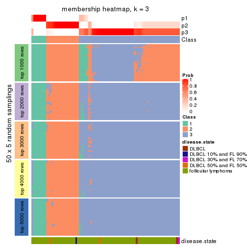
membership_heatmap(res, k = 4)
membership_heatmap(res, k = 5)
membership_heatmap(res, k = 6)
As soon as we have had the classes for columns, we can look for signatures which are significantly different between classes which can be candidate marks for certain classes. Following are the heatmaps for signatures.
Signature heatmaps where rows are scaled:
get_signatures(res, k = 2)
get_signatures(res, k = 3)
get_signatures(res, k = 4)
get_signatures(res, k = 5)
get_signatures(res, k = 6)
Signature heatmaps where rows are not scaled:
get_signatures(res, k = 2, scale_rows = FALSE)
get_signatures(res, k = 3, scale_rows = FALSE)
get_signatures(res, k = 4, scale_rows = FALSE)
get_signatures(res, k = 5, scale_rows = FALSE)
get_signatures(res, k = 6, scale_rows = FALSE)
Compare the overlap of signatures from different k:
compare_signatures(res)
get_signature() returns a data frame invisibly. TO get the list of signatures, the function
call should be assigned to a variable explicitly. In following code, if plot argument is set
to FALSE, no heatmap is plotted while only the differential analysis is performed.
# code only for demonstration
tb = get_signature(res, k = ..., plot = FALSE)
An example of the output of tb is:
#> which_row fdr mean_1 mean_2 scaled_mean_1 scaled_mean_2 km
#> 1 38 0.042760348 8.373488 9.131774 -0.5533452 0.5164555 1
#> 2 40 0.018707592 7.106213 8.469186 -0.6173731 0.5762149 1
#> 3 55 0.019134737 10.221463 11.207825 -0.6159697 0.5749050 1
#> 4 59 0.006059896 5.921854 7.869574 -0.6899429 0.6439467 1
#> 5 60 0.018055526 8.928898 10.211722 -0.6204761 0.5791110 1
#> 6 98 0.009384629 15.714769 14.887706 0.6635654 -0.6193277 2
...
The columns in tb are:
which_row: row indices corresponding to the input matrix.fdr: FDR for the differential test. mean_x: The mean value in group x.scaled_mean_x: The mean value in group x after rows are scaled.km: Row groups if k-means clustering is applied to rows.UMAP plot which shows how samples are separated.
dimension_reduction(res, k = 2, method = "UMAP")
dimension_reduction(res, k = 3, method = "UMAP")
dimension_reduction(res, k = 4, method = "UMAP")
dimension_reduction(res, k = 5, method = "UMAP")
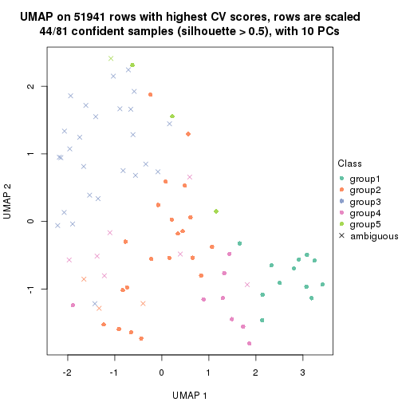
dimension_reduction(res, k = 6, method = "UMAP")
Following heatmap shows how subgroups are split when increasing k:
collect_classes(res)
Test correlation between subgroups and known annotations. If the known annotation is numeric, one-way ANOVA test is applied, and if the known annotation is discrete, chi-squared contingency table test is applied.
test_to_known_factors(res)
#> n disease.state(p) k
#> CV:mclust 81 0.8717 2
#> CV:mclust 80 0.6667 3
#> CV:mclust 69 0.6720 4
#> CV:mclust 44 0.0628 5
#> CV:mclust 79 0.0589 6
If matrix rows can be associated to genes, consider to use GO_Enrichment(res,
...) to perform function enrichment for the signature genes.
The object with results only for a single top-value method and a single partition method can be extracted as:
res = res_list["CV", "NMF"]
# you can also extract it by
# res = res_list["CV:NMF"]
A summary of res and all the functions that can be applied to it:
res
#> A 'ConsensusPartition' object with k = 2, 3, 4, 5, 6.
#> On a matrix with 51941 rows and 81 columns.
#> Top rows (1000, 2000, 3000, 4000, 5000) are extracted by 'CV' method.
#> Subgroups are detected by 'NMF' method.
#> Performed in total 1250 partitions by row resampling.
#> Best k for subgroups seems to be 3.
#>
#> Following methods can be applied to this 'ConsensusPartition' object:
#> [1] "cola_report" "collect_classes" "collect_plots"
#> [4] "collect_stats" "colnames" "compare_signatures"
#> [7] "consensus_heatmap" "dimension_reduction" "functional_enrichment"
#> [10] "get_anno_col" "get_anno" "get_classes"
#> [13] "get_consensus" "get_matrix" "get_membership"
#> [16] "get_param" "get_signatures" "get_stats"
#> [19] "is_best_k" "is_stable_k" "membership_heatmap"
#> [22] "ncol" "nrow" "plot_ecdf"
#> [25] "rownames" "select_partition_number" "show"
#> [28] "suggest_best_k" "test_to_known_factors"
collect_plots() function collects all the plots made from res for all k (number of partitions)
into one single page to provide an easy and fast comparison between different k.
collect_plots(res)

The plots are:
k and the heatmap of
predicted classes for each k.k.k.k.All the plots in panels can be made by individual functions and they are plotted later in this section.
select_partition_number() produces several plots showing different
statistics for choosing “optimized” k. There are following statistics:
k;k, the area increased is defined as \(A_k - A_{k-1}\).The detailed explanations of these statistics can be found in the cola vignette.
Generally speaking, lower PAC score, higher mean silhouette score or higher
concordance corresponds to better partition. Rand index and Jaccard index
measure how similar the current partition is compared to partition with k-1.
If they are too similar, we won't accept k is better than k-1.
select_partition_number(res)
The numeric values for all these statistics can be obtained by get_stats().
get_stats(res)
#> k 1-PAC mean_silhouette concordance area_increased Rand Jaccard
#> 2 2 0.625 0.877 0.932 0.4305 0.568 0.568
#> 3 3 0.735 0.835 0.931 0.4478 0.690 0.506
#> 4 4 0.703 0.791 0.882 0.1492 0.818 0.571
#> 5 5 0.612 0.672 0.816 0.1073 0.829 0.486
#> 6 6 0.625 0.500 0.697 0.0519 0.900 0.571
suggest_best_k() suggests the best \(k\) based on these statistics. The rules are as follows:
NA.suggest_best_k(res)
#> [1] 3
Following shows the table of the partitions (You need to click the show/hide
code output link to see it). The membership matrix (columns with name p*)
is inferred by
clue::cl_consensus()
function with the SE method. Basically the value in the membership matrix
represents the probability to belong to a certain group. The finall class
label for an item is determined with the group with highest probability it
belongs to.
In get_classes() function, the entropy is calculated from the membership
matrix and the silhouette score is calculated from the consensus matrix.
cbind(get_classes(res, k = 2), get_membership(res, k = 2))
#> class entropy silhouette p1 p2
#> GSM1301497 1 0.7056 0.8464 0.808 0.192
#> GSM1301537 2 0.0672 0.9391 0.008 0.992
#> GSM1301521 2 0.1184 0.9374 0.016 0.984
#> GSM1301555 2 0.0376 0.9394 0.004 0.996
#> GSM1301501 2 0.1414 0.9390 0.020 0.980
#> GSM1301508 2 0.0938 0.9386 0.012 0.988
#> GSM1301481 2 0.1184 0.9374 0.016 0.984
#> GSM1301482 1 0.0938 0.8948 0.988 0.012
#> GSM1301483 1 0.6973 0.8455 0.812 0.188
#> GSM1301484 2 0.9044 0.5066 0.320 0.680
#> GSM1301485 1 0.5737 0.8888 0.864 0.136
#> GSM1301486 2 0.4815 0.8688 0.104 0.896
#> GSM1301487 1 0.5737 0.8888 0.864 0.136
#> GSM1301488 1 0.0672 0.8959 0.992 0.008
#> GSM1301489 2 0.0672 0.9386 0.008 0.992
#> GSM1301490 1 0.6048 0.8813 0.852 0.148
#> GSM1301491 2 0.0938 0.9386 0.012 0.988
#> GSM1301492 1 0.6973 0.8456 0.812 0.188
#> GSM1301493 2 0.2603 0.9227 0.044 0.956
#> GSM1301494 1 0.5737 0.8888 0.864 0.136
#> GSM1301495 2 0.3114 0.9140 0.056 0.944
#> GSM1301496 2 0.0938 0.9386 0.012 0.988
#> GSM1301498 2 0.1184 0.9374 0.016 0.984
#> GSM1301499 1 0.7299 0.8250 0.796 0.204
#> GSM1301500 1 0.1184 0.8952 0.984 0.016
#> GSM1301502 2 0.1184 0.9374 0.016 0.984
#> GSM1301503 2 0.0000 0.9396 0.000 1.000
#> GSM1301504 2 0.1184 0.9374 0.016 0.984
#> GSM1301505 1 0.6048 0.8820 0.852 0.148
#> GSM1301506 2 0.0376 0.9396 0.004 0.996
#> GSM1301507 2 0.0938 0.9386 0.012 0.988
#> GSM1301509 1 0.0672 0.8959 0.992 0.008
#> GSM1301510 1 0.0672 0.8955 0.992 0.008
#> GSM1301511 2 0.0938 0.9386 0.012 0.988
#> GSM1301512 2 0.9996 -0.0378 0.488 0.512
#> GSM1301513 1 0.5737 0.8888 0.864 0.136
#> GSM1301514 2 0.0938 0.9386 0.012 0.988
#> GSM1301515 2 0.0938 0.9386 0.012 0.988
#> GSM1301516 2 0.1184 0.9374 0.016 0.984
#> GSM1301517 2 0.5408 0.8388 0.124 0.876
#> GSM1301518 1 0.0938 0.8948 0.988 0.012
#> GSM1301519 2 0.1184 0.9395 0.016 0.984
#> GSM1301520 2 0.0938 0.9386 0.012 0.988
#> GSM1301522 2 0.2423 0.9258 0.040 0.960
#> GSM1301523 1 0.1184 0.8952 0.984 0.016
#> GSM1301524 2 0.1184 0.9374 0.016 0.984
#> GSM1301525 2 0.1184 0.9374 0.016 0.984
#> GSM1301526 2 0.0938 0.9386 0.012 0.988
#> GSM1301527 2 0.0938 0.9386 0.012 0.988
#> GSM1301528 1 0.1414 0.8956 0.980 0.020
#> GSM1301529 1 0.8909 0.5622 0.692 0.308
#> GSM1301530 2 0.0376 0.9394 0.004 0.996
#> GSM1301531 2 0.1184 0.9374 0.016 0.984
#> GSM1301532 2 0.0938 0.9386 0.012 0.988
#> GSM1301533 2 0.1184 0.9374 0.016 0.984
#> GSM1301534 2 0.0938 0.9386 0.012 0.988
#> GSM1301535 2 0.4815 0.8686 0.104 0.896
#> GSM1301536 2 0.3431 0.9063 0.064 0.936
#> GSM1301538 2 0.0672 0.9386 0.008 0.992
#> GSM1301539 2 0.1414 0.9357 0.020 0.980
#> GSM1301540 2 0.1184 0.9374 0.016 0.984
#> GSM1301541 2 0.0938 0.9386 0.012 0.988
#> GSM1301542 1 0.1184 0.8952 0.984 0.016
#> GSM1301543 2 0.0938 0.9386 0.012 0.988
#> GSM1301544 2 0.1414 0.9390 0.020 0.980
#> GSM1301545 1 0.1184 0.8952 0.984 0.016
#> GSM1301546 2 0.5178 0.8407 0.116 0.884
#> GSM1301547 2 0.0938 0.9386 0.012 0.988
#> GSM1301548 2 0.0938 0.9386 0.012 0.988
#> GSM1301549 2 0.1184 0.9374 0.016 0.984
#> GSM1301550 1 0.1184 0.8952 0.984 0.016
#> GSM1301551 2 0.9427 0.4138 0.360 0.640
#> GSM1301552 2 0.8443 0.6173 0.272 0.728
#> GSM1301553 1 0.1184 0.8952 0.984 0.016
#> GSM1301554 2 0.0938 0.9386 0.012 0.988
#> GSM1301556 2 0.4161 0.8786 0.084 0.916
#> GSM1301557 1 0.6048 0.8831 0.852 0.148
#> GSM1301558 2 0.1184 0.9391 0.016 0.984
#> GSM1301559 2 0.9460 0.4041 0.364 0.636
#> GSM1301560 2 0.0672 0.9386 0.008 0.992
#> GSM1301561 1 0.5737 0.8888 0.864 0.136
cbind(get_classes(res, k = 3), get_membership(res, k = 3))
#> class entropy silhouette p1 p2 p3
#> GSM1301497 3 0.0592 0.9049 0.000 0.012 0.988
#> GSM1301537 2 0.0000 0.9079 0.000 1.000 0.000
#> GSM1301521 2 0.5216 0.6724 0.000 0.740 0.260
#> GSM1301555 2 0.0000 0.9079 0.000 1.000 0.000
#> GSM1301501 2 0.0237 0.9062 0.000 0.996 0.004
#> GSM1301508 2 0.0000 0.9079 0.000 1.000 0.000
#> GSM1301481 3 0.2711 0.8487 0.000 0.088 0.912
#> GSM1301482 1 0.4178 0.7600 0.828 0.000 0.172
#> GSM1301483 3 0.4784 0.7266 0.004 0.200 0.796
#> GSM1301484 3 0.0000 0.9110 0.000 0.000 1.000
#> GSM1301485 3 0.0000 0.9110 0.000 0.000 1.000
#> GSM1301486 3 0.0592 0.9050 0.000 0.012 0.988
#> GSM1301487 3 0.0000 0.9110 0.000 0.000 1.000
#> GSM1301488 1 0.0000 0.9485 1.000 0.000 0.000
#> GSM1301489 2 0.0000 0.9079 0.000 1.000 0.000
#> GSM1301490 3 0.0000 0.9110 0.000 0.000 1.000
#> GSM1301491 2 0.0000 0.9079 0.000 1.000 0.000
#> GSM1301492 3 0.0000 0.9110 0.000 0.000 1.000
#> GSM1301493 3 0.5706 0.4945 0.000 0.320 0.680
#> GSM1301494 3 0.0000 0.9110 0.000 0.000 1.000
#> GSM1301495 3 0.0000 0.9110 0.000 0.000 1.000
#> GSM1301496 2 0.0000 0.9079 0.000 1.000 0.000
#> GSM1301498 2 0.6045 0.3579 0.000 0.620 0.380
#> GSM1301499 3 0.0000 0.9110 0.000 0.000 1.000
#> GSM1301500 1 0.0000 0.9485 1.000 0.000 0.000
#> GSM1301502 2 0.2796 0.8545 0.000 0.908 0.092
#> GSM1301503 2 0.0000 0.9079 0.000 1.000 0.000
#> GSM1301504 2 0.3686 0.8100 0.000 0.860 0.140
#> GSM1301505 3 0.0000 0.9110 0.000 0.000 1.000
#> GSM1301506 2 0.0000 0.9079 0.000 1.000 0.000
#> GSM1301507 2 0.0000 0.9079 0.000 1.000 0.000
#> GSM1301509 1 0.0000 0.9485 1.000 0.000 0.000
#> GSM1301510 1 0.0000 0.9485 1.000 0.000 0.000
#> GSM1301511 2 0.0000 0.9079 0.000 1.000 0.000
#> GSM1301512 1 0.6192 0.2390 0.580 0.420 0.000
#> GSM1301513 3 0.0000 0.9110 0.000 0.000 1.000
#> GSM1301514 2 0.0000 0.9079 0.000 1.000 0.000
#> GSM1301515 2 0.0000 0.9079 0.000 1.000 0.000
#> GSM1301516 2 0.5216 0.6744 0.000 0.740 0.260
#> GSM1301517 2 0.2663 0.8730 0.044 0.932 0.024
#> GSM1301518 1 0.0000 0.9485 1.000 0.000 0.000
#> GSM1301519 2 0.1753 0.8844 0.000 0.952 0.048
#> GSM1301520 2 0.0000 0.9079 0.000 1.000 0.000
#> GSM1301522 3 0.0237 0.9093 0.000 0.004 0.996
#> GSM1301523 1 0.0000 0.9485 1.000 0.000 0.000
#> GSM1301524 3 0.6302 0.0192 0.000 0.480 0.520
#> GSM1301525 3 0.4504 0.7501 0.000 0.196 0.804
#> GSM1301526 2 0.0000 0.9079 0.000 1.000 0.000
#> GSM1301527 2 0.0000 0.9079 0.000 1.000 0.000
#> GSM1301528 1 0.0000 0.9485 1.000 0.000 0.000
#> GSM1301529 1 0.0000 0.9485 1.000 0.000 0.000
#> GSM1301530 2 0.0000 0.9079 0.000 1.000 0.000
#> GSM1301531 2 0.5254 0.6650 0.000 0.736 0.264
#> GSM1301532 2 0.0000 0.9079 0.000 1.000 0.000
#> GSM1301533 2 0.6140 0.3780 0.000 0.596 0.404
#> GSM1301534 2 0.0000 0.9079 0.000 1.000 0.000
#> GSM1301535 3 0.0000 0.9110 0.000 0.000 1.000
#> GSM1301536 3 0.0000 0.9110 0.000 0.000 1.000
#> GSM1301538 2 0.2261 0.8704 0.000 0.932 0.068
#> GSM1301539 2 0.4555 0.7417 0.000 0.800 0.200
#> GSM1301540 3 0.5431 0.6274 0.000 0.284 0.716
#> GSM1301541 2 0.0000 0.9079 0.000 1.000 0.000
#> GSM1301542 1 0.0000 0.9485 1.000 0.000 0.000
#> GSM1301543 2 0.0000 0.9079 0.000 1.000 0.000
#> GSM1301544 2 0.1964 0.8793 0.000 0.944 0.056
#> GSM1301545 1 0.0000 0.9485 1.000 0.000 0.000
#> GSM1301546 2 0.6140 0.2928 0.404 0.596 0.000
#> GSM1301547 2 0.0000 0.9079 0.000 1.000 0.000
#> GSM1301548 2 0.0000 0.9079 0.000 1.000 0.000
#> GSM1301549 3 0.3686 0.7995 0.000 0.140 0.860
#> GSM1301550 1 0.0000 0.9485 1.000 0.000 0.000
#> GSM1301551 3 0.0000 0.9110 0.000 0.000 1.000
#> GSM1301552 3 0.0000 0.9110 0.000 0.000 1.000
#> GSM1301553 1 0.0000 0.9485 1.000 0.000 0.000
#> GSM1301554 2 0.0000 0.9079 0.000 1.000 0.000
#> GSM1301556 2 0.5254 0.6198 0.264 0.736 0.000
#> GSM1301557 3 0.3237 0.8541 0.032 0.056 0.912
#> GSM1301558 2 0.5431 0.5950 0.000 0.716 0.284
#> GSM1301559 3 0.0000 0.9110 0.000 0.000 1.000
#> GSM1301560 2 0.0000 0.9079 0.000 1.000 0.000
#> GSM1301561 3 0.0000 0.9110 0.000 0.000 1.000
cbind(get_classes(res, k = 4), get_membership(res, k = 4))
#> class entropy silhouette p1 p2 p3 p4
#> GSM1301497 3 0.5085 0.4395 0.000 0.008 0.616 0.376
#> GSM1301537 3 0.3925 0.6862 0.000 0.176 0.808 0.016
#> GSM1301521 3 0.0817 0.8286 0.000 0.000 0.976 0.024
#> GSM1301555 2 0.4360 0.6923 0.000 0.744 0.248 0.008
#> GSM1301501 2 0.1474 0.8808 0.000 0.948 0.000 0.052
#> GSM1301508 2 0.2256 0.8760 0.000 0.924 0.056 0.020
#> GSM1301481 3 0.1557 0.8303 0.000 0.000 0.944 0.056
#> GSM1301482 1 0.5150 0.3403 0.596 0.000 0.396 0.008
#> GSM1301483 4 0.1867 0.8034 0.000 0.072 0.000 0.928
#> GSM1301484 4 0.2408 0.8327 0.000 0.000 0.104 0.896
#> GSM1301485 3 0.1867 0.8238 0.000 0.000 0.928 0.072
#> GSM1301486 3 0.1474 0.8313 0.000 0.000 0.948 0.052
#> GSM1301487 4 0.2973 0.8078 0.000 0.000 0.144 0.856
#> GSM1301488 1 0.0188 0.9416 0.996 0.000 0.000 0.004
#> GSM1301489 2 0.0524 0.8868 0.000 0.988 0.008 0.004
#> GSM1301490 4 0.1975 0.8293 0.000 0.048 0.016 0.936
#> GSM1301491 2 0.0817 0.8856 0.000 0.976 0.000 0.024
#> GSM1301492 4 0.3726 0.7102 0.000 0.000 0.212 0.788
#> GSM1301493 3 0.1022 0.8307 0.000 0.000 0.968 0.032
#> GSM1301494 4 0.1637 0.8399 0.000 0.000 0.060 0.940
#> GSM1301495 3 0.1637 0.8318 0.000 0.000 0.940 0.060
#> GSM1301496 2 0.1867 0.8766 0.000 0.928 0.000 0.072
#> GSM1301498 2 0.4643 0.5307 0.000 0.656 0.000 0.344
#> GSM1301499 3 0.2281 0.8079 0.000 0.000 0.904 0.096
#> GSM1301500 1 0.0000 0.9448 1.000 0.000 0.000 0.000
#> GSM1301502 3 0.4776 0.6162 0.000 0.244 0.732 0.024
#> GSM1301503 2 0.2611 0.8546 0.000 0.896 0.096 0.008
#> GSM1301504 2 0.2699 0.8652 0.000 0.904 0.028 0.068
#> GSM1301505 4 0.2011 0.8381 0.000 0.000 0.080 0.920
#> GSM1301506 2 0.2124 0.8684 0.000 0.924 0.068 0.008
#> GSM1301507 2 0.2198 0.8671 0.000 0.920 0.072 0.008
#> GSM1301509 1 0.0000 0.9448 1.000 0.000 0.000 0.000
#> GSM1301510 1 0.0000 0.9448 1.000 0.000 0.000 0.000
#> GSM1301511 2 0.1302 0.8824 0.000 0.956 0.000 0.044
#> GSM1301512 2 0.3081 0.8582 0.048 0.888 0.000 0.064
#> GSM1301513 4 0.3528 0.7723 0.000 0.000 0.192 0.808
#> GSM1301514 2 0.1356 0.8872 0.000 0.960 0.008 0.032
#> GSM1301515 2 0.0817 0.8856 0.000 0.976 0.000 0.024
#> GSM1301516 2 0.6217 0.4973 0.000 0.624 0.292 0.084
#> GSM1301517 2 0.2773 0.8494 0.004 0.880 0.000 0.116
#> GSM1301518 1 0.0336 0.9385 0.992 0.000 0.000 0.008
#> GSM1301519 2 0.2647 0.8472 0.000 0.880 0.000 0.120
#> GSM1301520 2 0.1624 0.8866 0.000 0.952 0.028 0.020
#> GSM1301522 4 0.1706 0.8358 0.000 0.036 0.016 0.948
#> GSM1301523 1 0.0000 0.9448 1.000 0.000 0.000 0.000
#> GSM1301524 2 0.5993 0.5333 0.000 0.628 0.064 0.308
#> GSM1301525 3 0.7731 -0.0465 0.000 0.228 0.396 0.376
#> GSM1301526 2 0.2224 0.8856 0.000 0.928 0.040 0.032
#> GSM1301527 2 0.0469 0.8867 0.000 0.988 0.000 0.012
#> GSM1301528 1 0.3400 0.7667 0.820 0.000 0.180 0.000
#> GSM1301529 1 0.0000 0.9448 1.000 0.000 0.000 0.000
#> GSM1301530 2 0.2799 0.8459 0.000 0.884 0.108 0.008
#> GSM1301531 2 0.5997 0.3391 0.000 0.576 0.376 0.048
#> GSM1301532 2 0.1970 0.8708 0.000 0.932 0.060 0.008
#> GSM1301533 3 0.2334 0.7741 0.000 0.088 0.908 0.004
#> GSM1301534 2 0.0804 0.8872 0.000 0.980 0.008 0.012
#> GSM1301535 3 0.2216 0.8154 0.000 0.000 0.908 0.092
#> GSM1301536 4 0.1474 0.8401 0.000 0.000 0.052 0.948
#> GSM1301538 3 0.1635 0.7943 0.000 0.044 0.948 0.008
#> GSM1301539 3 0.1109 0.8057 0.000 0.028 0.968 0.004
#> GSM1301540 4 0.4677 0.5094 0.000 0.316 0.004 0.680
#> GSM1301541 2 0.1807 0.8735 0.000 0.940 0.052 0.008
#> GSM1301542 1 0.0000 0.9448 1.000 0.000 0.000 0.000
#> GSM1301543 2 0.0707 0.8860 0.000 0.980 0.000 0.020
#> GSM1301544 2 0.5106 0.6399 0.000 0.720 0.240 0.040
#> GSM1301545 1 0.0000 0.9448 1.000 0.000 0.000 0.000
#> GSM1301546 2 0.1489 0.8820 0.004 0.952 0.000 0.044
#> GSM1301547 2 0.1004 0.8835 0.000 0.972 0.024 0.004
#> GSM1301548 2 0.0592 0.8864 0.000 0.984 0.000 0.016
#> GSM1301549 4 0.5655 0.6471 0.000 0.212 0.084 0.704
#> GSM1301550 1 0.0000 0.9448 1.000 0.000 0.000 0.000
#> GSM1301551 3 0.1474 0.8313 0.000 0.000 0.948 0.052
#> GSM1301552 3 0.1557 0.8318 0.000 0.000 0.944 0.056
#> GSM1301553 1 0.0000 0.9448 1.000 0.000 0.000 0.000
#> GSM1301554 2 0.1302 0.8795 0.000 0.956 0.044 0.000
#> GSM1301556 2 0.1890 0.8783 0.008 0.936 0.000 0.056
#> GSM1301557 4 0.1639 0.8236 0.008 0.036 0.004 0.952
#> GSM1301558 2 0.4406 0.6434 0.000 0.700 0.000 0.300
#> GSM1301559 4 0.3837 0.7367 0.000 0.000 0.224 0.776
#> GSM1301560 3 0.5212 0.2146 0.000 0.420 0.572 0.008
#> GSM1301561 3 0.1867 0.8238 0.000 0.000 0.928 0.072
cbind(get_classes(res, k = 5), get_membership(res, k = 5))
#> class entropy silhouette p1 p2 p3 p4 p5
#> GSM1301497 4 0.4382 0.5229 0.000 0.000 0.024 0.688 0.288
#> GSM1301537 4 0.3454 0.6617 0.000 0.028 0.156 0.816 0.000
#> GSM1301521 3 0.1697 0.7762 0.000 0.000 0.932 0.060 0.008
#> GSM1301555 4 0.4585 0.6772 0.000 0.172 0.076 0.748 0.004
#> GSM1301501 2 0.2777 0.7663 0.000 0.864 0.000 0.120 0.016
#> GSM1301508 4 0.4438 0.2784 0.000 0.384 0.004 0.608 0.004
#> GSM1301481 3 0.0880 0.7725 0.000 0.000 0.968 0.000 0.032
#> GSM1301482 1 0.5006 0.6716 0.712 0.000 0.100 0.184 0.004
#> GSM1301483 5 0.2707 0.7320 0.000 0.100 0.000 0.024 0.876
#> GSM1301484 5 0.3323 0.7487 0.000 0.000 0.100 0.056 0.844
#> GSM1301485 3 0.0880 0.7726 0.000 0.000 0.968 0.000 0.032
#> GSM1301486 3 0.0566 0.7786 0.000 0.000 0.984 0.012 0.004
#> GSM1301487 5 0.3612 0.6665 0.000 0.000 0.228 0.008 0.764
#> GSM1301488 1 0.1121 0.9107 0.956 0.000 0.000 0.000 0.044
#> GSM1301489 2 0.0324 0.7911 0.000 0.992 0.000 0.004 0.004
#> GSM1301490 5 0.2886 0.7401 0.000 0.116 0.016 0.004 0.864
#> GSM1301491 2 0.1043 0.7912 0.000 0.960 0.000 0.040 0.000
#> GSM1301492 5 0.5078 0.1570 0.000 0.004 0.032 0.388 0.576
#> GSM1301493 3 0.2806 0.7325 0.000 0.000 0.844 0.152 0.004
#> GSM1301494 5 0.2377 0.7461 0.000 0.000 0.128 0.000 0.872
#> GSM1301495 4 0.3630 0.6369 0.000 0.000 0.204 0.780 0.016
#> GSM1301496 2 0.3922 0.6700 0.000 0.780 0.000 0.180 0.040
#> GSM1301498 2 0.3940 0.6574 0.000 0.756 0.024 0.000 0.220
#> GSM1301499 3 0.1341 0.7603 0.000 0.000 0.944 0.000 0.056
#> GSM1301500 1 0.0000 0.9315 1.000 0.000 0.000 0.000 0.000
#> GSM1301502 3 0.6123 0.0489 0.000 0.068 0.496 0.412 0.024
#> GSM1301503 2 0.3640 0.7331 0.000 0.832 0.052 0.108 0.008
#> GSM1301504 2 0.0981 0.7911 0.000 0.972 0.012 0.008 0.008
#> GSM1301505 5 0.3796 0.6834 0.000 0.008 0.216 0.008 0.768
#> GSM1301506 2 0.4892 -0.1034 0.000 0.492 0.016 0.488 0.004
#> GSM1301507 4 0.4299 0.4472 0.000 0.316 0.008 0.672 0.004
#> GSM1301509 1 0.0798 0.9225 0.976 0.000 0.000 0.016 0.008
#> GSM1301510 1 0.0324 0.9300 0.992 0.000 0.004 0.004 0.000
#> GSM1301511 2 0.3359 0.7270 0.000 0.816 0.000 0.164 0.020
#> GSM1301512 4 0.6020 0.5901 0.072 0.132 0.000 0.680 0.116
#> GSM1301513 3 0.3814 0.5100 0.000 0.000 0.720 0.004 0.276
#> GSM1301514 4 0.2504 0.7137 0.000 0.064 0.000 0.896 0.040
#> GSM1301515 2 0.1341 0.7869 0.000 0.944 0.000 0.056 0.000
#> GSM1301516 4 0.5206 0.6919 0.000 0.104 0.076 0.748 0.072
#> GSM1301517 4 0.5210 0.6034 0.000 0.120 0.000 0.680 0.200
#> GSM1301518 1 0.0880 0.9165 0.968 0.000 0.032 0.000 0.000
#> GSM1301519 4 0.6186 0.3731 0.000 0.152 0.000 0.512 0.336
#> GSM1301520 4 0.3128 0.7021 0.000 0.168 0.004 0.824 0.004
#> GSM1301522 5 0.3145 0.7208 0.000 0.136 0.008 0.012 0.844
#> GSM1301523 1 0.0000 0.9315 1.000 0.000 0.000 0.000 0.000
#> GSM1301524 4 0.5571 0.5401 0.000 0.096 0.004 0.624 0.276
#> GSM1301525 3 0.6642 0.2293 0.000 0.356 0.480 0.016 0.148
#> GSM1301526 4 0.2864 0.7160 0.008 0.064 0.000 0.884 0.044
#> GSM1301527 2 0.1410 0.7842 0.000 0.940 0.000 0.060 0.000
#> GSM1301528 1 0.3732 0.7124 0.776 0.000 0.208 0.008 0.008
#> GSM1301529 1 0.0162 0.9310 0.996 0.000 0.004 0.000 0.000
#> GSM1301530 2 0.3871 0.7224 0.000 0.808 0.056 0.132 0.004
#> GSM1301531 3 0.4270 0.6112 0.000 0.188 0.764 0.008 0.040
#> GSM1301532 2 0.4816 -0.0277 0.000 0.500 0.008 0.484 0.008
#> GSM1301533 4 0.4271 0.6621 0.000 0.040 0.176 0.772 0.012
#> GSM1301534 2 0.1410 0.7864 0.000 0.940 0.000 0.060 0.000
#> GSM1301535 3 0.5218 0.5901 0.000 0.000 0.684 0.136 0.180
#> GSM1301536 5 0.2445 0.7489 0.000 0.004 0.108 0.004 0.884
#> GSM1301538 4 0.3861 0.5169 0.000 0.000 0.284 0.712 0.004
#> GSM1301539 3 0.2462 0.7592 0.000 0.000 0.880 0.112 0.008
#> GSM1301540 2 0.7805 0.2443 0.000 0.472 0.220 0.120 0.188
#> GSM1301541 2 0.3990 0.5066 0.000 0.688 0.000 0.308 0.004
#> GSM1301542 1 0.0000 0.9315 1.000 0.000 0.000 0.000 0.000
#> GSM1301543 2 0.0000 0.7903 0.000 1.000 0.000 0.000 0.000
#> GSM1301544 4 0.4240 0.7141 0.000 0.116 0.036 0.804 0.044
#> GSM1301545 1 0.0000 0.9315 1.000 0.000 0.000 0.000 0.000
#> GSM1301546 2 0.3752 0.7555 0.072 0.828 0.000 0.092 0.008
#> GSM1301547 2 0.1908 0.7802 0.000 0.908 0.000 0.092 0.000
#> GSM1301548 2 0.0404 0.7914 0.000 0.988 0.000 0.012 0.000
#> GSM1301549 2 0.5159 0.5633 0.000 0.688 0.124 0.000 0.188
#> GSM1301550 1 0.3257 0.8276 0.860 0.008 0.000 0.080 0.052
#> GSM1301551 3 0.1768 0.7735 0.000 0.000 0.924 0.072 0.004
#> GSM1301552 3 0.2873 0.7453 0.000 0.000 0.856 0.128 0.016
#> GSM1301553 1 0.0000 0.9315 1.000 0.000 0.000 0.000 0.000
#> GSM1301554 2 0.1965 0.7653 0.000 0.904 0.000 0.096 0.000
#> GSM1301556 2 0.4981 0.6393 0.200 0.724 0.000 0.048 0.028
#> GSM1301557 5 0.2732 0.6855 0.000 0.000 0.000 0.160 0.840
#> GSM1301558 2 0.2575 0.7661 0.000 0.884 0.004 0.012 0.100
#> GSM1301559 5 0.5531 0.4432 0.000 0.004 0.352 0.068 0.576
#> GSM1301560 4 0.3757 0.7096 0.000 0.088 0.076 0.828 0.008
#> GSM1301561 3 0.1430 0.7657 0.000 0.000 0.944 0.004 0.052
cbind(get_classes(res, k = 6), get_membership(res, k = 6))
#> class entropy silhouette p1 p2 p3 p4 p5 p6
#> GSM1301497 4 0.5060 0.3875 0.000 0.000 0.004 0.648 0.204 0.144
#> GSM1301537 4 0.4071 0.5442 0.000 0.020 0.016 0.716 0.000 0.248
#> GSM1301521 3 0.1588 0.7842 0.000 0.000 0.924 0.000 0.004 0.072
#> GSM1301555 6 0.2683 0.5131 0.000 0.044 0.020 0.044 0.004 0.888
#> GSM1301501 2 0.5275 0.1870 0.000 0.512 0.000 0.416 0.044 0.028
#> GSM1301508 4 0.5002 0.4822 0.000 0.136 0.000 0.636 0.000 0.228
#> GSM1301481 3 0.1116 0.7816 0.000 0.008 0.960 0.004 0.028 0.000
#> GSM1301482 1 0.7045 0.2979 0.488 0.000 0.064 0.164 0.024 0.260
#> GSM1301483 5 0.5088 0.5239 0.000 0.168 0.000 0.180 0.648 0.004
#> GSM1301484 5 0.5899 0.4465 0.000 0.008 0.016 0.208 0.584 0.184
#> GSM1301485 3 0.0405 0.7883 0.000 0.004 0.988 0.000 0.008 0.000
#> GSM1301486 3 0.0922 0.7907 0.000 0.004 0.968 0.000 0.004 0.024
#> GSM1301487 5 0.4098 0.4776 0.000 0.004 0.224 0.032 0.732 0.008
#> GSM1301488 1 0.3491 0.6957 0.796 0.004 0.000 0.168 0.028 0.004
#> GSM1301489 2 0.3468 0.3441 0.000 0.728 0.008 0.000 0.000 0.264
#> GSM1301490 5 0.5076 0.5772 0.000 0.128 0.008 0.128 0.708 0.028
#> GSM1301491 2 0.2100 0.6534 0.000 0.884 0.000 0.112 0.000 0.004
#> GSM1301492 5 0.6198 0.1122 0.000 0.000 0.004 0.356 0.372 0.268
#> GSM1301493 3 0.4601 0.6564 0.000 0.004 0.728 0.096 0.012 0.160
#> GSM1301494 5 0.1700 0.6071 0.000 0.004 0.080 0.000 0.916 0.000
#> GSM1301495 4 0.5846 0.3546 0.000 0.004 0.120 0.488 0.012 0.376
#> GSM1301496 2 0.5798 0.2852 0.000 0.556 0.000 0.192 0.012 0.240
#> GSM1301498 5 0.6136 0.2762 0.000 0.296 0.024 0.008 0.532 0.140
#> GSM1301499 3 0.1007 0.7851 0.000 0.004 0.968 0.008 0.016 0.004
#> GSM1301500 1 0.0000 0.8416 1.000 0.000 0.000 0.000 0.000 0.000
#> GSM1301502 3 0.6372 0.3735 0.000 0.048 0.524 0.052 0.044 0.332
#> GSM1301503 6 0.4559 0.3387 0.000 0.428 0.020 0.004 0.004 0.544
#> GSM1301504 2 0.4613 0.3912 0.000 0.716 0.008 0.028 0.036 0.212
#> GSM1301505 5 0.3974 0.5590 0.000 0.020 0.148 0.032 0.788 0.012
#> GSM1301506 6 0.4370 0.5321 0.000 0.284 0.008 0.036 0.000 0.672
#> GSM1301507 4 0.6023 0.3075 0.000 0.164 0.008 0.472 0.004 0.352
#> GSM1301509 1 0.0779 0.8368 0.976 0.000 0.000 0.008 0.008 0.008
#> GSM1301510 1 0.1003 0.8292 0.964 0.000 0.000 0.028 0.004 0.004
#> GSM1301511 2 0.4556 0.5666 0.000 0.732 0.000 0.120 0.016 0.132
#> GSM1301512 4 0.4107 0.4427 0.012 0.128 0.000 0.788 0.020 0.052
#> GSM1301513 3 0.3652 0.6786 0.000 0.012 0.792 0.008 0.168 0.020
#> GSM1301514 4 0.3547 0.5631 0.000 0.012 0.000 0.768 0.012 0.208
#> GSM1301515 2 0.2191 0.6498 0.000 0.876 0.000 0.120 0.000 0.004
#> GSM1301516 6 0.4832 0.3942 0.000 0.052 0.072 0.088 0.028 0.760
#> GSM1301517 4 0.6679 0.0382 0.000 0.060 0.000 0.472 0.196 0.272
#> GSM1301518 1 0.1888 0.7990 0.916 0.000 0.068 0.012 0.004 0.000
#> GSM1301519 4 0.6798 -0.1857 0.000 0.052 0.000 0.396 0.336 0.216
#> GSM1301520 4 0.4406 0.5515 0.000 0.080 0.000 0.696 0.000 0.224
#> GSM1301522 5 0.6671 0.3138 0.000 0.244 0.000 0.088 0.508 0.160
#> GSM1301523 1 0.0000 0.8416 1.000 0.000 0.000 0.000 0.000 0.000
#> GSM1301524 6 0.4914 0.4031 0.000 0.040 0.000 0.132 0.112 0.716
#> GSM1301525 2 0.5945 0.2981 0.000 0.552 0.312 0.032 0.096 0.008
#> GSM1301526 6 0.4270 0.2702 0.008 0.012 0.000 0.200 0.040 0.740
#> GSM1301527 2 0.2362 0.6435 0.000 0.860 0.000 0.136 0.000 0.004
#> GSM1301528 1 0.4802 0.3212 0.588 0.000 0.364 0.008 0.004 0.036
#> GSM1301529 1 0.0725 0.8366 0.976 0.000 0.012 0.000 0.000 0.012
#> GSM1301530 6 0.5088 0.2408 0.000 0.452 0.028 0.016 0.008 0.496
#> GSM1301531 3 0.5172 0.4519 0.000 0.276 0.628 0.008 0.080 0.008
#> GSM1301532 6 0.4619 0.5264 0.000 0.244 0.000 0.088 0.000 0.668
#> GSM1301533 6 0.1921 0.5123 0.000 0.024 0.032 0.012 0.004 0.928
#> GSM1301534 2 0.3109 0.5765 0.000 0.772 0.000 0.224 0.000 0.004
#> GSM1301535 3 0.6234 0.1060 0.000 0.004 0.472 0.104 0.376 0.044
#> GSM1301536 5 0.1820 0.6072 0.000 0.008 0.056 0.012 0.924 0.000
#> GSM1301538 4 0.5533 0.3076 0.000 0.000 0.132 0.448 0.000 0.420
#> GSM1301539 3 0.1956 0.7789 0.000 0.000 0.908 0.008 0.004 0.080
#> GSM1301540 4 0.6741 0.0933 0.000 0.308 0.036 0.420 0.232 0.004
#> GSM1301541 6 0.4443 0.4449 0.000 0.368 0.000 0.036 0.000 0.596
#> GSM1301542 1 0.0000 0.8416 1.000 0.000 0.000 0.000 0.000 0.000
#> GSM1301543 2 0.0520 0.6417 0.000 0.984 0.000 0.008 0.000 0.008
#> GSM1301544 4 0.5180 0.5694 0.000 0.072 0.024 0.720 0.044 0.140
#> GSM1301545 1 0.0000 0.8416 1.000 0.000 0.000 0.000 0.000 0.000
#> GSM1301546 2 0.6921 0.3616 0.292 0.484 0.000 0.140 0.020 0.064
#> GSM1301547 6 0.5871 0.1705 0.000 0.396 0.000 0.196 0.000 0.408
#> GSM1301548 2 0.0891 0.6453 0.000 0.968 0.000 0.024 0.000 0.008
#> GSM1301549 2 0.5752 0.3206 0.000 0.596 0.060 0.004 0.276 0.064
#> GSM1301550 1 0.6292 0.3795 0.536 0.008 0.000 0.180 0.028 0.248
#> GSM1301551 3 0.1812 0.7837 0.000 0.000 0.912 0.000 0.008 0.080
#> GSM1301552 3 0.5144 0.5934 0.000 0.000 0.680 0.060 0.060 0.200
#> GSM1301553 1 0.0000 0.8416 1.000 0.000 0.000 0.000 0.000 0.000
#> GSM1301554 2 0.3460 0.4400 0.000 0.760 0.000 0.020 0.000 0.220
#> GSM1301556 2 0.6098 0.4448 0.204 0.600 0.000 0.148 0.024 0.024
#> GSM1301557 5 0.3509 0.4810 0.000 0.000 0.000 0.240 0.744 0.016
#> GSM1301558 2 0.2697 0.6390 0.000 0.884 0.004 0.064 0.032 0.016
#> GSM1301559 6 0.8050 -0.2231 0.000 0.020 0.248 0.220 0.200 0.312
#> GSM1301560 6 0.2255 0.5023 0.000 0.024 0.024 0.044 0.000 0.908
#> GSM1301561 3 0.1490 0.7844 0.000 0.004 0.948 0.008 0.016 0.024
Heatmaps for the consensus matrix. It visualizes the probability of two samples to be in a same group.
consensus_heatmap(res, k = 2)
consensus_heatmap(res, k = 3)
consensus_heatmap(res, k = 4)
consensus_heatmap(res, k = 5)

consensus_heatmap(res, k = 6)
Heatmaps for the membership of samples in all partitions to see how consistent they are:
membership_heatmap(res, k = 2)
membership_heatmap(res, k = 3)
membership_heatmap(res, k = 4)
membership_heatmap(res, k = 5)
membership_heatmap(res, k = 6)
As soon as we have had the classes for columns, we can look for signatures which are significantly different between classes which can be candidate marks for certain classes. Following are the heatmaps for signatures.
Signature heatmaps where rows are scaled:
get_signatures(res, k = 2)
get_signatures(res, k = 3)
get_signatures(res, k = 4)
get_signatures(res, k = 5)
get_signatures(res, k = 6)
Signature heatmaps where rows are not scaled:
get_signatures(res, k = 2, scale_rows = FALSE)
get_signatures(res, k = 3, scale_rows = FALSE)
get_signatures(res, k = 4, scale_rows = FALSE)
get_signatures(res, k = 5, scale_rows = FALSE)
get_signatures(res, k = 6, scale_rows = FALSE)
Compare the overlap of signatures from different k:
compare_signatures(res)
get_signature() returns a data frame invisibly. TO get the list of signatures, the function
call should be assigned to a variable explicitly. In following code, if plot argument is set
to FALSE, no heatmap is plotted while only the differential analysis is performed.
# code only for demonstration
tb = get_signature(res, k = ..., plot = FALSE)
An example of the output of tb is:
#> which_row fdr mean_1 mean_2 scaled_mean_1 scaled_mean_2 km
#> 1 38 0.042760348 8.373488 9.131774 -0.5533452 0.5164555 1
#> 2 40 0.018707592 7.106213 8.469186 -0.6173731 0.5762149 1
#> 3 55 0.019134737 10.221463 11.207825 -0.6159697 0.5749050 1
#> 4 59 0.006059896 5.921854 7.869574 -0.6899429 0.6439467 1
#> 5 60 0.018055526 8.928898 10.211722 -0.6204761 0.5791110 1
#> 6 98 0.009384629 15.714769 14.887706 0.6635654 -0.6193277 2
...
The columns in tb are:
which_row: row indices corresponding to the input matrix.fdr: FDR for the differential test. mean_x: The mean value in group x.scaled_mean_x: The mean value in group x after rows are scaled.km: Row groups if k-means clustering is applied to rows.UMAP plot which shows how samples are separated.
dimension_reduction(res, k = 2, method = "UMAP")
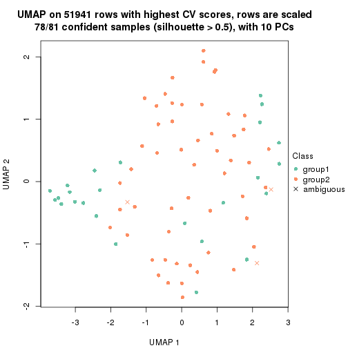
dimension_reduction(res, k = 3, method = "UMAP")

dimension_reduction(res, k = 4, method = "UMAP")
dimension_reduction(res, k = 5, method = "UMAP")
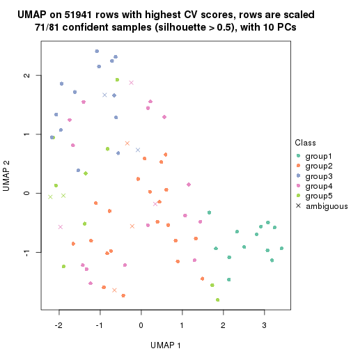
dimension_reduction(res, k = 6, method = "UMAP")
Following heatmap shows how subgroups are split when increasing k:
collect_classes(res)

Test correlation between subgroups and known annotations. If the known annotation is numeric, one-way ANOVA test is applied, and if the known annotation is discrete, chi-squared contingency table test is applied.
test_to_known_factors(res)
#> n disease.state(p) k
#> CV:NMF 78 0.692 2
#> CV:NMF 75 0.771 3
#> CV:NMF 75 0.792 4
#> CV:NMF 71 0.344 5
#> CV:NMF 43 0.157 6
If matrix rows can be associated to genes, consider to use GO_Enrichment(res,
...) to perform function enrichment for the signature genes.
The object with results only for a single top-value method and a single partition method can be extracted as:
res = res_list["MAD", "hclust"]
# you can also extract it by
# res = res_list["MAD:hclust"]
A summary of res and all the functions that can be applied to it:
res
#> A 'ConsensusPartition' object with k = 2, 3, 4, 5, 6.
#> On a matrix with 51941 rows and 81 columns.
#> Top rows (1000, 2000, 3000, 4000, 5000) are extracted by 'MAD' method.
#> Subgroups are detected by 'hclust' method.
#> Performed in total 1250 partitions by row resampling.
#> Best k for subgroups seems to be 3.
#>
#> Following methods can be applied to this 'ConsensusPartition' object:
#> [1] "cola_report" "collect_classes" "collect_plots"
#> [4] "collect_stats" "colnames" "compare_signatures"
#> [7] "consensus_heatmap" "dimension_reduction" "functional_enrichment"
#> [10] "get_anno_col" "get_anno" "get_classes"
#> [13] "get_consensus" "get_matrix" "get_membership"
#> [16] "get_param" "get_signatures" "get_stats"
#> [19] "is_best_k" "is_stable_k" "membership_heatmap"
#> [22] "ncol" "nrow" "plot_ecdf"
#> [25] "rownames" "select_partition_number" "show"
#> [28] "suggest_best_k" "test_to_known_factors"
collect_plots() function collects all the plots made from res for all k (number of partitions)
into one single page to provide an easy and fast comparison between different k.
collect_plots(res)
The plots are:
k and the heatmap of
predicted classes for each k.k.k.k.All the plots in panels can be made by individual functions and they are plotted later in this section.
select_partition_number() produces several plots showing different
statistics for choosing “optimized” k. There are following statistics:
k;k, the area increased is defined as \(A_k - A_{k-1}\).The detailed explanations of these statistics can be found in the cola vignette.
Generally speaking, lower PAC score, higher mean silhouette score or higher
concordance corresponds to better partition. Rand index and Jaccard index
measure how similar the current partition is compared to partition with k-1.
If they are too similar, we won't accept k is better than k-1.
select_partition_number(res)
The numeric values for all these statistics can be obtained by get_stats().
get_stats(res)
#> k 1-PAC mean_silhouette concordance area_increased Rand Jaccard
#> 2 2 0.169 0.682 0.807 0.3015 0.820 0.820
#> 3 3 0.245 0.581 0.779 0.7866 0.603 0.525
#> 4 4 0.280 0.483 0.699 0.2236 0.895 0.773
#> 5 5 0.326 0.434 0.646 0.0783 0.955 0.877
#> 6 6 0.408 0.358 0.600 0.0507 0.873 0.667
suggest_best_k() suggests the best \(k\) based on these statistics. The rules are as follows:
NA.suggest_best_k(res)
#> [1] 3
Following shows the table of the partitions (You need to click the show/hide
code output link to see it). The membership matrix (columns with name p*)
is inferred by
clue::cl_consensus()
function with the SE method. Basically the value in the membership matrix
represents the probability to belong to a certain group. The finall class
label for an item is determined with the group with highest probability it
belongs to.
In get_classes() function, the entropy is calculated from the membership
matrix and the silhouette score is calculated from the consensus matrix.
cbind(get_classes(res, k = 2), get_membership(res, k = 2))
#> class entropy silhouette p1 p2
#> GSM1301497 2 0.871 0.6481 0.292 0.708
#> GSM1301537 2 0.814 0.7137 0.252 0.748
#> GSM1301521 2 0.738 0.7288 0.208 0.792
#> GSM1301555 2 0.653 0.7317 0.168 0.832
#> GSM1301501 2 0.242 0.7769 0.040 0.960
#> GSM1301508 2 0.482 0.7528 0.104 0.896
#> GSM1301481 2 0.653 0.7613 0.168 0.832
#> GSM1301482 1 1.000 -0.0965 0.512 0.488
#> GSM1301483 2 0.999 0.0598 0.484 0.516
#> GSM1301484 2 0.767 0.7133 0.224 0.776
#> GSM1301485 2 0.871 0.6473 0.292 0.708
#> GSM1301486 2 0.871 0.6473 0.292 0.708
#> GSM1301487 2 0.876 0.6439 0.296 0.704
#> GSM1301488 2 0.999 0.0598 0.484 0.516
#> GSM1301489 2 0.443 0.7446 0.092 0.908
#> GSM1301490 2 0.714 0.7449 0.196 0.804
#> GSM1301491 2 0.242 0.7669 0.040 0.960
#> GSM1301492 2 0.738 0.7254 0.208 0.792
#> GSM1301493 2 0.788 0.7107 0.236 0.764
#> GSM1301494 2 0.871 0.6473 0.292 0.708
#> GSM1301495 2 0.781 0.7121 0.232 0.768
#> GSM1301496 2 0.541 0.7664 0.124 0.876
#> GSM1301498 2 0.402 0.7516 0.080 0.920
#> GSM1301499 2 0.871 0.6473 0.292 0.708
#> GSM1301500 1 0.866 0.6687 0.712 0.288
#> GSM1301502 2 0.563 0.7708 0.132 0.868
#> GSM1301503 2 0.482 0.7260 0.104 0.896
#> GSM1301504 2 0.358 0.7618 0.068 0.932
#> GSM1301505 2 0.781 0.7093 0.232 0.768
#> GSM1301506 2 0.482 0.7260 0.104 0.896
#> GSM1301507 2 0.506 0.7208 0.112 0.888
#> GSM1301509 2 0.998 0.0431 0.472 0.528
#> GSM1301510 1 0.821 0.5025 0.744 0.256
#> GSM1301511 2 0.204 0.7801 0.032 0.968
#> GSM1301512 2 0.242 0.7788 0.040 0.960
#> GSM1301513 2 0.871 0.6473 0.292 0.708
#> GSM1301514 2 0.242 0.7788 0.040 0.960
#> GSM1301515 2 0.518 0.7176 0.116 0.884
#> GSM1301516 2 0.494 0.7800 0.108 0.892
#> GSM1301517 2 0.242 0.7788 0.040 0.960
#> GSM1301518 2 0.917 0.5888 0.332 0.668
#> GSM1301519 2 0.343 0.7753 0.064 0.936
#> GSM1301520 2 0.242 0.7769 0.040 0.960
#> GSM1301522 2 0.714 0.7449 0.196 0.804
#> GSM1301523 1 0.866 0.6687 0.712 0.288
#> GSM1301524 2 0.456 0.7449 0.096 0.904
#> GSM1301525 2 0.416 0.7534 0.084 0.916
#> GSM1301526 2 0.443 0.7613 0.092 0.908
#> GSM1301527 2 0.518 0.7176 0.116 0.884
#> GSM1301528 2 0.821 0.7084 0.256 0.744
#> GSM1301529 2 0.833 0.6789 0.264 0.736
#> GSM1301530 2 0.430 0.7418 0.088 0.912
#> GSM1301531 2 0.653 0.7613 0.168 0.832
#> GSM1301532 2 0.469 0.7299 0.100 0.900
#> GSM1301533 2 0.482 0.7277 0.104 0.896
#> GSM1301534 2 0.518 0.7176 0.116 0.884
#> GSM1301535 2 0.781 0.7121 0.232 0.768
#> GSM1301536 2 0.745 0.7233 0.212 0.788
#> GSM1301538 2 0.653 0.7317 0.168 0.832
#> GSM1301539 2 0.821 0.7084 0.256 0.744
#> GSM1301540 2 0.767 0.7386 0.224 0.776
#> GSM1301541 2 0.482 0.7260 0.104 0.896
#> GSM1301542 1 0.871 0.6670 0.708 0.292
#> GSM1301543 2 0.416 0.7483 0.084 0.916
#> GSM1301544 2 0.430 0.7783 0.088 0.912
#> GSM1301545 1 0.917 0.5046 0.668 0.332
#> GSM1301546 2 0.242 0.7788 0.040 0.960
#> GSM1301547 2 0.402 0.7516 0.080 0.920
#> GSM1301548 2 0.518 0.7176 0.116 0.884
#> GSM1301549 2 0.574 0.7720 0.136 0.864
#> GSM1301550 1 0.936 0.4761 0.648 0.352
#> GSM1301551 2 0.738 0.7288 0.208 0.792
#> GSM1301552 2 0.753 0.7275 0.216 0.784
#> GSM1301553 1 0.866 0.6687 0.712 0.288
#> GSM1301554 2 0.518 0.7228 0.116 0.884
#> GSM1301556 2 0.242 0.7669 0.040 0.960
#> GSM1301557 2 0.775 0.7136 0.228 0.772
#> GSM1301558 2 0.541 0.7664 0.124 0.876
#> GSM1301559 2 0.605 0.7611 0.148 0.852
#> GSM1301560 2 0.469 0.7299 0.100 0.900
#> GSM1301561 2 0.871 0.6473 0.292 0.708
cbind(get_classes(res, k = 3), get_membership(res, k = 3))
#> class entropy silhouette p1 p2 p3
#> GSM1301497 3 0.1031 0.5963 0.000 0.024 0.976
#> GSM1301537 2 0.8581 0.0632 0.096 0.456 0.448
#> GSM1301521 3 0.7364 0.5307 0.056 0.304 0.640
#> GSM1301555 2 0.8055 0.5256 0.096 0.612 0.292
#> GSM1301501 2 0.4937 0.7519 0.028 0.824 0.148
#> GSM1301508 2 0.5696 0.7479 0.056 0.796 0.148
#> GSM1301481 2 0.6081 0.4768 0.004 0.652 0.344
#> GSM1301482 3 0.6970 0.4132 0.276 0.048 0.676
#> GSM1301483 3 0.7056 0.0512 0.300 0.044 0.656
#> GSM1301484 3 0.5138 0.6101 0.000 0.252 0.748
#> GSM1301485 3 0.1860 0.6273 0.000 0.052 0.948
#> GSM1301486 3 0.1860 0.6273 0.000 0.052 0.948
#> GSM1301487 3 0.1031 0.6041 0.000 0.024 0.976
#> GSM1301488 3 0.7056 0.0512 0.300 0.044 0.656
#> GSM1301489 2 0.2414 0.7758 0.020 0.940 0.040
#> GSM1301490 2 0.7534 0.3838 0.048 0.584 0.368
#> GSM1301491 2 0.3769 0.7601 0.016 0.880 0.104
#> GSM1301492 3 0.5956 0.5857 0.016 0.264 0.720
#> GSM1301493 3 0.6597 0.5850 0.036 0.268 0.696
#> GSM1301494 3 0.1753 0.6253 0.000 0.048 0.952
#> GSM1301495 3 0.5938 0.6081 0.020 0.248 0.732
#> GSM1301496 2 0.5938 0.6277 0.020 0.732 0.248
#> GSM1301498 2 0.1774 0.7733 0.016 0.960 0.024
#> GSM1301499 3 0.1860 0.6273 0.000 0.052 0.948
#> GSM1301500 1 0.0592 0.7608 0.988 0.012 0.000
#> GSM1301502 2 0.7467 0.5078 0.056 0.624 0.320
#> GSM1301503 2 0.3983 0.7676 0.068 0.884 0.048
#> GSM1301504 2 0.3856 0.7794 0.040 0.888 0.072
#> GSM1301505 3 0.6489 0.0461 0.004 0.456 0.540
#> GSM1301506 2 0.3983 0.7676 0.068 0.884 0.048
#> GSM1301507 2 0.2492 0.7719 0.048 0.936 0.016
#> GSM1301509 3 0.9021 0.3087 0.264 0.184 0.552
#> GSM1301510 3 0.6468 -0.1600 0.444 0.004 0.552
#> GSM1301511 2 0.5585 0.7213 0.024 0.772 0.204
#> GSM1301512 2 0.5253 0.7295 0.020 0.792 0.188
#> GSM1301513 3 0.1860 0.6273 0.000 0.052 0.948
#> GSM1301514 2 0.5253 0.7295 0.020 0.792 0.188
#> GSM1301515 2 0.2063 0.7644 0.044 0.948 0.008
#> GSM1301516 2 0.6585 0.7041 0.064 0.736 0.200
#> GSM1301517 2 0.5253 0.7295 0.020 0.792 0.188
#> GSM1301518 3 0.3155 0.5921 0.040 0.044 0.916
#> GSM1301519 2 0.5008 0.7207 0.016 0.804 0.180
#> GSM1301520 2 0.4937 0.7519 0.028 0.824 0.148
#> GSM1301522 2 0.7534 0.3838 0.048 0.584 0.368
#> GSM1301523 1 0.0592 0.7608 0.988 0.012 0.000
#> GSM1301524 2 0.4281 0.7779 0.056 0.872 0.072
#> GSM1301525 2 0.2063 0.7726 0.008 0.948 0.044
#> GSM1301526 2 0.5618 0.7514 0.048 0.796 0.156
#> GSM1301527 2 0.2063 0.7644 0.044 0.948 0.008
#> GSM1301528 3 0.7898 0.5032 0.084 0.300 0.616
#> GSM1301529 3 0.9390 0.4236 0.192 0.320 0.488
#> GSM1301530 2 0.3692 0.7752 0.048 0.896 0.056
#> GSM1301531 2 0.6081 0.4768 0.004 0.652 0.344
#> GSM1301532 2 0.3993 0.7704 0.064 0.884 0.052
#> GSM1301533 2 0.3983 0.7706 0.068 0.884 0.048
#> GSM1301534 2 0.2063 0.7644 0.044 0.948 0.008
#> GSM1301535 3 0.5938 0.6081 0.020 0.248 0.732
#> GSM1301536 3 0.6509 -0.0181 0.004 0.472 0.524
#> GSM1301538 2 0.8055 0.5256 0.096 0.612 0.292
#> GSM1301539 3 0.7898 0.5032 0.084 0.300 0.616
#> GSM1301540 2 0.6500 0.1598 0.004 0.532 0.464
#> GSM1301541 2 0.3983 0.7676 0.068 0.884 0.048
#> GSM1301542 1 0.0747 0.7581 0.984 0.016 0.000
#> GSM1301543 2 0.1015 0.7630 0.008 0.980 0.012
#> GSM1301544 2 0.6879 0.4593 0.024 0.616 0.360
#> GSM1301545 1 0.7757 0.1832 0.488 0.048 0.464
#> GSM1301546 2 0.5253 0.7295 0.020 0.792 0.188
#> GSM1301547 2 0.1774 0.7733 0.016 0.960 0.024
#> GSM1301548 2 0.2063 0.7644 0.044 0.948 0.008
#> GSM1301549 2 0.5578 0.6524 0.012 0.748 0.240
#> GSM1301550 1 0.8142 0.1515 0.468 0.068 0.464
#> GSM1301551 3 0.7364 0.5307 0.056 0.304 0.640
#> GSM1301552 3 0.6380 0.6259 0.044 0.224 0.732
#> GSM1301553 1 0.0592 0.7608 0.988 0.012 0.000
#> GSM1301554 2 0.2793 0.7708 0.044 0.928 0.028
#> GSM1301556 2 0.3769 0.7601 0.016 0.880 0.104
#> GSM1301557 3 0.6451 0.0619 0.004 0.436 0.560
#> GSM1301558 2 0.5938 0.6277 0.020 0.732 0.248
#> GSM1301559 2 0.6818 0.4347 0.024 0.628 0.348
#> GSM1301560 2 0.3993 0.7704 0.064 0.884 0.052
#> GSM1301561 3 0.1860 0.6273 0.000 0.052 0.948
cbind(get_classes(res, k = 4), get_membership(res, k = 4))
#> class entropy silhouette p1 p2 p3 p4
#> GSM1301497 3 0.4808 0.4862 0.000 0.028 0.736 0.236
#> GSM1301537 2 0.7945 0.0736 0.016 0.492 0.276 0.216
#> GSM1301521 3 0.6700 0.4378 0.008 0.316 0.588 0.088
#> GSM1301555 2 0.6112 0.3788 0.016 0.668 0.260 0.056
#> GSM1301501 2 0.5824 0.5687 0.008 0.652 0.040 0.300
#> GSM1301508 2 0.3587 0.6348 0.000 0.856 0.040 0.104
#> GSM1301481 4 0.7499 0.6451 0.000 0.244 0.256 0.500
#> GSM1301482 3 0.8191 0.3402 0.232 0.072 0.552 0.144
#> GSM1301483 3 0.7457 -0.0492 0.276 0.000 0.504 0.220
#> GSM1301484 3 0.6511 0.3391 0.000 0.188 0.640 0.172
#> GSM1301485 3 0.1722 0.5435 0.000 0.008 0.944 0.048
#> GSM1301486 3 0.1722 0.5435 0.000 0.008 0.944 0.048
#> GSM1301487 3 0.2198 0.5444 0.000 0.008 0.920 0.072
#> GSM1301488 3 0.7457 -0.0492 0.276 0.000 0.504 0.220
#> GSM1301489 2 0.3377 0.6529 0.000 0.848 0.012 0.140
#> GSM1301490 4 0.7241 0.5888 0.024 0.216 0.148 0.612
#> GSM1301491 2 0.5497 0.5626 0.004 0.668 0.032 0.296
#> GSM1301492 3 0.7052 0.3114 0.004 0.216 0.592 0.188
#> GSM1301493 3 0.6066 0.4821 0.004 0.268 0.656 0.072
#> GSM1301494 3 0.2401 0.5227 0.000 0.004 0.904 0.092
#> GSM1301495 3 0.6111 0.4935 0.000 0.256 0.652 0.092
#> GSM1301496 2 0.7419 0.3500 0.008 0.540 0.168 0.284
#> GSM1301498 2 0.4761 0.3216 0.000 0.628 0.000 0.372
#> GSM1301499 3 0.1722 0.5435 0.000 0.008 0.944 0.048
#> GSM1301500 1 0.0000 0.7592 1.000 0.000 0.000 0.000
#> GSM1301502 2 0.6872 0.3440 0.008 0.592 0.288 0.112
#> GSM1301503 2 0.0927 0.6615 0.008 0.976 0.000 0.016
#> GSM1301504 2 0.4911 0.6422 0.012 0.780 0.044 0.164
#> GSM1301505 4 0.6271 0.4721 0.000 0.056 0.452 0.492
#> GSM1301506 2 0.0927 0.6615 0.008 0.976 0.000 0.016
#> GSM1301507 2 0.1743 0.6697 0.000 0.940 0.004 0.056
#> GSM1301509 3 0.9545 0.0846 0.240 0.132 0.380 0.248
#> GSM1301510 3 0.7442 -0.2020 0.424 0.008 0.436 0.132
#> GSM1301511 2 0.5986 0.5749 0.004 0.668 0.072 0.256
#> GSM1301512 2 0.6348 0.5190 0.008 0.600 0.060 0.332
#> GSM1301513 3 0.1722 0.5435 0.000 0.008 0.944 0.048
#> GSM1301514 2 0.6348 0.5190 0.008 0.600 0.060 0.332
#> GSM1301515 2 0.1867 0.6647 0.000 0.928 0.000 0.072
#> GSM1301516 2 0.7129 0.4939 0.024 0.620 0.132 0.224
#> GSM1301517 2 0.6348 0.5190 0.008 0.600 0.060 0.332
#> GSM1301518 3 0.4202 0.5202 0.040 0.008 0.828 0.124
#> GSM1301519 2 0.6672 0.4671 0.004 0.576 0.092 0.328
#> GSM1301520 2 0.5824 0.5687 0.008 0.652 0.040 0.300
#> GSM1301522 4 0.7241 0.5888 0.024 0.216 0.148 0.612
#> GSM1301523 1 0.0000 0.7592 1.000 0.000 0.000 0.000
#> GSM1301524 2 0.3319 0.6644 0.012 0.876 0.016 0.096
#> GSM1301525 2 0.5558 0.1781 0.000 0.548 0.020 0.432
#> GSM1301526 2 0.4452 0.6371 0.000 0.796 0.048 0.156
#> GSM1301527 2 0.1867 0.6647 0.000 0.928 0.000 0.072
#> GSM1301528 3 0.6801 0.4309 0.024 0.324 0.588 0.064
#> GSM1301529 3 0.8455 0.3632 0.148 0.324 0.468 0.060
#> GSM1301530 2 0.1909 0.6685 0.008 0.940 0.004 0.048
#> GSM1301531 4 0.7499 0.6451 0.000 0.244 0.256 0.500
#> GSM1301532 2 0.1256 0.6651 0.008 0.964 0.000 0.028
#> GSM1301533 2 0.1284 0.6657 0.012 0.964 0.000 0.024
#> GSM1301534 2 0.1867 0.6647 0.000 0.928 0.000 0.072
#> GSM1301535 3 0.6111 0.4935 0.000 0.256 0.652 0.092
#> GSM1301536 4 0.6875 0.5303 0.000 0.104 0.420 0.476
#> GSM1301538 2 0.6112 0.3788 0.016 0.668 0.260 0.056
#> GSM1301539 3 0.6801 0.4309 0.024 0.324 0.588 0.064
#> GSM1301540 4 0.6652 0.6003 0.000 0.108 0.316 0.576
#> GSM1301541 2 0.0927 0.6615 0.008 0.976 0.000 0.016
#> GSM1301542 1 0.0188 0.7572 0.996 0.000 0.004 0.000
#> GSM1301543 2 0.5088 0.2355 0.000 0.572 0.004 0.424
#> GSM1301544 2 0.7516 0.3016 0.004 0.524 0.228 0.244
#> GSM1301545 1 0.7670 0.2481 0.460 0.004 0.344 0.192
#> GSM1301546 2 0.6348 0.5190 0.008 0.600 0.060 0.332
#> GSM1301547 2 0.4761 0.3216 0.000 0.628 0.000 0.372
#> GSM1301548 2 0.1867 0.6647 0.000 0.928 0.000 0.072
#> GSM1301549 4 0.6440 0.3601 0.000 0.356 0.080 0.564
#> GSM1301550 1 0.8053 0.2242 0.440 0.016 0.344 0.200
#> GSM1301551 3 0.6700 0.4378 0.008 0.316 0.588 0.088
#> GSM1301552 3 0.6942 0.4182 0.008 0.212 0.616 0.164
#> GSM1301553 1 0.0000 0.7592 1.000 0.000 0.000 0.000
#> GSM1301554 2 0.1716 0.6661 0.000 0.936 0.000 0.064
#> GSM1301556 2 0.5497 0.5626 0.004 0.668 0.032 0.296
#> GSM1301557 4 0.6133 0.5391 0.000 0.124 0.204 0.672
#> GSM1301558 2 0.7419 0.3500 0.008 0.540 0.168 0.284
#> GSM1301559 2 0.8029 0.1299 0.012 0.456 0.240 0.292
#> GSM1301560 2 0.1256 0.6651 0.008 0.964 0.000 0.028
#> GSM1301561 3 0.1722 0.5435 0.000 0.008 0.944 0.048
cbind(get_classes(res, k = 5), get_membership(res, k = 5))
#> class entropy silhouette p1 p2 p3 p4 p5
#> GSM1301497 3 0.5833 0.29284 0.000 0.008 0.632 0.216 0.144
#> GSM1301537 2 0.7987 0.12405 0.000 0.456 0.200 0.172 0.172
#> GSM1301521 3 0.5887 0.43649 0.000 0.304 0.600 0.072 0.024
#> GSM1301555 2 0.5585 0.36980 0.004 0.664 0.252 0.040 0.040
#> GSM1301501 2 0.5819 0.53171 0.000 0.564 0.004 0.336 0.096
#> GSM1301508 2 0.3801 0.62335 0.000 0.820 0.016 0.128 0.036
#> GSM1301481 5 0.5444 0.54117 0.000 0.160 0.180 0.000 0.660
#> GSM1301482 3 0.8023 0.27172 0.196 0.080 0.496 0.200 0.028
#> GSM1301483 3 0.7083 -0.03099 0.156 0.000 0.432 0.376 0.036
#> GSM1301484 3 0.6448 0.29575 0.000 0.176 0.620 0.156 0.048
#> GSM1301485 3 0.2674 0.50017 0.000 0.000 0.856 0.004 0.140
#> GSM1301486 3 0.2674 0.50017 0.000 0.000 0.856 0.004 0.140
#> GSM1301487 3 0.3174 0.50712 0.000 0.004 0.844 0.020 0.132
#> GSM1301488 3 0.7083 -0.03099 0.156 0.000 0.432 0.376 0.036
#> GSM1301489 2 0.3953 0.60919 0.000 0.780 0.008 0.024 0.188
#> GSM1301490 4 0.7018 0.46514 0.000 0.184 0.080 0.572 0.164
#> GSM1301491 2 0.6094 0.51815 0.000 0.572 0.008 0.292 0.128
#> GSM1301492 3 0.6989 0.23575 0.000 0.216 0.544 0.192 0.048
#> GSM1301493 3 0.5331 0.47598 0.000 0.256 0.668 0.056 0.020
#> GSM1301494 3 0.3577 0.47055 0.000 0.000 0.808 0.032 0.160
#> GSM1301495 3 0.5438 0.48154 0.000 0.244 0.672 0.052 0.032
#> GSM1301496 2 0.7655 0.32955 0.000 0.476 0.136 0.268 0.120
#> GSM1301498 2 0.5646 -0.00388 0.000 0.520 0.000 0.080 0.400
#> GSM1301499 3 0.2674 0.50017 0.000 0.000 0.856 0.004 0.140
#> GSM1301500 1 0.0000 0.80304 1.000 0.000 0.000 0.000 0.000
#> GSM1301502 2 0.6281 0.36252 0.000 0.576 0.288 0.112 0.024
#> GSM1301503 2 0.0865 0.63368 0.000 0.972 0.000 0.004 0.024
#> GSM1301504 2 0.5290 0.61141 0.000 0.720 0.028 0.096 0.156
#> GSM1301505 5 0.4721 0.40721 0.000 0.004 0.348 0.020 0.628
#> GSM1301506 2 0.0865 0.63368 0.000 0.972 0.000 0.004 0.024
#> GSM1301507 2 0.2393 0.64233 0.000 0.900 0.004 0.016 0.080
#> GSM1301509 4 0.8934 0.15430 0.192 0.120 0.308 0.336 0.044
#> GSM1301510 3 0.7878 -0.04811 0.304 0.016 0.396 0.244 0.040
#> GSM1301511 2 0.6074 0.54856 0.000 0.604 0.036 0.284 0.076
#> GSM1301512 2 0.5992 0.46796 0.000 0.504 0.008 0.400 0.088
#> GSM1301513 3 0.2674 0.50017 0.000 0.000 0.856 0.004 0.140
#> GSM1301514 2 0.5992 0.46796 0.000 0.504 0.008 0.400 0.088
#> GSM1301515 2 0.2674 0.63383 0.000 0.868 0.000 0.012 0.120
#> GSM1301516 2 0.6600 0.47078 0.000 0.592 0.096 0.244 0.068
#> GSM1301517 2 0.5992 0.46796 0.000 0.504 0.008 0.400 0.088
#> GSM1301518 3 0.4314 0.46108 0.028 0.000 0.796 0.124 0.052
#> GSM1301519 2 0.7065 0.44155 0.000 0.500 0.064 0.320 0.116
#> GSM1301520 2 0.5819 0.53171 0.000 0.564 0.004 0.336 0.096
#> GSM1301522 4 0.7018 0.46514 0.000 0.184 0.080 0.572 0.164
#> GSM1301523 1 0.0000 0.80304 1.000 0.000 0.000 0.000 0.000
#> GSM1301524 2 0.3244 0.64259 0.000 0.860 0.008 0.084 0.048
#> GSM1301525 5 0.6272 0.18201 0.000 0.380 0.020 0.092 0.508
#> GSM1301526 2 0.4624 0.61719 0.000 0.756 0.024 0.176 0.044
#> GSM1301527 2 0.2674 0.63383 0.000 0.868 0.000 0.012 0.120
#> GSM1301528 3 0.6203 0.43108 0.020 0.308 0.592 0.060 0.020
#> GSM1301529 3 0.7553 0.34277 0.140 0.316 0.472 0.060 0.012
#> GSM1301530 2 0.1731 0.64107 0.000 0.932 0.004 0.004 0.060
#> GSM1301531 5 0.5444 0.54117 0.000 0.160 0.180 0.000 0.660
#> GSM1301532 2 0.1124 0.63713 0.000 0.960 0.000 0.004 0.036
#> GSM1301533 2 0.1168 0.63799 0.000 0.960 0.000 0.008 0.032
#> GSM1301534 2 0.2674 0.63383 0.000 0.868 0.000 0.012 0.120
#> GSM1301535 3 0.5438 0.48154 0.000 0.244 0.672 0.052 0.032
#> GSM1301536 5 0.5744 0.45129 0.000 0.056 0.324 0.024 0.596
#> GSM1301538 2 0.5585 0.36980 0.004 0.664 0.252 0.040 0.040
#> GSM1301539 3 0.6203 0.43108 0.020 0.308 0.592 0.060 0.020
#> GSM1301540 5 0.5269 0.45606 0.000 0.024 0.180 0.084 0.712
#> GSM1301541 2 0.0992 0.63444 0.000 0.968 0.000 0.008 0.024
#> GSM1301542 1 0.0162 0.80058 0.996 0.000 0.004 0.000 0.000
#> GSM1301543 5 0.5808 0.13346 0.000 0.392 0.000 0.096 0.512
#> GSM1301544 2 0.7700 0.32009 0.000 0.460 0.196 0.256 0.088
#> GSM1301545 1 0.7540 -0.12470 0.344 0.004 0.284 0.340 0.028
#> GSM1301546 2 0.5992 0.46796 0.000 0.504 0.008 0.400 0.088
#> GSM1301547 2 0.5646 -0.00388 0.000 0.520 0.000 0.080 0.400
#> GSM1301548 2 0.2674 0.63383 0.000 0.868 0.000 0.012 0.120
#> GSM1301549 4 0.7634 0.19237 0.000 0.292 0.056 0.412 0.240
#> GSM1301550 4 0.7866 -0.18640 0.324 0.016 0.284 0.344 0.032
#> GSM1301551 3 0.5887 0.43649 0.000 0.304 0.600 0.072 0.024
#> GSM1301552 3 0.6625 0.34942 0.000 0.216 0.580 0.168 0.036
#> GSM1301553 1 0.0000 0.80304 1.000 0.000 0.000 0.000 0.000
#> GSM1301554 2 0.2470 0.63754 0.000 0.884 0.000 0.012 0.104
#> GSM1301556 2 0.6094 0.51815 0.000 0.572 0.008 0.292 0.128
#> GSM1301557 4 0.6080 0.36520 0.000 0.080 0.052 0.640 0.228
#> GSM1301558 2 0.7655 0.32955 0.000 0.476 0.136 0.268 0.120
#> GSM1301559 2 0.7969 0.14278 0.000 0.412 0.208 0.276 0.104
#> GSM1301560 2 0.1124 0.63713 0.000 0.960 0.000 0.004 0.036
#> GSM1301561 3 0.2674 0.50017 0.000 0.000 0.856 0.004 0.140
cbind(get_classes(res, k = 6), get_membership(res, k = 6))
#> class entropy silhouette p1 p2 p3 p4 p5 p6
#> GSM1301497 3 0.6985 0.2325 0.040 0.028 0.472 0.272 0.000 0.188
#> GSM1301537 6 0.6149 0.3895 0.028 0.140 0.016 0.240 0.000 0.576
#> GSM1301521 3 0.6902 0.1004 0.020 0.140 0.436 0.052 0.000 0.352
#> GSM1301555 6 0.7140 0.3735 0.052 0.352 0.120 0.036 0.004 0.436
#> GSM1301501 2 0.2864 0.4631 0.012 0.860 0.000 0.100 0.000 0.028
#> GSM1301508 2 0.5531 0.3360 0.004 0.524 0.000 0.128 0.000 0.344
#> GSM1301481 4 0.7432 0.4092 0.000 0.188 0.280 0.372 0.000 0.160
#> GSM1301482 1 0.7856 0.3549 0.456 0.012 0.212 0.036 0.112 0.172
#> GSM1301483 1 0.5354 0.6337 0.696 0.032 0.176 0.044 0.052 0.000
#> GSM1301484 3 0.7033 0.3389 0.088 0.208 0.552 0.076 0.000 0.076
#> GSM1301485 3 0.0000 0.5335 0.000 0.000 1.000 0.000 0.000 0.000
#> GSM1301486 3 0.0000 0.5335 0.000 0.000 1.000 0.000 0.000 0.000
#> GSM1301487 3 0.1938 0.5290 0.000 0.004 0.920 0.036 0.000 0.040
#> GSM1301488 1 0.5354 0.6337 0.696 0.032 0.176 0.044 0.052 0.000
#> GSM1301489 2 0.5057 0.4305 0.012 0.644 0.004 0.076 0.000 0.264
#> GSM1301490 4 0.7580 0.3458 0.216 0.296 0.052 0.388 0.000 0.048
#> GSM1301491 2 0.2007 0.4722 0.032 0.920 0.000 0.036 0.000 0.012
#> GSM1301492 3 0.7806 0.2348 0.132 0.220 0.460 0.076 0.000 0.112
#> GSM1301493 3 0.6460 0.2409 0.016 0.120 0.508 0.040 0.000 0.316
#> GSM1301494 3 0.1975 0.4993 0.020 0.012 0.928 0.028 0.000 0.012
#> GSM1301495 3 0.6602 0.2848 0.016 0.120 0.516 0.056 0.000 0.292
#> GSM1301496 2 0.4959 0.3491 0.076 0.740 0.116 0.052 0.000 0.016
#> GSM1301498 2 0.5888 0.2044 0.004 0.492 0.000 0.200 0.000 0.304
#> GSM1301499 3 0.0000 0.5335 0.000 0.000 1.000 0.000 0.000 0.000
#> GSM1301500 5 0.0000 0.9980 0.000 0.000 0.000 0.000 1.000 0.000
#> GSM1301502 2 0.6885 -0.2801 0.008 0.428 0.220 0.044 0.000 0.300
#> GSM1301503 2 0.3862 0.3278 0.000 0.524 0.000 0.000 0.000 0.476
#> GSM1301504 2 0.5026 0.4422 0.024 0.704 0.020 0.060 0.000 0.192
#> GSM1301505 3 0.6538 -0.2283 0.016 0.044 0.484 0.340 0.000 0.116
#> GSM1301506 2 0.3860 0.3350 0.000 0.528 0.000 0.000 0.000 0.472
#> GSM1301507 2 0.4370 0.4068 0.008 0.616 0.000 0.020 0.000 0.356
#> GSM1301509 1 0.8292 0.3709 0.480 0.168 0.128 0.056 0.108 0.060
#> GSM1301510 1 0.5280 0.5787 0.716 0.000 0.088 0.032 0.128 0.036
#> GSM1301511 2 0.4781 0.4271 0.012 0.736 0.020 0.116 0.000 0.116
#> GSM1301512 2 0.3774 0.4379 0.056 0.804 0.000 0.116 0.000 0.024
#> GSM1301513 3 0.0000 0.5335 0.000 0.000 1.000 0.000 0.000 0.000
#> GSM1301514 2 0.3774 0.4379 0.056 0.804 0.000 0.116 0.000 0.024
#> GSM1301515 2 0.4365 0.4231 0.008 0.636 0.000 0.024 0.000 0.332
#> GSM1301516 2 0.6474 0.3265 0.072 0.604 0.068 0.056 0.000 0.200
#> GSM1301517 2 0.3774 0.4379 0.056 0.804 0.000 0.116 0.000 0.024
#> GSM1301518 3 0.3376 0.3486 0.220 0.000 0.764 0.016 0.000 0.000
#> GSM1301519 2 0.3590 0.4121 0.044 0.840 0.012 0.060 0.000 0.044
#> GSM1301520 2 0.2864 0.4631 0.012 0.860 0.000 0.100 0.000 0.028
#> GSM1301522 4 0.7580 0.3458 0.216 0.296 0.052 0.388 0.000 0.048
#> GSM1301523 5 0.0000 0.9980 0.000 0.000 0.000 0.000 1.000 0.000
#> GSM1301524 2 0.4597 0.4036 0.004 0.584 0.000 0.036 0.000 0.376
#> GSM1301525 2 0.6528 -0.0999 0.012 0.468 0.020 0.300 0.000 0.200
#> GSM1301526 2 0.5421 0.3705 0.004 0.556 0.000 0.124 0.000 0.316
#> GSM1301527 2 0.4365 0.4231 0.008 0.636 0.000 0.024 0.000 0.332
#> GSM1301528 3 0.7113 0.0427 0.028 0.104 0.416 0.040 0.020 0.392
#> GSM1301529 6 0.8155 -0.1007 0.016 0.116 0.320 0.044 0.140 0.364
#> GSM1301530 2 0.4467 0.3859 0.004 0.564 0.000 0.024 0.000 0.408
#> GSM1301531 4 0.7432 0.4092 0.000 0.188 0.280 0.372 0.000 0.160
#> GSM1301532 2 0.3854 0.3436 0.000 0.536 0.000 0.000 0.000 0.464
#> GSM1301533 2 0.3982 0.3466 0.004 0.536 0.000 0.000 0.000 0.460
#> GSM1301534 2 0.4365 0.4231 0.008 0.636 0.000 0.024 0.000 0.332
#> GSM1301535 3 0.6602 0.2848 0.016 0.120 0.516 0.056 0.000 0.292
#> GSM1301536 3 0.7010 -0.2716 0.012 0.076 0.436 0.332 0.000 0.144
#> GSM1301538 6 0.7140 0.3735 0.052 0.352 0.120 0.036 0.004 0.436
#> GSM1301539 3 0.7113 0.0427 0.028 0.104 0.416 0.040 0.020 0.392
#> GSM1301540 4 0.7072 0.3427 0.012 0.092 0.312 0.448 0.000 0.136
#> GSM1301541 2 0.3862 0.3295 0.000 0.524 0.000 0.000 0.000 0.476
#> GSM1301542 5 0.0146 0.9939 0.000 0.000 0.000 0.000 0.996 0.004
#> GSM1301543 2 0.6147 -0.0623 0.012 0.468 0.000 0.304 0.000 0.216
#> GSM1301544 2 0.6343 0.1697 0.008 0.604 0.124 0.136 0.000 0.128
#> GSM1301545 1 0.4192 0.6354 0.760 0.028 0.024 0.004 0.180 0.004
#> GSM1301546 2 0.3774 0.4379 0.056 0.804 0.000 0.116 0.000 0.024
#> GSM1301547 2 0.5888 0.2044 0.004 0.492 0.000 0.200 0.000 0.304
#> GSM1301548 2 0.4365 0.4231 0.008 0.636 0.000 0.024 0.000 0.332
#> GSM1301549 2 0.7164 -0.3833 0.100 0.424 0.048 0.364 0.000 0.064
#> GSM1301550 1 0.4480 0.6432 0.760 0.036 0.024 0.012 0.160 0.008
#> GSM1301551 3 0.6902 0.1004 0.020 0.140 0.436 0.052 0.000 0.352
#> GSM1301552 3 0.7794 0.2442 0.116 0.176 0.468 0.068 0.000 0.172
#> GSM1301553 5 0.0000 0.9980 0.000 0.000 0.000 0.000 1.000 0.000
#> GSM1301554 2 0.4436 0.4237 0.008 0.632 0.000 0.028 0.000 0.332
#> GSM1301556 2 0.2007 0.4722 0.032 0.920 0.000 0.036 0.000 0.012
#> GSM1301557 4 0.5975 0.2099 0.176 0.200 0.000 0.584 0.000 0.040
#> GSM1301558 2 0.4959 0.3491 0.076 0.740 0.116 0.052 0.000 0.016
#> GSM1301559 2 0.6373 0.2192 0.088 0.632 0.152 0.068 0.000 0.060
#> GSM1301560 2 0.3854 0.3436 0.000 0.536 0.000 0.000 0.000 0.464
#> GSM1301561 3 0.0000 0.5335 0.000 0.000 1.000 0.000 0.000 0.000
Heatmaps for the consensus matrix. It visualizes the probability of two samples to be in a same group.
consensus_heatmap(res, k = 2)
consensus_heatmap(res, k = 3)
consensus_heatmap(res, k = 4)
consensus_heatmap(res, k = 5)
consensus_heatmap(res, k = 6)
Heatmaps for the membership of samples in all partitions to see how consistent they are:
membership_heatmap(res, k = 2)
membership_heatmap(res, k = 3)
membership_heatmap(res, k = 4)
membership_heatmap(res, k = 5)
membership_heatmap(res, k = 6)
As soon as we have had the classes for columns, we can look for signatures which are significantly different between classes which can be candidate marks for certain classes. Following are the heatmaps for signatures.
Signature heatmaps where rows are scaled:
get_signatures(res, k = 2)
get_signatures(res, k = 3)
get_signatures(res, k = 4)
get_signatures(res, k = 5)
get_signatures(res, k = 6)
Signature heatmaps where rows are not scaled:
get_signatures(res, k = 2, scale_rows = FALSE)
get_signatures(res, k = 3, scale_rows = FALSE)
get_signatures(res, k = 4, scale_rows = FALSE)
get_signatures(res, k = 5, scale_rows = FALSE)
get_signatures(res, k = 6, scale_rows = FALSE)
Compare the overlap of signatures from different k:
compare_signatures(res)
get_signature() returns a data frame invisibly. TO get the list of signatures, the function
call should be assigned to a variable explicitly. In following code, if plot argument is set
to FALSE, no heatmap is plotted while only the differential analysis is performed.
# code only for demonstration
tb = get_signature(res, k = ..., plot = FALSE)
An example of the output of tb is:
#> which_row fdr mean_1 mean_2 scaled_mean_1 scaled_mean_2 km
#> 1 38 0.042760348 8.373488 9.131774 -0.5533452 0.5164555 1
#> 2 40 0.018707592 7.106213 8.469186 -0.6173731 0.5762149 1
#> 3 55 0.019134737 10.221463 11.207825 -0.6159697 0.5749050 1
#> 4 59 0.006059896 5.921854 7.869574 -0.6899429 0.6439467 1
#> 5 60 0.018055526 8.928898 10.211722 -0.6204761 0.5791110 1
#> 6 98 0.009384629 15.714769 14.887706 0.6635654 -0.6193277 2
...
The columns in tb are:
which_row: row indices corresponding to the input matrix.fdr: FDR for the differential test. mean_x: The mean value in group x.scaled_mean_x: The mean value in group x after rows are scaled.km: Row groups if k-means clustering is applied to rows.UMAP plot which shows how samples are separated.
dimension_reduction(res, k = 2, method = "UMAP")
dimension_reduction(res, k = 3, method = "UMAP")
dimension_reduction(res, k = 4, method = "UMAP")
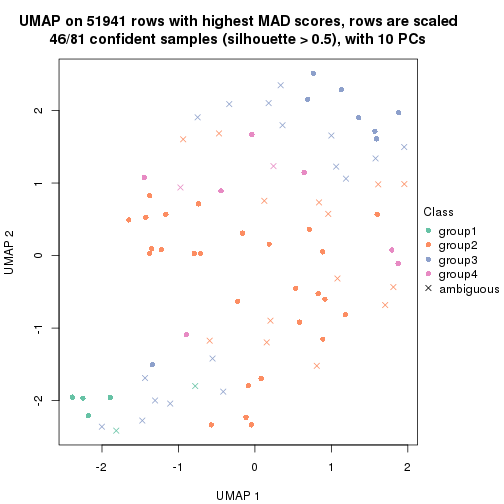
dimension_reduction(res, k = 5, method = "UMAP")
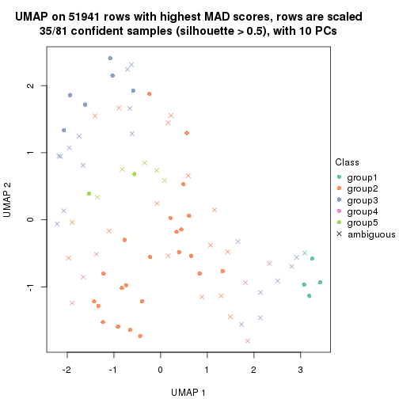
dimension_reduction(res, k = 6, method = "UMAP")
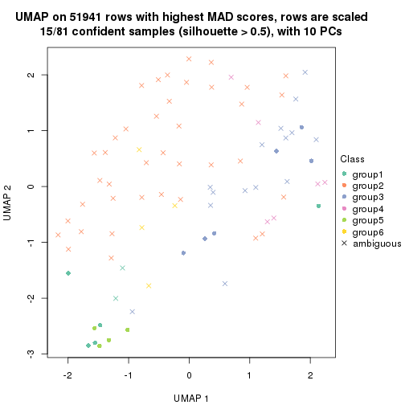
Following heatmap shows how subgroups are split when increasing k:
collect_classes(res)
Test correlation between subgroups and known annotations. If the known annotation is numeric, one-way ANOVA test is applied, and if the known annotation is discrete, chi-squared contingency table test is applied.
test_to_known_factors(res)
#> n disease.state(p) k
#> MAD:hclust 76 0.968 2
#> MAD:hclust 62 0.865 3
#> MAD:hclust 46 0.961 4
#> MAD:hclust 35 0.981 5
#> MAD:hclust 15 NA 6
If matrix rows can be associated to genes, consider to use GO_Enrichment(res,
...) to perform function enrichment for the signature genes.
The object with results only for a single top-value method and a single partition method can be extracted as:
res = res_list["MAD", "kmeans"]
# you can also extract it by
# res = res_list["MAD:kmeans"]
A summary of res and all the functions that can be applied to it:
res
#> A 'ConsensusPartition' object with k = 2, 3, 4, 5, 6.
#> On a matrix with 51941 rows and 81 columns.
#> Top rows (1000, 2000, 3000, 4000, 5000) are extracted by 'MAD' method.
#> Subgroups are detected by 'kmeans' method.
#> Performed in total 1250 partitions by row resampling.
#> Best k for subgroups seems to be 2.
#>
#> Following methods can be applied to this 'ConsensusPartition' object:
#> [1] "cola_report" "collect_classes" "collect_plots"
#> [4] "collect_stats" "colnames" "compare_signatures"
#> [7] "consensus_heatmap" "dimension_reduction" "functional_enrichment"
#> [10] "get_anno_col" "get_anno" "get_classes"
#> [13] "get_consensus" "get_matrix" "get_membership"
#> [16] "get_param" "get_signatures" "get_stats"
#> [19] "is_best_k" "is_stable_k" "membership_heatmap"
#> [22] "ncol" "nrow" "plot_ecdf"
#> [25] "rownames" "select_partition_number" "show"
#> [28] "suggest_best_k" "test_to_known_factors"
collect_plots() function collects all the plots made from res for all k (number of partitions)
into one single page to provide an easy and fast comparison between different k.
collect_plots(res)
The plots are:
k and the heatmap of
predicted classes for each k.k.k.k.All the plots in panels can be made by individual functions and they are plotted later in this section.
select_partition_number() produces several plots showing different
statistics for choosing “optimized” k. There are following statistics:
k;k, the area increased is defined as \(A_k - A_{k-1}\).The detailed explanations of these statistics can be found in the cola vignette.
Generally speaking, lower PAC score, higher mean silhouette score or higher
concordance corresponds to better partition. Rand index and Jaccard index
measure how similar the current partition is compared to partition with k-1.
If they are too similar, we won't accept k is better than k-1.
select_partition_number(res)
The numeric values for all these statistics can be obtained by get_stats().
get_stats(res)
#> k 1-PAC mean_silhouette concordance area_increased Rand Jaccard
#> 2 2 0.681 0.790 0.905 0.4779 0.503 0.503
#> 3 3 0.618 0.853 0.871 0.3063 0.835 0.689
#> 4 4 0.539 0.753 0.812 0.1687 0.825 0.580
#> 5 5 0.597 0.481 0.729 0.0764 0.955 0.841
#> 6 6 0.586 0.326 0.578 0.0436 0.859 0.510
suggest_best_k() suggests the best \(k\) based on these statistics. The rules are as follows:
NA.suggest_best_k(res)
#> [1] 2
Following shows the table of the partitions (You need to click the show/hide
code output link to see it). The membership matrix (columns with name p*)
is inferred by
clue::cl_consensus()
function with the SE method. Basically the value in the membership matrix
represents the probability to belong to a certain group. The finall class
label for an item is determined with the group with highest probability it
belongs to.
In get_classes() function, the entropy is calculated from the membership
matrix and the silhouette score is calculated from the consensus matrix.
cbind(get_classes(res, k = 2), get_membership(res, k = 2))
#> class entropy silhouette p1 p2
#> GSM1301497 1 0.4022 0.8478 0.920 0.080
#> GSM1301537 1 0.6247 0.8003 0.844 0.156
#> GSM1301521 1 0.4022 0.8480 0.920 0.080
#> GSM1301555 2 0.0938 0.9285 0.012 0.988
#> GSM1301501 2 0.0000 0.9318 0.000 1.000
#> GSM1301508 2 0.1184 0.9271 0.016 0.984
#> GSM1301481 1 0.9996 0.1560 0.512 0.488
#> GSM1301482 1 0.0000 0.8381 1.000 0.000
#> GSM1301483 2 0.2236 0.9122 0.036 0.964
#> GSM1301484 1 0.9909 0.2973 0.556 0.444
#> GSM1301485 1 0.1184 0.8419 0.984 0.016
#> GSM1301486 1 0.4161 0.8476 0.916 0.084
#> GSM1301487 1 0.1184 0.8419 0.984 0.016
#> GSM1301488 1 0.4431 0.8144 0.908 0.092
#> GSM1301489 2 0.0000 0.9318 0.000 1.000
#> GSM1301490 2 0.2236 0.9122 0.036 0.964
#> GSM1301491 2 0.0000 0.9318 0.000 1.000
#> GSM1301492 1 0.9710 0.4000 0.600 0.400
#> GSM1301493 1 0.4022 0.8480 0.920 0.080
#> GSM1301494 1 0.4161 0.8476 0.916 0.084
#> GSM1301495 1 0.4431 0.8440 0.908 0.092
#> GSM1301496 2 0.0376 0.9313 0.004 0.996
#> GSM1301498 2 0.0000 0.9318 0.000 1.000
#> GSM1301499 1 0.4161 0.8476 0.916 0.084
#> GSM1301500 1 0.2043 0.8337 0.968 0.032
#> GSM1301502 2 0.3114 0.8918 0.056 0.944
#> GSM1301503 2 0.0938 0.9285 0.012 0.988
#> GSM1301504 2 0.0000 0.9318 0.000 1.000
#> GSM1301505 1 0.9944 0.2616 0.544 0.456
#> GSM1301506 2 0.0938 0.9285 0.012 0.988
#> GSM1301507 2 0.0938 0.9285 0.012 0.988
#> GSM1301509 1 0.0938 0.8410 0.988 0.012
#> GSM1301510 1 0.0000 0.8381 1.000 0.000
#> GSM1301511 2 0.0376 0.9313 0.004 0.996
#> GSM1301512 2 0.0376 0.9313 0.004 0.996
#> GSM1301513 1 0.1184 0.8419 0.984 0.016
#> GSM1301514 2 0.0672 0.9306 0.008 0.992
#> GSM1301515 2 0.0000 0.9318 0.000 1.000
#> GSM1301516 2 0.3733 0.8800 0.072 0.928
#> GSM1301517 2 0.0376 0.9313 0.004 0.996
#> GSM1301518 1 0.0938 0.8410 0.988 0.012
#> GSM1301519 2 0.0376 0.9313 0.004 0.996
#> GSM1301520 2 0.0000 0.9318 0.000 1.000
#> GSM1301522 2 0.2043 0.9116 0.032 0.968
#> GSM1301523 1 0.9993 0.1170 0.516 0.484
#> GSM1301524 2 0.0000 0.9318 0.000 1.000
#> GSM1301525 1 0.6048 0.8136 0.852 0.148
#> GSM1301526 2 0.1184 0.9271 0.016 0.984
#> GSM1301527 2 0.0000 0.9318 0.000 1.000
#> GSM1301528 1 0.0000 0.8381 1.000 0.000
#> GSM1301529 1 0.2043 0.8337 0.968 0.032
#> GSM1301530 2 0.0938 0.9285 0.012 0.988
#> GSM1301531 2 0.9209 0.4125 0.336 0.664
#> GSM1301532 2 0.0938 0.9285 0.012 0.988
#> GSM1301533 2 0.5178 0.8299 0.116 0.884
#> GSM1301534 2 0.0000 0.9318 0.000 1.000
#> GSM1301535 1 0.4431 0.8440 0.908 0.092
#> GSM1301536 1 0.9909 0.2973 0.556 0.444
#> GSM1301538 1 0.3733 0.8475 0.928 0.072
#> GSM1301539 1 0.3733 0.8418 0.928 0.072
#> GSM1301540 2 0.9922 0.0486 0.448 0.552
#> GSM1301541 2 0.1184 0.9271 0.016 0.984
#> GSM1301542 1 0.2043 0.8337 0.968 0.032
#> GSM1301543 2 0.0000 0.9318 0.000 1.000
#> GSM1301544 2 0.9896 0.0795 0.440 0.560
#> GSM1301545 1 0.7528 0.6782 0.784 0.216
#> GSM1301546 2 0.0938 0.9291 0.012 0.988
#> GSM1301547 2 0.0938 0.9285 0.012 0.988
#> GSM1301548 2 0.0000 0.9318 0.000 1.000
#> GSM1301549 2 0.3879 0.8747 0.076 0.924
#> GSM1301550 2 0.1184 0.9271 0.016 0.984
#> GSM1301551 1 0.4161 0.8476 0.916 0.084
#> GSM1301552 1 0.4161 0.8476 0.916 0.084
#> GSM1301553 1 0.9996 0.1041 0.512 0.488
#> GSM1301554 2 0.0000 0.9318 0.000 1.000
#> GSM1301556 2 0.0376 0.9313 0.004 0.996
#> GSM1301557 2 0.5294 0.8271 0.120 0.880
#> GSM1301558 2 0.1414 0.9252 0.020 0.980
#> GSM1301559 2 0.9996 -0.1101 0.488 0.512
#> GSM1301560 2 0.3431 0.8932 0.064 0.936
#> GSM1301561 1 0.1184 0.8419 0.984 0.016
cbind(get_classes(res, k = 3), get_membership(res, k = 3))
#> class entropy silhouette p1 p2 p3
#> GSM1301497 3 0.1781 0.904 0.020 0.020 0.960
#> GSM1301537 3 0.4349 0.820 0.128 0.020 0.852
#> GSM1301521 3 0.1411 0.903 0.036 0.000 0.964
#> GSM1301555 2 0.5247 0.844 0.224 0.768 0.008
#> GSM1301501 2 0.1877 0.867 0.012 0.956 0.032
#> GSM1301508 2 0.5156 0.845 0.216 0.776 0.008
#> GSM1301481 3 0.2846 0.888 0.020 0.056 0.924
#> GSM1301482 1 0.5098 0.860 0.752 0.000 0.248
#> GSM1301483 2 0.2176 0.864 0.020 0.948 0.032
#> GSM1301484 3 0.3031 0.879 0.012 0.076 0.912
#> GSM1301485 3 0.1643 0.893 0.044 0.000 0.956
#> GSM1301486 3 0.1163 0.902 0.028 0.000 0.972
#> GSM1301487 3 0.1643 0.893 0.044 0.000 0.956
#> GSM1301488 1 0.6324 0.800 0.764 0.160 0.076
#> GSM1301489 2 0.4808 0.857 0.188 0.804 0.008
#> GSM1301490 2 0.2313 0.866 0.024 0.944 0.032
#> GSM1301491 2 0.2599 0.878 0.052 0.932 0.016
#> GSM1301492 3 0.3573 0.841 0.004 0.120 0.876
#> GSM1301493 3 0.1411 0.903 0.036 0.000 0.964
#> GSM1301494 3 0.0983 0.905 0.016 0.004 0.980
#> GSM1301495 3 0.1751 0.902 0.012 0.028 0.960
#> GSM1301496 2 0.1315 0.871 0.008 0.972 0.020
#> GSM1301498 2 0.3461 0.879 0.076 0.900 0.024
#> GSM1301499 3 0.1411 0.899 0.036 0.000 0.964
#> GSM1301500 1 0.4842 0.873 0.776 0.000 0.224
#> GSM1301502 2 0.7346 0.455 0.040 0.592 0.368
#> GSM1301503 2 0.5061 0.849 0.208 0.784 0.008
#> GSM1301504 2 0.1919 0.870 0.020 0.956 0.024
#> GSM1301505 3 0.3293 0.873 0.012 0.088 0.900
#> GSM1301506 2 0.5247 0.844 0.224 0.768 0.008
#> GSM1301507 2 0.5061 0.846 0.208 0.784 0.008
#> GSM1301509 1 0.6726 0.814 0.748 0.120 0.132
#> GSM1301510 1 0.5016 0.866 0.760 0.000 0.240
#> GSM1301511 2 0.1482 0.873 0.020 0.968 0.012
#> GSM1301512 2 0.2443 0.866 0.032 0.940 0.028
#> GSM1301513 3 0.1411 0.899 0.036 0.000 0.964
#> GSM1301514 2 0.2982 0.876 0.056 0.920 0.024
#> GSM1301515 2 0.4228 0.864 0.148 0.844 0.008
#> GSM1301516 2 0.5951 0.722 0.040 0.764 0.196
#> GSM1301517 2 0.2050 0.867 0.020 0.952 0.028
#> GSM1301518 1 0.5178 0.852 0.744 0.000 0.256
#> GSM1301519 2 0.1711 0.866 0.008 0.960 0.032
#> GSM1301520 2 0.4324 0.877 0.112 0.860 0.028
#> GSM1301522 2 0.2443 0.866 0.028 0.940 0.032
#> GSM1301523 1 0.2414 0.760 0.940 0.040 0.020
#> GSM1301524 2 0.2879 0.869 0.052 0.924 0.024
#> GSM1301525 3 0.3683 0.881 0.044 0.060 0.896
#> GSM1301526 2 0.2165 0.875 0.064 0.936 0.000
#> GSM1301527 2 0.4228 0.864 0.148 0.844 0.008
#> GSM1301528 1 0.4887 0.872 0.772 0.000 0.228
#> GSM1301529 1 0.4887 0.872 0.772 0.000 0.228
#> GSM1301530 2 0.4834 0.852 0.204 0.792 0.004
#> GSM1301531 3 0.4339 0.851 0.084 0.048 0.868
#> GSM1301532 2 0.5247 0.844 0.224 0.768 0.008
#> GSM1301533 2 0.7062 0.695 0.068 0.696 0.236
#> GSM1301534 2 0.4291 0.863 0.152 0.840 0.008
#> GSM1301535 3 0.2116 0.899 0.012 0.040 0.948
#> GSM1301536 3 0.2651 0.890 0.012 0.060 0.928
#> GSM1301538 3 0.2448 0.888 0.076 0.000 0.924
#> GSM1301539 3 0.2537 0.884 0.080 0.000 0.920
#> GSM1301540 3 0.4269 0.856 0.052 0.076 0.872
#> GSM1301541 2 0.4912 0.851 0.196 0.796 0.008
#> GSM1301542 1 0.4887 0.872 0.772 0.000 0.228
#> GSM1301543 2 0.4228 0.864 0.148 0.844 0.008
#> GSM1301544 3 0.4786 0.825 0.044 0.112 0.844
#> GSM1301545 1 0.5981 0.822 0.788 0.132 0.080
#> GSM1301546 2 0.1289 0.874 0.032 0.968 0.000
#> GSM1301547 2 0.5335 0.843 0.232 0.760 0.008
#> GSM1301548 2 0.4228 0.864 0.148 0.844 0.008
#> GSM1301549 2 0.3995 0.813 0.016 0.868 0.116
#> GSM1301550 2 0.2096 0.873 0.052 0.944 0.004
#> GSM1301551 3 0.1411 0.899 0.036 0.000 0.964
#> GSM1301552 3 0.1411 0.899 0.036 0.000 0.964
#> GSM1301553 1 0.3045 0.763 0.916 0.064 0.020
#> GSM1301554 2 0.4164 0.864 0.144 0.848 0.008
#> GSM1301556 2 0.1337 0.872 0.016 0.972 0.012
#> GSM1301557 2 0.4121 0.814 0.024 0.868 0.108
#> GSM1301558 2 0.3359 0.838 0.016 0.900 0.084
#> GSM1301559 3 0.5318 0.720 0.016 0.204 0.780
#> GSM1301560 2 0.6578 0.821 0.224 0.724 0.052
#> GSM1301561 3 0.1860 0.888 0.052 0.000 0.948
cbind(get_classes(res, k = 4), get_membership(res, k = 4))
#> class entropy silhouette p1 p2 p3 p4
#> GSM1301497 3 0.4145 0.8113 0.044 0.004 0.828 0.124
#> GSM1301537 3 0.7334 0.5702 0.056 0.268 0.600 0.076
#> GSM1301521 3 0.2884 0.8309 0.068 0.004 0.900 0.028
#> GSM1301555 2 0.1151 0.8366 0.024 0.968 0.008 0.000
#> GSM1301501 4 0.4466 0.7688 0.000 0.180 0.036 0.784
#> GSM1301508 2 0.3234 0.8274 0.020 0.884 0.012 0.084
#> GSM1301481 3 0.2805 0.8205 0.000 0.012 0.888 0.100
#> GSM1301482 1 0.2412 0.8996 0.908 0.000 0.084 0.008
#> GSM1301483 4 0.3711 0.7695 0.008 0.116 0.024 0.852
#> GSM1301484 3 0.3157 0.8041 0.000 0.004 0.852 0.144
#> GSM1301485 3 0.3453 0.8113 0.080 0.000 0.868 0.052
#> GSM1301486 3 0.2563 0.8272 0.072 0.000 0.908 0.020
#> GSM1301487 3 0.3754 0.8106 0.084 0.000 0.852 0.064
#> GSM1301488 1 0.3573 0.8416 0.848 0.004 0.016 0.132
#> GSM1301489 2 0.1822 0.8438 0.004 0.944 0.008 0.044
#> GSM1301490 4 0.4984 0.7597 0.004 0.160 0.064 0.772
#> GSM1301491 2 0.5809 0.2734 0.012 0.572 0.016 0.400
#> GSM1301492 3 0.5161 0.1124 0.004 0.000 0.520 0.476
#> GSM1301493 3 0.3089 0.8303 0.044 0.008 0.896 0.052
#> GSM1301494 3 0.2797 0.8243 0.032 0.000 0.900 0.068
#> GSM1301495 3 0.3127 0.8296 0.032 0.008 0.892 0.068
#> GSM1301496 4 0.4420 0.7477 0.012 0.204 0.008 0.776
#> GSM1301498 4 0.5707 0.7321 0.008 0.268 0.044 0.680
#> GSM1301499 3 0.3547 0.8148 0.072 0.000 0.864 0.064
#> GSM1301500 1 0.1305 0.9124 0.960 0.000 0.036 0.004
#> GSM1301502 3 0.6330 0.6260 0.008 0.208 0.672 0.112
#> GSM1301503 2 0.1007 0.8460 0.008 0.976 0.008 0.008
#> GSM1301504 4 0.5406 0.7394 0.004 0.268 0.036 0.692
#> GSM1301505 3 0.3725 0.7871 0.000 0.008 0.812 0.180
#> GSM1301506 2 0.1339 0.8387 0.024 0.964 0.008 0.004
#> GSM1301507 2 0.2255 0.8468 0.012 0.920 0.000 0.068
#> GSM1301509 4 0.6305 0.0854 0.424 0.000 0.060 0.516
#> GSM1301510 1 0.1807 0.9117 0.940 0.000 0.052 0.008
#> GSM1301511 4 0.5270 0.6119 0.008 0.320 0.012 0.660
#> GSM1301512 4 0.4431 0.7522 0.016 0.152 0.024 0.808
#> GSM1301513 3 0.3547 0.8120 0.064 0.000 0.864 0.072
#> GSM1301514 4 0.5527 0.6507 0.020 0.256 0.024 0.700
#> GSM1301515 2 0.3916 0.7941 0.008 0.816 0.008 0.168
#> GSM1301516 4 0.6805 0.6479 0.012 0.148 0.200 0.640
#> GSM1301517 4 0.4241 0.7689 0.012 0.164 0.016 0.808
#> GSM1301518 1 0.5184 0.7395 0.736 0.000 0.204 0.060
#> GSM1301519 4 0.3547 0.7766 0.000 0.144 0.016 0.840
#> GSM1301520 2 0.6781 0.4719 0.012 0.592 0.088 0.308
#> GSM1301522 4 0.5144 0.7574 0.004 0.168 0.068 0.760
#> GSM1301523 1 0.2882 0.8505 0.892 0.084 0.000 0.024
#> GSM1301524 4 0.5628 0.7514 0.008 0.236 0.052 0.704
#> GSM1301525 3 0.3974 0.8206 0.016 0.040 0.852 0.092
#> GSM1301526 4 0.5433 0.5014 0.004 0.448 0.008 0.540
#> GSM1301527 2 0.3916 0.7941 0.008 0.816 0.008 0.168
#> GSM1301528 1 0.2149 0.9007 0.912 0.000 0.088 0.000
#> GSM1301529 1 0.2053 0.9062 0.924 0.000 0.072 0.004
#> GSM1301530 2 0.0927 0.8444 0.016 0.976 0.000 0.008
#> GSM1301531 3 0.4082 0.8051 0.004 0.052 0.836 0.108
#> GSM1301532 2 0.1339 0.8389 0.024 0.964 0.008 0.004
#> GSM1301533 4 0.8315 0.4015 0.020 0.308 0.252 0.420
#> GSM1301534 2 0.3246 0.8314 0.008 0.868 0.008 0.116
#> GSM1301535 3 0.2707 0.8303 0.016 0.008 0.908 0.068
#> GSM1301536 3 0.2976 0.8186 0.000 0.008 0.872 0.120
#> GSM1301538 3 0.6136 0.7279 0.064 0.156 0.728 0.052
#> GSM1301539 3 0.6634 0.6497 0.112 0.204 0.664 0.020
#> GSM1301540 3 0.4170 0.8158 0.016 0.028 0.832 0.124
#> GSM1301541 2 0.1743 0.8513 0.004 0.940 0.000 0.056
#> GSM1301542 1 0.1305 0.9124 0.960 0.000 0.036 0.004
#> GSM1301543 2 0.4381 0.7691 0.012 0.780 0.008 0.200
#> GSM1301544 3 0.4911 0.7517 0.016 0.024 0.764 0.196
#> GSM1301545 1 0.2510 0.8818 0.916 0.008 0.012 0.064
#> GSM1301546 4 0.4420 0.7322 0.012 0.240 0.000 0.748
#> GSM1301547 2 0.1139 0.8419 0.012 0.972 0.008 0.008
#> GSM1301548 2 0.3916 0.7941 0.008 0.816 0.008 0.168
#> GSM1301549 4 0.5816 0.7194 0.000 0.144 0.148 0.708
#> GSM1301550 4 0.5636 0.7432 0.060 0.260 0.000 0.680
#> GSM1301551 3 0.2742 0.8293 0.076 0.000 0.900 0.024
#> GSM1301552 3 0.2845 0.8295 0.076 0.000 0.896 0.028
#> GSM1301553 1 0.3051 0.8483 0.884 0.088 0.000 0.028
#> GSM1301554 2 0.3043 0.8350 0.004 0.876 0.008 0.112
#> GSM1301556 4 0.4621 0.7398 0.012 0.212 0.012 0.764
#> GSM1301557 4 0.3648 0.7483 0.008 0.068 0.056 0.868
#> GSM1301558 4 0.4498 0.7753 0.008 0.140 0.044 0.808
#> GSM1301559 4 0.5587 0.3934 0.000 0.028 0.372 0.600
#> GSM1301560 2 0.3346 0.7662 0.024 0.888 0.060 0.028
#> GSM1301561 3 0.3611 0.8081 0.080 0.000 0.860 0.060
cbind(get_classes(res, k = 5), get_membership(res, k = 5))
#> class entropy silhouette p1 p2 p3 p4 p5
#> GSM1301497 3 0.4661 0.3878 0.012 0.000 0.756 0.076 0.156
#> GSM1301537 3 0.7423 0.2343 0.020 0.204 0.468 0.020 0.288
#> GSM1301521 3 0.2455 0.4653 0.008 0.004 0.896 0.004 0.088
#> GSM1301555 2 0.2522 0.7480 0.000 0.896 0.004 0.024 0.076
#> GSM1301501 4 0.4219 0.6357 0.000 0.072 0.000 0.772 0.156
#> GSM1301508 2 0.3080 0.7456 0.008 0.844 0.000 0.008 0.140
#> GSM1301481 3 0.4040 -0.0144 0.000 0.000 0.724 0.016 0.260
#> GSM1301482 1 0.4049 0.7699 0.780 0.000 0.164 0.000 0.056
#> GSM1301483 4 0.4145 0.6391 0.004 0.012 0.004 0.736 0.244
#> GSM1301484 3 0.4670 -0.1924 0.000 0.000 0.724 0.076 0.200
#> GSM1301485 3 0.3106 0.3129 0.020 0.000 0.840 0.000 0.140
#> GSM1301486 3 0.1026 0.4285 0.004 0.000 0.968 0.004 0.024
#> GSM1301487 3 0.3370 0.3178 0.028 0.000 0.824 0.000 0.148
#> GSM1301488 1 0.4736 0.6327 0.712 0.000 0.000 0.216 0.072
#> GSM1301489 2 0.2813 0.7479 0.000 0.868 0.000 0.024 0.108
#> GSM1301490 4 0.4825 0.6018 0.004 0.024 0.004 0.652 0.316
#> GSM1301491 4 0.6183 0.1952 0.004 0.316 0.004 0.552 0.124
#> GSM1301492 3 0.5824 -0.2663 0.004 0.000 0.520 0.392 0.084
#> GSM1301493 3 0.3237 0.4615 0.008 0.004 0.840 0.008 0.140
#> GSM1301494 3 0.3128 0.2439 0.004 0.000 0.824 0.004 0.168
#> GSM1301495 3 0.3592 0.4540 0.012 0.000 0.808 0.012 0.168
#> GSM1301496 4 0.2150 0.6880 0.004 0.040 0.004 0.924 0.028
#> GSM1301498 4 0.6376 0.4917 0.000 0.152 0.004 0.488 0.356
#> GSM1301499 3 0.3088 0.2557 0.004 0.000 0.828 0.004 0.164
#> GSM1301500 1 0.0854 0.8334 0.976 0.000 0.012 0.008 0.004
#> GSM1301502 3 0.7251 0.2170 0.004 0.172 0.564 0.092 0.168
#> GSM1301503 2 0.0609 0.7674 0.000 0.980 0.000 0.020 0.000
#> GSM1301504 4 0.5816 0.6001 0.000 0.132 0.000 0.588 0.280
#> GSM1301505 5 0.5238 0.0000 0.000 0.000 0.472 0.044 0.484
#> GSM1301506 2 0.2610 0.7460 0.000 0.892 0.004 0.028 0.076
#> GSM1301507 2 0.2605 0.7617 0.004 0.896 0.000 0.044 0.056
#> GSM1301509 4 0.6309 0.4283 0.256 0.000 0.036 0.600 0.108
#> GSM1301510 1 0.3392 0.8142 0.848 0.000 0.064 0.004 0.084
#> GSM1301511 4 0.5039 0.5179 0.000 0.188 0.004 0.708 0.100
#> GSM1301512 4 0.2567 0.6778 0.004 0.012 0.004 0.892 0.088
#> GSM1301513 3 0.3851 0.1966 0.016 0.000 0.768 0.004 0.212
#> GSM1301514 4 0.4702 0.6106 0.008 0.052 0.004 0.740 0.196
#> GSM1301515 2 0.5269 0.6594 0.004 0.688 0.000 0.188 0.120
#> GSM1301516 4 0.7561 0.1785 0.000 0.056 0.216 0.428 0.300
#> GSM1301517 4 0.1340 0.6938 0.004 0.016 0.004 0.960 0.016
#> GSM1301518 1 0.6631 0.2404 0.444 0.000 0.360 0.004 0.192
#> GSM1301519 4 0.2325 0.6934 0.000 0.028 0.000 0.904 0.068
#> GSM1301520 4 0.8334 0.0392 0.004 0.196 0.132 0.336 0.332
#> GSM1301522 4 0.5175 0.5974 0.004 0.044 0.004 0.636 0.312
#> GSM1301523 1 0.1756 0.8219 0.940 0.008 0.000 0.016 0.036
#> GSM1301524 4 0.5560 0.6229 0.000 0.156 0.004 0.660 0.180
#> GSM1301525 3 0.5430 -0.0287 0.000 0.028 0.616 0.032 0.324
#> GSM1301526 4 0.5143 0.4195 0.000 0.368 0.000 0.584 0.048
#> GSM1301527 2 0.5159 0.6701 0.004 0.700 0.000 0.180 0.116
#> GSM1301528 1 0.3983 0.7724 0.784 0.000 0.164 0.000 0.052
#> GSM1301529 1 0.2921 0.8041 0.856 0.000 0.124 0.000 0.020
#> GSM1301530 2 0.2260 0.7528 0.000 0.908 0.000 0.028 0.064
#> GSM1301531 3 0.5430 -0.2562 0.000 0.032 0.576 0.020 0.372
#> GSM1301532 2 0.2511 0.7457 0.000 0.892 0.000 0.028 0.080
#> GSM1301533 2 0.8493 -0.1030 0.000 0.332 0.196 0.240 0.232
#> GSM1301534 2 0.5018 0.6828 0.004 0.716 0.000 0.164 0.116
#> GSM1301535 3 0.3488 0.4413 0.008 0.000 0.804 0.008 0.180
#> GSM1301536 3 0.4054 -0.0659 0.000 0.000 0.732 0.020 0.248
#> GSM1301538 3 0.6679 0.3113 0.016 0.172 0.576 0.012 0.224
#> GSM1301539 3 0.6890 0.2854 0.076 0.196 0.596 0.004 0.128
#> GSM1301540 3 0.5643 -0.0929 0.004 0.028 0.476 0.020 0.472
#> GSM1301541 2 0.1041 0.7681 0.004 0.964 0.000 0.032 0.000
#> GSM1301542 1 0.0671 0.8335 0.980 0.000 0.016 0.000 0.004
#> GSM1301543 2 0.5881 0.6059 0.004 0.620 0.000 0.196 0.180
#> GSM1301544 3 0.6408 0.2780 0.012 0.012 0.576 0.116 0.284
#> GSM1301545 1 0.0880 0.8276 0.968 0.000 0.000 0.032 0.000
#> GSM1301546 4 0.1901 0.6950 0.004 0.040 0.000 0.932 0.024
#> GSM1301547 2 0.2017 0.7551 0.000 0.912 0.000 0.008 0.080
#> GSM1301548 2 0.5159 0.6701 0.004 0.700 0.000 0.180 0.116
#> GSM1301549 4 0.6691 0.3578 0.000 0.028 0.128 0.500 0.344
#> GSM1301550 4 0.4304 0.6811 0.028 0.060 0.000 0.800 0.112
#> GSM1301551 3 0.1059 0.4510 0.008 0.000 0.968 0.004 0.020
#> GSM1301552 3 0.0854 0.4437 0.008 0.000 0.976 0.004 0.012
#> GSM1301553 1 0.1772 0.8220 0.940 0.008 0.000 0.020 0.032
#> GSM1301554 2 0.4922 0.6879 0.004 0.720 0.000 0.180 0.096
#> GSM1301556 4 0.3427 0.6611 0.004 0.080 0.004 0.852 0.060
#> GSM1301557 4 0.4457 0.6169 0.004 0.004 0.012 0.684 0.296
#> GSM1301558 4 0.3100 0.6812 0.000 0.028 0.028 0.876 0.068
#> GSM1301559 4 0.6387 0.1736 0.000 0.000 0.272 0.512 0.216
#> GSM1301560 2 0.5135 0.6099 0.000 0.732 0.084 0.028 0.156
#> GSM1301561 3 0.3476 0.2829 0.020 0.000 0.816 0.004 0.160
cbind(get_classes(res, k = 6), get_membership(res, k = 6))
#> class entropy silhouette p1 p2 p3 p4 p5 p6
#> GSM1301497 5 0.6590 -0.1016 0.000 0.108 0.400 0.084 0.408 0.000
#> GSM1301537 5 0.8052 0.0757 0.000 0.132 0.248 0.044 0.372 0.204
#> GSM1301521 3 0.4860 0.1012 0.004 0.036 0.564 0.000 0.388 0.008
#> GSM1301555 6 0.0696 0.6545 0.004 0.004 0.004 0.000 0.008 0.980
#> GSM1301501 2 0.5264 -0.1497 0.000 0.520 0.008 0.416 0.024 0.032
#> GSM1301508 6 0.4099 0.5756 0.004 0.096 0.008 0.036 0.052 0.804
#> GSM1301481 3 0.2116 0.3385 0.000 0.036 0.916 0.024 0.024 0.000
#> GSM1301482 1 0.4865 0.6170 0.640 0.016 0.056 0.000 0.288 0.000
#> GSM1301483 4 0.4803 0.5083 0.004 0.192 0.008 0.704 0.088 0.004
#> GSM1301484 3 0.3413 0.3236 0.000 0.024 0.836 0.068 0.072 0.000
#> GSM1301485 5 0.4124 0.3182 0.012 0.000 0.332 0.008 0.648 0.000
#> GSM1301486 3 0.4397 -0.0904 0.012 0.008 0.528 0.000 0.452 0.000
#> GSM1301487 5 0.3827 0.3104 0.000 0.004 0.308 0.008 0.680 0.000
#> GSM1301488 1 0.6194 0.4051 0.524 0.068 0.000 0.312 0.096 0.000
#> GSM1301489 6 0.4589 0.1819 0.000 0.388 0.020 0.004 0.008 0.580
#> GSM1301490 4 0.6528 0.4920 0.004 0.148 0.068 0.628 0.088 0.064
#> GSM1301491 2 0.5263 0.1826 0.000 0.604 0.012 0.300 0.004 0.080
#> GSM1301492 3 0.5849 0.2223 0.000 0.056 0.548 0.332 0.060 0.004
#> GSM1301493 3 0.5402 0.1063 0.000 0.056 0.540 0.012 0.380 0.012
#> GSM1301494 3 0.3976 -0.0127 0.000 0.004 0.612 0.004 0.380 0.000
#> GSM1301495 3 0.5560 0.0913 0.000 0.076 0.516 0.012 0.388 0.008
#> GSM1301496 4 0.4880 0.3781 0.000 0.344 0.012 0.596 0.000 0.048
#> GSM1301498 4 0.8244 0.3198 0.004 0.180 0.140 0.392 0.060 0.224
#> GSM1301499 3 0.4234 -0.0890 0.012 0.000 0.576 0.004 0.408 0.000
#> GSM1301500 1 0.0551 0.7864 0.984 0.008 0.004 0.000 0.004 0.000
#> GSM1301502 3 0.7656 0.0952 0.000 0.076 0.464 0.068 0.216 0.176
#> GSM1301503 6 0.2527 0.5777 0.000 0.168 0.000 0.000 0.000 0.832
#> GSM1301504 4 0.7354 0.4277 0.000 0.180 0.084 0.500 0.044 0.192
#> GSM1301505 3 0.5926 0.2062 0.000 0.116 0.632 0.124 0.128 0.000
#> GSM1301506 6 0.0810 0.6540 0.004 0.004 0.000 0.008 0.008 0.976
#> GSM1301507 6 0.3619 0.3303 0.000 0.316 0.000 0.000 0.004 0.680
#> GSM1301509 4 0.5671 0.4328 0.180 0.036 0.032 0.668 0.084 0.000
#> GSM1301510 1 0.4566 0.6860 0.696 0.024 0.004 0.032 0.244 0.000
#> GSM1301511 2 0.5083 -0.0823 0.000 0.524 0.012 0.412 0.000 0.052
#> GSM1301512 4 0.5089 0.4442 0.000 0.276 0.016 0.648 0.036 0.024
#> GSM1301513 5 0.5010 0.2560 0.012 0.016 0.380 0.024 0.568 0.000
#> GSM1301514 4 0.6325 0.3063 0.000 0.332 0.016 0.516 0.088 0.048
#> GSM1301515 2 0.4327 0.3852 0.000 0.596 0.004 0.008 0.008 0.384
#> GSM1301516 3 0.7566 0.0960 0.000 0.064 0.416 0.328 0.088 0.104
#> GSM1301517 4 0.4571 0.4804 0.000 0.252 0.016 0.684 0.000 0.048
#> GSM1301518 5 0.6893 0.0183 0.240 0.048 0.124 0.052 0.536 0.000
#> GSM1301519 4 0.4795 0.4818 0.000 0.256 0.020 0.676 0.008 0.040
#> GSM1301520 2 0.7875 0.0672 0.000 0.476 0.144 0.132 0.152 0.096
#> GSM1301522 4 0.6479 0.5009 0.004 0.120 0.088 0.640 0.080 0.068
#> GSM1301523 1 0.1959 0.7684 0.924 0.032 0.000 0.000 0.024 0.020
#> GSM1301524 4 0.5375 0.4050 0.000 0.016 0.056 0.580 0.012 0.336
#> GSM1301525 3 0.4783 0.3035 0.004 0.196 0.708 0.012 0.076 0.004
#> GSM1301526 6 0.4964 -0.1629 0.000 0.056 0.004 0.428 0.000 0.512
#> GSM1301527 2 0.4261 0.3646 0.000 0.584 0.004 0.004 0.008 0.400
#> GSM1301528 1 0.4726 0.5990 0.628 0.012 0.044 0.000 0.316 0.000
#> GSM1301529 1 0.4279 0.6852 0.744 0.024 0.048 0.000 0.184 0.000
#> GSM1301530 6 0.1478 0.6495 0.004 0.032 0.000 0.020 0.000 0.944
#> GSM1301531 3 0.4613 0.2958 0.000 0.220 0.708 0.024 0.044 0.004
#> GSM1301532 6 0.0696 0.6548 0.004 0.004 0.000 0.008 0.004 0.980
#> GSM1301533 6 0.6654 0.2537 0.000 0.056 0.204 0.132 0.036 0.572
#> GSM1301534 2 0.4292 0.3292 0.000 0.568 0.004 0.004 0.008 0.416
#> GSM1301535 3 0.5194 0.1512 0.000 0.052 0.576 0.012 0.352 0.008
#> GSM1301536 3 0.2123 0.3397 0.000 0.052 0.912 0.024 0.012 0.000
#> GSM1301538 5 0.7577 0.0712 0.004 0.076 0.308 0.020 0.376 0.216
#> GSM1301539 5 0.7733 0.1353 0.080 0.040 0.296 0.000 0.376 0.208
#> GSM1301540 3 0.6350 0.2207 0.004 0.232 0.564 0.040 0.152 0.008
#> GSM1301541 6 0.2948 0.5550 0.000 0.188 0.000 0.008 0.000 0.804
#> GSM1301542 1 0.0653 0.7866 0.980 0.012 0.004 0.000 0.004 0.000
#> GSM1301543 2 0.4482 0.3903 0.000 0.648 0.016 0.012 0.008 0.316
#> GSM1301544 3 0.7269 -0.0020 0.000 0.196 0.380 0.076 0.336 0.012
#> GSM1301545 1 0.0820 0.7841 0.972 0.000 0.000 0.016 0.012 0.000
#> GSM1301546 4 0.4495 0.5048 0.000 0.200 0.000 0.720 0.020 0.060
#> GSM1301547 6 0.1674 0.6361 0.004 0.068 0.000 0.000 0.004 0.924
#> GSM1301548 2 0.4243 0.3656 0.000 0.592 0.004 0.004 0.008 0.392
#> GSM1301549 4 0.7080 0.2250 0.000 0.180 0.320 0.428 0.052 0.020
#> GSM1301550 4 0.4336 0.5442 0.032 0.052 0.000 0.776 0.012 0.128
#> GSM1301551 3 0.4447 0.0909 0.004 0.020 0.600 0.004 0.372 0.000
#> GSM1301552 3 0.4439 0.1045 0.008 0.020 0.632 0.004 0.336 0.000
#> GSM1301553 1 0.1851 0.7686 0.928 0.036 0.000 0.000 0.024 0.012
#> GSM1301554 6 0.4183 -0.2614 0.000 0.480 0.000 0.012 0.000 0.508
#> GSM1301556 4 0.5009 0.1743 0.000 0.444 0.012 0.500 0.000 0.044
#> GSM1301557 4 0.4361 0.5190 0.000 0.100 0.032 0.764 0.104 0.000
#> GSM1301558 4 0.5150 0.3713 0.000 0.364 0.052 0.564 0.000 0.020
#> GSM1301559 3 0.5776 -0.0202 0.000 0.040 0.484 0.420 0.044 0.012
#> GSM1301560 6 0.3762 0.5404 0.004 0.040 0.096 0.008 0.028 0.824
#> GSM1301561 5 0.4845 0.3230 0.016 0.012 0.324 0.024 0.624 0.000
Heatmaps for the consensus matrix. It visualizes the probability of two samples to be in a same group.
consensus_heatmap(res, k = 2)
consensus_heatmap(res, k = 3)
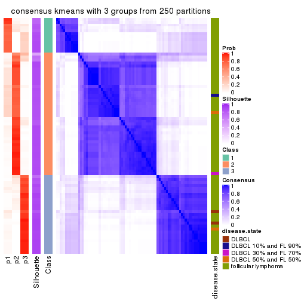
consensus_heatmap(res, k = 4)
consensus_heatmap(res, k = 5)
consensus_heatmap(res, k = 6)
Heatmaps for the membership of samples in all partitions to see how consistent they are:
membership_heatmap(res, k = 2)
membership_heatmap(res, k = 3)

membership_heatmap(res, k = 4)
membership_heatmap(res, k = 5)
membership_heatmap(res, k = 6)
As soon as we have had the classes for columns, we can look for signatures which are significantly different between classes which can be candidate marks for certain classes. Following are the heatmaps for signatures.
Signature heatmaps where rows are scaled:
get_signatures(res, k = 2)
get_signatures(res, k = 3)

get_signatures(res, k = 4)
get_signatures(res, k = 5)
get_signatures(res, k = 6)
Signature heatmaps where rows are not scaled:
get_signatures(res, k = 2, scale_rows = FALSE)
get_signatures(res, k = 3, scale_rows = FALSE)
get_signatures(res, k = 4, scale_rows = FALSE)
get_signatures(res, k = 5, scale_rows = FALSE)
get_signatures(res, k = 6, scale_rows = FALSE)
Compare the overlap of signatures from different k:
compare_signatures(res)
get_signature() returns a data frame invisibly. TO get the list of signatures, the function
call should be assigned to a variable explicitly. In following code, if plot argument is set
to FALSE, no heatmap is plotted while only the differential analysis is performed.
# code only for demonstration
tb = get_signature(res, k = ..., plot = FALSE)
An example of the output of tb is:
#> which_row fdr mean_1 mean_2 scaled_mean_1 scaled_mean_2 km
#> 1 38 0.042760348 8.373488 9.131774 -0.5533452 0.5164555 1
#> 2 40 0.018707592 7.106213 8.469186 -0.6173731 0.5762149 1
#> 3 55 0.019134737 10.221463 11.207825 -0.6159697 0.5749050 1
#> 4 59 0.006059896 5.921854 7.869574 -0.6899429 0.6439467 1
#> 5 60 0.018055526 8.928898 10.211722 -0.6204761 0.5791110 1
#> 6 98 0.009384629 15.714769 14.887706 0.6635654 -0.6193277 2
...
The columns in tb are:
which_row: row indices corresponding to the input matrix.fdr: FDR for the differential test. mean_x: The mean value in group x.scaled_mean_x: The mean value in group x after rows are scaled.km: Row groups if k-means clustering is applied to rows.UMAP plot which shows how samples are separated.
dimension_reduction(res, k = 2, method = "UMAP")
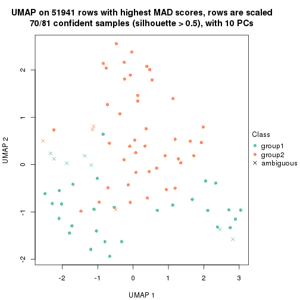
dimension_reduction(res, k = 3, method = "UMAP")
dimension_reduction(res, k = 4, method = "UMAP")
dimension_reduction(res, k = 5, method = "UMAP")
dimension_reduction(res, k = 6, method = "UMAP")
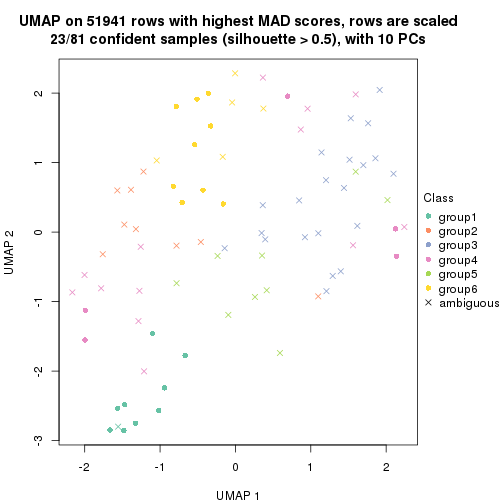
Following heatmap shows how subgroups are split when increasing k:
collect_classes(res)
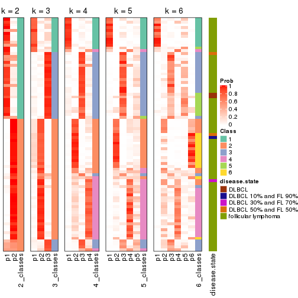
Test correlation between subgroups and known annotations. If the known annotation is numeric, one-way ANOVA test is applied, and if the known annotation is discrete, chi-squared contingency table test is applied.
test_to_known_factors(res)
#> n disease.state(p) k
#> MAD:kmeans 70 0.350 2
#> MAD:kmeans 80 0.603 3
#> MAD:kmeans 75 0.481 4
#> MAD:kmeans 44 0.562 5
#> MAD:kmeans 23 0.492 6
If matrix rows can be associated to genes, consider to use GO_Enrichment(res,
...) to perform function enrichment for the signature genes.
The object with results only for a single top-value method and a single partition method can be extracted as:
res = res_list["MAD", "skmeans"]
# you can also extract it by
# res = res_list["MAD:skmeans"]
A summary of res and all the functions that can be applied to it:
res
#> A 'ConsensusPartition' object with k = 2, 3, 4, 5, 6.
#> On a matrix with 51941 rows and 81 columns.
#> Top rows (1000, 2000, 3000, 4000, 5000) are extracted by 'MAD' method.
#> Subgroups are detected by 'skmeans' method.
#> Performed in total 1250 partitions by row resampling.
#> Best k for subgroups seems to be 2.
#>
#> Following methods can be applied to this 'ConsensusPartition' object:
#> [1] "cola_report" "collect_classes" "collect_plots"
#> [4] "collect_stats" "colnames" "compare_signatures"
#> [7] "consensus_heatmap" "dimension_reduction" "functional_enrichment"
#> [10] "get_anno_col" "get_anno" "get_classes"
#> [13] "get_consensus" "get_matrix" "get_membership"
#> [16] "get_param" "get_signatures" "get_stats"
#> [19] "is_best_k" "is_stable_k" "membership_heatmap"
#> [22] "ncol" "nrow" "plot_ecdf"
#> [25] "rownames" "select_partition_number" "show"
#> [28] "suggest_best_k" "test_to_known_factors"
collect_plots() function collects all the plots made from res for all k (number of partitions)
into one single page to provide an easy and fast comparison between different k.
collect_plots(res)
The plots are:
k and the heatmap of
predicted classes for each k.k.k.k.All the plots in panels can be made by individual functions and they are plotted later in this section.
select_partition_number() produces several plots showing different
statistics for choosing “optimized” k. There are following statistics:
k;k, the area increased is defined as \(A_k - A_{k-1}\).The detailed explanations of these statistics can be found in the cola vignette.
Generally speaking, lower PAC score, higher mean silhouette score or higher
concordance corresponds to better partition. Rand index and Jaccard index
measure how similar the current partition is compared to partition with k-1.
If they are too similar, we won't accept k is better than k-1.
select_partition_number(res)
The numeric values for all these statistics can be obtained by get_stats().
get_stats(res)
#> k 1-PAC mean_silhouette concordance area_increased Rand Jaccard
#> 2 2 0.827 0.916 0.964 0.5057 0.496 0.496
#> 3 3 0.562 0.634 0.822 0.3032 0.753 0.541
#> 4 4 0.695 0.744 0.865 0.1390 0.836 0.562
#> 5 5 0.619 0.537 0.730 0.0685 0.858 0.522
#> 6 6 0.660 0.490 0.709 0.0425 0.905 0.590
suggest_best_k() suggests the best \(k\) based on these statistics. The rules are as follows:
NA.suggest_best_k(res)
#> [1] 2
Following shows the table of the partitions (You need to click the show/hide
code output link to see it). The membership matrix (columns with name p*)
is inferred by
clue::cl_consensus()
function with the SE method. Basically the value in the membership matrix
represents the probability to belong to a certain group. The finall class
label for an item is determined with the group with highest probability it
belongs to.
In get_classes() function, the entropy is calculated from the membership
matrix and the silhouette score is calculated from the consensus matrix.
cbind(get_classes(res, k = 2), get_membership(res, k = 2))
#> class entropy silhouette p1 p2
#> GSM1301497 1 0.0000 0.971 1.000 0.000
#> GSM1301537 1 0.0000 0.971 1.000 0.000
#> GSM1301521 1 0.0000 0.971 1.000 0.000
#> GSM1301555 2 0.1184 0.941 0.016 0.984
#> GSM1301501 2 0.0000 0.952 0.000 1.000
#> GSM1301508 2 0.0000 0.952 0.000 1.000
#> GSM1301481 1 0.0000 0.971 1.000 0.000
#> GSM1301482 1 0.0000 0.971 1.000 0.000
#> GSM1301483 2 0.0000 0.952 0.000 1.000
#> GSM1301484 1 0.0000 0.971 1.000 0.000
#> GSM1301485 1 0.0000 0.971 1.000 0.000
#> GSM1301486 1 0.0000 0.971 1.000 0.000
#> GSM1301487 1 0.0000 0.971 1.000 0.000
#> GSM1301488 1 0.7883 0.675 0.764 0.236
#> GSM1301489 2 0.0000 0.952 0.000 1.000
#> GSM1301490 2 0.0000 0.952 0.000 1.000
#> GSM1301491 2 0.0000 0.952 0.000 1.000
#> GSM1301492 1 0.0000 0.971 1.000 0.000
#> GSM1301493 1 0.0000 0.971 1.000 0.000
#> GSM1301494 1 0.0000 0.971 1.000 0.000
#> GSM1301495 1 0.0000 0.971 1.000 0.000
#> GSM1301496 2 0.0000 0.952 0.000 1.000
#> GSM1301498 2 0.0000 0.952 0.000 1.000
#> GSM1301499 1 0.0000 0.971 1.000 0.000
#> GSM1301500 1 0.0000 0.971 1.000 0.000
#> GSM1301502 1 0.7674 0.703 0.776 0.224
#> GSM1301503 2 0.0000 0.952 0.000 1.000
#> GSM1301504 2 0.0000 0.952 0.000 1.000
#> GSM1301505 1 0.0000 0.971 1.000 0.000
#> GSM1301506 2 0.0000 0.952 0.000 1.000
#> GSM1301507 2 0.0000 0.952 0.000 1.000
#> GSM1301509 1 0.0000 0.971 1.000 0.000
#> GSM1301510 1 0.0000 0.971 1.000 0.000
#> GSM1301511 2 0.0000 0.952 0.000 1.000
#> GSM1301512 2 0.0000 0.952 0.000 1.000
#> GSM1301513 1 0.0000 0.971 1.000 0.000
#> GSM1301514 2 0.0000 0.952 0.000 1.000
#> GSM1301515 2 0.0000 0.952 0.000 1.000
#> GSM1301516 1 0.9522 0.392 0.628 0.372
#> GSM1301517 2 0.0000 0.952 0.000 1.000
#> GSM1301518 1 0.0000 0.971 1.000 0.000
#> GSM1301519 2 0.0000 0.952 0.000 1.000
#> GSM1301520 2 0.0000 0.952 0.000 1.000
#> GSM1301522 2 0.0000 0.952 0.000 1.000
#> GSM1301523 2 0.6343 0.801 0.160 0.840
#> GSM1301524 2 0.0376 0.949 0.004 0.996
#> GSM1301525 1 0.3733 0.903 0.928 0.072
#> GSM1301526 2 0.0000 0.952 0.000 1.000
#> GSM1301527 2 0.0000 0.952 0.000 1.000
#> GSM1301528 1 0.0000 0.971 1.000 0.000
#> GSM1301529 1 0.0000 0.971 1.000 0.000
#> GSM1301530 2 0.0000 0.952 0.000 1.000
#> GSM1301531 1 0.4431 0.881 0.908 0.092
#> GSM1301532 2 0.0000 0.952 0.000 1.000
#> GSM1301533 2 0.9580 0.401 0.380 0.620
#> GSM1301534 2 0.0000 0.952 0.000 1.000
#> GSM1301535 1 0.0000 0.971 1.000 0.000
#> GSM1301536 1 0.0000 0.971 1.000 0.000
#> GSM1301538 1 0.0000 0.971 1.000 0.000
#> GSM1301539 1 0.0000 0.971 1.000 0.000
#> GSM1301540 1 0.0000 0.971 1.000 0.000
#> GSM1301541 2 0.0000 0.952 0.000 1.000
#> GSM1301542 1 0.0000 0.971 1.000 0.000
#> GSM1301543 2 0.0000 0.952 0.000 1.000
#> GSM1301544 1 0.0376 0.968 0.996 0.004
#> GSM1301545 2 0.9323 0.486 0.348 0.652
#> GSM1301546 2 0.0000 0.952 0.000 1.000
#> GSM1301547 2 0.0000 0.952 0.000 1.000
#> GSM1301548 2 0.0000 0.952 0.000 1.000
#> GSM1301549 2 0.4690 0.868 0.100 0.900
#> GSM1301550 2 0.0000 0.952 0.000 1.000
#> GSM1301551 1 0.0000 0.971 1.000 0.000
#> GSM1301552 1 0.0000 0.971 1.000 0.000
#> GSM1301553 2 0.6343 0.801 0.160 0.840
#> GSM1301554 2 0.0000 0.952 0.000 1.000
#> GSM1301556 2 0.0000 0.952 0.000 1.000
#> GSM1301557 2 0.5059 0.857 0.112 0.888
#> GSM1301558 2 0.9608 0.384 0.384 0.616
#> GSM1301559 1 0.0000 0.971 1.000 0.000
#> GSM1301560 2 0.7883 0.690 0.236 0.764
#> GSM1301561 1 0.0000 0.971 1.000 0.000
cbind(get_classes(res, k = 3), get_membership(res, k = 3))
#> class entropy silhouette p1 p2 p3
#> GSM1301497 3 0.1289 0.84550 0.032 0.000 0.968
#> GSM1301537 3 0.8739 0.31485 0.392 0.112 0.496
#> GSM1301521 3 0.1031 0.84577 0.024 0.000 0.976
#> GSM1301555 2 0.1411 0.82147 0.036 0.964 0.000
#> GSM1301501 2 0.4912 0.75982 0.196 0.796 0.008
#> GSM1301508 2 0.2261 0.83969 0.068 0.932 0.000
#> GSM1301481 3 0.0661 0.84778 0.004 0.008 0.988
#> GSM1301482 1 0.4842 0.50732 0.776 0.000 0.224
#> GSM1301483 1 0.6540 0.18146 0.584 0.408 0.008
#> GSM1301484 3 0.0424 0.84876 0.008 0.000 0.992
#> GSM1301485 3 0.0892 0.84742 0.020 0.000 0.980
#> GSM1301486 3 0.0592 0.84962 0.012 0.000 0.988
#> GSM1301487 3 0.1964 0.82876 0.056 0.000 0.944
#> GSM1301488 1 0.1399 0.60223 0.968 0.028 0.004
#> GSM1301489 2 0.0000 0.83550 0.000 1.000 0.000
#> GSM1301490 1 0.7184 0.12857 0.504 0.472 0.024
#> GSM1301491 2 0.2878 0.82903 0.096 0.904 0.000
#> GSM1301492 3 0.2165 0.81951 0.064 0.000 0.936
#> GSM1301493 3 0.0747 0.84882 0.016 0.000 0.984
#> GSM1301494 3 0.0000 0.85018 0.000 0.000 1.000
#> GSM1301495 3 0.0237 0.85051 0.004 0.000 0.996
#> GSM1301496 1 0.6299 0.00848 0.524 0.476 0.000
#> GSM1301498 2 0.2845 0.81493 0.068 0.920 0.012
#> GSM1301499 3 0.0237 0.85051 0.004 0.000 0.996
#> GSM1301500 1 0.4555 0.52824 0.800 0.000 0.200
#> GSM1301502 3 0.4326 0.75103 0.012 0.144 0.844
#> GSM1301503 2 0.0892 0.82992 0.020 0.980 0.000
#> GSM1301504 2 0.3644 0.78183 0.124 0.872 0.004
#> GSM1301505 3 0.1315 0.84160 0.008 0.020 0.972
#> GSM1301506 2 0.1289 0.82413 0.032 0.968 0.000
#> GSM1301507 2 0.2448 0.83763 0.076 0.924 0.000
#> GSM1301509 1 0.2711 0.58206 0.912 0.000 0.088
#> GSM1301510 1 0.4842 0.50860 0.776 0.000 0.224
#> GSM1301511 2 0.4121 0.78460 0.168 0.832 0.000
#> GSM1301512 1 0.6252 0.11049 0.556 0.444 0.000
#> GSM1301513 3 0.0237 0.85051 0.004 0.000 0.996
#> GSM1301514 2 0.6307 -0.00318 0.488 0.512 0.000
#> GSM1301515 2 0.2066 0.84110 0.060 0.940 0.000
#> GSM1301516 3 0.6191 0.66525 0.140 0.084 0.776
#> GSM1301517 1 0.6244 0.11527 0.560 0.440 0.000
#> GSM1301518 1 0.5058 0.48608 0.756 0.000 0.244
#> GSM1301519 2 0.5156 0.73819 0.216 0.776 0.008
#> GSM1301520 2 0.2066 0.84110 0.060 0.940 0.000
#> GSM1301522 2 0.4811 0.74774 0.148 0.828 0.024
#> GSM1301523 1 0.4399 0.56175 0.812 0.188 0.000
#> GSM1301524 2 0.4663 0.76144 0.156 0.828 0.016
#> GSM1301525 3 0.7876 0.33898 0.424 0.056 0.520
#> GSM1301526 2 0.4002 0.77962 0.160 0.840 0.000
#> GSM1301527 2 0.2066 0.84110 0.060 0.940 0.000
#> GSM1301528 1 0.4750 0.51379 0.784 0.000 0.216
#> GSM1301529 1 0.4654 0.52267 0.792 0.000 0.208
#> GSM1301530 2 0.1289 0.82413 0.032 0.968 0.000
#> GSM1301531 3 0.3193 0.79559 0.004 0.100 0.896
#> GSM1301532 2 0.1289 0.82413 0.032 0.968 0.000
#> GSM1301533 3 0.6944 0.10421 0.016 0.468 0.516
#> GSM1301534 2 0.2066 0.84110 0.060 0.940 0.000
#> GSM1301535 3 0.0000 0.85018 0.000 0.000 1.000
#> GSM1301536 3 0.0237 0.84932 0.004 0.000 0.996
#> GSM1301538 3 0.6079 0.43903 0.388 0.000 0.612
#> GSM1301539 3 0.6460 0.33827 0.440 0.004 0.556
#> GSM1301540 3 0.3370 0.80072 0.024 0.072 0.904
#> GSM1301541 2 0.1289 0.83786 0.032 0.968 0.000
#> GSM1301542 1 0.4654 0.52267 0.792 0.000 0.208
#> GSM1301543 2 0.2066 0.84110 0.060 0.940 0.000
#> GSM1301544 3 0.3325 0.80354 0.076 0.020 0.904
#> GSM1301545 1 0.0424 0.60784 0.992 0.000 0.008
#> GSM1301546 2 0.6309 0.02007 0.496 0.504 0.000
#> GSM1301547 2 0.0592 0.83276 0.012 0.988 0.000
#> GSM1301548 2 0.2066 0.84110 0.060 0.940 0.000
#> GSM1301549 2 0.8932 0.07564 0.124 0.456 0.420
#> GSM1301550 1 0.6260 0.13997 0.552 0.448 0.000
#> GSM1301551 3 0.0424 0.85013 0.008 0.000 0.992
#> GSM1301552 3 0.0592 0.84962 0.012 0.000 0.988
#> GSM1301553 1 0.3816 0.56709 0.852 0.148 0.000
#> GSM1301554 2 0.2066 0.84110 0.060 0.940 0.000
#> GSM1301556 1 0.6308 -0.05131 0.508 0.492 0.000
#> GSM1301557 1 0.8361 0.24234 0.544 0.092 0.364
#> GSM1301558 1 0.9008 0.18169 0.500 0.360 0.140
#> GSM1301559 3 0.3587 0.78325 0.088 0.020 0.892
#> GSM1301560 2 0.4056 0.72734 0.032 0.876 0.092
#> GSM1301561 3 0.6062 0.43499 0.384 0.000 0.616
cbind(get_classes(res, k = 4), get_membership(res, k = 4))
#> class entropy silhouette p1 p2 p3 p4
#> GSM1301497 3 0.2408 0.8467 0.036 0.000 0.920 0.044
#> GSM1301537 1 0.7417 0.4921 0.556 0.204 0.232 0.008
#> GSM1301521 3 0.1302 0.8599 0.044 0.000 0.956 0.000
#> GSM1301555 2 0.2179 0.8244 0.064 0.924 0.000 0.012
#> GSM1301501 4 0.3626 0.7088 0.000 0.184 0.004 0.812
#> GSM1301508 2 0.2048 0.8581 0.008 0.928 0.000 0.064
#> GSM1301481 3 0.1022 0.8627 0.000 0.000 0.968 0.032
#> GSM1301482 1 0.0817 0.8475 0.976 0.000 0.024 0.000
#> GSM1301483 4 0.1118 0.8288 0.036 0.000 0.000 0.964
#> GSM1301484 3 0.1211 0.8599 0.000 0.000 0.960 0.040
#> GSM1301485 3 0.0921 0.8652 0.028 0.000 0.972 0.000
#> GSM1301486 3 0.0707 0.8672 0.020 0.000 0.980 0.000
#> GSM1301487 3 0.2469 0.8061 0.108 0.000 0.892 0.000
#> GSM1301488 1 0.4072 0.6196 0.748 0.000 0.000 0.252
#> GSM1301489 2 0.0336 0.8487 0.000 0.992 0.000 0.008
#> GSM1301490 4 0.2602 0.8021 0.008 0.076 0.008 0.908
#> GSM1301491 2 0.4605 0.5679 0.000 0.664 0.000 0.336
#> GSM1301492 3 0.2334 0.8401 0.004 0.000 0.908 0.088
#> GSM1301493 3 0.1118 0.8635 0.036 0.000 0.964 0.000
#> GSM1301494 3 0.0524 0.8673 0.004 0.000 0.988 0.008
#> GSM1301495 3 0.0707 0.8674 0.020 0.000 0.980 0.000
#> GSM1301496 4 0.2111 0.8233 0.044 0.024 0.000 0.932
#> GSM1301498 4 0.4946 0.6028 0.004 0.308 0.008 0.680
#> GSM1301499 3 0.0524 0.8678 0.008 0.000 0.988 0.004
#> GSM1301500 1 0.0336 0.8479 0.992 0.000 0.008 0.000
#> GSM1301502 3 0.5186 0.4781 0.000 0.344 0.640 0.016
#> GSM1301503 2 0.0188 0.8472 0.004 0.996 0.000 0.000
#> GSM1301504 4 0.5068 0.6058 0.004 0.308 0.012 0.676
#> GSM1301505 3 0.1474 0.8560 0.000 0.000 0.948 0.052
#> GSM1301506 2 0.2335 0.8230 0.060 0.920 0.000 0.020
#> GSM1301507 2 0.2198 0.8553 0.008 0.920 0.000 0.072
#> GSM1301509 1 0.4535 0.5395 0.704 0.000 0.004 0.292
#> GSM1301510 1 0.0592 0.8483 0.984 0.000 0.016 0.000
#> GSM1301511 2 0.4948 0.3308 0.000 0.560 0.000 0.440
#> GSM1301512 4 0.1798 0.8266 0.040 0.016 0.000 0.944
#> GSM1301513 3 0.0779 0.8682 0.016 0.000 0.980 0.004
#> GSM1301514 4 0.5931 -0.1471 0.036 0.460 0.000 0.504
#> GSM1301515 2 0.2647 0.8437 0.000 0.880 0.000 0.120
#> GSM1301516 3 0.5993 0.5951 0.004 0.088 0.684 0.224
#> GSM1301517 4 0.1635 0.8268 0.044 0.008 0.000 0.948
#> GSM1301518 1 0.2589 0.8058 0.884 0.000 0.116 0.000
#> GSM1301519 4 0.0707 0.8258 0.000 0.020 0.000 0.980
#> GSM1301520 2 0.2714 0.8456 0.000 0.884 0.004 0.112
#> GSM1301522 4 0.2727 0.7977 0.004 0.084 0.012 0.900
#> GSM1301523 1 0.0707 0.8374 0.980 0.020 0.000 0.000
#> GSM1301524 4 0.4392 0.7116 0.004 0.216 0.012 0.768
#> GSM1301525 1 0.6495 0.2908 0.532 0.048 0.408 0.012
#> GSM1301526 2 0.5028 0.2468 0.004 0.596 0.000 0.400
#> GSM1301527 2 0.2530 0.8478 0.000 0.888 0.000 0.112
#> GSM1301528 1 0.0817 0.8475 0.976 0.000 0.024 0.000
#> GSM1301529 1 0.0336 0.8479 0.992 0.000 0.008 0.000
#> GSM1301530 2 0.2840 0.8133 0.056 0.900 0.000 0.044
#> GSM1301531 3 0.2224 0.8513 0.000 0.040 0.928 0.032
#> GSM1301532 2 0.2546 0.8191 0.060 0.912 0.000 0.028
#> GSM1301533 3 0.7676 0.1150 0.032 0.416 0.452 0.100
#> GSM1301534 2 0.2469 0.8485 0.000 0.892 0.000 0.108
#> GSM1301535 3 0.0336 0.8681 0.008 0.000 0.992 0.000
#> GSM1301536 3 0.0921 0.8632 0.000 0.000 0.972 0.028
#> GSM1301538 1 0.5697 0.5540 0.656 0.052 0.292 0.000
#> GSM1301539 1 0.2949 0.8125 0.888 0.024 0.088 0.000
#> GSM1301540 3 0.2782 0.8365 0.004 0.068 0.904 0.024
#> GSM1301541 2 0.1489 0.8573 0.004 0.952 0.000 0.044
#> GSM1301542 1 0.0336 0.8479 0.992 0.000 0.008 0.000
#> GSM1301543 2 0.3311 0.8007 0.000 0.828 0.000 0.172
#> GSM1301544 3 0.4312 0.7706 0.012 0.056 0.832 0.100
#> GSM1301545 1 0.1022 0.8332 0.968 0.000 0.000 0.032
#> GSM1301546 4 0.1510 0.8282 0.028 0.016 0.000 0.956
#> GSM1301547 2 0.0804 0.8422 0.008 0.980 0.000 0.012
#> GSM1301548 2 0.2530 0.8478 0.000 0.888 0.000 0.112
#> GSM1301549 4 0.6605 0.5474 0.000 0.136 0.248 0.616
#> GSM1301550 4 0.4130 0.7750 0.108 0.064 0.000 0.828
#> GSM1301551 3 0.0817 0.8662 0.024 0.000 0.976 0.000
#> GSM1301552 3 0.0817 0.8662 0.024 0.000 0.976 0.000
#> GSM1301553 1 0.1356 0.8316 0.960 0.032 0.000 0.008
#> GSM1301554 2 0.2345 0.8510 0.000 0.900 0.000 0.100
#> GSM1301556 4 0.2596 0.8088 0.024 0.068 0.000 0.908
#> GSM1301557 4 0.1151 0.8232 0.008 0.000 0.024 0.968
#> GSM1301558 4 0.3027 0.8145 0.040 0.024 0.032 0.904
#> GSM1301559 3 0.4857 0.5076 0.000 0.008 0.668 0.324
#> GSM1301560 2 0.3240 0.8082 0.060 0.892 0.020 0.028
#> GSM1301561 3 0.4998 -0.0936 0.488 0.000 0.512 0.000
cbind(get_classes(res, k = 5), get_membership(res, k = 5))
#> class entropy silhouette p1 p2 p3 p4 p5
#> GSM1301497 3 0.4187 0.7019 0.012 0.004 0.804 0.120 0.060
#> GSM1301537 2 0.8972 0.1043 0.196 0.352 0.280 0.044 0.128
#> GSM1301521 3 0.2321 0.7620 0.024 0.008 0.912 0.000 0.056
#> GSM1301555 2 0.0162 0.6973 0.000 0.996 0.000 0.000 0.004
#> GSM1301501 5 0.3224 0.4527 0.000 0.016 0.000 0.160 0.824
#> GSM1301508 2 0.3420 0.6131 0.004 0.836 0.000 0.036 0.124
#> GSM1301481 3 0.3123 0.6986 0.000 0.000 0.828 0.160 0.012
#> GSM1301482 1 0.0671 0.8872 0.980 0.004 0.016 0.000 0.000
#> GSM1301483 4 0.3727 0.4851 0.016 0.000 0.000 0.768 0.216
#> GSM1301484 3 0.3779 0.6309 0.000 0.000 0.752 0.236 0.012
#> GSM1301485 3 0.0865 0.7700 0.024 0.000 0.972 0.000 0.004
#> GSM1301486 3 0.0703 0.7701 0.024 0.000 0.976 0.000 0.000
#> GSM1301487 3 0.2005 0.7688 0.040 0.004 0.932 0.012 0.012
#> GSM1301488 1 0.4150 0.6571 0.748 0.000 0.000 0.216 0.036
#> GSM1301489 2 0.4456 0.3523 0.000 0.660 0.000 0.020 0.320
#> GSM1301490 4 0.2171 0.5526 0.000 0.064 0.000 0.912 0.024
#> GSM1301491 5 0.3437 0.5653 0.000 0.120 0.000 0.048 0.832
#> GSM1301492 3 0.5090 0.5934 0.004 0.000 0.708 0.172 0.116
#> GSM1301493 3 0.3289 0.7503 0.016 0.028 0.876 0.020 0.060
#> GSM1301494 3 0.1444 0.7606 0.000 0.000 0.948 0.040 0.012
#> GSM1301495 3 0.3117 0.7509 0.008 0.020 0.880 0.024 0.068
#> GSM1301496 5 0.4597 -0.0597 0.012 0.000 0.000 0.424 0.564
#> GSM1301498 4 0.5240 0.4173 0.000 0.252 0.004 0.664 0.080
#> GSM1301499 3 0.1525 0.7624 0.004 0.000 0.948 0.036 0.012
#> GSM1301500 1 0.0162 0.8894 0.996 0.000 0.004 0.000 0.000
#> GSM1301502 2 0.7452 0.2527 0.012 0.452 0.344 0.044 0.148
#> GSM1301503 2 0.2674 0.6344 0.000 0.856 0.000 0.004 0.140
#> GSM1301504 4 0.5611 0.4317 0.000 0.196 0.004 0.652 0.148
#> GSM1301505 3 0.4551 0.4770 0.000 0.000 0.616 0.368 0.016
#> GSM1301506 2 0.0162 0.6973 0.000 0.996 0.000 0.000 0.004
#> GSM1301507 2 0.4235 0.3282 0.000 0.656 0.000 0.008 0.336
#> GSM1301509 1 0.4410 0.5898 0.700 0.000 0.008 0.276 0.016
#> GSM1301510 1 0.0854 0.8872 0.976 0.004 0.012 0.008 0.000
#> GSM1301511 5 0.4083 0.5057 0.000 0.080 0.000 0.132 0.788
#> GSM1301512 4 0.4802 0.1586 0.012 0.004 0.000 0.504 0.480
#> GSM1301513 3 0.1728 0.7682 0.020 0.000 0.940 0.036 0.004
#> GSM1301514 5 0.5935 0.1745 0.008 0.104 0.000 0.312 0.576
#> GSM1301515 5 0.4339 0.4762 0.000 0.336 0.000 0.012 0.652
#> GSM1301516 4 0.7662 0.2045 0.000 0.260 0.232 0.440 0.068
#> GSM1301517 4 0.4599 0.3443 0.016 0.000 0.000 0.600 0.384
#> GSM1301518 1 0.2233 0.8178 0.892 0.000 0.104 0.004 0.000
#> GSM1301519 4 0.4276 0.3642 0.004 0.000 0.000 0.616 0.380
#> GSM1301520 5 0.4858 0.4511 0.000 0.256 0.004 0.052 0.688
#> GSM1301522 4 0.2575 0.5500 0.000 0.100 0.004 0.884 0.012
#> GSM1301523 1 0.0794 0.8778 0.972 0.028 0.000 0.000 0.000
#> GSM1301524 4 0.5256 0.3503 0.000 0.356 0.004 0.592 0.048
#> GSM1301525 3 0.7434 0.0891 0.364 0.000 0.404 0.052 0.180
#> GSM1301526 2 0.5296 0.4167 0.004 0.688 0.000 0.176 0.132
#> GSM1301527 5 0.4387 0.4633 0.000 0.348 0.000 0.012 0.640
#> GSM1301528 1 0.0510 0.8866 0.984 0.000 0.016 0.000 0.000
#> GSM1301529 1 0.0162 0.8894 0.996 0.000 0.004 0.000 0.000
#> GSM1301530 2 0.2916 0.6721 0.008 0.880 0.000 0.072 0.040
#> GSM1301531 3 0.6601 0.4484 0.000 0.016 0.544 0.236 0.204
#> GSM1301532 2 0.0771 0.6936 0.000 0.976 0.000 0.020 0.004
#> GSM1301533 2 0.5628 0.4372 0.000 0.684 0.048 0.204 0.064
#> GSM1301534 5 0.4211 0.4479 0.000 0.360 0.000 0.004 0.636
#> GSM1301535 3 0.2896 0.7580 0.004 0.016 0.888 0.024 0.068
#> GSM1301536 3 0.3419 0.6886 0.000 0.000 0.804 0.180 0.016
#> GSM1301538 3 0.8393 -0.0241 0.240 0.324 0.344 0.028 0.064
#> GSM1301539 1 0.6425 0.4242 0.580 0.172 0.228 0.000 0.020
#> GSM1301540 3 0.6799 0.4198 0.000 0.016 0.496 0.200 0.288
#> GSM1301541 2 0.2852 0.6045 0.000 0.828 0.000 0.000 0.172
#> GSM1301542 1 0.0162 0.8894 0.996 0.000 0.004 0.000 0.000
#> GSM1301543 5 0.4734 0.4790 0.000 0.312 0.000 0.036 0.652
#> GSM1301544 3 0.6515 0.4324 0.004 0.032 0.544 0.092 0.328
#> GSM1301545 1 0.0703 0.8775 0.976 0.000 0.000 0.024 0.000
#> GSM1301546 4 0.4751 0.2794 0.008 0.008 0.000 0.564 0.420
#> GSM1301547 2 0.1205 0.6924 0.000 0.956 0.000 0.004 0.040
#> GSM1301548 5 0.4387 0.4633 0.000 0.348 0.000 0.012 0.640
#> GSM1301549 4 0.6003 0.4161 0.000 0.036 0.160 0.660 0.144
#> GSM1301550 4 0.6886 0.4490 0.184 0.072 0.000 0.584 0.160
#> GSM1301551 3 0.1579 0.7683 0.024 0.000 0.944 0.000 0.032
#> GSM1301552 3 0.1059 0.7706 0.020 0.000 0.968 0.004 0.008
#> GSM1301553 1 0.0865 0.8770 0.972 0.004 0.000 0.000 0.024
#> GSM1301554 5 0.4242 0.3287 0.000 0.428 0.000 0.000 0.572
#> GSM1301556 5 0.4165 0.1992 0.008 0.000 0.000 0.320 0.672
#> GSM1301557 4 0.3352 0.5073 0.004 0.004 0.000 0.800 0.192
#> GSM1301558 5 0.5347 0.0179 0.024 0.000 0.020 0.400 0.556
#> GSM1301559 4 0.4655 -0.1723 0.000 0.000 0.476 0.512 0.012
#> GSM1301560 2 0.2494 0.6686 0.000 0.904 0.008 0.032 0.056
#> GSM1301561 3 0.3715 0.5870 0.260 0.000 0.736 0.004 0.000
cbind(get_classes(res, k = 6), get_membership(res, k = 6))
#> class entropy silhouette p1 p2 p3 p4 p5 p6
#> GSM1301497 3 0.5077 0.5546 0.000 0.016 0.704 0.108 0.156 0.016
#> GSM1301537 6 0.8571 -0.0282 0.092 0.052 0.292 0.028 0.240 0.296
#> GSM1301521 3 0.3381 0.6375 0.004 0.004 0.828 0.004 0.120 0.040
#> GSM1301555 6 0.2070 0.6089 0.000 0.100 0.000 0.000 0.008 0.892
#> GSM1301501 2 0.4823 0.0694 0.000 0.552 0.000 0.388 0.060 0.000
#> GSM1301508 6 0.5322 0.3175 0.000 0.336 0.000 0.020 0.072 0.572
#> GSM1301481 3 0.4264 0.4111 0.000 0.008 0.604 0.000 0.376 0.012
#> GSM1301482 1 0.0692 0.8601 0.976 0.000 0.020 0.000 0.004 0.000
#> GSM1301483 4 0.3483 0.4726 0.000 0.024 0.000 0.764 0.212 0.000
#> GSM1301484 3 0.4743 0.3948 0.000 0.004 0.604 0.024 0.352 0.016
#> GSM1301485 3 0.1232 0.6744 0.024 0.000 0.956 0.000 0.016 0.004
#> GSM1301486 3 0.1346 0.6767 0.016 0.000 0.952 0.000 0.024 0.008
#> GSM1301487 3 0.1911 0.6750 0.020 0.000 0.928 0.004 0.036 0.012
#> GSM1301488 1 0.3833 0.4632 0.648 0.000 0.000 0.344 0.008 0.000
#> GSM1301489 2 0.4511 0.3219 0.000 0.620 0.000 0.000 0.048 0.332
#> GSM1301490 5 0.5076 0.1549 0.000 0.004 0.000 0.460 0.472 0.064
#> GSM1301491 2 0.3373 0.4711 0.000 0.744 0.000 0.248 0.008 0.000
#> GSM1301492 3 0.5561 0.4301 0.000 0.008 0.604 0.116 0.260 0.012
#> GSM1301493 3 0.5300 0.5525 0.004 0.012 0.684 0.020 0.184 0.096
#> GSM1301494 3 0.2955 0.6198 0.000 0.004 0.816 0.000 0.172 0.008
#> GSM1301495 3 0.5021 0.5781 0.000 0.008 0.700 0.020 0.172 0.100
#> GSM1301496 4 0.4297 0.6136 0.004 0.252 0.000 0.700 0.040 0.004
#> GSM1301498 5 0.6664 0.3402 0.000 0.056 0.000 0.276 0.468 0.200
#> GSM1301499 3 0.2915 0.6265 0.004 0.004 0.824 0.000 0.164 0.004
#> GSM1301500 1 0.0000 0.8664 1.000 0.000 0.000 0.000 0.000 0.000
#> GSM1301502 6 0.7483 0.1607 0.004 0.112 0.336 0.012 0.152 0.384
#> GSM1301503 6 0.3742 0.3702 0.000 0.348 0.000 0.000 0.004 0.648
#> GSM1301504 5 0.6798 0.3120 0.000 0.084 0.000 0.304 0.456 0.156
#> GSM1301505 5 0.4560 0.0636 0.000 0.008 0.376 0.020 0.592 0.004
#> GSM1301506 6 0.1970 0.6114 0.000 0.092 0.000 0.000 0.008 0.900
#> GSM1301507 2 0.4115 0.3202 0.000 0.624 0.000 0.004 0.012 0.360
#> GSM1301509 1 0.5011 0.5529 0.668 0.000 0.008 0.236 0.076 0.012
#> GSM1301510 1 0.0260 0.8662 0.992 0.000 0.000 0.000 0.008 0.000
#> GSM1301511 2 0.3789 0.3422 0.000 0.668 0.000 0.324 0.004 0.004
#> GSM1301512 4 0.3099 0.6765 0.004 0.120 0.000 0.840 0.032 0.004
#> GSM1301513 3 0.1845 0.6684 0.008 0.000 0.916 0.000 0.072 0.004
#> GSM1301514 4 0.5704 0.4510 0.004 0.240 0.000 0.616 0.100 0.040
#> GSM1301515 2 0.1327 0.7128 0.000 0.936 0.000 0.000 0.000 0.064
#> GSM1301516 5 0.6556 0.3551 0.000 0.004 0.104 0.108 0.540 0.244
#> GSM1301517 4 0.2114 0.6772 0.008 0.076 0.000 0.904 0.012 0.000
#> GSM1301518 1 0.2946 0.7313 0.824 0.000 0.160 0.000 0.012 0.004
#> GSM1301519 4 0.2728 0.6775 0.000 0.100 0.000 0.864 0.032 0.004
#> GSM1301520 2 0.7052 0.2991 0.000 0.508 0.008 0.172 0.172 0.140
#> GSM1301522 5 0.5345 0.2194 0.000 0.004 0.000 0.424 0.480 0.092
#> GSM1301523 1 0.0603 0.8610 0.980 0.000 0.000 0.000 0.004 0.016
#> GSM1301524 6 0.6261 -0.2086 0.000 0.008 0.000 0.284 0.296 0.412
#> GSM1301525 3 0.8027 -0.0505 0.232 0.220 0.276 0.008 0.260 0.004
#> GSM1301526 6 0.4399 0.5119 0.000 0.036 0.000 0.188 0.040 0.736
#> GSM1301527 2 0.1501 0.7139 0.000 0.924 0.000 0.000 0.000 0.076
#> GSM1301528 1 0.0508 0.8624 0.984 0.000 0.012 0.000 0.004 0.000
#> GSM1301529 1 0.0000 0.8664 1.000 0.000 0.000 0.000 0.000 0.000
#> GSM1301530 6 0.4358 0.5555 0.004 0.144 0.000 0.016 0.080 0.756
#> GSM1301531 5 0.6284 0.0927 0.000 0.292 0.284 0.004 0.416 0.004
#> GSM1301532 6 0.1663 0.6117 0.000 0.088 0.000 0.000 0.000 0.912
#> GSM1301533 6 0.2220 0.5694 0.000 0.004 0.016 0.012 0.060 0.908
#> GSM1301534 2 0.1556 0.7120 0.000 0.920 0.000 0.000 0.000 0.080
#> GSM1301535 3 0.5291 0.5842 0.000 0.016 0.676 0.020 0.196 0.092
#> GSM1301536 3 0.4580 0.3278 0.000 0.012 0.552 0.004 0.420 0.012
#> GSM1301538 6 0.7990 -0.0480 0.112 0.012 0.328 0.024 0.184 0.340
#> GSM1301539 1 0.6934 0.1501 0.444 0.004 0.276 0.008 0.040 0.228
#> GSM1301540 5 0.6663 0.0737 0.000 0.340 0.196 0.020 0.428 0.016
#> GSM1301541 6 0.3714 0.3834 0.000 0.340 0.000 0.004 0.000 0.656
#> GSM1301542 1 0.0000 0.8664 1.000 0.000 0.000 0.000 0.000 0.000
#> GSM1301543 2 0.2450 0.6960 0.000 0.896 0.000 0.016 0.040 0.048
#> GSM1301544 3 0.8078 0.1879 0.000 0.160 0.364 0.180 0.256 0.040
#> GSM1301545 1 0.0405 0.8642 0.988 0.000 0.000 0.008 0.004 0.000
#> GSM1301546 4 0.2745 0.6447 0.000 0.056 0.000 0.876 0.056 0.012
#> GSM1301547 6 0.3376 0.5483 0.000 0.220 0.000 0.000 0.016 0.764
#> GSM1301548 2 0.1501 0.7139 0.000 0.924 0.000 0.000 0.000 0.076
#> GSM1301549 5 0.6401 0.4192 0.000 0.064 0.092 0.244 0.576 0.024
#> GSM1301550 4 0.6091 0.3156 0.128 0.008 0.000 0.624 0.160 0.080
#> GSM1301551 3 0.1511 0.6757 0.004 0.000 0.940 0.000 0.044 0.012
#> GSM1301552 3 0.2355 0.6571 0.004 0.000 0.876 0.000 0.112 0.008
#> GSM1301553 1 0.0508 0.8627 0.984 0.000 0.000 0.000 0.004 0.012
#> GSM1301554 2 0.2814 0.6520 0.000 0.820 0.000 0.008 0.000 0.172
#> GSM1301556 4 0.3965 0.4026 0.000 0.388 0.000 0.604 0.008 0.000
#> GSM1301557 4 0.3437 0.4517 0.000 0.004 0.000 0.752 0.236 0.008
#> GSM1301558 4 0.6749 0.3170 0.004 0.348 0.036 0.436 0.168 0.008
#> GSM1301559 5 0.5703 0.2127 0.000 0.000 0.328 0.112 0.540 0.020
#> GSM1301560 6 0.0779 0.6066 0.000 0.008 0.008 0.000 0.008 0.976
#> GSM1301561 3 0.2755 0.6154 0.140 0.000 0.844 0.000 0.012 0.004
Heatmaps for the consensus matrix. It visualizes the probability of two samples to be in a same group.
consensus_heatmap(res, k = 2)
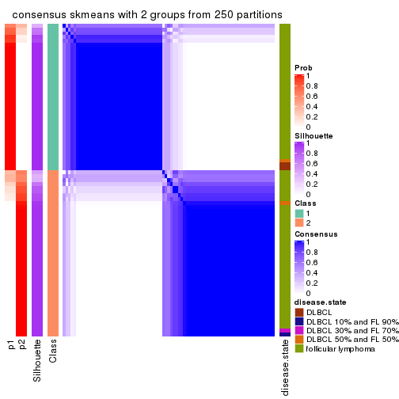
consensus_heatmap(res, k = 3)

consensus_heatmap(res, k = 4)

consensus_heatmap(res, k = 5)
consensus_heatmap(res, k = 6)
Heatmaps for the membership of samples in all partitions to see how consistent they are:
membership_heatmap(res, k = 2)
membership_heatmap(res, k = 3)
membership_heatmap(res, k = 4)
membership_heatmap(res, k = 5)
membership_heatmap(res, k = 6)
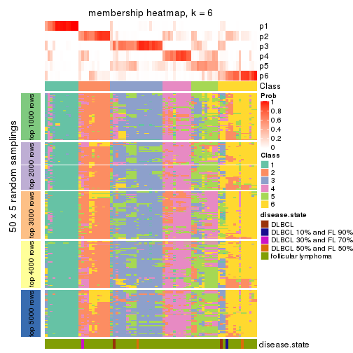
As soon as we have had the classes for columns, we can look for signatures which are significantly different between classes which can be candidate marks for certain classes. Following are the heatmaps for signatures.
Signature heatmaps where rows are scaled:
get_signatures(res, k = 2)
get_signatures(res, k = 3)
get_signatures(res, k = 4)
get_signatures(res, k = 5)
get_signatures(res, k = 6)
Signature heatmaps where rows are not scaled:
get_signatures(res, k = 2, scale_rows = FALSE)
get_signatures(res, k = 3, scale_rows = FALSE)
get_signatures(res, k = 4, scale_rows = FALSE)
get_signatures(res, k = 5, scale_rows = FALSE)
get_signatures(res, k = 6, scale_rows = FALSE)
Compare the overlap of signatures from different k:
compare_signatures(res)
get_signature() returns a data frame invisibly. TO get the list of signatures, the function
call should be assigned to a variable explicitly. In following code, if plot argument is set
to FALSE, no heatmap is plotted while only the differential analysis is performed.
# code only for demonstration
tb = get_signature(res, k = ..., plot = FALSE)
An example of the output of tb is:
#> which_row fdr mean_1 mean_2 scaled_mean_1 scaled_mean_2 km
#> 1 38 0.042760348 8.373488 9.131774 -0.5533452 0.5164555 1
#> 2 40 0.018707592 7.106213 8.469186 -0.6173731 0.5762149 1
#> 3 55 0.019134737 10.221463 11.207825 -0.6159697 0.5749050 1
#> 4 59 0.006059896 5.921854 7.869574 -0.6899429 0.6439467 1
#> 5 60 0.018055526 8.928898 10.211722 -0.6204761 0.5791110 1
#> 6 98 0.009384629 15.714769 14.887706 0.6635654 -0.6193277 2
...
The columns in tb are:
which_row: row indices corresponding to the input matrix.fdr: FDR for the differential test. mean_x: The mean value in group x.scaled_mean_x: The mean value in group x after rows are scaled.km: Row groups if k-means clustering is applied to rows.UMAP plot which shows how samples are separated.
dimension_reduction(res, k = 2, method = "UMAP")
dimension_reduction(res, k = 3, method = "UMAP")
dimension_reduction(res, k = 4, method = "UMAP")

dimension_reduction(res, k = 5, method = "UMAP")
dimension_reduction(res, k = 6, method = "UMAP")
Following heatmap shows how subgroups are split when increasing k:
collect_classes(res)
Test correlation between subgroups and known annotations. If the known annotation is numeric, one-way ANOVA test is applied, and if the known annotation is discrete, chi-squared contingency table test is applied.
test_to_known_factors(res)
#> n disease.state(p) k
#> MAD:skmeans 77 0.404 2
#> MAD:skmeans 62 0.787 3
#> MAD:skmeans 73 0.622 4
#> MAD:skmeans 44 0.835 5
#> MAD:skmeans 44 0.791 6
If matrix rows can be associated to genes, consider to use GO_Enrichment(res,
...) to perform function enrichment for the signature genes.
The object with results only for a single top-value method and a single partition method can be extracted as:
res = res_list["MAD", "pam"]
# you can also extract it by
# res = res_list["MAD:pam"]
A summary of res and all the functions that can be applied to it:
res
#> A 'ConsensusPartition' object with k = 2, 3, 4, 5, 6.
#> On a matrix with 51941 rows and 81 columns.
#> Top rows (1000, 2000, 3000, 4000, 5000) are extracted by 'MAD' method.
#> Subgroups are detected by 'pam' method.
#> Performed in total 1250 partitions by row resampling.
#> Best k for subgroups seems to be 5.
#>
#> Following methods can be applied to this 'ConsensusPartition' object:
#> [1] "cola_report" "collect_classes" "collect_plots"
#> [4] "collect_stats" "colnames" "compare_signatures"
#> [7] "consensus_heatmap" "dimension_reduction" "functional_enrichment"
#> [10] "get_anno_col" "get_anno" "get_classes"
#> [13] "get_consensus" "get_matrix" "get_membership"
#> [16] "get_param" "get_signatures" "get_stats"
#> [19] "is_best_k" "is_stable_k" "membership_heatmap"
#> [22] "ncol" "nrow" "plot_ecdf"
#> [25] "rownames" "select_partition_number" "show"
#> [28] "suggest_best_k" "test_to_known_factors"
collect_plots() function collects all the plots made from res for all k (number of partitions)
into one single page to provide an easy and fast comparison between different k.
collect_plots(res)
The plots are:
k and the heatmap of
predicted classes for each k.k.k.k.All the plots in panels can be made by individual functions and they are plotted later in this section.
select_partition_number() produces several plots showing different
statistics for choosing “optimized” k. There are following statistics:
k;k, the area increased is defined as \(A_k - A_{k-1}\).The detailed explanations of these statistics can be found in the cola vignette.
Generally speaking, lower PAC score, higher mean silhouette score or higher
concordance corresponds to better partition. Rand index and Jaccard index
measure how similar the current partition is compared to partition with k-1.
If they are too similar, we won't accept k is better than k-1.
select_partition_number(res)
The numeric values for all these statistics can be obtained by get_stats().
get_stats(res)
#> k 1-PAC mean_silhouette concordance area_increased Rand Jaccard
#> 2 2 0.503 0.791 0.890 0.4734 0.522 0.522
#> 3 3 0.337 0.479 0.734 0.3514 0.614 0.395
#> 4 4 0.524 0.588 0.733 0.1553 0.788 0.503
#> 5 5 0.808 0.823 0.920 0.0801 0.869 0.573
#> 6 6 0.801 0.788 0.870 0.0446 0.941 0.727
suggest_best_k() suggests the best \(k\) based on these statistics. The rules are as follows:
NA.suggest_best_k(res)
#> [1] 5
Following shows the table of the partitions (You need to click the show/hide
code output link to see it). The membership matrix (columns with name p*)
is inferred by
clue::cl_consensus()
function with the SE method. Basically the value in the membership matrix
represents the probability to belong to a certain group. The finall class
label for an item is determined with the group with highest probability it
belongs to.
In get_classes() function, the entropy is calculated from the membership
matrix and the silhouette score is calculated from the consensus matrix.
cbind(get_classes(res, k = 2), get_membership(res, k = 2))
#> class entropy silhouette p1 p2
#> GSM1301497 2 0.0000 0.891 0.000 1.000
#> GSM1301537 2 0.0000 0.891 0.000 1.000
#> GSM1301521 2 0.8207 0.686 0.256 0.744
#> GSM1301555 2 0.0000 0.891 0.000 1.000
#> GSM1301501 2 1.0000 -0.314 0.496 0.504
#> GSM1301508 2 0.2236 0.873 0.036 0.964
#> GSM1301481 2 0.0000 0.891 0.000 1.000
#> GSM1301482 2 0.8608 0.655 0.284 0.716
#> GSM1301483 1 0.8207 0.783 0.744 0.256
#> GSM1301484 2 0.0000 0.891 0.000 1.000
#> GSM1301485 2 0.8207 0.686 0.256 0.744
#> GSM1301486 2 0.1414 0.881 0.020 0.980
#> GSM1301487 2 0.0376 0.889 0.004 0.996
#> GSM1301488 1 0.0000 0.815 1.000 0.000
#> GSM1301489 2 0.0938 0.884 0.012 0.988
#> GSM1301490 1 0.9580 0.639 0.620 0.380
#> GSM1301491 1 0.4815 0.826 0.896 0.104
#> GSM1301492 1 0.8955 0.744 0.688 0.312
#> GSM1301493 2 0.0000 0.891 0.000 1.000
#> GSM1301494 2 0.0000 0.891 0.000 1.000
#> GSM1301495 2 0.0000 0.891 0.000 1.000
#> GSM1301496 1 0.7376 0.805 0.792 0.208
#> GSM1301498 2 0.0000 0.891 0.000 1.000
#> GSM1301499 2 0.8207 0.686 0.256 0.744
#> GSM1301500 1 0.2423 0.812 0.960 0.040
#> GSM1301502 2 0.0672 0.887 0.008 0.992
#> GSM1301503 2 0.1184 0.882 0.016 0.984
#> GSM1301504 2 0.8955 0.350 0.312 0.688
#> GSM1301505 2 0.0000 0.891 0.000 1.000
#> GSM1301506 2 0.0000 0.891 0.000 1.000
#> GSM1301507 1 0.9129 0.571 0.672 0.328
#> GSM1301509 1 0.3431 0.802 0.936 0.064
#> GSM1301510 2 0.8207 0.686 0.256 0.744
#> GSM1301511 1 0.6887 0.812 0.816 0.184
#> GSM1301512 1 0.8386 0.779 0.732 0.268
#> GSM1301513 2 0.0000 0.891 0.000 1.000
#> GSM1301514 1 0.9000 0.740 0.684 0.316
#> GSM1301515 1 0.0000 0.815 1.000 0.000
#> GSM1301516 2 0.0000 0.891 0.000 1.000
#> GSM1301517 1 0.8555 0.773 0.720 0.280
#> GSM1301518 1 0.6801 0.686 0.820 0.180
#> GSM1301519 1 0.8555 0.773 0.720 0.280
#> GSM1301520 2 0.0000 0.891 0.000 1.000
#> GSM1301522 2 0.0000 0.891 0.000 1.000
#> GSM1301523 2 0.9000 0.613 0.316 0.684
#> GSM1301524 2 0.0000 0.891 0.000 1.000
#> GSM1301525 1 0.1184 0.815 0.984 0.016
#> GSM1301526 2 0.8144 0.514 0.252 0.748
#> GSM1301527 1 0.8207 0.783 0.744 0.256
#> GSM1301528 2 0.9248 0.574 0.340 0.660
#> GSM1301529 1 0.2423 0.811 0.960 0.040
#> GSM1301530 2 0.0000 0.891 0.000 1.000
#> GSM1301531 2 0.0000 0.891 0.000 1.000
#> GSM1301532 2 0.0000 0.891 0.000 1.000
#> GSM1301533 2 0.0000 0.891 0.000 1.000
#> GSM1301534 1 0.8207 0.783 0.744 0.256
#> GSM1301535 2 0.0000 0.891 0.000 1.000
#> GSM1301536 2 0.0000 0.891 0.000 1.000
#> GSM1301538 2 0.7950 0.701 0.240 0.760
#> GSM1301539 2 0.8207 0.686 0.256 0.744
#> GSM1301540 2 0.1633 0.876 0.024 0.976
#> GSM1301541 1 0.8207 0.783 0.744 0.256
#> GSM1301542 1 0.1414 0.815 0.980 0.020
#> GSM1301543 1 0.0000 0.815 1.000 0.000
#> GSM1301544 2 0.1184 0.882 0.016 0.984
#> GSM1301545 1 0.0000 0.815 1.000 0.000
#> GSM1301546 1 0.8555 0.773 0.720 0.280
#> GSM1301547 2 0.1184 0.882 0.016 0.984
#> GSM1301548 1 0.0938 0.819 0.988 0.012
#> GSM1301549 2 0.0376 0.888 0.004 0.996
#> GSM1301550 1 0.2236 0.813 0.964 0.036
#> GSM1301551 2 0.0000 0.891 0.000 1.000
#> GSM1301552 2 0.8207 0.686 0.256 0.744
#> GSM1301553 1 0.0000 0.815 1.000 0.000
#> GSM1301554 1 0.8207 0.783 0.744 0.256
#> GSM1301556 1 0.4562 0.826 0.904 0.096
#> GSM1301557 2 0.1184 0.880 0.016 0.984
#> GSM1301558 1 0.0000 0.815 1.000 0.000
#> GSM1301559 2 0.0000 0.891 0.000 1.000
#> GSM1301560 2 0.0000 0.891 0.000 1.000
#> GSM1301561 2 0.8207 0.686 0.256 0.744
cbind(get_classes(res, k = 3), get_membership(res, k = 3))
#> class entropy silhouette p1 p2 p3
#> GSM1301497 3 0.0892 0.5544 0.020 0.000 0.980
#> GSM1301537 3 0.7157 0.6864 0.056 0.276 0.668
#> GSM1301521 1 0.6204 0.5273 0.576 0.000 0.424
#> GSM1301555 3 0.6168 0.6494 0.000 0.412 0.588
#> GSM1301501 3 0.9982 0.0592 0.308 0.332 0.360
#> GSM1301508 2 0.3445 0.4227 0.016 0.896 0.088
#> GSM1301481 3 0.5455 0.6743 0.020 0.204 0.776
#> GSM1301482 1 0.6215 0.5260 0.572 0.000 0.428
#> GSM1301483 1 0.9683 -0.0819 0.416 0.216 0.368
#> GSM1301484 3 0.0892 0.5544 0.020 0.000 0.980
#> GSM1301485 1 0.6244 0.5170 0.560 0.000 0.440
#> GSM1301486 3 0.2301 0.5135 0.060 0.004 0.936
#> GSM1301487 3 0.1031 0.5502 0.024 0.000 0.976
#> GSM1301488 1 0.3482 0.3599 0.872 0.128 0.000
#> GSM1301489 2 0.3412 0.3838 0.000 0.876 0.124
#> GSM1301490 3 0.8659 0.4791 0.312 0.128 0.560
#> GSM1301491 2 0.6168 0.5304 0.412 0.588 0.000
#> GSM1301492 3 0.4618 0.3645 0.136 0.024 0.840
#> GSM1301493 3 0.3193 0.6351 0.004 0.100 0.896
#> GSM1301494 3 0.0892 0.5544 0.020 0.000 0.980
#> GSM1301495 3 0.5219 0.6756 0.016 0.196 0.788
#> GSM1301496 1 0.9517 -0.0714 0.488 0.232 0.280
#> GSM1301498 3 0.6168 0.6494 0.000 0.412 0.588
#> GSM1301499 3 0.5016 0.1216 0.240 0.000 0.760
#> GSM1301500 1 0.2537 0.5330 0.920 0.000 0.080
#> GSM1301502 3 0.8196 0.6536 0.108 0.284 0.608
#> GSM1301503 2 0.4452 0.2361 0.000 0.808 0.192
#> GSM1301504 3 0.7890 0.6245 0.064 0.372 0.564
#> GSM1301505 3 0.6168 0.6494 0.000 0.412 0.588
#> GSM1301506 3 0.6168 0.6494 0.000 0.412 0.588
#> GSM1301507 2 0.5431 0.5059 0.284 0.716 0.000
#> GSM1301509 1 0.4712 0.5304 0.848 0.044 0.108
#> GSM1301510 1 0.9535 0.2667 0.488 0.248 0.264
#> GSM1301511 2 0.6180 0.5265 0.416 0.584 0.000
#> GSM1301512 1 0.9569 -0.0725 0.420 0.196 0.384
#> GSM1301513 3 0.0892 0.5544 0.020 0.000 0.980
#> GSM1301514 3 0.9180 0.2566 0.376 0.152 0.472
#> GSM1301515 2 0.6168 0.5304 0.412 0.588 0.000
#> GSM1301516 3 0.5560 0.6871 0.000 0.300 0.700
#> GSM1301517 3 0.8725 0.1846 0.416 0.108 0.476
#> GSM1301518 1 0.6079 0.5448 0.612 0.000 0.388
#> GSM1301519 3 0.9149 0.1188 0.416 0.144 0.440
#> GSM1301520 3 0.8362 0.6652 0.112 0.300 0.588
#> GSM1301522 3 0.8362 0.6652 0.112 0.300 0.588
#> GSM1301523 1 0.6570 0.3689 0.680 0.292 0.028
#> GSM1301524 3 0.8362 0.6652 0.112 0.300 0.588
#> GSM1301525 1 0.6455 0.4531 0.764 0.128 0.108
#> GSM1301526 3 0.8810 0.6348 0.172 0.252 0.576
#> GSM1301527 2 0.5560 0.6244 0.300 0.700 0.000
#> GSM1301528 1 0.6180 0.5304 0.584 0.000 0.416
#> GSM1301529 1 0.3619 0.5500 0.864 0.000 0.136
#> GSM1301530 3 0.6168 0.6494 0.000 0.412 0.588
#> GSM1301531 2 0.6111 -0.3941 0.000 0.604 0.396
#> GSM1301532 3 0.6168 0.6494 0.000 0.412 0.588
#> GSM1301533 3 0.7749 0.6815 0.076 0.300 0.624
#> GSM1301534 2 0.5560 0.6244 0.300 0.700 0.000
#> GSM1301535 3 0.5560 0.6871 0.000 0.300 0.700
#> GSM1301536 3 0.3030 0.6304 0.004 0.092 0.904
#> GSM1301538 3 0.9119 0.4095 0.228 0.224 0.548
#> GSM1301539 1 0.8802 0.4450 0.584 0.200 0.216
#> GSM1301540 2 0.3116 0.4040 0.000 0.892 0.108
#> GSM1301541 2 0.5560 0.6244 0.300 0.700 0.000
#> GSM1301542 1 0.3116 0.5439 0.892 0.000 0.108
#> GSM1301543 2 0.5560 0.6244 0.300 0.700 0.000
#> GSM1301544 3 0.5216 0.6382 0.000 0.260 0.740
#> GSM1301545 1 0.0747 0.4674 0.984 0.016 0.000
#> GSM1301546 1 0.9402 -0.1244 0.416 0.172 0.412
#> GSM1301547 2 0.3686 0.3546 0.000 0.860 0.140
#> GSM1301548 2 0.5560 0.6244 0.300 0.700 0.000
#> GSM1301549 3 0.7268 0.5801 0.028 0.448 0.524
#> GSM1301550 1 0.5235 0.3854 0.812 0.152 0.036
#> GSM1301551 3 0.0892 0.5544 0.020 0.000 0.980
#> GSM1301552 1 0.6302 0.4812 0.520 0.000 0.480
#> GSM1301553 1 0.0892 0.4633 0.980 0.020 0.000
#> GSM1301554 2 0.5560 0.6244 0.300 0.700 0.000
#> GSM1301556 2 0.6879 0.5005 0.428 0.556 0.016
#> GSM1301557 3 0.9021 0.5978 0.156 0.316 0.528
#> GSM1301558 1 0.4883 0.2271 0.788 0.208 0.004
#> GSM1301559 3 0.8362 0.6652 0.112 0.300 0.588
#> GSM1301560 3 0.6168 0.6494 0.000 0.412 0.588
#> GSM1301561 1 0.6180 0.5304 0.584 0.000 0.416
cbind(get_classes(res, k = 4), get_membership(res, k = 4))
#> class entropy silhouette p1 p2 p3 p4
#> GSM1301497 3 0.0000 0.7900 0.000 0.000 1.000 0.000
#> GSM1301537 4 0.5207 0.4858 0.028 0.000 0.292 0.680
#> GSM1301521 3 0.4356 0.4800 0.292 0.000 0.708 0.000
#> GSM1301555 4 0.5495 0.6104 0.000 0.176 0.096 0.728
#> GSM1301501 4 0.6010 0.4733 0.220 0.104 0.000 0.676
#> GSM1301508 2 0.1118 0.8384 0.000 0.964 0.000 0.036
#> GSM1301481 3 0.4679 0.1179 0.000 0.000 0.648 0.352
#> GSM1301482 1 0.3873 0.6293 0.772 0.000 0.228 0.000
#> GSM1301483 4 0.6916 0.4210 0.224 0.064 0.060 0.652
#> GSM1301484 3 0.0469 0.7861 0.000 0.000 0.988 0.012
#> GSM1301485 3 0.2921 0.6795 0.140 0.000 0.860 0.000
#> GSM1301486 3 0.4214 0.6080 0.016 0.000 0.780 0.204
#> GSM1301487 3 0.3400 0.6425 0.000 0.000 0.820 0.180
#> GSM1301488 1 0.5339 0.4807 0.688 0.040 0.000 0.272
#> GSM1301489 2 0.1389 0.8325 0.000 0.952 0.000 0.048
#> GSM1301490 4 0.5325 0.5716 0.204 0.000 0.068 0.728
#> GSM1301491 2 0.5519 0.5930 0.052 0.684 0.000 0.264
#> GSM1301492 3 0.1174 0.7733 0.012 0.000 0.968 0.020
#> GSM1301493 3 0.4950 0.3027 0.004 0.000 0.620 0.376
#> GSM1301494 3 0.0000 0.7900 0.000 0.000 1.000 0.000
#> GSM1301495 4 0.4977 0.2480 0.000 0.000 0.460 0.540
#> GSM1301496 4 0.5972 0.3433 0.304 0.064 0.000 0.632
#> GSM1301498 4 0.5495 0.6104 0.000 0.176 0.096 0.728
#> GSM1301499 3 0.0336 0.7870 0.008 0.000 0.992 0.000
#> GSM1301500 1 0.0592 0.7126 0.984 0.000 0.016 0.000
#> GSM1301502 4 0.6016 0.5427 0.208 0.000 0.112 0.680
#> GSM1301503 2 0.1716 0.8203 0.000 0.936 0.000 0.064
#> GSM1301504 4 0.8318 0.5899 0.200 0.176 0.076 0.548
#> GSM1301505 4 0.7188 0.4759 0.000 0.172 0.292 0.536
#> GSM1301506 4 0.6290 0.6118 0.056 0.120 0.096 0.728
#> GSM1301507 2 0.1211 0.8279 0.040 0.960 0.000 0.000
#> GSM1301509 1 0.2722 0.7107 0.904 0.000 0.064 0.032
#> GSM1301510 1 0.4284 0.5800 0.764 0.000 0.012 0.224
#> GSM1301511 2 0.7415 0.3652 0.216 0.512 0.000 0.272
#> GSM1301512 4 0.5361 0.4605 0.224 0.060 0.000 0.716
#> GSM1301513 3 0.0000 0.7900 0.000 0.000 1.000 0.000
#> GSM1301514 4 0.4511 0.5165 0.176 0.040 0.000 0.784
#> GSM1301515 2 0.3356 0.7063 0.000 0.824 0.000 0.176
#> GSM1301516 4 0.4222 0.5289 0.000 0.000 0.272 0.728
#> GSM1301517 4 0.7990 0.3208 0.224 0.040 0.188 0.548
#> GSM1301518 1 0.3801 0.6373 0.780 0.000 0.220 0.000
#> GSM1301519 4 0.8021 0.3162 0.224 0.040 0.192 0.544
#> GSM1301520 4 0.2281 0.6356 0.000 0.000 0.096 0.904
#> GSM1301522 4 0.2345 0.6355 0.000 0.000 0.100 0.900
#> GSM1301523 1 0.3837 0.5880 0.776 0.000 0.000 0.224
#> GSM1301524 4 0.2345 0.6355 0.000 0.000 0.100 0.900
#> GSM1301525 1 0.8356 0.1721 0.424 0.032 0.352 0.192
#> GSM1301526 4 0.5371 0.5900 0.188 0.000 0.080 0.732
#> GSM1301527 2 0.0000 0.8484 0.000 1.000 0.000 0.000
#> GSM1301528 1 0.3837 0.6326 0.776 0.000 0.224 0.000
#> GSM1301529 1 0.3528 0.6607 0.808 0.000 0.192 0.000
#> GSM1301530 4 0.5495 0.6104 0.000 0.176 0.096 0.728
#> GSM1301531 4 0.6564 0.3841 0.000 0.380 0.084 0.536
#> GSM1301532 4 0.5495 0.6104 0.000 0.176 0.096 0.728
#> GSM1301533 4 0.3356 0.6095 0.000 0.000 0.176 0.824
#> GSM1301534 2 0.0000 0.8484 0.000 1.000 0.000 0.000
#> GSM1301535 4 0.4222 0.5289 0.000 0.000 0.272 0.728
#> GSM1301536 3 0.3486 0.5910 0.000 0.000 0.812 0.188
#> GSM1301538 4 0.7371 0.2091 0.360 0.000 0.168 0.472
#> GSM1301539 1 0.4446 0.6423 0.776 0.000 0.196 0.028
#> GSM1301540 2 0.1211 0.8358 0.000 0.960 0.000 0.040
#> GSM1301541 2 0.1182 0.8392 0.016 0.968 0.000 0.016
#> GSM1301542 1 0.2345 0.7058 0.900 0.000 0.100 0.000
#> GSM1301543 2 0.0000 0.8484 0.000 1.000 0.000 0.000
#> GSM1301544 4 0.5696 0.0525 0.000 0.024 0.484 0.492
#> GSM1301545 1 0.0000 0.7091 1.000 0.000 0.000 0.000
#> GSM1301546 4 0.5213 0.4666 0.224 0.052 0.000 0.724
#> GSM1301547 2 0.3196 0.7367 0.000 0.856 0.008 0.136
#> GSM1301548 2 0.0000 0.8484 0.000 1.000 0.000 0.000
#> GSM1301549 4 0.7438 0.4338 0.000 0.188 0.328 0.484
#> GSM1301550 1 0.5489 0.4624 0.664 0.040 0.000 0.296
#> GSM1301551 3 0.0000 0.7900 0.000 0.000 1.000 0.000
#> GSM1301552 3 0.2149 0.7154 0.088 0.000 0.912 0.000
#> GSM1301553 1 0.0592 0.7102 0.984 0.016 0.000 0.000
#> GSM1301554 2 0.0336 0.8469 0.008 0.992 0.000 0.000
#> GSM1301556 2 0.7598 0.3181 0.240 0.476 0.000 0.284
#> GSM1301557 4 0.5021 0.4923 0.000 0.036 0.240 0.724
#> GSM1301558 1 0.8319 0.3409 0.524 0.064 0.156 0.256
#> GSM1301559 4 0.4535 0.5152 0.004 0.000 0.292 0.704
#> GSM1301560 4 0.5495 0.6104 0.000 0.176 0.096 0.728
#> GSM1301561 3 0.4356 0.4800 0.292 0.000 0.708 0.000
cbind(get_classes(res, k = 5), get_membership(res, k = 5))
#> class entropy silhouette p1 p2 p3 p4 p5
#> GSM1301497 5 0.0000 0.9057 0.000 0.000 0.000 0.000 1.000
#> GSM1301537 3 0.4210 0.7511 0.124 0.000 0.780 0.000 0.096
#> GSM1301521 5 0.1121 0.8817 0.044 0.000 0.000 0.000 0.956
#> GSM1301555 3 0.0000 0.8605 0.000 0.000 1.000 0.000 0.000
#> GSM1301501 4 0.0000 0.9114 0.000 0.000 0.000 1.000 0.000
#> GSM1301508 2 0.0000 0.9765 0.000 1.000 0.000 0.000 0.000
#> GSM1301481 3 0.3395 0.6941 0.000 0.000 0.764 0.000 0.236
#> GSM1301482 1 0.3074 0.7469 0.804 0.000 0.000 0.000 0.196
#> GSM1301483 4 0.0000 0.9114 0.000 0.000 0.000 1.000 0.000
#> GSM1301484 5 0.0510 0.8994 0.000 0.000 0.016 0.000 0.984
#> GSM1301485 5 0.0000 0.9057 0.000 0.000 0.000 0.000 1.000
#> GSM1301486 5 0.2516 0.8030 0.000 0.000 0.140 0.000 0.860
#> GSM1301487 5 0.0963 0.8888 0.000 0.000 0.036 0.000 0.964
#> GSM1301488 4 0.0000 0.9114 0.000 0.000 0.000 1.000 0.000
#> GSM1301489 2 0.0000 0.9765 0.000 1.000 0.000 0.000 0.000
#> GSM1301490 3 0.4030 0.4969 0.000 0.000 0.648 0.352 0.000
#> GSM1301491 4 0.2773 0.7566 0.000 0.164 0.000 0.836 0.000
#> GSM1301492 5 0.0000 0.9057 0.000 0.000 0.000 0.000 1.000
#> GSM1301493 5 0.3395 0.6935 0.000 0.000 0.236 0.000 0.764
#> GSM1301494 5 0.0000 0.9057 0.000 0.000 0.000 0.000 1.000
#> GSM1301495 3 0.3452 0.6741 0.000 0.000 0.756 0.000 0.244
#> GSM1301496 4 0.0000 0.9114 0.000 0.000 0.000 1.000 0.000
#> GSM1301498 3 0.0162 0.8593 0.000 0.004 0.996 0.000 0.000
#> GSM1301499 5 0.0000 0.9057 0.000 0.000 0.000 0.000 1.000
#> GSM1301500 1 0.0000 0.9365 1.000 0.000 0.000 0.000 0.000
#> GSM1301502 3 0.3336 0.6995 0.228 0.000 0.772 0.000 0.000
#> GSM1301503 2 0.0162 0.9732 0.000 0.996 0.004 0.000 0.000
#> GSM1301504 3 0.3003 0.7325 0.000 0.000 0.812 0.188 0.000
#> GSM1301505 3 0.1121 0.8434 0.000 0.000 0.956 0.000 0.044
#> GSM1301506 3 0.0000 0.8605 0.000 0.000 1.000 0.000 0.000
#> GSM1301507 2 0.0000 0.9765 0.000 1.000 0.000 0.000 0.000
#> GSM1301509 1 0.4598 0.7327 0.760 0.000 0.016 0.164 0.060
#> GSM1301510 1 0.3039 0.7517 0.808 0.000 0.192 0.000 0.000
#> GSM1301511 4 0.0000 0.9114 0.000 0.000 0.000 1.000 0.000
#> GSM1301512 4 0.0000 0.9114 0.000 0.000 0.000 1.000 0.000
#> GSM1301513 5 0.0000 0.9057 0.000 0.000 0.000 0.000 1.000
#> GSM1301514 4 0.1341 0.8705 0.000 0.000 0.056 0.944 0.000
#> GSM1301515 2 0.0000 0.9765 0.000 1.000 0.000 0.000 0.000
#> GSM1301516 3 0.0000 0.8605 0.000 0.000 1.000 0.000 0.000
#> GSM1301517 4 0.0000 0.9114 0.000 0.000 0.000 1.000 0.000
#> GSM1301518 1 0.0000 0.9365 1.000 0.000 0.000 0.000 0.000
#> GSM1301519 4 0.0000 0.9114 0.000 0.000 0.000 1.000 0.000
#> GSM1301520 3 0.0000 0.8605 0.000 0.000 1.000 0.000 0.000
#> GSM1301522 3 0.0000 0.8605 0.000 0.000 1.000 0.000 0.000
#> GSM1301523 1 0.0510 0.9273 0.984 0.000 0.016 0.000 0.000
#> GSM1301524 3 0.0000 0.8605 0.000 0.000 1.000 0.000 0.000
#> GSM1301525 5 0.6534 0.0095 0.364 0.000 0.000 0.200 0.436
#> GSM1301526 3 0.2966 0.7367 0.000 0.000 0.816 0.184 0.000
#> GSM1301527 2 0.0000 0.9765 0.000 1.000 0.000 0.000 0.000
#> GSM1301528 1 0.0000 0.9365 1.000 0.000 0.000 0.000 0.000
#> GSM1301529 1 0.0000 0.9365 1.000 0.000 0.000 0.000 0.000
#> GSM1301530 3 0.0000 0.8605 0.000 0.000 1.000 0.000 0.000
#> GSM1301531 3 0.4161 0.3492 0.000 0.392 0.608 0.000 0.000
#> GSM1301532 3 0.0000 0.8605 0.000 0.000 1.000 0.000 0.000
#> GSM1301533 3 0.0000 0.8605 0.000 0.000 1.000 0.000 0.000
#> GSM1301534 2 0.0000 0.9765 0.000 1.000 0.000 0.000 0.000
#> GSM1301535 3 0.0000 0.8605 0.000 0.000 1.000 0.000 0.000
#> GSM1301536 5 0.3242 0.7030 0.000 0.000 0.216 0.000 0.784
#> GSM1301538 3 0.5834 0.2596 0.348 0.000 0.544 0.000 0.108
#> GSM1301539 1 0.0290 0.9327 0.992 0.000 0.000 0.000 0.008
#> GSM1301540 2 0.0000 0.9765 0.000 1.000 0.000 0.000 0.000
#> GSM1301541 2 0.2377 0.8446 0.000 0.872 0.000 0.128 0.000
#> GSM1301542 1 0.0000 0.9365 1.000 0.000 0.000 0.000 0.000
#> GSM1301543 2 0.0000 0.9765 0.000 1.000 0.000 0.000 0.000
#> GSM1301544 3 0.4437 0.0830 0.000 0.000 0.532 0.004 0.464
#> GSM1301545 1 0.0000 0.9365 1.000 0.000 0.000 0.000 0.000
#> GSM1301546 4 0.0000 0.9114 0.000 0.000 0.000 1.000 0.000
#> GSM1301547 2 0.2230 0.8497 0.000 0.884 0.116 0.000 0.000
#> GSM1301548 2 0.0000 0.9765 0.000 1.000 0.000 0.000 0.000
#> GSM1301549 3 0.2770 0.8185 0.044 0.000 0.880 0.000 0.076
#> GSM1301550 4 0.2074 0.8349 0.104 0.000 0.000 0.896 0.000
#> GSM1301551 5 0.0000 0.9057 0.000 0.000 0.000 0.000 1.000
#> GSM1301552 5 0.0000 0.9057 0.000 0.000 0.000 0.000 1.000
#> GSM1301553 1 0.0000 0.9365 1.000 0.000 0.000 0.000 0.000
#> GSM1301554 2 0.0000 0.9765 0.000 1.000 0.000 0.000 0.000
#> GSM1301556 4 0.0000 0.9114 0.000 0.000 0.000 1.000 0.000
#> GSM1301557 4 0.5002 0.4648 0.000 0.000 0.312 0.636 0.052
#> GSM1301558 4 0.4574 0.1953 0.412 0.000 0.000 0.576 0.012
#> GSM1301559 3 0.1282 0.8434 0.000 0.000 0.952 0.004 0.044
#> GSM1301560 3 0.0000 0.8605 0.000 0.000 1.000 0.000 0.000
#> GSM1301561 5 0.1121 0.8817 0.044 0.000 0.000 0.000 0.956
cbind(get_classes(res, k = 6), get_membership(res, k = 6))
#> class entropy silhouette p1 p2 p3 p4 p5 p6
#> GSM1301497 3 0.0937 0.878 0.000 0.000 0.960 0.000 0.040 0.000
#> GSM1301537 6 0.5670 0.655 0.104 0.000 0.096 0.000 0.144 0.656
#> GSM1301521 3 0.0458 0.883 0.016 0.000 0.984 0.000 0.000 0.000
#> GSM1301555 6 0.0000 0.802 0.000 0.000 0.000 0.000 0.000 1.000
#> GSM1301501 4 0.2113 0.861 0.000 0.004 0.000 0.908 0.028 0.060
#> GSM1301508 2 0.0000 0.958 0.000 1.000 0.000 0.000 0.000 0.000
#> GSM1301481 5 0.4570 0.709 0.000 0.000 0.092 0.000 0.680 0.228
#> GSM1301482 1 0.3592 0.676 0.740 0.000 0.240 0.000 0.020 0.000
#> GSM1301483 4 0.1327 0.885 0.000 0.000 0.000 0.936 0.064 0.000
#> GSM1301484 5 0.3547 0.673 0.000 0.000 0.300 0.000 0.696 0.004
#> GSM1301485 3 0.0000 0.882 0.000 0.000 1.000 0.000 0.000 0.000
#> GSM1301486 3 0.1714 0.817 0.000 0.000 0.908 0.000 0.000 0.092
#> GSM1301487 3 0.3025 0.731 0.000 0.000 0.820 0.000 0.156 0.024
#> GSM1301488 4 0.0000 0.915 0.000 0.000 0.000 1.000 0.000 0.000
#> GSM1301489 2 0.1556 0.911 0.000 0.920 0.000 0.000 0.080 0.000
#> GSM1301490 6 0.5167 0.574 0.000 0.000 0.000 0.240 0.148 0.612
#> GSM1301491 4 0.2048 0.816 0.000 0.120 0.000 0.880 0.000 0.000
#> GSM1301492 5 0.3428 0.670 0.000 0.000 0.304 0.000 0.696 0.000
#> GSM1301493 3 0.4915 0.514 0.000 0.000 0.656 0.000 0.156 0.188
#> GSM1301494 5 0.3797 0.497 0.000 0.000 0.420 0.000 0.580 0.000
#> GSM1301495 6 0.5096 0.599 0.000 0.000 0.216 0.000 0.156 0.628
#> GSM1301496 4 0.1075 0.894 0.000 0.000 0.000 0.952 0.048 0.000
#> GSM1301498 6 0.1753 0.778 0.000 0.004 0.000 0.000 0.084 0.912
#> GSM1301499 5 0.3428 0.670 0.000 0.000 0.304 0.000 0.696 0.000
#> GSM1301500 1 0.0000 0.892 1.000 0.000 0.000 0.000 0.000 0.000
#> GSM1301502 6 0.3136 0.668 0.228 0.000 0.004 0.000 0.000 0.768
#> GSM1301503 2 0.0146 0.956 0.000 0.996 0.000 0.000 0.000 0.004
#> GSM1301504 6 0.3678 0.707 0.000 0.000 0.000 0.128 0.084 0.788
#> GSM1301505 5 0.2562 0.687 0.000 0.000 0.000 0.000 0.828 0.172
#> GSM1301506 6 0.0000 0.802 0.000 0.000 0.000 0.000 0.000 1.000
#> GSM1301507 2 0.0000 0.958 0.000 1.000 0.000 0.000 0.000 0.000
#> GSM1301509 1 0.6584 0.563 0.584 0.000 0.100 0.148 0.152 0.016
#> GSM1301510 1 0.3307 0.753 0.808 0.000 0.000 0.000 0.044 0.148
#> GSM1301511 4 0.0000 0.915 0.000 0.000 0.000 1.000 0.000 0.000
#> GSM1301512 4 0.0000 0.915 0.000 0.000 0.000 1.000 0.000 0.000
#> GSM1301513 3 0.0937 0.878 0.000 0.000 0.960 0.000 0.040 0.000
#> GSM1301514 4 0.1387 0.876 0.000 0.000 0.000 0.932 0.000 0.068
#> GSM1301515 2 0.0000 0.958 0.000 1.000 0.000 0.000 0.000 0.000
#> GSM1301516 6 0.2623 0.746 0.000 0.000 0.016 0.000 0.132 0.852
#> GSM1301517 4 0.0000 0.915 0.000 0.000 0.000 1.000 0.000 0.000
#> GSM1301518 1 0.1327 0.879 0.936 0.000 0.000 0.000 0.064 0.000
#> GSM1301519 4 0.0000 0.915 0.000 0.000 0.000 1.000 0.000 0.000
#> GSM1301520 6 0.0000 0.802 0.000 0.000 0.000 0.000 0.000 1.000
#> GSM1301522 6 0.2300 0.763 0.000 0.000 0.000 0.000 0.144 0.856
#> GSM1301523 1 0.0458 0.889 0.984 0.000 0.000 0.000 0.000 0.016
#> GSM1301524 6 0.0000 0.802 0.000 0.000 0.000 0.000 0.000 1.000
#> GSM1301525 5 0.3779 0.632 0.048 0.000 0.064 0.072 0.816 0.000
#> GSM1301526 6 0.2092 0.748 0.000 0.000 0.000 0.124 0.000 0.876
#> GSM1301527 2 0.0000 0.958 0.000 1.000 0.000 0.000 0.000 0.000
#> GSM1301528 1 0.1327 0.865 0.936 0.000 0.064 0.000 0.000 0.000
#> GSM1301529 1 0.1327 0.866 0.936 0.000 0.000 0.064 0.000 0.000
#> GSM1301530 6 0.1610 0.778 0.000 0.000 0.000 0.000 0.084 0.916
#> GSM1301531 6 0.5738 0.517 0.000 0.244 0.020 0.000 0.156 0.580
#> GSM1301532 6 0.0000 0.802 0.000 0.000 0.000 0.000 0.000 1.000
#> GSM1301533 6 0.0000 0.802 0.000 0.000 0.000 0.000 0.000 1.000
#> GSM1301534 2 0.0000 0.958 0.000 1.000 0.000 0.000 0.000 0.000
#> GSM1301535 6 0.2859 0.735 0.000 0.000 0.016 0.000 0.156 0.828
#> GSM1301536 5 0.3112 0.702 0.000 0.000 0.096 0.000 0.836 0.068
#> GSM1301538 6 0.6851 0.437 0.152 0.000 0.180 0.000 0.156 0.512
#> GSM1301539 1 0.2106 0.850 0.904 0.000 0.032 0.000 0.000 0.064
#> GSM1301540 2 0.0146 0.956 0.000 0.996 0.004 0.000 0.000 0.000
#> GSM1301541 2 0.2378 0.820 0.000 0.848 0.000 0.152 0.000 0.000
#> GSM1301542 1 0.0000 0.892 1.000 0.000 0.000 0.000 0.000 0.000
#> GSM1301543 2 0.1610 0.908 0.000 0.916 0.000 0.000 0.084 0.000
#> GSM1301544 6 0.4456 0.157 0.000 0.000 0.456 0.004 0.020 0.520
#> GSM1301545 1 0.0000 0.892 1.000 0.000 0.000 0.000 0.000 0.000
#> GSM1301546 4 0.0146 0.915 0.000 0.000 0.000 0.996 0.004 0.000
#> GSM1301547 2 0.2837 0.845 0.000 0.856 0.000 0.000 0.056 0.088
#> GSM1301548 2 0.0000 0.958 0.000 1.000 0.000 0.000 0.000 0.000
#> GSM1301549 5 0.3390 0.703 0.012 0.000 0.008 0.000 0.780 0.200
#> GSM1301550 4 0.3125 0.824 0.080 0.000 0.000 0.836 0.084 0.000
#> GSM1301551 3 0.0458 0.885 0.000 0.000 0.984 0.000 0.016 0.000
#> GSM1301552 3 0.0937 0.878 0.000 0.000 0.960 0.000 0.040 0.000
#> GSM1301553 1 0.0000 0.892 1.000 0.000 0.000 0.000 0.000 0.000
#> GSM1301554 2 0.0000 0.958 0.000 1.000 0.000 0.000 0.000 0.000
#> GSM1301556 4 0.0000 0.915 0.000 0.000 0.000 1.000 0.000 0.000
#> GSM1301557 5 0.4572 0.678 0.000 0.000 0.004 0.172 0.708 0.116
#> GSM1301558 4 0.5821 0.274 0.124 0.000 0.016 0.488 0.372 0.000
#> GSM1301559 5 0.3023 0.689 0.000 0.000 0.000 0.000 0.768 0.232
#> GSM1301560 6 0.0000 0.802 0.000 0.000 0.000 0.000 0.000 1.000
#> GSM1301561 3 0.0458 0.883 0.016 0.000 0.984 0.000 0.000 0.000
Heatmaps for the consensus matrix. It visualizes the probability of two samples to be in a same group.
consensus_heatmap(res, k = 2)
consensus_heatmap(res, k = 3)
consensus_heatmap(res, k = 4)
consensus_heatmap(res, k = 5)
consensus_heatmap(res, k = 6)
Heatmaps for the membership of samples in all partitions to see how consistent they are:
membership_heatmap(res, k = 2)
membership_heatmap(res, k = 3)
membership_heatmap(res, k = 4)
membership_heatmap(res, k = 5)
membership_heatmap(res, k = 6)
As soon as we have had the classes for columns, we can look for signatures which are significantly different between classes which can be candidate marks for certain classes. Following are the heatmaps for signatures.
Signature heatmaps where rows are scaled:
get_signatures(res, k = 2)
get_signatures(res, k = 3)
get_signatures(res, k = 4)
get_signatures(res, k = 5)
get_signatures(res, k = 6)
Signature heatmaps where rows are not scaled:
get_signatures(res, k = 2, scale_rows = FALSE)
get_signatures(res, k = 3, scale_rows = FALSE)
get_signatures(res, k = 4, scale_rows = FALSE)
get_signatures(res, k = 5, scale_rows = FALSE)

get_signatures(res, k = 6, scale_rows = FALSE)
Compare the overlap of signatures from different k:
compare_signatures(res)
get_signature() returns a data frame invisibly. TO get the list of signatures, the function
call should be assigned to a variable explicitly. In following code, if plot argument is set
to FALSE, no heatmap is plotted while only the differential analysis is performed.
# code only for demonstration
tb = get_signature(res, k = ..., plot = FALSE)
An example of the output of tb is:
#> which_row fdr mean_1 mean_2 scaled_mean_1 scaled_mean_2 km
#> 1 38 0.042760348 8.373488 9.131774 -0.5533452 0.5164555 1
#> 2 40 0.018707592 7.106213 8.469186 -0.6173731 0.5762149 1
#> 3 55 0.019134737 10.221463 11.207825 -0.6159697 0.5749050 1
#> 4 59 0.006059896 5.921854 7.869574 -0.6899429 0.6439467 1
#> 5 60 0.018055526 8.928898 10.211722 -0.6204761 0.5791110 1
#> 6 98 0.009384629 15.714769 14.887706 0.6635654 -0.6193277 2
...
The columns in tb are:
which_row: row indices corresponding to the input matrix.fdr: FDR for the differential test. mean_x: The mean value in group x.scaled_mean_x: The mean value in group x after rows are scaled.km: Row groups if k-means clustering is applied to rows.UMAP plot which shows how samples are separated.
dimension_reduction(res, k = 2, method = "UMAP")
dimension_reduction(res, k = 3, method = "UMAP")
dimension_reduction(res, k = 4, method = "UMAP")
dimension_reduction(res, k = 5, method = "UMAP")

dimension_reduction(res, k = 6, method = "UMAP")
Following heatmap shows how subgroups are split when increasing k:
collect_classes(res)
Test correlation between subgroups and known annotations. If the known annotation is numeric, one-way ANOVA test is applied, and if the known annotation is discrete, chi-squared contingency table test is applied.
test_to_known_factors(res)
#> n disease.state(p) k
#> MAD:pam 79 0.328 2
#> MAD:pam 53 0.579 3
#> MAD:pam 56 0.453 4
#> MAD:pam 74 0.600 5
#> MAD:pam 77 0.593 6
If matrix rows can be associated to genes, consider to use GO_Enrichment(res,
...) to perform function enrichment for the signature genes.
The object with results only for a single top-value method and a single partition method can be extracted as:
res = res_list["MAD", "mclust"]
# you can also extract it by
# res = res_list["MAD:mclust"]
A summary of res and all the functions that can be applied to it:
res
#> A 'ConsensusPartition' object with k = 2, 3, 4, 5, 6.
#> On a matrix with 51941 rows and 81 columns.
#> Top rows (1000, 2000, 3000, 4000, 5000) are extracted by 'MAD' method.
#> Subgroups are detected by 'mclust' method.
#> Performed in total 1250 partitions by row resampling.
#> Best k for subgroups seems to be 4.
#>
#> Following methods can be applied to this 'ConsensusPartition' object:
#> [1] "cola_report" "collect_classes" "collect_plots"
#> [4] "collect_stats" "colnames" "compare_signatures"
#> [7] "consensus_heatmap" "dimension_reduction" "functional_enrichment"
#> [10] "get_anno_col" "get_anno" "get_classes"
#> [13] "get_consensus" "get_matrix" "get_membership"
#> [16] "get_param" "get_signatures" "get_stats"
#> [19] "is_best_k" "is_stable_k" "membership_heatmap"
#> [22] "ncol" "nrow" "plot_ecdf"
#> [25] "rownames" "select_partition_number" "show"
#> [28] "suggest_best_k" "test_to_known_factors"
collect_plots() function collects all the plots made from res for all k (number of partitions)
into one single page to provide an easy and fast comparison between different k.
collect_plots(res)
The plots are:
k and the heatmap of
predicted classes for each k.k.k.k.All the plots in panels can be made by individual functions and they are plotted later in this section.
select_partition_number() produces several plots showing different
statistics for choosing “optimized” k. There are following statistics:
k;k, the area increased is defined as \(A_k - A_{k-1}\).The detailed explanations of these statistics can be found in the cola vignette.
Generally speaking, lower PAC score, higher mean silhouette score or higher
concordance corresponds to better partition. Rand index and Jaccard index
measure how similar the current partition is compared to partition with k-1.
If they are too similar, we won't accept k is better than k-1.
select_partition_number(res)
The numeric values for all these statistics can be obtained by get_stats().
get_stats(res)
#> k 1-PAC mean_silhouette concordance area_increased Rand Jaccard
#> 2 2 0.641 0.917 0.924 0.3146 0.679 0.679
#> 3 3 0.349 0.603 0.656 0.7058 0.696 0.553
#> 4 4 0.828 0.860 0.943 0.2939 0.831 0.604
#> 5 5 0.747 0.746 0.861 0.1128 0.836 0.527
#> 6 6 0.779 0.726 0.871 0.0449 0.929 0.707
suggest_best_k() suggests the best \(k\) based on these statistics. The rules are as follows:
NA.suggest_best_k(res)
#> [1] 4
Following shows the table of the partitions (You need to click the show/hide
code output link to see it). The membership matrix (columns with name p*)
is inferred by
clue::cl_consensus()
function with the SE method. Basically the value in the membership matrix
represents the probability to belong to a certain group. The finall class
label for an item is determined with the group with highest probability it
belongs to.
In get_classes() function, the entropy is calculated from the membership
matrix and the silhouette score is calculated from the consensus matrix.
cbind(get_classes(res, k = 2), get_membership(res, k = 2))
#> class entropy silhouette p1 p2
#> GSM1301497 2 0.0672 0.9401 0.008 0.992
#> GSM1301537 2 0.2423 0.9438 0.040 0.960
#> GSM1301521 2 0.0000 0.9426 0.000 1.000
#> GSM1301555 1 0.9460 0.6299 0.636 0.364
#> GSM1301501 2 0.4161 0.9224 0.084 0.916
#> GSM1301508 1 0.5059 0.9508 0.888 0.112
#> GSM1301481 2 0.0000 0.9426 0.000 1.000
#> GSM1301482 2 0.0000 0.9426 0.000 1.000
#> GSM1301483 2 0.2423 0.9438 0.040 0.960
#> GSM1301484 2 0.0376 0.9414 0.004 0.996
#> GSM1301485 2 0.4562 0.8663 0.096 0.904
#> GSM1301486 2 0.2043 0.9246 0.032 0.968
#> GSM1301487 2 0.4562 0.8663 0.096 0.904
#> GSM1301488 2 0.2778 0.9431 0.048 0.952
#> GSM1301489 1 0.6973 0.9047 0.812 0.188
#> GSM1301490 2 0.2423 0.9438 0.040 0.960
#> GSM1301491 2 0.4161 0.9224 0.084 0.916
#> GSM1301492 2 0.0000 0.9426 0.000 1.000
#> GSM1301493 2 0.0000 0.9426 0.000 1.000
#> GSM1301494 2 0.4562 0.8663 0.096 0.904
#> GSM1301495 2 0.0376 0.9414 0.004 0.996
#> GSM1301496 2 0.3879 0.9278 0.076 0.924
#> GSM1301498 2 0.4161 0.9224 0.084 0.916
#> GSM1301499 2 0.4562 0.8663 0.096 0.904
#> GSM1301500 2 0.1184 0.9371 0.016 0.984
#> GSM1301502 2 0.2423 0.9438 0.040 0.960
#> GSM1301503 1 0.6048 0.9397 0.852 0.148
#> GSM1301504 2 0.4161 0.9224 0.084 0.916
#> GSM1301505 2 0.1184 0.9353 0.016 0.984
#> GSM1301506 1 0.6343 0.9330 0.840 0.160
#> GSM1301507 1 0.5294 0.9506 0.880 0.120
#> GSM1301509 2 0.0000 0.9426 0.000 1.000
#> GSM1301510 2 0.0000 0.9426 0.000 1.000
#> GSM1301511 2 0.4161 0.9224 0.084 0.916
#> GSM1301512 2 0.2778 0.9420 0.048 0.952
#> GSM1301513 2 0.4562 0.8663 0.096 0.904
#> GSM1301514 2 0.4022 0.9252 0.080 0.920
#> GSM1301515 1 0.5059 0.9508 0.888 0.112
#> GSM1301516 2 0.2423 0.9438 0.040 0.960
#> GSM1301517 2 0.3431 0.9351 0.064 0.936
#> GSM1301518 2 0.0672 0.9397 0.008 0.992
#> GSM1301519 2 0.4161 0.9224 0.084 0.916
#> GSM1301520 2 0.4298 0.9193 0.088 0.912
#> GSM1301522 2 0.2948 0.9402 0.052 0.948
#> GSM1301523 2 0.3114 0.9419 0.056 0.944
#> GSM1301524 2 0.3114 0.9386 0.056 0.944
#> GSM1301525 2 0.2423 0.9438 0.040 0.960
#> GSM1301526 2 0.9896 0.0662 0.440 0.560
#> GSM1301527 1 0.5059 0.9508 0.888 0.112
#> GSM1301528 2 0.0376 0.9419 0.004 0.996
#> GSM1301529 2 0.0672 0.9434 0.008 0.992
#> GSM1301530 1 0.7815 0.8424 0.768 0.232
#> GSM1301531 2 0.2236 0.9444 0.036 0.964
#> GSM1301532 1 0.5842 0.9431 0.860 0.140
#> GSM1301533 2 0.2423 0.9438 0.040 0.960
#> GSM1301534 1 0.5059 0.9508 0.888 0.112
#> GSM1301535 2 0.0000 0.9426 0.000 1.000
#> GSM1301536 2 0.0000 0.9426 0.000 1.000
#> GSM1301538 2 0.0000 0.9426 0.000 1.000
#> GSM1301539 2 0.0000 0.9426 0.000 1.000
#> GSM1301540 2 0.2423 0.9438 0.040 0.960
#> GSM1301541 1 0.6148 0.9337 0.848 0.152
#> GSM1301542 2 0.1184 0.9371 0.016 0.984
#> GSM1301543 1 0.5519 0.9485 0.872 0.128
#> GSM1301544 2 0.2423 0.9438 0.040 0.960
#> GSM1301545 2 0.3114 0.9419 0.056 0.944
#> GSM1301546 2 0.4161 0.9224 0.084 0.916
#> GSM1301547 1 0.5059 0.9508 0.888 0.112
#> GSM1301548 1 0.5059 0.9508 0.888 0.112
#> GSM1301549 2 0.2423 0.9438 0.040 0.960
#> GSM1301550 2 0.2603 0.9430 0.044 0.956
#> GSM1301551 2 0.4562 0.8663 0.096 0.904
#> GSM1301552 2 0.2043 0.9246 0.032 0.968
#> GSM1301553 2 0.3114 0.9419 0.056 0.944
#> GSM1301554 1 0.5059 0.9508 0.888 0.112
#> GSM1301556 2 0.4161 0.9224 0.084 0.916
#> GSM1301557 2 0.2423 0.9438 0.040 0.960
#> GSM1301558 2 0.3733 0.9303 0.072 0.928
#> GSM1301559 2 0.0000 0.9426 0.000 1.000
#> GSM1301560 2 0.2423 0.9438 0.040 0.960
#> GSM1301561 2 0.4562 0.8663 0.096 0.904
cbind(get_classes(res, k = 3), get_membership(res, k = 3))
#> class entropy silhouette p1 p2 p3
#> GSM1301497 3 0.2301 0.6142 0.060 0.004 0.936
#> GSM1301537 3 0.4953 0.3632 0.176 0.016 0.808
#> GSM1301521 3 0.1999 0.6213 0.036 0.012 0.952
#> GSM1301555 2 0.8435 0.7805 0.268 0.600 0.132
#> GSM1301501 1 0.6047 0.8700 0.680 0.008 0.312
#> GSM1301508 2 0.5797 0.9701 0.280 0.712 0.008
#> GSM1301481 3 0.4887 0.4522 0.228 0.000 0.772
#> GSM1301482 3 0.1399 0.6201 0.004 0.028 0.968
#> GSM1301483 1 0.6754 0.6566 0.556 0.012 0.432
#> GSM1301484 3 0.4842 0.4592 0.224 0.000 0.776
#> GSM1301485 3 0.0237 0.6232 0.000 0.004 0.996
#> GSM1301486 3 0.4504 0.4979 0.196 0.000 0.804
#> GSM1301487 3 0.0237 0.6232 0.000 0.004 0.996
#> GSM1301488 3 0.8427 0.3536 0.172 0.208 0.620
#> GSM1301489 2 0.6475 0.9518 0.280 0.692 0.028
#> GSM1301490 1 0.5810 0.8663 0.664 0.000 0.336
#> GSM1301491 1 0.6333 0.8659 0.656 0.012 0.332
#> GSM1301492 3 0.5420 0.4347 0.240 0.008 0.752
#> GSM1301493 3 0.5171 0.4884 0.204 0.012 0.784
#> GSM1301494 3 0.0983 0.6237 0.016 0.004 0.980
#> GSM1301495 3 0.4605 0.4878 0.204 0.000 0.796
#> GSM1301496 1 0.5591 0.8667 0.696 0.000 0.304
#> GSM1301498 1 0.6794 0.8646 0.648 0.028 0.324
#> GSM1301499 3 0.2096 0.6151 0.052 0.004 0.944
#> GSM1301500 3 0.9910 0.2519 0.308 0.292 0.400
#> GSM1301502 1 0.6520 0.5691 0.508 0.004 0.488
#> GSM1301503 2 0.5797 0.9701 0.280 0.712 0.008
#> GSM1301504 1 0.6422 0.8706 0.660 0.016 0.324
#> GSM1301505 3 0.4842 0.4592 0.224 0.000 0.776
#> GSM1301506 2 0.6698 0.9426 0.280 0.684 0.036
#> GSM1301507 2 0.5797 0.9701 0.280 0.712 0.008
#> GSM1301509 3 0.2703 0.6119 0.056 0.016 0.928
#> GSM1301510 3 0.3039 0.5968 0.036 0.044 0.920
#> GSM1301511 1 0.5873 0.8702 0.684 0.004 0.312
#> GSM1301512 1 0.5591 0.8667 0.696 0.000 0.304
#> GSM1301513 3 0.0475 0.6238 0.004 0.004 0.992
#> GSM1301514 1 0.6298 0.7913 0.608 0.004 0.388
#> GSM1301515 2 0.6075 0.9395 0.316 0.676 0.008
#> GSM1301516 1 0.6410 0.7354 0.576 0.004 0.420
#> GSM1301517 1 0.5591 0.8667 0.696 0.000 0.304
#> GSM1301518 3 0.1267 0.6208 0.004 0.024 0.972
#> GSM1301519 1 0.5650 0.8709 0.688 0.000 0.312
#> GSM1301520 1 0.7484 0.6220 0.504 0.036 0.460
#> GSM1301522 1 0.6008 0.8685 0.664 0.004 0.332
#> GSM1301523 3 0.9921 0.2465 0.308 0.296 0.396
#> GSM1301524 1 0.6229 0.8617 0.652 0.008 0.340
#> GSM1301525 3 0.6468 -0.4212 0.444 0.004 0.552
#> GSM1301526 1 0.8496 -0.0856 0.564 0.324 0.112
#> GSM1301527 2 0.5831 0.9696 0.284 0.708 0.008
#> GSM1301528 3 0.1399 0.6201 0.004 0.028 0.968
#> GSM1301529 3 0.4094 0.5267 0.100 0.028 0.872
#> GSM1301530 2 0.6497 0.9088 0.336 0.648 0.016
#> GSM1301531 3 0.6540 -0.2579 0.408 0.008 0.584
#> GSM1301532 2 0.5797 0.9701 0.280 0.712 0.008
#> GSM1301533 1 0.6680 0.5804 0.508 0.008 0.484
#> GSM1301534 2 0.5831 0.9696 0.284 0.708 0.008
#> GSM1301535 3 0.4750 0.4703 0.216 0.000 0.784
#> GSM1301536 3 0.4842 0.4592 0.224 0.000 0.776
#> GSM1301538 3 0.0829 0.6224 0.004 0.012 0.984
#> GSM1301539 3 0.0829 0.6224 0.004 0.012 0.984
#> GSM1301540 3 0.6467 -0.1666 0.388 0.008 0.604
#> GSM1301541 2 0.5797 0.9701 0.280 0.712 0.008
#> GSM1301542 3 0.9910 0.2519 0.308 0.292 0.400
#> GSM1301543 2 0.5831 0.9696 0.284 0.708 0.008
#> GSM1301544 3 0.6680 -0.5307 0.484 0.008 0.508
#> GSM1301545 3 0.9910 0.2537 0.308 0.292 0.400
#> GSM1301546 1 0.6126 0.8278 0.644 0.004 0.352
#> GSM1301547 2 0.5797 0.9701 0.280 0.712 0.008
#> GSM1301548 2 0.5831 0.9696 0.284 0.708 0.008
#> GSM1301549 1 0.6104 0.8582 0.648 0.004 0.348
#> GSM1301550 3 0.6811 -0.3645 0.404 0.016 0.580
#> GSM1301551 3 0.2496 0.6075 0.068 0.004 0.928
#> GSM1301552 3 0.4002 0.5361 0.160 0.000 0.840
#> GSM1301553 3 0.9921 0.2465 0.308 0.296 0.396
#> GSM1301554 2 0.5831 0.9696 0.284 0.708 0.008
#> GSM1301556 1 0.5591 0.8667 0.696 0.000 0.304
#> GSM1301557 1 0.5733 0.8723 0.676 0.000 0.324
#> GSM1301558 1 0.5678 0.8723 0.684 0.000 0.316
#> GSM1301559 3 0.5785 0.2911 0.300 0.004 0.696
#> GSM1301560 3 0.7493 -0.5742 0.480 0.036 0.484
#> GSM1301561 3 0.0237 0.6232 0.000 0.004 0.996
cbind(get_classes(res, k = 4), get_membership(res, k = 4))
#> class entropy silhouette p1 p2 p3 p4
#> GSM1301497 3 0.0000 0.948 0.000 0.000 1.000 0.000
#> GSM1301537 3 0.3444 0.757 0.000 0.184 0.816 0.000
#> GSM1301521 3 0.0000 0.948 0.000 0.000 1.000 0.000
#> GSM1301555 2 0.0000 0.948 0.000 1.000 0.000 0.000
#> GSM1301501 4 0.0188 0.880 0.000 0.004 0.000 0.996
#> GSM1301508 2 0.0000 0.948 0.000 1.000 0.000 0.000
#> GSM1301481 3 0.0000 0.948 0.000 0.000 1.000 0.000
#> GSM1301482 3 0.2216 0.873 0.092 0.000 0.908 0.000
#> GSM1301483 4 0.0000 0.881 0.000 0.000 0.000 1.000
#> GSM1301484 3 0.0000 0.948 0.000 0.000 1.000 0.000
#> GSM1301485 3 0.0000 0.948 0.000 0.000 1.000 0.000
#> GSM1301486 3 0.0000 0.948 0.000 0.000 1.000 0.000
#> GSM1301487 3 0.0000 0.948 0.000 0.000 1.000 0.000
#> GSM1301488 1 0.3569 0.694 0.804 0.000 0.000 0.196
#> GSM1301489 2 0.0000 0.948 0.000 1.000 0.000 0.000
#> GSM1301490 4 0.0000 0.881 0.000 0.000 0.000 1.000
#> GSM1301491 4 0.5126 0.282 0.000 0.444 0.004 0.552
#> GSM1301492 3 0.0000 0.948 0.000 0.000 1.000 0.000
#> GSM1301493 3 0.0000 0.948 0.000 0.000 1.000 0.000
#> GSM1301494 3 0.0000 0.948 0.000 0.000 1.000 0.000
#> GSM1301495 3 0.0000 0.948 0.000 0.000 1.000 0.000
#> GSM1301496 4 0.0000 0.881 0.000 0.000 0.000 1.000
#> GSM1301498 4 0.3528 0.732 0.000 0.192 0.000 0.808
#> GSM1301499 3 0.0000 0.948 0.000 0.000 1.000 0.000
#> GSM1301500 1 0.0000 0.885 1.000 0.000 0.000 0.000
#> GSM1301502 3 0.1042 0.932 0.000 0.020 0.972 0.008
#> GSM1301503 2 0.0000 0.948 0.000 1.000 0.000 0.000
#> GSM1301504 4 0.2704 0.804 0.000 0.124 0.000 0.876
#> GSM1301505 3 0.0000 0.948 0.000 0.000 1.000 0.000
#> GSM1301506 2 0.0000 0.948 0.000 1.000 0.000 0.000
#> GSM1301507 2 0.0000 0.948 0.000 1.000 0.000 0.000
#> GSM1301509 3 0.5747 0.610 0.100 0.000 0.704 0.196
#> GSM1301510 1 0.4730 0.412 0.636 0.000 0.364 0.000
#> GSM1301511 4 0.2216 0.830 0.000 0.092 0.000 0.908
#> GSM1301512 4 0.0000 0.881 0.000 0.000 0.000 1.000
#> GSM1301513 3 0.0000 0.948 0.000 0.000 1.000 0.000
#> GSM1301514 4 0.3583 0.748 0.000 0.180 0.004 0.816
#> GSM1301515 2 0.0592 0.941 0.000 0.984 0.000 0.016
#> GSM1301516 3 0.1059 0.933 0.000 0.016 0.972 0.012
#> GSM1301517 4 0.0000 0.881 0.000 0.000 0.000 1.000
#> GSM1301518 3 0.0707 0.937 0.020 0.000 0.980 0.000
#> GSM1301519 4 0.0000 0.881 0.000 0.000 0.000 1.000
#> GSM1301520 3 0.4621 0.595 0.000 0.284 0.708 0.008
#> GSM1301522 4 0.0000 0.881 0.000 0.000 0.000 1.000
#> GSM1301523 1 0.0000 0.885 1.000 0.000 0.000 0.000
#> GSM1301524 4 0.2376 0.841 0.000 0.068 0.016 0.916
#> GSM1301525 3 0.1389 0.913 0.000 0.000 0.952 0.048
#> GSM1301526 4 0.4977 0.243 0.000 0.460 0.000 0.540
#> GSM1301527 2 0.0336 0.947 0.000 0.992 0.000 0.008
#> GSM1301528 3 0.4605 0.476 0.336 0.000 0.664 0.000
#> GSM1301529 3 0.2760 0.846 0.128 0.000 0.872 0.000
#> GSM1301530 2 0.1557 0.893 0.000 0.944 0.000 0.056
#> GSM1301531 3 0.0707 0.937 0.000 0.020 0.980 0.000
#> GSM1301532 2 0.0000 0.948 0.000 1.000 0.000 0.000
#> GSM1301533 3 0.0469 0.942 0.000 0.000 0.988 0.012
#> GSM1301534 2 0.0336 0.947 0.000 0.992 0.000 0.008
#> GSM1301535 3 0.0000 0.948 0.000 0.000 1.000 0.000
#> GSM1301536 3 0.0000 0.948 0.000 0.000 1.000 0.000
#> GSM1301538 3 0.0188 0.947 0.000 0.004 0.996 0.000
#> GSM1301539 3 0.0000 0.948 0.000 0.000 1.000 0.000
#> GSM1301540 3 0.0000 0.948 0.000 0.000 1.000 0.000
#> GSM1301541 2 0.0336 0.947 0.000 0.992 0.000 0.008
#> GSM1301542 1 0.0000 0.885 1.000 0.000 0.000 0.000
#> GSM1301543 2 0.0592 0.941 0.000 0.984 0.000 0.016
#> GSM1301544 3 0.2737 0.850 0.000 0.008 0.888 0.104
#> GSM1301545 1 0.0188 0.883 0.996 0.000 0.000 0.004
#> GSM1301546 4 0.0000 0.881 0.000 0.000 0.000 1.000
#> GSM1301547 2 0.0000 0.948 0.000 1.000 0.000 0.000
#> GSM1301548 2 0.0336 0.947 0.000 0.992 0.000 0.008
#> GSM1301549 4 0.2593 0.785 0.000 0.004 0.104 0.892
#> GSM1301550 4 0.0000 0.881 0.000 0.000 0.000 1.000
#> GSM1301551 3 0.0000 0.948 0.000 0.000 1.000 0.000
#> GSM1301552 3 0.0000 0.948 0.000 0.000 1.000 0.000
#> GSM1301553 1 0.0000 0.885 1.000 0.000 0.000 0.000
#> GSM1301554 2 0.0336 0.947 0.000 0.992 0.000 0.008
#> GSM1301556 4 0.0000 0.881 0.000 0.000 0.000 1.000
#> GSM1301557 4 0.0000 0.881 0.000 0.000 0.000 1.000
#> GSM1301558 4 0.3219 0.690 0.000 0.000 0.164 0.836
#> GSM1301559 3 0.0336 0.944 0.000 0.000 0.992 0.008
#> GSM1301560 2 0.4955 0.125 0.000 0.556 0.444 0.000
#> GSM1301561 3 0.0000 0.948 0.000 0.000 1.000 0.000
cbind(get_classes(res, k = 5), get_membership(res, k = 5))
#> class entropy silhouette p1 p2 p3 p4 p5
#> GSM1301497 5 0.4788 0.89445 0.000 0.000 0.240 0.064 0.696
#> GSM1301537 3 0.4884 0.61290 0.008 0.056 0.704 0.000 0.232
#> GSM1301521 3 0.1740 0.75619 0.000 0.012 0.932 0.000 0.056
#> GSM1301555 2 0.2127 0.88249 0.000 0.892 0.000 0.000 0.108
#> GSM1301501 4 0.2100 0.83082 0.000 0.048 0.012 0.924 0.016
#> GSM1301508 2 0.0404 0.93557 0.000 0.988 0.000 0.000 0.012
#> GSM1301481 3 0.0000 0.75915 0.000 0.000 1.000 0.000 0.000
#> GSM1301482 1 0.4832 0.69178 0.720 0.000 0.104 0.000 0.176
#> GSM1301483 4 0.0290 0.84325 0.000 0.000 0.000 0.992 0.008
#> GSM1301484 3 0.3949 0.36225 0.000 0.000 0.696 0.300 0.004
#> GSM1301485 5 0.3774 0.98232 0.000 0.000 0.296 0.000 0.704
#> GSM1301486 3 0.0000 0.75915 0.000 0.000 1.000 0.000 0.000
#> GSM1301487 5 0.3774 0.98232 0.000 0.000 0.296 0.000 0.704
#> GSM1301488 1 0.4318 0.58962 0.688 0.000 0.000 0.292 0.020
#> GSM1301489 2 0.0771 0.92974 0.000 0.976 0.020 0.000 0.004
#> GSM1301490 4 0.0290 0.84325 0.000 0.000 0.000 0.992 0.008
#> GSM1301491 4 0.4684 0.18887 0.000 0.452 0.004 0.536 0.008
#> GSM1301492 3 0.4744 -0.00151 0.000 0.000 0.508 0.476 0.016
#> GSM1301493 3 0.1341 0.76124 0.000 0.000 0.944 0.000 0.056
#> GSM1301494 5 0.3774 0.98232 0.000 0.000 0.296 0.000 0.704
#> GSM1301495 3 0.0000 0.75915 0.000 0.000 1.000 0.000 0.000
#> GSM1301496 4 0.0162 0.84347 0.000 0.000 0.000 0.996 0.004
#> GSM1301498 4 0.3809 0.75827 0.000 0.160 0.016 0.804 0.020
#> GSM1301499 5 0.3774 0.98232 0.000 0.000 0.296 0.000 0.704
#> GSM1301500 1 0.0000 0.82794 1.000 0.000 0.000 0.000 0.000
#> GSM1301502 3 0.1913 0.75736 0.000 0.044 0.932 0.016 0.008
#> GSM1301503 2 0.0963 0.93001 0.000 0.964 0.000 0.000 0.036
#> GSM1301504 4 0.3063 0.80289 0.000 0.104 0.020 0.864 0.012
#> GSM1301505 4 0.4305 0.13622 0.000 0.000 0.488 0.512 0.000
#> GSM1301506 2 0.1197 0.92494 0.000 0.952 0.000 0.000 0.048
#> GSM1301507 2 0.0880 0.93133 0.000 0.968 0.000 0.000 0.032
#> GSM1301509 4 0.5821 -0.10227 0.424 0.000 0.080 0.492 0.004
#> GSM1301510 1 0.4630 0.71356 0.736 0.000 0.088 0.000 0.176
#> GSM1301511 4 0.2411 0.80698 0.000 0.108 0.000 0.884 0.008
#> GSM1301512 4 0.0290 0.84290 0.000 0.000 0.000 0.992 0.008
#> GSM1301513 5 0.3774 0.98232 0.000 0.000 0.296 0.000 0.704
#> GSM1301514 4 0.3003 0.71397 0.000 0.188 0.000 0.812 0.000
#> GSM1301515 2 0.0960 0.92723 0.000 0.972 0.016 0.008 0.004
#> GSM1301516 3 0.2864 0.73679 0.000 0.044 0.884 0.064 0.008
#> GSM1301517 4 0.0290 0.84290 0.000 0.000 0.000 0.992 0.008
#> GSM1301518 1 0.6018 0.47756 0.612 0.000 0.208 0.008 0.172
#> GSM1301519 4 0.0451 0.84345 0.000 0.004 0.000 0.988 0.008
#> GSM1301520 3 0.4341 0.35647 0.000 0.404 0.592 0.004 0.000
#> GSM1301522 4 0.2072 0.83180 0.000 0.036 0.020 0.928 0.016
#> GSM1301523 1 0.0000 0.82794 1.000 0.000 0.000 0.000 0.000
#> GSM1301524 4 0.3253 0.80356 0.000 0.056 0.068 0.864 0.012
#> GSM1301525 3 0.2297 0.74932 0.000 0.020 0.912 0.060 0.008
#> GSM1301526 2 0.4426 0.30100 0.004 0.612 0.004 0.380 0.000
#> GSM1301527 2 0.0703 0.93444 0.000 0.976 0.000 0.000 0.024
#> GSM1301528 1 0.4289 0.73560 0.760 0.000 0.064 0.000 0.176
#> GSM1301529 1 0.1357 0.81583 0.948 0.000 0.048 0.000 0.004
#> GSM1301530 2 0.1992 0.90908 0.000 0.924 0.000 0.044 0.032
#> GSM1301531 3 0.0955 0.76422 0.000 0.004 0.968 0.000 0.028
#> GSM1301532 2 0.1121 0.92657 0.000 0.956 0.000 0.000 0.044
#> GSM1301533 3 0.1282 0.74107 0.000 0.000 0.952 0.044 0.004
#> GSM1301534 2 0.0703 0.93444 0.000 0.976 0.000 0.000 0.024
#> GSM1301535 3 0.0000 0.75915 0.000 0.000 1.000 0.000 0.000
#> GSM1301536 3 0.0000 0.75915 0.000 0.000 1.000 0.000 0.000
#> GSM1301538 3 0.4217 0.64033 0.008 0.020 0.740 0.000 0.232
#> GSM1301539 3 0.4324 0.63767 0.012 0.020 0.736 0.000 0.232
#> GSM1301540 3 0.0000 0.75915 0.000 0.000 1.000 0.000 0.000
#> GSM1301541 2 0.0609 0.93150 0.020 0.980 0.000 0.000 0.000
#> GSM1301542 1 0.0000 0.82794 1.000 0.000 0.000 0.000 0.000
#> GSM1301543 2 0.0854 0.93152 0.000 0.976 0.008 0.012 0.004
#> GSM1301544 3 0.2654 0.74335 0.000 0.040 0.896 0.056 0.008
#> GSM1301545 1 0.0579 0.82569 0.984 0.000 0.000 0.008 0.008
#> GSM1301546 4 0.0451 0.84375 0.000 0.004 0.000 0.988 0.008
#> GSM1301547 2 0.0963 0.93001 0.000 0.964 0.000 0.000 0.036
#> GSM1301548 2 0.0703 0.93444 0.000 0.976 0.000 0.000 0.024
#> GSM1301549 4 0.3754 0.73304 0.000 0.016 0.164 0.804 0.016
#> GSM1301550 4 0.0898 0.83750 0.020 0.000 0.000 0.972 0.008
#> GSM1301551 3 0.3966 0.04204 0.000 0.000 0.664 0.000 0.336
#> GSM1301552 3 0.2605 0.57541 0.000 0.000 0.852 0.000 0.148
#> GSM1301553 1 0.0000 0.82794 1.000 0.000 0.000 0.000 0.000
#> GSM1301554 2 0.0703 0.93444 0.000 0.976 0.000 0.000 0.024
#> GSM1301556 4 0.0290 0.84290 0.000 0.000 0.000 0.992 0.008
#> GSM1301557 4 0.0162 0.84330 0.000 0.000 0.000 0.996 0.004
#> GSM1301558 4 0.0613 0.84359 0.000 0.004 0.008 0.984 0.004
#> GSM1301559 4 0.4283 0.22611 0.000 0.000 0.456 0.544 0.000
#> GSM1301560 3 0.5195 0.54966 0.000 0.216 0.676 0.000 0.108
#> GSM1301561 5 0.3774 0.98232 0.000 0.000 0.296 0.000 0.704
cbind(get_classes(res, k = 6), get_membership(res, k = 6))
#> class entropy silhouette p1 p2 p3 p4 p5 p6
#> GSM1301497 5 0.1924 0.905 0.004 0.000 0.028 0.048 0.920 0.000
#> GSM1301537 6 0.3183 0.994 0.000 0.008 0.164 0.000 0.016 0.812
#> GSM1301521 3 0.4386 -0.265 0.000 0.004 0.516 0.000 0.016 0.464
#> GSM1301555 2 0.3168 0.686 0.000 0.792 0.016 0.000 0.000 0.192
#> GSM1301501 4 0.1414 0.833 0.000 0.020 0.012 0.952 0.004 0.012
#> GSM1301508 2 0.0000 0.879 0.000 1.000 0.000 0.000 0.000 0.000
#> GSM1301481 3 0.0000 0.774 0.000 0.000 1.000 0.000 0.000 0.000
#> GSM1301482 1 0.3713 0.651 0.704 0.000 0.008 0.000 0.284 0.004
#> GSM1301483 4 0.1075 0.834 0.000 0.000 0.000 0.952 0.000 0.048
#> GSM1301484 3 0.3455 0.580 0.000 0.000 0.776 0.200 0.020 0.004
#> GSM1301485 5 0.0458 0.974 0.000 0.000 0.016 0.000 0.984 0.000
#> GSM1301486 3 0.2092 0.670 0.000 0.000 0.876 0.000 0.124 0.000
#> GSM1301487 5 0.0458 0.974 0.000 0.000 0.016 0.000 0.984 0.000
#> GSM1301488 1 0.4348 0.600 0.688 0.000 0.000 0.248 0.000 0.064
#> GSM1301489 2 0.0146 0.879 0.000 0.996 0.004 0.000 0.000 0.000
#> GSM1301490 4 0.0937 0.834 0.000 0.000 0.000 0.960 0.000 0.040
#> GSM1301491 2 0.5294 0.093 0.000 0.488 0.068 0.432 0.000 0.012
#> GSM1301492 3 0.4353 0.333 0.000 0.000 0.612 0.360 0.024 0.004
#> GSM1301493 3 0.2968 0.579 0.000 0.000 0.816 0.000 0.016 0.168
#> GSM1301494 5 0.0458 0.974 0.000 0.000 0.016 0.000 0.984 0.000
#> GSM1301495 3 0.0547 0.765 0.000 0.000 0.980 0.000 0.020 0.000
#> GSM1301496 4 0.1908 0.816 0.000 0.004 0.000 0.900 0.000 0.096
#> GSM1301498 4 0.3976 0.683 0.000 0.224 0.016 0.740 0.004 0.016
#> GSM1301499 5 0.0458 0.974 0.000 0.000 0.016 0.000 0.984 0.000
#> GSM1301500 1 0.0547 0.769 0.980 0.000 0.000 0.000 0.000 0.020
#> GSM1301502 3 0.0000 0.774 0.000 0.000 1.000 0.000 0.000 0.000
#> GSM1301503 2 0.0260 0.878 0.000 0.992 0.008 0.000 0.000 0.000
#> GSM1301504 4 0.3483 0.733 0.000 0.176 0.024 0.792 0.004 0.004
#> GSM1301505 4 0.4719 0.160 0.000 0.000 0.448 0.516 0.020 0.016
#> GSM1301506 2 0.1204 0.846 0.000 0.944 0.000 0.000 0.000 0.056
#> GSM1301507 2 0.0000 0.879 0.000 1.000 0.000 0.000 0.000 0.000
#> GSM1301509 1 0.4722 0.142 0.484 0.000 0.012 0.480 0.000 0.024
#> GSM1301510 1 0.3383 0.676 0.728 0.000 0.000 0.000 0.268 0.004
#> GSM1301511 4 0.3098 0.733 0.000 0.164 0.000 0.812 0.000 0.024
#> GSM1301512 4 0.1765 0.815 0.000 0.000 0.000 0.904 0.000 0.096
#> GSM1301513 5 0.0458 0.974 0.000 0.000 0.016 0.000 0.984 0.000
#> GSM1301514 4 0.3645 0.637 0.000 0.236 0.000 0.740 0.000 0.024
#> GSM1301515 2 0.0767 0.875 0.000 0.976 0.004 0.012 0.008 0.000
#> GSM1301516 3 0.0363 0.772 0.000 0.000 0.988 0.012 0.000 0.000
#> GSM1301517 4 0.1908 0.816 0.000 0.004 0.000 0.900 0.000 0.096
#> GSM1301518 1 0.4075 0.603 0.668 0.000 0.012 0.004 0.312 0.004
#> GSM1301519 4 0.1059 0.834 0.000 0.016 0.000 0.964 0.004 0.016
#> GSM1301520 3 0.3841 0.232 0.000 0.380 0.616 0.004 0.000 0.000
#> GSM1301522 4 0.3477 0.744 0.000 0.016 0.160 0.804 0.004 0.016
#> GSM1301523 1 0.0547 0.769 0.980 0.000 0.000 0.000 0.000 0.020
#> GSM1301524 4 0.3430 0.703 0.000 0.016 0.208 0.772 0.004 0.000
#> GSM1301525 3 0.0508 0.771 0.000 0.004 0.984 0.012 0.000 0.000
#> GSM1301526 2 0.4393 0.129 0.000 0.524 0.000 0.452 0.000 0.024
#> GSM1301527 2 0.0520 0.879 0.000 0.984 0.000 0.000 0.008 0.008
#> GSM1301528 1 0.3368 0.702 0.756 0.000 0.000 0.000 0.232 0.012
#> GSM1301529 1 0.2209 0.729 0.900 0.000 0.024 0.000 0.004 0.072
#> GSM1301530 2 0.1346 0.859 0.000 0.952 0.000 0.024 0.008 0.016
#> GSM1301531 3 0.0000 0.774 0.000 0.000 1.000 0.000 0.000 0.000
#> GSM1301532 2 0.0260 0.878 0.000 0.992 0.000 0.000 0.000 0.008
#> GSM1301533 3 0.0458 0.770 0.000 0.000 0.984 0.016 0.000 0.000
#> GSM1301534 2 0.0405 0.879 0.000 0.988 0.000 0.000 0.004 0.008
#> GSM1301535 3 0.0000 0.774 0.000 0.000 1.000 0.000 0.000 0.000
#> GSM1301536 3 0.0508 0.771 0.000 0.000 0.984 0.012 0.004 0.000
#> GSM1301538 6 0.3214 0.997 0.004 0.004 0.164 0.000 0.016 0.812
#> GSM1301539 6 0.3214 0.997 0.004 0.004 0.164 0.000 0.016 0.812
#> GSM1301540 3 0.0000 0.774 0.000 0.000 1.000 0.000 0.000 0.000
#> GSM1301541 2 0.0717 0.873 0.000 0.976 0.000 0.016 0.008 0.000
#> GSM1301542 1 0.0146 0.769 0.996 0.000 0.000 0.000 0.000 0.004
#> GSM1301543 2 0.1036 0.872 0.000 0.964 0.004 0.024 0.008 0.000
#> GSM1301544 3 0.0458 0.770 0.000 0.000 0.984 0.016 0.000 0.000
#> GSM1301545 1 0.0458 0.770 0.984 0.000 0.000 0.000 0.000 0.016
#> GSM1301546 4 0.0865 0.832 0.000 0.000 0.000 0.964 0.000 0.036
#> GSM1301547 2 0.0000 0.879 0.000 1.000 0.000 0.000 0.000 0.000
#> GSM1301548 2 0.0520 0.879 0.000 0.984 0.000 0.000 0.008 0.008
#> GSM1301549 4 0.4281 0.601 0.000 0.016 0.276 0.688 0.004 0.016
#> GSM1301550 4 0.0935 0.832 0.004 0.000 0.000 0.964 0.000 0.032
#> GSM1301551 5 0.1501 0.901 0.000 0.000 0.076 0.000 0.924 0.000
#> GSM1301552 3 0.3756 0.268 0.000 0.000 0.600 0.000 0.400 0.000
#> GSM1301553 1 0.0547 0.769 0.980 0.000 0.000 0.000 0.000 0.020
#> GSM1301554 2 0.0405 0.879 0.000 0.988 0.000 0.000 0.004 0.008
#> GSM1301556 4 0.1765 0.815 0.000 0.000 0.000 0.904 0.000 0.096
#> GSM1301557 4 0.1168 0.834 0.000 0.016 0.000 0.956 0.000 0.028
#> GSM1301558 4 0.1391 0.830 0.000 0.016 0.040 0.944 0.000 0.000
#> GSM1301559 3 0.4123 0.144 0.000 0.000 0.568 0.420 0.000 0.012
#> GSM1301560 2 0.5539 0.216 0.000 0.556 0.244 0.000 0.000 0.200
#> GSM1301561 5 0.0458 0.974 0.000 0.000 0.016 0.000 0.984 0.000
Heatmaps for the consensus matrix. It visualizes the probability of two samples to be in a same group.
consensus_heatmap(res, k = 2)
consensus_heatmap(res, k = 3)
consensus_heatmap(res, k = 4)
consensus_heatmap(res, k = 5)
consensus_heatmap(res, k = 6)
Heatmaps for the membership of samples in all partitions to see how consistent they are:
membership_heatmap(res, k = 2)
membership_heatmap(res, k = 3)
membership_heatmap(res, k = 4)
membership_heatmap(res, k = 5)
membership_heatmap(res, k = 6)
As soon as we have had the classes for columns, we can look for signatures which are significantly different between classes which can be candidate marks for certain classes. Following are the heatmaps for signatures.
Signature heatmaps where rows are scaled:
get_signatures(res, k = 2)

get_signatures(res, k = 3)
get_signatures(res, k = 4)
get_signatures(res, k = 5)
get_signatures(res, k = 6)
Signature heatmaps where rows are not scaled:
get_signatures(res, k = 2, scale_rows = FALSE)
get_signatures(res, k = 3, scale_rows = FALSE)
get_signatures(res, k = 4, scale_rows = FALSE)
get_signatures(res, k = 5, scale_rows = FALSE)
get_signatures(res, k = 6, scale_rows = FALSE)
Compare the overlap of signatures from different k:
compare_signatures(res)
get_signature() returns a data frame invisibly. TO get the list of signatures, the function
call should be assigned to a variable explicitly. In following code, if plot argument is set
to FALSE, no heatmap is plotted while only the differential analysis is performed.
# code only for demonstration
tb = get_signature(res, k = ..., plot = FALSE)
An example of the output of tb is:
#> which_row fdr mean_1 mean_2 scaled_mean_1 scaled_mean_2 km
#> 1 38 0.042760348 8.373488 9.131774 -0.5533452 0.5164555 1
#> 2 40 0.018707592 7.106213 8.469186 -0.6173731 0.5762149 1
#> 3 55 0.019134737 10.221463 11.207825 -0.6159697 0.5749050 1
#> 4 59 0.006059896 5.921854 7.869574 -0.6899429 0.6439467 1
#> 5 60 0.018055526 8.928898 10.211722 -0.6204761 0.5791110 1
#> 6 98 0.009384629 15.714769 14.887706 0.6635654 -0.6193277 2
...
The columns in tb are:
which_row: row indices corresponding to the input matrix.fdr: FDR for the differential test. mean_x: The mean value in group x.scaled_mean_x: The mean value in group x after rows are scaled.km: Row groups if k-means clustering is applied to rows.UMAP plot which shows how samples are separated.
dimension_reduction(res, k = 2, method = "UMAP")

dimension_reduction(res, k = 3, method = "UMAP")

dimension_reduction(res, k = 4, method = "UMAP")
dimension_reduction(res, k = 5, method = "UMAP")
dimension_reduction(res, k = 6, method = "UMAP")
Following heatmap shows how subgroups are split when increasing k:
collect_classes(res)
Test correlation between subgroups and known annotations. If the known annotation is numeric, one-way ANOVA test is applied, and if the known annotation is discrete, chi-squared contingency table test is applied.
test_to_known_factors(res)
#> n disease.state(p) k
#> MAD:mclust 80 0.205 2
#> MAD:mclust 57 0.468 3
#> MAD:mclust 76 0.559 4
#> MAD:mclust 71 0.646 5
#> MAD:mclust 71 0.229 6
If matrix rows can be associated to genes, consider to use GO_Enrichment(res,
...) to perform function enrichment for the signature genes.
The object with results only for a single top-value method and a single partition method can be extracted as:
res = res_list["MAD", "NMF"]
# you can also extract it by
# res = res_list["MAD:NMF"]
A summary of res and all the functions that can be applied to it:
res
#> A 'ConsensusPartition' object with k = 2, 3, 4, 5, 6.
#> On a matrix with 51941 rows and 81 columns.
#> Top rows (1000, 2000, 3000, 4000, 5000) are extracted by 'MAD' method.
#> Subgroups are detected by 'NMF' method.
#> Performed in total 1250 partitions by row resampling.
#> Best k for subgroups seems to be 2.
#>
#> Following methods can be applied to this 'ConsensusPartition' object:
#> [1] "cola_report" "collect_classes" "collect_plots"
#> [4] "collect_stats" "colnames" "compare_signatures"
#> [7] "consensus_heatmap" "dimension_reduction" "functional_enrichment"
#> [10] "get_anno_col" "get_anno" "get_classes"
#> [13] "get_consensus" "get_matrix" "get_membership"
#> [16] "get_param" "get_signatures" "get_stats"
#> [19] "is_best_k" "is_stable_k" "membership_heatmap"
#> [22] "ncol" "nrow" "plot_ecdf"
#> [25] "rownames" "select_partition_number" "show"
#> [28] "suggest_best_k" "test_to_known_factors"
collect_plots() function collects all the plots made from res for all k (number of partitions)
into one single page to provide an easy and fast comparison between different k.
collect_plots(res)
The plots are:
k and the heatmap of
predicted classes for each k.k.k.k.All the plots in panels can be made by individual functions and they are plotted later in this section.
select_partition_number() produces several plots showing different
statistics for choosing “optimized” k. There are following statistics:
k;k, the area increased is defined as \(A_k - A_{k-1}\).The detailed explanations of these statistics can be found in the cola vignette.
Generally speaking, lower PAC score, higher mean silhouette score or higher
concordance corresponds to better partition. Rand index and Jaccard index
measure how similar the current partition is compared to partition with k-1.
If they are too similar, we won't accept k is better than k-1.
select_partition_number(res)
The numeric values for all these statistics can be obtained by get_stats().
get_stats(res)
#> k 1-PAC mean_silhouette concordance area_increased Rand Jaccard
#> 2 2 0.821 0.909 0.960 0.4994 0.500 0.500
#> 3 3 0.728 0.809 0.913 0.3092 0.693 0.468
#> 4 4 0.552 0.641 0.780 0.1114 0.801 0.515
#> 5 5 0.552 0.492 0.744 0.0878 0.785 0.381
#> 6 6 0.605 0.568 0.758 0.0471 0.893 0.549
suggest_best_k() suggests the best \(k\) based on these statistics. The rules are as follows:
NA.suggest_best_k(res)
#> [1] 2
Following shows the table of the partitions (You need to click the show/hide
code output link to see it). The membership matrix (columns with name p*)
is inferred by
clue::cl_consensus()
function with the SE method. Basically the value in the membership matrix
represents the probability to belong to a certain group. The finall class
label for an item is determined with the group with highest probability it
belongs to.
In get_classes() function, the entropy is calculated from the membership
matrix and the silhouette score is calculated from the consensus matrix.
cbind(get_classes(res, k = 2), get_membership(res, k = 2))
#> class entropy silhouette p1 p2
#> GSM1301497 1 0.0000 0.9614 1.000 0.000
#> GSM1301537 2 0.3114 0.9182 0.056 0.944
#> GSM1301521 1 0.0000 0.9614 1.000 0.000
#> GSM1301555 2 0.0000 0.9531 0.000 1.000
#> GSM1301501 2 0.0000 0.9531 0.000 1.000
#> GSM1301508 2 0.0000 0.9531 0.000 1.000
#> GSM1301481 1 0.3431 0.9078 0.936 0.064
#> GSM1301482 1 0.0000 0.9614 1.000 0.000
#> GSM1301483 1 0.8763 0.5859 0.704 0.296
#> GSM1301484 1 0.0000 0.9614 1.000 0.000
#> GSM1301485 1 0.0000 0.9614 1.000 0.000
#> GSM1301486 1 0.0000 0.9614 1.000 0.000
#> GSM1301487 1 0.0000 0.9614 1.000 0.000
#> GSM1301488 1 0.0000 0.9614 1.000 0.000
#> GSM1301489 2 0.0000 0.9531 0.000 1.000
#> GSM1301490 1 0.4298 0.8863 0.912 0.088
#> GSM1301491 2 0.0000 0.9531 0.000 1.000
#> GSM1301492 1 0.0000 0.9614 1.000 0.000
#> GSM1301493 1 0.0000 0.9614 1.000 0.000
#> GSM1301494 1 0.0000 0.9614 1.000 0.000
#> GSM1301495 1 0.0000 0.9614 1.000 0.000
#> GSM1301496 2 0.0000 0.9531 0.000 1.000
#> GSM1301498 2 0.0000 0.9531 0.000 1.000
#> GSM1301499 1 0.0000 0.9614 1.000 0.000
#> GSM1301500 1 0.0000 0.9614 1.000 0.000
#> GSM1301502 2 0.5059 0.8688 0.112 0.888
#> GSM1301503 2 0.0000 0.9531 0.000 1.000
#> GSM1301504 2 0.0000 0.9531 0.000 1.000
#> GSM1301505 1 0.0000 0.9614 1.000 0.000
#> GSM1301506 2 0.0000 0.9531 0.000 1.000
#> GSM1301507 2 0.0000 0.9531 0.000 1.000
#> GSM1301509 1 0.0000 0.9614 1.000 0.000
#> GSM1301510 1 0.0000 0.9614 1.000 0.000
#> GSM1301511 2 0.0000 0.9531 0.000 1.000
#> GSM1301512 2 0.1414 0.9421 0.020 0.980
#> GSM1301513 1 0.0000 0.9614 1.000 0.000
#> GSM1301514 2 0.0000 0.9531 0.000 1.000
#> GSM1301515 2 0.0000 0.9531 0.000 1.000
#> GSM1301516 2 0.8016 0.7093 0.244 0.756
#> GSM1301517 2 0.3431 0.9093 0.064 0.936
#> GSM1301518 1 0.0000 0.9614 1.000 0.000
#> GSM1301519 2 0.0000 0.9531 0.000 1.000
#> GSM1301520 2 0.0000 0.9531 0.000 1.000
#> GSM1301522 2 0.0938 0.9470 0.012 0.988
#> GSM1301523 2 0.0000 0.9531 0.000 1.000
#> GSM1301524 2 0.1184 0.9448 0.016 0.984
#> GSM1301525 1 0.3431 0.9110 0.936 0.064
#> GSM1301526 2 0.0000 0.9531 0.000 1.000
#> GSM1301527 2 0.0000 0.9531 0.000 1.000
#> GSM1301528 1 0.0000 0.9614 1.000 0.000
#> GSM1301529 1 0.0000 0.9614 1.000 0.000
#> GSM1301530 2 0.0000 0.9531 0.000 1.000
#> GSM1301531 2 0.5737 0.8440 0.136 0.864
#> GSM1301532 2 0.0000 0.9531 0.000 1.000
#> GSM1301533 2 0.8661 0.6326 0.288 0.712
#> GSM1301534 2 0.0000 0.9531 0.000 1.000
#> GSM1301535 1 0.0000 0.9614 1.000 0.000
#> GSM1301536 1 0.0000 0.9614 1.000 0.000
#> GSM1301538 1 0.7219 0.7316 0.800 0.200
#> GSM1301539 1 0.9996 -0.0414 0.512 0.488
#> GSM1301540 2 0.7950 0.7139 0.240 0.760
#> GSM1301541 2 0.0000 0.9531 0.000 1.000
#> GSM1301542 1 0.0000 0.9614 1.000 0.000
#> GSM1301543 2 0.0000 0.9531 0.000 1.000
#> GSM1301544 2 0.9686 0.3592 0.396 0.604
#> GSM1301545 1 0.0672 0.9558 0.992 0.008
#> GSM1301546 2 0.0000 0.9531 0.000 1.000
#> GSM1301547 2 0.0000 0.9531 0.000 1.000
#> GSM1301548 2 0.0000 0.9531 0.000 1.000
#> GSM1301549 2 0.6973 0.7851 0.188 0.812
#> GSM1301550 2 0.0000 0.9531 0.000 1.000
#> GSM1301551 1 0.0000 0.9614 1.000 0.000
#> GSM1301552 1 0.0000 0.9614 1.000 0.000
#> GSM1301553 2 0.0000 0.9531 0.000 1.000
#> GSM1301554 2 0.0000 0.9531 0.000 1.000
#> GSM1301556 2 0.0000 0.9531 0.000 1.000
#> GSM1301557 1 0.2948 0.9213 0.948 0.052
#> GSM1301558 2 0.6973 0.7782 0.188 0.812
#> GSM1301559 1 0.0000 0.9614 1.000 0.000
#> GSM1301560 2 0.1414 0.9423 0.020 0.980
#> GSM1301561 1 0.0000 0.9614 1.000 0.000
cbind(get_classes(res, k = 3), get_membership(res, k = 3))
#> class entropy silhouette p1 p2 p3
#> GSM1301497 3 0.4346 0.738 0.184 0.000 0.816
#> GSM1301537 3 0.3192 0.811 0.000 0.112 0.888
#> GSM1301521 3 0.0237 0.871 0.000 0.004 0.996
#> GSM1301555 2 0.0237 0.945 0.000 0.996 0.004
#> GSM1301501 2 0.0424 0.948 0.008 0.992 0.000
#> GSM1301508 2 0.0237 0.948 0.004 0.996 0.000
#> GSM1301481 3 0.0000 0.871 0.000 0.000 1.000
#> GSM1301482 3 0.6168 0.300 0.412 0.000 0.588
#> GSM1301483 1 0.0000 0.868 1.000 0.000 0.000
#> GSM1301484 3 0.1163 0.868 0.028 0.000 0.972
#> GSM1301485 3 0.0237 0.871 0.004 0.000 0.996
#> GSM1301486 3 0.0000 0.871 0.000 0.000 1.000
#> GSM1301487 3 0.0892 0.870 0.020 0.000 0.980
#> GSM1301488 1 0.0000 0.868 1.000 0.000 0.000
#> GSM1301489 2 0.0000 0.947 0.000 1.000 0.000
#> GSM1301490 1 0.0237 0.867 0.996 0.000 0.004
#> GSM1301491 2 0.0424 0.948 0.008 0.992 0.000
#> GSM1301492 3 0.5363 0.637 0.276 0.000 0.724
#> GSM1301493 3 0.0424 0.870 0.000 0.008 0.992
#> GSM1301494 3 0.1031 0.869 0.024 0.000 0.976
#> GSM1301495 3 0.0237 0.871 0.000 0.004 0.996
#> GSM1301496 1 0.5835 0.500 0.660 0.340 0.000
#> GSM1301498 2 0.0592 0.946 0.012 0.988 0.000
#> GSM1301499 3 0.0592 0.871 0.012 0.000 0.988
#> GSM1301500 1 0.1411 0.856 0.964 0.000 0.036
#> GSM1301502 3 0.6282 0.422 0.004 0.384 0.612
#> GSM1301503 2 0.0000 0.947 0.000 1.000 0.000
#> GSM1301504 2 0.0424 0.948 0.008 0.992 0.000
#> GSM1301505 3 0.1163 0.868 0.028 0.000 0.972
#> GSM1301506 2 0.0000 0.947 0.000 1.000 0.000
#> GSM1301507 2 0.0000 0.947 0.000 1.000 0.000
#> GSM1301509 1 0.0424 0.865 0.992 0.000 0.008
#> GSM1301510 1 0.3116 0.789 0.892 0.000 0.108
#> GSM1301511 2 0.0424 0.948 0.008 0.992 0.000
#> GSM1301512 1 0.0747 0.866 0.984 0.016 0.000
#> GSM1301513 3 0.1031 0.869 0.024 0.000 0.976
#> GSM1301514 2 0.1529 0.925 0.040 0.960 0.000
#> GSM1301515 2 0.0424 0.948 0.008 0.992 0.000
#> GSM1301516 3 0.6295 0.195 0.000 0.472 0.528
#> GSM1301517 1 0.0892 0.865 0.980 0.020 0.000
#> GSM1301518 1 0.1529 0.850 0.960 0.000 0.040
#> GSM1301519 2 0.5465 0.575 0.288 0.712 0.000
#> GSM1301520 2 0.0661 0.944 0.004 0.988 0.008
#> GSM1301522 2 0.4555 0.748 0.200 0.800 0.000
#> GSM1301523 1 0.6849 0.429 0.600 0.380 0.020
#> GSM1301524 2 0.0424 0.945 0.008 0.992 0.000
#> GSM1301525 3 0.3670 0.817 0.020 0.092 0.888
#> GSM1301526 2 0.0592 0.946 0.012 0.988 0.000
#> GSM1301527 2 0.0424 0.948 0.008 0.992 0.000
#> GSM1301528 3 0.6204 0.250 0.424 0.000 0.576
#> GSM1301529 1 0.2796 0.819 0.908 0.000 0.092
#> GSM1301530 2 0.0000 0.947 0.000 1.000 0.000
#> GSM1301531 3 0.2796 0.830 0.000 0.092 0.908
#> GSM1301532 2 0.0000 0.947 0.000 1.000 0.000
#> GSM1301533 3 0.5138 0.658 0.000 0.252 0.748
#> GSM1301534 2 0.0237 0.948 0.004 0.996 0.000
#> GSM1301535 3 0.0661 0.872 0.008 0.004 0.988
#> GSM1301536 3 0.1163 0.868 0.028 0.000 0.972
#> GSM1301538 3 0.0424 0.870 0.000 0.008 0.992
#> GSM1301539 3 0.0424 0.871 0.000 0.008 0.992
#> GSM1301540 3 0.1878 0.857 0.004 0.044 0.952
#> GSM1301541 2 0.0237 0.948 0.004 0.996 0.000
#> GSM1301542 3 0.6244 0.222 0.440 0.000 0.560
#> GSM1301543 2 0.0424 0.948 0.008 0.992 0.000
#> GSM1301544 3 0.5070 0.699 0.004 0.224 0.772
#> GSM1301545 1 0.0000 0.868 1.000 0.000 0.000
#> GSM1301546 2 0.5291 0.607 0.268 0.732 0.000
#> GSM1301547 2 0.0000 0.947 0.000 1.000 0.000
#> GSM1301548 2 0.0424 0.948 0.008 0.992 0.000
#> GSM1301549 2 0.3234 0.876 0.020 0.908 0.072
#> GSM1301550 1 0.0747 0.866 0.984 0.016 0.000
#> GSM1301551 3 0.0000 0.871 0.000 0.000 1.000
#> GSM1301552 3 0.0237 0.871 0.004 0.000 0.996
#> GSM1301553 1 0.6489 0.231 0.540 0.456 0.004
#> GSM1301554 2 0.0237 0.948 0.004 0.996 0.000
#> GSM1301556 1 0.5882 0.481 0.652 0.348 0.000
#> GSM1301557 1 0.0237 0.867 0.996 0.000 0.004
#> GSM1301558 2 0.7319 0.634 0.164 0.708 0.128
#> GSM1301559 3 0.1163 0.868 0.028 0.000 0.972
#> GSM1301560 2 0.3412 0.824 0.000 0.876 0.124
#> GSM1301561 3 0.0237 0.871 0.004 0.000 0.996
cbind(get_classes(res, k = 4), get_membership(res, k = 4))
#> class entropy silhouette p1 p2 p3 p4
#> GSM1301497 3 0.5354 0.6089 0.116 0.004 0.756 0.124
#> GSM1301537 3 0.4872 0.5920 0.000 0.244 0.728 0.028
#> GSM1301521 3 0.0524 0.7480 0.000 0.004 0.988 0.008
#> GSM1301555 2 0.1488 0.7874 0.000 0.956 0.032 0.012
#> GSM1301501 2 0.4382 0.7814 0.000 0.704 0.000 0.296
#> GSM1301508 2 0.0895 0.8074 0.000 0.976 0.004 0.020
#> GSM1301481 3 0.1398 0.7408 0.000 0.004 0.956 0.040
#> GSM1301482 1 0.5263 0.2791 0.544 0.000 0.448 0.008
#> GSM1301483 4 0.4313 0.4635 0.260 0.004 0.000 0.736
#> GSM1301484 4 0.4941 0.4325 0.000 0.000 0.436 0.564
#> GSM1301485 3 0.1022 0.7424 0.000 0.000 0.968 0.032
#> GSM1301486 3 0.0469 0.7472 0.000 0.000 0.988 0.012
#> GSM1301487 3 0.3400 0.5990 0.000 0.000 0.820 0.180
#> GSM1301488 1 0.0817 0.7455 0.976 0.000 0.000 0.024
#> GSM1301489 2 0.3528 0.8211 0.000 0.808 0.000 0.192
#> GSM1301490 4 0.2868 0.5724 0.136 0.000 0.000 0.864
#> GSM1301491 2 0.4018 0.8144 0.004 0.772 0.000 0.224
#> GSM1301492 3 0.7253 -0.2041 0.144 0.000 0.428 0.428
#> GSM1301493 3 0.2053 0.7373 0.000 0.072 0.924 0.004
#> GSM1301494 4 0.4830 0.5123 0.000 0.000 0.392 0.608
#> GSM1301495 3 0.2266 0.7312 0.000 0.084 0.912 0.004
#> GSM1301496 2 0.6626 0.7167 0.160 0.624 0.000 0.216
#> GSM1301498 2 0.4730 0.7065 0.000 0.636 0.000 0.364
#> GSM1301499 3 0.2081 0.7128 0.000 0.000 0.916 0.084
#> GSM1301500 1 0.0188 0.7503 0.996 0.000 0.004 0.000
#> GSM1301502 3 0.5673 0.4194 0.000 0.288 0.660 0.052
#> GSM1301503 2 0.1792 0.8265 0.000 0.932 0.000 0.068
#> GSM1301504 2 0.4331 0.7760 0.000 0.712 0.000 0.288
#> GSM1301505 4 0.4164 0.6145 0.000 0.000 0.264 0.736
#> GSM1301506 2 0.0937 0.7968 0.000 0.976 0.012 0.012
#> GSM1301507 2 0.2662 0.8223 0.000 0.900 0.016 0.084
#> GSM1301509 1 0.0592 0.7480 0.984 0.000 0.000 0.016
#> GSM1301510 1 0.2246 0.7420 0.928 0.004 0.052 0.016
#> GSM1301511 2 0.3726 0.8177 0.000 0.788 0.000 0.212
#> GSM1301512 1 0.5535 0.5539 0.720 0.192 0.000 0.088
#> GSM1301513 4 0.4830 0.5174 0.000 0.000 0.392 0.608
#> GSM1301514 2 0.3791 0.7913 0.056 0.860 0.008 0.076
#> GSM1301515 2 0.3907 0.8098 0.000 0.768 0.000 0.232
#> GSM1301516 2 0.3569 0.6596 0.000 0.804 0.196 0.000
#> GSM1301517 1 0.5798 0.5175 0.696 0.208 0.000 0.096
#> GSM1301518 1 0.6523 0.4178 0.628 0.000 0.136 0.236
#> GSM1301519 2 0.6426 0.6639 0.108 0.620 0.000 0.272
#> GSM1301520 2 0.2722 0.7708 0.000 0.904 0.064 0.032
#> GSM1301522 4 0.1978 0.5744 0.004 0.068 0.000 0.928
#> GSM1301523 1 0.4123 0.6526 0.772 0.220 0.000 0.008
#> GSM1301524 2 0.1637 0.8122 0.000 0.940 0.000 0.060
#> GSM1301525 3 0.6790 0.2350 0.008 0.080 0.540 0.372
#> GSM1301526 2 0.0779 0.8006 0.000 0.980 0.004 0.016
#> GSM1301527 2 0.3649 0.8182 0.000 0.796 0.000 0.204
#> GSM1301528 1 0.5463 0.1833 0.500 0.008 0.488 0.004
#> GSM1301529 1 0.3915 0.7263 0.852 0.052 0.088 0.008
#> GSM1301530 2 0.2011 0.8281 0.000 0.920 0.000 0.080
#> GSM1301531 3 0.7644 -0.0366 0.000 0.380 0.412 0.208
#> GSM1301532 2 0.0188 0.8051 0.000 0.996 0.000 0.004
#> GSM1301533 2 0.5345 -0.0112 0.000 0.560 0.428 0.012
#> GSM1301534 2 0.3486 0.8216 0.000 0.812 0.000 0.188
#> GSM1301535 3 0.1722 0.7413 0.000 0.008 0.944 0.048
#> GSM1301536 4 0.5040 0.5466 0.000 0.008 0.364 0.628
#> GSM1301538 3 0.4095 0.6491 0.000 0.192 0.792 0.016
#> GSM1301539 3 0.2727 0.7182 0.004 0.084 0.900 0.012
#> GSM1301540 4 0.4888 0.5662 0.000 0.036 0.224 0.740
#> GSM1301541 2 0.0188 0.8080 0.000 0.996 0.000 0.004
#> GSM1301542 1 0.5461 0.6108 0.696 0.028 0.264 0.012
#> GSM1301543 2 0.4360 0.7979 0.008 0.744 0.000 0.248
#> GSM1301544 3 0.5484 0.6029 0.000 0.164 0.732 0.104
#> GSM1301545 1 0.0188 0.7499 0.996 0.000 0.000 0.004
#> GSM1301546 2 0.5859 0.7497 0.140 0.704 0.000 0.156
#> GSM1301547 2 0.2469 0.8303 0.000 0.892 0.000 0.108
#> GSM1301548 2 0.3907 0.8086 0.000 0.768 0.000 0.232
#> GSM1301549 4 0.5364 0.0810 0.000 0.320 0.028 0.652
#> GSM1301550 1 0.0524 0.7502 0.988 0.004 0.000 0.008
#> GSM1301551 3 0.0188 0.7485 0.000 0.000 0.996 0.004
#> GSM1301552 3 0.0188 0.7485 0.000 0.000 0.996 0.004
#> GSM1301553 1 0.3853 0.6601 0.820 0.020 0.000 0.160
#> GSM1301554 2 0.3123 0.8269 0.000 0.844 0.000 0.156
#> GSM1301556 2 0.6846 0.6875 0.184 0.600 0.000 0.216
#> GSM1301557 4 0.3764 0.5149 0.216 0.000 0.000 0.784
#> GSM1301558 4 0.3662 0.4917 0.012 0.148 0.004 0.836
#> GSM1301559 4 0.4661 0.5679 0.000 0.000 0.348 0.652
#> GSM1301560 2 0.4387 0.5436 0.000 0.752 0.236 0.012
#> GSM1301561 3 0.1474 0.7340 0.000 0.000 0.948 0.052
cbind(get_classes(res, k = 5), get_membership(res, k = 5))
#> class entropy silhouette p1 p2 p3 p4 p5
#> GSM1301497 4 0.6745 0.15794 0.000 0.004 0.224 0.436 0.336
#> GSM1301537 5 0.6140 0.36662 0.000 0.064 0.244 0.064 0.628
#> GSM1301521 3 0.2332 0.80836 0.000 0.016 0.904 0.004 0.076
#> GSM1301555 5 0.3642 0.50672 0.000 0.232 0.008 0.000 0.760
#> GSM1301501 2 0.5619 0.51030 0.000 0.636 0.000 0.208 0.156
#> GSM1301508 5 0.5345 0.31010 0.000 0.404 0.000 0.056 0.540
#> GSM1301481 3 0.0162 0.82433 0.000 0.004 0.996 0.000 0.000
#> GSM1301482 1 0.4967 0.56819 0.660 0.000 0.280 0.000 0.060
#> GSM1301483 4 0.3289 0.52052 0.108 0.048 0.000 0.844 0.000
#> GSM1301484 4 0.4510 0.20789 0.000 0.000 0.432 0.560 0.008
#> GSM1301485 3 0.0000 0.82499 0.000 0.000 1.000 0.000 0.000
#> GSM1301486 3 0.0290 0.82544 0.000 0.000 0.992 0.000 0.008
#> GSM1301487 3 0.2890 0.72418 0.000 0.000 0.836 0.160 0.004
#> GSM1301488 1 0.2773 0.70339 0.836 0.000 0.000 0.164 0.000
#> GSM1301489 2 0.1168 0.66053 0.000 0.960 0.000 0.008 0.032
#> GSM1301490 4 0.3991 0.51441 0.048 0.156 0.004 0.792 0.000
#> GSM1301491 2 0.1059 0.66174 0.004 0.968 0.000 0.008 0.020
#> GSM1301492 4 0.5711 0.45055 0.032 0.000 0.076 0.660 0.232
#> GSM1301493 3 0.3487 0.67503 0.000 0.008 0.780 0.000 0.212
#> GSM1301494 4 0.4437 0.05932 0.000 0.000 0.464 0.532 0.004
#> GSM1301495 5 0.5216 -0.05506 0.000 0.000 0.436 0.044 0.520
#> GSM1301496 2 0.6294 0.46562 0.028 0.608 0.000 0.140 0.224
#> GSM1301498 2 0.4054 0.62022 0.000 0.760 0.000 0.204 0.036
#> GSM1301499 3 0.0290 0.82296 0.000 0.000 0.992 0.008 0.000
#> GSM1301500 1 0.0162 0.77523 0.996 0.000 0.004 0.000 0.000
#> GSM1301502 3 0.4630 0.61866 0.000 0.176 0.736 0.000 0.088
#> GSM1301503 2 0.4415 0.25075 0.000 0.604 0.000 0.008 0.388
#> GSM1301504 2 0.3090 0.64907 0.000 0.860 0.000 0.088 0.052
#> GSM1301505 4 0.5181 0.29714 0.000 0.052 0.360 0.588 0.000
#> GSM1301506 5 0.4118 0.39774 0.000 0.336 0.000 0.004 0.660
#> GSM1301507 5 0.4549 0.13395 0.000 0.464 0.000 0.008 0.528
#> GSM1301509 1 0.2690 0.71079 0.844 0.000 0.000 0.156 0.000
#> GSM1301510 1 0.2654 0.76665 0.888 0.000 0.048 0.064 0.000
#> GSM1301511 2 0.4898 0.51820 0.000 0.684 0.000 0.068 0.248
#> GSM1301512 5 0.7195 -0.01125 0.220 0.024 0.000 0.372 0.384
#> GSM1301513 3 0.3491 0.57740 0.000 0.004 0.768 0.228 0.000
#> GSM1301514 5 0.3616 0.47668 0.000 0.032 0.000 0.164 0.804
#> GSM1301515 2 0.0613 0.66300 0.004 0.984 0.000 0.004 0.008
#> GSM1301516 5 0.3385 0.57785 0.000 0.084 0.044 0.016 0.856
#> GSM1301517 5 0.7531 0.02965 0.252 0.044 0.000 0.300 0.404
#> GSM1301518 1 0.3456 0.70799 0.800 0.000 0.184 0.016 0.000
#> GSM1301519 4 0.6772 -0.00793 0.020 0.156 0.000 0.472 0.352
#> GSM1301520 5 0.3759 0.51781 0.000 0.080 0.008 0.084 0.828
#> GSM1301522 4 0.4314 0.33776 0.000 0.280 0.004 0.700 0.016
#> GSM1301523 1 0.2583 0.73092 0.864 0.000 0.000 0.004 0.132
#> GSM1301524 5 0.5590 0.41827 0.000 0.204 0.000 0.156 0.640
#> GSM1301525 2 0.5377 0.27722 0.004 0.588 0.364 0.032 0.012
#> GSM1301526 5 0.2291 0.56024 0.000 0.036 0.000 0.056 0.908
#> GSM1301527 2 0.0693 0.66491 0.000 0.980 0.000 0.008 0.012
#> GSM1301528 1 0.4150 0.45524 0.612 0.000 0.388 0.000 0.000
#> GSM1301529 1 0.1270 0.78053 0.948 0.000 0.052 0.000 0.000
#> GSM1301530 2 0.5188 0.19005 0.000 0.540 0.000 0.044 0.416
#> GSM1301531 2 0.4829 0.00131 0.000 0.500 0.480 0.020 0.000
#> GSM1301532 5 0.4497 0.35915 0.000 0.352 0.000 0.016 0.632
#> GSM1301533 5 0.3021 0.56661 0.000 0.052 0.052 0.016 0.880
#> GSM1301534 2 0.0794 0.66180 0.000 0.972 0.000 0.000 0.028
#> GSM1301535 3 0.2719 0.78524 0.000 0.000 0.884 0.048 0.068
#> GSM1301536 3 0.4738 0.01011 0.000 0.016 0.520 0.464 0.000
#> GSM1301538 5 0.5087 -0.05071 0.000 0.012 0.456 0.016 0.516
#> GSM1301539 3 0.3526 0.76358 0.012 0.052 0.852 0.004 0.080
#> GSM1301540 2 0.7010 0.05358 0.000 0.444 0.380 0.136 0.040
#> GSM1301541 5 0.4517 0.30021 0.000 0.388 0.000 0.012 0.600
#> GSM1301542 1 0.2605 0.74758 0.852 0.000 0.148 0.000 0.000
#> GSM1301543 2 0.0162 0.66557 0.000 0.996 0.000 0.004 0.000
#> GSM1301544 5 0.7302 0.08296 0.000 0.040 0.316 0.200 0.444
#> GSM1301545 1 0.0162 0.77412 0.996 0.000 0.000 0.004 0.000
#> GSM1301546 2 0.7740 0.11383 0.076 0.420 0.000 0.204 0.300
#> GSM1301547 2 0.3990 0.33163 0.000 0.688 0.000 0.004 0.308
#> GSM1301548 2 0.0162 0.66557 0.000 0.996 0.000 0.004 0.000
#> GSM1301549 2 0.4768 0.56218 0.000 0.724 0.096 0.180 0.000
#> GSM1301550 1 0.5596 0.51693 0.680 0.016 0.000 0.160 0.144
#> GSM1301551 3 0.1952 0.80909 0.000 0.000 0.912 0.004 0.084
#> GSM1301552 3 0.2068 0.80659 0.000 0.000 0.904 0.004 0.092
#> GSM1301553 1 0.3333 0.65732 0.788 0.208 0.000 0.004 0.000
#> GSM1301554 2 0.3878 0.53466 0.000 0.748 0.000 0.016 0.236
#> GSM1301556 2 0.6579 0.43315 0.244 0.584 0.000 0.128 0.044
#> GSM1301557 4 0.1924 0.53471 0.004 0.008 0.000 0.924 0.064
#> GSM1301558 2 0.4465 0.55135 0.000 0.732 0.056 0.212 0.000
#> GSM1301559 4 0.5786 0.43858 0.000 0.016 0.308 0.600 0.076
#> GSM1301560 5 0.1914 0.57427 0.000 0.060 0.016 0.000 0.924
#> GSM1301561 3 0.0000 0.82499 0.000 0.000 1.000 0.000 0.000
cbind(get_classes(res, k = 6), get_membership(res, k = 6))
#> class entropy silhouette p1 p2 p3 p4 p5 p6
#> GSM1301497 4 0.3020 0.5971 0.000 0.008 0.028 0.860 0.092 0.012
#> GSM1301537 4 0.3490 0.5992 0.000 0.020 0.068 0.828 0.000 0.084
#> GSM1301521 3 0.3034 0.7409 0.008 0.000 0.852 0.108 0.008 0.024
#> GSM1301555 6 0.1546 0.8095 0.004 0.020 0.004 0.028 0.000 0.944
#> GSM1301501 2 0.4625 0.1053 0.000 0.540 0.000 0.424 0.032 0.004
#> GSM1301508 4 0.5388 0.4536 0.000 0.188 0.000 0.584 0.000 0.228
#> GSM1301481 3 0.1608 0.7493 0.000 0.036 0.940 0.004 0.016 0.004
#> GSM1301482 1 0.6333 0.4576 0.588 0.000 0.220 0.068 0.016 0.108
#> GSM1301483 5 0.5123 0.3254 0.172 0.112 0.000 0.032 0.684 0.000
#> GSM1301484 5 0.6495 0.3482 0.000 0.008 0.336 0.088 0.492 0.076
#> GSM1301485 3 0.0508 0.7557 0.000 0.000 0.984 0.000 0.012 0.004
#> GSM1301486 3 0.0653 0.7623 0.004 0.000 0.980 0.012 0.004 0.000
#> GSM1301487 3 0.2714 0.6815 0.000 0.000 0.848 0.012 0.136 0.004
#> GSM1301488 1 0.3343 0.6372 0.796 0.004 0.000 0.024 0.176 0.000
#> GSM1301489 2 0.3109 0.5868 0.000 0.772 0.000 0.000 0.004 0.224
#> GSM1301490 5 0.3152 0.4773 0.000 0.072 0.020 0.008 0.860 0.040
#> GSM1301491 2 0.1897 0.6900 0.004 0.908 0.000 0.084 0.000 0.004
#> GSM1301492 4 0.6565 0.1381 0.020 0.008 0.016 0.416 0.412 0.128
#> GSM1301493 3 0.3490 0.6912 0.000 0.000 0.784 0.176 0.000 0.040
#> GSM1301494 5 0.3976 0.4070 0.000 0.004 0.380 0.000 0.612 0.004
#> GSM1301495 4 0.3595 0.5509 0.000 0.000 0.144 0.796 0.004 0.056
#> GSM1301496 2 0.6755 0.4846 0.060 0.592 0.000 0.072 0.112 0.164
#> GSM1301498 6 0.6117 0.3739 0.000 0.312 0.024 0.000 0.164 0.500
#> GSM1301499 3 0.0891 0.7509 0.000 0.008 0.968 0.000 0.024 0.000
#> GSM1301500 1 0.0146 0.7238 0.996 0.000 0.000 0.000 0.004 0.000
#> GSM1301502 3 0.4408 0.6731 0.004 0.096 0.780 0.044 0.004 0.072
#> GSM1301503 6 0.2876 0.7991 0.004 0.148 0.000 0.004 0.008 0.836
#> GSM1301504 2 0.4249 0.3912 0.000 0.640 0.000 0.000 0.032 0.328
#> GSM1301505 5 0.4770 0.5273 0.000 0.056 0.268 0.000 0.660 0.016
#> GSM1301506 6 0.1858 0.8274 0.000 0.076 0.000 0.012 0.000 0.912
#> GSM1301507 4 0.6399 0.2130 0.004 0.316 0.016 0.468 0.004 0.192
#> GSM1301509 1 0.2814 0.6588 0.820 0.000 0.000 0.008 0.172 0.000
#> GSM1301510 1 0.4534 0.6071 0.724 0.000 0.020 0.008 0.204 0.044
#> GSM1301511 2 0.5419 0.5114 0.004 0.648 0.000 0.188 0.020 0.140
#> GSM1301512 4 0.5742 0.5161 0.072 0.056 0.000 0.660 0.188 0.024
#> GSM1301513 3 0.2797 0.6467 0.000 0.008 0.844 0.004 0.140 0.004
#> GSM1301514 4 0.2638 0.6259 0.000 0.032 0.000 0.888 0.036 0.044
#> GSM1301515 2 0.0508 0.7194 0.000 0.984 0.000 0.012 0.000 0.004
#> GSM1301516 6 0.2951 0.8162 0.000 0.048 0.008 0.068 0.008 0.868
#> GSM1301517 4 0.8173 0.1662 0.224 0.048 0.000 0.324 0.276 0.128
#> GSM1301518 1 0.3424 0.6356 0.780 0.000 0.196 0.004 0.020 0.000
#> GSM1301519 4 0.7404 0.2443 0.000 0.216 0.000 0.368 0.280 0.136
#> GSM1301520 4 0.2471 0.6288 0.000 0.040 0.020 0.896 0.000 0.044
#> GSM1301522 5 0.5850 0.2503 0.000 0.156 0.016 0.004 0.568 0.256
#> GSM1301523 1 0.2933 0.6431 0.796 0.000 0.000 0.004 0.000 0.200
#> GSM1301524 6 0.1882 0.8237 0.000 0.060 0.000 0.008 0.012 0.920
#> GSM1301525 2 0.3421 0.5905 0.000 0.780 0.200 0.012 0.004 0.004
#> GSM1301526 6 0.3410 0.7409 0.004 0.028 0.000 0.128 0.016 0.824
#> GSM1301527 2 0.0806 0.7211 0.000 0.972 0.000 0.008 0.000 0.020
#> GSM1301528 3 0.3998 -0.0230 0.492 0.000 0.504 0.004 0.000 0.000
#> GSM1301529 1 0.1976 0.7236 0.920 0.000 0.056 0.008 0.008 0.008
#> GSM1301530 6 0.3027 0.7927 0.004 0.144 0.000 0.004 0.016 0.832
#> GSM1301531 2 0.4477 0.2212 0.000 0.552 0.424 0.004 0.016 0.004
#> GSM1301532 6 0.2325 0.8228 0.000 0.060 0.000 0.048 0.000 0.892
#> GSM1301533 6 0.0837 0.8014 0.000 0.000 0.004 0.020 0.004 0.972
#> GSM1301534 2 0.0972 0.7175 0.000 0.964 0.000 0.028 0.000 0.008
#> GSM1301535 3 0.3996 0.6465 0.000 0.000 0.776 0.104 0.112 0.008
#> GSM1301536 5 0.4921 0.4334 0.000 0.052 0.360 0.004 0.580 0.004
#> GSM1301538 3 0.5995 0.2760 0.004 0.000 0.484 0.320 0.004 0.188
#> GSM1301539 3 0.3566 0.7297 0.036 0.000 0.836 0.040 0.008 0.080
#> GSM1301540 2 0.5854 0.3787 0.000 0.584 0.244 0.144 0.024 0.004
#> GSM1301541 6 0.2573 0.8242 0.000 0.112 0.000 0.024 0.000 0.864
#> GSM1301542 1 0.3109 0.6244 0.772 0.000 0.224 0.000 0.004 0.000
#> GSM1301543 2 0.0551 0.7212 0.004 0.984 0.000 0.000 0.004 0.008
#> GSM1301544 4 0.2744 0.6171 0.000 0.052 0.060 0.876 0.000 0.012
#> GSM1301545 1 0.0291 0.7243 0.992 0.000 0.000 0.004 0.004 0.000
#> GSM1301546 6 0.8310 0.2075 0.132 0.228 0.000 0.120 0.128 0.392
#> GSM1301547 6 0.4095 0.6979 0.000 0.216 0.000 0.060 0.000 0.724
#> GSM1301548 2 0.0508 0.7211 0.000 0.984 0.000 0.004 0.000 0.012
#> GSM1301549 2 0.5741 0.4467 0.000 0.628 0.136 0.000 0.184 0.052
#> GSM1301550 1 0.6388 0.2651 0.516 0.048 0.000 0.012 0.108 0.316
#> GSM1301551 3 0.2702 0.7487 0.000 0.000 0.868 0.092 0.004 0.036
#> GSM1301552 3 0.4479 0.6376 0.004 0.000 0.716 0.208 0.008 0.064
#> GSM1301553 1 0.3076 0.5833 0.760 0.240 0.000 0.000 0.000 0.000
#> GSM1301554 2 0.4616 0.5570 0.000 0.688 0.000 0.064 0.012 0.236
#> GSM1301556 2 0.4868 0.5962 0.148 0.732 0.000 0.060 0.052 0.008
#> GSM1301557 5 0.3892 -0.0312 0.000 0.004 0.000 0.352 0.640 0.004
#> GSM1301558 2 0.1863 0.7093 0.000 0.924 0.008 0.008 0.056 0.004
#> GSM1301559 5 0.7079 0.3941 0.000 0.012 0.280 0.052 0.420 0.236
#> GSM1301560 6 0.1411 0.7916 0.000 0.000 0.000 0.060 0.004 0.936
#> GSM1301561 3 0.0767 0.7572 0.008 0.000 0.976 0.004 0.012 0.000
Heatmaps for the consensus matrix. It visualizes the probability of two samples to be in a same group.
consensus_heatmap(res, k = 2)
consensus_heatmap(res, k = 3)
consensus_heatmap(res, k = 4)
consensus_heatmap(res, k = 5)
consensus_heatmap(res, k = 6)
Heatmaps for the membership of samples in all partitions to see how consistent they are:
membership_heatmap(res, k = 2)
membership_heatmap(res, k = 3)
membership_heatmap(res, k = 4)
membership_heatmap(res, k = 5)
membership_heatmap(res, k = 6)
As soon as we have had the classes for columns, we can look for signatures which are significantly different between classes which can be candidate marks for certain classes. Following are the heatmaps for signatures.
Signature heatmaps where rows are scaled:
get_signatures(res, k = 2)
get_signatures(res, k = 3)
get_signatures(res, k = 4)
get_signatures(res, k = 5)
get_signatures(res, k = 6)
Signature heatmaps where rows are not scaled:
get_signatures(res, k = 2, scale_rows = FALSE)
get_signatures(res, k = 3, scale_rows = FALSE)
get_signatures(res, k = 4, scale_rows = FALSE)
get_signatures(res, k = 5, scale_rows = FALSE)

get_signatures(res, k = 6, scale_rows = FALSE)
Compare the overlap of signatures from different k:
compare_signatures(res)
get_signature() returns a data frame invisibly. TO get the list of signatures, the function
call should be assigned to a variable explicitly. In following code, if plot argument is set
to FALSE, no heatmap is plotted while only the differential analysis is performed.
# code only for demonstration
tb = get_signature(res, k = ..., plot = FALSE)
An example of the output of tb is:
#> which_row fdr mean_1 mean_2 scaled_mean_1 scaled_mean_2 km
#> 1 38 0.042760348 8.373488 9.131774 -0.5533452 0.5164555 1
#> 2 40 0.018707592 7.106213 8.469186 -0.6173731 0.5762149 1
#> 3 55 0.019134737 10.221463 11.207825 -0.6159697 0.5749050 1
#> 4 59 0.006059896 5.921854 7.869574 -0.6899429 0.6439467 1
#> 5 60 0.018055526 8.928898 10.211722 -0.6204761 0.5791110 1
#> 6 98 0.009384629 15.714769 14.887706 0.6635654 -0.6193277 2
...
The columns in tb are:
which_row: row indices corresponding to the input matrix.fdr: FDR for the differential test. mean_x: The mean value in group x.scaled_mean_x: The mean value in group x after rows are scaled.km: Row groups if k-means clustering is applied to rows.UMAP plot which shows how samples are separated.
dimension_reduction(res, k = 2, method = "UMAP")
dimension_reduction(res, k = 3, method = "UMAP")
dimension_reduction(res, k = 4, method = "UMAP")
dimension_reduction(res, k = 5, method = "UMAP")
dimension_reduction(res, k = 6, method = "UMAP")
Following heatmap shows how subgroups are split when increasing k:
collect_classes(res)
Test correlation between subgroups and known annotations. If the known annotation is numeric, one-way ANOVA test is applied, and if the known annotation is discrete, chi-squared contingency table test is applied.
test_to_known_factors(res)
#> n disease.state(p) k
#> MAD:NMF 79 0.7966 2
#> MAD:NMF 73 0.5876 3
#> MAD:NMF 69 0.6126 4
#> MAD:NMF 49 0.5950 5
#> MAD:NMF 56 0.0787 6
If matrix rows can be associated to genes, consider to use GO_Enrichment(res,
...) to perform function enrichment for the signature genes.
The object with results only for a single top-value method and a single partition method can be extracted as:
res = res_list["ATC", "hclust"]
# you can also extract it by
# res = res_list["ATC:hclust"]
A summary of res and all the functions that can be applied to it:
res
#> A 'ConsensusPartition' object with k = 2, 3, 4, 5, 6.
#> On a matrix with 51941 rows and 81 columns.
#> Top rows (1000, 2000, 3000, 4000, 5000) are extracted by 'ATC' method.
#> Subgroups are detected by 'hclust' method.
#> Performed in total 1250 partitions by row resampling.
#> Best k for subgroups seems to be 2.
#>
#> Following methods can be applied to this 'ConsensusPartition' object:
#> [1] "cola_report" "collect_classes" "collect_plots"
#> [4] "collect_stats" "colnames" "compare_signatures"
#> [7] "consensus_heatmap" "dimension_reduction" "functional_enrichment"
#> [10] "get_anno_col" "get_anno" "get_classes"
#> [13] "get_consensus" "get_matrix" "get_membership"
#> [16] "get_param" "get_signatures" "get_stats"
#> [19] "is_best_k" "is_stable_k" "membership_heatmap"
#> [22] "ncol" "nrow" "plot_ecdf"
#> [25] "rownames" "select_partition_number" "show"
#> [28] "suggest_best_k" "test_to_known_factors"
collect_plots() function collects all the plots made from res for all k (number of partitions)
into one single page to provide an easy and fast comparison between different k.
collect_plots(res)
The plots are:
k and the heatmap of
predicted classes for each k.k.k.k.All the plots in panels can be made by individual functions and they are plotted later in this section.
select_partition_number() produces several plots showing different
statistics for choosing “optimized” k. There are following statistics:
k;k, the area increased is defined as \(A_k - A_{k-1}\).The detailed explanations of these statistics can be found in the cola vignette.
Generally speaking, lower PAC score, higher mean silhouette score or higher
concordance corresponds to better partition. Rand index and Jaccard index
measure how similar the current partition is compared to partition with k-1.
If they are too similar, we won't accept k is better than k-1.
select_partition_number(res)
The numeric values for all these statistics can be obtained by get_stats().
get_stats(res)
#> k 1-PAC mean_silhouette concordance area_increased Rand Jaccard
#> 2 2 0.923 0.923 0.971 0.2225 0.781 0.781
#> 3 3 0.803 0.828 0.937 0.4975 0.907 0.882
#> 4 4 0.644 0.691 0.881 0.4579 0.803 0.722
#> 5 5 0.621 0.680 0.833 0.1790 0.906 0.825
#> 6 6 0.579 0.630 0.809 0.0792 0.985 0.968
suggest_best_k() suggests the best \(k\) based on these statistics. The rules are as follows:
NA.suggest_best_k(res)
#> [1] 2
Following shows the table of the partitions (You need to click the show/hide
code output link to see it). The membership matrix (columns with name p*)
is inferred by
clue::cl_consensus()
function with the SE method. Basically the value in the membership matrix
represents the probability to belong to a certain group. The finall class
label for an item is determined with the group with highest probability it
belongs to.
In get_classes() function, the entropy is calculated from the membership
matrix and the silhouette score is calculated from the consensus matrix.
cbind(get_classes(res, k = 2), get_membership(res, k = 2))
#> class entropy silhouette p1 p2
#> GSM1301497 2 0.0000 0.979 0.000 1.000
#> GSM1301537 2 0.0000 0.979 0.000 1.000
#> GSM1301521 2 0.0000 0.979 0.000 1.000
#> GSM1301555 2 0.0000 0.979 0.000 1.000
#> GSM1301501 2 0.0000 0.979 0.000 1.000
#> GSM1301508 2 0.0000 0.979 0.000 1.000
#> GSM1301481 2 0.0000 0.979 0.000 1.000
#> GSM1301482 1 0.9850 0.334 0.572 0.428
#> GSM1301483 2 0.0000 0.979 0.000 1.000
#> GSM1301484 2 0.0000 0.979 0.000 1.000
#> GSM1301485 2 0.0000 0.979 0.000 1.000
#> GSM1301486 2 0.0000 0.979 0.000 1.000
#> GSM1301487 2 0.0376 0.975 0.004 0.996
#> GSM1301488 1 0.0000 0.879 1.000 0.000
#> GSM1301489 2 0.0000 0.979 0.000 1.000
#> GSM1301490 2 0.0000 0.979 0.000 1.000
#> GSM1301491 2 0.0000 0.979 0.000 1.000
#> GSM1301492 2 0.0000 0.979 0.000 1.000
#> GSM1301493 2 0.0000 0.979 0.000 1.000
#> GSM1301494 2 0.0000 0.979 0.000 1.000
#> GSM1301495 2 0.0000 0.979 0.000 1.000
#> GSM1301496 2 0.0000 0.979 0.000 1.000
#> GSM1301498 2 0.0000 0.979 0.000 1.000
#> GSM1301499 2 0.0000 0.979 0.000 1.000
#> GSM1301500 1 0.0000 0.879 1.000 0.000
#> GSM1301502 2 0.0000 0.979 0.000 1.000
#> GSM1301503 2 0.0000 0.979 0.000 1.000
#> GSM1301504 2 0.0000 0.979 0.000 1.000
#> GSM1301505 2 0.0000 0.979 0.000 1.000
#> GSM1301506 2 0.0000 0.979 0.000 1.000
#> GSM1301507 2 0.0000 0.979 0.000 1.000
#> GSM1301509 1 0.6343 0.769 0.840 0.160
#> GSM1301510 1 0.0000 0.879 1.000 0.000
#> GSM1301511 2 0.0000 0.979 0.000 1.000
#> GSM1301512 2 0.2423 0.938 0.040 0.960
#> GSM1301513 2 0.0000 0.979 0.000 1.000
#> GSM1301514 2 0.0376 0.975 0.004 0.996
#> GSM1301515 2 0.0000 0.979 0.000 1.000
#> GSM1301516 2 0.0000 0.979 0.000 1.000
#> GSM1301517 2 0.0376 0.975 0.004 0.996
#> GSM1301518 1 0.9881 0.311 0.564 0.436
#> GSM1301519 2 0.0000 0.979 0.000 1.000
#> GSM1301520 2 0.0000 0.979 0.000 1.000
#> GSM1301522 2 0.0000 0.979 0.000 1.000
#> GSM1301523 1 0.0000 0.879 1.000 0.000
#> GSM1301524 2 0.0000 0.979 0.000 1.000
#> GSM1301525 2 0.0000 0.979 0.000 1.000
#> GSM1301526 2 0.0000 0.979 0.000 1.000
#> GSM1301527 2 0.0000 0.979 0.000 1.000
#> GSM1301528 2 0.9850 0.116 0.428 0.572
#> GSM1301529 2 0.6712 0.754 0.176 0.824
#> GSM1301530 2 0.0000 0.979 0.000 1.000
#> GSM1301531 2 0.0000 0.979 0.000 1.000
#> GSM1301532 2 0.0000 0.979 0.000 1.000
#> GSM1301533 2 0.0000 0.979 0.000 1.000
#> GSM1301534 2 0.0000 0.979 0.000 1.000
#> GSM1301535 2 0.0000 0.979 0.000 1.000
#> GSM1301536 2 0.0000 0.979 0.000 1.000
#> GSM1301538 2 0.0000 0.979 0.000 1.000
#> GSM1301539 2 0.0000 0.979 0.000 1.000
#> GSM1301540 2 0.0000 0.979 0.000 1.000
#> GSM1301541 2 0.0000 0.979 0.000 1.000
#> GSM1301542 1 0.0938 0.874 0.988 0.012
#> GSM1301543 2 0.0000 0.979 0.000 1.000
#> GSM1301544 2 0.0000 0.979 0.000 1.000
#> GSM1301545 1 0.0000 0.879 1.000 0.000
#> GSM1301546 2 0.2423 0.938 0.040 0.960
#> GSM1301547 2 0.0000 0.979 0.000 1.000
#> GSM1301548 2 0.0000 0.979 0.000 1.000
#> GSM1301549 2 0.0000 0.979 0.000 1.000
#> GSM1301550 2 0.9850 0.116 0.428 0.572
#> GSM1301551 2 0.0000 0.979 0.000 1.000
#> GSM1301552 2 0.0000 0.979 0.000 1.000
#> GSM1301553 1 0.0000 0.879 1.000 0.000
#> GSM1301554 2 0.0000 0.979 0.000 1.000
#> GSM1301556 2 0.6712 0.754 0.176 0.824
#> GSM1301557 2 0.0000 0.979 0.000 1.000
#> GSM1301558 2 0.0000 0.979 0.000 1.000
#> GSM1301559 2 0.0000 0.979 0.000 1.000
#> GSM1301560 2 0.0000 0.979 0.000 1.000
#> GSM1301561 2 0.0000 0.979 0.000 1.000
cbind(get_classes(res, k = 3), get_membership(res, k = 3))
#> class entropy silhouette p1 p2 p3
#> GSM1301497 3 0.0000 0.9458 0.000 0.000 1.000
#> GSM1301537 3 0.3340 0.8374 0.000 0.120 0.880
#> GSM1301521 3 0.0000 0.9458 0.000 0.000 1.000
#> GSM1301555 3 0.0237 0.9434 0.000 0.004 0.996
#> GSM1301501 3 0.0000 0.9458 0.000 0.000 1.000
#> GSM1301508 3 0.0000 0.9458 0.000 0.000 1.000
#> GSM1301481 3 0.0000 0.9458 0.000 0.000 1.000
#> GSM1301482 2 0.0592 0.4213 0.012 0.988 0.000
#> GSM1301483 3 0.2261 0.8950 0.000 0.068 0.932
#> GSM1301484 3 0.0000 0.9458 0.000 0.000 1.000
#> GSM1301485 3 0.2625 0.8787 0.000 0.084 0.916
#> GSM1301486 3 0.0000 0.9458 0.000 0.000 1.000
#> GSM1301487 3 0.5216 0.6050 0.000 0.260 0.740
#> GSM1301488 1 0.5397 0.7200 0.720 0.280 0.000
#> GSM1301489 3 0.0000 0.9458 0.000 0.000 1.000
#> GSM1301490 3 0.2261 0.8950 0.000 0.068 0.932
#> GSM1301491 3 0.0000 0.9458 0.000 0.000 1.000
#> GSM1301492 3 0.1289 0.9236 0.000 0.032 0.968
#> GSM1301493 3 0.0000 0.9458 0.000 0.000 1.000
#> GSM1301494 3 0.0000 0.9458 0.000 0.000 1.000
#> GSM1301495 3 0.0000 0.9458 0.000 0.000 1.000
#> GSM1301496 3 0.3267 0.8431 0.000 0.116 0.884
#> GSM1301498 3 0.0000 0.9458 0.000 0.000 1.000
#> GSM1301499 3 0.0000 0.9458 0.000 0.000 1.000
#> GSM1301500 1 0.0000 0.8882 1.000 0.000 0.000
#> GSM1301502 3 0.0000 0.9458 0.000 0.000 1.000
#> GSM1301503 3 0.0000 0.9458 0.000 0.000 1.000
#> GSM1301504 3 0.0000 0.9458 0.000 0.000 1.000
#> GSM1301505 3 0.0000 0.9458 0.000 0.000 1.000
#> GSM1301506 3 0.0000 0.9458 0.000 0.000 1.000
#> GSM1301507 3 0.0000 0.9458 0.000 0.000 1.000
#> GSM1301509 2 0.5397 -0.1073 0.280 0.720 0.000
#> GSM1301510 1 0.0000 0.8882 1.000 0.000 0.000
#> GSM1301511 3 0.0000 0.9458 0.000 0.000 1.000
#> GSM1301512 3 0.6280 -0.0132 0.000 0.460 0.540
#> GSM1301513 3 0.0000 0.9458 0.000 0.000 1.000
#> GSM1301514 3 0.6235 0.0959 0.000 0.436 0.564
#> GSM1301515 3 0.0000 0.9458 0.000 0.000 1.000
#> GSM1301516 3 0.0000 0.9458 0.000 0.000 1.000
#> GSM1301517 3 0.6252 0.0630 0.000 0.444 0.556
#> GSM1301518 2 0.0237 0.4293 0.004 0.996 0.000
#> GSM1301519 3 0.0000 0.9458 0.000 0.000 1.000
#> GSM1301520 3 0.0000 0.9458 0.000 0.000 1.000
#> GSM1301522 3 0.0000 0.9458 0.000 0.000 1.000
#> GSM1301523 1 0.0000 0.8882 1.000 0.000 0.000
#> GSM1301524 3 0.0000 0.9458 0.000 0.000 1.000
#> GSM1301525 3 0.2165 0.8976 0.000 0.064 0.936
#> GSM1301526 3 0.2165 0.8984 0.000 0.064 0.936
#> GSM1301527 3 0.0000 0.9458 0.000 0.000 1.000
#> GSM1301528 2 0.3551 0.5744 0.000 0.868 0.132
#> GSM1301529 2 0.6079 0.4558 0.000 0.612 0.388
#> GSM1301530 3 0.0000 0.9458 0.000 0.000 1.000
#> GSM1301531 3 0.0000 0.9458 0.000 0.000 1.000
#> GSM1301532 3 0.0000 0.9458 0.000 0.000 1.000
#> GSM1301533 3 0.0000 0.9458 0.000 0.000 1.000
#> GSM1301534 3 0.0000 0.9458 0.000 0.000 1.000
#> GSM1301535 3 0.0000 0.9458 0.000 0.000 1.000
#> GSM1301536 3 0.0000 0.9458 0.000 0.000 1.000
#> GSM1301538 3 0.1289 0.9242 0.000 0.032 0.968
#> GSM1301539 3 0.0000 0.9458 0.000 0.000 1.000
#> GSM1301540 3 0.0000 0.9458 0.000 0.000 1.000
#> GSM1301541 3 0.2165 0.8984 0.000 0.064 0.936
#> GSM1301542 1 0.6299 0.4796 0.524 0.476 0.000
#> GSM1301543 3 0.0237 0.9434 0.000 0.004 0.996
#> GSM1301544 3 0.0000 0.9458 0.000 0.000 1.000
#> GSM1301545 1 0.0000 0.8882 1.000 0.000 0.000
#> GSM1301546 3 0.6280 -0.0132 0.000 0.460 0.540
#> GSM1301547 3 0.0000 0.9458 0.000 0.000 1.000
#> GSM1301548 3 0.0000 0.9458 0.000 0.000 1.000
#> GSM1301549 3 0.0000 0.9458 0.000 0.000 1.000
#> GSM1301550 2 0.3551 0.5744 0.000 0.868 0.132
#> GSM1301551 3 0.0000 0.9458 0.000 0.000 1.000
#> GSM1301552 3 0.0000 0.9458 0.000 0.000 1.000
#> GSM1301553 1 0.0000 0.8882 1.000 0.000 0.000
#> GSM1301554 3 0.0000 0.9458 0.000 0.000 1.000
#> GSM1301556 2 0.6079 0.4558 0.000 0.612 0.388
#> GSM1301557 3 0.2261 0.8950 0.000 0.068 0.932
#> GSM1301558 3 0.1411 0.9217 0.000 0.036 0.964
#> GSM1301559 3 0.0000 0.9458 0.000 0.000 1.000
#> GSM1301560 3 0.0000 0.9458 0.000 0.000 1.000
#> GSM1301561 3 0.3551 0.8222 0.000 0.132 0.868
cbind(get_classes(res, k = 4), get_membership(res, k = 4))
#> class entropy silhouette p1 p2 p3 p4
#> GSM1301497 3 0.0000 0.8974 0.000 0.000 1.000 0.000
#> GSM1301537 4 0.4877 0.3199 0.000 0.000 0.408 0.592
#> GSM1301521 3 0.0921 0.8893 0.000 0.000 0.972 0.028
#> GSM1301555 3 0.4624 0.4721 0.000 0.000 0.660 0.340
#> GSM1301501 3 0.0336 0.8959 0.000 0.000 0.992 0.008
#> GSM1301508 3 0.2408 0.8377 0.000 0.000 0.896 0.104
#> GSM1301481 3 0.0000 0.8974 0.000 0.000 1.000 0.000
#> GSM1301482 1 0.4193 0.6290 0.732 0.000 0.000 0.268
#> GSM1301483 3 0.4790 0.3730 0.000 0.000 0.620 0.380
#> GSM1301484 3 0.0000 0.8974 0.000 0.000 1.000 0.000
#> GSM1301485 4 0.4998 0.0566 0.000 0.000 0.488 0.512
#> GSM1301486 3 0.0000 0.8974 0.000 0.000 1.000 0.000
#> GSM1301487 4 0.3528 0.4636 0.000 0.000 0.192 0.808
#> GSM1301488 1 0.4967 0.0458 0.548 0.452 0.000 0.000
#> GSM1301489 3 0.0000 0.8974 0.000 0.000 1.000 0.000
#> GSM1301490 3 0.4790 0.3730 0.000 0.000 0.620 0.380
#> GSM1301491 3 0.1716 0.8700 0.000 0.000 0.936 0.064
#> GSM1301492 3 0.3726 0.7020 0.000 0.000 0.788 0.212
#> GSM1301493 3 0.0000 0.8974 0.000 0.000 1.000 0.000
#> GSM1301494 3 0.0000 0.8974 0.000 0.000 1.000 0.000
#> GSM1301495 3 0.0000 0.8974 0.000 0.000 1.000 0.000
#> GSM1301496 4 0.4907 0.2939 0.000 0.000 0.420 0.580
#> GSM1301498 3 0.0000 0.8974 0.000 0.000 1.000 0.000
#> GSM1301499 3 0.0000 0.8974 0.000 0.000 1.000 0.000
#> GSM1301500 2 0.0000 1.0000 0.000 1.000 0.000 0.000
#> GSM1301502 3 0.0000 0.8974 0.000 0.000 1.000 0.000
#> GSM1301503 3 0.0000 0.8974 0.000 0.000 1.000 0.000
#> GSM1301504 3 0.0000 0.8974 0.000 0.000 1.000 0.000
#> GSM1301505 3 0.0817 0.8899 0.000 0.000 0.976 0.024
#> GSM1301506 3 0.1022 0.8877 0.000 0.000 0.968 0.032
#> GSM1301507 3 0.1302 0.8816 0.000 0.000 0.956 0.044
#> GSM1301509 1 0.0000 0.6213 1.000 0.000 0.000 0.000
#> GSM1301510 2 0.0000 1.0000 0.000 1.000 0.000 0.000
#> GSM1301511 3 0.0817 0.8908 0.000 0.000 0.976 0.024
#> GSM1301512 4 0.2739 0.4018 0.036 0.000 0.060 0.904
#> GSM1301513 3 0.0336 0.8954 0.000 0.000 0.992 0.008
#> GSM1301514 4 0.0336 0.3705 0.000 0.000 0.008 0.992
#> GSM1301515 3 0.2081 0.8555 0.000 0.000 0.916 0.084
#> GSM1301516 3 0.0000 0.8974 0.000 0.000 1.000 0.000
#> GSM1301517 4 0.0000 0.3589 0.000 0.000 0.000 1.000
#> GSM1301518 1 0.4382 0.6171 0.704 0.000 0.000 0.296
#> GSM1301519 3 0.0469 0.8938 0.000 0.000 0.988 0.012
#> GSM1301520 3 0.0336 0.8959 0.000 0.000 0.992 0.008
#> GSM1301522 3 0.0000 0.8974 0.000 0.000 1.000 0.000
#> GSM1301523 2 0.0000 1.0000 0.000 1.000 0.000 0.000
#> GSM1301524 3 0.0000 0.8974 0.000 0.000 1.000 0.000
#> GSM1301525 4 0.5000 0.0252 0.000 0.000 0.496 0.504
#> GSM1301526 3 0.4843 0.3265 0.000 0.000 0.604 0.396
#> GSM1301527 3 0.1389 0.8791 0.000 0.000 0.952 0.048
#> GSM1301528 4 0.4916 -0.3545 0.424 0.000 0.000 0.576
#> GSM1301529 4 0.3494 0.2051 0.172 0.000 0.004 0.824
#> GSM1301530 3 0.0000 0.8974 0.000 0.000 1.000 0.000
#> GSM1301531 3 0.0000 0.8974 0.000 0.000 1.000 0.000
#> GSM1301532 3 0.0000 0.8974 0.000 0.000 1.000 0.000
#> GSM1301533 3 0.0000 0.8974 0.000 0.000 1.000 0.000
#> GSM1301534 3 0.0000 0.8974 0.000 0.000 1.000 0.000
#> GSM1301535 3 0.2081 0.8554 0.000 0.000 0.916 0.084
#> GSM1301536 3 0.2281 0.8460 0.000 0.000 0.904 0.096
#> GSM1301538 3 0.4790 0.3744 0.000 0.000 0.620 0.380
#> GSM1301539 3 0.0921 0.8895 0.000 0.000 0.972 0.028
#> GSM1301540 3 0.0000 0.8974 0.000 0.000 1.000 0.000
#> GSM1301541 3 0.4843 0.3265 0.000 0.000 0.604 0.396
#> GSM1301542 1 0.4008 0.4952 0.756 0.244 0.000 0.000
#> GSM1301543 3 0.4790 0.3793 0.000 0.000 0.620 0.380
#> GSM1301544 3 0.0817 0.8908 0.000 0.000 0.976 0.024
#> GSM1301545 2 0.0000 1.0000 0.000 1.000 0.000 0.000
#> GSM1301546 4 0.2739 0.4018 0.036 0.000 0.060 0.904
#> GSM1301547 3 0.2408 0.8377 0.000 0.000 0.896 0.104
#> GSM1301548 3 0.2408 0.8377 0.000 0.000 0.896 0.104
#> GSM1301549 3 0.0000 0.8974 0.000 0.000 1.000 0.000
#> GSM1301550 4 0.4916 -0.3545 0.424 0.000 0.000 0.576
#> GSM1301551 3 0.0000 0.8974 0.000 0.000 1.000 0.000
#> GSM1301552 3 0.0000 0.8974 0.000 0.000 1.000 0.000
#> GSM1301553 2 0.0000 1.0000 0.000 1.000 0.000 0.000
#> GSM1301554 3 0.0000 0.8974 0.000 0.000 1.000 0.000
#> GSM1301556 4 0.3494 0.2051 0.172 0.000 0.004 0.824
#> GSM1301557 3 0.4790 0.3730 0.000 0.000 0.620 0.380
#> GSM1301558 3 0.4817 0.3492 0.000 0.000 0.612 0.388
#> GSM1301559 3 0.0000 0.8974 0.000 0.000 1.000 0.000
#> GSM1301560 3 0.2149 0.8523 0.000 0.000 0.912 0.088
#> GSM1301561 4 0.4730 0.4079 0.000 0.000 0.364 0.636
cbind(get_classes(res, k = 5), get_membership(res, k = 5))
#> class entropy silhouette p1 p2 p3 p4 p5
#> GSM1301497 3 0.0703 0.8711 0.000 0.024 0.976 0.000 0.000
#> GSM1301537 2 0.3794 0.5157 0.000 0.800 0.048 0.152 0.000
#> GSM1301521 3 0.1608 0.8547 0.000 0.072 0.928 0.000 0.000
#> GSM1301555 2 0.4040 0.5917 0.000 0.712 0.276 0.000 0.012
#> GSM1301501 3 0.1908 0.8407 0.000 0.092 0.908 0.000 0.000
#> GSM1301508 3 0.3534 0.6820 0.000 0.256 0.744 0.000 0.000
#> GSM1301481 3 0.0162 0.8699 0.000 0.004 0.996 0.000 0.000
#> GSM1301482 4 0.5237 -0.1072 0.000 0.044 0.000 0.488 0.468
#> GSM1301483 3 0.6001 -0.0388 0.000 0.380 0.520 0.092 0.008
#> GSM1301484 3 0.0162 0.8699 0.000 0.004 0.996 0.000 0.000
#> GSM1301485 2 0.5013 0.6169 0.000 0.700 0.192 0.108 0.000
#> GSM1301486 3 0.0162 0.8699 0.000 0.004 0.996 0.000 0.000
#> GSM1301487 2 0.4045 0.0283 0.000 0.644 0.000 0.356 0.000
#> GSM1301488 5 0.4528 0.3859 0.444 0.008 0.000 0.000 0.548
#> GSM1301489 3 0.0703 0.8699 0.000 0.024 0.976 0.000 0.000
#> GSM1301490 3 0.6001 -0.0388 0.000 0.380 0.520 0.092 0.008
#> GSM1301491 3 0.2773 0.7902 0.000 0.164 0.836 0.000 0.000
#> GSM1301492 3 0.5194 0.4957 0.000 0.252 0.672 0.068 0.008
#> GSM1301493 3 0.0794 0.8705 0.000 0.028 0.972 0.000 0.000
#> GSM1301494 3 0.0162 0.8699 0.000 0.004 0.996 0.000 0.000
#> GSM1301495 3 0.0162 0.8699 0.000 0.004 0.996 0.000 0.000
#> GSM1301496 2 0.5646 0.4914 0.000 0.632 0.156 0.212 0.000
#> GSM1301498 3 0.0290 0.8706 0.000 0.008 0.992 0.000 0.000
#> GSM1301499 3 0.0162 0.8699 0.000 0.004 0.996 0.000 0.000
#> GSM1301500 1 0.0000 0.9975 1.000 0.000 0.000 0.000 0.000
#> GSM1301502 3 0.0000 0.8707 0.000 0.000 1.000 0.000 0.000
#> GSM1301503 3 0.0510 0.8707 0.000 0.016 0.984 0.000 0.000
#> GSM1301504 3 0.0000 0.8707 0.000 0.000 1.000 0.000 0.000
#> GSM1301505 3 0.1569 0.8583 0.000 0.044 0.944 0.004 0.008
#> GSM1301506 3 0.1671 0.8528 0.000 0.076 0.924 0.000 0.000
#> GSM1301507 3 0.1732 0.8514 0.000 0.080 0.920 0.000 0.000
#> GSM1301509 5 0.1341 0.6062 0.000 0.000 0.000 0.056 0.944
#> GSM1301510 1 0.0290 0.9897 0.992 0.008 0.000 0.000 0.000
#> GSM1301511 3 0.2280 0.8241 0.000 0.120 0.880 0.000 0.000
#> GSM1301512 4 0.4921 0.4457 0.000 0.340 0.040 0.620 0.000
#> GSM1301513 3 0.0798 0.8650 0.000 0.016 0.976 0.000 0.008
#> GSM1301514 4 0.4273 0.3812 0.000 0.448 0.000 0.552 0.000
#> GSM1301515 3 0.3210 0.7408 0.000 0.212 0.788 0.000 0.000
#> GSM1301516 3 0.0794 0.8705 0.000 0.028 0.972 0.000 0.000
#> GSM1301517 4 0.4262 0.3951 0.000 0.440 0.000 0.560 0.000
#> GSM1301518 4 0.4756 0.1126 0.000 0.044 0.000 0.668 0.288
#> GSM1301519 3 0.1124 0.8688 0.000 0.036 0.960 0.004 0.000
#> GSM1301520 3 0.0880 0.8688 0.000 0.032 0.968 0.000 0.000
#> GSM1301522 3 0.0162 0.8699 0.000 0.004 0.996 0.000 0.000
#> GSM1301523 1 0.0000 0.9975 1.000 0.000 0.000 0.000 0.000
#> GSM1301524 3 0.0000 0.8707 0.000 0.000 1.000 0.000 0.000
#> GSM1301525 2 0.3458 0.4959 0.000 0.860 0.036 0.056 0.048
#> GSM1301526 3 0.5830 -0.1405 0.000 0.436 0.480 0.080 0.004
#> GSM1301527 3 0.2605 0.8032 0.000 0.148 0.852 0.000 0.000
#> GSM1301528 4 0.1270 0.4871 0.000 0.000 0.000 0.948 0.052
#> GSM1301529 4 0.3177 0.6017 0.000 0.208 0.000 0.792 0.000
#> GSM1301530 3 0.0609 0.8702 0.000 0.020 0.980 0.000 0.000
#> GSM1301531 3 0.0162 0.8699 0.000 0.004 0.996 0.000 0.000
#> GSM1301532 3 0.0000 0.8707 0.000 0.000 1.000 0.000 0.000
#> GSM1301533 3 0.0000 0.8707 0.000 0.000 1.000 0.000 0.000
#> GSM1301534 3 0.0703 0.8699 0.000 0.024 0.976 0.000 0.000
#> GSM1301535 3 0.3439 0.7597 0.000 0.188 0.800 0.004 0.008
#> GSM1301536 3 0.3611 0.7390 0.000 0.208 0.780 0.004 0.008
#> GSM1301538 2 0.3496 0.6412 0.000 0.788 0.200 0.000 0.012
#> GSM1301539 3 0.1544 0.8567 0.000 0.068 0.932 0.000 0.000
#> GSM1301540 3 0.1270 0.8605 0.000 0.052 0.948 0.000 0.000
#> GSM1301541 3 0.5830 -0.1405 0.000 0.436 0.480 0.080 0.004
#> GSM1301542 5 0.4644 0.6683 0.236 0.008 0.000 0.040 0.716
#> GSM1301543 2 0.4147 0.6237 0.000 0.776 0.172 0.004 0.048
#> GSM1301544 3 0.1410 0.8596 0.000 0.060 0.940 0.000 0.000
#> GSM1301545 1 0.0000 0.9975 1.000 0.000 0.000 0.000 0.000
#> GSM1301546 4 0.4921 0.4457 0.000 0.340 0.040 0.620 0.000
#> GSM1301547 3 0.3561 0.6761 0.000 0.260 0.740 0.000 0.000
#> GSM1301548 3 0.3561 0.6761 0.000 0.260 0.740 0.000 0.000
#> GSM1301549 3 0.0000 0.8707 0.000 0.000 1.000 0.000 0.000
#> GSM1301550 4 0.1270 0.4871 0.000 0.000 0.000 0.948 0.052
#> GSM1301551 3 0.0162 0.8699 0.000 0.004 0.996 0.000 0.000
#> GSM1301552 3 0.0794 0.8705 0.000 0.028 0.972 0.000 0.000
#> GSM1301553 1 0.0000 0.9975 1.000 0.000 0.000 0.000 0.000
#> GSM1301554 3 0.0000 0.8707 0.000 0.000 1.000 0.000 0.000
#> GSM1301556 4 0.3177 0.6017 0.000 0.208 0.000 0.792 0.000
#> GSM1301557 3 0.6001 -0.0388 0.000 0.380 0.520 0.092 0.008
#> GSM1301558 2 0.4786 0.5531 0.000 0.652 0.308 0.040 0.000
#> GSM1301559 3 0.0162 0.8699 0.000 0.004 0.996 0.000 0.000
#> GSM1301560 3 0.3474 0.7554 0.000 0.192 0.796 0.004 0.008
#> GSM1301561 2 0.3355 0.4190 0.000 0.804 0.012 0.184 0.000
cbind(get_classes(res, k = 6), get_membership(res, k = 6))
#> class entropy silhouette p1 p2 p3 p4 p5 p6
#> GSM1301497 3 0.1088 0.825 0.000 0.000 0.960 0.000 0.016 0.024
#> GSM1301537 6 0.4630 0.249 0.000 0.000 0.028 0.404 0.008 0.560
#> GSM1301521 3 0.2003 0.801 0.000 0.000 0.884 0.000 0.000 0.116
#> GSM1301555 6 0.3948 0.576 0.000 0.000 0.188 0.064 0.000 0.748
#> GSM1301501 3 0.2362 0.784 0.000 0.004 0.860 0.000 0.000 0.136
#> GSM1301508 3 0.3912 0.581 0.000 0.000 0.648 0.000 0.012 0.340
#> GSM1301481 3 0.0547 0.822 0.000 0.000 0.980 0.000 0.020 0.000
#> GSM1301482 5 0.4204 0.704 0.000 0.252 0.000 0.052 0.696 0.000
#> GSM1301483 3 0.7720 -0.247 0.000 0.032 0.368 0.312 0.096 0.192
#> GSM1301484 3 0.0547 0.822 0.000 0.000 0.980 0.000 0.020 0.000
#> GSM1301485 6 0.5543 0.456 0.000 0.000 0.140 0.372 0.000 0.488
#> GSM1301486 3 0.0547 0.822 0.000 0.000 0.980 0.000 0.020 0.000
#> GSM1301487 4 0.3940 0.261 0.000 0.000 0.000 0.640 0.012 0.348
#> GSM1301488 2 0.3499 0.521 0.320 0.680 0.000 0.000 0.000 0.000
#> GSM1301489 3 0.1152 0.822 0.000 0.004 0.952 0.000 0.000 0.044
#> GSM1301490 3 0.7720 -0.247 0.000 0.032 0.368 0.312 0.096 0.192
#> GSM1301491 3 0.3384 0.709 0.000 0.004 0.760 0.008 0.000 0.228
#> GSM1301492 3 0.6874 0.281 0.000 0.020 0.540 0.160 0.084 0.196
#> GSM1301493 3 0.0865 0.825 0.000 0.000 0.964 0.000 0.000 0.036
#> GSM1301494 3 0.0547 0.822 0.000 0.000 0.980 0.000 0.020 0.000
#> GSM1301495 3 0.0603 0.824 0.000 0.000 0.980 0.000 0.016 0.004
#> GSM1301496 4 0.5853 -0.225 0.000 0.008 0.112 0.508 0.012 0.360
#> GSM1301498 3 0.0692 0.823 0.000 0.000 0.976 0.000 0.020 0.004
#> GSM1301499 3 0.0547 0.822 0.000 0.000 0.980 0.000 0.020 0.000
#> GSM1301500 1 0.0000 0.982 1.000 0.000 0.000 0.000 0.000 0.000
#> GSM1301502 3 0.0603 0.824 0.000 0.000 0.980 0.000 0.016 0.004
#> GSM1301503 3 0.1010 0.824 0.000 0.004 0.960 0.000 0.000 0.036
#> GSM1301504 3 0.0363 0.824 0.000 0.000 0.988 0.000 0.012 0.000
#> GSM1301505 3 0.2806 0.788 0.000 0.012 0.884 0.040 0.016 0.048
#> GSM1301506 3 0.2234 0.794 0.000 0.004 0.872 0.000 0.000 0.124
#> GSM1301507 3 0.2320 0.791 0.000 0.004 0.864 0.000 0.000 0.132
#> GSM1301509 2 0.2631 0.411 0.000 0.820 0.000 0.000 0.180 0.000
#> GSM1301510 1 0.1267 0.926 0.940 0.060 0.000 0.000 0.000 0.000
#> GSM1301511 3 0.2772 0.755 0.000 0.004 0.816 0.000 0.000 0.180
#> GSM1301512 4 0.2266 0.628 0.000 0.004 0.012 0.908 0.024 0.052
#> GSM1301513 3 0.2026 0.806 0.000 0.004 0.924 0.020 0.028 0.024
#> GSM1301514 4 0.2595 0.585 0.000 0.000 0.000 0.836 0.004 0.160
#> GSM1301515 3 0.3693 0.652 0.000 0.004 0.708 0.008 0.000 0.280
#> GSM1301516 3 0.0865 0.825 0.000 0.000 0.964 0.000 0.000 0.036
#> GSM1301517 4 0.2631 0.590 0.000 0.000 0.000 0.840 0.008 0.152
#> GSM1301518 5 0.2966 0.737 0.000 0.076 0.000 0.076 0.848 0.000
#> GSM1301519 3 0.1526 0.822 0.000 0.004 0.944 0.008 0.008 0.036
#> GSM1301520 3 0.1349 0.820 0.000 0.004 0.940 0.000 0.000 0.056
#> GSM1301522 3 0.0547 0.822 0.000 0.000 0.980 0.000 0.020 0.000
#> GSM1301523 1 0.0000 0.982 1.000 0.000 0.000 0.000 0.000 0.000
#> GSM1301524 3 0.0363 0.824 0.000 0.000 0.988 0.000 0.012 0.000
#> GSM1301525 6 0.2867 0.430 0.000 0.016 0.004 0.076 0.032 0.872
#> GSM1301526 3 0.7390 -0.255 0.000 0.012 0.364 0.316 0.080 0.228
#> GSM1301527 3 0.3081 0.723 0.000 0.004 0.776 0.000 0.000 0.220
#> GSM1301528 4 0.4808 0.151 0.000 0.064 0.000 0.576 0.360 0.000
#> GSM1301529 4 0.2814 0.589 0.000 0.000 0.000 0.820 0.172 0.008
#> GSM1301530 3 0.1010 0.824 0.000 0.004 0.960 0.000 0.000 0.036
#> GSM1301531 3 0.0547 0.822 0.000 0.000 0.980 0.000 0.020 0.000
#> GSM1301532 3 0.0146 0.825 0.000 0.004 0.996 0.000 0.000 0.000
#> GSM1301533 3 0.0146 0.825 0.000 0.004 0.996 0.000 0.000 0.000
#> GSM1301534 3 0.1152 0.822 0.000 0.004 0.952 0.000 0.000 0.044
#> GSM1301535 3 0.4635 0.640 0.000 0.012 0.688 0.036 0.012 0.252
#> GSM1301536 3 0.4805 0.607 0.000 0.012 0.664 0.040 0.012 0.272
#> GSM1301538 6 0.3297 0.605 0.000 0.000 0.112 0.068 0.000 0.820
#> GSM1301539 3 0.2146 0.798 0.000 0.004 0.880 0.000 0.000 0.116
#> GSM1301540 3 0.1967 0.811 0.000 0.000 0.904 0.000 0.012 0.084
#> GSM1301541 3 0.7390 -0.255 0.000 0.012 0.364 0.316 0.080 0.228
#> GSM1301542 2 0.2212 0.657 0.112 0.880 0.000 0.000 0.008 0.000
#> GSM1301543 6 0.3810 0.570 0.000 0.016 0.108 0.028 0.032 0.816
#> GSM1301544 3 0.1958 0.805 0.000 0.004 0.896 0.000 0.000 0.100
#> GSM1301545 1 0.0000 0.982 1.000 0.000 0.000 0.000 0.000 0.000
#> GSM1301546 4 0.2266 0.628 0.000 0.004 0.012 0.908 0.024 0.052
#> GSM1301547 3 0.3927 0.574 0.000 0.000 0.644 0.000 0.012 0.344
#> GSM1301548 3 0.3927 0.574 0.000 0.000 0.644 0.000 0.012 0.344
#> GSM1301549 3 0.0363 0.824 0.000 0.000 0.988 0.000 0.012 0.000
#> GSM1301550 4 0.4808 0.151 0.000 0.064 0.000 0.576 0.360 0.000
#> GSM1301551 3 0.0547 0.822 0.000 0.000 0.980 0.000 0.020 0.000
#> GSM1301552 3 0.0865 0.825 0.000 0.000 0.964 0.000 0.000 0.036
#> GSM1301553 1 0.0000 0.982 1.000 0.000 0.000 0.000 0.000 0.000
#> GSM1301554 3 0.0508 0.825 0.000 0.000 0.984 0.000 0.012 0.004
#> GSM1301556 4 0.2814 0.589 0.000 0.000 0.000 0.820 0.172 0.008
#> GSM1301557 3 0.7720 -0.247 0.000 0.032 0.368 0.312 0.096 0.192
#> GSM1301558 6 0.5753 0.495 0.000 0.000 0.252 0.236 0.000 0.512
#> GSM1301559 3 0.0547 0.822 0.000 0.000 0.980 0.000 0.020 0.000
#> GSM1301560 3 0.4699 0.635 0.000 0.012 0.684 0.040 0.012 0.252
#> GSM1301561 6 0.4322 0.097 0.000 0.000 0.008 0.472 0.008 0.512
Heatmaps for the consensus matrix. It visualizes the probability of two samples to be in a same group.
consensus_heatmap(res, k = 2)

consensus_heatmap(res, k = 3)
consensus_heatmap(res, k = 4)
consensus_heatmap(res, k = 5)
consensus_heatmap(res, k = 6)
Heatmaps for the membership of samples in all partitions to see how consistent they are:
membership_heatmap(res, k = 2)
membership_heatmap(res, k = 3)
membership_heatmap(res, k = 4)
membership_heatmap(res, k = 5)
membership_heatmap(res, k = 6)
As soon as we have had the classes for columns, we can look for signatures which are significantly different between classes which can be candidate marks for certain classes. Following are the heatmaps for signatures.
Signature heatmaps where rows are scaled:
get_signatures(res, k = 2)
get_signatures(res, k = 3)

get_signatures(res, k = 4)
get_signatures(res, k = 5)
get_signatures(res, k = 6)
Signature heatmaps where rows are not scaled:
get_signatures(res, k = 2, scale_rows = FALSE)
get_signatures(res, k = 3, scale_rows = FALSE)
get_signatures(res, k = 4, scale_rows = FALSE)
get_signatures(res, k = 5, scale_rows = FALSE)
get_signatures(res, k = 6, scale_rows = FALSE)
Compare the overlap of signatures from different k:
compare_signatures(res)
get_signature() returns a data frame invisibly. TO get the list of signatures, the function
call should be assigned to a variable explicitly. In following code, if plot argument is set
to FALSE, no heatmap is plotted while only the differential analysis is performed.
# code only for demonstration
tb = get_signature(res, k = ..., plot = FALSE)
An example of the output of tb is:
#> which_row fdr mean_1 mean_2 scaled_mean_1 scaled_mean_2 km
#> 1 38 0.042760348 8.373488 9.131774 -0.5533452 0.5164555 1
#> 2 40 0.018707592 7.106213 8.469186 -0.6173731 0.5762149 1
#> 3 55 0.019134737 10.221463 11.207825 -0.6159697 0.5749050 1
#> 4 59 0.006059896 5.921854 7.869574 -0.6899429 0.6439467 1
#> 5 60 0.018055526 8.928898 10.211722 -0.6204761 0.5791110 1
#> 6 98 0.009384629 15.714769 14.887706 0.6635654 -0.6193277 2
...
The columns in tb are:
which_row: row indices corresponding to the input matrix.fdr: FDR for the differential test. mean_x: The mean value in group x.scaled_mean_x: The mean value in group x after rows are scaled.km: Row groups if k-means clustering is applied to rows.UMAP plot which shows how samples are separated.
dimension_reduction(res, k = 2, method = "UMAP")
dimension_reduction(res, k = 3, method = "UMAP")
dimension_reduction(res, k = 4, method = "UMAP")
dimension_reduction(res, k = 5, method = "UMAP")
dimension_reduction(res, k = 6, method = "UMAP")
Following heatmap shows how subgroups are split when increasing k:
collect_classes(res)
Test correlation between subgroups and known annotations. If the known annotation is numeric, one-way ANOVA test is applied, and if the known annotation is discrete, chi-squared contingency table test is applied.
test_to_known_factors(res)
#> n disease.state(p) k
#> ATC:hclust 77 0.944 2
#> ATC:hclust 71 0.999 3
#> ATC:hclust 56 0.999 4
#> ATC:hclust 62 0.923 5
#> ATC:hclust 65 0.947 6
If matrix rows can be associated to genes, consider to use GO_Enrichment(res,
...) to perform function enrichment for the signature genes.
The object with results only for a single top-value method and a single partition method can be extracted as:
res = res_list["ATC", "kmeans"]
# you can also extract it by
# res = res_list["ATC:kmeans"]
A summary of res and all the functions that can be applied to it:
res
#> A 'ConsensusPartition' object with k = 2, 3, 4, 5, 6.
#> On a matrix with 51941 rows and 81 columns.
#> Top rows (1000, 2000, 3000, 4000, 5000) are extracted by 'ATC' method.
#> Subgroups are detected by 'kmeans' method.
#> Performed in total 1250 partitions by row resampling.
#> Best k for subgroups seems to be 3.
#>
#> Following methods can be applied to this 'ConsensusPartition' object:
#> [1] "cola_report" "collect_classes" "collect_plots"
#> [4] "collect_stats" "colnames" "compare_signatures"
#> [7] "consensus_heatmap" "dimension_reduction" "functional_enrichment"
#> [10] "get_anno_col" "get_anno" "get_classes"
#> [13] "get_consensus" "get_matrix" "get_membership"
#> [16] "get_param" "get_signatures" "get_stats"
#> [19] "is_best_k" "is_stable_k" "membership_heatmap"
#> [22] "ncol" "nrow" "plot_ecdf"
#> [25] "rownames" "select_partition_number" "show"
#> [28] "suggest_best_k" "test_to_known_factors"
collect_plots() function collects all the plots made from res for all k (number of partitions)
into one single page to provide an easy and fast comparison between different k.
collect_plots(res)
The plots are:
k and the heatmap of
predicted classes for each k.k.k.k.All the plots in panels can be made by individual functions and they are plotted later in this section.
select_partition_number() produces several plots showing different
statistics for choosing “optimized” k. There are following statistics:
k;k, the area increased is defined as \(A_k - A_{k-1}\).The detailed explanations of these statistics can be found in the cola vignette.
Generally speaking, lower PAC score, higher mean silhouette score or higher
concordance corresponds to better partition. Rand index and Jaccard index
measure how similar the current partition is compared to partition with k-1.
If they are too similar, we won't accept k is better than k-1.
select_partition_number(res)
The numeric values for all these statistics can be obtained by get_stats().
get_stats(res)
#> k 1-PAC mean_silhouette concordance area_increased Rand Jaccard
#> 2 2 1.000 1.000 1.000 0.2563 0.744 0.744
#> 3 3 1.000 0.988 0.995 0.9943 0.709 0.619
#> 4 4 0.699 0.792 0.908 0.3442 0.705 0.459
#> 5 5 0.803 0.806 0.905 0.0824 0.876 0.633
#> 6 6 0.763 0.748 0.852 0.0576 0.927 0.735
suggest_best_k() suggests the best \(k\) based on these statistics. The rules are as follows:
NA.suggest_best_k(res)
#> [1] 3
#> attr(,"optional")
#> [1] 2
There is also optional best \(k\) = 2 that is worth to check.
Following shows the table of the partitions (You need to click the show/hide
code output link to see it). The membership matrix (columns with name p*)
is inferred by
clue::cl_consensus()
function with the SE method. Basically the value in the membership matrix
represents the probability to belong to a certain group. The finall class
label for an item is determined with the group with highest probability it
belongs to.
In get_classes() function, the entropy is calculated from the membership
matrix and the silhouette score is calculated from the consensus matrix.
cbind(get_classes(res, k = 2), get_membership(res, k = 2))
#> class entropy silhouette p1 p2
#> GSM1301497 2 0 1 0 1
#> GSM1301537 2 0 1 0 1
#> GSM1301521 2 0 1 0 1
#> GSM1301555 2 0 1 0 1
#> GSM1301501 2 0 1 0 1
#> GSM1301508 2 0 1 0 1
#> GSM1301481 2 0 1 0 1
#> GSM1301482 1 0 1 1 0
#> GSM1301483 2 0 1 0 1
#> GSM1301484 2 0 1 0 1
#> GSM1301485 2 0 1 0 1
#> GSM1301486 2 0 1 0 1
#> GSM1301487 2 0 1 0 1
#> GSM1301488 1 0 1 1 0
#> GSM1301489 2 0 1 0 1
#> GSM1301490 2 0 1 0 1
#> GSM1301491 2 0 1 0 1
#> GSM1301492 2 0 1 0 1
#> GSM1301493 2 0 1 0 1
#> GSM1301494 2 0 1 0 1
#> GSM1301495 2 0 1 0 1
#> GSM1301496 2 0 1 0 1
#> GSM1301498 2 0 1 0 1
#> GSM1301499 2 0 1 0 1
#> GSM1301500 1 0 1 1 0
#> GSM1301502 2 0 1 0 1
#> GSM1301503 2 0 1 0 1
#> GSM1301504 2 0 1 0 1
#> GSM1301505 2 0 1 0 1
#> GSM1301506 2 0 1 0 1
#> GSM1301507 2 0 1 0 1
#> GSM1301509 1 0 1 1 0
#> GSM1301510 1 0 1 1 0
#> GSM1301511 2 0 1 0 1
#> GSM1301512 2 0 1 0 1
#> GSM1301513 2 0 1 0 1
#> GSM1301514 2 0 1 0 1
#> GSM1301515 2 0 1 0 1
#> GSM1301516 2 0 1 0 1
#> GSM1301517 2 0 1 0 1
#> GSM1301518 1 0 1 1 0
#> GSM1301519 2 0 1 0 1
#> GSM1301520 2 0 1 0 1
#> GSM1301522 2 0 1 0 1
#> GSM1301523 1 0 1 1 0
#> GSM1301524 2 0 1 0 1
#> GSM1301525 2 0 1 0 1
#> GSM1301526 2 0 1 0 1
#> GSM1301527 2 0 1 0 1
#> GSM1301528 1 0 1 1 0
#> GSM1301529 2 0 1 0 1
#> GSM1301530 2 0 1 0 1
#> GSM1301531 2 0 1 0 1
#> GSM1301532 2 0 1 0 1
#> GSM1301533 2 0 1 0 1
#> GSM1301534 2 0 1 0 1
#> GSM1301535 2 0 1 0 1
#> GSM1301536 2 0 1 0 1
#> GSM1301538 2 0 1 0 1
#> GSM1301539 2 0 1 0 1
#> GSM1301540 2 0 1 0 1
#> GSM1301541 2 0 1 0 1
#> GSM1301542 1 0 1 1 0
#> GSM1301543 2 0 1 0 1
#> GSM1301544 2 0 1 0 1
#> GSM1301545 1 0 1 1 0
#> GSM1301546 2 0 1 0 1
#> GSM1301547 2 0 1 0 1
#> GSM1301548 2 0 1 0 1
#> GSM1301549 2 0 1 0 1
#> GSM1301550 1 0 1 1 0
#> GSM1301551 2 0 1 0 1
#> GSM1301552 2 0 1 0 1
#> GSM1301553 1 0 1 1 0
#> GSM1301554 2 0 1 0 1
#> GSM1301556 2 0 1 0 1
#> GSM1301557 2 0 1 0 1
#> GSM1301558 2 0 1 0 1
#> GSM1301559 2 0 1 0 1
#> GSM1301560 2 0 1 0 1
#> GSM1301561 2 0 1 0 1
cbind(get_classes(res, k = 3), get_membership(res, k = 3))
#> class entropy silhouette p1 p2 p3
#> GSM1301497 2 0.0000 0.992 0 1.000 0.000
#> GSM1301537 3 0.0000 0.998 0 0.000 1.000
#> GSM1301521 2 0.0000 0.992 0 1.000 0.000
#> GSM1301555 2 0.0000 0.992 0 1.000 0.000
#> GSM1301501 2 0.0000 0.992 0 1.000 0.000
#> GSM1301508 2 0.0000 0.992 0 1.000 0.000
#> GSM1301481 2 0.0000 0.992 0 1.000 0.000
#> GSM1301482 3 0.0000 0.998 0 0.000 1.000
#> GSM1301483 3 0.0000 0.998 0 0.000 1.000
#> GSM1301484 2 0.0000 0.992 0 1.000 0.000
#> GSM1301485 3 0.0592 0.982 0 0.012 0.988
#> GSM1301486 2 0.0000 0.992 0 1.000 0.000
#> GSM1301487 3 0.0000 0.998 0 0.000 1.000
#> GSM1301488 1 0.0000 1.000 1 0.000 0.000
#> GSM1301489 2 0.0000 0.992 0 1.000 0.000
#> GSM1301490 3 0.0000 0.998 0 0.000 1.000
#> GSM1301491 2 0.0000 0.992 0 1.000 0.000
#> GSM1301492 2 0.4555 0.746 0 0.800 0.200
#> GSM1301493 2 0.0000 0.992 0 1.000 0.000
#> GSM1301494 2 0.0000 0.992 0 1.000 0.000
#> GSM1301495 2 0.0000 0.992 0 1.000 0.000
#> GSM1301496 3 0.0000 0.998 0 0.000 1.000
#> GSM1301498 2 0.0000 0.992 0 1.000 0.000
#> GSM1301499 2 0.0000 0.992 0 1.000 0.000
#> GSM1301500 1 0.0000 1.000 1 0.000 0.000
#> GSM1301502 2 0.0000 0.992 0 1.000 0.000
#> GSM1301503 2 0.0000 0.992 0 1.000 0.000
#> GSM1301504 2 0.0000 0.992 0 1.000 0.000
#> GSM1301505 2 0.0000 0.992 0 1.000 0.000
#> GSM1301506 2 0.0000 0.992 0 1.000 0.000
#> GSM1301507 2 0.0000 0.992 0 1.000 0.000
#> GSM1301509 1 0.0000 1.000 1 0.000 0.000
#> GSM1301510 1 0.0000 1.000 1 0.000 0.000
#> GSM1301511 2 0.0000 0.992 0 1.000 0.000
#> GSM1301512 3 0.0000 0.998 0 0.000 1.000
#> GSM1301513 2 0.0000 0.992 0 1.000 0.000
#> GSM1301514 3 0.0000 0.998 0 0.000 1.000
#> GSM1301515 2 0.0000 0.992 0 1.000 0.000
#> GSM1301516 2 0.0000 0.992 0 1.000 0.000
#> GSM1301517 3 0.0000 0.998 0 0.000 1.000
#> GSM1301518 3 0.0000 0.998 0 0.000 1.000
#> GSM1301519 2 0.0000 0.992 0 1.000 0.000
#> GSM1301520 2 0.0000 0.992 0 1.000 0.000
#> GSM1301522 2 0.0000 0.992 0 1.000 0.000
#> GSM1301523 1 0.0000 1.000 1 0.000 0.000
#> GSM1301524 2 0.0000 0.992 0 1.000 0.000
#> GSM1301525 3 0.0000 0.998 0 0.000 1.000
#> GSM1301526 2 0.0000 0.992 0 1.000 0.000
#> GSM1301527 2 0.0000 0.992 0 1.000 0.000
#> GSM1301528 3 0.0000 0.998 0 0.000 1.000
#> GSM1301529 3 0.0000 0.998 0 0.000 1.000
#> GSM1301530 2 0.0000 0.992 0 1.000 0.000
#> GSM1301531 2 0.0000 0.992 0 1.000 0.000
#> GSM1301532 2 0.0000 0.992 0 1.000 0.000
#> GSM1301533 2 0.0000 0.992 0 1.000 0.000
#> GSM1301534 2 0.0000 0.992 0 1.000 0.000
#> GSM1301535 2 0.0000 0.992 0 1.000 0.000
#> GSM1301536 2 0.0000 0.992 0 1.000 0.000
#> GSM1301538 3 0.0237 0.993 0 0.004 0.996
#> GSM1301539 2 0.0000 0.992 0 1.000 0.000
#> GSM1301540 2 0.0000 0.992 0 1.000 0.000
#> GSM1301541 2 0.0000 0.992 0 1.000 0.000
#> GSM1301542 1 0.0000 1.000 1 0.000 0.000
#> GSM1301543 2 0.0000 0.992 0 1.000 0.000
#> GSM1301544 2 0.0000 0.992 0 1.000 0.000
#> GSM1301545 1 0.0000 1.000 1 0.000 0.000
#> GSM1301546 3 0.0000 0.998 0 0.000 1.000
#> GSM1301547 2 0.0000 0.992 0 1.000 0.000
#> GSM1301548 2 0.0000 0.992 0 1.000 0.000
#> GSM1301549 2 0.0000 0.992 0 1.000 0.000
#> GSM1301550 3 0.0000 0.998 0 0.000 1.000
#> GSM1301551 2 0.0000 0.992 0 1.000 0.000
#> GSM1301552 2 0.0000 0.992 0 1.000 0.000
#> GSM1301553 1 0.0000 1.000 1 0.000 0.000
#> GSM1301554 2 0.0000 0.992 0 1.000 0.000
#> GSM1301556 3 0.0000 0.998 0 0.000 1.000
#> GSM1301557 3 0.0592 0.981 0 0.012 0.988
#> GSM1301558 2 0.4121 0.791 0 0.832 0.168
#> GSM1301559 2 0.0000 0.992 0 1.000 0.000
#> GSM1301560 2 0.0000 0.992 0 1.000 0.000
#> GSM1301561 3 0.0000 0.998 0 0.000 1.000
cbind(get_classes(res, k = 4), get_membership(res, k = 4))
#> class entropy silhouette p1 p2 p3 p4
#> GSM1301497 3 0.0188 0.9665 0.000 0.004 0.996 0.000
#> GSM1301537 2 0.0188 0.7768 0.000 0.996 0.000 0.004
#> GSM1301521 2 0.4933 0.3918 0.000 0.568 0.432 0.000
#> GSM1301555 2 0.2760 0.7809 0.000 0.872 0.128 0.000
#> GSM1301501 2 0.2216 0.7938 0.000 0.908 0.092 0.000
#> GSM1301508 2 0.2345 0.7934 0.000 0.900 0.100 0.000
#> GSM1301481 3 0.0000 0.9663 0.000 0.000 1.000 0.000
#> GSM1301482 4 0.0000 0.8115 0.000 0.000 0.000 1.000
#> GSM1301483 4 0.5000 0.3094 0.000 0.496 0.000 0.504
#> GSM1301484 3 0.0188 0.9665 0.000 0.004 0.996 0.000
#> GSM1301485 2 0.0188 0.7768 0.000 0.996 0.000 0.004
#> GSM1301486 3 0.0000 0.9663 0.000 0.000 1.000 0.000
#> GSM1301487 4 0.2760 0.8370 0.000 0.128 0.000 0.872
#> GSM1301488 1 0.0000 0.9724 1.000 0.000 0.000 0.000
#> GSM1301489 3 0.0000 0.9663 0.000 0.000 1.000 0.000
#> GSM1301490 4 0.5000 0.3094 0.000 0.496 0.000 0.504
#> GSM1301491 2 0.0188 0.7807 0.000 0.996 0.004 0.000
#> GSM1301492 2 0.0000 0.7786 0.000 1.000 0.000 0.000
#> GSM1301493 2 0.4996 0.2148 0.000 0.516 0.484 0.000
#> GSM1301494 3 0.0000 0.9663 0.000 0.000 1.000 0.000
#> GSM1301495 3 0.0188 0.9665 0.000 0.004 0.996 0.000
#> GSM1301496 2 0.4888 -0.0929 0.000 0.588 0.000 0.412
#> GSM1301498 3 0.0000 0.9663 0.000 0.000 1.000 0.000
#> GSM1301499 3 0.0000 0.9663 0.000 0.000 1.000 0.000
#> GSM1301500 1 0.0000 0.9724 1.000 0.000 0.000 0.000
#> GSM1301502 3 0.0000 0.9663 0.000 0.000 1.000 0.000
#> GSM1301503 3 0.0188 0.9665 0.000 0.004 0.996 0.000
#> GSM1301504 3 0.0188 0.9665 0.000 0.004 0.996 0.000
#> GSM1301505 3 0.3356 0.7208 0.000 0.176 0.824 0.000
#> GSM1301506 2 0.3610 0.7319 0.000 0.800 0.200 0.000
#> GSM1301507 2 0.4679 0.5500 0.000 0.648 0.352 0.000
#> GSM1301509 1 0.3649 0.8028 0.796 0.000 0.000 0.204
#> GSM1301510 1 0.0000 0.9724 1.000 0.000 0.000 0.000
#> GSM1301511 2 0.0336 0.7823 0.000 0.992 0.008 0.000
#> GSM1301512 4 0.2921 0.8312 0.000 0.140 0.000 0.860
#> GSM1301513 3 0.0000 0.9663 0.000 0.000 1.000 0.000
#> GSM1301514 4 0.2921 0.8312 0.000 0.140 0.000 0.860
#> GSM1301515 2 0.0336 0.7823 0.000 0.992 0.008 0.000
#> GSM1301516 3 0.0000 0.9663 0.000 0.000 1.000 0.000
#> GSM1301517 4 0.0707 0.8201 0.000 0.020 0.000 0.980
#> GSM1301518 4 0.0000 0.8115 0.000 0.000 0.000 1.000
#> GSM1301519 3 0.0188 0.9665 0.000 0.004 0.996 0.000
#> GSM1301520 3 0.2760 0.8146 0.000 0.128 0.872 0.000
#> GSM1301522 3 0.0000 0.9663 0.000 0.000 1.000 0.000
#> GSM1301523 1 0.0000 0.9724 1.000 0.000 0.000 0.000
#> GSM1301524 3 0.0188 0.9665 0.000 0.004 0.996 0.000
#> GSM1301525 2 0.0188 0.7768 0.000 0.996 0.000 0.004
#> GSM1301526 2 0.3219 0.6971 0.000 0.836 0.164 0.000
#> GSM1301527 2 0.2408 0.7920 0.000 0.896 0.104 0.000
#> GSM1301528 4 0.0000 0.8115 0.000 0.000 0.000 1.000
#> GSM1301529 4 0.2408 0.8417 0.000 0.104 0.000 0.896
#> GSM1301530 2 0.4961 0.3584 0.000 0.552 0.448 0.000
#> GSM1301531 3 0.0000 0.9663 0.000 0.000 1.000 0.000
#> GSM1301532 3 0.0188 0.9665 0.000 0.004 0.996 0.000
#> GSM1301533 3 0.0188 0.9665 0.000 0.004 0.996 0.000
#> GSM1301534 2 0.4790 0.4993 0.000 0.620 0.380 0.000
#> GSM1301535 2 0.2589 0.7887 0.000 0.884 0.116 0.000
#> GSM1301536 2 0.1940 0.7931 0.000 0.924 0.076 0.000
#> GSM1301538 2 0.0188 0.7768 0.000 0.996 0.000 0.004
#> GSM1301539 2 0.4830 0.4753 0.000 0.608 0.392 0.000
#> GSM1301540 3 0.4790 0.2268 0.000 0.380 0.620 0.000
#> GSM1301541 2 0.0000 0.7786 0.000 1.000 0.000 0.000
#> GSM1301542 1 0.0817 0.9604 0.976 0.000 0.000 0.024
#> GSM1301543 2 0.0188 0.7783 0.000 0.996 0.004 0.000
#> GSM1301544 3 0.0921 0.9437 0.000 0.028 0.972 0.000
#> GSM1301545 1 0.0000 0.9724 1.000 0.000 0.000 0.000
#> GSM1301546 4 0.2469 0.8422 0.000 0.108 0.000 0.892
#> GSM1301547 2 0.2469 0.7920 0.000 0.892 0.108 0.000
#> GSM1301548 2 0.2469 0.7920 0.000 0.892 0.108 0.000
#> GSM1301549 3 0.0188 0.9665 0.000 0.004 0.996 0.000
#> GSM1301550 4 0.0000 0.8115 0.000 0.000 0.000 1.000
#> GSM1301551 3 0.0188 0.9665 0.000 0.004 0.996 0.000
#> GSM1301552 3 0.0000 0.9663 0.000 0.000 1.000 0.000
#> GSM1301553 1 0.0000 0.9724 1.000 0.000 0.000 0.000
#> GSM1301554 3 0.0188 0.9665 0.000 0.004 0.996 0.000
#> GSM1301556 4 0.2469 0.8422 0.000 0.108 0.000 0.892
#> GSM1301557 2 0.6145 -0.3269 0.000 0.492 0.048 0.460
#> GSM1301558 2 0.0188 0.7783 0.000 0.996 0.004 0.000
#> GSM1301559 3 0.0188 0.9665 0.000 0.004 0.996 0.000
#> GSM1301560 2 0.2408 0.7920 0.000 0.896 0.104 0.000
#> GSM1301561 2 0.0188 0.7768 0.000 0.996 0.000 0.004
cbind(get_classes(res, k = 5), get_membership(res, k = 5))
#> class entropy silhouette p1 p2 p3 p4 p5
#> GSM1301497 3 0.0451 0.9318 0.000 0.008 0.988 0.004 0.000
#> GSM1301537 4 0.2824 0.7798 0.000 0.116 0.000 0.864 0.020
#> GSM1301521 2 0.1608 0.8565 0.000 0.928 0.072 0.000 0.000
#> GSM1301555 2 0.1124 0.8720 0.000 0.960 0.036 0.004 0.000
#> GSM1301501 2 0.0510 0.8705 0.000 0.984 0.016 0.000 0.000
#> GSM1301508 2 0.0609 0.8710 0.000 0.980 0.020 0.000 0.000
#> GSM1301481 3 0.0162 0.9328 0.000 0.000 0.996 0.000 0.004
#> GSM1301482 5 0.1043 0.9482 0.000 0.000 0.000 0.040 0.960
#> GSM1301483 4 0.0703 0.8147 0.000 0.024 0.000 0.976 0.000
#> GSM1301484 3 0.0162 0.9335 0.000 0.000 0.996 0.004 0.000
#> GSM1301485 2 0.4774 0.1073 0.000 0.556 0.000 0.424 0.020
#> GSM1301486 3 0.0162 0.9328 0.000 0.000 0.996 0.000 0.004
#> GSM1301487 4 0.1544 0.8040 0.000 0.000 0.000 0.932 0.068
#> GSM1301488 1 0.0451 0.9245 0.988 0.004 0.000 0.000 0.008
#> GSM1301489 3 0.3430 0.7116 0.000 0.220 0.776 0.000 0.004
#> GSM1301490 4 0.1410 0.8103 0.000 0.060 0.000 0.940 0.000
#> GSM1301491 2 0.1808 0.8568 0.000 0.936 0.004 0.040 0.020
#> GSM1301492 4 0.3242 0.7109 0.000 0.216 0.000 0.784 0.000
#> GSM1301493 2 0.4644 0.0617 0.000 0.528 0.460 0.012 0.000
#> GSM1301494 3 0.0162 0.9328 0.000 0.000 0.996 0.000 0.004
#> GSM1301495 3 0.0162 0.9335 0.000 0.000 0.996 0.004 0.000
#> GSM1301496 4 0.0703 0.8147 0.000 0.024 0.000 0.976 0.000
#> GSM1301498 3 0.0324 0.9321 0.000 0.004 0.992 0.000 0.004
#> GSM1301499 3 0.0162 0.9328 0.000 0.000 0.996 0.000 0.004
#> GSM1301500 1 0.0000 0.9308 1.000 0.000 0.000 0.000 0.000
#> GSM1301502 3 0.0162 0.9328 0.000 0.000 0.996 0.000 0.004
#> GSM1301503 3 0.0162 0.9330 0.000 0.004 0.996 0.000 0.000
#> GSM1301504 3 0.0162 0.9335 0.000 0.000 0.996 0.004 0.000
#> GSM1301505 3 0.4044 0.6807 0.000 0.252 0.732 0.012 0.004
#> GSM1301506 2 0.0963 0.8718 0.000 0.964 0.036 0.000 0.000
#> GSM1301507 2 0.1410 0.8641 0.000 0.940 0.060 0.000 0.000
#> GSM1301509 5 0.2723 0.7909 0.124 0.012 0.000 0.000 0.864
#> GSM1301510 1 0.0000 0.9308 1.000 0.000 0.000 0.000 0.000
#> GSM1301511 2 0.0671 0.8644 0.000 0.980 0.004 0.016 0.000
#> GSM1301512 4 0.0865 0.8106 0.000 0.004 0.000 0.972 0.024
#> GSM1301513 3 0.0865 0.9200 0.000 0.024 0.972 0.000 0.004
#> GSM1301514 4 0.1638 0.8061 0.000 0.004 0.000 0.932 0.064
#> GSM1301515 2 0.1808 0.8568 0.000 0.936 0.004 0.040 0.020
#> GSM1301516 3 0.1831 0.8824 0.000 0.076 0.920 0.000 0.004
#> GSM1301517 4 0.4114 0.3958 0.000 0.000 0.000 0.624 0.376
#> GSM1301518 5 0.1121 0.9491 0.000 0.000 0.000 0.044 0.956
#> GSM1301519 3 0.3086 0.7876 0.000 0.180 0.816 0.004 0.000
#> GSM1301520 2 0.4182 0.4579 0.000 0.644 0.352 0.004 0.000
#> GSM1301522 3 0.0162 0.9328 0.000 0.000 0.996 0.000 0.004
#> GSM1301523 1 0.0000 0.9308 1.000 0.000 0.000 0.000 0.000
#> GSM1301524 3 0.0324 0.9321 0.000 0.004 0.992 0.004 0.000
#> GSM1301525 4 0.5036 0.1654 0.000 0.452 0.000 0.516 0.032
#> GSM1301526 4 0.3783 0.6625 0.000 0.252 0.008 0.740 0.000
#> GSM1301527 2 0.1710 0.8689 0.000 0.944 0.020 0.024 0.012
#> GSM1301528 5 0.1270 0.9487 0.000 0.000 0.000 0.052 0.948
#> GSM1301529 4 0.2179 0.7797 0.000 0.000 0.000 0.888 0.112
#> GSM1301530 2 0.3814 0.6098 0.000 0.720 0.276 0.004 0.000
#> GSM1301531 3 0.0324 0.9313 0.000 0.000 0.992 0.004 0.004
#> GSM1301532 3 0.0324 0.9321 0.000 0.004 0.992 0.004 0.000
#> GSM1301533 3 0.0324 0.9321 0.000 0.004 0.992 0.004 0.000
#> GSM1301534 2 0.1544 0.8600 0.000 0.932 0.068 0.000 0.000
#> GSM1301535 2 0.0609 0.8710 0.000 0.980 0.020 0.000 0.000
#> GSM1301536 2 0.0798 0.8702 0.000 0.976 0.016 0.008 0.000
#> GSM1301538 2 0.4475 0.5083 0.000 0.692 0.000 0.276 0.032
#> GSM1301539 2 0.1671 0.8551 0.000 0.924 0.076 0.000 0.000
#> GSM1301540 2 0.2392 0.8311 0.000 0.888 0.104 0.004 0.004
#> GSM1301541 4 0.3480 0.6789 0.000 0.248 0.000 0.752 0.000
#> GSM1301542 1 0.4470 0.3785 0.616 0.012 0.000 0.000 0.372
#> GSM1301543 2 0.1907 0.8505 0.000 0.928 0.000 0.044 0.028
#> GSM1301544 3 0.4287 0.1065 0.000 0.460 0.540 0.000 0.000
#> GSM1301545 1 0.0000 0.9308 1.000 0.000 0.000 0.000 0.000
#> GSM1301546 4 0.1851 0.7941 0.000 0.000 0.000 0.912 0.088
#> GSM1301547 2 0.1913 0.8666 0.000 0.936 0.020 0.024 0.020
#> GSM1301548 2 0.1913 0.8666 0.000 0.936 0.020 0.024 0.020
#> GSM1301549 3 0.0324 0.9321 0.000 0.004 0.992 0.004 0.000
#> GSM1301550 5 0.1270 0.9487 0.000 0.000 0.000 0.052 0.948
#> GSM1301551 3 0.0162 0.9335 0.000 0.000 0.996 0.004 0.000
#> GSM1301552 3 0.2674 0.8276 0.000 0.140 0.856 0.004 0.000
#> GSM1301553 1 0.0000 0.9308 1.000 0.000 0.000 0.000 0.000
#> GSM1301554 3 0.0162 0.9335 0.000 0.000 0.996 0.004 0.000
#> GSM1301556 4 0.2074 0.7861 0.000 0.000 0.000 0.896 0.104
#> GSM1301557 4 0.1697 0.8046 0.000 0.060 0.008 0.932 0.000
#> GSM1301558 2 0.1872 0.8480 0.000 0.928 0.000 0.052 0.020
#> GSM1301559 3 0.0162 0.9335 0.000 0.000 0.996 0.004 0.000
#> GSM1301560 2 0.0510 0.8705 0.000 0.984 0.016 0.000 0.000
#> GSM1301561 4 0.3366 0.7522 0.000 0.140 0.000 0.828 0.032
cbind(get_classes(res, k = 6), get_membership(res, k = 6))
#> class entropy silhouette p1 p2 p3 p4 p5 p6
#> GSM1301497 3 0.2445 0.8271 0.000 0.008 0.868 0.004 0.000 0.120
#> GSM1301537 4 0.1531 0.5545 0.000 0.068 0.000 0.928 0.000 0.004
#> GSM1301521 2 0.1116 0.8768 0.000 0.960 0.008 0.004 0.000 0.028
#> GSM1301555 2 0.0146 0.8802 0.000 0.996 0.000 0.000 0.000 0.004
#> GSM1301501 2 0.1700 0.8578 0.000 0.916 0.000 0.004 0.000 0.080
#> GSM1301508 2 0.2302 0.8246 0.000 0.872 0.000 0.008 0.000 0.120
#> GSM1301481 3 0.0790 0.8926 0.000 0.000 0.968 0.000 0.000 0.032
#> GSM1301482 5 0.0000 0.8577 0.000 0.000 0.000 0.000 1.000 0.000
#> GSM1301483 4 0.4070 0.3101 0.000 0.004 0.000 0.568 0.004 0.424
#> GSM1301484 3 0.0000 0.8996 0.000 0.000 1.000 0.000 0.000 0.000
#> GSM1301485 4 0.3937 0.1871 0.000 0.424 0.000 0.572 0.000 0.004
#> GSM1301486 3 0.0547 0.8959 0.000 0.000 0.980 0.000 0.000 0.020
#> GSM1301487 4 0.1616 0.5636 0.000 0.000 0.000 0.932 0.020 0.048
#> GSM1301488 1 0.0260 0.9922 0.992 0.000 0.000 0.000 0.000 0.008
#> GSM1301489 2 0.4676 0.3189 0.000 0.572 0.384 0.004 0.000 0.040
#> GSM1301490 6 0.2989 0.7836 0.000 0.008 0.000 0.176 0.004 0.812
#> GSM1301491 2 0.1141 0.8652 0.000 0.948 0.000 0.052 0.000 0.000
#> GSM1301492 6 0.3657 0.8494 0.000 0.100 0.000 0.108 0.000 0.792
#> GSM1301493 2 0.5327 0.3076 0.000 0.536 0.100 0.004 0.000 0.360
#> GSM1301494 3 0.1007 0.8888 0.000 0.000 0.956 0.000 0.000 0.044
#> GSM1301495 3 0.0000 0.8996 0.000 0.000 1.000 0.000 0.000 0.000
#> GSM1301496 4 0.4024 0.3440 0.000 0.004 0.000 0.592 0.004 0.400
#> GSM1301498 3 0.3048 0.8212 0.000 0.020 0.824 0.004 0.000 0.152
#> GSM1301499 3 0.0865 0.8915 0.000 0.000 0.964 0.000 0.000 0.036
#> GSM1301500 1 0.0146 0.9961 0.996 0.000 0.000 0.000 0.000 0.004
#> GSM1301502 3 0.0146 0.8994 0.000 0.000 0.996 0.000 0.000 0.004
#> GSM1301503 3 0.0260 0.8976 0.000 0.008 0.992 0.000 0.000 0.000
#> GSM1301504 3 0.0000 0.8996 0.000 0.000 1.000 0.000 0.000 0.000
#> GSM1301505 3 0.5649 0.3000 0.000 0.132 0.464 0.004 0.000 0.400
#> GSM1301506 2 0.0146 0.8802 0.000 0.996 0.000 0.000 0.000 0.004
#> GSM1301507 2 0.0405 0.8813 0.000 0.988 0.008 0.000 0.000 0.004
#> GSM1301509 5 0.2255 0.7976 0.080 0.000 0.000 0.000 0.892 0.028
#> GSM1301510 1 0.0146 0.9945 0.996 0.000 0.000 0.000 0.000 0.004
#> GSM1301511 2 0.1387 0.8636 0.000 0.932 0.000 0.000 0.000 0.068
#> GSM1301512 4 0.4057 0.3136 0.000 0.000 0.000 0.556 0.008 0.436
#> GSM1301513 3 0.3485 0.7701 0.000 0.020 0.772 0.004 0.000 0.204
#> GSM1301514 4 0.1616 0.5636 0.000 0.000 0.000 0.932 0.020 0.048
#> GSM1301515 2 0.1327 0.8594 0.000 0.936 0.000 0.064 0.000 0.000
#> GSM1301516 3 0.4176 0.7271 0.000 0.064 0.732 0.004 0.000 0.200
#> GSM1301517 4 0.3825 0.5054 0.000 0.000 0.000 0.768 0.160 0.072
#> GSM1301518 5 0.0000 0.8577 0.000 0.000 0.000 0.000 1.000 0.000
#> GSM1301519 3 0.5451 0.3506 0.000 0.116 0.528 0.004 0.000 0.352
#> GSM1301520 2 0.3164 0.7870 0.000 0.832 0.120 0.004 0.000 0.044
#> GSM1301522 3 0.1267 0.8814 0.000 0.000 0.940 0.000 0.000 0.060
#> GSM1301523 1 0.0146 0.9961 0.996 0.000 0.000 0.000 0.000 0.004
#> GSM1301524 3 0.0000 0.8996 0.000 0.000 1.000 0.000 0.000 0.000
#> GSM1301525 4 0.2869 0.4997 0.000 0.148 0.000 0.832 0.000 0.020
#> GSM1301526 6 0.4017 0.8027 0.000 0.104 0.032 0.072 0.000 0.792
#> GSM1301527 2 0.0713 0.8738 0.000 0.972 0.000 0.028 0.000 0.000
#> GSM1301528 5 0.1003 0.8518 0.000 0.000 0.000 0.020 0.964 0.016
#> GSM1301529 4 0.5102 0.2839 0.000 0.000 0.000 0.492 0.080 0.428
#> GSM1301530 2 0.3045 0.8000 0.000 0.840 0.100 0.000 0.000 0.060
#> GSM1301531 3 0.1444 0.8762 0.000 0.000 0.928 0.000 0.000 0.072
#> GSM1301532 3 0.0146 0.8987 0.000 0.004 0.996 0.000 0.000 0.000
#> GSM1301533 3 0.0000 0.8996 0.000 0.000 1.000 0.000 0.000 0.000
#> GSM1301534 2 0.0622 0.8809 0.000 0.980 0.012 0.000 0.000 0.008
#> GSM1301535 2 0.0806 0.8797 0.000 0.972 0.000 0.008 0.000 0.020
#> GSM1301536 2 0.1074 0.8799 0.000 0.960 0.000 0.012 0.000 0.028
#> GSM1301538 4 0.3470 0.4164 0.000 0.248 0.000 0.740 0.000 0.012
#> GSM1301539 2 0.0603 0.8807 0.000 0.980 0.016 0.000 0.000 0.004
#> GSM1301540 2 0.2306 0.8468 0.000 0.888 0.016 0.004 0.000 0.092
#> GSM1301541 6 0.3735 0.8578 0.000 0.092 0.000 0.124 0.000 0.784
#> GSM1301542 5 0.4534 0.0919 0.472 0.000 0.000 0.000 0.496 0.032
#> GSM1301543 2 0.2945 0.7707 0.000 0.824 0.000 0.156 0.000 0.020
#> GSM1301544 2 0.3473 0.7543 0.000 0.804 0.144 0.004 0.000 0.048
#> GSM1301545 1 0.0000 0.9958 1.000 0.000 0.000 0.000 0.000 0.000
#> GSM1301546 4 0.5102 0.2839 0.000 0.000 0.000 0.492 0.080 0.428
#> GSM1301547 2 0.1686 0.8548 0.000 0.924 0.000 0.064 0.000 0.012
#> GSM1301548 2 0.1686 0.8548 0.000 0.924 0.000 0.064 0.000 0.012
#> GSM1301549 3 0.0000 0.8996 0.000 0.000 1.000 0.000 0.000 0.000
#> GSM1301550 5 0.1261 0.8458 0.000 0.000 0.000 0.024 0.952 0.024
#> GSM1301551 3 0.0000 0.8996 0.000 0.000 1.000 0.000 0.000 0.000
#> GSM1301552 3 0.5218 0.5144 0.000 0.116 0.600 0.004 0.000 0.280
#> GSM1301553 1 0.0146 0.9961 0.996 0.000 0.000 0.000 0.000 0.004
#> GSM1301554 3 0.0146 0.8987 0.000 0.004 0.996 0.000 0.000 0.000
#> GSM1301556 4 0.5102 0.2839 0.000 0.000 0.000 0.492 0.080 0.428
#> GSM1301557 6 0.2848 0.8051 0.000 0.008 0.000 0.160 0.004 0.828
#> GSM1301558 2 0.2768 0.7770 0.000 0.832 0.000 0.156 0.000 0.012
#> GSM1301559 3 0.0146 0.8992 0.000 0.000 0.996 0.000 0.000 0.004
#> GSM1301560 2 0.0458 0.8800 0.000 0.984 0.000 0.000 0.000 0.016
#> GSM1301561 4 0.1204 0.5577 0.000 0.056 0.000 0.944 0.000 0.000
Heatmaps for the consensus matrix. It visualizes the probability of two samples to be in a same group.
consensus_heatmap(res, k = 2)
consensus_heatmap(res, k = 3)
consensus_heatmap(res, k = 4)
consensus_heatmap(res, k = 5)
consensus_heatmap(res, k = 6)
Heatmaps for the membership of samples in all partitions to see how consistent they are:
membership_heatmap(res, k = 2)
membership_heatmap(res, k = 3)
membership_heatmap(res, k = 4)

membership_heatmap(res, k = 5)
membership_heatmap(res, k = 6)
As soon as we have had the classes for columns, we can look for signatures which are significantly different between classes which can be candidate marks for certain classes. Following are the heatmaps for signatures.
Signature heatmaps where rows are scaled:
get_signatures(res, k = 2)
get_signatures(res, k = 3)
get_signatures(res, k = 4)
get_signatures(res, k = 5)
get_signatures(res, k = 6)
Signature heatmaps where rows are not scaled:
get_signatures(res, k = 2, scale_rows = FALSE)

get_signatures(res, k = 3, scale_rows = FALSE)
get_signatures(res, k = 4, scale_rows = FALSE)
get_signatures(res, k = 5, scale_rows = FALSE)
get_signatures(res, k = 6, scale_rows = FALSE)
Compare the overlap of signatures from different k:
compare_signatures(res)
get_signature() returns a data frame invisibly. TO get the list of signatures, the function
call should be assigned to a variable explicitly. In following code, if plot argument is set
to FALSE, no heatmap is plotted while only the differential analysis is performed.
# code only for demonstration
tb = get_signature(res, k = ..., plot = FALSE)
An example of the output of tb is:
#> which_row fdr mean_1 mean_2 scaled_mean_1 scaled_mean_2 km
#> 1 38 0.042760348 8.373488 9.131774 -0.5533452 0.5164555 1
#> 2 40 0.018707592 7.106213 8.469186 -0.6173731 0.5762149 1
#> 3 55 0.019134737 10.221463 11.207825 -0.6159697 0.5749050 1
#> 4 59 0.006059896 5.921854 7.869574 -0.6899429 0.6439467 1
#> 5 60 0.018055526 8.928898 10.211722 -0.6204761 0.5791110 1
#> 6 98 0.009384629 15.714769 14.887706 0.6635654 -0.6193277 2
...
The columns in tb are:
which_row: row indices corresponding to the input matrix.fdr: FDR for the differential test. mean_x: The mean value in group x.scaled_mean_x: The mean value in group x after rows are scaled.km: Row groups if k-means clustering is applied to rows.UMAP plot which shows how samples are separated.
dimension_reduction(res, k = 2, method = "UMAP")
dimension_reduction(res, k = 3, method = "UMAP")
dimension_reduction(res, k = 4, method = "UMAP")
dimension_reduction(res, k = 5, method = "UMAP")
dimension_reduction(res, k = 6, method = "UMAP")

Following heatmap shows how subgroups are split when increasing k:
collect_classes(res)
Test correlation between subgroups and known annotations. If the known annotation is numeric, one-way ANOVA test is applied, and if the known annotation is discrete, chi-squared contingency table test is applied.
test_to_known_factors(res)
#> n disease.state(p) k
#> ATC:kmeans 81 0.890 2
#> ATC:kmeans 81 0.935 3
#> ATC:kmeans 71 0.858 4
#> ATC:kmeans 74 0.763 5
#> ATC:kmeans 67 0.818 6
If matrix rows can be associated to genes, consider to use GO_Enrichment(res,
...) to perform function enrichment for the signature genes.
The object with results only for a single top-value method and a single partition method can be extracted as:
res = res_list["ATC", "skmeans"]
# you can also extract it by
# res = res_list["ATC:skmeans"]
A summary of res and all the functions that can be applied to it:
res
#> A 'ConsensusPartition' object with k = 2, 3, 4, 5, 6.
#> On a matrix with 51941 rows and 81 columns.
#> Top rows (1000, 2000, 3000, 4000, 5000) are extracted by 'ATC' method.
#> Subgroups are detected by 'skmeans' method.
#> Performed in total 1250 partitions by row resampling.
#> Best k for subgroups seems to be 2.
#>
#> Following methods can be applied to this 'ConsensusPartition' object:
#> [1] "cola_report" "collect_classes" "collect_plots"
#> [4] "collect_stats" "colnames" "compare_signatures"
#> [7] "consensus_heatmap" "dimension_reduction" "functional_enrichment"
#> [10] "get_anno_col" "get_anno" "get_classes"
#> [13] "get_consensus" "get_matrix" "get_membership"
#> [16] "get_param" "get_signatures" "get_stats"
#> [19] "is_best_k" "is_stable_k" "membership_heatmap"
#> [22] "ncol" "nrow" "plot_ecdf"
#> [25] "rownames" "select_partition_number" "show"
#> [28] "suggest_best_k" "test_to_known_factors"
collect_plots() function collects all the plots made from res for all k (number of partitions)
into one single page to provide an easy and fast comparison between different k.
collect_plots(res)
The plots are:
k and the heatmap of
predicted classes for each k.k.k.k.All the plots in panels can be made by individual functions and they are plotted later in this section.
select_partition_number() produces several plots showing different
statistics for choosing “optimized” k. There are following statistics:
k;k, the area increased is defined as \(A_k - A_{k-1}\).The detailed explanations of these statistics can be found in the cola vignette.
Generally speaking, lower PAC score, higher mean silhouette score or higher
concordance corresponds to better partition. Rand index and Jaccard index
measure how similar the current partition is compared to partition with k-1.
If they are too similar, we won't accept k is better than k-1.
select_partition_number(res)
The numeric values for all these statistics can be obtained by get_stats().
get_stats(res)
#> k 1-PAC mean_silhouette concordance area_increased Rand Jaccard
#> 2 2 1.000 0.972 0.989 0.4435 0.559 0.559
#> 3 3 0.836 0.888 0.944 0.4483 0.752 0.569
#> 4 4 0.701 0.755 0.879 0.0459 0.794 0.541
#> 5 5 0.747 0.743 0.882 0.0831 0.850 0.608
#> 6 6 0.734 0.662 0.827 0.0373 0.971 0.895
suggest_best_k() suggests the best \(k\) based on these statistics. The rules are as follows:
NA.suggest_best_k(res)
#> [1] 2
Following shows the table of the partitions (You need to click the show/hide
code output link to see it). The membership matrix (columns with name p*)
is inferred by
clue::cl_consensus()
function with the SE method. Basically the value in the membership matrix
represents the probability to belong to a certain group. The finall class
label for an item is determined with the group with highest probability it
belongs to.
In get_classes() function, the entropy is calculated from the membership
matrix and the silhouette score is calculated from the consensus matrix.
cbind(get_classes(res, k = 2), get_membership(res, k = 2))
#> class entropy silhouette p1 p2
#> GSM1301497 2 0.000 0.990 0.000 1.000
#> GSM1301537 1 0.000 0.986 1.000 0.000
#> GSM1301521 2 0.000 0.990 0.000 1.000
#> GSM1301555 2 0.000 0.990 0.000 1.000
#> GSM1301501 2 0.000 0.990 0.000 1.000
#> GSM1301508 2 0.000 0.990 0.000 1.000
#> GSM1301481 2 0.000 0.990 0.000 1.000
#> GSM1301482 1 0.000 0.986 1.000 0.000
#> GSM1301483 1 0.000 0.986 1.000 0.000
#> GSM1301484 2 0.000 0.990 0.000 1.000
#> GSM1301485 2 0.574 0.836 0.136 0.864
#> GSM1301486 2 0.000 0.990 0.000 1.000
#> GSM1301487 1 0.000 0.986 1.000 0.000
#> GSM1301488 1 0.000 0.986 1.000 0.000
#> GSM1301489 2 0.000 0.990 0.000 1.000
#> GSM1301490 1 0.204 0.955 0.968 0.032
#> GSM1301491 2 0.000 0.990 0.000 1.000
#> GSM1301492 2 0.000 0.990 0.000 1.000
#> GSM1301493 2 0.000 0.990 0.000 1.000
#> GSM1301494 2 0.000 0.990 0.000 1.000
#> GSM1301495 2 0.000 0.990 0.000 1.000
#> GSM1301496 1 0.000 0.986 1.000 0.000
#> GSM1301498 2 0.000 0.990 0.000 1.000
#> GSM1301499 2 0.000 0.990 0.000 1.000
#> GSM1301500 1 0.000 0.986 1.000 0.000
#> GSM1301502 2 0.000 0.990 0.000 1.000
#> GSM1301503 2 0.000 0.990 0.000 1.000
#> GSM1301504 2 0.000 0.990 0.000 1.000
#> GSM1301505 2 0.000 0.990 0.000 1.000
#> GSM1301506 2 0.000 0.990 0.000 1.000
#> GSM1301507 2 0.000 0.990 0.000 1.000
#> GSM1301509 1 0.000 0.986 1.000 0.000
#> GSM1301510 1 0.000 0.986 1.000 0.000
#> GSM1301511 2 0.000 0.990 0.000 1.000
#> GSM1301512 1 0.000 0.986 1.000 0.000
#> GSM1301513 2 0.000 0.990 0.000 1.000
#> GSM1301514 1 0.000 0.986 1.000 0.000
#> GSM1301515 2 0.000 0.990 0.000 1.000
#> GSM1301516 2 0.000 0.990 0.000 1.000
#> GSM1301517 1 0.000 0.986 1.000 0.000
#> GSM1301518 1 0.000 0.986 1.000 0.000
#> GSM1301519 2 0.000 0.990 0.000 1.000
#> GSM1301520 2 0.000 0.990 0.000 1.000
#> GSM1301522 2 0.000 0.990 0.000 1.000
#> GSM1301523 1 0.000 0.986 1.000 0.000
#> GSM1301524 2 0.000 0.990 0.000 1.000
#> GSM1301525 1 0.000 0.986 1.000 0.000
#> GSM1301526 2 0.000 0.990 0.000 1.000
#> GSM1301527 2 0.000 0.990 0.000 1.000
#> GSM1301528 1 0.000 0.986 1.000 0.000
#> GSM1301529 1 0.000 0.986 1.000 0.000
#> GSM1301530 2 0.000 0.990 0.000 1.000
#> GSM1301531 2 0.000 0.990 0.000 1.000
#> GSM1301532 2 0.000 0.990 0.000 1.000
#> GSM1301533 2 0.000 0.990 0.000 1.000
#> GSM1301534 2 0.000 0.990 0.000 1.000
#> GSM1301535 2 0.000 0.990 0.000 1.000
#> GSM1301536 2 0.000 0.990 0.000 1.000
#> GSM1301538 1 0.900 0.531 0.684 0.316
#> GSM1301539 2 0.000 0.990 0.000 1.000
#> GSM1301540 2 0.000 0.990 0.000 1.000
#> GSM1301541 2 0.000 0.990 0.000 1.000
#> GSM1301542 1 0.000 0.986 1.000 0.000
#> GSM1301543 2 0.000 0.990 0.000 1.000
#> GSM1301544 2 0.000 0.990 0.000 1.000
#> GSM1301545 1 0.000 0.986 1.000 0.000
#> GSM1301546 1 0.000 0.986 1.000 0.000
#> GSM1301547 2 0.000 0.990 0.000 1.000
#> GSM1301548 2 0.000 0.990 0.000 1.000
#> GSM1301549 2 0.000 0.990 0.000 1.000
#> GSM1301550 1 0.000 0.986 1.000 0.000
#> GSM1301551 2 0.000 0.990 0.000 1.000
#> GSM1301552 2 0.000 0.990 0.000 1.000
#> GSM1301553 1 0.000 0.986 1.000 0.000
#> GSM1301554 2 0.000 0.990 0.000 1.000
#> GSM1301556 1 0.000 0.986 1.000 0.000
#> GSM1301557 2 0.971 0.323 0.400 0.600
#> GSM1301558 2 0.000 0.990 0.000 1.000
#> GSM1301559 2 0.000 0.990 0.000 1.000
#> GSM1301560 2 0.000 0.990 0.000 1.000
#> GSM1301561 1 0.000 0.986 1.000 0.000
cbind(get_classes(res, k = 3), get_membership(res, k = 3))
#> class entropy silhouette p1 p2 p3
#> GSM1301497 3 0.0000 0.97399 0.000 0.000 1.000
#> GSM1301537 1 0.5733 0.59718 0.676 0.324 0.000
#> GSM1301521 2 0.4931 0.80505 0.000 0.768 0.232
#> GSM1301555 2 0.4842 0.81187 0.000 0.776 0.224
#> GSM1301501 3 0.0000 0.97399 0.000 0.000 1.000
#> GSM1301508 2 0.5397 0.74881 0.000 0.720 0.280
#> GSM1301481 3 0.0000 0.97399 0.000 0.000 1.000
#> GSM1301482 1 0.0000 0.95533 1.000 0.000 0.000
#> GSM1301483 1 0.0237 0.95289 0.996 0.004 0.000
#> GSM1301484 3 0.0000 0.97399 0.000 0.000 1.000
#> GSM1301485 2 0.0237 0.83824 0.000 0.996 0.004
#> GSM1301486 3 0.0000 0.97399 0.000 0.000 1.000
#> GSM1301487 1 0.0000 0.95533 1.000 0.000 0.000
#> GSM1301488 1 0.0000 0.95533 1.000 0.000 0.000
#> GSM1301489 3 0.6204 -0.00282 0.000 0.424 0.576
#> GSM1301490 3 0.5722 0.55646 0.292 0.004 0.704
#> GSM1301491 2 0.0237 0.83824 0.000 0.996 0.004
#> GSM1301492 3 0.0237 0.97040 0.000 0.004 0.996
#> GSM1301493 3 0.0000 0.97399 0.000 0.000 1.000
#> GSM1301494 3 0.0000 0.97399 0.000 0.000 1.000
#> GSM1301495 3 0.0000 0.97399 0.000 0.000 1.000
#> GSM1301496 1 0.0237 0.95289 0.996 0.004 0.000
#> GSM1301498 3 0.0000 0.97399 0.000 0.000 1.000
#> GSM1301499 3 0.0000 0.97399 0.000 0.000 1.000
#> GSM1301500 1 0.0000 0.95533 1.000 0.000 0.000
#> GSM1301502 3 0.0000 0.97399 0.000 0.000 1.000
#> GSM1301503 3 0.0000 0.97399 0.000 0.000 1.000
#> GSM1301504 3 0.0000 0.97399 0.000 0.000 1.000
#> GSM1301505 3 0.0000 0.97399 0.000 0.000 1.000
#> GSM1301506 2 0.4750 0.81756 0.000 0.784 0.216
#> GSM1301507 2 0.4750 0.81756 0.000 0.784 0.216
#> GSM1301509 1 0.0000 0.95533 1.000 0.000 0.000
#> GSM1301510 1 0.0000 0.95533 1.000 0.000 0.000
#> GSM1301511 2 0.6308 0.25215 0.000 0.508 0.492
#> GSM1301512 1 0.0000 0.95533 1.000 0.000 0.000
#> GSM1301513 3 0.0000 0.97399 0.000 0.000 1.000
#> GSM1301514 1 0.0000 0.95533 1.000 0.000 0.000
#> GSM1301515 2 0.0237 0.83824 0.000 0.996 0.004
#> GSM1301516 3 0.0000 0.97399 0.000 0.000 1.000
#> GSM1301517 1 0.0000 0.95533 1.000 0.000 0.000
#> GSM1301518 1 0.0000 0.95533 1.000 0.000 0.000
#> GSM1301519 3 0.0000 0.97399 0.000 0.000 1.000
#> GSM1301520 3 0.0000 0.97399 0.000 0.000 1.000
#> GSM1301522 3 0.0000 0.97399 0.000 0.000 1.000
#> GSM1301523 1 0.0000 0.95533 1.000 0.000 0.000
#> GSM1301524 3 0.0000 0.97399 0.000 0.000 1.000
#> GSM1301525 1 0.6286 0.30450 0.536 0.464 0.000
#> GSM1301526 3 0.0237 0.97040 0.000 0.004 0.996
#> GSM1301527 2 0.0237 0.83824 0.000 0.996 0.004
#> GSM1301528 1 0.0000 0.95533 1.000 0.000 0.000
#> GSM1301529 1 0.0000 0.95533 1.000 0.000 0.000
#> GSM1301530 3 0.0000 0.97399 0.000 0.000 1.000
#> GSM1301531 3 0.0000 0.97399 0.000 0.000 1.000
#> GSM1301532 3 0.0000 0.97399 0.000 0.000 1.000
#> GSM1301533 3 0.0000 0.97399 0.000 0.000 1.000
#> GSM1301534 2 0.4750 0.81756 0.000 0.784 0.216
#> GSM1301535 2 0.4887 0.80862 0.000 0.772 0.228
#> GSM1301536 2 0.0747 0.84011 0.000 0.984 0.016
#> GSM1301538 2 0.0237 0.83824 0.000 0.996 0.004
#> GSM1301539 2 0.4750 0.81756 0.000 0.784 0.216
#> GSM1301540 2 0.5363 0.75427 0.000 0.724 0.276
#> GSM1301541 3 0.0237 0.97040 0.000 0.004 0.996
#> GSM1301542 1 0.0000 0.95533 1.000 0.000 0.000
#> GSM1301543 2 0.0237 0.83824 0.000 0.996 0.004
#> GSM1301544 3 0.0000 0.97399 0.000 0.000 1.000
#> GSM1301545 1 0.0000 0.95533 1.000 0.000 0.000
#> GSM1301546 1 0.0000 0.95533 1.000 0.000 0.000
#> GSM1301547 2 0.0237 0.83824 0.000 0.996 0.004
#> GSM1301548 2 0.0237 0.83824 0.000 0.996 0.004
#> GSM1301549 3 0.0000 0.97399 0.000 0.000 1.000
#> GSM1301550 1 0.0000 0.95533 1.000 0.000 0.000
#> GSM1301551 3 0.0000 0.97399 0.000 0.000 1.000
#> GSM1301552 3 0.0000 0.97399 0.000 0.000 1.000
#> GSM1301553 1 0.0000 0.95533 1.000 0.000 0.000
#> GSM1301554 3 0.0000 0.97399 0.000 0.000 1.000
#> GSM1301556 1 0.0000 0.95533 1.000 0.000 0.000
#> GSM1301557 3 0.0237 0.97040 0.000 0.004 0.996
#> GSM1301558 2 0.0237 0.83824 0.000 0.996 0.004
#> GSM1301559 3 0.0000 0.97399 0.000 0.000 1.000
#> GSM1301560 2 0.1411 0.84107 0.000 0.964 0.036
#> GSM1301561 1 0.5397 0.67648 0.720 0.280 0.000
cbind(get_classes(res, k = 4), get_membership(res, k = 4))
#> class entropy silhouette p1 p2 p3 p4
#> GSM1301497 3 0.0336 0.84938 0.000 0.000 0.992 0.008
#> GSM1301537 1 0.7674 -0.00426 0.436 0.340 0.000 0.224
#> GSM1301521 3 0.5018 0.60594 0.000 0.332 0.656 0.012
#> GSM1301555 3 0.5070 0.55384 0.000 0.372 0.620 0.008
#> GSM1301501 3 0.2611 0.81199 0.000 0.096 0.896 0.008
#> GSM1301508 3 0.5279 0.48925 0.000 0.400 0.588 0.012
#> GSM1301481 3 0.0000 0.85214 0.000 0.000 1.000 0.000
#> GSM1301482 1 0.0000 0.93196 1.000 0.000 0.000 0.000
#> GSM1301483 4 0.4961 -0.05864 0.448 0.000 0.000 0.552
#> GSM1301484 3 0.0000 0.85214 0.000 0.000 1.000 0.000
#> GSM1301485 2 0.3569 0.70466 0.000 0.804 0.000 0.196
#> GSM1301486 3 0.0000 0.85214 0.000 0.000 1.000 0.000
#> GSM1301487 1 0.2408 0.84509 0.896 0.000 0.000 0.104
#> GSM1301488 1 0.0000 0.93196 1.000 0.000 0.000 0.000
#> GSM1301489 3 0.3933 0.74068 0.000 0.200 0.792 0.008
#> GSM1301490 4 0.5066 0.73917 0.088 0.000 0.148 0.764
#> GSM1301491 2 0.0804 0.76453 0.000 0.980 0.008 0.012
#> GSM1301492 4 0.4454 0.73805 0.000 0.000 0.308 0.692
#> GSM1301493 3 0.0524 0.85058 0.000 0.004 0.988 0.008
#> GSM1301494 3 0.0336 0.84938 0.000 0.000 0.992 0.008
#> GSM1301495 3 0.0000 0.85214 0.000 0.000 1.000 0.000
#> GSM1301496 1 0.4992 0.13573 0.524 0.000 0.000 0.476
#> GSM1301498 3 0.0672 0.85093 0.000 0.008 0.984 0.008
#> GSM1301499 3 0.0000 0.85214 0.000 0.000 1.000 0.000
#> GSM1301500 1 0.0000 0.93196 1.000 0.000 0.000 0.000
#> GSM1301502 3 0.0524 0.85126 0.000 0.008 0.988 0.004
#> GSM1301503 3 0.2799 0.80535 0.000 0.108 0.884 0.008
#> GSM1301504 3 0.0000 0.85214 0.000 0.000 1.000 0.000
#> GSM1301505 3 0.0657 0.84871 0.000 0.004 0.984 0.012
#> GSM1301506 3 0.5268 0.50618 0.000 0.396 0.592 0.012
#> GSM1301507 3 0.5212 0.46703 0.000 0.420 0.572 0.008
#> GSM1301509 1 0.0000 0.93196 1.000 0.000 0.000 0.000
#> GSM1301510 1 0.0000 0.93196 1.000 0.000 0.000 0.000
#> GSM1301511 3 0.4820 0.65226 0.000 0.296 0.692 0.012
#> GSM1301512 1 0.0000 0.93196 1.000 0.000 0.000 0.000
#> GSM1301513 3 0.0336 0.84938 0.000 0.000 0.992 0.008
#> GSM1301514 1 0.2530 0.83816 0.888 0.000 0.000 0.112
#> GSM1301515 2 0.0336 0.76795 0.000 0.992 0.000 0.008
#> GSM1301516 3 0.0524 0.85058 0.000 0.004 0.988 0.008
#> GSM1301517 1 0.0000 0.93196 1.000 0.000 0.000 0.000
#> GSM1301518 1 0.0000 0.93196 1.000 0.000 0.000 0.000
#> GSM1301519 3 0.0336 0.84938 0.000 0.000 0.992 0.008
#> GSM1301520 3 0.2737 0.80760 0.000 0.104 0.888 0.008
#> GSM1301522 3 0.0336 0.84938 0.000 0.000 0.992 0.008
#> GSM1301523 1 0.0000 0.93196 1.000 0.000 0.000 0.000
#> GSM1301524 3 0.0000 0.85214 0.000 0.000 1.000 0.000
#> GSM1301525 2 0.6969 0.48230 0.192 0.584 0.000 0.224
#> GSM1301526 4 0.3975 0.80609 0.000 0.000 0.240 0.760
#> GSM1301527 2 0.0188 0.76509 0.000 0.996 0.000 0.004
#> GSM1301528 1 0.0000 0.93196 1.000 0.000 0.000 0.000
#> GSM1301529 1 0.0000 0.93196 1.000 0.000 0.000 0.000
#> GSM1301530 3 0.1256 0.84194 0.000 0.028 0.964 0.008
#> GSM1301531 3 0.0524 0.85126 0.000 0.008 0.988 0.004
#> GSM1301532 3 0.0336 0.85127 0.000 0.000 0.992 0.008
#> GSM1301533 3 0.0000 0.85214 0.000 0.000 1.000 0.000
#> GSM1301534 3 0.5263 0.40479 0.000 0.448 0.544 0.008
#> GSM1301535 3 0.5088 0.46091 0.000 0.424 0.572 0.004
#> GSM1301536 2 0.4252 0.46857 0.000 0.744 0.252 0.004
#> GSM1301538 2 0.3801 0.68566 0.000 0.780 0.000 0.220
#> GSM1301539 3 0.4936 0.60035 0.000 0.340 0.652 0.008
#> GSM1301540 3 0.4978 0.53824 0.000 0.384 0.612 0.004
#> GSM1301541 4 0.3907 0.80391 0.000 0.000 0.232 0.768
#> GSM1301542 1 0.0000 0.93196 1.000 0.000 0.000 0.000
#> GSM1301543 2 0.2469 0.75106 0.000 0.892 0.000 0.108
#> GSM1301544 3 0.2546 0.81413 0.000 0.092 0.900 0.008
#> GSM1301545 1 0.0000 0.93196 1.000 0.000 0.000 0.000
#> GSM1301546 1 0.0000 0.93196 1.000 0.000 0.000 0.000
#> GSM1301547 2 0.0188 0.76762 0.000 0.996 0.000 0.004
#> GSM1301548 2 0.0188 0.76603 0.000 0.996 0.000 0.004
#> GSM1301549 3 0.0000 0.85214 0.000 0.000 1.000 0.000
#> GSM1301550 1 0.0000 0.93196 1.000 0.000 0.000 0.000
#> GSM1301551 3 0.0000 0.85214 0.000 0.000 1.000 0.000
#> GSM1301552 3 0.0336 0.84938 0.000 0.000 0.992 0.008
#> GSM1301553 1 0.0000 0.93196 1.000 0.000 0.000 0.000
#> GSM1301554 3 0.0336 0.85127 0.000 0.000 0.992 0.008
#> GSM1301556 1 0.0000 0.93196 1.000 0.000 0.000 0.000
#> GSM1301557 4 0.3942 0.80656 0.000 0.000 0.236 0.764
#> GSM1301558 2 0.2408 0.75356 0.000 0.896 0.000 0.104
#> GSM1301559 3 0.0000 0.85214 0.000 0.000 1.000 0.000
#> GSM1301560 2 0.5093 0.19785 0.000 0.640 0.348 0.012
#> GSM1301561 2 0.7175 0.42923 0.220 0.556 0.000 0.224
cbind(get_classes(res, k = 5), get_membership(res, k = 5))
#> class entropy silhouette p1 p2 p3 p4 p5
#> GSM1301497 3 0.0162 0.9328 0.000 0.000 0.996 0.004 0.000
#> GSM1301537 5 0.4575 0.6124 0.212 0.040 0.000 0.012 0.736
#> GSM1301521 2 0.4769 0.3800 0.000 0.544 0.440 0.012 0.004
#> GSM1301555 2 0.4828 0.4313 0.000 0.572 0.408 0.008 0.012
#> GSM1301501 3 0.3548 0.7315 0.000 0.188 0.796 0.012 0.004
#> GSM1301508 2 0.4455 0.5880 0.000 0.692 0.284 0.008 0.016
#> GSM1301481 3 0.0162 0.9327 0.000 0.004 0.996 0.000 0.000
#> GSM1301482 1 0.0000 0.9111 1.000 0.000 0.000 0.000 0.000
#> GSM1301483 1 0.6579 0.0236 0.420 0.000 0.000 0.372 0.208
#> GSM1301484 3 0.0162 0.9328 0.000 0.000 0.996 0.004 0.000
#> GSM1301485 5 0.3835 0.6421 0.000 0.244 0.000 0.012 0.744
#> GSM1301486 3 0.0162 0.9327 0.000 0.004 0.996 0.000 0.000
#> GSM1301487 1 0.3906 0.5754 0.704 0.000 0.000 0.004 0.292
#> GSM1301488 1 0.0000 0.9111 1.000 0.000 0.000 0.000 0.000
#> GSM1301489 3 0.4440 -0.1591 0.000 0.468 0.528 0.004 0.000
#> GSM1301490 4 0.1243 0.8764 0.004 0.000 0.028 0.960 0.008
#> GSM1301491 2 0.1991 0.5609 0.000 0.916 0.004 0.004 0.076
#> GSM1301492 4 0.4125 0.6932 0.000 0.024 0.184 0.776 0.016
#> GSM1301493 3 0.0865 0.9266 0.000 0.024 0.972 0.004 0.000
#> GSM1301494 3 0.0324 0.9327 0.000 0.004 0.992 0.004 0.000
#> GSM1301495 3 0.0000 0.9332 0.000 0.000 1.000 0.000 0.000
#> GSM1301496 1 0.6540 0.1605 0.472 0.000 0.000 0.300 0.228
#> GSM1301498 3 0.0865 0.9279 0.000 0.024 0.972 0.004 0.000
#> GSM1301499 3 0.0162 0.9328 0.000 0.000 0.996 0.004 0.000
#> GSM1301500 1 0.0000 0.9111 1.000 0.000 0.000 0.000 0.000
#> GSM1301502 3 0.0671 0.9276 0.000 0.016 0.980 0.004 0.000
#> GSM1301503 3 0.3388 0.7048 0.000 0.200 0.792 0.008 0.000
#> GSM1301504 3 0.0404 0.9319 0.000 0.000 0.988 0.012 0.000
#> GSM1301505 3 0.1469 0.9117 0.000 0.036 0.948 0.016 0.000
#> GSM1301506 2 0.4081 0.6039 0.000 0.696 0.296 0.004 0.004
#> GSM1301507 2 0.4181 0.5942 0.000 0.676 0.316 0.004 0.004
#> GSM1301509 1 0.0000 0.9111 1.000 0.000 0.000 0.000 0.000
#> GSM1301510 1 0.0000 0.9111 1.000 0.000 0.000 0.000 0.000
#> GSM1301511 2 0.4727 0.5954 0.000 0.704 0.252 0.028 0.016
#> GSM1301512 1 0.0162 0.9080 0.996 0.000 0.000 0.004 0.000
#> GSM1301513 3 0.0798 0.9284 0.000 0.016 0.976 0.008 0.000
#> GSM1301514 1 0.3884 0.5805 0.708 0.000 0.000 0.004 0.288
#> GSM1301515 2 0.2248 0.5449 0.000 0.900 0.000 0.012 0.088
#> GSM1301516 3 0.0865 0.9266 0.000 0.024 0.972 0.004 0.000
#> GSM1301517 1 0.0000 0.9111 1.000 0.000 0.000 0.000 0.000
#> GSM1301518 1 0.0000 0.9111 1.000 0.000 0.000 0.000 0.000
#> GSM1301519 3 0.0807 0.9286 0.000 0.012 0.976 0.012 0.000
#> GSM1301520 3 0.3086 0.7434 0.000 0.180 0.816 0.004 0.000
#> GSM1301522 3 0.0324 0.9327 0.000 0.004 0.992 0.004 0.000
#> GSM1301523 1 0.0000 0.9111 1.000 0.000 0.000 0.000 0.000
#> GSM1301524 3 0.0510 0.9304 0.000 0.000 0.984 0.016 0.000
#> GSM1301525 5 0.1399 0.7894 0.020 0.028 0.000 0.000 0.952
#> GSM1301526 4 0.1952 0.8610 0.000 0.000 0.084 0.912 0.004
#> GSM1301527 2 0.1202 0.5771 0.000 0.960 0.004 0.004 0.032
#> GSM1301528 1 0.0000 0.9111 1.000 0.000 0.000 0.000 0.000
#> GSM1301529 1 0.0000 0.9111 1.000 0.000 0.000 0.000 0.000
#> GSM1301530 3 0.2720 0.8464 0.000 0.096 0.880 0.020 0.004
#> GSM1301531 3 0.0510 0.9296 0.000 0.016 0.984 0.000 0.000
#> GSM1301532 3 0.1377 0.9187 0.000 0.020 0.956 0.020 0.004
#> GSM1301533 3 0.0510 0.9304 0.000 0.000 0.984 0.016 0.000
#> GSM1301534 2 0.2445 0.6222 0.000 0.884 0.108 0.004 0.004
#> GSM1301535 2 0.4633 0.5780 0.000 0.700 0.264 0.016 0.020
#> GSM1301536 2 0.2180 0.5891 0.000 0.924 0.032 0.020 0.024
#> GSM1301538 5 0.2424 0.7552 0.000 0.132 0.000 0.000 0.868
#> GSM1301539 2 0.4451 0.2265 0.000 0.504 0.492 0.004 0.000
#> GSM1301540 2 0.4596 0.2275 0.000 0.500 0.492 0.004 0.004
#> GSM1301541 4 0.1153 0.8751 0.000 0.008 0.024 0.964 0.004
#> GSM1301542 1 0.0000 0.9111 1.000 0.000 0.000 0.000 0.000
#> GSM1301543 2 0.4452 -0.2111 0.000 0.500 0.000 0.004 0.496
#> GSM1301544 3 0.2286 0.8465 0.000 0.108 0.888 0.004 0.000
#> GSM1301545 1 0.0000 0.9111 1.000 0.000 0.000 0.000 0.000
#> GSM1301546 1 0.0000 0.9111 1.000 0.000 0.000 0.000 0.000
#> GSM1301547 2 0.1522 0.5664 0.000 0.944 0.000 0.012 0.044
#> GSM1301548 2 0.2189 0.5482 0.000 0.904 0.000 0.012 0.084
#> GSM1301549 3 0.0510 0.9304 0.000 0.000 0.984 0.016 0.000
#> GSM1301550 1 0.0000 0.9111 1.000 0.000 0.000 0.000 0.000
#> GSM1301551 3 0.0162 0.9328 0.000 0.000 0.996 0.004 0.000
#> GSM1301552 3 0.0898 0.9279 0.000 0.020 0.972 0.008 0.000
#> GSM1301553 1 0.0000 0.9111 1.000 0.000 0.000 0.000 0.000
#> GSM1301554 3 0.0693 0.9305 0.000 0.008 0.980 0.012 0.000
#> GSM1301556 1 0.0000 0.9111 1.000 0.000 0.000 0.000 0.000
#> GSM1301557 4 0.0794 0.8817 0.000 0.000 0.028 0.972 0.000
#> GSM1301558 2 0.4630 0.0144 0.000 0.588 0.000 0.016 0.396
#> GSM1301559 3 0.0324 0.9330 0.000 0.004 0.992 0.004 0.000
#> GSM1301560 2 0.1787 0.6030 0.000 0.936 0.044 0.004 0.016
#> GSM1301561 5 0.1710 0.7858 0.040 0.016 0.000 0.004 0.940
cbind(get_classes(res, k = 6), get_membership(res, k = 6))
#> class entropy silhouette p1 p2 p3 p4 p5 p6
#> GSM1301497 3 0.0508 0.905 0.000 0.004 0.984 0.000 0.012 0.000
#> GSM1301537 6 0.4276 0.596 0.076 0.020 0.000 0.012 0.112 0.780
#> GSM1301521 2 0.5128 0.379 0.000 0.504 0.412 0.000 0.084 0.000
#> GSM1301555 2 0.4943 0.491 0.000 0.632 0.296 0.000 0.024 0.048
#> GSM1301501 3 0.4299 0.450 0.000 0.308 0.652 0.000 0.040 0.000
#> GSM1301508 2 0.5965 0.442 0.000 0.552 0.272 0.004 0.152 0.020
#> GSM1301481 3 0.0260 0.905 0.000 0.008 0.992 0.000 0.000 0.000
#> GSM1301482 1 0.0000 0.907 1.000 0.000 0.000 0.000 0.000 0.000
#> GSM1301483 5 0.7687 -0.227 0.228 0.000 0.000 0.260 0.300 0.212
#> GSM1301484 3 0.0146 0.905 0.000 0.000 0.996 0.000 0.004 0.000
#> GSM1301485 5 0.5511 -0.216 0.000 0.112 0.000 0.004 0.468 0.416
#> GSM1301486 3 0.0260 0.905 0.000 0.008 0.992 0.000 0.000 0.000
#> GSM1301487 1 0.5276 0.225 0.540 0.000 0.000 0.000 0.112 0.348
#> GSM1301488 1 0.0000 0.907 1.000 0.000 0.000 0.000 0.000 0.000
#> GSM1301489 2 0.4057 0.269 0.000 0.556 0.436 0.000 0.008 0.000
#> GSM1301490 4 0.3479 0.705 0.000 0.000 0.012 0.768 0.212 0.008
#> GSM1301491 2 0.3352 0.417 0.000 0.812 0.000 0.008 0.148 0.032
#> GSM1301492 4 0.4556 0.650 0.000 0.004 0.100 0.704 0.192 0.000
#> GSM1301493 3 0.1285 0.887 0.000 0.004 0.944 0.000 0.052 0.000
#> GSM1301494 3 0.0603 0.904 0.000 0.004 0.980 0.000 0.016 0.000
#> GSM1301495 3 0.0603 0.905 0.000 0.016 0.980 0.000 0.004 0.000
#> GSM1301496 1 0.7624 -0.298 0.316 0.000 0.000 0.184 0.224 0.276
#> GSM1301498 3 0.1196 0.891 0.000 0.008 0.952 0.000 0.040 0.000
#> GSM1301499 3 0.0000 0.906 0.000 0.000 1.000 0.000 0.000 0.000
#> GSM1301500 1 0.0000 0.907 1.000 0.000 0.000 0.000 0.000 0.000
#> GSM1301502 3 0.1152 0.891 0.000 0.044 0.952 0.000 0.004 0.000
#> GSM1301503 3 0.3647 0.398 0.000 0.360 0.640 0.000 0.000 0.000
#> GSM1301504 3 0.0653 0.904 0.000 0.012 0.980 0.004 0.004 0.000
#> GSM1301505 3 0.2122 0.852 0.000 0.008 0.900 0.008 0.084 0.000
#> GSM1301506 2 0.3564 0.549 0.000 0.772 0.200 0.000 0.020 0.008
#> GSM1301507 2 0.3689 0.540 0.000 0.772 0.192 0.000 0.020 0.016
#> GSM1301509 1 0.0000 0.907 1.000 0.000 0.000 0.000 0.000 0.000
#> GSM1301510 1 0.0000 0.907 1.000 0.000 0.000 0.000 0.000 0.000
#> GSM1301511 2 0.5149 0.466 0.000 0.672 0.120 0.024 0.184 0.000
#> GSM1301512 1 0.0508 0.896 0.984 0.000 0.000 0.004 0.012 0.000
#> GSM1301513 3 0.1152 0.891 0.000 0.004 0.952 0.000 0.044 0.000
#> GSM1301514 1 0.4093 0.118 0.516 0.000 0.000 0.000 0.008 0.476
#> GSM1301515 2 0.3974 0.342 0.000 0.728 0.000 0.000 0.224 0.048
#> GSM1301516 3 0.1152 0.891 0.000 0.004 0.952 0.000 0.044 0.000
#> GSM1301517 1 0.0000 0.907 1.000 0.000 0.000 0.000 0.000 0.000
#> GSM1301518 1 0.0000 0.907 1.000 0.000 0.000 0.000 0.000 0.000
#> GSM1301519 3 0.0713 0.902 0.000 0.000 0.972 0.000 0.028 0.000
#> GSM1301520 3 0.3835 0.448 0.000 0.336 0.656 0.000 0.004 0.004
#> GSM1301522 3 0.0363 0.905 0.000 0.000 0.988 0.000 0.012 0.000
#> GSM1301523 1 0.0000 0.907 1.000 0.000 0.000 0.000 0.000 0.000
#> GSM1301524 3 0.0551 0.904 0.000 0.004 0.984 0.008 0.004 0.000
#> GSM1301525 6 0.3263 0.650 0.004 0.020 0.000 0.000 0.176 0.800
#> GSM1301526 4 0.2112 0.783 0.000 0.000 0.088 0.896 0.016 0.000
#> GSM1301527 2 0.2002 0.460 0.000 0.908 0.000 0.004 0.076 0.012
#> GSM1301528 1 0.0000 0.907 1.000 0.000 0.000 0.000 0.000 0.000
#> GSM1301529 1 0.0000 0.907 1.000 0.000 0.000 0.000 0.000 0.000
#> GSM1301530 3 0.3940 0.583 0.000 0.272 0.704 0.008 0.016 0.000
#> GSM1301531 3 0.0520 0.905 0.000 0.008 0.984 0.000 0.008 0.000
#> GSM1301532 3 0.2355 0.827 0.000 0.112 0.876 0.008 0.004 0.000
#> GSM1301533 3 0.0551 0.904 0.000 0.008 0.984 0.004 0.004 0.000
#> GSM1301534 2 0.1625 0.521 0.000 0.928 0.060 0.000 0.012 0.000
#> GSM1301535 2 0.6091 0.378 0.000 0.484 0.248 0.004 0.260 0.004
#> GSM1301536 2 0.4589 0.374 0.000 0.660 0.040 0.004 0.288 0.008
#> GSM1301538 6 0.2164 0.660 0.000 0.068 0.000 0.000 0.032 0.900
#> GSM1301539 2 0.4688 0.332 0.000 0.544 0.420 0.000 0.020 0.016
#> GSM1301540 2 0.5128 0.384 0.000 0.524 0.408 0.000 0.056 0.012
#> GSM1301541 4 0.1787 0.807 0.000 0.020 0.016 0.932 0.032 0.000
#> GSM1301542 1 0.0000 0.907 1.000 0.000 0.000 0.000 0.000 0.000
#> GSM1301543 2 0.6069 -0.286 0.000 0.440 0.000 0.004 0.232 0.324
#> GSM1301544 3 0.2948 0.723 0.000 0.188 0.804 0.000 0.008 0.000
#> GSM1301545 1 0.0000 0.907 1.000 0.000 0.000 0.000 0.000 0.000
#> GSM1301546 1 0.0260 0.902 0.992 0.000 0.000 0.000 0.008 0.000
#> GSM1301547 2 0.3279 0.394 0.000 0.796 0.000 0.000 0.176 0.028
#> GSM1301548 2 0.3933 0.328 0.000 0.716 0.000 0.000 0.248 0.036
#> GSM1301549 3 0.0551 0.904 0.000 0.004 0.984 0.008 0.004 0.000
#> GSM1301550 1 0.0000 0.907 1.000 0.000 0.000 0.000 0.000 0.000
#> GSM1301551 3 0.0146 0.905 0.000 0.000 0.996 0.000 0.004 0.000
#> GSM1301552 3 0.0858 0.898 0.000 0.004 0.968 0.000 0.028 0.000
#> GSM1301553 1 0.0000 0.907 1.000 0.000 0.000 0.000 0.000 0.000
#> GSM1301554 3 0.1806 0.853 0.000 0.088 0.908 0.000 0.004 0.000
#> GSM1301556 1 0.0000 0.907 1.000 0.000 0.000 0.000 0.000 0.000
#> GSM1301557 4 0.0909 0.805 0.000 0.000 0.012 0.968 0.020 0.000
#> GSM1301558 5 0.5934 0.107 0.000 0.364 0.000 0.000 0.420 0.216
#> GSM1301559 3 0.0260 0.906 0.000 0.000 0.992 0.000 0.008 0.000
#> GSM1301560 2 0.3230 0.440 0.000 0.776 0.012 0.000 0.212 0.000
#> GSM1301561 6 0.3536 0.649 0.008 0.004 0.000 0.000 0.252 0.736
Heatmaps for the consensus matrix. It visualizes the probability of two samples to be in a same group.
consensus_heatmap(res, k = 2)

consensus_heatmap(res, k = 3)

consensus_heatmap(res, k = 4)
consensus_heatmap(res, k = 5)
consensus_heatmap(res, k = 6)
Heatmaps for the membership of samples in all partitions to see how consistent they are:
membership_heatmap(res, k = 2)
membership_heatmap(res, k = 3)
membership_heatmap(res, k = 4)
membership_heatmap(res, k = 5)
membership_heatmap(res, k = 6)
As soon as we have had the classes for columns, we can look for signatures which are significantly different between classes which can be candidate marks for certain classes. Following are the heatmaps for signatures.
Signature heatmaps where rows are scaled:
get_signatures(res, k = 2)
get_signatures(res, k = 3)
get_signatures(res, k = 4)
get_signatures(res, k = 5)
get_signatures(res, k = 6)
Signature heatmaps where rows are not scaled:
get_signatures(res, k = 2, scale_rows = FALSE)
get_signatures(res, k = 3, scale_rows = FALSE)
get_signatures(res, k = 4, scale_rows = FALSE)
get_signatures(res, k = 5, scale_rows = FALSE)
get_signatures(res, k = 6, scale_rows = FALSE)
Compare the overlap of signatures from different k:
compare_signatures(res)
get_signature() returns a data frame invisibly. TO get the list of signatures, the function
call should be assigned to a variable explicitly. In following code, if plot argument is set
to FALSE, no heatmap is plotted while only the differential analysis is performed.
# code only for demonstration
tb = get_signature(res, k = ..., plot = FALSE)
An example of the output of tb is:
#> which_row fdr mean_1 mean_2 scaled_mean_1 scaled_mean_2 km
#> 1 38 0.042760348 8.373488 9.131774 -0.5533452 0.5164555 1
#> 2 40 0.018707592 7.106213 8.469186 -0.6173731 0.5762149 1
#> 3 55 0.019134737 10.221463 11.207825 -0.6159697 0.5749050 1
#> 4 59 0.006059896 5.921854 7.869574 -0.6899429 0.6439467 1
#> 5 60 0.018055526 8.928898 10.211722 -0.6204761 0.5791110 1
#> 6 98 0.009384629 15.714769 14.887706 0.6635654 -0.6193277 2
...
The columns in tb are:
which_row: row indices corresponding to the input matrix.fdr: FDR for the differential test. mean_x: The mean value in group x.scaled_mean_x: The mean value in group x after rows are scaled.km: Row groups if k-means clustering is applied to rows.UMAP plot which shows how samples are separated.
dimension_reduction(res, k = 2, method = "UMAP")
dimension_reduction(res, k = 3, method = "UMAP")
dimension_reduction(res, k = 4, method = "UMAP")
dimension_reduction(res, k = 5, method = "UMAP")
dimension_reduction(res, k = 6, method = "UMAP")
Following heatmap shows how subgroups are split when increasing k:
collect_classes(res)
Test correlation between subgroups and known annotations. If the known annotation is numeric, one-way ANOVA test is applied, and if the known annotation is discrete, chi-squared contingency table test is applied.
test_to_known_factors(res)
#> n disease.state(p) k
#> ATC:skmeans 80 0.688 2
#> ATC:skmeans 78 0.208 3
#> ATC:skmeans 70 0.925 4
#> ATC:skmeans 72 0.404 5
#> ATC:skmeans 56 0.181 6
If matrix rows can be associated to genes, consider to use GO_Enrichment(res,
...) to perform function enrichment for the signature genes.
The object with results only for a single top-value method and a single partition method can be extracted as:
res = res_list["ATC", "pam"]
# you can also extract it by
# res = res_list["ATC:pam"]
A summary of res and all the functions that can be applied to it:
res
#> A 'ConsensusPartition' object with k = 2, 3, 4, 5, 6.
#> On a matrix with 51941 rows and 81 columns.
#> Top rows (1000, 2000, 3000, 4000, 5000) are extracted by 'ATC' method.
#> Subgroups are detected by 'pam' method.
#> Performed in total 1250 partitions by row resampling.
#> Best k for subgroups seems to be 2.
#>
#> Following methods can be applied to this 'ConsensusPartition' object:
#> [1] "cola_report" "collect_classes" "collect_plots"
#> [4] "collect_stats" "colnames" "compare_signatures"
#> [7] "consensus_heatmap" "dimension_reduction" "functional_enrichment"
#> [10] "get_anno_col" "get_anno" "get_classes"
#> [13] "get_consensus" "get_matrix" "get_membership"
#> [16] "get_param" "get_signatures" "get_stats"
#> [19] "is_best_k" "is_stable_k" "membership_heatmap"
#> [22] "ncol" "nrow" "plot_ecdf"
#> [25] "rownames" "select_partition_number" "show"
#> [28] "suggest_best_k" "test_to_known_factors"
collect_plots() function collects all the plots made from res for all k (number of partitions)
into one single page to provide an easy and fast comparison between different k.
collect_plots(res)
The plots are:
k and the heatmap of
predicted classes for each k.k.k.k.All the plots in panels can be made by individual functions and they are plotted later in this section.
select_partition_number() produces several plots showing different
statistics for choosing “optimized” k. There are following statistics:
k;k, the area increased is defined as \(A_k - A_{k-1}\).The detailed explanations of these statistics can be found in the cola vignette.
Generally speaking, lower PAC score, higher mean silhouette score or higher
concordance corresponds to better partition. Rand index and Jaccard index
measure how similar the current partition is compared to partition with k-1.
If they are too similar, we won't accept k is better than k-1.
select_partition_number(res)
The numeric values for all these statistics can be obtained by get_stats().
get_stats(res)
#> k 1-PAC mean_silhouette concordance area_increased Rand Jaccard
#> 2 2 1.000 0.990 0.995 0.1884 0.820 0.820
#> 3 3 0.662 0.869 0.931 1.9766 0.617 0.532
#> 4 4 0.831 0.851 0.941 0.2487 0.837 0.638
#> 5 5 0.703 0.753 0.840 0.0498 0.974 0.916
#> 6 6 0.682 0.584 0.764 0.0703 0.827 0.484
suggest_best_k() suggests the best \(k\) based on these statistics. The rules are as follows:
NA.suggest_best_k(res)
#> [1] 2
Following shows the table of the partitions (You need to click the show/hide
code output link to see it). The membership matrix (columns with name p*)
is inferred by
clue::cl_consensus()
function with the SE method. Basically the value in the membership matrix
represents the probability to belong to a certain group. The finall class
label for an item is determined with the group with highest probability it
belongs to.
In get_classes() function, the entropy is calculated from the membership
matrix and the silhouette score is calculated from the consensus matrix.
cbind(get_classes(res, k = 2), get_membership(res, k = 2))
#> class entropy silhouette p1 p2
#> GSM1301497 2 0.000 0.995 0.000 1.000
#> GSM1301537 2 0.000 0.995 0.000 1.000
#> GSM1301521 2 0.000 0.995 0.000 1.000
#> GSM1301555 2 0.000 0.995 0.000 1.000
#> GSM1301501 2 0.000 0.995 0.000 1.000
#> GSM1301508 2 0.000 0.995 0.000 1.000
#> GSM1301481 2 0.000 0.995 0.000 1.000
#> GSM1301482 2 0.730 0.748 0.204 0.796
#> GSM1301483 2 0.000 0.995 0.000 1.000
#> GSM1301484 2 0.000 0.995 0.000 1.000
#> GSM1301485 2 0.000 0.995 0.000 1.000
#> GSM1301486 2 0.000 0.995 0.000 1.000
#> GSM1301487 2 0.000 0.995 0.000 1.000
#> GSM1301488 1 0.000 1.000 1.000 0.000
#> GSM1301489 2 0.000 0.995 0.000 1.000
#> GSM1301490 2 0.000 0.995 0.000 1.000
#> GSM1301491 2 0.000 0.995 0.000 1.000
#> GSM1301492 2 0.000 0.995 0.000 1.000
#> GSM1301493 2 0.000 0.995 0.000 1.000
#> GSM1301494 2 0.000 0.995 0.000 1.000
#> GSM1301495 2 0.000 0.995 0.000 1.000
#> GSM1301496 2 0.000 0.995 0.000 1.000
#> GSM1301498 2 0.000 0.995 0.000 1.000
#> GSM1301499 2 0.000 0.995 0.000 1.000
#> GSM1301500 1 0.000 1.000 1.000 0.000
#> GSM1301502 2 0.000 0.995 0.000 1.000
#> GSM1301503 2 0.000 0.995 0.000 1.000
#> GSM1301504 2 0.000 0.995 0.000 1.000
#> GSM1301505 2 0.000 0.995 0.000 1.000
#> GSM1301506 2 0.000 0.995 0.000 1.000
#> GSM1301507 2 0.000 0.995 0.000 1.000
#> GSM1301509 1 0.000 1.000 1.000 0.000
#> GSM1301510 1 0.000 1.000 1.000 0.000
#> GSM1301511 2 0.000 0.995 0.000 1.000
#> GSM1301512 2 0.000 0.995 0.000 1.000
#> GSM1301513 2 0.000 0.995 0.000 1.000
#> GSM1301514 2 0.000 0.995 0.000 1.000
#> GSM1301515 2 0.000 0.995 0.000 1.000
#> GSM1301516 2 0.000 0.995 0.000 1.000
#> GSM1301517 2 0.000 0.995 0.000 1.000
#> GSM1301518 2 0.662 0.794 0.172 0.828
#> GSM1301519 2 0.000 0.995 0.000 1.000
#> GSM1301520 2 0.000 0.995 0.000 1.000
#> GSM1301522 2 0.000 0.995 0.000 1.000
#> GSM1301523 1 0.000 1.000 1.000 0.000
#> GSM1301524 2 0.000 0.995 0.000 1.000
#> GSM1301525 2 0.000 0.995 0.000 1.000
#> GSM1301526 2 0.000 0.995 0.000 1.000
#> GSM1301527 2 0.000 0.995 0.000 1.000
#> GSM1301528 2 0.000 0.995 0.000 1.000
#> GSM1301529 2 0.000 0.995 0.000 1.000
#> GSM1301530 2 0.000 0.995 0.000 1.000
#> GSM1301531 2 0.000 0.995 0.000 1.000
#> GSM1301532 2 0.000 0.995 0.000 1.000
#> GSM1301533 2 0.000 0.995 0.000 1.000
#> GSM1301534 2 0.000 0.995 0.000 1.000
#> GSM1301535 2 0.000 0.995 0.000 1.000
#> GSM1301536 2 0.000 0.995 0.000 1.000
#> GSM1301538 2 0.000 0.995 0.000 1.000
#> GSM1301539 2 0.000 0.995 0.000 1.000
#> GSM1301540 2 0.000 0.995 0.000 1.000
#> GSM1301541 2 0.000 0.995 0.000 1.000
#> GSM1301542 1 0.000 1.000 1.000 0.000
#> GSM1301543 2 0.000 0.995 0.000 1.000
#> GSM1301544 2 0.000 0.995 0.000 1.000
#> GSM1301545 1 0.000 1.000 1.000 0.000
#> GSM1301546 2 0.000 0.995 0.000 1.000
#> GSM1301547 2 0.000 0.995 0.000 1.000
#> GSM1301548 2 0.000 0.995 0.000 1.000
#> GSM1301549 2 0.000 0.995 0.000 1.000
#> GSM1301550 2 0.000 0.995 0.000 1.000
#> GSM1301551 2 0.000 0.995 0.000 1.000
#> GSM1301552 2 0.000 0.995 0.000 1.000
#> GSM1301553 1 0.000 1.000 1.000 0.000
#> GSM1301554 2 0.000 0.995 0.000 1.000
#> GSM1301556 2 0.000 0.995 0.000 1.000
#> GSM1301557 2 0.000 0.995 0.000 1.000
#> GSM1301558 2 0.000 0.995 0.000 1.000
#> GSM1301559 2 0.000 0.995 0.000 1.000
#> GSM1301560 2 0.000 0.995 0.000 1.000
#> GSM1301561 2 0.000 0.995 0.000 1.000
cbind(get_classes(res, k = 3), get_membership(res, k = 3))
#> class entropy silhouette p1 p2 p3
#> GSM1301497 3 0.0000 0.9535 0.000 0.000 1.000
#> GSM1301537 2 0.0000 0.8749 0.000 1.000 0.000
#> GSM1301521 2 0.4399 0.8457 0.000 0.812 0.188
#> GSM1301555 2 0.4399 0.8457 0.000 0.812 0.188
#> GSM1301501 2 0.4121 0.8604 0.000 0.832 0.168
#> GSM1301508 2 0.4121 0.8604 0.000 0.832 0.168
#> GSM1301481 3 0.0000 0.9535 0.000 0.000 1.000
#> GSM1301482 2 0.1289 0.8575 0.032 0.968 0.000
#> GSM1301483 2 0.0000 0.8749 0.000 1.000 0.000
#> GSM1301484 3 0.0000 0.9535 0.000 0.000 1.000
#> GSM1301485 2 0.0000 0.8749 0.000 1.000 0.000
#> GSM1301486 3 0.0000 0.9535 0.000 0.000 1.000
#> GSM1301487 2 0.0000 0.8749 0.000 1.000 0.000
#> GSM1301488 1 0.0000 1.0000 1.000 0.000 0.000
#> GSM1301489 3 0.0000 0.9535 0.000 0.000 1.000
#> GSM1301490 2 0.0000 0.8749 0.000 1.000 0.000
#> GSM1301491 2 0.4121 0.8604 0.000 0.832 0.168
#> GSM1301492 2 0.0000 0.8749 0.000 1.000 0.000
#> GSM1301493 2 0.4121 0.8604 0.000 0.832 0.168
#> GSM1301494 3 0.0000 0.9535 0.000 0.000 1.000
#> GSM1301495 3 0.0000 0.9535 0.000 0.000 1.000
#> GSM1301496 2 0.0000 0.8749 0.000 1.000 0.000
#> GSM1301498 3 0.0000 0.9535 0.000 0.000 1.000
#> GSM1301499 3 0.0000 0.9535 0.000 0.000 1.000
#> GSM1301500 1 0.0000 1.0000 1.000 0.000 0.000
#> GSM1301502 3 0.0000 0.9535 0.000 0.000 1.000
#> GSM1301503 3 0.0000 0.9535 0.000 0.000 1.000
#> GSM1301504 3 0.0000 0.9535 0.000 0.000 1.000
#> GSM1301505 2 0.6260 0.3703 0.000 0.552 0.448
#> GSM1301506 2 0.4121 0.8604 0.000 0.832 0.168
#> GSM1301507 2 0.4178 0.8579 0.000 0.828 0.172
#> GSM1301509 1 0.0000 1.0000 1.000 0.000 0.000
#> GSM1301510 1 0.0000 1.0000 1.000 0.000 0.000
#> GSM1301511 2 0.3816 0.8656 0.000 0.852 0.148
#> GSM1301512 2 0.0000 0.8749 0.000 1.000 0.000
#> GSM1301513 3 0.0000 0.9535 0.000 0.000 1.000
#> GSM1301514 2 0.0000 0.8749 0.000 1.000 0.000
#> GSM1301515 2 0.4121 0.8604 0.000 0.832 0.168
#> GSM1301516 3 0.0424 0.9453 0.000 0.008 0.992
#> GSM1301517 2 0.0000 0.8749 0.000 1.000 0.000
#> GSM1301518 2 0.1289 0.8575 0.032 0.968 0.000
#> GSM1301519 2 0.6244 0.3959 0.000 0.560 0.440
#> GSM1301520 3 0.0237 0.9495 0.000 0.004 0.996
#> GSM1301522 3 0.0000 0.9535 0.000 0.000 1.000
#> GSM1301523 1 0.0000 1.0000 1.000 0.000 0.000
#> GSM1301524 3 0.0000 0.9535 0.000 0.000 1.000
#> GSM1301525 2 0.0000 0.8749 0.000 1.000 0.000
#> GSM1301526 2 0.4291 0.8526 0.000 0.820 0.180
#> GSM1301527 2 0.4121 0.8604 0.000 0.832 0.168
#> GSM1301528 2 0.0000 0.8749 0.000 1.000 0.000
#> GSM1301529 2 0.0000 0.8749 0.000 1.000 0.000
#> GSM1301530 3 0.6079 0.1944 0.000 0.388 0.612
#> GSM1301531 3 0.0000 0.9535 0.000 0.000 1.000
#> GSM1301532 3 0.0000 0.9535 0.000 0.000 1.000
#> GSM1301533 3 0.0000 0.9535 0.000 0.000 1.000
#> GSM1301534 2 0.4399 0.8457 0.000 0.812 0.188
#> GSM1301535 2 0.4346 0.8490 0.000 0.816 0.184
#> GSM1301536 2 0.4062 0.8617 0.000 0.836 0.164
#> GSM1301538 2 0.0000 0.8749 0.000 1.000 0.000
#> GSM1301539 2 0.6244 0.3973 0.000 0.560 0.440
#> GSM1301540 3 0.0424 0.9453 0.000 0.008 0.992
#> GSM1301541 2 0.0000 0.8749 0.000 1.000 0.000
#> GSM1301542 1 0.0000 1.0000 1.000 0.000 0.000
#> GSM1301543 2 0.2448 0.8740 0.000 0.924 0.076
#> GSM1301544 2 0.4178 0.8582 0.000 0.828 0.172
#> GSM1301545 1 0.0000 1.0000 1.000 0.000 0.000
#> GSM1301546 2 0.0000 0.8749 0.000 1.000 0.000
#> GSM1301547 2 0.4121 0.8604 0.000 0.832 0.168
#> GSM1301548 2 0.4121 0.8604 0.000 0.832 0.168
#> GSM1301549 3 0.0000 0.9535 0.000 0.000 1.000
#> GSM1301550 2 0.0000 0.8749 0.000 1.000 0.000
#> GSM1301551 3 0.0000 0.9535 0.000 0.000 1.000
#> GSM1301552 3 0.6235 0.0113 0.000 0.436 0.564
#> GSM1301553 1 0.0000 1.0000 1.000 0.000 0.000
#> GSM1301554 3 0.0000 0.9535 0.000 0.000 1.000
#> GSM1301556 2 0.0000 0.8749 0.000 1.000 0.000
#> GSM1301557 2 0.1163 0.8644 0.000 0.972 0.028
#> GSM1301558 2 0.0000 0.8749 0.000 1.000 0.000
#> GSM1301559 3 0.0000 0.9535 0.000 0.000 1.000
#> GSM1301560 2 0.4121 0.8604 0.000 0.832 0.168
#> GSM1301561 2 0.0000 0.8749 0.000 1.000 0.000
cbind(get_classes(res, k = 4), get_membership(res, k = 4))
#> class entropy silhouette p1 p2 p3 p4
#> GSM1301497 3 0.0000 0.9255 0.000 0.000 1.000 0.000
#> GSM1301537 2 0.0000 0.8893 0.000 1.000 0.000 0.000
#> GSM1301521 2 0.3486 0.7657 0.000 0.812 0.188 0.000
#> GSM1301555 2 0.3123 0.7901 0.000 0.844 0.156 0.000
#> GSM1301501 2 0.0000 0.8893 0.000 1.000 0.000 0.000
#> GSM1301508 2 0.0000 0.8893 0.000 1.000 0.000 0.000
#> GSM1301481 3 0.0000 0.9255 0.000 0.000 1.000 0.000
#> GSM1301482 4 0.0000 0.9593 0.000 0.000 0.000 1.000
#> GSM1301483 4 0.1302 0.9237 0.000 0.044 0.000 0.956
#> GSM1301484 3 0.0000 0.9255 0.000 0.000 1.000 0.000
#> GSM1301485 2 0.0000 0.8893 0.000 1.000 0.000 0.000
#> GSM1301486 3 0.0000 0.9255 0.000 0.000 1.000 0.000
#> GSM1301487 4 0.0469 0.9520 0.000 0.012 0.000 0.988
#> GSM1301488 1 0.0000 1.0000 1.000 0.000 0.000 0.000
#> GSM1301489 3 0.0336 0.9190 0.000 0.008 0.992 0.000
#> GSM1301490 4 0.1211 0.9281 0.000 0.040 0.000 0.960
#> GSM1301491 2 0.0000 0.8893 0.000 1.000 0.000 0.000
#> GSM1301492 2 0.0469 0.8840 0.000 0.988 0.012 0.000
#> GSM1301493 2 0.4134 0.6554 0.000 0.740 0.260 0.000
#> GSM1301494 3 0.0000 0.9255 0.000 0.000 1.000 0.000
#> GSM1301495 3 0.0000 0.9255 0.000 0.000 1.000 0.000
#> GSM1301496 2 0.3975 0.6608 0.000 0.760 0.000 0.240
#> GSM1301498 3 0.0000 0.9255 0.000 0.000 1.000 0.000
#> GSM1301499 3 0.0000 0.9255 0.000 0.000 1.000 0.000
#> GSM1301500 1 0.0000 1.0000 1.000 0.000 0.000 0.000
#> GSM1301502 3 0.0000 0.9255 0.000 0.000 1.000 0.000
#> GSM1301503 3 0.0000 0.9255 0.000 0.000 1.000 0.000
#> GSM1301504 3 0.0000 0.9255 0.000 0.000 1.000 0.000
#> GSM1301505 3 0.4985 0.0524 0.000 0.468 0.532 0.000
#> GSM1301506 2 0.0469 0.8846 0.000 0.988 0.012 0.000
#> GSM1301507 2 0.2149 0.8404 0.000 0.912 0.088 0.000
#> GSM1301509 4 0.4843 0.3572 0.396 0.000 0.000 0.604
#> GSM1301510 1 0.0000 1.0000 1.000 0.000 0.000 0.000
#> GSM1301511 2 0.0000 0.8893 0.000 1.000 0.000 0.000
#> GSM1301512 4 0.0000 0.9593 0.000 0.000 0.000 1.000
#> GSM1301513 3 0.0000 0.9255 0.000 0.000 1.000 0.000
#> GSM1301514 4 0.0000 0.9593 0.000 0.000 0.000 1.000
#> GSM1301515 2 0.0000 0.8893 0.000 1.000 0.000 0.000
#> GSM1301516 3 0.0336 0.9189 0.000 0.008 0.992 0.000
#> GSM1301517 4 0.0000 0.9593 0.000 0.000 0.000 1.000
#> GSM1301518 4 0.0000 0.9593 0.000 0.000 0.000 1.000
#> GSM1301519 2 0.4972 0.2418 0.000 0.544 0.456 0.000
#> GSM1301520 3 0.0469 0.9162 0.000 0.012 0.988 0.000
#> GSM1301522 3 0.0000 0.9255 0.000 0.000 1.000 0.000
#> GSM1301523 1 0.0000 1.0000 1.000 0.000 0.000 0.000
#> GSM1301524 3 0.0000 0.9255 0.000 0.000 1.000 0.000
#> GSM1301525 2 0.0336 0.8855 0.000 0.992 0.000 0.008
#> GSM1301526 2 0.4103 0.6608 0.000 0.744 0.256 0.000
#> GSM1301527 2 0.0000 0.8893 0.000 1.000 0.000 0.000
#> GSM1301528 4 0.0000 0.9593 0.000 0.000 0.000 1.000
#> GSM1301529 4 0.0000 0.9593 0.000 0.000 0.000 1.000
#> GSM1301530 3 0.4843 0.2379 0.000 0.396 0.604 0.000
#> GSM1301531 3 0.0000 0.9255 0.000 0.000 1.000 0.000
#> GSM1301532 3 0.0000 0.9255 0.000 0.000 1.000 0.000
#> GSM1301533 3 0.0000 0.9255 0.000 0.000 1.000 0.000
#> GSM1301534 2 0.3486 0.7603 0.000 0.812 0.188 0.000
#> GSM1301535 2 0.3311 0.7761 0.000 0.828 0.172 0.000
#> GSM1301536 2 0.0000 0.8893 0.000 1.000 0.000 0.000
#> GSM1301538 2 0.0000 0.8893 0.000 1.000 0.000 0.000
#> GSM1301539 2 0.4830 0.4164 0.000 0.608 0.392 0.000
#> GSM1301540 3 0.4164 0.5873 0.000 0.264 0.736 0.000
#> GSM1301541 2 0.0000 0.8893 0.000 1.000 0.000 0.000
#> GSM1301542 1 0.0000 1.0000 1.000 0.000 0.000 0.000
#> GSM1301543 2 0.0000 0.8893 0.000 1.000 0.000 0.000
#> GSM1301544 2 0.4164 0.6495 0.000 0.736 0.264 0.000
#> GSM1301545 1 0.0000 1.0000 1.000 0.000 0.000 0.000
#> GSM1301546 4 0.0000 0.9593 0.000 0.000 0.000 1.000
#> GSM1301547 2 0.0000 0.8893 0.000 1.000 0.000 0.000
#> GSM1301548 2 0.0000 0.8893 0.000 1.000 0.000 0.000
#> GSM1301549 3 0.0000 0.9255 0.000 0.000 1.000 0.000
#> GSM1301550 4 0.0000 0.9593 0.000 0.000 0.000 1.000
#> GSM1301551 3 0.0000 0.9255 0.000 0.000 1.000 0.000
#> GSM1301552 3 0.4888 0.1766 0.000 0.412 0.588 0.000
#> GSM1301553 1 0.0000 1.0000 1.000 0.000 0.000 0.000
#> GSM1301554 3 0.0000 0.9255 0.000 0.000 1.000 0.000
#> GSM1301556 4 0.0000 0.9593 0.000 0.000 0.000 1.000
#> GSM1301557 4 0.0921 0.9396 0.000 0.028 0.000 0.972
#> GSM1301558 2 0.0000 0.8893 0.000 1.000 0.000 0.000
#> GSM1301559 3 0.0000 0.9255 0.000 0.000 1.000 0.000
#> GSM1301560 2 0.0000 0.8893 0.000 1.000 0.000 0.000
#> GSM1301561 2 0.0000 0.8893 0.000 1.000 0.000 0.000
cbind(get_classes(res, k = 5), get_membership(res, k = 5))
#> class entropy silhouette p1 p2 p3 p4 p5
#> GSM1301497 3 0.2732 0.808 0.160 0.000 0.840 0.000 0.000
#> GSM1301537 2 0.0290 0.777 0.008 0.992 0.000 0.000 0.000
#> GSM1301521 2 0.6368 0.532 0.332 0.488 0.180 0.000 0.000
#> GSM1301555 2 0.5920 0.620 0.252 0.588 0.160 0.000 0.000
#> GSM1301501 2 0.0290 0.776 0.008 0.992 0.000 0.000 0.000
#> GSM1301508 2 0.3966 0.679 0.336 0.664 0.000 0.000 0.000
#> GSM1301481 3 0.0000 0.873 0.000 0.000 1.000 0.000 0.000
#> GSM1301482 4 0.3636 0.626 0.000 0.000 0.000 0.728 0.272
#> GSM1301483 4 0.0609 0.948 0.000 0.020 0.000 0.980 0.000
#> GSM1301484 3 0.0000 0.873 0.000 0.000 1.000 0.000 0.000
#> GSM1301485 2 0.1608 0.777 0.072 0.928 0.000 0.000 0.000
#> GSM1301486 3 0.1341 0.860 0.056 0.000 0.944 0.000 0.000
#> GSM1301487 4 0.0162 0.960 0.000 0.004 0.000 0.996 0.000
#> GSM1301488 5 0.4015 -0.342 0.348 0.000 0.000 0.000 0.652
#> GSM1301489 3 0.3246 0.805 0.184 0.008 0.808 0.000 0.000
#> GSM1301490 4 0.0703 0.943 0.000 0.024 0.000 0.976 0.000
#> GSM1301491 2 0.0000 0.775 0.000 1.000 0.000 0.000 0.000
#> GSM1301492 2 0.3491 0.689 0.228 0.768 0.004 0.000 0.000
#> GSM1301493 2 0.6024 0.563 0.296 0.556 0.148 0.000 0.000
#> GSM1301494 3 0.0000 0.873 0.000 0.000 1.000 0.000 0.000
#> GSM1301495 3 0.0000 0.873 0.000 0.000 1.000 0.000 0.000
#> GSM1301496 2 0.4182 0.423 0.004 0.644 0.000 0.352 0.000
#> GSM1301498 3 0.2966 0.800 0.184 0.000 0.816 0.000 0.000
#> GSM1301499 3 0.0000 0.873 0.000 0.000 1.000 0.000 0.000
#> GSM1301500 1 0.3983 1.000 0.660 0.000 0.000 0.000 0.340
#> GSM1301502 3 0.2690 0.825 0.156 0.000 0.844 0.000 0.000
#> GSM1301503 3 0.0963 0.860 0.036 0.000 0.964 0.000 0.000
#> GSM1301504 3 0.0000 0.873 0.000 0.000 1.000 0.000 0.000
#> GSM1301505 2 0.6608 0.332 0.244 0.456 0.300 0.000 0.000
#> GSM1301506 2 0.2574 0.770 0.112 0.876 0.012 0.000 0.000
#> GSM1301507 2 0.3019 0.746 0.048 0.864 0.088 0.000 0.000
#> GSM1301509 5 0.3274 0.418 0.000 0.000 0.000 0.220 0.780
#> GSM1301510 1 0.3983 1.000 0.660 0.000 0.000 0.000 0.340
#> GSM1301511 2 0.0162 0.775 0.004 0.996 0.000 0.000 0.000
#> GSM1301512 4 0.0000 0.962 0.000 0.000 0.000 1.000 0.000
#> GSM1301513 3 0.3534 0.751 0.256 0.000 0.744 0.000 0.000
#> GSM1301514 4 0.0609 0.946 0.000 0.020 0.000 0.980 0.000
#> GSM1301515 2 0.1043 0.774 0.040 0.960 0.000 0.000 0.000
#> GSM1301516 3 0.4067 0.712 0.300 0.008 0.692 0.000 0.000
#> GSM1301517 4 0.0000 0.962 0.000 0.000 0.000 1.000 0.000
#> GSM1301518 4 0.1043 0.938 0.000 0.000 0.000 0.960 0.040
#> GSM1301519 2 0.6517 0.117 0.192 0.416 0.392 0.000 0.000
#> GSM1301520 3 0.3476 0.790 0.176 0.020 0.804 0.000 0.000
#> GSM1301522 3 0.2377 0.832 0.128 0.000 0.872 0.000 0.000
#> GSM1301523 1 0.3983 1.000 0.660 0.000 0.000 0.000 0.340
#> GSM1301524 3 0.0000 0.873 0.000 0.000 1.000 0.000 0.000
#> GSM1301525 2 0.0290 0.775 0.000 0.992 0.000 0.008 0.000
#> GSM1301526 2 0.5740 0.552 0.152 0.616 0.232 0.000 0.000
#> GSM1301527 2 0.1121 0.773 0.044 0.956 0.000 0.000 0.000
#> GSM1301528 4 0.0000 0.962 0.000 0.000 0.000 1.000 0.000
#> GSM1301529 4 0.0000 0.962 0.000 0.000 0.000 1.000 0.000
#> GSM1301530 3 0.4009 0.476 0.004 0.312 0.684 0.000 0.000
#> GSM1301531 3 0.1608 0.855 0.072 0.000 0.928 0.000 0.000
#> GSM1301532 3 0.0000 0.873 0.000 0.000 1.000 0.000 0.000
#> GSM1301533 3 0.0000 0.873 0.000 0.000 1.000 0.000 0.000
#> GSM1301534 2 0.4934 0.647 0.104 0.708 0.188 0.000 0.000
#> GSM1301535 2 0.6248 0.562 0.308 0.520 0.172 0.000 0.000
#> GSM1301536 2 0.2230 0.771 0.116 0.884 0.000 0.000 0.000
#> GSM1301538 2 0.2074 0.771 0.104 0.896 0.000 0.000 0.000
#> GSM1301539 2 0.5990 0.298 0.116 0.500 0.384 0.000 0.000
#> GSM1301540 3 0.6205 0.258 0.156 0.332 0.512 0.000 0.000
#> GSM1301541 2 0.1124 0.773 0.036 0.960 0.000 0.004 0.000
#> GSM1301542 5 0.0290 0.421 0.008 0.000 0.000 0.000 0.992
#> GSM1301543 2 0.2074 0.771 0.104 0.896 0.000 0.000 0.000
#> GSM1301544 2 0.5069 0.501 0.052 0.620 0.328 0.000 0.000
#> GSM1301545 1 0.3983 1.000 0.660 0.000 0.000 0.000 0.340
#> GSM1301546 4 0.0000 0.962 0.000 0.000 0.000 1.000 0.000
#> GSM1301547 2 0.2127 0.770 0.108 0.892 0.000 0.000 0.000
#> GSM1301548 2 0.2127 0.770 0.108 0.892 0.000 0.000 0.000
#> GSM1301549 3 0.0000 0.873 0.000 0.000 1.000 0.000 0.000
#> GSM1301550 4 0.0000 0.962 0.000 0.000 0.000 1.000 0.000
#> GSM1301551 3 0.0000 0.873 0.000 0.000 1.000 0.000 0.000
#> GSM1301552 3 0.6529 0.283 0.296 0.228 0.476 0.000 0.000
#> GSM1301553 1 0.3983 1.000 0.660 0.000 0.000 0.000 0.340
#> GSM1301554 3 0.0000 0.873 0.000 0.000 1.000 0.000 0.000
#> GSM1301556 4 0.0000 0.962 0.000 0.000 0.000 1.000 0.000
#> GSM1301557 4 0.1041 0.932 0.032 0.004 0.000 0.964 0.000
#> GSM1301558 2 0.0162 0.775 0.004 0.996 0.000 0.000 0.000
#> GSM1301559 3 0.0794 0.869 0.028 0.000 0.972 0.000 0.000
#> GSM1301560 2 0.0404 0.776 0.012 0.988 0.000 0.000 0.000
#> GSM1301561 2 0.0162 0.775 0.004 0.996 0.000 0.000 0.000
cbind(get_classes(res, k = 6), get_membership(res, k = 6))
#> class entropy silhouette p1 p2 p3 p4 p5 p6
#> GSM1301497 3 0.3266 -0.0970 0.000 0.000 0.728 0.000 0.000 0.272
#> GSM1301537 2 0.3650 0.6878 0.000 0.716 0.008 0.004 0.000 0.272
#> GSM1301521 3 0.3694 0.4538 0.000 0.232 0.740 0.000 0.000 0.028
#> GSM1301555 2 0.4169 0.0552 0.000 0.532 0.456 0.000 0.000 0.012
#> GSM1301501 2 0.3717 0.6802 0.000 0.708 0.016 0.000 0.000 0.276
#> GSM1301508 3 0.4131 0.2870 0.000 0.356 0.624 0.000 0.000 0.020
#> GSM1301481 6 0.3695 0.7958 0.000 0.000 0.376 0.000 0.000 0.624
#> GSM1301482 4 0.4946 0.4435 0.000 0.000 0.000 0.616 0.284 0.100
#> GSM1301483 4 0.0858 0.8703 0.000 0.028 0.000 0.968 0.000 0.004
#> GSM1301484 6 0.3695 0.7958 0.000 0.000 0.376 0.000 0.000 0.624
#> GSM1301485 2 0.5066 0.6661 0.000 0.608 0.116 0.000 0.000 0.276
#> GSM1301486 6 0.3838 0.7163 0.000 0.000 0.448 0.000 0.000 0.552
#> GSM1301487 4 0.0260 0.8841 0.000 0.008 0.000 0.992 0.000 0.000
#> GSM1301488 1 0.3843 0.1709 0.548 0.000 0.000 0.000 0.452 0.000
#> GSM1301489 3 0.6039 0.2046 0.000 0.260 0.408 0.000 0.000 0.332
#> GSM1301490 4 0.0717 0.8767 0.000 0.016 0.000 0.976 0.000 0.008
#> GSM1301491 2 0.3175 0.6892 0.000 0.744 0.000 0.000 0.000 0.256
#> GSM1301492 3 0.6014 0.0961 0.000 0.248 0.472 0.004 0.000 0.276
#> GSM1301493 3 0.4911 0.2745 0.000 0.100 0.624 0.000 0.000 0.276
#> GSM1301494 6 0.3765 0.7728 0.000 0.000 0.404 0.000 0.000 0.596
#> GSM1301495 6 0.3695 0.7958 0.000 0.000 0.376 0.000 0.000 0.624
#> GSM1301496 4 0.6037 -0.0700 0.000 0.304 0.000 0.420 0.000 0.276
#> GSM1301498 3 0.3046 0.1590 0.000 0.012 0.800 0.000 0.000 0.188
#> GSM1301499 6 0.3695 0.7958 0.000 0.000 0.376 0.000 0.000 0.624
#> GSM1301500 1 0.0000 0.9031 1.000 0.000 0.000 0.000 0.000 0.000
#> GSM1301502 3 0.3351 -0.1741 0.000 0.000 0.712 0.000 0.000 0.288
#> GSM1301503 6 0.5041 0.3774 0.000 0.248 0.128 0.000 0.000 0.624
#> GSM1301504 6 0.3695 0.7958 0.000 0.000 0.376 0.000 0.000 0.624
#> GSM1301505 3 0.5109 0.3405 0.000 0.104 0.580 0.000 0.000 0.316
#> GSM1301506 2 0.3054 0.6481 0.000 0.828 0.136 0.000 0.000 0.036
#> GSM1301507 2 0.1204 0.6514 0.000 0.944 0.056 0.000 0.000 0.000
#> GSM1301509 5 0.0000 0.9845 0.000 0.000 0.000 0.000 1.000 0.000
#> GSM1301510 1 0.0000 0.9031 1.000 0.000 0.000 0.000 0.000 0.000
#> GSM1301511 2 0.3288 0.6840 0.000 0.724 0.000 0.000 0.000 0.276
#> GSM1301512 4 0.0000 0.8859 0.000 0.000 0.000 1.000 0.000 0.000
#> GSM1301513 3 0.0865 0.4169 0.000 0.000 0.964 0.000 0.000 0.036
#> GSM1301514 4 0.0777 0.8721 0.000 0.024 0.000 0.972 0.000 0.004
#> GSM1301515 2 0.0146 0.6788 0.000 0.996 0.000 0.000 0.000 0.004
#> GSM1301516 3 0.0632 0.4651 0.000 0.024 0.976 0.000 0.000 0.000
#> GSM1301517 4 0.0146 0.8855 0.000 0.000 0.000 0.996 0.000 0.004
#> GSM1301518 4 0.2462 0.8090 0.000 0.000 0.000 0.876 0.028 0.096
#> GSM1301519 3 0.4795 0.4553 0.000 0.152 0.672 0.000 0.000 0.176
#> GSM1301520 3 0.6070 0.2023 0.000 0.280 0.400 0.000 0.000 0.320
#> GSM1301522 3 0.3578 -0.3166 0.000 0.000 0.660 0.000 0.000 0.340
#> GSM1301523 1 0.0000 0.9031 1.000 0.000 0.000 0.000 0.000 0.000
#> GSM1301524 6 0.3695 0.7958 0.000 0.000 0.376 0.000 0.000 0.624
#> GSM1301525 2 0.3421 0.6883 0.000 0.736 0.000 0.008 0.000 0.256
#> GSM1301526 6 0.5928 -0.3942 0.000 0.220 0.344 0.000 0.000 0.436
#> GSM1301527 2 0.0000 0.6774 0.000 1.000 0.000 0.000 0.000 0.000
#> GSM1301528 4 0.0146 0.8853 0.000 0.000 0.000 0.996 0.004 0.000
#> GSM1301529 4 0.0000 0.8859 0.000 0.000 0.000 1.000 0.000 0.000
#> GSM1301530 6 0.5803 0.4316 0.000 0.196 0.332 0.000 0.000 0.472
#> GSM1301531 6 0.3867 0.6509 0.000 0.000 0.488 0.000 0.000 0.512
#> GSM1301532 6 0.3695 0.7958 0.000 0.000 0.376 0.000 0.000 0.624
#> GSM1301533 6 0.3695 0.7958 0.000 0.000 0.376 0.000 0.000 0.624
#> GSM1301534 2 0.2762 0.5317 0.000 0.804 0.196 0.000 0.000 0.000
#> GSM1301535 3 0.4893 0.4015 0.000 0.172 0.660 0.000 0.000 0.168
#> GSM1301536 2 0.5422 0.6202 0.000 0.564 0.160 0.000 0.000 0.276
#> GSM1301538 2 0.2266 0.6560 0.000 0.880 0.108 0.000 0.000 0.012
#> GSM1301539 2 0.5055 0.2564 0.000 0.624 0.244 0.000 0.000 0.132
#> GSM1301540 2 0.3982 0.0444 0.000 0.536 0.460 0.000 0.000 0.004
#> GSM1301541 2 0.5307 0.5658 0.000 0.592 0.128 0.004 0.000 0.276
#> GSM1301542 5 0.0363 0.9843 0.012 0.000 0.000 0.000 0.988 0.000
#> GSM1301543 2 0.1714 0.6581 0.000 0.908 0.092 0.000 0.000 0.000
#> GSM1301544 6 0.4681 -0.1710 0.000 0.232 0.100 0.000 0.000 0.668
#> GSM1301545 1 0.0000 0.9031 1.000 0.000 0.000 0.000 0.000 0.000
#> GSM1301546 4 0.0000 0.8859 0.000 0.000 0.000 1.000 0.000 0.000
#> GSM1301547 2 0.2003 0.6440 0.000 0.884 0.116 0.000 0.000 0.000
#> GSM1301548 2 0.1957 0.6464 0.000 0.888 0.112 0.000 0.000 0.000
#> GSM1301549 6 0.3727 0.7870 0.000 0.000 0.388 0.000 0.000 0.612
#> GSM1301550 4 0.0146 0.8853 0.000 0.000 0.000 0.996 0.004 0.000
#> GSM1301551 6 0.3695 0.7958 0.000 0.000 0.376 0.000 0.000 0.624
#> GSM1301552 3 0.1765 0.5109 0.000 0.000 0.904 0.000 0.000 0.096
#> GSM1301553 1 0.0000 0.9031 1.000 0.000 0.000 0.000 0.000 0.000
#> GSM1301554 6 0.3695 0.7958 0.000 0.000 0.376 0.000 0.000 0.624
#> GSM1301556 4 0.0000 0.8859 0.000 0.000 0.000 1.000 0.000 0.000
#> GSM1301557 4 0.2191 0.7706 0.000 0.004 0.120 0.876 0.000 0.000
#> GSM1301558 2 0.3244 0.6863 0.000 0.732 0.000 0.000 0.000 0.268
#> GSM1301559 6 0.3847 0.7155 0.000 0.000 0.456 0.000 0.000 0.544
#> GSM1301560 2 0.3534 0.6825 0.000 0.716 0.008 0.000 0.000 0.276
#> GSM1301561 2 0.3266 0.6855 0.000 0.728 0.000 0.000 0.000 0.272
Heatmaps for the consensus matrix. It visualizes the probability of two samples to be in a same group.
consensus_heatmap(res, k = 2)
consensus_heatmap(res, k = 3)
consensus_heatmap(res, k = 4)
consensus_heatmap(res, k = 5)
consensus_heatmap(res, k = 6)
Heatmaps for the membership of samples in all partitions to see how consistent they are:
membership_heatmap(res, k = 2)
membership_heatmap(res, k = 3)
membership_heatmap(res, k = 4)
membership_heatmap(res, k = 5)
membership_heatmap(res, k = 6)
As soon as we have had the classes for columns, we can look for signatures which are significantly different between classes which can be candidate marks for certain classes. Following are the heatmaps for signatures.
Signature heatmaps where rows are scaled:
get_signatures(res, k = 2)
get_signatures(res, k = 3)
get_signatures(res, k = 4)
get_signatures(res, k = 5)
get_signatures(res, k = 6)

Signature heatmaps where rows are not scaled:
get_signatures(res, k = 2, scale_rows = FALSE)
get_signatures(res, k = 3, scale_rows = FALSE)
get_signatures(res, k = 4, scale_rows = FALSE)
get_signatures(res, k = 5, scale_rows = FALSE)
get_signatures(res, k = 6, scale_rows = FALSE)
Compare the overlap of signatures from different k:
compare_signatures(res)
get_signature() returns a data frame invisibly. TO get the list of signatures, the function
call should be assigned to a variable explicitly. In following code, if plot argument is set
to FALSE, no heatmap is plotted while only the differential analysis is performed.
# code only for demonstration
tb = get_signature(res, k = ..., plot = FALSE)
An example of the output of tb is:
#> which_row fdr mean_1 mean_2 scaled_mean_1 scaled_mean_2 km
#> 1 38 0.042760348 8.373488 9.131774 -0.5533452 0.5164555 1
#> 2 40 0.018707592 7.106213 8.469186 -0.6173731 0.5762149 1
#> 3 55 0.019134737 10.221463 11.207825 -0.6159697 0.5749050 1
#> 4 59 0.006059896 5.921854 7.869574 -0.6899429 0.6439467 1
#> 5 60 0.018055526 8.928898 10.211722 -0.6204761 0.5791110 1
#> 6 98 0.009384629 15.714769 14.887706 0.6635654 -0.6193277 2
...
The columns in tb are:
which_row: row indices corresponding to the input matrix.fdr: FDR for the differential test. mean_x: The mean value in group x.scaled_mean_x: The mean value in group x after rows are scaled.km: Row groups if k-means clustering is applied to rows.UMAP plot which shows how samples are separated.
dimension_reduction(res, k = 2, method = "UMAP")
dimension_reduction(res, k = 3, method = "UMAP")
dimension_reduction(res, k = 4, method = "UMAP")
dimension_reduction(res, k = 5, method = "UMAP")
dimension_reduction(res, k = 6, method = "UMAP")
Following heatmap shows how subgroups are split when increasing k:
collect_classes(res)
Test correlation between subgroups and known annotations. If the known annotation is numeric, one-way ANOVA test is applied, and if the known annotation is discrete, chi-squared contingency table test is applied.
test_to_known_factors(res)
#> n disease.state(p) k
#> ATC:pam 81 0.950 2
#> ATC:pam 76 0.889 3
#> ATC:pam 75 0.816 4
#> ATC:pam 71 0.833 5
#> ATC:pam 56 0.959 6
If matrix rows can be associated to genes, consider to use GO_Enrichment(res,
...) to perform function enrichment for the signature genes.
The object with results only for a single top-value method and a single partition method can be extracted as:
res = res_list["ATC", "mclust"]
# you can also extract it by
# res = res_list["ATC:mclust"]
A summary of res and all the functions that can be applied to it:
res
#> A 'ConsensusPartition' object with k = 2, 3, 4, 5, 6.
#> On a matrix with 51941 rows and 81 columns.
#> Top rows (1000, 2000, 3000, 4000, 5000) are extracted by 'ATC' method.
#> Subgroups are detected by 'mclust' method.
#> Performed in total 1250 partitions by row resampling.
#> Best k for subgroups seems to be 5.
#>
#> Following methods can be applied to this 'ConsensusPartition' object:
#> [1] "cola_report" "collect_classes" "collect_plots"
#> [4] "collect_stats" "colnames" "compare_signatures"
#> [7] "consensus_heatmap" "dimension_reduction" "functional_enrichment"
#> [10] "get_anno_col" "get_anno" "get_classes"
#> [13] "get_consensus" "get_matrix" "get_membership"
#> [16] "get_param" "get_signatures" "get_stats"
#> [19] "is_best_k" "is_stable_k" "membership_heatmap"
#> [22] "ncol" "nrow" "plot_ecdf"
#> [25] "rownames" "select_partition_number" "show"
#> [28] "suggest_best_k" "test_to_known_factors"
collect_plots() function collects all the plots made from res for all k (number of partitions)
into one single page to provide an easy and fast comparison between different k.
collect_plots(res)
The plots are:
k and the heatmap of
predicted classes for each k.k.k.k.All the plots in panels can be made by individual functions and they are plotted later in this section.
select_partition_number() produces several plots showing different
statistics for choosing “optimized” k. There are following statistics:
k;k, the area increased is defined as \(A_k - A_{k-1}\).The detailed explanations of these statistics can be found in the cola vignette.
Generally speaking, lower PAC score, higher mean silhouette score or higher
concordance corresponds to better partition. Rand index and Jaccard index
measure how similar the current partition is compared to partition with k-1.
If they are too similar, we won't accept k is better than k-1.
select_partition_number(res)
The numeric values for all these statistics can be obtained by get_stats().
get_stats(res)
#> k 1-PAC mean_silhouette concordance area_increased Rand Jaccard
#> 2 2 0.809 0.905 0.956 0.3524 0.636 0.636
#> 3 3 0.500 0.729 0.787 0.4500 0.849 0.774
#> 4 4 0.479 0.721 0.823 0.3053 0.679 0.441
#> 5 5 0.671 0.647 0.844 0.0971 0.952 0.837
#> 6 6 0.631 0.633 0.771 0.0559 0.924 0.745
suggest_best_k() suggests the best \(k\) based on these statistics. The rules are as follows:
NA.suggest_best_k(res)
#> [1] 5
Following shows the table of the partitions (You need to click the show/hide
code output link to see it). The membership matrix (columns with name p*)
is inferred by
clue::cl_consensus()
function with the SE method. Basically the value in the membership matrix
represents the probability to belong to a certain group. The finall class
label for an item is determined with the group with highest probability it
belongs to.
In get_classes() function, the entropy is calculated from the membership
matrix and the silhouette score is calculated from the consensus matrix.
cbind(get_classes(res, k = 2), get_membership(res, k = 2))
#> class entropy silhouette p1 p2
#> GSM1301497 2 0.0000 0.9709 0.000 1.000
#> GSM1301537 2 0.2043 0.9457 0.032 0.968
#> GSM1301521 2 0.0000 0.9709 0.000 1.000
#> GSM1301555 2 0.2236 0.9427 0.036 0.964
#> GSM1301501 2 0.0000 0.9709 0.000 1.000
#> GSM1301508 2 0.0000 0.9709 0.000 1.000
#> GSM1301481 2 0.0000 0.9709 0.000 1.000
#> GSM1301482 1 0.0376 0.8773 0.996 0.004
#> GSM1301483 2 0.7883 0.6511 0.236 0.764
#> GSM1301484 2 0.0000 0.9709 0.000 1.000
#> GSM1301485 2 0.0000 0.9709 0.000 1.000
#> GSM1301486 2 0.0000 0.9709 0.000 1.000
#> GSM1301487 1 0.8909 0.6789 0.692 0.308
#> GSM1301488 1 0.0000 0.8777 1.000 0.000
#> GSM1301489 2 0.0000 0.9709 0.000 1.000
#> GSM1301490 2 0.7815 0.6668 0.232 0.768
#> GSM1301491 2 0.0000 0.9709 0.000 1.000
#> GSM1301492 2 0.2236 0.9422 0.036 0.964
#> GSM1301493 2 0.0000 0.9709 0.000 1.000
#> GSM1301494 2 0.0000 0.9709 0.000 1.000
#> GSM1301495 2 0.0000 0.9709 0.000 1.000
#> GSM1301496 2 0.5946 0.8100 0.144 0.856
#> GSM1301498 2 0.0000 0.9709 0.000 1.000
#> GSM1301499 2 0.0000 0.9709 0.000 1.000
#> GSM1301500 1 0.0000 0.8777 1.000 0.000
#> GSM1301502 2 0.0000 0.9709 0.000 1.000
#> GSM1301503 2 0.0000 0.9709 0.000 1.000
#> GSM1301504 2 0.0000 0.9709 0.000 1.000
#> GSM1301505 2 0.0000 0.9709 0.000 1.000
#> GSM1301506 2 0.0000 0.9709 0.000 1.000
#> GSM1301507 2 0.0376 0.9683 0.004 0.996
#> GSM1301509 1 0.0000 0.8777 1.000 0.000
#> GSM1301510 1 0.0000 0.8777 1.000 0.000
#> GSM1301511 2 0.0000 0.9709 0.000 1.000
#> GSM1301512 1 0.8955 0.6723 0.688 0.312
#> GSM1301513 2 0.0000 0.9709 0.000 1.000
#> GSM1301514 1 0.8955 0.6732 0.688 0.312
#> GSM1301515 2 0.0000 0.9709 0.000 1.000
#> GSM1301516 2 0.0000 0.9709 0.000 1.000
#> GSM1301517 1 0.8861 0.6845 0.696 0.304
#> GSM1301518 1 0.0000 0.8777 1.000 0.000
#> GSM1301519 2 0.0000 0.9709 0.000 1.000
#> GSM1301520 2 0.0000 0.9709 0.000 1.000
#> GSM1301522 2 0.0000 0.9709 0.000 1.000
#> GSM1301523 1 0.0000 0.8777 1.000 0.000
#> GSM1301524 2 0.0000 0.9709 0.000 1.000
#> GSM1301525 2 0.1184 0.9594 0.016 0.984
#> GSM1301526 2 0.2236 0.9422 0.036 0.964
#> GSM1301527 2 0.0000 0.9709 0.000 1.000
#> GSM1301528 1 0.0672 0.8766 0.992 0.008
#> GSM1301529 1 0.8267 0.7363 0.740 0.260
#> GSM1301530 2 0.0000 0.9709 0.000 1.000
#> GSM1301531 2 0.1414 0.9562 0.020 0.980
#> GSM1301532 2 0.0000 0.9709 0.000 1.000
#> GSM1301533 2 0.0000 0.9709 0.000 1.000
#> GSM1301534 2 0.0000 0.9709 0.000 1.000
#> GSM1301535 2 0.0000 0.9709 0.000 1.000
#> GSM1301536 2 0.0000 0.9709 0.000 1.000
#> GSM1301538 2 0.9954 -0.0517 0.460 0.540
#> GSM1301539 2 0.0000 0.9709 0.000 1.000
#> GSM1301540 2 0.0938 0.9625 0.012 0.988
#> GSM1301541 2 0.2236 0.9422 0.036 0.964
#> GSM1301542 1 0.0000 0.8777 1.000 0.000
#> GSM1301543 2 0.0376 0.9683 0.004 0.996
#> GSM1301544 2 0.0000 0.9709 0.000 1.000
#> GSM1301545 1 0.0000 0.8777 1.000 0.000
#> GSM1301546 1 0.8267 0.7363 0.740 0.260
#> GSM1301547 2 0.0000 0.9709 0.000 1.000
#> GSM1301548 2 0.0000 0.9709 0.000 1.000
#> GSM1301549 2 0.0000 0.9709 0.000 1.000
#> GSM1301550 1 0.0672 0.8766 0.992 0.008
#> GSM1301551 2 0.0000 0.9709 0.000 1.000
#> GSM1301552 2 0.0000 0.9709 0.000 1.000
#> GSM1301553 1 0.0000 0.8777 1.000 0.000
#> GSM1301554 2 0.0000 0.9709 0.000 1.000
#> GSM1301556 1 0.8327 0.7325 0.736 0.264
#> GSM1301557 2 0.8081 0.6496 0.248 0.752
#> GSM1301558 2 0.0000 0.9709 0.000 1.000
#> GSM1301559 2 0.0000 0.9709 0.000 1.000
#> GSM1301560 2 0.0000 0.9709 0.000 1.000
#> GSM1301561 2 0.0672 0.9655 0.008 0.992
cbind(get_classes(res, k = 3), get_membership(res, k = 3))
#> class entropy silhouette p1 p2 p3
#> GSM1301497 3 0.5926 0.7672 0.356 0.000 0.644
#> GSM1301537 3 0.0000 0.7895 0.000 0.000 1.000
#> GSM1301521 3 0.0000 0.7895 0.000 0.000 1.000
#> GSM1301555 3 0.1529 0.7737 0.000 0.040 0.960
#> GSM1301501 3 0.2625 0.7964 0.084 0.000 0.916
#> GSM1301508 3 0.0000 0.7895 0.000 0.000 1.000
#> GSM1301481 3 0.5926 0.7672 0.356 0.000 0.644
#> GSM1301482 2 0.4178 0.3252 0.172 0.828 0.000
#> GSM1301483 2 0.4178 0.5842 0.000 0.828 0.172
#> GSM1301484 3 0.5926 0.7672 0.356 0.000 0.644
#> GSM1301485 3 0.0000 0.7895 0.000 0.000 1.000
#> GSM1301486 3 0.5926 0.7672 0.356 0.000 0.644
#> GSM1301487 2 0.4974 0.5223 0.000 0.764 0.236
#> GSM1301488 1 0.5926 0.9983 0.644 0.356 0.000
#> GSM1301489 3 0.0000 0.7895 0.000 0.000 1.000
#> GSM1301490 2 0.1643 0.6097 0.000 0.956 0.044
#> GSM1301491 3 0.0000 0.7895 0.000 0.000 1.000
#> GSM1301492 3 0.6168 0.2542 0.000 0.412 0.588
#> GSM1301493 3 0.5291 0.7912 0.268 0.000 0.732
#> GSM1301494 3 0.5926 0.7672 0.356 0.000 0.644
#> GSM1301495 3 0.5926 0.7672 0.356 0.000 0.644
#> GSM1301496 2 0.5678 0.4334 0.000 0.684 0.316
#> GSM1301498 3 0.5760 0.7772 0.328 0.000 0.672
#> GSM1301499 3 0.5926 0.7672 0.356 0.000 0.644
#> GSM1301500 1 0.5926 0.9983 0.644 0.356 0.000
#> GSM1301502 3 0.5363 0.7902 0.276 0.000 0.724
#> GSM1301503 3 0.4974 0.7961 0.236 0.000 0.764
#> GSM1301504 3 0.5926 0.7672 0.356 0.000 0.644
#> GSM1301505 3 0.5553 0.7898 0.272 0.004 0.724
#> GSM1301506 3 0.0000 0.7895 0.000 0.000 1.000
#> GSM1301507 3 0.0000 0.7895 0.000 0.000 1.000
#> GSM1301509 1 0.5968 0.9880 0.636 0.364 0.000
#> GSM1301510 1 0.5926 0.9983 0.644 0.356 0.000
#> GSM1301511 3 0.0000 0.7895 0.000 0.000 1.000
#> GSM1301512 2 0.4654 0.5426 0.000 0.792 0.208
#> GSM1301513 3 0.5397 0.7888 0.280 0.000 0.720
#> GSM1301514 3 0.6302 0.0293 0.000 0.480 0.520
#> GSM1301515 3 0.0000 0.7895 0.000 0.000 1.000
#> GSM1301516 3 0.5733 0.7783 0.324 0.000 0.676
#> GSM1301517 2 0.3340 0.6167 0.000 0.880 0.120
#> GSM1301518 2 0.4178 0.3384 0.172 0.828 0.000
#> GSM1301519 3 0.5591 0.7836 0.304 0.000 0.696
#> GSM1301520 3 0.0892 0.7921 0.020 0.000 0.980
#> GSM1301522 3 0.5926 0.7672 0.356 0.000 0.644
#> GSM1301523 1 0.5926 0.9983 0.644 0.356 0.000
#> GSM1301524 3 0.5926 0.7672 0.356 0.000 0.644
#> GSM1301525 3 0.2796 0.7501 0.000 0.092 0.908
#> GSM1301526 2 0.6617 0.2480 0.008 0.556 0.436
#> GSM1301527 3 0.0000 0.7895 0.000 0.000 1.000
#> GSM1301528 2 0.0424 0.5733 0.008 0.992 0.000
#> GSM1301529 2 0.0892 0.5981 0.000 0.980 0.020
#> GSM1301530 3 0.4555 0.7972 0.200 0.000 0.800
#> GSM1301531 3 0.8063 0.7135 0.224 0.132 0.644
#> GSM1301532 3 0.5926 0.7672 0.356 0.000 0.644
#> GSM1301533 3 0.5926 0.7672 0.356 0.000 0.644
#> GSM1301534 3 0.0000 0.7895 0.000 0.000 1.000
#> GSM1301535 3 0.0000 0.7895 0.000 0.000 1.000
#> GSM1301536 3 0.0000 0.7895 0.000 0.000 1.000
#> GSM1301538 3 0.5882 0.3534 0.000 0.348 0.652
#> GSM1301539 3 0.0000 0.7895 0.000 0.000 1.000
#> GSM1301540 3 0.0000 0.7895 0.000 0.000 1.000
#> GSM1301541 3 0.5728 0.5806 0.008 0.272 0.720
#> GSM1301542 1 0.5926 0.9983 0.644 0.356 0.000
#> GSM1301543 3 0.0000 0.7895 0.000 0.000 1.000
#> GSM1301544 3 0.4702 0.7968 0.212 0.000 0.788
#> GSM1301545 1 0.5926 0.9983 0.644 0.356 0.000
#> GSM1301546 2 0.0000 0.5752 0.000 1.000 0.000
#> GSM1301547 3 0.0000 0.7895 0.000 0.000 1.000
#> GSM1301548 3 0.0000 0.7895 0.000 0.000 1.000
#> GSM1301549 3 0.5926 0.7672 0.356 0.000 0.644
#> GSM1301550 2 0.0424 0.5733 0.008 0.992 0.000
#> GSM1301551 3 0.5926 0.7672 0.356 0.000 0.644
#> GSM1301552 3 0.5465 0.7873 0.288 0.000 0.712
#> GSM1301553 1 0.5926 0.9983 0.644 0.356 0.000
#> GSM1301554 3 0.5905 0.7688 0.352 0.000 0.648
#> GSM1301556 2 0.4178 0.5478 0.000 0.828 0.172
#> GSM1301557 2 0.3129 0.6075 0.008 0.904 0.088
#> GSM1301558 3 0.0000 0.7895 0.000 0.000 1.000
#> GSM1301559 3 0.5859 0.7718 0.344 0.000 0.656
#> GSM1301560 3 0.0000 0.7895 0.000 0.000 1.000
#> GSM1301561 3 0.0000 0.7895 0.000 0.000 1.000
cbind(get_classes(res, k = 4), get_membership(res, k = 4))
#> class entropy silhouette p1 p2 p3 p4
#> GSM1301497 3 0.0000 0.8595 0.000 0.000 1.000 0.000
#> GSM1301537 2 0.7500 0.0491 0.000 0.416 0.180 0.404
#> GSM1301521 2 0.3942 0.8473 0.000 0.764 0.236 0.000
#> GSM1301555 2 0.5535 0.7917 0.000 0.720 0.192 0.088
#> GSM1301501 2 0.4866 0.5666 0.000 0.596 0.404 0.000
#> GSM1301508 2 0.3356 0.8350 0.000 0.824 0.176 0.000
#> GSM1301481 3 0.0707 0.8545 0.000 0.020 0.980 0.000
#> GSM1301482 4 0.3215 0.6516 0.092 0.032 0.000 0.876
#> GSM1301483 4 0.5056 0.7308 0.000 0.076 0.164 0.760
#> GSM1301484 3 0.0000 0.8595 0.000 0.000 1.000 0.000
#> GSM1301485 2 0.3598 0.8157 0.000 0.848 0.124 0.028
#> GSM1301486 3 0.0469 0.8575 0.000 0.012 0.988 0.000
#> GSM1301487 4 0.5249 0.6866 0.000 0.248 0.044 0.708
#> GSM1301488 1 0.0000 0.9306 1.000 0.000 0.000 0.000
#> GSM1301489 2 0.4406 0.7849 0.000 0.700 0.300 0.000
#> GSM1301490 4 0.3606 0.7300 0.000 0.020 0.140 0.840
#> GSM1301491 2 0.3873 0.8516 0.000 0.772 0.228 0.000
#> GSM1301492 4 0.4877 0.5995 0.000 0.008 0.328 0.664
#> GSM1301493 3 0.4713 0.2866 0.000 0.360 0.640 0.000
#> GSM1301494 3 0.0188 0.8595 0.000 0.004 0.996 0.000
#> GSM1301495 3 0.0000 0.8595 0.000 0.000 1.000 0.000
#> GSM1301496 4 0.6805 0.6454 0.000 0.148 0.260 0.592
#> GSM1301498 3 0.2647 0.7841 0.000 0.120 0.880 0.000
#> GSM1301499 3 0.0188 0.8595 0.000 0.004 0.996 0.000
#> GSM1301500 1 0.0000 0.9306 1.000 0.000 0.000 0.000
#> GSM1301502 3 0.3219 0.7080 0.000 0.164 0.836 0.000
#> GSM1301503 3 0.4222 0.4854 0.000 0.272 0.728 0.000
#> GSM1301504 3 0.0000 0.8595 0.000 0.000 1.000 0.000
#> GSM1301505 3 0.5985 0.3641 0.000 0.352 0.596 0.052
#> GSM1301506 2 0.3873 0.8516 0.000 0.772 0.228 0.000
#> GSM1301507 2 0.4434 0.8478 0.000 0.756 0.228 0.016
#> GSM1301509 1 0.5776 0.1973 0.504 0.028 0.000 0.468
#> GSM1301510 1 0.0000 0.9306 1.000 0.000 0.000 0.000
#> GSM1301511 2 0.4585 0.7176 0.000 0.668 0.332 0.000
#> GSM1301512 4 0.2760 0.7463 0.000 0.000 0.128 0.872
#> GSM1301513 3 0.4677 0.6967 0.000 0.192 0.768 0.040
#> GSM1301514 4 0.6516 0.5875 0.000 0.332 0.092 0.576
#> GSM1301515 2 0.3569 0.8501 0.000 0.804 0.196 0.000
#> GSM1301516 3 0.1302 0.8425 0.000 0.044 0.956 0.000
#> GSM1301517 4 0.4485 0.7206 0.000 0.152 0.052 0.796
#> GSM1301518 4 0.3505 0.6510 0.088 0.048 0.000 0.864
#> GSM1301519 3 0.2469 0.7803 0.000 0.108 0.892 0.000
#> GSM1301520 2 0.4790 0.6305 0.000 0.620 0.380 0.000
#> GSM1301522 3 0.0336 0.8588 0.000 0.008 0.992 0.000
#> GSM1301523 1 0.0000 0.9306 1.000 0.000 0.000 0.000
#> GSM1301524 3 0.0000 0.8595 0.000 0.000 1.000 0.000
#> GSM1301525 4 0.5695 0.4422 0.000 0.476 0.024 0.500
#> GSM1301526 4 0.4567 0.6749 0.000 0.008 0.276 0.716
#> GSM1301527 2 0.3688 0.8527 0.000 0.792 0.208 0.000
#> GSM1301528 4 0.1256 0.6857 0.008 0.028 0.000 0.964
#> GSM1301529 4 0.1211 0.7287 0.000 0.000 0.040 0.960
#> GSM1301530 3 0.4972 -0.1522 0.000 0.456 0.544 0.000
#> GSM1301531 3 0.1792 0.8330 0.000 0.068 0.932 0.000
#> GSM1301532 3 0.0188 0.8595 0.000 0.004 0.996 0.000
#> GSM1301533 3 0.0000 0.8595 0.000 0.000 1.000 0.000
#> GSM1301534 2 0.3873 0.8516 0.000 0.772 0.228 0.000
#> GSM1301535 2 0.3942 0.8473 0.000 0.764 0.236 0.000
#> GSM1301536 2 0.3219 0.8383 0.000 0.836 0.164 0.000
#> GSM1301538 4 0.6599 0.5638 0.000 0.340 0.096 0.564
#> GSM1301539 2 0.3873 0.8516 0.000 0.772 0.228 0.000
#> GSM1301540 2 0.3219 0.8387 0.000 0.836 0.164 0.000
#> GSM1301541 4 0.6980 0.2925 0.000 0.116 0.400 0.484
#> GSM1301542 1 0.0000 0.9306 1.000 0.000 0.000 0.000
#> GSM1301543 2 0.2704 0.8250 0.000 0.876 0.124 0.000
#> GSM1301544 3 0.4998 -0.2651 0.000 0.488 0.512 0.000
#> GSM1301545 1 0.0000 0.9306 1.000 0.000 0.000 0.000
#> GSM1301546 4 0.1302 0.7319 0.000 0.000 0.044 0.956
#> GSM1301547 2 0.2921 0.8339 0.000 0.860 0.140 0.000
#> GSM1301548 2 0.2760 0.8278 0.000 0.872 0.128 0.000
#> GSM1301549 3 0.0000 0.8595 0.000 0.000 1.000 0.000
#> GSM1301550 4 0.1256 0.6857 0.008 0.028 0.000 0.964
#> GSM1301551 3 0.0000 0.8595 0.000 0.000 1.000 0.000
#> GSM1301552 3 0.2973 0.7399 0.000 0.144 0.856 0.000
#> GSM1301553 1 0.0000 0.9306 1.000 0.000 0.000 0.000
#> GSM1301554 3 0.0469 0.8569 0.000 0.012 0.988 0.000
#> GSM1301556 4 0.1302 0.7319 0.000 0.000 0.044 0.956
#> GSM1301557 4 0.3448 0.7308 0.004 0.000 0.168 0.828
#> GSM1301558 2 0.2918 0.8197 0.000 0.876 0.116 0.008
#> GSM1301559 3 0.0000 0.8595 0.000 0.000 1.000 0.000
#> GSM1301560 2 0.3610 0.8513 0.000 0.800 0.200 0.000
#> GSM1301561 2 0.6712 0.1720 0.000 0.552 0.104 0.344
cbind(get_classes(res, k = 5), get_membership(res, k = 5))
#> class entropy silhouette p1 p2 p3 p4 p5
#> GSM1301497 3 0.0880 0.8971 0.000 0.000 0.968 0.000 0.032
#> GSM1301537 2 0.5497 0.4924 0.000 0.664 0.048 0.252 0.036
#> GSM1301521 2 0.2930 0.7292 0.000 0.832 0.164 0.000 0.004
#> GSM1301555 2 0.3318 0.7718 0.000 0.864 0.072 0.024 0.040
#> GSM1301501 2 0.4434 0.2167 0.000 0.536 0.460 0.000 0.004
#> GSM1301508 2 0.1831 0.7715 0.000 0.920 0.076 0.000 0.004
#> GSM1301481 3 0.0162 0.8975 0.000 0.000 0.996 0.000 0.004
#> GSM1301482 5 0.6453 0.1518 0.184 0.008 0.000 0.272 0.536
#> GSM1301483 4 0.3748 0.5058 0.000 0.012 0.164 0.804 0.020
#> GSM1301484 3 0.0703 0.8966 0.000 0.000 0.976 0.000 0.024
#> GSM1301485 2 0.3596 0.5761 0.000 0.776 0.012 0.212 0.000
#> GSM1301486 3 0.0162 0.8975 0.000 0.000 0.996 0.000 0.004
#> GSM1301487 4 0.5816 -0.1951 0.000 0.092 0.000 0.468 0.440
#> GSM1301488 1 0.0000 1.0000 1.000 0.000 0.000 0.000 0.000
#> GSM1301489 2 0.3990 0.5879 0.000 0.688 0.308 0.000 0.004
#> GSM1301490 4 0.1648 0.5600 0.000 0.000 0.020 0.940 0.040
#> GSM1301491 2 0.1197 0.7981 0.000 0.952 0.048 0.000 0.000
#> GSM1301492 4 0.3561 0.4448 0.000 0.000 0.260 0.740 0.000
#> GSM1301493 3 0.3596 0.6878 0.000 0.200 0.784 0.000 0.016
#> GSM1301494 3 0.1918 0.8780 0.000 0.036 0.928 0.000 0.036
#> GSM1301495 3 0.0000 0.8972 0.000 0.000 1.000 0.000 0.000
#> GSM1301496 4 0.6216 0.3563 0.000 0.084 0.140 0.664 0.112
#> GSM1301498 3 0.1628 0.8794 0.000 0.056 0.936 0.000 0.008
#> GSM1301499 3 0.1403 0.8899 0.000 0.024 0.952 0.000 0.024
#> GSM1301500 1 0.0000 1.0000 1.000 0.000 0.000 0.000 0.000
#> GSM1301502 3 0.3715 0.5570 0.000 0.260 0.736 0.000 0.004
#> GSM1301503 3 0.4321 0.1957 0.000 0.396 0.600 0.000 0.004
#> GSM1301504 3 0.0609 0.8971 0.000 0.000 0.980 0.000 0.020
#> GSM1301505 3 0.3825 0.7902 0.000 0.136 0.816 0.028 0.020
#> GSM1301506 2 0.1430 0.7986 0.000 0.944 0.052 0.000 0.004
#> GSM1301507 2 0.2325 0.7904 0.000 0.904 0.068 0.000 0.028
#> GSM1301509 5 0.6566 0.1108 0.320 0.008 0.000 0.176 0.496
#> GSM1301510 1 0.0000 1.0000 1.000 0.000 0.000 0.000 0.000
#> GSM1301511 2 0.3333 0.6932 0.000 0.788 0.208 0.000 0.004
#> GSM1301512 4 0.1502 0.5611 0.000 0.000 0.056 0.940 0.004
#> GSM1301513 3 0.2011 0.8746 0.000 0.044 0.928 0.008 0.020
#> GSM1301514 5 0.6739 -0.0289 0.000 0.100 0.040 0.420 0.440
#> GSM1301515 2 0.1270 0.7990 0.000 0.948 0.052 0.000 0.000
#> GSM1301516 3 0.1626 0.8792 0.000 0.044 0.940 0.000 0.016
#> GSM1301517 4 0.5689 -0.1659 0.000 0.080 0.000 0.480 0.440
#> GSM1301518 4 0.4235 0.1613 0.000 0.000 0.000 0.576 0.424
#> GSM1301519 3 0.0671 0.8944 0.000 0.004 0.980 0.000 0.016
#> GSM1301520 2 0.4151 0.5155 0.000 0.652 0.344 0.000 0.004
#> GSM1301522 3 0.1741 0.8788 0.000 0.040 0.936 0.000 0.024
#> GSM1301523 1 0.0000 1.0000 1.000 0.000 0.000 0.000 0.000
#> GSM1301524 3 0.0963 0.8942 0.000 0.000 0.964 0.000 0.036
#> GSM1301525 2 0.6893 -0.2346 0.000 0.432 0.008 0.244 0.316
#> GSM1301526 4 0.3612 0.4271 0.000 0.000 0.268 0.732 0.000
#> GSM1301527 2 0.1197 0.7981 0.000 0.952 0.048 0.000 0.000
#> GSM1301528 4 0.4074 0.2085 0.000 0.000 0.000 0.636 0.364
#> GSM1301529 4 0.0162 0.5587 0.000 0.000 0.000 0.996 0.004
#> GSM1301530 3 0.4450 -0.1159 0.000 0.488 0.508 0.000 0.004
#> GSM1301531 3 0.1892 0.8696 0.000 0.080 0.916 0.000 0.004
#> GSM1301532 3 0.0451 0.8971 0.000 0.008 0.988 0.000 0.004
#> GSM1301533 3 0.0963 0.8942 0.000 0.000 0.964 0.000 0.036
#> GSM1301534 2 0.1270 0.7990 0.000 0.948 0.052 0.000 0.000
#> GSM1301535 2 0.1282 0.7975 0.000 0.952 0.044 0.000 0.004
#> GSM1301536 2 0.0671 0.7862 0.000 0.980 0.016 0.000 0.004
#> GSM1301538 5 0.7407 0.1530 0.000 0.272 0.040 0.252 0.436
#> GSM1301539 2 0.1430 0.7986 0.000 0.944 0.052 0.000 0.004
#> GSM1301540 2 0.1251 0.7790 0.000 0.956 0.008 0.000 0.036
#> GSM1301541 4 0.3774 0.4053 0.000 0.000 0.296 0.704 0.000
#> GSM1301542 1 0.0000 1.0000 1.000 0.000 0.000 0.000 0.000
#> GSM1301543 2 0.1628 0.7716 0.000 0.936 0.008 0.000 0.056
#> GSM1301544 2 0.4451 0.1022 0.000 0.504 0.492 0.000 0.004
#> GSM1301545 1 0.0000 1.0000 1.000 0.000 0.000 0.000 0.000
#> GSM1301546 4 0.0162 0.5587 0.000 0.000 0.000 0.996 0.004
#> GSM1301547 2 0.0992 0.7791 0.000 0.968 0.008 0.000 0.024
#> GSM1301548 2 0.1106 0.7813 0.000 0.964 0.012 0.000 0.024
#> GSM1301549 3 0.0510 0.8976 0.000 0.000 0.984 0.000 0.016
#> GSM1301550 4 0.4060 0.2126 0.000 0.000 0.000 0.640 0.360
#> GSM1301551 3 0.0963 0.8942 0.000 0.000 0.964 0.000 0.036
#> GSM1301552 3 0.0798 0.8935 0.000 0.008 0.976 0.000 0.016
#> GSM1301553 1 0.0000 1.0000 1.000 0.000 0.000 0.000 0.000
#> GSM1301554 3 0.0566 0.8959 0.000 0.012 0.984 0.000 0.004
#> GSM1301556 4 0.0162 0.5587 0.000 0.000 0.000 0.996 0.004
#> GSM1301557 4 0.0404 0.5643 0.000 0.000 0.012 0.988 0.000
#> GSM1301558 2 0.2522 0.7126 0.000 0.880 0.012 0.108 0.000
#> GSM1301559 3 0.0000 0.8972 0.000 0.000 1.000 0.000 0.000
#> GSM1301560 2 0.1270 0.7990 0.000 0.948 0.052 0.000 0.000
#> GSM1301561 2 0.3612 0.5458 0.000 0.764 0.008 0.228 0.000
cbind(get_classes(res, k = 6), get_membership(res, k = 6))
#> class entropy silhouette p1 p2 p3 p4 p5 p6
#> GSM1301497 3 0.2362 0.80928 0.000 0.004 0.860 0.000 NA 0.000
#> GSM1301537 2 0.4852 0.25683 0.000 0.560 0.016 0.024 NA 0.396
#> GSM1301521 2 0.1821 0.74180 0.000 0.928 0.024 0.000 NA 0.008
#> GSM1301555 2 0.4863 0.47610 0.000 0.620 0.028 0.000 NA 0.320
#> GSM1301501 2 0.4827 0.24546 0.000 0.568 0.376 0.000 NA 0.004
#> GSM1301508 2 0.2939 0.72736 0.000 0.860 0.008 0.000 NA 0.060
#> GSM1301481 3 0.1511 0.81082 0.000 0.012 0.940 0.000 NA 0.004
#> GSM1301482 4 0.7114 0.09997 0.180 0.000 0.000 0.400 NA 0.104
#> GSM1301483 4 0.6592 0.22843 0.000 0.004 0.292 0.444 NA 0.232
#> GSM1301484 3 0.0363 0.80751 0.000 0.000 0.988 0.000 NA 0.000
#> GSM1301485 2 0.3514 0.57158 0.000 0.752 0.000 0.000 NA 0.228
#> GSM1301486 3 0.1442 0.81118 0.000 0.012 0.944 0.000 NA 0.004
#> GSM1301487 6 0.2263 0.65388 0.000 0.016 0.000 0.100 NA 0.884
#> GSM1301488 1 0.0000 0.99676 1.000 0.000 0.000 0.000 NA 0.000
#> GSM1301489 2 0.4597 0.58339 0.000 0.716 0.148 0.000 NA 0.008
#> GSM1301490 4 0.3892 0.53748 0.000 0.000 0.000 0.740 NA 0.212
#> GSM1301491 2 0.1448 0.74545 0.000 0.948 0.016 0.000 NA 0.024
#> GSM1301492 4 0.5226 0.42843 0.000 0.000 0.172 0.628 NA 0.196
#> GSM1301493 3 0.4455 0.74256 0.000 0.128 0.712 0.000 NA 0.000
#> GSM1301494 3 0.2482 0.78020 0.000 0.004 0.848 0.000 NA 0.000
#> GSM1301495 3 0.2288 0.80627 0.000 0.004 0.876 0.000 NA 0.004
#> GSM1301496 6 0.7275 -0.03385 0.000 0.096 0.188 0.296 NA 0.412
#> GSM1301498 3 0.4075 0.77521 0.000 0.048 0.712 0.000 NA 0.000
#> GSM1301499 3 0.2020 0.80015 0.000 0.008 0.896 0.000 NA 0.000
#> GSM1301500 1 0.0000 0.99676 1.000 0.000 0.000 0.000 NA 0.000
#> GSM1301502 3 0.5426 0.60290 0.000 0.220 0.596 0.000 NA 0.004
#> GSM1301503 2 0.5988 -0.00164 0.000 0.440 0.400 0.000 NA 0.016
#> GSM1301504 3 0.1053 0.80684 0.000 0.012 0.964 0.000 NA 0.004
#> GSM1301505 3 0.4696 0.71943 0.000 0.024 0.620 0.024 NA 0.000
#> GSM1301506 2 0.1434 0.74371 0.000 0.948 0.020 0.000 NA 0.024
#> GSM1301507 2 0.3590 0.68842 0.000 0.800 0.020 0.000 NA 0.152
#> GSM1301509 4 0.6802 0.02892 0.252 0.000 0.000 0.372 NA 0.044
#> GSM1301510 1 0.0146 0.99588 0.996 0.000 0.000 0.000 NA 0.000
#> GSM1301511 2 0.3192 0.67720 0.000 0.828 0.136 0.000 NA 0.016
#> GSM1301512 4 0.4071 0.54623 0.000 0.000 0.036 0.712 NA 0.248
#> GSM1301513 3 0.4622 0.72237 0.000 0.024 0.624 0.020 NA 0.000
#> GSM1301514 6 0.2455 0.65919 0.000 0.016 0.016 0.080 NA 0.888
#> GSM1301515 2 0.2798 0.73396 0.000 0.860 0.012 0.000 NA 0.020
#> GSM1301516 3 0.3695 0.77290 0.000 0.016 0.712 0.000 NA 0.000
#> GSM1301517 6 0.2257 0.63736 0.000 0.008 0.000 0.116 NA 0.876
#> GSM1301518 4 0.2901 0.49549 0.000 0.000 0.000 0.840 NA 0.032
#> GSM1301519 3 0.3281 0.78112 0.000 0.012 0.784 0.000 NA 0.004
#> GSM1301520 2 0.5600 0.44332 0.000 0.604 0.272 0.000 NA 0.060
#> GSM1301522 3 0.2631 0.77654 0.000 0.008 0.840 0.000 NA 0.000
#> GSM1301523 1 0.0000 0.99676 1.000 0.000 0.000 0.000 NA 0.000
#> GSM1301524 3 0.2006 0.77310 0.000 0.000 0.892 0.000 NA 0.004
#> GSM1301525 6 0.4423 0.35240 0.000 0.320 0.000 0.020 NA 0.644
#> GSM1301526 4 0.6339 0.23546 0.000 0.000 0.304 0.472 NA 0.196
#> GSM1301527 2 0.2844 0.72952 0.000 0.856 0.012 0.000 NA 0.020
#> GSM1301528 4 0.2053 0.50422 0.000 0.000 0.000 0.888 NA 0.004
#> GSM1301529 4 0.3470 0.55030 0.000 0.000 0.012 0.740 NA 0.248
#> GSM1301530 3 0.6446 0.28559 0.000 0.348 0.452 0.004 NA 0.032
#> GSM1301531 3 0.3608 0.77917 0.000 0.060 0.824 0.000 NA 0.032
#> GSM1301532 3 0.1773 0.80723 0.000 0.016 0.932 0.000 NA 0.016
#> GSM1301533 3 0.1531 0.79097 0.000 0.000 0.928 0.000 NA 0.004
#> GSM1301534 2 0.2002 0.74493 0.000 0.920 0.012 0.000 NA 0.028
#> GSM1301535 2 0.1679 0.74365 0.000 0.936 0.016 0.000 NA 0.012
#> GSM1301536 2 0.2872 0.72870 0.000 0.864 0.008 0.000 NA 0.052
#> GSM1301538 6 0.3191 0.62713 0.000 0.128 0.016 0.024 NA 0.832
#> GSM1301539 2 0.1714 0.74221 0.000 0.936 0.016 0.000 NA 0.024
#> GSM1301540 2 0.4065 0.64447 0.000 0.724 0.000 0.000 NA 0.220
#> GSM1301541 3 0.5995 -0.24879 0.000 0.000 0.412 0.388 NA 0.196
#> GSM1301542 1 0.0520 0.98755 0.984 0.000 0.000 0.008 NA 0.000
#> GSM1301543 2 0.4687 0.62702 0.000 0.684 0.000 0.000 NA 0.180
#> GSM1301544 3 0.5876 0.29437 0.000 0.356 0.476 0.000 NA 0.008
#> GSM1301545 1 0.0146 0.99588 0.996 0.000 0.000 0.000 NA 0.000
#> GSM1301546 4 0.3558 0.55130 0.000 0.000 0.016 0.736 NA 0.248
#> GSM1301547 2 0.3841 0.67352 0.000 0.764 0.000 0.000 NA 0.068
#> GSM1301548 2 0.3508 0.69232 0.000 0.800 0.000 0.000 NA 0.068
#> GSM1301549 3 0.1471 0.81405 0.000 0.004 0.932 0.000 NA 0.000
#> GSM1301550 4 0.2006 0.50637 0.000 0.000 0.000 0.892 NA 0.004
#> GSM1301551 3 0.1556 0.78616 0.000 0.000 0.920 0.000 NA 0.000
#> GSM1301552 3 0.3651 0.78514 0.000 0.048 0.772 0.000 NA 0.000
#> GSM1301553 1 0.0000 0.99676 1.000 0.000 0.000 0.000 NA 0.000
#> GSM1301554 3 0.1780 0.80776 0.000 0.028 0.932 0.000 NA 0.012
#> GSM1301556 4 0.3620 0.54802 0.000 0.000 0.008 0.736 NA 0.248
#> GSM1301557 4 0.4060 0.54878 0.000 0.000 0.032 0.748 NA 0.200
#> GSM1301558 2 0.4085 0.65963 0.000 0.752 0.000 0.000 NA 0.128
#> GSM1301559 3 0.2527 0.79620 0.000 0.000 0.832 0.000 NA 0.000
#> GSM1301560 2 0.2252 0.74641 0.000 0.908 0.020 0.000 NA 0.028
#> GSM1301561 2 0.4980 0.44834 0.000 0.636 0.000 0.020 NA 0.284
Heatmaps for the consensus matrix. It visualizes the probability of two samples to be in a same group.
consensus_heatmap(res, k = 2)
consensus_heatmap(res, k = 3)
consensus_heatmap(res, k = 4)
consensus_heatmap(res, k = 5)

consensus_heatmap(res, k = 6)
Heatmaps for the membership of samples in all partitions to see how consistent they are:
membership_heatmap(res, k = 2)
membership_heatmap(res, k = 3)
membership_heatmap(res, k = 4)
membership_heatmap(res, k = 5)
membership_heatmap(res, k = 6)
As soon as we have had the classes for columns, we can look for signatures which are significantly different between classes which can be candidate marks for certain classes. Following are the heatmaps for signatures.
Signature heatmaps where rows are scaled:
get_signatures(res, k = 2)
get_signatures(res, k = 3)
get_signatures(res, k = 4)

get_signatures(res, k = 5)
get_signatures(res, k = 6)
Signature heatmaps where rows are not scaled:
get_signatures(res, k = 2, scale_rows = FALSE)
get_signatures(res, k = 3, scale_rows = FALSE)
get_signatures(res, k = 4, scale_rows = FALSE)
get_signatures(res, k = 5, scale_rows = FALSE)
get_signatures(res, k = 6, scale_rows = FALSE)
Compare the overlap of signatures from different k:
compare_signatures(res)
get_signature() returns a data frame invisibly. TO get the list of signatures, the function
call should be assigned to a variable explicitly. In following code, if plot argument is set
to FALSE, no heatmap is plotted while only the differential analysis is performed.
# code only for demonstration
tb = get_signature(res, k = ..., plot = FALSE)
An example of the output of tb is:
#> which_row fdr mean_1 mean_2 scaled_mean_1 scaled_mean_2 km
#> 1 38 0.042760348 8.373488 9.131774 -0.5533452 0.5164555 1
#> 2 40 0.018707592 7.106213 8.469186 -0.6173731 0.5762149 1
#> 3 55 0.019134737 10.221463 11.207825 -0.6159697 0.5749050 1
#> 4 59 0.006059896 5.921854 7.869574 -0.6899429 0.6439467 1
#> 5 60 0.018055526 8.928898 10.211722 -0.6204761 0.5791110 1
#> 6 98 0.009384629 15.714769 14.887706 0.6635654 -0.6193277 2
...
The columns in tb are:
which_row: row indices corresponding to the input matrix.fdr: FDR for the differential test. mean_x: The mean value in group x.scaled_mean_x: The mean value in group x after rows are scaled.km: Row groups if k-means clustering is applied to rows.UMAP plot which shows how samples are separated.
dimension_reduction(res, k = 2, method = "UMAP")
dimension_reduction(res, k = 3, method = "UMAP")
dimension_reduction(res, k = 4, method = "UMAP")
dimension_reduction(res, k = 5, method = "UMAP")
dimension_reduction(res, k = 6, method = "UMAP")
Following heatmap shows how subgroups are split when increasing k:
collect_classes(res)
Test correlation between subgroups and known annotations. If the known annotation is numeric, one-way ANOVA test is applied, and if the known annotation is discrete, chi-squared contingency table test is applied.
test_to_known_factors(res)
#> n disease.state(p) k
#> ATC:mclust 80 0.732 2
#> ATC:mclust 74 0.972 3
#> ATC:mclust 71 0.542 4
#> ATC:mclust 62 0.663 5
#> ATC:mclust 64 0.913 6
If matrix rows can be associated to genes, consider to use GO_Enrichment(res,
...) to perform function enrichment for the signature genes.
The object with results only for a single top-value method and a single partition method can be extracted as:
res = res_list["ATC", "NMF"]
# you can also extract it by
# res = res_list["ATC:NMF"]
A summary of res and all the functions that can be applied to it:
res
#> A 'ConsensusPartition' object with k = 2, 3, 4, 5, 6.
#> On a matrix with 51941 rows and 81 columns.
#> Top rows (1000, 2000, 3000, 4000, 5000) are extracted by 'ATC' method.
#> Subgroups are detected by 'NMF' method.
#> Performed in total 1250 partitions by row resampling.
#> Best k for subgroups seems to be 2.
#>
#> Following methods can be applied to this 'ConsensusPartition' object:
#> [1] "cola_report" "collect_classes" "collect_plots"
#> [4] "collect_stats" "colnames" "compare_signatures"
#> [7] "consensus_heatmap" "dimension_reduction" "functional_enrichment"
#> [10] "get_anno_col" "get_anno" "get_classes"
#> [13] "get_consensus" "get_matrix" "get_membership"
#> [16] "get_param" "get_signatures" "get_stats"
#> [19] "is_best_k" "is_stable_k" "membership_heatmap"
#> [22] "ncol" "nrow" "plot_ecdf"
#> [25] "rownames" "select_partition_number" "show"
#> [28] "suggest_best_k" "test_to_known_factors"
collect_plots() function collects all the plots made from res for all k (number of partitions)
into one single page to provide an easy and fast comparison between different k.
collect_plots(res)
The plots are:
k and the heatmap of
predicted classes for each k.k.k.k.All the plots in panels can be made by individual functions and they are plotted later in this section.
select_partition_number() produces several plots showing different
statistics for choosing “optimized” k. There are following statistics:
k;k, the area increased is defined as \(A_k - A_{k-1}\).The detailed explanations of these statistics can be found in the cola vignette.
Generally speaking, lower PAC score, higher mean silhouette score or higher
concordance corresponds to better partition. Rand index and Jaccard index
measure how similar the current partition is compared to partition with k-1.
If they are too similar, we won't accept k is better than k-1.
select_partition_number(res)
The numeric values for all these statistics can be obtained by get_stats().
get_stats(res)
#> k 1-PAC mean_silhouette concordance area_increased Rand Jaccard
#> 2 2 0.948 0.930 0.973 0.4608 0.535 0.535
#> 3 3 0.524 0.660 0.847 0.3869 0.690 0.479
#> 4 4 0.436 0.537 0.734 0.1305 0.832 0.568
#> 5 5 0.512 0.484 0.719 0.0781 0.821 0.460
#> 6 6 0.560 0.431 0.692 0.0482 0.840 0.414
suggest_best_k() suggests the best \(k\) based on these statistics. The rules are as follows:
NA.suggest_best_k(res)
#> [1] 2
Following shows the table of the partitions (You need to click the show/hide
code output link to see it). The membership matrix (columns with name p*)
is inferred by
clue::cl_consensus()
function with the SE method. Basically the value in the membership matrix
represents the probability to belong to a certain group. The finall class
label for an item is determined with the group with highest probability it
belongs to.
In get_classes() function, the entropy is calculated from the membership
matrix and the silhouette score is calculated from the consensus matrix.
cbind(get_classes(res, k = 2), get_membership(res, k = 2))
#> class entropy silhouette p1 p2
#> GSM1301497 2 0.0000 0.9832 0.000 1.000
#> GSM1301537 1 0.3584 0.8959 0.932 0.068
#> GSM1301521 2 0.0000 0.9832 0.000 1.000
#> GSM1301555 2 0.0000 0.9832 0.000 1.000
#> GSM1301501 2 0.0000 0.9832 0.000 1.000
#> GSM1301508 2 0.0376 0.9800 0.004 0.996
#> GSM1301481 2 0.0000 0.9832 0.000 1.000
#> GSM1301482 1 0.0000 0.9501 1.000 0.000
#> GSM1301483 1 0.0000 0.9501 1.000 0.000
#> GSM1301484 2 0.0000 0.9832 0.000 1.000
#> GSM1301485 1 0.9993 0.0983 0.516 0.484
#> GSM1301486 2 0.0000 0.9832 0.000 1.000
#> GSM1301487 1 0.0000 0.9501 1.000 0.000
#> GSM1301488 1 0.0000 0.9501 1.000 0.000
#> GSM1301489 2 0.0000 0.9832 0.000 1.000
#> GSM1301490 1 0.0000 0.9501 1.000 0.000
#> GSM1301491 2 0.0672 0.9766 0.008 0.992
#> GSM1301492 1 0.9775 0.3210 0.588 0.412
#> GSM1301493 2 0.0000 0.9832 0.000 1.000
#> GSM1301494 2 0.0000 0.9832 0.000 1.000
#> GSM1301495 2 0.0000 0.9832 0.000 1.000
#> GSM1301496 1 0.0000 0.9501 1.000 0.000
#> GSM1301498 2 0.0000 0.9832 0.000 1.000
#> GSM1301499 2 0.0000 0.9832 0.000 1.000
#> GSM1301500 1 0.0000 0.9501 1.000 0.000
#> GSM1301502 2 0.0000 0.9832 0.000 1.000
#> GSM1301503 2 0.0000 0.9832 0.000 1.000
#> GSM1301504 2 0.0000 0.9832 0.000 1.000
#> GSM1301505 2 0.1843 0.9567 0.028 0.972
#> GSM1301506 2 0.0000 0.9832 0.000 1.000
#> GSM1301507 2 0.0000 0.9832 0.000 1.000
#> GSM1301509 1 0.0000 0.9501 1.000 0.000
#> GSM1301510 1 0.0000 0.9501 1.000 0.000
#> GSM1301511 2 0.0000 0.9832 0.000 1.000
#> GSM1301512 1 0.0000 0.9501 1.000 0.000
#> GSM1301513 2 0.0000 0.9832 0.000 1.000
#> GSM1301514 1 0.0000 0.9501 1.000 0.000
#> GSM1301515 2 0.0000 0.9832 0.000 1.000
#> GSM1301516 2 0.0000 0.9832 0.000 1.000
#> GSM1301517 1 0.0000 0.9501 1.000 0.000
#> GSM1301518 1 0.0000 0.9501 1.000 0.000
#> GSM1301519 2 0.0000 0.9832 0.000 1.000
#> GSM1301520 2 0.0000 0.9832 0.000 1.000
#> GSM1301522 2 0.0000 0.9832 0.000 1.000
#> GSM1301523 1 0.0000 0.9501 1.000 0.000
#> GSM1301524 2 0.0000 0.9832 0.000 1.000
#> GSM1301525 1 0.0672 0.9444 0.992 0.008
#> GSM1301526 2 0.9963 0.0691 0.464 0.536
#> GSM1301527 2 0.0000 0.9832 0.000 1.000
#> GSM1301528 1 0.0000 0.9501 1.000 0.000
#> GSM1301529 1 0.0000 0.9501 1.000 0.000
#> GSM1301530 2 0.0000 0.9832 0.000 1.000
#> GSM1301531 2 0.0000 0.9832 0.000 1.000
#> GSM1301532 2 0.0000 0.9832 0.000 1.000
#> GSM1301533 2 0.0000 0.9832 0.000 1.000
#> GSM1301534 2 0.0000 0.9832 0.000 1.000
#> GSM1301535 2 0.0000 0.9832 0.000 1.000
#> GSM1301536 2 0.0000 0.9832 0.000 1.000
#> GSM1301538 2 0.8327 0.6142 0.264 0.736
#> GSM1301539 2 0.0000 0.9832 0.000 1.000
#> GSM1301540 2 0.0000 0.9832 0.000 1.000
#> GSM1301541 1 0.8386 0.6343 0.732 0.268
#> GSM1301542 1 0.0000 0.9501 1.000 0.000
#> GSM1301543 2 0.1414 0.9649 0.020 0.980
#> GSM1301544 2 0.0000 0.9832 0.000 1.000
#> GSM1301545 1 0.0000 0.9501 1.000 0.000
#> GSM1301546 1 0.0000 0.9501 1.000 0.000
#> GSM1301547 2 0.0000 0.9832 0.000 1.000
#> GSM1301548 2 0.0000 0.9832 0.000 1.000
#> GSM1301549 2 0.0000 0.9832 0.000 1.000
#> GSM1301550 1 0.0000 0.9501 1.000 0.000
#> GSM1301551 2 0.0000 0.9832 0.000 1.000
#> GSM1301552 2 0.0672 0.9765 0.008 0.992
#> GSM1301553 1 0.0000 0.9501 1.000 0.000
#> GSM1301554 2 0.0000 0.9832 0.000 1.000
#> GSM1301556 1 0.0000 0.9501 1.000 0.000
#> GSM1301557 1 0.0000 0.9501 1.000 0.000
#> GSM1301558 2 0.0672 0.9766 0.008 0.992
#> GSM1301559 2 0.0000 0.9832 0.000 1.000
#> GSM1301560 2 0.0000 0.9832 0.000 1.000
#> GSM1301561 1 0.5059 0.8497 0.888 0.112
cbind(get_classes(res, k = 3), get_membership(res, k = 3))
#> class entropy silhouette p1 p2 p3
#> GSM1301497 3 0.1163 0.8151 0.028 0.000 0.972
#> GSM1301537 2 0.0475 0.7496 0.004 0.992 0.004
#> GSM1301521 3 0.5529 0.6721 0.000 0.296 0.704
#> GSM1301555 2 0.4750 0.6102 0.000 0.784 0.216
#> GSM1301501 3 0.6309 0.1929 0.000 0.496 0.504
#> GSM1301508 3 0.5882 0.5894 0.000 0.348 0.652
#> GSM1301481 3 0.0237 0.8257 0.000 0.004 0.996
#> GSM1301482 1 0.3482 0.7404 0.872 0.128 0.000
#> GSM1301483 1 0.0237 0.8156 0.996 0.004 0.000
#> GSM1301484 3 0.0000 0.8250 0.000 0.000 1.000
#> GSM1301485 2 0.0747 0.7520 0.000 0.984 0.016
#> GSM1301486 3 0.3038 0.8113 0.000 0.104 0.896
#> GSM1301487 2 0.5431 0.4080 0.284 0.716 0.000
#> GSM1301488 1 0.6225 0.2368 0.568 0.432 0.000
#> GSM1301489 3 0.5363 0.6935 0.000 0.276 0.724
#> GSM1301490 1 0.2796 0.7795 0.908 0.000 0.092
#> GSM1301491 2 0.0747 0.7520 0.000 0.984 0.016
#> GSM1301492 1 0.5058 0.6650 0.756 0.000 0.244
#> GSM1301493 3 0.3031 0.8203 0.012 0.076 0.912
#> GSM1301494 3 0.0592 0.8218 0.012 0.000 0.988
#> GSM1301495 3 0.3116 0.8095 0.000 0.108 0.892
#> GSM1301496 2 0.6126 0.2083 0.400 0.600 0.000
#> GSM1301498 3 0.1860 0.8248 0.000 0.052 0.948
#> GSM1301499 3 0.0000 0.8250 0.000 0.000 1.000
#> GSM1301500 2 0.6111 0.2037 0.396 0.604 0.000
#> GSM1301502 3 0.5178 0.7121 0.000 0.256 0.744
#> GSM1301503 3 0.5216 0.7086 0.000 0.260 0.740
#> GSM1301504 3 0.1753 0.8253 0.000 0.048 0.952
#> GSM1301505 3 0.4504 0.6558 0.196 0.000 0.804
#> GSM1301506 2 0.5291 0.5272 0.000 0.732 0.268
#> GSM1301507 2 0.4750 0.6090 0.000 0.784 0.216
#> GSM1301509 1 0.0000 0.8169 1.000 0.000 0.000
#> GSM1301510 1 0.1964 0.7909 0.944 0.056 0.000
#> GSM1301511 2 0.5591 0.4738 0.000 0.696 0.304
#> GSM1301512 1 0.6267 0.1897 0.548 0.452 0.000
#> GSM1301513 3 0.0237 0.8244 0.004 0.000 0.996
#> GSM1301514 2 0.1163 0.7311 0.028 0.972 0.000
#> GSM1301515 2 0.0000 0.7490 0.000 1.000 0.000
#> GSM1301516 3 0.0237 0.8257 0.000 0.004 0.996
#> GSM1301517 2 0.5621 0.3707 0.308 0.692 0.000
#> GSM1301518 1 0.0000 0.8169 1.000 0.000 0.000
#> GSM1301519 3 0.0424 0.8233 0.008 0.000 0.992
#> GSM1301520 3 0.5650 0.6501 0.000 0.312 0.688
#> GSM1301522 3 0.0424 0.8233 0.008 0.000 0.992
#> GSM1301523 2 0.5835 0.3172 0.340 0.660 0.000
#> GSM1301524 3 0.0000 0.8250 0.000 0.000 1.000
#> GSM1301525 2 0.0237 0.7473 0.004 0.996 0.000
#> GSM1301526 1 0.5138 0.6602 0.748 0.000 0.252
#> GSM1301527 2 0.1163 0.7510 0.000 0.972 0.028
#> GSM1301528 1 0.0000 0.8169 1.000 0.000 0.000
#> GSM1301529 1 0.0000 0.8169 1.000 0.000 0.000
#> GSM1301530 3 0.6260 0.3513 0.000 0.448 0.552
#> GSM1301531 3 0.2165 0.8235 0.000 0.064 0.936
#> GSM1301532 3 0.4121 0.7786 0.000 0.168 0.832
#> GSM1301533 3 0.0000 0.8250 0.000 0.000 1.000
#> GSM1301534 2 0.5835 0.3592 0.000 0.660 0.340
#> GSM1301535 3 0.6244 0.3951 0.000 0.440 0.560
#> GSM1301536 2 0.6026 0.2572 0.000 0.624 0.376
#> GSM1301538 2 0.0000 0.7490 0.000 1.000 0.000
#> GSM1301539 2 0.6045 0.2337 0.000 0.620 0.380
#> GSM1301540 3 0.6180 0.4594 0.000 0.416 0.584
#> GSM1301541 1 0.3619 0.7505 0.864 0.000 0.136
#> GSM1301542 1 0.4974 0.6195 0.764 0.236 0.000
#> GSM1301543 2 0.0000 0.7490 0.000 1.000 0.000
#> GSM1301544 3 0.5178 0.7121 0.000 0.256 0.744
#> GSM1301545 1 0.6307 0.0692 0.512 0.488 0.000
#> GSM1301546 1 0.0000 0.8169 1.000 0.000 0.000
#> GSM1301547 2 0.2625 0.7339 0.000 0.916 0.084
#> GSM1301548 2 0.1163 0.7510 0.000 0.972 0.028
#> GSM1301549 3 0.0000 0.8250 0.000 0.000 1.000
#> GSM1301550 1 0.0000 0.8169 1.000 0.000 0.000
#> GSM1301551 3 0.0000 0.8250 0.000 0.000 1.000
#> GSM1301552 3 0.2878 0.7686 0.096 0.000 0.904
#> GSM1301553 2 0.5760 0.3364 0.328 0.672 0.000
#> GSM1301554 3 0.4399 0.7659 0.000 0.188 0.812
#> GSM1301556 1 0.0000 0.8169 1.000 0.000 0.000
#> GSM1301557 1 0.4796 0.6904 0.780 0.000 0.220
#> GSM1301558 2 0.0237 0.7503 0.000 0.996 0.004
#> GSM1301559 3 0.0000 0.8250 0.000 0.000 1.000
#> GSM1301560 2 0.5058 0.5688 0.000 0.756 0.244
#> GSM1301561 2 0.0237 0.7473 0.004 0.996 0.000
cbind(get_classes(res, k = 4), get_membership(res, k = 4))
#> class entropy silhouette p1 p2 p3 p4
#> GSM1301497 3 0.1575 0.7092 0.028 0.004 0.956 0.012
#> GSM1301537 4 0.5711 0.2486 0.012 0.304 0.028 0.656
#> GSM1301521 2 0.5344 0.4630 0.000 0.668 0.300 0.032
#> GSM1301555 4 0.5172 0.3485 0.000 0.036 0.260 0.704
#> GSM1301501 2 0.5959 0.3316 0.000 0.568 0.388 0.044
#> GSM1301508 2 0.5891 0.3707 0.008 0.612 0.348 0.032
#> GSM1301481 3 0.4039 0.7208 0.000 0.080 0.836 0.084
#> GSM1301482 4 0.4250 0.5618 0.276 0.000 0.000 0.724
#> GSM1301483 4 0.5182 0.4594 0.356 0.004 0.008 0.632
#> GSM1301484 3 0.1509 0.7066 0.008 0.020 0.960 0.012
#> GSM1301485 2 0.1557 0.6614 0.000 0.944 0.000 0.056
#> GSM1301486 3 0.4805 0.7089 0.000 0.084 0.784 0.132
#> GSM1301487 4 0.4540 0.6007 0.196 0.032 0.000 0.772
#> GSM1301488 4 0.5016 0.3934 0.396 0.004 0.000 0.600
#> GSM1301489 2 0.7319 -0.1118 0.000 0.460 0.384 0.156
#> GSM1301490 1 0.3376 0.6484 0.868 0.008 0.108 0.016
#> GSM1301491 2 0.4898 0.6164 0.000 0.716 0.024 0.260
#> GSM1301492 1 0.7339 0.4185 0.576 0.176 0.236 0.012
#> GSM1301493 3 0.5884 0.4886 0.032 0.320 0.636 0.012
#> GSM1301494 3 0.2852 0.7125 0.008 0.064 0.904 0.024
#> GSM1301495 3 0.3144 0.7216 0.000 0.044 0.884 0.072
#> GSM1301496 4 0.5744 0.5386 0.184 0.000 0.108 0.708
#> GSM1301498 3 0.5172 0.5898 0.000 0.260 0.704 0.036
#> GSM1301499 3 0.2542 0.7060 0.000 0.084 0.904 0.012
#> GSM1301500 1 0.6079 -0.1668 0.492 0.044 0.000 0.464
#> GSM1301502 3 0.6055 0.3916 0.000 0.372 0.576 0.052
#> GSM1301503 3 0.6381 0.5803 0.000 0.152 0.652 0.196
#> GSM1301504 3 0.3791 0.6744 0.000 0.004 0.796 0.200
#> GSM1301505 3 0.8437 0.0739 0.284 0.332 0.364 0.020
#> GSM1301506 2 0.7200 0.5281 0.000 0.552 0.220 0.228
#> GSM1301507 4 0.6817 -0.2092 0.000 0.100 0.408 0.492
#> GSM1301509 1 0.4040 0.4452 0.752 0.000 0.000 0.248
#> GSM1301510 1 0.2868 0.6301 0.864 0.000 0.000 0.136
#> GSM1301511 2 0.5047 0.6520 0.004 0.744 0.212 0.040
#> GSM1301512 2 0.7576 0.2821 0.284 0.572 0.052 0.092
#> GSM1301513 3 0.6864 0.4194 0.080 0.328 0.576 0.016
#> GSM1301514 4 0.4522 0.5553 0.032 0.164 0.008 0.796
#> GSM1301515 2 0.3142 0.6430 0.000 0.860 0.008 0.132
#> GSM1301516 3 0.5652 0.4840 0.016 0.328 0.640 0.016
#> GSM1301517 4 0.4833 0.5928 0.228 0.032 0.000 0.740
#> GSM1301518 1 0.0469 0.6935 0.988 0.000 0.000 0.012
#> GSM1301519 3 0.6456 0.5087 0.084 0.244 0.656 0.016
#> GSM1301520 3 0.5533 0.6247 0.000 0.072 0.708 0.220
#> GSM1301522 3 0.3488 0.6904 0.008 0.108 0.864 0.020
#> GSM1301523 4 0.5645 0.4394 0.364 0.032 0.000 0.604
#> GSM1301524 3 0.3196 0.7021 0.008 0.000 0.856 0.136
#> GSM1301525 2 0.4509 0.5012 0.004 0.708 0.000 0.288
#> GSM1301526 1 0.5645 0.3983 0.604 0.000 0.364 0.032
#> GSM1301527 2 0.5990 0.6462 0.000 0.644 0.072 0.284
#> GSM1301528 1 0.2081 0.6669 0.916 0.000 0.000 0.084
#> GSM1301529 1 0.0469 0.6935 0.988 0.000 0.000 0.012
#> GSM1301530 3 0.5558 0.5521 0.000 0.036 0.640 0.324
#> GSM1301531 3 0.5512 0.6873 0.000 0.100 0.728 0.172
#> GSM1301532 3 0.3764 0.6666 0.000 0.000 0.784 0.216
#> GSM1301533 3 0.3157 0.7002 0.004 0.000 0.852 0.144
#> GSM1301534 2 0.6476 0.5682 0.000 0.644 0.176 0.180
#> GSM1301535 2 0.3610 0.6072 0.000 0.800 0.200 0.000
#> GSM1301536 2 0.2831 0.6561 0.000 0.876 0.120 0.004
#> GSM1301538 4 0.2319 0.5521 0.000 0.040 0.036 0.924
#> GSM1301539 2 0.7479 0.3114 0.000 0.480 0.324 0.196
#> GSM1301540 3 0.7626 0.3906 0.000 0.216 0.448 0.336
#> GSM1301541 1 0.5343 0.4447 0.656 0.000 0.316 0.028
#> GSM1301542 1 0.4188 0.5060 0.752 0.004 0.000 0.244
#> GSM1301543 2 0.4983 0.6202 0.000 0.704 0.024 0.272
#> GSM1301544 3 0.6855 0.4936 0.000 0.276 0.580 0.144
#> GSM1301545 1 0.6781 0.2686 0.596 0.148 0.000 0.256
#> GSM1301546 1 0.0469 0.6935 0.988 0.000 0.000 0.012
#> GSM1301547 2 0.4949 0.6665 0.000 0.760 0.060 0.180
#> GSM1301548 2 0.2222 0.6905 0.000 0.924 0.016 0.060
#> GSM1301549 3 0.0844 0.7132 0.004 0.012 0.980 0.004
#> GSM1301550 1 0.0336 0.6936 0.992 0.000 0.000 0.008
#> GSM1301551 3 0.2266 0.7157 0.000 0.004 0.912 0.084
#> GSM1301552 3 0.5963 0.6182 0.108 0.152 0.724 0.016
#> GSM1301553 4 0.5088 0.5543 0.288 0.024 0.000 0.688
#> GSM1301554 3 0.4072 0.6477 0.000 0.000 0.748 0.252
#> GSM1301556 1 0.4906 0.6077 0.784 0.136 0.076 0.004
#> GSM1301557 1 0.3238 0.6609 0.880 0.008 0.092 0.020
#> GSM1301558 2 0.1792 0.6588 0.000 0.932 0.000 0.068
#> GSM1301559 3 0.4376 0.6375 0.012 0.176 0.796 0.016
#> GSM1301560 2 0.2926 0.6785 0.000 0.896 0.056 0.048
#> GSM1301561 2 0.4122 0.4790 0.004 0.760 0.000 0.236
cbind(get_classes(res, k = 5), get_membership(res, k = 5))
#> class entropy silhouette p1 p2 p3 p4 p5
#> GSM1301497 3 0.4240 0.39795 0.004 0.000 0.684 0.008 0.304
#> GSM1301537 4 0.5812 0.33251 0.036 0.332 0.044 0.588 0.000
#> GSM1301521 2 0.5132 0.54981 0.000 0.664 0.048 0.012 0.276
#> GSM1301555 4 0.3556 0.61734 0.000 0.004 0.168 0.808 0.020
#> GSM1301501 2 0.5948 0.14263 0.000 0.484 0.408 0.000 0.108
#> GSM1301508 2 0.6078 0.27628 0.000 0.492 0.048 0.036 0.424
#> GSM1301481 3 0.4663 0.15074 0.000 0.000 0.604 0.020 0.376
#> GSM1301482 4 0.3205 0.60941 0.176 0.004 0.000 0.816 0.004
#> GSM1301483 4 0.5155 0.57057 0.168 0.000 0.000 0.692 0.140
#> GSM1301484 3 0.3109 0.53057 0.000 0.000 0.800 0.000 0.200
#> GSM1301485 2 0.1357 0.66446 0.000 0.948 0.000 0.004 0.048
#> GSM1301486 3 0.5341 -0.16654 0.000 0.000 0.504 0.052 0.444
#> GSM1301487 4 0.3981 0.65597 0.128 0.028 0.024 0.816 0.004
#> GSM1301488 1 0.4238 0.46682 0.628 0.004 0.000 0.368 0.000
#> GSM1301489 3 0.7804 -0.03635 0.000 0.304 0.372 0.064 0.260
#> GSM1301490 1 0.4489 0.40007 0.572 0.000 0.000 0.008 0.420
#> GSM1301491 2 0.2459 0.66190 0.004 0.904 0.040 0.052 0.000
#> GSM1301492 3 0.8692 0.00172 0.252 0.204 0.292 0.004 0.248
#> GSM1301493 5 0.3606 0.67145 0.004 0.120 0.040 0.004 0.832
#> GSM1301494 5 0.4029 0.65789 0.000 0.000 0.232 0.024 0.744
#> GSM1301495 3 0.2362 0.58848 0.000 0.008 0.900 0.008 0.084
#> GSM1301496 3 0.7574 -0.01928 0.336 0.024 0.448 0.160 0.032
#> GSM1301498 5 0.4784 0.71902 0.000 0.068 0.116 0.044 0.772
#> GSM1301499 5 0.4416 0.49647 0.000 0.000 0.356 0.012 0.632
#> GSM1301500 1 0.4930 0.59566 0.696 0.084 0.000 0.220 0.000
#> GSM1301502 3 0.6263 0.24395 0.000 0.216 0.540 0.000 0.244
#> GSM1301503 3 0.3255 0.59245 0.000 0.056 0.868 0.020 0.056
#> GSM1301504 3 0.3622 0.56217 0.000 0.000 0.820 0.056 0.124
#> GSM1301505 5 0.3797 0.59500 0.052 0.108 0.004 0.008 0.828
#> GSM1301506 3 0.6625 -0.06516 0.004 0.436 0.444 0.080 0.036
#> GSM1301507 3 0.5704 0.48742 0.000 0.056 0.664 0.232 0.048
#> GSM1301509 1 0.3573 0.68830 0.812 0.000 0.000 0.152 0.036
#> GSM1301510 1 0.1518 0.73032 0.944 0.004 0.000 0.048 0.004
#> GSM1301511 2 0.5192 0.32713 0.012 0.596 0.368 0.012 0.012
#> GSM1301512 2 0.4565 0.38039 0.232 0.728 0.012 0.004 0.024
#> GSM1301513 5 0.4385 0.65975 0.024 0.124 0.052 0.004 0.796
#> GSM1301514 4 0.2868 0.69325 0.032 0.072 0.012 0.884 0.000
#> GSM1301515 2 0.1653 0.66354 0.000 0.944 0.028 0.024 0.004
#> GSM1301516 5 0.4266 0.71429 0.000 0.104 0.120 0.000 0.776
#> GSM1301517 4 0.3441 0.65013 0.140 0.028 0.004 0.828 0.000
#> GSM1301518 1 0.2573 0.69371 0.880 0.000 0.000 0.016 0.104
#> GSM1301519 5 0.6455 0.00864 0.008 0.120 0.416 0.004 0.452
#> GSM1301520 3 0.4580 0.54953 0.000 0.016 0.772 0.128 0.084
#> GSM1301522 5 0.3691 0.69807 0.004 0.000 0.164 0.028 0.804
#> GSM1301523 1 0.5068 0.43291 0.592 0.044 0.000 0.364 0.000
#> GSM1301524 3 0.1815 0.59493 0.024 0.000 0.940 0.016 0.020
#> GSM1301525 2 0.5488 0.16576 0.000 0.508 0.000 0.428 0.064
#> GSM1301526 3 0.5241 0.28408 0.356 0.000 0.596 0.008 0.040
#> GSM1301527 2 0.4773 0.64966 0.000 0.768 0.108 0.096 0.028
#> GSM1301528 1 0.2433 0.72379 0.916 0.004 0.024 0.032 0.024
#> GSM1301529 1 0.0932 0.72400 0.972 0.004 0.000 0.004 0.020
#> GSM1301530 3 0.3209 0.56748 0.076 0.004 0.872 0.024 0.024
#> GSM1301531 5 0.5976 0.33830 0.000 0.000 0.376 0.116 0.508
#> GSM1301532 3 0.1200 0.59877 0.012 0.000 0.964 0.016 0.008
#> GSM1301533 3 0.0960 0.59589 0.008 0.000 0.972 0.016 0.004
#> GSM1301534 2 0.6656 0.47809 0.000 0.584 0.252 0.076 0.088
#> GSM1301535 2 0.4211 0.48991 0.000 0.636 0.000 0.004 0.360
#> GSM1301536 2 0.4457 0.48100 0.000 0.620 0.000 0.012 0.368
#> GSM1301538 4 0.2311 0.69055 0.016 0.004 0.040 0.920 0.020
#> GSM1301539 3 0.6798 0.19201 0.004 0.344 0.516 0.080 0.056
#> GSM1301540 4 0.6241 -0.08063 0.000 0.020 0.084 0.472 0.424
#> GSM1301541 3 0.5719 0.28688 0.336 0.008 0.596 0.020 0.040
#> GSM1301542 1 0.2189 0.72078 0.904 0.012 0.000 0.084 0.000
#> GSM1301543 2 0.7301 0.34557 0.000 0.392 0.024 0.304 0.280
#> GSM1301544 3 0.4850 0.54197 0.008 0.124 0.768 0.020 0.080
#> GSM1301545 1 0.4769 0.61482 0.720 0.216 0.000 0.056 0.008
#> GSM1301546 1 0.0290 0.72822 0.992 0.000 0.000 0.008 0.000
#> GSM1301547 2 0.6915 0.50697 0.000 0.548 0.064 0.120 0.268
#> GSM1301548 2 0.3340 0.67214 0.000 0.852 0.008 0.044 0.096
#> GSM1301549 3 0.3910 0.45783 0.000 0.000 0.720 0.008 0.272
#> GSM1301550 1 0.1686 0.72309 0.944 0.000 0.028 0.008 0.020
#> GSM1301551 3 0.3074 0.52881 0.000 0.000 0.804 0.000 0.196
#> GSM1301552 5 0.3521 0.71098 0.008 0.012 0.172 0.000 0.808
#> GSM1301553 1 0.4735 0.24917 0.524 0.016 0.000 0.460 0.000
#> GSM1301554 3 0.1503 0.59956 0.008 0.000 0.952 0.020 0.020
#> GSM1301556 1 0.6019 0.36368 0.528 0.368 0.000 0.008 0.096
#> GSM1301557 1 0.4262 0.57830 0.724 0.000 0.016 0.008 0.252
#> GSM1301558 2 0.0880 0.66202 0.000 0.968 0.000 0.000 0.032
#> GSM1301559 3 0.5116 0.35044 0.000 0.052 0.640 0.004 0.304
#> GSM1301560 2 0.3504 0.63464 0.000 0.816 0.160 0.008 0.016
#> GSM1301561 2 0.2332 0.61354 0.004 0.904 0.000 0.076 0.016
cbind(get_classes(res, k = 6), get_membership(res, k = 6))
#> class entropy silhouette p1 p2 p3 p4 p5 p6
#> GSM1301497 5 0.6248 -0.21150 0.000 0.000 0.180 0.020 0.412 0.388
#> GSM1301537 4 0.5510 0.61200 0.004 0.196 0.012 0.656 0.016 0.116
#> GSM1301521 2 0.5041 0.56021 0.004 0.704 0.196 0.012 0.056 0.028
#> GSM1301555 4 0.3315 0.76009 0.000 0.012 0.108 0.836 0.004 0.040
#> GSM1301501 6 0.7152 -0.02530 0.000 0.332 0.064 0.008 0.220 0.376
#> GSM1301508 3 0.5395 0.33636 0.116 0.204 0.656 0.008 0.008 0.008
#> GSM1301481 3 0.2473 0.35652 0.000 0.000 0.856 0.000 0.008 0.136
#> GSM1301482 4 0.1707 0.80094 0.056 0.000 0.000 0.928 0.012 0.004
#> GSM1301483 4 0.5064 0.58490 0.064 0.000 0.028 0.648 0.260 0.000
#> GSM1301484 6 0.5809 0.36438 0.000 0.000 0.360 0.000 0.188 0.452
#> GSM1301485 2 0.3479 0.61171 0.000 0.796 0.008 0.020 0.172 0.004
#> GSM1301486 3 0.3974 0.33783 0.000 0.000 0.780 0.012 0.080 0.128
#> GSM1301487 4 0.4277 0.76540 0.052 0.016 0.000 0.780 0.024 0.128
#> GSM1301488 1 0.2773 0.80057 0.836 0.004 0.000 0.152 0.008 0.000
#> GSM1301489 3 0.4972 0.34138 0.004 0.228 0.660 0.004 0.000 0.104
#> GSM1301490 5 0.4701 -0.07965 0.436 0.000 0.036 0.004 0.524 0.000
#> GSM1301491 2 0.2756 0.65615 0.008 0.888 0.056 0.016 0.004 0.028
#> GSM1301492 5 0.6151 0.13265 0.016 0.112 0.012 0.004 0.496 0.360
#> GSM1301493 5 0.4594 0.41734 0.000 0.160 0.108 0.012 0.720 0.000
#> GSM1301494 5 0.4452 0.12803 0.000 0.000 0.428 0.008 0.548 0.016
#> GSM1301495 6 0.5389 0.48443 0.000 0.012 0.284 0.008 0.088 0.608
#> GSM1301496 6 0.4878 0.35200 0.088 0.020 0.000 0.140 0.020 0.732
#> GSM1301498 3 0.4649 0.22409 0.000 0.052 0.648 0.008 0.292 0.000
#> GSM1301499 3 0.4476 0.29367 0.000 0.000 0.680 0.004 0.256 0.060
#> GSM1301500 1 0.2663 0.84591 0.884 0.032 0.000 0.068 0.012 0.004
#> GSM1301502 3 0.6325 0.22176 0.000 0.240 0.508 0.004 0.024 0.224
#> GSM1301503 6 0.4534 0.26875 0.000 0.032 0.472 0.000 0.000 0.496
#> GSM1301504 3 0.4452 -0.27824 0.000 0.000 0.548 0.016 0.008 0.428
#> GSM1301505 5 0.5028 0.35562 0.008 0.108 0.236 0.000 0.648 0.000
#> GSM1301506 2 0.6616 0.17179 0.000 0.408 0.280 0.016 0.008 0.288
#> GSM1301507 6 0.6726 0.18935 0.008 0.032 0.300 0.192 0.004 0.464
#> GSM1301509 1 0.1844 0.85178 0.924 0.000 0.000 0.048 0.024 0.004
#> GSM1301510 1 0.0363 0.85710 0.988 0.000 0.000 0.012 0.000 0.000
#> GSM1301511 2 0.4691 0.29116 0.016 0.524 0.004 0.000 0.012 0.444
#> GSM1301512 2 0.4312 0.53243 0.124 0.764 0.000 0.000 0.028 0.084
#> GSM1301513 5 0.4374 0.42749 0.000 0.088 0.172 0.000 0.732 0.008
#> GSM1301514 4 0.2344 0.81633 0.000 0.076 0.000 0.892 0.004 0.028
#> GSM1301515 2 0.1664 0.65456 0.008 0.944 0.016 0.008 0.004 0.020
#> GSM1301516 3 0.4774 0.35357 0.000 0.116 0.700 0.000 0.172 0.012
#> GSM1301517 4 0.2870 0.82005 0.032 0.040 0.000 0.884 0.028 0.016
#> GSM1301518 1 0.1926 0.83915 0.912 0.000 0.000 0.020 0.068 0.000
#> GSM1301519 5 0.5576 0.35276 0.000 0.100 0.036 0.004 0.632 0.228
#> GSM1301520 3 0.6936 -0.22403 0.000 0.036 0.400 0.144 0.032 0.388
#> GSM1301522 3 0.3923 -0.00663 0.000 0.000 0.580 0.000 0.416 0.004
#> GSM1301523 1 0.2561 0.83994 0.880 0.016 0.000 0.092 0.008 0.004
#> GSM1301524 6 0.3525 0.55984 0.000 0.000 0.156 0.012 0.032 0.800
#> GSM1301525 2 0.5826 0.04418 0.004 0.468 0.088 0.420 0.016 0.004
#> GSM1301526 6 0.5909 0.06424 0.408 0.004 0.040 0.004 0.060 0.484
#> GSM1301527 2 0.5429 0.50678 0.000 0.616 0.272 0.044 0.000 0.068
#> GSM1301528 1 0.1080 0.85518 0.960 0.000 0.000 0.004 0.004 0.032
#> GSM1301529 1 0.1086 0.85536 0.964 0.012 0.000 0.000 0.012 0.012
#> GSM1301530 6 0.1470 0.51406 0.004 0.016 0.012 0.004 0.012 0.952
#> GSM1301531 3 0.1620 0.45012 0.000 0.000 0.940 0.012 0.024 0.024
#> GSM1301532 6 0.3550 0.53939 0.000 0.008 0.216 0.008 0.004 0.764
#> GSM1301533 6 0.2669 0.55924 0.000 0.000 0.156 0.000 0.008 0.836
#> GSM1301534 2 0.5447 0.32076 0.004 0.528 0.380 0.012 0.000 0.076
#> GSM1301535 2 0.4456 0.57963 0.000 0.728 0.104 0.008 0.160 0.000
#> GSM1301536 2 0.4703 0.56753 0.004 0.708 0.148 0.004 0.136 0.000
#> GSM1301538 4 0.1167 0.81602 0.000 0.008 0.020 0.960 0.000 0.012
#> GSM1301539 2 0.7017 0.01800 0.004 0.356 0.308 0.020 0.016 0.296
#> GSM1301540 3 0.4342 0.36895 0.020 0.004 0.712 0.244 0.012 0.008
#> GSM1301541 1 0.4782 0.36567 0.572 0.012 0.020 0.000 0.008 0.388
#> GSM1301542 1 0.0692 0.85850 0.976 0.004 0.000 0.020 0.000 0.000
#> GSM1301543 3 0.7067 -0.09435 0.016 0.308 0.380 0.268 0.020 0.008
#> GSM1301544 3 0.5856 -0.07509 0.004 0.076 0.460 0.004 0.024 0.432
#> GSM1301545 1 0.2625 0.83459 0.884 0.080 0.000 0.012 0.012 0.012
#> GSM1301546 1 0.1092 0.85253 0.960 0.000 0.000 0.000 0.020 0.020
#> GSM1301547 3 0.5560 -0.23002 0.012 0.452 0.468 0.052 0.004 0.012
#> GSM1301548 2 0.3124 0.62903 0.004 0.816 0.164 0.012 0.000 0.004
#> GSM1301549 6 0.5981 0.38954 0.000 0.012 0.268 0.000 0.204 0.516
#> GSM1301550 1 0.2662 0.80699 0.856 0.000 0.000 0.000 0.024 0.120
#> GSM1301551 6 0.5890 0.32501 0.000 0.000 0.416 0.016 0.128 0.440
#> GSM1301552 3 0.5290 -0.04108 0.008 0.020 0.492 0.004 0.448 0.028
#> GSM1301553 1 0.2755 0.81503 0.844 0.012 0.000 0.140 0.000 0.004
#> GSM1301554 6 0.3788 0.51973 0.000 0.008 0.272 0.004 0.004 0.712
#> GSM1301556 1 0.5377 0.33356 0.508 0.396 0.000 0.000 0.088 0.008
#> GSM1301557 5 0.3738 0.28212 0.312 0.000 0.000 0.004 0.680 0.004
#> GSM1301558 2 0.0582 0.64891 0.004 0.984 0.004 0.004 0.004 0.000
#> GSM1301559 6 0.6349 0.08256 0.000 0.052 0.120 0.000 0.396 0.432
#> GSM1301560 2 0.2340 0.63642 0.000 0.852 0.000 0.000 0.000 0.148
#> GSM1301561 2 0.5090 0.58433 0.028 0.740 0.004 0.112 0.080 0.036
Heatmaps for the consensus matrix. It visualizes the probability of two samples to be in a same group.
consensus_heatmap(res, k = 2)
consensus_heatmap(res, k = 3)
consensus_heatmap(res, k = 4)
consensus_heatmap(res, k = 5)
consensus_heatmap(res, k = 6)
Heatmaps for the membership of samples in all partitions to see how consistent they are:
membership_heatmap(res, k = 2)
membership_heatmap(res, k = 3)
membership_heatmap(res, k = 4)
membership_heatmap(res, k = 5)
membership_heatmap(res, k = 6)
As soon as we have had the classes for columns, we can look for signatures which are significantly different between classes which can be candidate marks for certain classes. Following are the heatmaps for signatures.
Signature heatmaps where rows are scaled:
get_signatures(res, k = 2)
get_signatures(res, k = 3)
get_signatures(res, k = 4)
get_signatures(res, k = 5)
get_signatures(res, k = 6)
Signature heatmaps where rows are not scaled:
get_signatures(res, k = 2, scale_rows = FALSE)
get_signatures(res, k = 3, scale_rows = FALSE)
get_signatures(res, k = 4, scale_rows = FALSE)
get_signatures(res, k = 5, scale_rows = FALSE)
get_signatures(res, k = 6, scale_rows = FALSE)
Compare the overlap of signatures from different k:
compare_signatures(res)
get_signature() returns a data frame invisibly. TO get the list of signatures, the function
call should be assigned to a variable explicitly. In following code, if plot argument is set
to FALSE, no heatmap is plotted while only the differential analysis is performed.
# code only for demonstration
tb = get_signature(res, k = ..., plot = FALSE)
An example of the output of tb is:
#> which_row fdr mean_1 mean_2 scaled_mean_1 scaled_mean_2 km
#> 1 38 0.042760348 8.373488 9.131774 -0.5533452 0.5164555 1
#> 2 40 0.018707592 7.106213 8.469186 -0.6173731 0.5762149 1
#> 3 55 0.019134737 10.221463 11.207825 -0.6159697 0.5749050 1
#> 4 59 0.006059896 5.921854 7.869574 -0.6899429 0.6439467 1
#> 5 60 0.018055526 8.928898 10.211722 -0.6204761 0.5791110 1
#> 6 98 0.009384629 15.714769 14.887706 0.6635654 -0.6193277 2
...
The columns in tb are:
which_row: row indices corresponding to the input matrix.fdr: FDR for the differential test. mean_x: The mean value in group x.scaled_mean_x: The mean value in group x after rows are scaled.km: Row groups if k-means clustering is applied to rows.UMAP plot which shows how samples are separated.
dimension_reduction(res, k = 2, method = "UMAP")
dimension_reduction(res, k = 3, method = "UMAP")
dimension_reduction(res, k = 4, method = "UMAP")

dimension_reduction(res, k = 5, method = "UMAP")
dimension_reduction(res, k = 6, method = "UMAP")
Following heatmap shows how subgroups are split when increasing k:
collect_classes(res)
Test correlation between subgroups and known annotations. If the known annotation is numeric, one-way ANOVA test is applied, and if the known annotation is discrete, chi-squared contingency table test is applied.
test_to_known_factors(res)
#> n disease.state(p) k
#> ATC:NMF 78 0.663 2
#> ATC:NMF 64 0.804 3
#> ATC:NMF 55 0.702 4
#> ATC:NMF 48 0.407 5
#> ATC:NMF 38 0.414 6
If matrix rows can be associated to genes, consider to use GO_Enrichment(res,
...) to perform function enrichment for the signature genes.
sessionInfo()
#> R version 3.6.0 (2019-04-26)
#> Platform: x86_64-pc-linux-gnu (64-bit)
#> Running under: CentOS Linux 7 (Core)
#>
#> Matrix products: default
#> BLAS: /usr/lib64/libblas.so.3.4.2
#> LAPACK: /usr/lib64/liblapack.so.3.4.2
#>
#> locale:
#> [1] LC_CTYPE=en_GB.UTF-8 LC_NUMERIC=C LC_TIME=en_GB.UTF-8
#> [4] LC_COLLATE=en_GB.UTF-8 LC_MONETARY=en_GB.UTF-8 LC_MESSAGES=en_GB.UTF-8
#> [7] LC_PAPER=en_GB.UTF-8 LC_NAME=C LC_ADDRESS=C
#> [10] LC_TELEPHONE=C LC_MEASUREMENT=en_GB.UTF-8 LC_IDENTIFICATION=C
#>
#> attached base packages:
#> [1] grid parallel stats graphics grDevices utils datasets methods base
#>
#> other attached packages:
#> [1] genefilter_1.66.0 ComplexHeatmap_2.1.1 markdown_1.1 knitr_1.26
#> [5] preprocessCore_1.46.0 cola_1.3.2 GEOquery_2.52.0 Biobase_2.44.0
#> [9] BiocGenerics_0.30.0 GetoptLong_0.1.7
#>
#> loaded via a namespace (and not attached):
#> [1] bitops_1.0-6 matrixStats_0.55.0 bit64_0.9-7 doParallel_1.0.15
#> [5] RColorBrewer_1.1-2 httr_1.4.1 tools_3.6.0 backports_1.1.5
#> [9] R6_2.4.1 DBI_1.0.0 lazyeval_0.2.2 colorspace_1.4-1
#> [13] withr_2.1.2 tidyselect_0.2.5 gridExtra_2.3 bit_1.1-14
#> [17] compiler_3.6.0 xml2_1.2.2 microbenchmark_1.4-7 pkgmaker_0.28
#> [21] slam_0.1-46 scales_1.1.0 readr_1.3.1 NMF_0.23.6
#> [25] stringr_1.4.0 digest_0.6.23 pkgconfig_2.0.3 bibtex_0.4.2
#> [29] highr_0.8 limma_3.40.6 rlang_0.4.2 GlobalOptions_0.1.1
#> [33] RSQLite_2.1.2 impute_1.58.0 shape_1.4.4 mclust_5.4.5
#> [37] dendextend_1.12.0 dplyr_0.8.3 RCurl_1.95-4.12 magrittr_1.5
#> [41] Matrix_1.2-17 Rcpp_1.0.3 munsell_0.5.0 S4Vectors_0.22.1
#> [45] viridis_0.5.1 lifecycle_0.1.0 stringi_1.4.3 plyr_1.8.4
#> [49] blob_1.2.0 crayon_1.3.4 lattice_0.20-38 splines_3.6.0
#> [53] annotate_1.62.0 circlize_0.4.9 hms_0.5.2 zeallot_0.1.0
#> [57] pillar_1.4.2 rjson_0.2.20 rngtools_1.4 reshape2_1.4.3
#> [61] codetools_0.2-16 stats4_3.6.0 XML_3.98-1.20 glue_1.3.1
#> [65] evaluate_0.14 png_0.1-7 vctrs_0.2.0 foreach_1.4.7
#> [69] polyclip_1.10-0 gtable_0.3.0 purrr_0.3.3 tidyr_1.0.0
#> [73] clue_0.3-57 assertthat_0.2.1 ggplot2_3.2.1 xfun_0.11
#> [77] gridBase_0.4-7 eulerr_6.0.0 xtable_1.8-4 skmeans_0.2-11
#> [81] survival_2.44-1.1 viridisLite_0.3.0 tibble_2.1.3 iterators_1.0.12
#> [85] AnnotationDbi_1.46.1 registry_0.5-1 memoise_1.1.0 IRanges_2.18.3
#> [89] cluster_2.1.0 brew_1.0-6